Table of Contents
- 上巻 Jōkan
- 「かぎやで風」Kagiyade-fu
- 「恩納節」Unna bushi
- 「中城はんた前節」Nakagusukuhantamē bushi
- 「特牛節」Kotei bushi
- 「謝敷節」Jashichi bushi
- 「早作田節」Haichikuten bushi
- 「金武節」Chin bushi
- 「平敷節」Fishichi bushi
- 「白瀬走川節」Sirashihaikā bushi
- 「こにや節」Kunya bushi
- 「辺野喜節」Binuchi bushi
- 「大兼久節」Ufuganiku bushi
- 「港原節」Nnatouhara bushi
- 「仲村渠節」Nakankari bushi
- 「出砂節」Idisina bushi
- 「瓦屋節」Karaya bushi
- 「仲順節」Chunjyun bushi
- 「仲間節」Nakama bushi
- 「つなぎ節」Tsinadi bushi
- 「本散山節」Mutousanyama bushi
- 「坂本節」Sakamotou bushi
- 「ごえん節」Guin bushi
- 「ちるれん節」Chirurin bushi
- 「本部長節」Mutubunagi bushi
- 「揚作田節」Agichikuten bushi
- 「石ん根の道節」Ishinninumichi bushi
- 「本田名節」Mutudana bushi
- 「花風節」Hanafū bushi
- 「本嘉手久節」Mutukadeiku bushi
- 「本花風節」Mutuhanafū bushi
- 「芋の葉節」Unmunufa bushi
- 「伊江節」Ii bushi
- 「大田名節」Ufudana bushi
- 「踊こはでさ節」Uduikwadisa bushi
- 「あがさ節」Agasa bushi
- 「赤さこはでさ節」Akasakufadisa bushi
- 「真福地のはいちやう節」Mafukudinufechou bushi
- 「白保節」Sirafu bushi
- 「六段菅攪」Rokudansigagachi
- 中巻 Chūkan
- 「作田節」Chikuten bushi
- 「じゃんな節」Janna bushi
- 「首里節」Shuri bushi
- 「しょどん節」Shodon bushi
- 「暁節」Akatsichi bushi
- 「茶屋節」Chaya bushi
- 「昔蝶節」Nkashihabera bushi
- 「長じゃんな節」Nagajanna bushi
- 「仲節」Naka bushi
- 「十七八節」Jyusichihachi bushi
- 「すき節」Sichi bushi
- 「伊集早作田節」Ijuhaichikuten bushi
- 「清屋節」Churaya bushi
- 「東細節」Figashikuma bushi
- 「永良部節」Irabu bushi
- 「昔嘉手久節」Nkashikadiku bushi
- 「柳節」Yanaji bushi
- 「天川節」Amakā bushi
- 「稲まずん節」Inimadzin bushi
- 「長伊平屋節」Nagaihya bushi
- 「通水節」Kaimidzi bushi
- 「本伊平屋節」Mutuihya bushi
- 「比屋定節」Hyājō bushi
- 「東江節」（本調子）Agarī bushi
- 「東江節」（二揚調）
- 「東江節」（アーキー）
- 「伊野波節」Nufa bushi
- 「仲風節」（本調子）Nakafū bushi
- 「仲風節」（二揚調）Nakafū bushi-ni-agi
- 「述懐節」（本調子）Shukkwē bushi
- 「述懐節」（ニ揚調）Shukkwē bushi-ni-agi
- 「赤田風節」Akatafū bushi
- 「今風節」Imafū bushi
- 下巻 Gekan
- 「干瀬節」Fishi bushi
- 「子持節」Kwamuchā bushi
- 「散木節」Sanyama bushi
- 「仲風節」（本調子）Nakafū bushi
- 「仲風節」（二揚調）Nakafū bushi-niagi
- 「述懐節」（本調子）Shukkwē bushi
- 「述懐節」（ニ揚調）Shukkwē bushi-niagi
- 「ヨシャイナウ節」Yushaino bushi
- 「七尺節」Shichishaku bushi
- 「百名節」Hyakuna bushi
- 「白鳥節」Shirutuya bushi
- 「立雲節」Tachikumu bushi
- 「古見之浦節」Kunnōra bushi
- 「屋慶名節」Yakina bushi
- 「伊豆味節」Izumi bushi
- 「サアサア節」Sāsā bushi
- 「浮島節」Ukishima bushi
- 「前之濱節」Mēnuhama bushi
- 「坂原口説」Sakabaru kuduchi
- 「与那原節」Yunabaru bushi
- 「遊子持節」Asibikwamuchā bushi
- 「荻堂口説」Wunjo kuduchi
- 「東江節」（本調子）Agarī bushi
- 「東江節」（二揚調）Agarī bushi-niagi
- 「東江節」（アーキー）Agarī bushi-a-ki
- 「仲泊節」Nakadumai bushi
- 「濱千鳥節」「浜千鳥節」Hamachidori bushi
- 「夜雨節」Yuami bushi
- 「シャウンガナイ節」Shonganei bushi
- 「タノムゾ節」Tanumuzo bushi
- 「タウガネ節」「たうがね節」Tugani bushi
- 「ハイヨヤエ節」Haiyue bushi
- 「述懐節」（本調子）Shukkwē bushi
- 「述懐節」（ニ揚調）Shukkwē bushi-niagi
- 「ムンジュル節」「むんじゅる節」Munjuru bushi
- 「蝶小節」Haberugwa bushi
- 「東里節」Agarizatou bushi
- 「大浦節」Ufura bushi
- 「池ンタウ節」「池当節」Ichintō bushi
- 「打豆節」Uchimami bushi
- 「與那節」「与那節」Yuna bushi
- 「本大浦節」Mutōuhura bushi
- 「ハヤリグワイニヤ節」Hayarigwēna bushi
- 「久米はんた前節」Kumihantamē bushi
- 「宇地泊節」Uchidumai bushi
- 「綾蝶節」Ayahaberu bushi
- 「津堅節」Tsikin bushi
- 「ズズ節」「ずず節」Zuzu bushi
- 「シホ（シュウ）ラア（ラー）節」Shūrā bushi
- 「シホ（シュウ）ライ節」Syūrai bushi
- 「伊集之木節」Ijunuki bushi
- 「安波節」Aha bushi
- 「勝連節」Katsirin bushi
- 「松本節」Matsimutou bushi
- 「ジッサウ節」Jissou bushi
- 「石之屏風節」Ishinubyoubu bushi
- TODO 第一巻 Ikkan
- 「作田節之踊」Chikuten bushi
- 「諸屯節之踊」Shudun bushi
- 「伊野波節之踊」Nufa bushi
- 「かせかけ之踊」Kasekake
- 「柳節之踊」Yanaji bushi
- 「天川節之踊」Amakā bushi
- 「本貫花之踊」Mutōnuchibana
- 「花風之踊」Hanafū bushi
- 「浜千鳥節之踊」Hamachidori bushi
- 「本嘉手久節之踊」Mutōkadiku bushi
- 「芋ひき踊」
- 「稲まづん節之踊」Inimazin bushi
- 「瓦屋節之踊」Karaya bushi
- 「しょんだふ節之踊」Shondafu bushi
- 「前之浜之踊」Meinuhama
- 「忍之踊」
- 「松竹梅之踊」Shōchikubai
- 「本花風之踊」Mutōhanafū
- TODO 「なるく踊」Naruku
- 「揚作田之踊」Agichikuten bushi
- 「麾踊（ゼイ）」Zei
- 「高平良萬歳踊」Takadēramanzai
- TODO 第二巻 Nikan
- TODO 「長者の大主」
- DONE 「女特牛節」Onna kotei bushi
- DONE 「四つ竹（踊りこはでさ）」Yotsudake
- DONE 「上り口説」Nubui kuduchi
- DONE 「下り口説」Kudai kuduchi
- DONE 「波平大主道行口説（八重瀬の万歳）」Ējinumanzai
- DONE ?「久志の若按司道行口説（久志の万歳）」Kusinumanzai
- DONE 「節口説」Shichi kuduchi
- DONE 「春の踊」Haru no Odori
- DONE 「秋の踊」Aki no Odori
- DONE 「若衆揚口説」Wakashuagi Kuduchi
- 「黒島口説」Kurushima kuduchi
- DONE 「江佐節」Isa bushi
- DONE 「湊くり節」Nnantukui bushi
- DONE 「獅子舞」Shishimai
- DONE 「むんじゅる」Munjuru
- 「固節」 Katami bushi
- 「貫花」Nuchibana
- 「鳩間節」Hatoma bushi
- TODO 「取納奉行」Shunubujo
- TODO 「金細工」Kanzeeku
- TODO 「汀間とう」Timatu
- TODO 「海のちんぼうら」Umi no Chinboura
- TODO 「花笠踊」Hanagasa Odori
- TODO 「谷茶前」Tanchame
- TODO 「加那ヨー天川」Kanayoo Amagaa
- TODO 略歴 Biografías
- 赤犬子 Akainko（15世紀頃）
- 尚徳王 Rey Shō Toku（1441-1469）
- 尚清王 Rey Shō Sei（1497-1555）
- 蔡温 Sai On（1682-1762）
- 玉城朝薫 Tamagusuku Chōkun（1684年-1734年）
- 恩納なべ Unna Nabī（18世紀頃）
- 平敷屋朝敏 Heshikiya Chōbin（1700-1734）
- 尚敬王 Rey Shō Kei（1700-1751/2）
- 尚円王 Rey Shō En（1415-1476年）
- 田里朝直 Tasato Chōchoku（1703-1773）
- 屋嘉比朝寄 Yakabi Chōki（1716-1775）
- 尚穆王 Rey Shō Boku（1739年-1794年）
- 知念績高 Chinen Sekkō（1761-1828）
- 玉城盛重 Tamagusuku Seijū（1868-1945）
- 渡嘉敷守儀 Tokashiki Shugi（1873-1899）
- 渡嘉敷守良 Tokashiki Shuryō（1880-1953）
- 玉城盛義 Tamagusuku Seigi（1889-1971）
- 真境名由康 Majikina Yūkō（1889-1982）
- 島袋光裕 Shimabukuro Kōyū（1893-1987）
- 阿波連本啓 Ahanen Honkei（1903-2001）
- 比嘉清子 Higa Kiyoko（1915-1993）
- TODO Dictionary
- TODO Comentarios
上巻 Jōkan
「かぎやで風」Kagiyade-fu古典舞踊老人踊り
かぎやで風節 Kagiyade-fu bushi：歌詞 Letra
今日の誇らしやや 何にぎやな譬てる
莟で居る花の 露行逢た如
訳 Significado
| 今日の喜びは何にたとえることができましょう。 | ¿Con qué puedo comparar la alegría del día de hoy? |
| あたかも花のつぼみが露をうけて、パッと花開くような心持ちです。 | Es como el capullo de una flor que florece de repente cuando la cubre el rocío. |
演目：解説 Comentarios de la programación
あらまし Resúmen
| 「かぎやで風」はお祝いなど喜びの場、座開き（はじまり）に踊る代表的な祝儀舞踊です。 | «Kagiyade-fū-bushi» es una danza festiva típica que se realiza al comienzo de ocasiones alegres, como celebraciones. |
| 琉球舞踊の基本の形や技法（扇舞）が集約されており、人生の喜びや祝福を寿ぎながら踊ります。 | Incorpora las formas y técnicas básicas de la danza Ryukyu (danza del abanico) y se interpreta para celebrar las alegrías y bendiciones de la vida. |
| 長寿、子孫繁栄、五穀豊穣を願う老人踊りとして代々受け継がれてきました。 | Se ha transmitido de generación en generación como una danza de ancianos, en la que se reza por la longevidad, la prosperidad de los descendientes y las cosechas abundantes. |
みどころ Observaciones
| 琉球楽器の荘重な響きにより舞台空間に魂が吹きこまれ、翁と媼が悠然たる歩みで登場します。 | Los solemnes sonidos de los instrumentos de Ryukyu infunden vida al escenario mientras el anciano y la anciana entran con un andar sereno. |
| 演目を通してみられる一連の所作、品位ある衣装には先人たちの切実な祈りが込められています。 | La serie de movimientos y los dignos trajes que se aprecian a lo largo de la actuación están impregnados de las fervientes oraciones de nuestros antepasados. |
| 翁の姿は金入緞子丸頭巾（リンファーモー）をかぶり、白の口ひげやあごひげをつけ、緞子衣装に広帯を締め、白足袋を履き、手に扇を持って厳かに踊ります。 | El anciano lleva una capucha redonda de damasco con encaje dorado (rinfāmō), bigote y barba blancos, un traje de damasco con una faja ancha, tabi blancos y baila solemnemente con un abanico en la mano. |
| 媼が加わる場合は白髪を髪結いするか後ろに垂らし、長巾、緞子衣装または紅型をうちかけ、白足袋を履き、手には団扇を持って気品高く踊ります。 | Si la anciana se une, se recoge el cabello blanco o lo deja suelto, lleva un pañuelo largo, un traje de damasco o un kimono bingata, tabi blancos y baila con elegancia, sosteniendo un abanico. |
| 上記の着付けは基本の装いですが、場に合わせてさまざまな着付け方がみられます。 | Este es el atuendo básico, pero se pueden ver varios estilos para adaptarse a la ocasión. |
| また、演舞は翁と媼の二人で演じられますが、その他にもいくつかの踊りの体系がみられます。 | Si bien la danza es interpretada únicamente por el anciano y la anciana, también se pueden ver otros estilos: |
補足 Información complementaria
かぎやで風の歴史 Historia de Kagiyade-fu
| 「かぎやで風」は琉球王府の国王の御前で演じられたことから別名「御前風」と呼ばれています。 | «Kagiyade-fu» también se conoce como «Gujin-fu» porque se representaba ante el rey del Reino de Ryukyu. |
| 尚敬王の時代（1719年）におこなわれた重陽の宴（冊封式典）にて、国王の御前で演じられた記録が残っています。 | Existen registros de su representación ante el rey en el Banquete Chōyo (ceremonia de investidura) celebrado durante el reinado del rey Shō Kei (1719). |
| 老人が国王を祝うため、老夫婦二人と子孫を五、六人連れて舞台に登って膝まずき、琉球王国を賛美する前口上（老人申上候意趣）を述べた後、美しい着物を着た童たちが隊列をなしてやってきて、六人が団扇踊り、三人が手踊り、四人が笠踊り、三人が藍花踊りを披露したと記録されています。 | Para celebrar al rey, un anciano subió al escenario a dos parejas de ancianos y a cinco o seis de sus descendientes, se arrodilló y pronunció un prólogo alabando al Reino de Ryukyu. Después, apareció una procesión de niños vestidos con hermosos kimonos: seis de ellos interpretaron Uchiwa Odori (Danza del abanico), tres Te Odori (Danza de manos), cuatro Kasa Odori (Danza del sombrero) y tres Aibana Odori (Danza de la flor índigo). |
| 参考：「中山傳信録」 | Referencia: «Chūzan Denshinroku» |
「恩納節」Unna bushi古典音楽御前風五節
歌詞 Letra
恩納松下に 禁止の碑のたちゆす
恋忍ぶ迄の 禁止やないさめ
訳 Significado
| 恩納番所に立っている松の木の下に、注意書きの立札が立てられているが、 | Debajo del pino que se encuentra en el puesto de control de Onna hay un letrero con instrucciones, pero |
| 恋をすることまで禁止しているのではあるまいか。 | ¿acaso no estará prohibiendo hasta el hecho de enamorarse? |
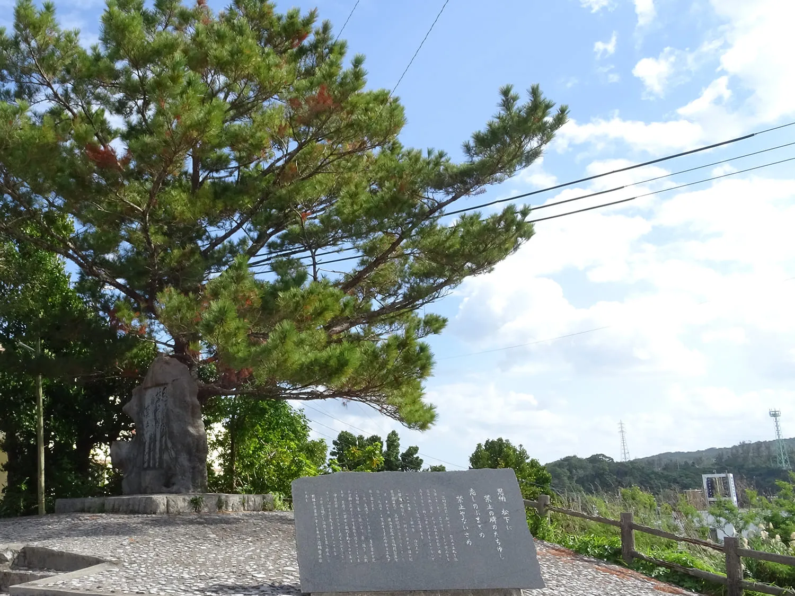
解説 Comentarios
| 「恩納節」は現在の国頭郡恩納村恩納が発祥の地で、恩納番所跡に隣接した一角には本曲の歌碑が建てられています。 | «Unna-bushi» se originó en lo que hoy es Onna, aldea de Onna, condado de Kunigami, y se ha erigido un monumento en conmemoración en una esquina adyacente al antiguo cuartel de guardia de Onna. |
| 尚敬王（在位：1713-1751年）の時代、外交問題における風紀の乱れを危惧した琉球王府が、若い男女の間でおこなわれていた毛遊び（※1）に対して厳しい取り締まりをおこなった背景により本曲が誕生したとされています。 | Se dice que esta canción se creó durante el reinado del rey Shō Kei (1713-1751), cuando el Reino de Ryukyu, temiendo un desmoronamiento de la moral pública en el contexto de asuntos diplomáticos, reprimió severamente el mōashibi（※1） practicado entre hombres y mujeres jóvenes. |
| 歌人である恩納なべが創作したもので、当時の社会情勢や政治に対する大衆の想いを力強く詠った琉歌であると云われています。 | Compuesta por la poetisa Unna Nabī, se dice que esta canción es un poderoso poema ryukyuense que expresa la situación social y el sentimiento político del público de la época. |
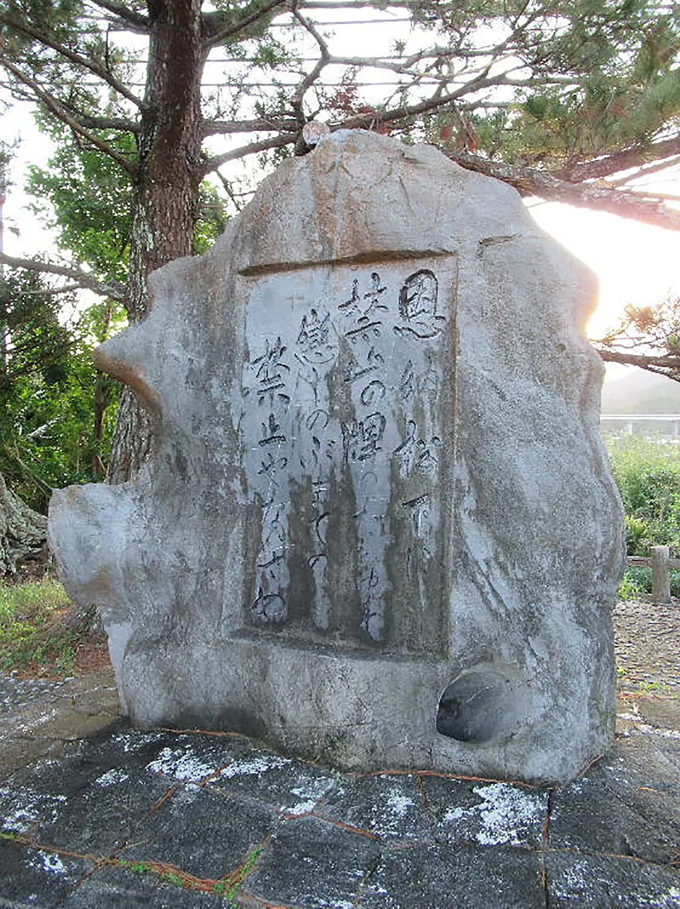
補足 Información complementaria
| その他の琉歌（作：恩納なべ） | Otros poemas (Ryūka) escritos por Unna Nabī |
歌詞 Letra
訳 Significado
| お姉さんたちの時代がうらやましい、シヌグの宴が開かれて。 | Envidio a la generación de mis hermanas, cuando hacían banquetes. |
| 私たちの時代はそれができなくなってしまった。 | Eso ya no es posible en nuestra generación. |
御前風五節
「中城はんた前節」Nakagusukuhantamē bushi古典音楽御前風五節
歌詞 Letra
飛び立ちゅる蝶 先づよ待て連れら
花のもと吾身や 知らぬあもの
訳 Significado
| 飛び立とうとしている蝶よ、一寸お待ちください。 | Mariposa que está a punto de alzar el vuelo, espera un momento, por favor. |
| 花が咲いている場所を知らないので、わたしも一緒に連れて行ってください。 | Como no sé dónde florecen las flores, llévame contigo. |
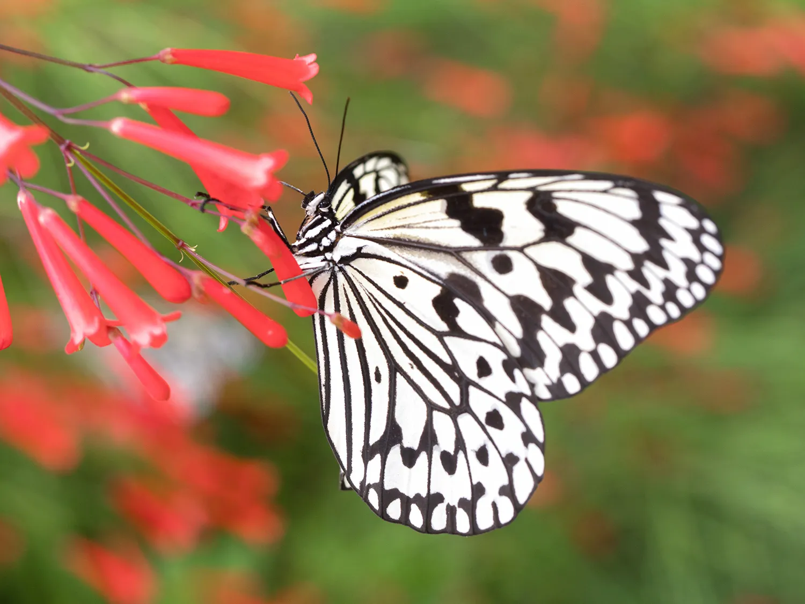
解説 Comentarios
| 「中城はんた前節」は蝶と対話する擬人法を用いて、自然の摂理に人生のはかなさを映し重ねて詠まれた歌曲です。 | «Nakagusuku-hantamē-bushi» es una canción que utiliza la personificación para comunicarse con una mariposa, reflejando la fugacidad de la vida a través de las leyes de la naturaleza. |
| 沖縄では古くより「蝶」は生きている者を守護する存在として死者の「魂」であるとする言い伝えが残されています。 | En Okinawa, existe una antigua leyenda que afirma que las mariposas son guardianas de los vivos y representan las almas de los muertos. |
| 一説によると、愛する人に先立たれてしまった深い悲しみを詠み込んだ歌ではないかと云われています。 | Una teoría es que la canción expresa el profundo dolor por la pérdida de un ser querido. |
| 「中城はんた前節」は沖縄本島の那覇から西へ約100kmの場所にある久米島が発祥とされ、この地を舞台にした原歌が残されています。 | Se dice que «Nakagusuku-hantamē-bushi» se originó en Kumejima, ubicada aproximadamente a 100 km al oeste de Naha, en la isla principal de Okinawa, y la canción original se ambienta allí. |
補足 Información complementaria
節名の由来 Origen del nombre
| 節名の由来は15世紀頃、久米島に伊藤索という名の一族が島を統治しており、その時代に建てられた宇江城（※1）のことを「中城」と呼んでいたことに因んでいます。 | El nombre del verso proviene del hecho de que en el siglo XV, un clan llamado Ito Saku gobernaba la isla de Kumejima, y el Castillo de Ue (※1), que fue construido durante ese tiempo, se llamaba «Castillo Naka (Naka-gusuku)». |
| ※「はんた前」は原歌で上述した通りとなります。 | «Hantamē» es como se indica arriba en la canción original. |
御前風五節
「特牛節」Kotei bushi古典音楽御前風五節
歌詞 Letra
常盤なる松の 変わる事無さめ
何時も春来りば 色ど勝る
訳 Significado
| 四季を通して緑に生い茂る松は、永遠に変わることはありません。 | Los frondosos pinos verdes perduran para siempre, año tras año. |
| いつものように春が訪れれば、さらに緑色が増すばかりです。 | Como siempre, con la llegada de la primavera, se vuelven aún más verdes. |
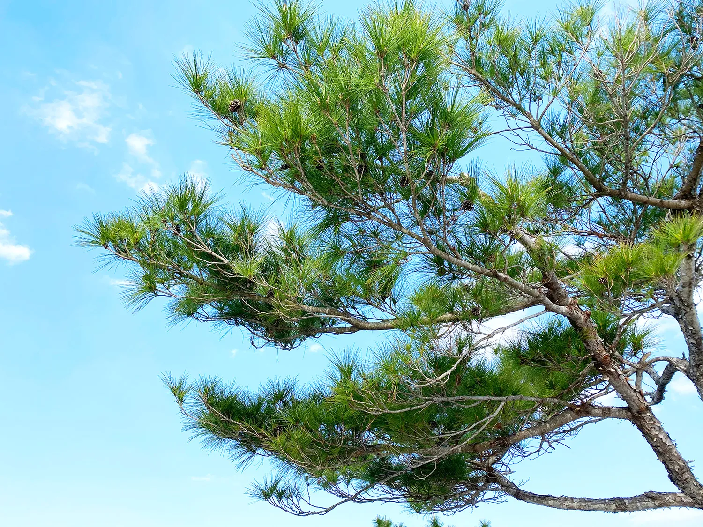
解説 Comentarios
| 「特牛節（こてい節）」は一年を通して枯れることがない「松」の生命力にあやかり人生の幸先を祝して詠まれた歌曲です。 | «Kotei-bushi» es una canción que celebra los buenos comienzos en la vida, inspirada en la vitalidad del pino, que nunca se marchita durante todo el año. |
| 沖縄の県木に指定されている「琉球松」は青々とした葉とその美しい枝ぶりが特徴的な常緑樹で、正月飾りをはじめお祝いの縁起物に用いられることが多く、古くより人々の生活に寄り添ってきました。 | El pino Ryukyu, árbol emblemático de la prefectura de Okinawa, es un árbol de hoja perenne caracterizado por sus exuberantes hojas verdes y hermosas ramas. Se utiliza a menudo en decoraciones de Año Nuevo y otros elementos festivos que traen buena fortuna, y ha estado presente en la vida de las personas desde la antigüedad. |
| 「特牛節（こてい節）」は沖縄本島の本部港から北西へ9kmの場所にある伊江島が発祥の地で本曲の原歌となる歌碑が建てられています。 | «Kotei-bushi» se originó en la isla de Ie, ubicada a 9 km al noroeste del puerto de Motobu, en la isla de Okinawa, donde se erigió un monumento con la inscripción de la canción original. |
| 節名は上句 " おほにしの特牛や "～の「特牛」に由来しています。 | El nombre de la canción proviene de «Kotei» en el primer verso: «Ohonishi no Kotei ya». |
原歌 Original
おほにしの特牛や なざちやらど好きゆる
わすた若者や 花ど好きゆる
訳 Significado ?
| おほにし（大西）の特牛はなざらちゃら（葉）が好きであるけれども、 | Al ganado Ōhonishi le gustan las hojas, |
| われわれ若者は花が好きだ。 | pero a nosotros, los jóvenes, nos gustan las flores. |
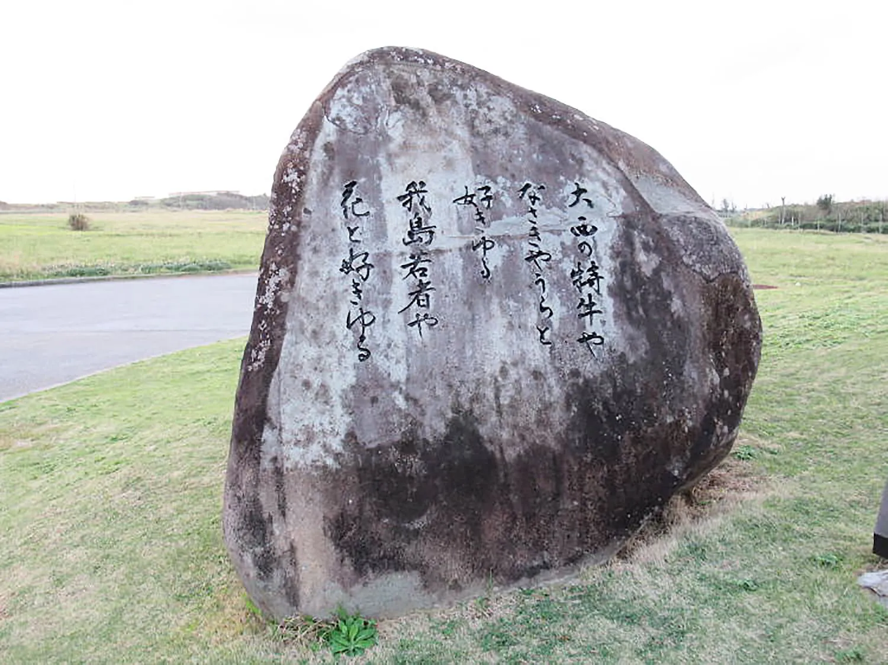
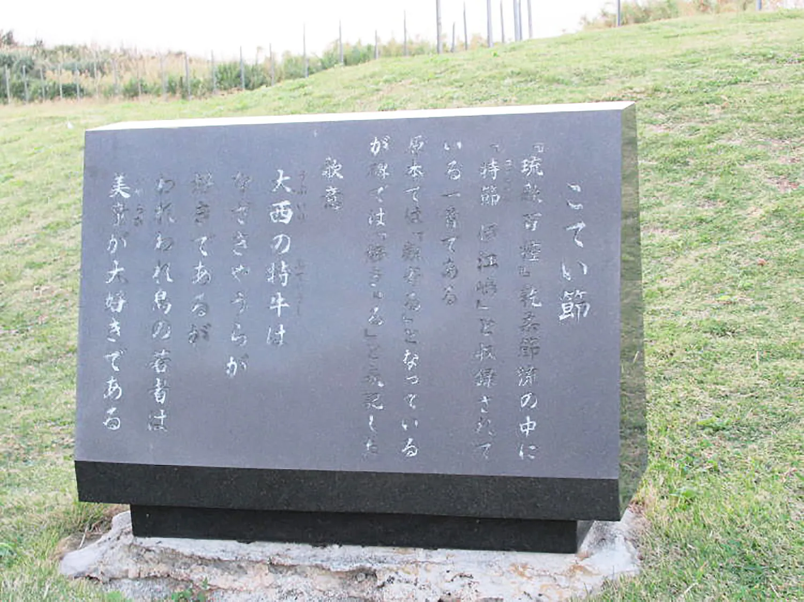
補足 Información complementaria
本歌の作者 Autor del poema original
| 「特牛節（こてい節）」は北谷王子朝騎が創作した琉歌で、尚敬王（在位：1713年 - 1751年）の時代に18年間に渡り摂政（※1）を務めました。 | «Kotei-bushi» es una canción de ryūka compuesta por Chatan Ōji Chōki, quien sirvió como regente(※1) durante 18 años durante el reinado del Rey Shō Kei. |
御前風五節
替え歌 Parodia
| 旋律が借用され、原歌と替え歌の関係が派生したのは最古の歌謡が集録されている「おもろ」の時代からであり、今日に至るまで一つの伝統形式として成り立っています。 | El préstamo de melodías y el surgimiento de la relación entre canciones originales y versiones adaptadas se remonta a la época del «Omoro», la colección más antigua de canciones populares, y se ha mantenido como una forma tradicional hasta nuestros días. |
| 「おもろさうし」 は12世紀から17世紀にかけて島々で詠われていた歌謡を採録し、1531年から1623年にかけて編纂された最古の歌謡集です。 | El «Omoro Sōshi» es la colección más antigua de canciones populares, compilada entre 1531 y 1623, que recoge canciones cantadas en las islas desde el siglo XII hasta el XVII. |
| 「おもろ」の語源は 「思い」 を意味します。 | La etimología de «Omoro» significa «pensamientos» o «sentimientos». |
「謝敷節」Jashichi bushi古典音楽
歌詞 Letra
解説 Comentarios
| 謝敷の浜に打ち寄せる白波に乙女が微笑む表情を映し重ねて詠まれた歌曲です。 | Esta canción describe el rostro sonriente de una joven reflejado en las olas blancas que rompen contra la orilla de la playa de Jashiki. |
| 「謝敷節」は国頭郡国頭村謝敷に連なる浜辺が舞台で、国道58号線沿いには本曲の歌碑が建てられています。 | «Jashichi-bushi» está ambientada en la playa de Jashiki, en la aldea de Kunigami, distrito de Kunigami, y un monumento a la canción se alza a lo largo de la Ruta Nacional 58. |
| 謝敷の浜はサンゴ片からなる砂地と板のような形状をした岩瀬で形成されており、寄せる波が打ち砕け白波が立つ美しい情景を詠み込んでいます。 | La playa de Jashiki está formada por zonas arenosas compuestas de fragmentos de coral y arrecifes rocosos con forma de tablones, y la canción captura la hermosa escena de las olas rompiendo contra la orilla y creando crestas blancas. |
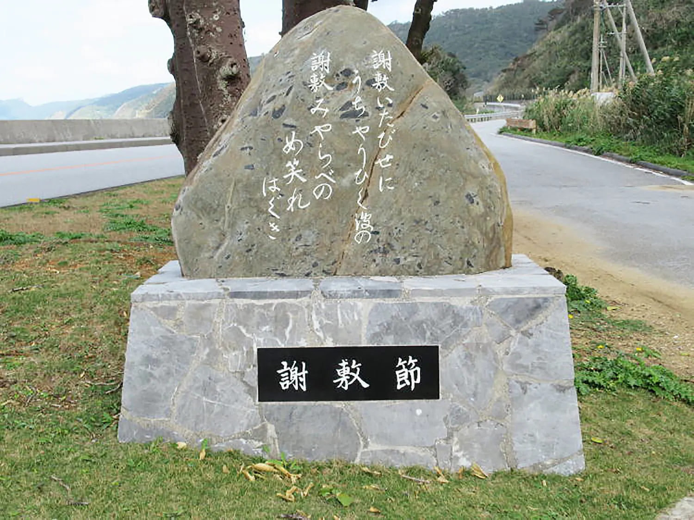
補足 Información complementaria
| 三千首の琉歌を収めた「標音・評釈 琉歌全集／ 武蔵野書院版」には十七首の「謝敷節」が収録されており、恋歌のほか自然や季節の情景を詠んだ琉歌が収められています。 | La «Colección completa de poemas ryukyuenses con pronunciación y comentarios (Edición Musashino Shoin)», que contiene 3000 poemas ryukyuenses, incluye diecisiete poemas «Jashichi-bushi», que abarcan no solo poemas de amor, sino también poemas sobre la naturaleza y escenas estacionales. |
| その中から、第14代琉球国王の尚穆王（在位：1739年-1794年）が詠んだとされる琉歌あるのでピックアップします。 | Entre ellos, destacaremos un poema ryukyuense atribuido al Rey Shō Boku (que reinó de 1739 a 1794), el decimocuarto rey del reino de Ryukyu. |
「早作田節」Haichikuten bushiちらし古典音楽
歌詞 Letra
訳 Significado
| 春は花が咲き誇り、奥山で暮らす鶯も | En primavera, las flores florecen en su máximo esplendor, al igual que los ruiseñores que viven en las profundidades de las montañas |
| 匂いに惹きつけられてさえずる声が愛らしい。 | El aroma los atrae y su canto es adorable. |
解説 Comentarios
| 「早作田節」は種々の花が開花し、芳香ただよう春の季節に心浮き立つ情景を詠み込んだ歌曲です。 | «Haitsikuten-bushi» es una canción que describe el emocionante paisaje primaveral, cuando diversas flores florecen y una fragancia impregna el aire. |
| 歌詞に登場するウグイスは別名ハルツゲドリ（春告げ鳥）と呼ばれ、美しく透き通った鳴き声で春の到来を知らせます。 | La curruca arbustiva japonesa que aparece en la letra también se conoce como Harutsugedori (ave mensajera de la primavera), y su hermoso y claro canto anuncia la llegada de la primavera. |
| 華やかに咲き誇る花々とウグイスの色映えした春の光景は昔から人々の心を魅了してきました。 | El paisaje primaveral de flores exuberantes y currucas arbustivas de vibrantes colores ha cautivado el corazón de la gente desde la antigüedad. |
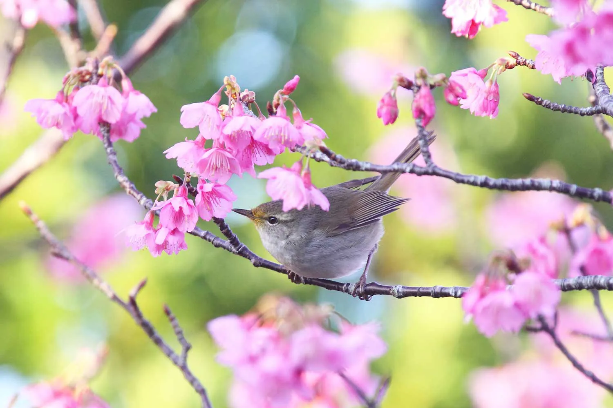
補足 Información complementaria
| また、「早作田節」は組踊（※1）「銘苅子」、「手水の縁」の舞踊曲として構成されています。 | Además, «Haitsikuten-bushi» es una pieza de danza compuesta para los Kumiodori (※1) «Mekarushī» y «Timiji-nu-In». |
「金武節」Chin bushi古典音楽
歌詞 Letra
こばや金武こばに だけや安富祖だけ
やねや瀬良垣に はりや恩納
訳 Significado
| クバ（こば）の葉は金武で取り、竹は安富祖で取る。 | Las hojas de la palmera abanico se cosechan en Kin, y el bambú se cosecha en Yasufuso?. |
| 骨組みは瀬良垣で、張りは恩納で仕上げる。 | La estructura está hecha de madera de seragaki? y las vigas están acabadas en madera de Onna. |
解説 Comentarios
| 「金武節」は各地を辿る道のりをクバ笠作りの工程になぞらえて詠み込んだ歌曲です。 | «Chin-bushi» es una canción que compara el viaje a través de diversas regiones con el proceso de elaboración de sombreros "kuba". |
| 歌詞に登場する金武、安富祖、瀬良垣、恩納の4地区はかつて琉球王国が管轄する行政区において、「金武間切」に属していたことから本曲の節名に命名されています。 | Los cuatro distritos mencionados en la letra —Kin, Afuso, Serakaki y Onna— formaban parte antiguamente del «Kinmagiri», un distrito administrativo bajo la jurisdicción del Reino de Ryukyu, de ahí el título de la canción. |
| クバは昔から人々の生活に深く関わり、耐久性や撥水性がよいため生活資材として重宝されてきました。 | El kuba ha estado profundamente ligado a la vida de las personas durante mucho tiempo y ha sido muy valorado como material de uso diario debido a su durabilidad y propiedades impermeables. |
| 大きく分けて「高クバ」と「地クバ」があり、「高クバ」は幹が高く葉は大きく育つのに対し、「地クバ」は背が低く葉は小さく柔らかい性質をもつと云われています。 | Existen principalmente dos tipos: «Taka-kuba» y «Ji-kuba». El «Taka-kuba» tiene un tronco alto y hojas grandes, mientras que el «Ji-kuba» se caracteriza por ser más bajo, con hojas más pequeñas y suaves. |
| クバ笠は細く削った竹を骨組みにし、「地クバ」の葉を張って作られ、雨天時と日よけに活用されてきました。 | El sombrero kuba se elabora utilizando bambú finamente laminado como armazón y cubriéndolo con las hojas del árbol kuba local, y se ha utilizado para protegerse de la lluvia y el sol. |
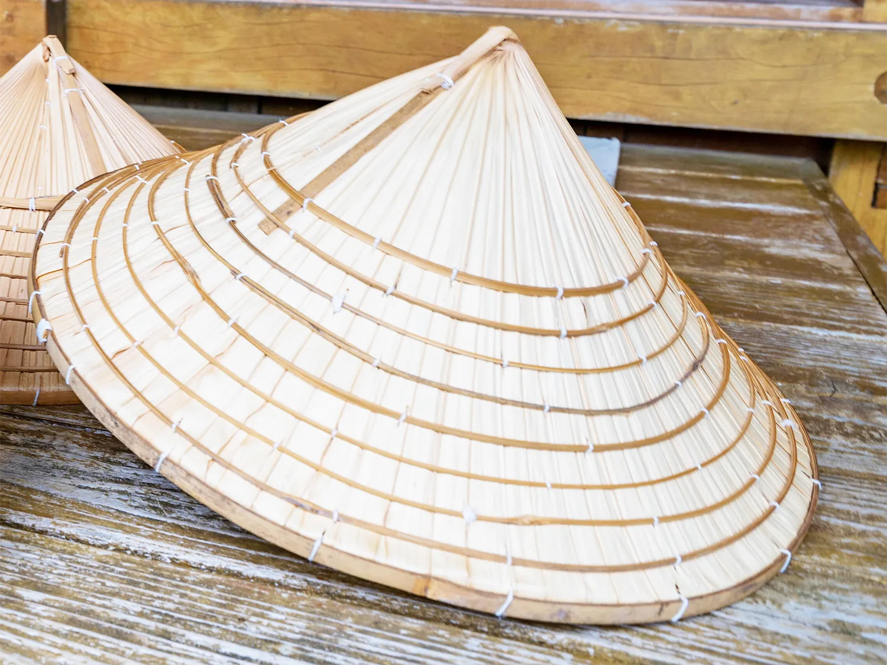
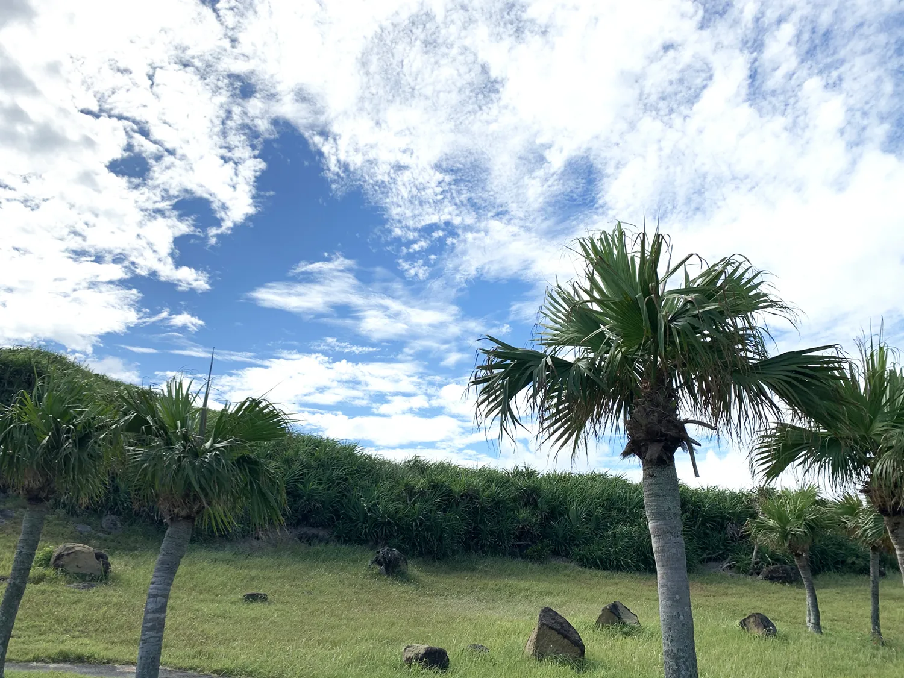
補足 Información complementaria
諸説 Diversas teorías
| 「金武節」は尚徳王の一族が政権クーデターによってこの地に落ち延びたときの情景を詠んだものとする一説があります。 | Una teoría sugiere que «Chin-bushi» es un poema que describe la escena en la que la familia del Rey Shō Toku huyó a esta zona tras un golpe de Estado. |
| その際の「金武節」の意訳は下記になります。 | A continuación, se presenta una posible interpretación de «Chin-bushi» en ese contexto. |
訳 Significado
| ここは金武で、あの山は安富祖岳。 | Este es Kin, y esa montaña de allá es el monte Yasufuso. |
| 屋根が見えるのは瀬良垣で、一走りゆけば恩納に着きます。 | En Seragaki se pueden ver tejados, y si sigues un poco más, llegarás a Onna. |
- 第一尚氏と第二尚氏
マブイ
| 金武町屋嘉の浜辺には「なんかばまの碑」が建てられおり、同じく尚徳王一族が落ち延びた道行の様子が記されています。 | En la playa de Yaka, en la ciudad de Kin, hay un monumento llamado «Nankabama no Hi» (Monumento a la Playa de los Siete Días), que también describe el viaje del Rey Shō Toku y su familia mientras huían. |
「平敷節」Fishichi bushi古典音楽
歌詞 Letra
訳 Significado
| 源河川は潮であるのか、湯であるのか、水であるのか、 | ¿El río Genka es una marea, un manantial de aguas termales o simplemente agua? |
| 源河村の娘たちが水浴びをする場所である。 | Es un lugar donde se bañan las chicas del pueblo de Genka. |
| ※「川」、「川」と「井戸」の発音が似ているので区別するために”走”をつけてたとされる。《参考：「嗣周・歌まくら」那覇出版社》 | Se cree que el carácter "走" se añadió para distinguir entre "川 (kawa)" y "井 (ido)" porque sus pronunciaciones son similares. (Referencia: «Tsuguchika Utamakura», Naha Publishing) |
解説 Comentarios
| 「平敷節」は現在の名護市北部に流れる源河川を舞台とする歌曲で、中流付近（名護市源河）の農道には本曲の歌碑が建てられています。 | «Fishichi-bushi» es una canción ambientada en el río Genka, que atraviesa la parte norte de la actual ciudad de Nago. Un monumento a esta canción se alza en un camino rural cerca del curso medio del río. |
| 歌碑の石板には「この歌は源河川の清い流れと源河美童達を賛美した歌」と紹介されており、「平敷節」と共に「源河節」の節名が刻まれています。 | La placa de piedra del monumento la describe como «una canción que alaba las aguas cristalinas del río Genka y a los apuestos jóvenes del río Genka», y en ella aparecen inscritos tanto «Fishichi-bushi» como «Genka-bushi». |
| 最古の琉歌集である「琉歌百控」（※1）には「源河節」と記されており、いつの時代から節名が「平敷節」と呼ばれるようになったかは定かでありません。 | La colección más antigua de canciones de Ryukyu, 「Ryūka Hyakkou」(※1), se refiere a ella como «Genka-bushi», y se desconoce cuándo comenzó a llamarse así. |
| また、本曲の歌詞（下句）には” 湯か ”と記されていますが、一説によると” 良か ”が適切であり、本来は「良い水」の意味を持つという解釈もあるようです。 | Además, aunque la letra de esta canción (el último verso) está escrita como 「湯か(yuka)」, una teoría sugiere que 「良か(yoka)」 sería más apropiado y que originalmente significaba «agua buena». |
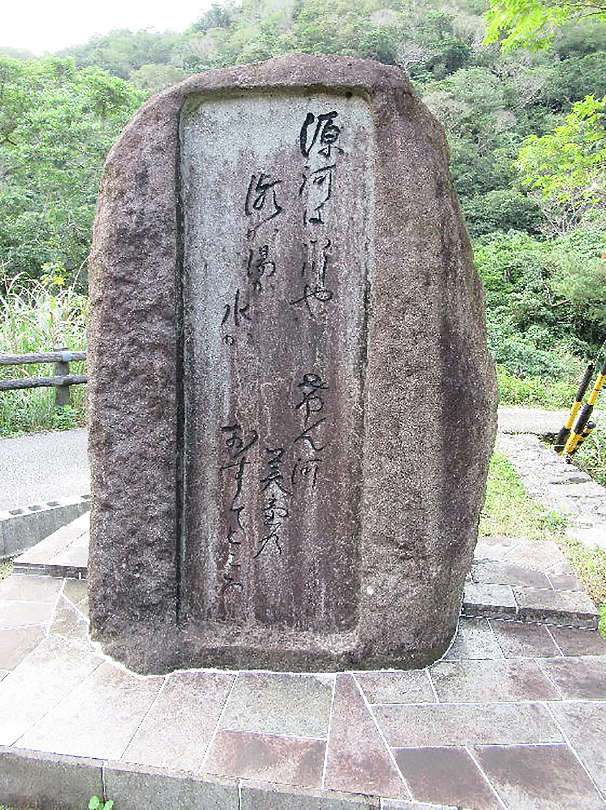
補足 Información complementaria
源河川の生物 Fauna y flora del rio Genka
| 源河川は緑豊かなやんばるの自然に囲まれており、濁りが少なく透明度が高いことから、かつては沖縄固有のリュウキュウアユが生息していました。 | El río Genka está rodeado por la exuberante naturaleza de Yanbaru, y sus aguas claras y transparentes lo convirtieron en el hábitat del Ryukyu Ayu (Plecoglossus altivelis ryukyuensis), una especie endémica de Okinawa. |
| しかし、河川工事をはじめとする周辺環境の変化により川が汚染されたことで水質に敏感なリュウキュウアユは1970年代に絶滅してしまいました。 | Sin embargo, debido a cambios en el entorno circundante, incluyendo la construcción de canales, el río se contaminó y el Ryukyu Ayu, sensible a la calidad del agua, se extinguió en la década de 1970. |
| その後、リュウキュウアユを復活させるために多くの有志が集まり、奄美大島に残されていた同種を定着させるために現在も活動が続けられています。 | Desde entonces, muchos voluntarios se han unido para recuperar el Ryukyu Ayu y continúan sus esfuerzos para establecer la población restante de la especie en la isla de Amami Oshima. |
「白瀬走川節」Sirashihaikā bushi古典音楽
歌詞 Letra
白瀬走川に 流れゆる桜
すくて思里に ぬきやりはけら
訳 Significado
| 白瀬走川に流れる桜の花をすくい糸に貫き列ね、 | Recogeré las flores de cerezo que flotan en el río Shirase, las ensartaré en un hilo y las alinearé, |
| 愛しい人の首におかけしましょう。 | para colocárselas alrededor del cuello de mi amado. |
解説 Comentarios
| 「白瀬走川節」は久米島に流れる白瀬川を舞台にした歌曲で、島尻郡久米島町嘉手苅にある橋の袂には本曲の歌碑が建てられています。 | «Shirashihaikā-bushi» es una canción ambientada en el río Shirase, que atraviesa la isla de Kumejima. Un monumento en su honor se alza al pie de un puente en Kadekaru, en la ciudad de Kumejima, distrito de Shimajiri. |
| 愛しい人を一途に思う女性の恋心を、糸に通した花のゆかしさに映し重ねて詠み込んでいます。 | La canción expresa el amor inquebrantable de una mujer por su amado, reflejado en la elegante belleza de las flores ensartadas en un hilo. |
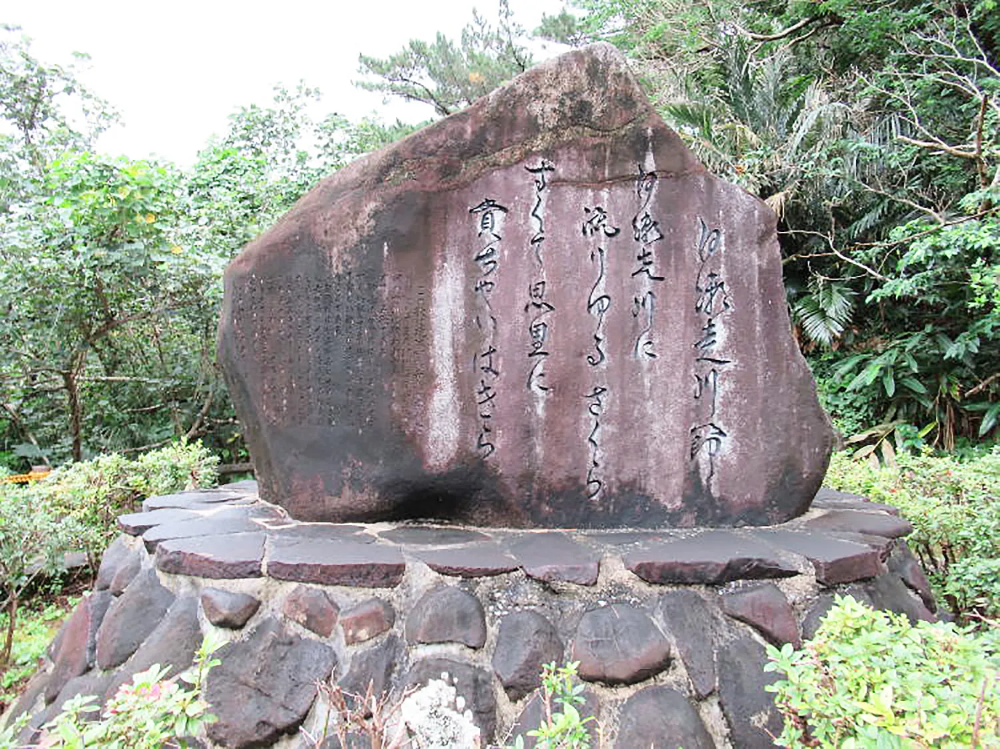
補足 Información complementaria
桜の種類 Tipos de flores de cerezo
| 久米島では、沖縄で代表的な「寒緋桜」の他に「幻の桜」と呼ばれる「クメノサクラ」が生育されています。 | En la isla de Kumejima, además del cerezo taiwanés (Kanhi zakura), un cerezo representativo de Okinawa, crece el cerezo de Kume, también conocido como el cerezo fantasma. |
| ピンク色の花をつける「寒緋桜」に対して、「クメノサクラ」は白い花を咲かせることが特徴的です。 | Mientras que el cerezo taiwanés tiene flores rosadas, el cerezo fantasma se caracteriza por sus flores blancas. |
| また、花が散る時に「寒緋桜」は花冠（花全部）ごと落ちますが、「クメノサクラ」は日本本土で咲く「ソメイヨシノ」のように一輪ずつ花びらが散っていきます。 | Además, al caer, el cerezo taiwanés suelta la corola entera, mientras que el cerezo fantasma suelta sus pétalos uno a uno, como el cerezo Somei Yoshino que florece en Japón continental. |
| 一時は気候の問題により絶滅寸前になったことから「幻の桜」と呼ばれています。 | Estuvo al borde de la extinción debido a problemas climáticos, de ahí su nombre: cerezo fantasma. |
| 現在、白瀬川の両岸には桜の木が一本も生えていないため「ツツジ」を「桜」に見間違えたのではないかという説もありますが、「白瀬走川節」が創作された時代には「クメノサクラ」が咲いていたのかもしれません。 | Actualmente, no hay cerezos creciendo en ninguna de las orillas del río Shirase, por lo que existe la teoría de que las «azaleas» fueron confundidas con «flores de cerezo». Sin embargo, es posible que la «Kume no Sakura» estuviera en flor durante la época en que se creó «Shirashihaikā-bushi». |
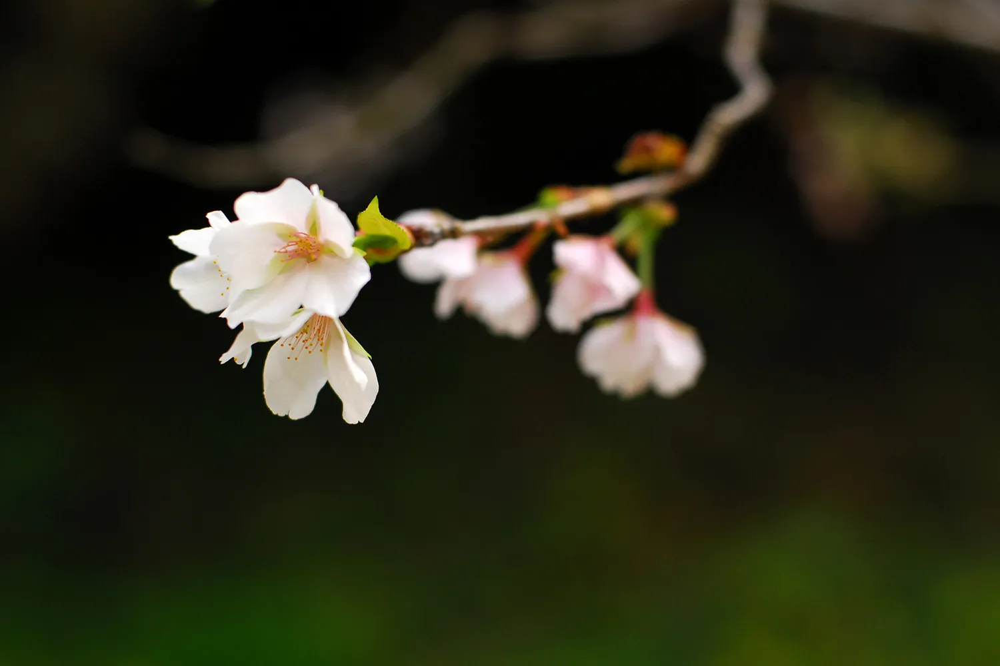
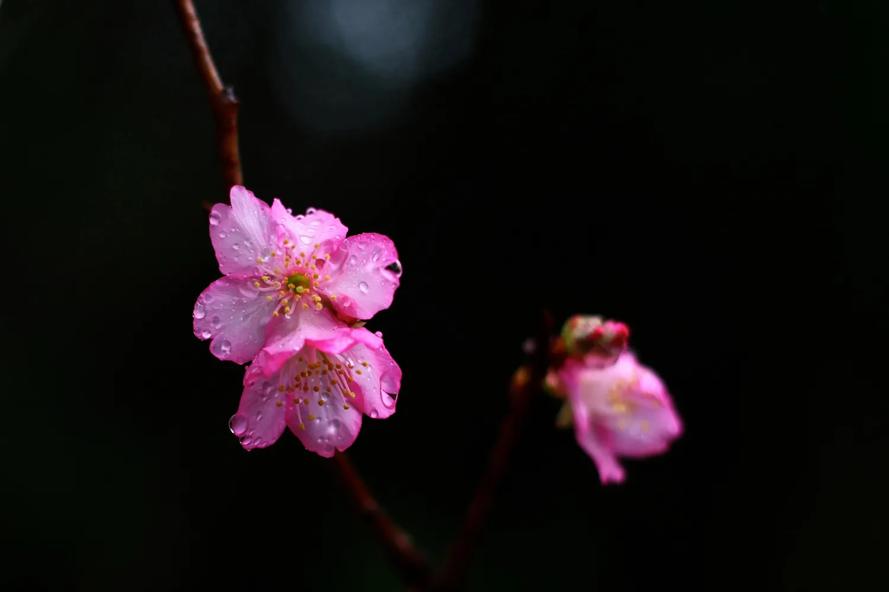
「こにや節」Kunya bushi古典音楽
歌詞 Letra
訳 Significado
| 古仁屋の細身のなべ（名前）はお高くとまって、 | La esbelta Nabe de Koniya es altiva y |
| 書記補役の役人といつも一緒にひっついている。 | siempre se mantiene cerca del auxiliar administrativo. |
| ※”まひ”の語句を否定語とする解釈があり、その場合は「側で供することはない」の意味となる。《「ふるさとの歌」三ツ星印刷》 | Nota: Existe una interpretación que considera la palabra «mahi (mai)" como una palabra negativa, en cuyo caso significa «no servir al lado». (De «Furusato no Uta», Imprenta Mitsuboshi) |
解説 Comentarios
| 「こにや節」は奄美大島の南部に位置する瀬戸内町古仁屋が発祥の地で、最古の琉歌集である「琉歌百控」（※1）には「古仁屋節」の節名で本曲が収録されています。 | La canción «Kunya-bushi» se originó en Koniya, Setouchi-cho, ubicada en la parte sur de Amami Oshima. Está incluida en la colección más antigua de canciones de Ryukyu, 「Ryūka Hyakkō」（※1）, bajo el título «Kunya-bushi». |
| 琉球王国が奄美群島を統治していた時代（15世紀頃）、古仁屋集落は行政区画（間切）に編成され、現在の地方自治体に相当する役所が設けられていました。 | Durante la época en que el Reino de Ryukyu gobernaba las islas Amami (alrededor del siglo XV), el asentamiento de Koniya se organizó como un distrito administrativo (magiri), y allí se estableció una oficina equivalente a un gobierno local moderno. |
| 本曲はこの古仁屋集落を舞台に描かれた人間模様の一コマですが、史料によってさまざまな解釈の仕方があり難解な歌曲とされています。 | Esta canción describe una escena del drama humano que se desarrollaba en Koniya, pero se considera difícil de comprender debido a las diversas interpretaciones basadas en fuentes históricas. |
補足 Información complementaria
地方行政の役職 Cargos en el gobierno local
| 琉球王国が統治していた時代、奄美大島は以下の七つの間切（行政区画）に区分されていました。 | Durante el período en que gobernó el Reino de Ryukyu, Amami Oshima estaba dividido en los siguientes siete magiri (distritos administrativos): |
- 笠利間切 Kasari
- 住用間切 Sumiyou
- 古見間切 Komi
- 名瀬間切 Naze
- 焼内間切 Yakeuchi
- 西間切（西方地区、実久地区） Nishi (Distrito de Nishikata, distrito de Saneku)
- 東間切（古仁屋地区、鎮西地区） Higashi(Distrito de Koniya, distrito de Chinzai)
| 間切の主な役職 Principales cargos en el distrito |
- 首里大屋子（大親）Shuri Ufuyaku (Ufūya): 間切の行政・司法・税務を統括する最高責任者。（琉球王府側の公式の統治者）El funcionario de mayor rango a cargo de la administración, el poder judicial y los impuestos en un distrito. (El gobernante oficial del Reino de Ryukyu).
- 勢頭 Seto: 実務の頭役 Jefe de operaciones
- 筆子 Tekuko: 書記役。Secretario
「辺野喜節」Binuchi bushi古典音楽
歌詞 Letra
伊集の木の花や あんきよらさ咲きより
わぬも伊集やとて 真白咲かな
解説 Comentarios
| 「辺野喜節」は国頭郡国頭村辺野喜が発祥の地で、国道58号線沿いの辺野喜橋の袂には本曲の歌碑が建てられています。 | La canción «Binuchi-bushi» se originó en Benoki, aldea de Kunigami, distrito de Kunigami, y un monumento con la letra de la canción se alza al pie del puente de Benoki, en la Ruta Nacional 58. |
| 山原（※1）の地に育つ伊集の木は成長すると10メートル以上にもなり、木の枝一面に咲く白い花は緑豊かな大自然の中で一際に映えます。 | El árbol Iju, que crece en la región de Yanbaru（※1）, puede alcanzar más de 10 metros de altura en su plenitud. Sus ramas se cubren de flores blancas que destacan con belleza en medio del exuberante entorno natural. |
| 「辺野喜節」はこの愛嬌ある清らかな伊集の木の花を讃えて詠まれた歌曲です。 | «Binuchi-bushi» es una canción que alaba la belleza y pureza de las flores de este árbol Iju. |
| また、本曲は古典音楽「伊集之木節」が原歌となり、琉歌も同じ内容で詠われていますが、「伊集之木節」の上句” あがきよらさ咲きより ”の” あが ”の田舎言葉を、本曲では首里言葉” あん ”に替えて、” あんきよらさ咲きより ”と歌い直しています。 | Además, esta canción se basa en la pieza de música clásica «Iju-nu-ki-bushi», y la canción de Ryukyu también comparte el mismo contenido. Sin embargo, en el primer verso de «Iju-nu-ki-bushi», «Agachurasa sachui», el dialecto rural «aga» se sustituye por el dialecto de Shuri «an», resultando en el verso «Anchurasasachui». |
| 「辺野喜節」は曲想や演奏時間による組み合わせが良いこともあり、今日では祝いの席で演奏される御前風五節の「長伊平屋節」の代わりによく演奏されるようになりました。 | «Binuchi-bushi» se interpreta a menudo hoy en día como alternativa a «Nagaihya-bushi», una de las cinco piezas de «Gujinfūichi-bushi» que se tocan en ocasiones festivas, debido a su atractiva melodía y duración. |
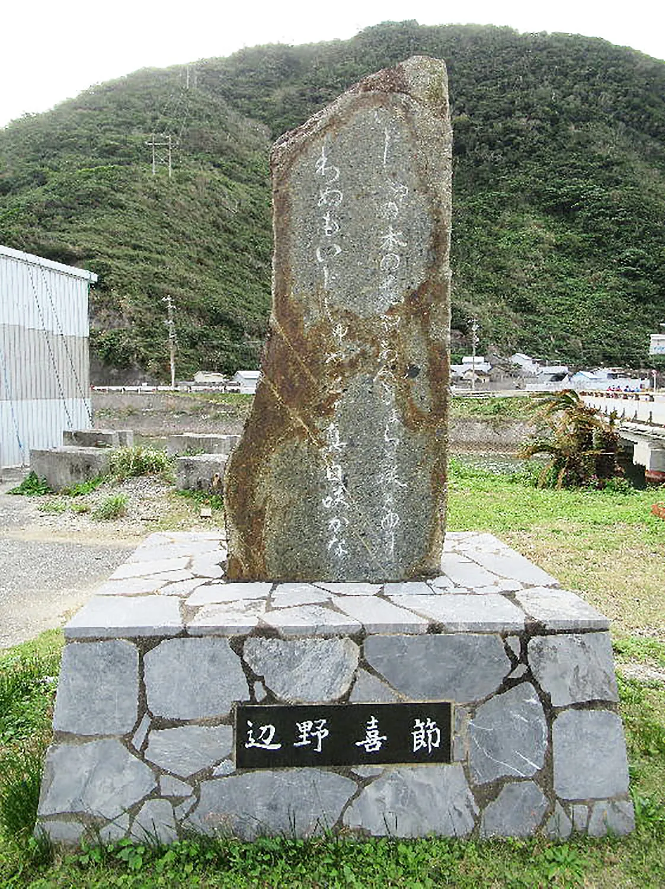
補足 Información complementaria
逸話 Anecdota
| 「辺野喜節」の創作背景として一つのエピソードが語り継がれています。 | Una anécdota se ha transmitido como el origen de «Binuchi-bushi». |
琉球国王の御側女に中城村伊集出身の色白の美人がおりましたが、王様はこの伊集のアヤーをすごく愛されて、王妃様もほったらかしにされました。 El rey de Ryukyu tenía como concubina a una bella mujer de piel clara, originaria de la aldea de Nakagusuku, en Iju. El rey amaba profundamente a Iju no Aya, pero a la reina la descuidaba. でも、王妃様は御上品な方ですから悋気（焼きもち）などなさらずに、ただ伊集のアヤーの美しさに「私もあやかりたい」という御歌を詠まれ御心を安じられました。 Sin embargo, la reina era una mujer refinada y no sintió celos. En cambio, encontró consuelo componiendo un poema que expresaba su anhelo de ser tan hermosa como Iju no Aya. その御歌が、この「辺野喜節」になったということです。 Se dice que ese poema se convirtió en la canción «Binuchi-bushi». 引用：「嗣周・歌まくら」那覇出版社 Cita: «Utamakura de Tsuguchika», Editorial Naha
「大兼久節」Ufuganiku bushiちらし古典音楽
歌詞 Letra
訳 Significado
| 名護の大兼久で馬を走らせ楽しや。 | Fue divertido montar a caballo en Ufuganiku, en Nago. |
| 船を走らせ楽しや、我が名護の港。 | Es un placer navegar con los barcos alrededor de nuestro puerto de Nago. |
解説 Comentarios
| 「大兼久節」は名護市街の景観を賛美して詠まれた歌曲です。 | «Ufuganiku-bushi» es una canción que exalta el paisaje de la ciudad de Nago. |
| 現在の名護市庁舎を中心とする町一帯は当時、大兼久村と呼ばれていました。 | La zona que rodea el actual Ayuntamiento de Nago se llamaba entonces Aldea de Ufuganiku. |
| ”兼久”の語源は”砂地”を意味し、名護湾から寄せてくる砂が堆積して村周辺に形成されたことに由来しています。 | El nombre «Ganiku» proviene del hecho de que la arena traída de la Bahía de Nago se acumuló y formó la zona alrededor de la aldea. |
| 名護の豊かな資源、催事の賑わい、美しい弧を描くように広がる名護湾の景観を詠った郷土の賛歌です。 | Es un himno local que celebra los abundantes recursos de Nago, el animado ambiente de sus eventos y el hermoso paisaje sinuoso de la Bahía de Nago. |
補足 Información complementaria
琉球競馬場 Hipódromo de Ryukyu
| 当時、大兼久村では足運びの良い名護湾の砂を利用して大兼久馬場（※1）と呼ばれる琉球競馬場（※2）を開設し、競技大会が催されるようになりました。 | En aquella época, en la aldea de Ufuganiku, se construyó una pista de carreras de caballos de ryukyu (※2) llamada Ufuganiku Baba (※1), utilizando la arena de la bahía de Nago, que era fácil de transitar, y allí comenzaron a celebrarse competiciones. |
| また、旧暦四月になると豊作を祈願する畦払いと呼ばれる年中行事がおこなわれ、馬に乗ったノロ（祭司）が各地域を遙拝して周った後、余興として競馬が催されていたそうです。 | Además, en el cuarto mes del calendario lunar, se celebraba un evento anual llamado Abushibarē para orar por una cosecha abundante. Se dice que después de que la Noro (sacerdotisa) a caballo recorriera cada región ofreciendo oraciones, se celebraban carreras de caballos como entretenimiento. |
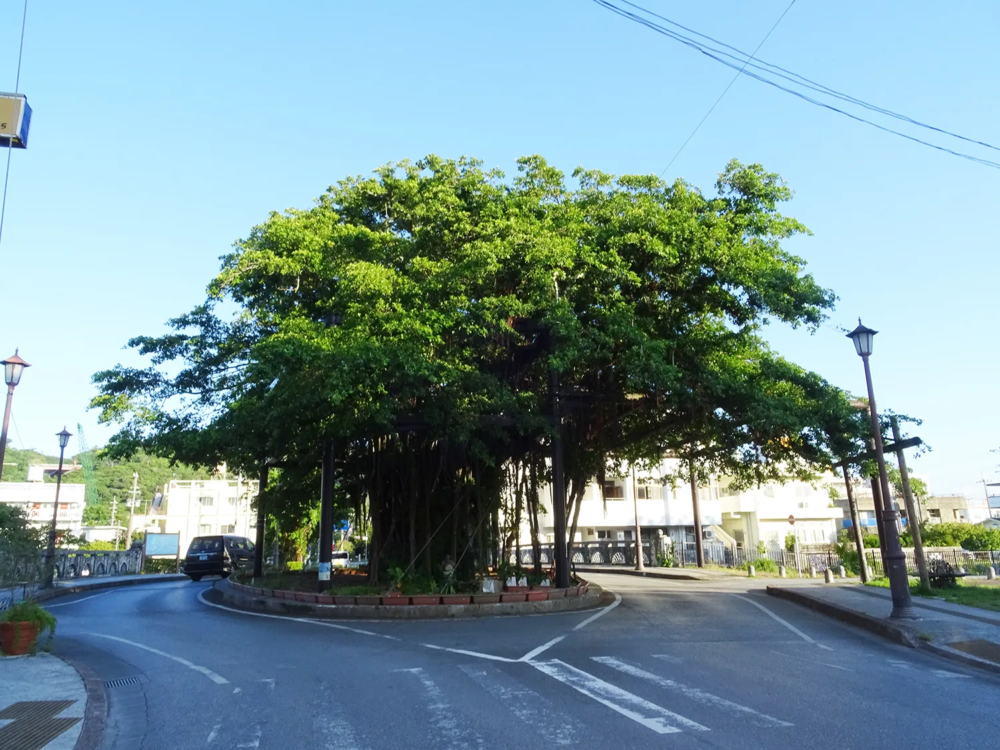
ちらし
| 「大兼久節」は昔節（※3）である「ぢゃんな節」のちらし（※4）として演奏されます。 | «Ufugani-bushi» se interpreta como una variante(※4) de «Janna-bushi», que se categoriza como «Nkashi-bushi». |
「港原節」Nnatouhara bushi古典音楽
歌詞 Letra
訳 Significado
| 打ち鳴らし、鳴らし四つ竹を鳴らして、 | Al son de los tambores y al sonido de las cuatro cañas, |
| 今日は晴れの舞台に出て踊ることのなんと嬉しいことよ。 | qué alegría poder salir hoy a bailar en este escenario tan especial. |
解説 Comentarios
| 「港原節」は四つ竹の音色が心地よく響く祝いの座で優雅に踊るシーンを描いた歌曲です。 | «Nnatuhara-bushi» es una canción que describe una escena de elegante danza en una celebración, acompañada por el agradable sonido de los yotsudake. |
| 一説によると、港原は大宜味村鏡地原の広大な農耕地を指すとあり、現在の地図に照らし合わせたところ、大宜味村のやや上に位置する国頭村奥間に「鏡地原」の地名が存在します。 | Según una teoría, «Nnatuhara» se refiere a las vastas tierras de cultivo de «Kakanjibaru» en la aldea de Ogimi. Observando un mapa actual, el topónimo «Kakanjibaru» aparece en Okuma, aldea de Kunigami, ubicada ligeramente al norte de Ogimi. |
| かつてこの地域一帯は首里城の建築用材を献上するために、山々から伐りだした材木を運搬するなどして村集落の生活基盤を築いていました。 | Toda esta región se basó en el transporte de madera talada de las montañas para la construcción del castillo de Shuri. |
| 当時、「捌理」と呼ばれる材木の運搬や検査をおこなう指揮官がおり、首里王府の役人が定期的に巡視していたことから、本曲はこれらの役人をもてなす宴席で演奏された歌なのではないかと考えます。 | En aquella época, existían comandantes llamados «Sabakui» responsables del transporte e inspección de la madera, y funcionarios del gobierno real de Shuri inspeccionaban regularmente estas áreas. Por lo tanto, se cree que esta canción pudo haber sido interpretada en banquetes para entretener a dichos funcionarios. |
補足 Información complementaria
労働歌 Canciones de trabajo
| 木材の伐り出しや運搬をおこなうときは音頭をとりながら声を合わせて鼓舞する労働歌「ハイヨヤエ節」（国頭さばくい）が歌われていました。 | Al talar y transportar la madera, los trabajadores cantaban el «Haiyue-bushi» (Kunjan Sabakui), una canción de trabajo que los animaba y motivaba mientras abrían camino. |
「仲村渠節」Nakankari bushi古典音楽
歌詞 Letra
訳 Significado
| 仲村渠家の裏戸の簾を下げておきますから、 | Dejaré bajada la persiana de la puerta trasera de la casa de los Nakankari, |
| 確認したら人目につかぬようにいらしてください。 | así que, cuando lo compruebes, ven sin llamar la atención. |
解説 Comentarios
| 「仲村渠節」は沖縄本島から北西約9kmに位置する伊江島が発祥の地で、国頭郡伊江村東江上にあるリリーフィールド公園には本曲の歌碑が建てられています。 | La canción «Nakakankari-bushi» se originó en la isla de Ie, ubicada aproximadamente a 9 km al noroeste de la isla principal de Okinawa. Un monumento a la canción se encuentra en el Parque del Campo de Lirios en Higashieue, aldea de Ie, distrito de Kunigami. |
| 創作された背景には島に伝わる「マカト物語」の一幕に結びつきがあると云われています。 | Se dice que la creación de la canción está vinculada a una escena del «Makato Monogatari», una leyenda transmitida de generación en generación en la isla. |
| 伊江島の由緒ある家柄に仲村渠真嘉戸という美童がおり、その娘には互いに思いを寄せる恋人がいました。 | En una familia distinguida de la isla de Ie vivía un apuesto joven llamado Nakamurakyo Makado, y su hija tenía un amante con quien compartía un afecto mutuo. |
| しかし、二人の逢引を良く思わない両親に厳しく監視され、密かに会うために簾を合図に利用したロマンスが「仲村渠節」に描かれています。 | Sin embargo, sus padres, que desaprobaban sus encuentros amorosos, los vigilaban de cerca, y el romance representado en «Nakankari-bushi» muestra cómo utilizaban una persiana de bambú como señal para encontrarse en secreto. |
| また、恋人の名を「北の松金」と呼び、後に琉球国王となる尚円王（在位：1469年 - 1476年）であるとの言い伝えが残されています。 | Además, existe una leyenda que afirma que el nombre de su amante era «Nishi-nu-machigani», y que este era el Shō En, quien más tarde se convirtió en rey de Ryukyu de 1469 a 1476. |
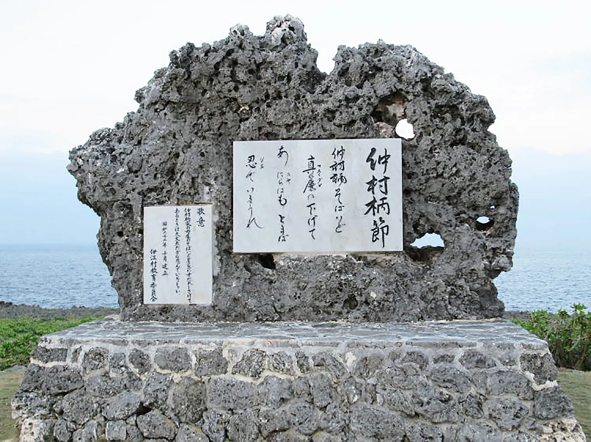
補足 Información complementaria
一名小橋 Kubashi
| 本曲は別名「一名小橋」と呼びます。 | Esta canción también se conoce como «Kubashi». |
| 「一名」とは”またの名”、”別名”という意味を持ち、「小橋」は「仲島」に架けられていた橋を指しています。 | «Kubashi» significa «otro nombre» o «nombre alternativo», y hace referencia al puente que cruzaba Nakashima. |
| 「仲島」は現在の那覇市泉崎の周辺に位置し、かつては海に浮かぶ小島で首里王府によって遊郭が公的に設置されていた場所でしたが、その後、埋め立てにより陸地になりました。 | Nakashima se encuentra cerca de la actual Izumisaki, en la ciudad de Naha. Antiguamente era una pequeña isla flotante en el mar donde el gobierno real de Shuri estableció oficialmente un barrio rojo, pero posteriormente fue recuperada y pasó a formar parte del continente. |
| 三千首の琉歌を収めた「標音・評釈琉歌全集 ／武蔵野書院版」には五十五首の「仲村渠節」が収録されており、そのうちの十三曲は「仲島」を舞台にした琉歌が詠まれています。 | La «Colección completa de Ryuka con pronunciación y comentarios / Edición Musashino Shoin», que contiene 3000 poemas Ryuka, incluye 55 poemas «Nakankari-bushi», trece de los cuales están ambientados en Nakashima. |
| その中から「小橋」を詠み込んだ一節をピックアップします。 | De entre ellos, seleccionaremos un pasaje que menciona «Kubashi». |
「出砂節」Idisina bushi古典音楽
歌詞 Letra
解説 Comentarios
| 「出砂節」は島尻郡渡名喜村に属する出砂島を舞台に詠まれた歌曲です。 | «Idisina-bushi» es una canción compuesta en la isla de Idesuna, perteneciente a la aldea de Tonaki, distrito de Shimajiri. |
| 人々の生活には欠かすことのできない水源（泉）を囲むように鎮座している御嶽（※1）。 | La canción describe una arboleda sagrada (utaki) (※1) que rodea un manantial indispensable para la vida de sus habitantes. |
| その風景に我が子を抱いてる里之子の姿を映し重ね、村集落の繁栄を祝います。 | La canción celebra la prosperidad de la aldea superponiendo la imagen de un aldeano con su hijo en brazos sobre este paisaje. |
補足 Información complementaria
シマノーシ祭 Festival de Shimanoshi
| 隣合わせに位置する渡名喜島では、旧暦四月に豊年や健康など島の繁栄を祈願するシマノーシ祭（島直し）と呼ばれる祭祀行事がおこなわれます。 | En la isla vecina de Tonaki, se celebra el festival Shimanoshi (Rejuvenecimiento de la Isla) durante el cuarto mes del calendario lunar para orar por la prosperidad de la isla, incluyendo una cosecha abundante y buena salud. |
| 出砂島には四か所の御嶽があり、渡名喜島の人々は神が来訪する島として古くより信仰の対象としていました。 | La isla de Idesuna cuenta con cuatro lugares sagrados (utaki), y los habitantes de Tonaki la veneran desde hace mucho tiempo como una isla visitada por los dioses. |
「瓦屋節」Karaya bushiちらし古典音楽
歌詞 Letra
訳 Significado
| 瓦屋の上に登って南の方を見ると、 | Subí al tejado y miré hacia el sur. |
| 海辺は見えるけど愛しい人の姿は見えない。 | Pude ver la orilla del mar, pero no pude ver a mi amada. |
解説 Comentarios
| 遠くを見晴らす瓦屋の頂に立ち、忍びやかに愛しい人を想う女性の胸中を詠み込んだ歌曲です。 | Esta canción expresa los sentimientos de una mujer que, desde lo alto de un tejado, contempla la distancia, piensa en secreto en su amado. |
| 「瓦屋節」は最古の琉歌集である「琉歌百控」（※1）に「美里同村 首里南風之平等 瓦屋とも云 鳥小堀村」と出自が記されています。 | El origen de «Karayā-bushi» se registra en la colección más antigua de canciones de Ryukyu, «Ryūka Hyakkō» (※1), como «Misato-dōson, Shuri Nanpu no Heidō, también conocido como Kawaraya, aldea de Torikobori». |
| 美里同村（現・沖縄市知花）と鳥小堀村（現・那覇市首里鳥堀町）は焼き物の生産地として知られ、当時の形跡をわずかに残す古窯跡は沖縄県の埋蔵文化財に指定されています。 | Misato-dōson (actual Chibana, ciudad de Okinawa) y la aldea de Tunjumui (actual Torikobori-chō, Shuri, ciudad de Naha) son conocidas por su producción de cerámica, y los antiguos hornos que aún conservan vestigios de aquella época están declarados patrimonio cultural enterrado de la prefectura de Okinawa. |
| 首里南風之平等（※2）は、鳥小堀村（現・那覇市首里鳥堀町）を含む地域一帯を指しており、1671年頃に首里城の瓦を焼いていた窯場があったそうです。 | Shuri Fēnuhira (※2) se refiere al área que incluye la aldea de Tunjumui (actual Shuri Toribori-cho, ciudad de Naha), y se dice que allí había un horno donde se cocían las tejas del castillo de Shuri alrededor de 1671. |
| 参考：「首里古地図」／沖縄県立図書館（東恩納寛惇文庫蔵） | Referencia: «Mapa antiguo de Shuri» / Biblioteca de la Prefectura de Okinawa (Colección Higashionna Kanjun) |
| また、1682年、瓦の需要急増に備えて美里の知花、首里の宝口、真和志の湧田の窯を琉球王府の命により統合し、真和志の壺屋（現・那覇市壺屋）に窯場を移設した歴史的背景があります。参考：「球陽」 | Además, en 1682, en previsión del aumento de la demanda de tejas, los hornos de Chibana en Misato, Takarakuchi en Shuri y Wakuta en Mawashi fueron consolidados por orden del Reino de Ryukyu, y el emplazamiento del horno se trasladó a Tsuboya en Mawashi (actual Tsuboya, ciudad de Naha). Referencia: «Kyuyo» |
| 壺屋が選ばれた理由の一つは、地形が窯場に適した小高い山（傾斜地）であるからと云われています。 | Se dice que una de las razones por las que se eligió Tsuboya fue que su topografía —una pequeña colina (terreno inclinado)— era adecuada para un emplazamiento de horno. |
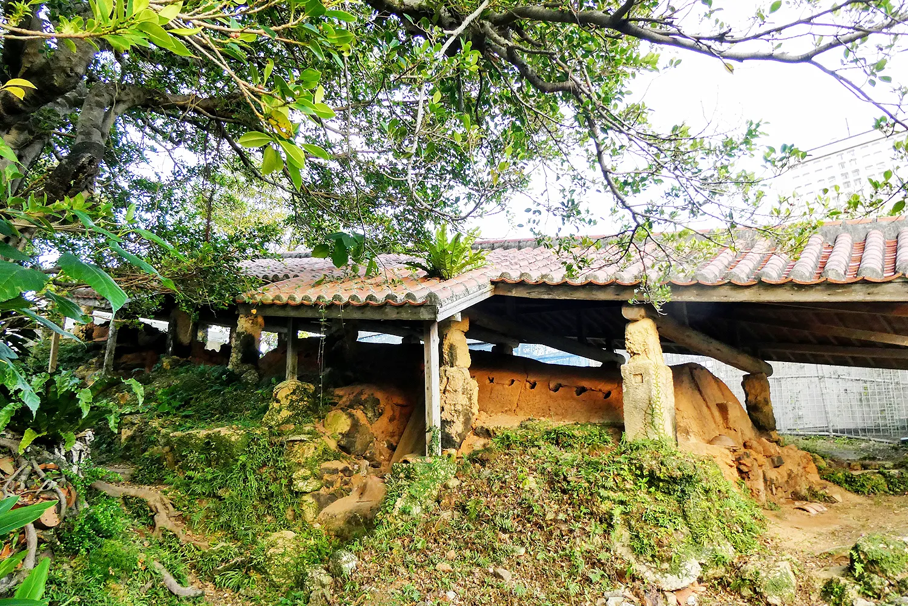
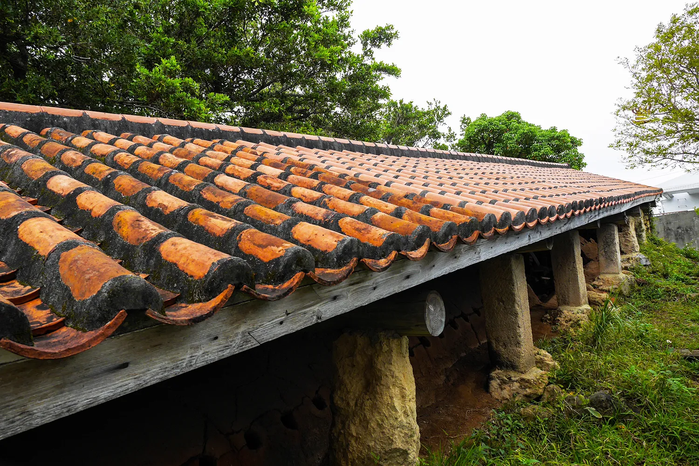
補足 Información complementaria
| 「瓦屋節」の創作背景や舞台となった場所は他にも様々な諸説があります。 | Existen diversas teorías sobre el origen y el contexto de la canción «Karayā-bushi». |
| 1770年頃の古地図には現在の那覇市泉崎に「瓦屋」の地名が存在し、真和志民俗地図には現在の那覇市国場に「瓦屋原」の地名が確認できます。 | Un antiguo mapa de alrededor de 1770 muestra el topónimo «Karaya» en lo que hoy es Izumisaki, ciudad de Naha, y el Mapa Popular de Mawashi muestra el topónimo «Karayahara» en lo que hoy es Kokuba, ciudad de Naha. |
| また、「瓦屋節」を主題とした悲恋物語が後世に伝えられ、劇や映画にまで演ぜられるようになりました。 | Además, una trágica historia de amor centrada en «Karayā-bushi» se transmitió de generación en generación e incluso fue adaptada a obras de teatro y películas. |
悲恋の物語 Una trágica historia de amor
| 大陸から来た陶工が沖縄に帰化して瓦製造の業を始め、小禄間切当間村の女を妻にした。 | Un alfarero procedente del continente se naturalizó en Okinawa y fundó un negocio de tejas, casándose con una mujer de la aldea de Toma, en Oroku Magiri. |
| 伝説によればこの女には夫がいたのに無理に引き離されて陶工の妻にさせられたので、女は時々瓦屋の丘の上に登って故郷の夫を恋い慕いこの歌をよんだという。 | Según la leyenda, esta mujer tenía marido, pero fue separada a la fuerza y obligada a casarse con el alfarero. Por ello, a veces subía a la colina donde se ubicaba la fábrica de tejas, añorando a su esposo, y recitaba esta canción. |
| 参考：「標音・評釈琉歌全集／武蔵野書院版」 | Referencia: «Colección completa de canciones de Ryukyu con pronunciación y comentarios / Edición Musashino Shoin» |
| ※物語として創作したもので、実際にあった史実とは限りません。 | Esta es una historia de ficción y puede que no refleje hechos históricos reales. |
ちらし
| 「瓦屋節」は昔節（※3）である「暁節」のちらし（※4）として演奏されます。 | «Karayā-bushi» se interpreta como una variante(※4) de «Akatsichi-bushi», que se categoriza como «Nkashi-bushi» (※3). |
「仲順節」Chunjyun bushiちらし古典音楽
歌詞 Letra
別れても互に 御縁あてからや
糸に貫く花の 散りてぬきゆみ
訳 Significado
| 別れることがあってもご縁があるからには、 | Aunque nos separáramos, mientras nuestro vínculo permanezca, |
| 糸で貫き通した花のように二人が離れ離れになることはないでしょう。 | nunca estaremos realmente separados, como flores ensartadas en un hilo. |
解説 Comentarios
| 「仲順節」はいつぞや互いに結び合った二人が別れを惜しみ、糸で貫いた花に再会の願いを込めて詠まれた歌曲です。 | «Chunjun-bushi» es una canción compuesta por dos personas que, tras haber estado unidas, lamentan su separación y expresan su deseo de reencuentro mediante flores ensartadas en un hilo. |
| 古典舞踊「本貫花」にも見られるように、かつて沖縄の女性は糸を貫いた花飾りに愛する人への結びつき（ご縁）を託していたのでしょう。 | Como se observa en la danza clásica «Mutunuchibana», parece que antiguamente las mujeres de Okinawa confiaban su vínculo (destino) a sus seres queridos a través de adornos florales ensartados en un hilo. |
| 最古の琉歌集である「琉歌百控」（※1）には原歌が収録されており、出自が中城間切仲順村（現・中頭郡北中城村仲順）と記されています。 | La canción original se incluye en la colección más antigua de canciones de Ryukyu, «Ryūka Hyakkō» (※1), y su origen se registra en la aldea de Chunjun, Nakagusuku Magiri (actualmente Chunjun, aldea de Kitanakagusuku, distrito de Nakagami). |
補足 Información complementaria
ちらし
| 「仲順節」は昔節（※1）である「首里節」のちらし（※2）として演奏されます。 | «Chunjun-bushi» se interpreta como una variante(※4) de «Shuri-bushi», que se categoriza como «Nkashi-bushi» (※1). |
組踊
| 「仲順節」は平敷屋朝敏によって創作された組踊（※2）「手水の縁」の”愛を誓った二人が再会を約束する”一場面で演奏されます。 | «Chunjun-bushi» se interpreta en la escena donde dos personas que se han jurado amor eterno prometen reunirse en el Kumiodori (※2) «Timiji-nu-In», creado por Heshikiya Chōbin. |
「手水の縁」 El borde de la cuenca de agua
| 花見からの帰り道に山戸は波平玉川で髪を洗っていた美しい玉津と出会い心惹かれます。 | De regreso de contemplar los cerezos en flor, Yamatu se encuentra con la bella Tamatsi lavándose el cabello en Namihira Tamagawa y queda inmediatamente cautivado por ella. |
| 山戸は玉津の手水（愛の誓い）が欲しいと申し出ます。戸惑っていた玉津も次第に真剣な彼の姿に惹かれるようになります。 | Yamatu le pide a Tamatsi que realicen un ritual de lavado de manos (una promesa de amor). Aunque al principio duda, Tamatsi se siente atraída por su sinceridad. |
| しかし当時の社会では二人の行為はご法度（密通の罪）であり、とうとう玉津は知念の浜で処刑されることになります。 | Sin embargo, sus acciones estaban prohibidas en la sociedad de la época (adulterio), y Tamatsi es finalmente condenada a muerte en la playa de Chinen. |
| そのことを聞きつけた山戸は急いで浜に駆けつけ、命がけで彼女を助けようと役人に乞い願います。 | Al enterarse de esto, Yamatu corre a la playa y suplica a los funcionarios que la salven, arriesgando su propia vida. |
| 最後は山戸の心情に絆された役人たちが二人を逃がすことにし、見事に恋が成就する物語です。 | Finalmente, los funcionarios, conmovidos por los sentimientos de Yamatu, les permiten escapar, y su amor se consuma. |
「仲間節」Nakama bushi古典音楽
歌詞 Letra
訳 Significado
| わが身を抓ってみると他人の痛みを知ることが出来る。 | Pellízcate para comprender el dolor ajeno. |
| 無理を講じることなく、思いやりをもって接しなさい。 | Trata a los demás con compasión y sin forzar las cosas. |
解説 Comentarios
| 「仲間節」は国頭郡恩納村名嘉真が発祥の地で、名嘉真公民館に隣接した一角には原歌の歌碑が建てられています。 | La canción «Nakama-bushi» se originó en Nakama, aldea de Onna, distrito de Kunigami, y un monumento con la inscripción de la canción original se encuentra en una esquina contigua al Centro Comunitario de Nakama. |
| 本曲は原歌の旋律を借用し、琉球国王である尚敬王（在位：1713年 - 1751年）が詠んだもので、人生に対する教訓的な要素を含んだ歌曲です。 | Esta canción toma prestada la melodía de la original y fue compuesta por el Rey Sho Kei (que reinó de 1713 a 1751) del Reino de Ryukyu. Es una canción que contiene enseñanzas morales sobre la vida. |
| 創作された背景には1734年に起きた平敷屋・友寄事件につながりがあるとされています。 | Se cree que su origen está relacionado con el Incidente de Heshikiya-Tomoyose de 1734. |
| 首里士族で和文学者の平敷屋朝敏は王府高官であった友寄安乗らと、琉球王府に対する体制批判を先導したことにより反逆の罪で逮捕され、磔の刑に処されます。 | Heshikiya Chōbin, un samurái de Shuri y erudito de la literatura japonesa, junto con Tomoyose Anjō, un alto funcionario del Reino de Ryukyu, encabezó las críticas al sistema del reino. Fue arrestado por traición y ejecutado por crucifixión. |
| 残された朝敏の妻や子どもたちは島流しとなり、その後は身分を落として過酷な生活を強いられました。 | La esposa e hijos de Chōbin fueron exiliados a una isla y, posteriormente, sufrieron una vida dura y con un estatus social reducido. |
| 事件が起きた要因は諸説ありますが、当時、国政の指揮を執っていた蔡温の強権的な政治体制を批判したものだと云われています。 | Aunque existen diversas teorías sobre la causa del incidente, generalmente se cree que fue una crítica al sistema político autoritario de Sai On, quien estaba a cargo de los asuntos nacionales en ese momento. |
| 尚敬王は、この極めて重い処罰に対して蔡温をいさめますが、最終的に翻ることなく死刑が執行されます。 | El 尚敬王 Rey Shō Kei intentó disuadir a Sai On de este castigo tan severo, pero finalmente, Sai On se mantuvo firme y se ejecutó la pena de muerte. |
| 本曲はこの一連の事件を憂いた国王の節情であると言い伝えられています。 | Se dice que esta canción expresa el dolor del rey por esta serie de acontecimientos. |
補足 Información complementaria
平敷屋タキノー
| 現在のうるま市勝連平敷屋周辺の脇地頭（領地を監理する職）であった平敷屋朝敏が、水不足に苦しむ農民のために溜池をつくり、この時に掘り出した土を盛り上げて築いた丘を「平敷屋タキノー」と呼んでいます。 | Heshikiya Chōbin, un wakijitō (administrador local) de la zona que hoy ocupa Katsuren Heshikiya, en la ciudad de Uruma, construyó un embalse para los agricultores que sufrían escasez de agua. La colina que construyó con la tierra excavada se llama «Heshikiya Takino». |
| 現在、このエリアは勝連半島を一望できる景勝地として公園整備され、その一画に平敷屋朝敏の功績を讃えた歌碑が建てられています。 | Actualmente, esta zona se ha convertido en un parque, un paraje natural con vistas panorámicas de la península de Katsuren. Dentro del parque se alza un monumento con un poema que elogia los logros de Heshikiya Chōbin. |
| 歌碑の内容から士族という身分におごることなく、弱い立場の人々に目を向けてきた心優しい人柄を垣間見ることができます。 | El poema revela su carácter bondadoso y compasivo, demostrando que no era arrogante por su condición de samurái, sino que se preocupaba por los más vulnerables. |
歌碑（貧家記） Monumento a la canción
哀その はた打かへす せなかより
ながるるあせや 瀧つしらなみ
訳 Significado
| 猛暑の中、無心で働く農夫の背中より、 | Desde la espalda de un campesino que trabaja sin descanso bajo el calor abrasador, |
| 流れる汗は瀧のようである（いたたまれない気持ち）。 | El sudor que le cae a raudales es como una cascada (una sensación verdaderamente desgarradora). |
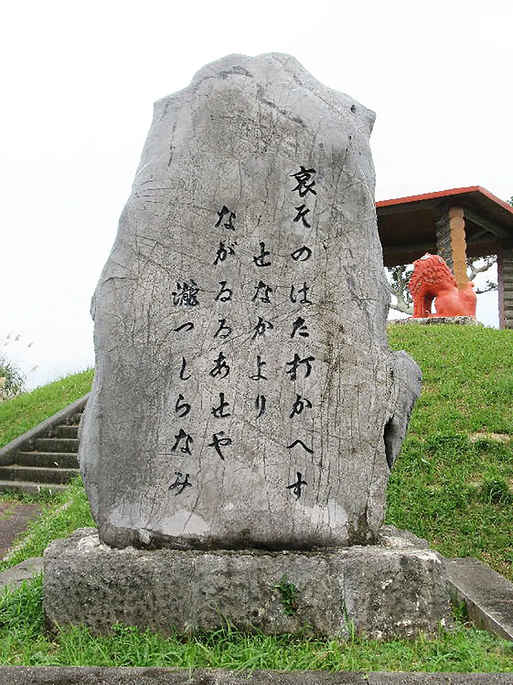
マブイ
| 「平敷屋タキノー」の歌碑は、平敷屋での生活から首里にもどるまでの様子を綴った随筆「貧家記」の一句で、40種の和歌（五七五七七調）が集録されています。 | El monumento, inscrito con el poema «Heshikiya Takino», contiene un verso del ensayo «Hinkaki», que narra la vida del autor en Heshikiya y su regreso a Shuri. La colección incluye 40 poemas waka (con una estructura de 5-7-5-7-7 sílabas). |
「つなぎ節」Tsinadi bushi古典音楽
歌詞 Letra
訳 Significado
| 屋敷のまわりの畑に植えてある苧麻（糸芭蕉）を績んで極上の布を織り、 | Vamos a hilar el ramio (fibra de plátano) que crece en los campos que rodean la mansión y a tejerlo para obtener la tela más fina, |
| 大切な愛しい人へ着物をつくって差し上げましょう。 | y a confeccionar un kimono para tu amado?. |
解説 Comentarios
| かつて沖縄の女性は、家の庭に植えてある苧麻や糸芭蕉などの植物から繊維を剥ぎ取って糸をつくり、着物に仕立てるまでの全工程を手仕事でおこなっていました。 | Antiguamente, las mujeres de Okinawa extraían las fibras de plantas como el ramio y el plátano cultivadas en sus jardines, las hilaban y luego confeccionaban a mano todo el kimono. |
| 一本一本の糸に愛情を込めて織った着物には魂が宿り、大切な人の健康や安全を守ってくれる言い伝えが残されています。 | Se dice que un kimono tejido con amor y cuidado, hilo a hilo, posee alma y protege la salud y la seguridad de los seres queridos. |
| 「つなぎ節」の節名は剥ぎ取った繊維を均一にねじり合わせてつなげる（撚り合わせる）作業の「つなぎ」をとって命名したと云われています。参考：「ふるさとの歌／与那覇政牛」 | Se cree que el nombre «Tsinadji-bushi» (nudo de unión) deriva del proceso de «tsunagi» (unión), que consiste en retorcer y unir uniformemente las fibras extraídas. Referencia: «Furusato no Uta / Yonaha Masayoshi» |
「本散山節」Mutousanyama bushi古典音楽
歌詞 Letra
近さたるがけて 油断どもするな
梅の葉や花の 匂ひや知らぬ
訳 Significado
| 近くにいることを当てにして油断をするな。 | No bajes la guardia solo porque estén cerca. |
| 梅の葉は花のにおいを知ることはない。 | Las hojas del ciruelo jamás conocerán el aroma de las flores. |
解説 Comentarios
| 沖縄では例年1月～2月にかけて梅が開花して豊かな芳香がそよ風に漂いますが、梅の花持ちは短く、二週間程度で散ってしまいます。 | En Okinawa, los ciruelos suelen florecer de enero a febrero, impregnando la brisa con su intenso aroma. Sin embargo, las flores son efímeras y se marchitan en unas dos semanas. |
| その後、入れ替わるように梅の葉が芽吹きますが、葉は先程まで咲いていた花の香りを知ることはありません。 | Después, brotan las hojas, reemplazando a las flores, pero nunca llegan a percibir el aroma de las mismas. |
| 「本散山節」は梅と同じように人生におけるご縁もいずれ移り変わるものであることを説いた教訓歌です。 | «Mutu-sanyama-bushi» es una canción didáctica que enseña que, al igual que la flor del ciruelo, las relaciones que tenemos en la vida también cambian con el tiempo. |
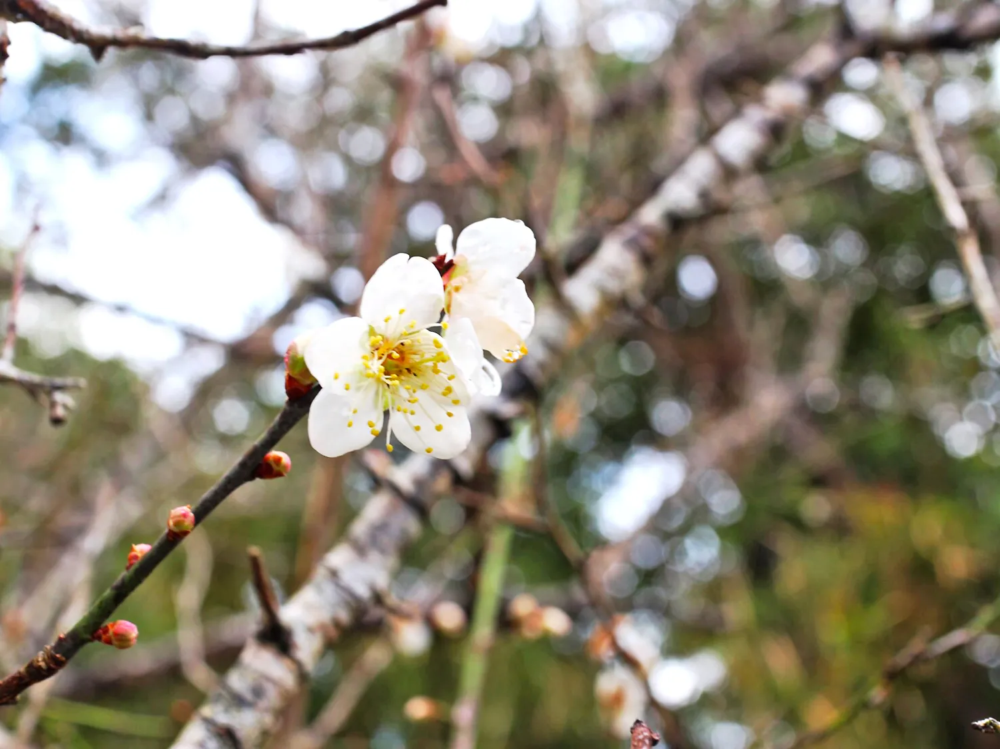
補足 Información complementaria
節名の由来 Origen del nombre
| 「本散山節」の節名の由来は諸説あり、久米島もしくは伊江島にかつて存在した地名が起源になっているのではないかと云われています。 | Existen varias teorías sobre el origen del nombre de la canción «Mutu-sanyama-bushi», pero se dice que podría provenir de un topónimo que existió en Kumejima o Iejima. |
| 島尻郡久米島町字島尻には、その由来となる 臼太鼓（※1）の古謡「島尻散山節」の歌碑が建てられています。 | En Shimajiri, Kumejima-cho, Shimajiri-gun, hay un monumento con la inscripción de la antigua canción «Shimajirisanyama-bushi», que se considera el origen del nombre y está asociada con el tambor de mortero (usidēku) (※1). |
| また、各地方に伝わる祭祀行事で歌われる古謡に”さんやま”の語句がみられることから、特定の地形や景観を総称して呼んでいた可能性も考えられます。 | Además, dado que la palabra «sanyama» aparece en antiguas canciones cantadas en festivales y rituales transmitidos en diversas regiones, también es posible que fuera un término general para una topografía o paisaje específico. |
「坂本節」Sakamotou bushi古典音楽
歌詞 Letra
訳 Significado
| 坂本の拝所は道理で評判が良いわけだ。 | No es de extrañar que el santuario de Sakamoto tenga tan buena reputación. |
| よよぎよらが一本、クバが三本。（神聖な趣がある） | Un árbol de Yoyogiyora, tres árboles de Koba. (Tiene una atmósfera sagrada). |
解説 Comentarios
| 「坂本節」は趣きのある神聖な拝所を礼賛した歌曲です。 | «Sakamutu-bushi» es una canción que exalta un lugar de culto sagrado y de atmósfera especial. |
| 「琉歌百控」（※1）には出自が”徳之嶋”と記されており、かつて徳之島が琉球王国に属していた時代、秋津集落の高台（現在の鹿児島県大島郡徳之島町亀徳）に殿地屋敷（琉球王国の派遣役人やノロ（神官）の屋敷）が建てられ、地神を樹木の根に祀り無病息災や豊作祈願の神事が執り行われていました。 | «Ryūka Hyakkō» (※1) afirma que su origen se encuentra en Tokunoshima. En la época en que Tokunoshima pertenecía al Reino de Ryukyu, se construyó un Tonochi Yashiki (residencia para funcionarios enviados por el Reino de Ryukyu y Noro, sacerdotisas) en una colina del asentamiento de Akitsu (actualmente Kametoku, Tokunoshima-cho, Oshima-gun, Prefectura de Kagoshima). Allí, el dios de la tierra era venerado en las raíces de los árboles, y se realizaban rituales para la buena salud y las cosechas abundantes. |
| その後、明治に入ると殿地屋敷があった場所に秋津神社が創建され今日に至りますが、祀られていた地神は社屋後方に生えている樹木の根に残されていると伝えられています。（参考：徳之島町郷土資料館） | Posteriormente, durante el período Meiji, se construyó el Santuario Akitsu en el lugar donde se encontraba el Tonochi Yashiki, y permanece allí hasta el día de hoy. Se dice que el dios de la tierra allí venerado aún reside en las raíces de un árbol que crece detrás del santuario. (Referencia: Museo de Historia Local de Tokunoshima) |
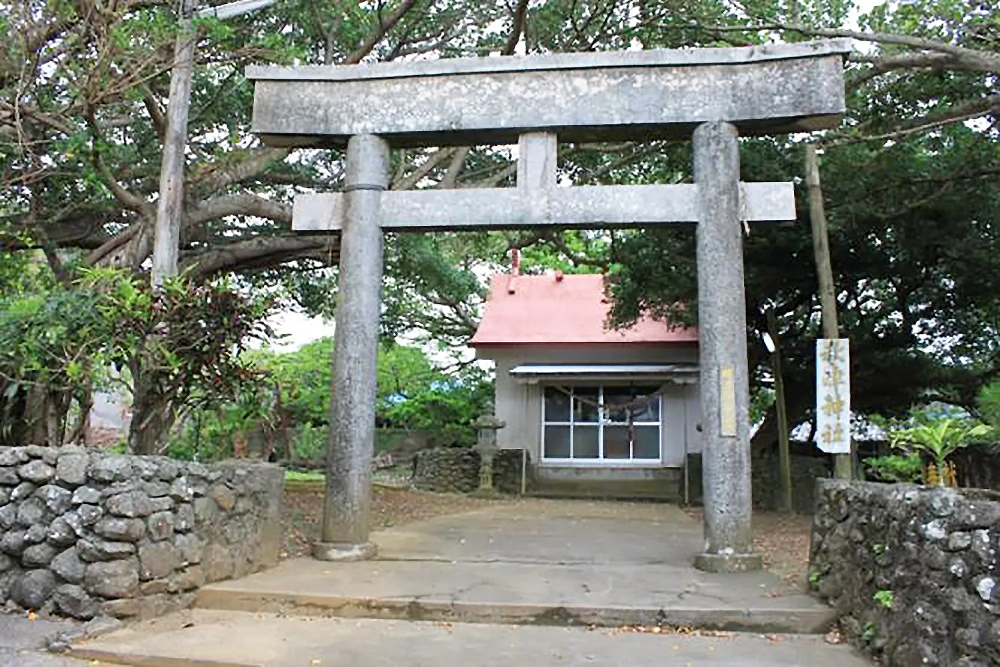
補足 Información complementaria
古謡 Canción antigua
| 秋津神社では旧暦八月十五日になると豊年祭りがおこなわれ、代々継承されてきた「秋津盛唄」という古謡が歌われますが、その歌詞は「坂本節」とほぼ同一の内容で詠われています。 | En el santuario de Akitsu, el día 15 del octavo mes del calendario lunar se celebra una fiesta de la cosecha, durante la cual se canta una antigua canción llamada «Akitsu Moriuta», transmitida de generación en generación. Su letra es casi idéntica a la de «Sakamutu-bushi». |
| また、秋津神社が建つこの地は代々、坂元姓の方が管理されているそうです。 | Además, se dice que las tierras donde se ubica el santuario de Akitsu han sido administradas por personas con el apellido Sakamoto durante generaciones. |
秋津盛唄 Akitsu Moriuta
さかむとぅぬいびや だんじゅとぅゆまたむ
ハレ ゆゆぎゅらがちゅーむとぅ くばやみむとぅ ヨンド
| 歌詞引用：＜大観 奄美＞「奄美島唄の系譜を探る方法」より | Letras citadas de: <Taikan Amami>«Métodos para explorar la genealogía de las canciones de la isla Amami» |
「ごえん節」Guin bushi古典音楽
歌詞 Letra
訳 Significado
| ご縁があって弟に会えたことは嬉しいことだ。 | Me alegro de haber conocido a mi hermano menor. |
| 心置きなく遊んでくれ、私も思う存分に遊ぶとしよう。 | Siéntete libre de jugar con él, y yo también jugaré todo lo que quiera. |
解説 Comentarios
| 遠く離れて暮らす兄弟たちと再会できた御縁を祝して詠まれた歌曲です。 | Esta canción se compuso para celebrar el reencuentro entre hermanos que vivían lejos. |
| 昔は現代のように交通機関も発展しておらず、また連絡手段も乏しかったため家族兄弟が再会できた喜びは一入であったことでしょう。 | En el pasado, los sistemas de transporte no estaban tan desarrollados como hoy y los medios de comunicación eran escasos, por lo que la alegría de reencontrarse con la familia y los hermanos debió ser especialmente grande. |
| 「ごえん節」は祝儀的な歌詞の内容とその曲想から、現在では「かぎやで風節」と組み合わせて祝いの座でよく演奏されます。 | Debido a la letra festiva y al tono musical de «Goen-bushi», ahora se interpreta a menudo en ocasiones especiales junto con «Kagiyade-fū-bushi». |
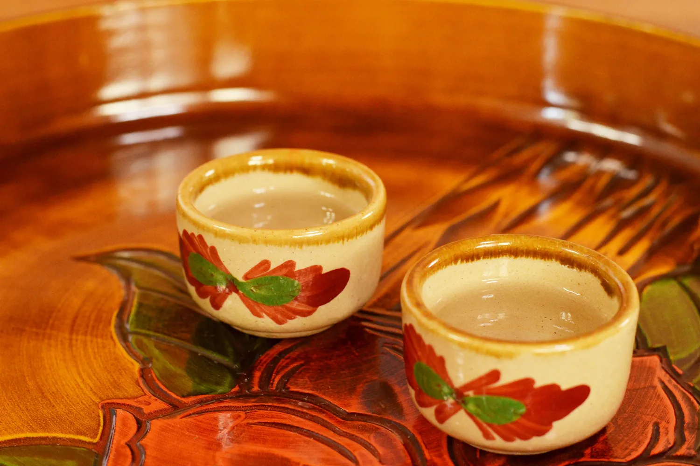
補足 Información complementaria
”うちはれの遊び”
| 古くより沖縄では災害や病疫を祓い鎮め、村集落の繁栄を祈願する祭祀行事「シヌグ」が各地方でおこなわれていました。 | Desde la antigüedad, Okinawa ha celebrado rituales Shinugu en cada región para protegerse de desastres y epidemias, y para orar por la prosperidad de pueblos y comunidades. |
| 「シヌグ」で演じられる催しの一つに「うちはれの遊び」と呼ばれる神事があります。 | Uno de los eventos que se celebran en Shinugu es un ritual religioso llamado «Uchihari nu Asibi». |
| 「うちはれ」の語源は「雲が晴れる」、「疑いが晴れる」などを意味する「はりゆん」と、発端を示す接頭語の”うち”をつけた「うちはりゆん（意味 = 覆いかぶさったものが急に取れる）」が転訛したものに由来します。 | «Uchihari» proviene de «hariyun», que significa «se despejan las nubes» o «se aclaran las dudas», y del prefijo «uchi», que indica su origen, para formar «uchihariyun» (que significa algo que cubre algo que se retira repentinamente). |
| 「うちはれの遊び」は身に着けている（覆いかぶさった）着物（不浄なもの）を取り、生まれたままの姿で場を清め祈願する習わしです。 | «Uchihari nu Asibi» es una costumbre en la que las personas se quitan el kimono (impurezas) que llevan puesto, purifican el lugar y realizan una oración desnudos. |
| 尚敬王（在位：1713年 - 1751年）の時代、外交問題より風紀を危惧した政府によって「シヌグ」が禁止されてからは「うちはれ」の言葉も徐々に使われなくなりました。 | Durante el reinado del Rey Shō Kei (1713-1751), el gobierno, más preocupado por la moral pública que por cuestiones diplomáticas, prohibió «Shinugu», y el término «Uchihari» fue cayendo en desuso gradualmente. |
「ちるれん節」Chirurin bushi古典音楽
歌詞 Letra
子孫そろて 願たことかなて
大主の百歳 お祝しゃべら
訳 Significado
| 子や孫が揃って、願ったことが叶い、 | Con hijos y nietos reunidos, y sus deseos cumplidos, |
| 村の頭の百歳をお祝いしましょう。 | Celebremos el centenario del jefe de la aldea. |
解説 Comentarios
| 「ちるれん節」は、子と孫に囲まれながら百歳の長寿を迎えることが出来た慶びを祝して詠まれた歌曲です。 | «Chirurin-bushi» es una canción compuesta para celebrar la alegría de cumplir 100 años, rodeado de hijos y nietos. |
| 節名の”ちるれん”の由来は、風車が廻る様子を表現した擬音語で、沖縄では長寿を迎えると再び童心に帰るとされたことから、幼子のおもちゃである風車を持たせてお祝いをする風習に因んでいます。 | El nombre «Chirurin» (o «Chirurin») es una onomatopeya que representa el sonido de un molino de viento (kajimaya) girando. En Okinawa, se creía que alcanzar la longevidad significaba recuperar la inocencia infantil, y esta costumbre proviene de la tradición de celebrar regalando a los ancianos un molino de viento (kajimaya), un juguete para niños pequeños. |
| 各地域の年中行事では、古くより「長者の大主」と呼ばれる祝賀芸能が演じられてきました。 | En eventos anuales de diversas regiones, se realiza desde la antigüedad una representación festiva llamada «Chōja no Ufushu». |
| 長老（翁）が子と孫を引き連れて舞台に上がり、健康長寿、子孫繁栄、五穀豊穣の祝言を述べたあと、子や孫たちの祝賀の踊りをはじめ様々な演目を披露します。 | El anciano (Okina) sube al escenario con sus hijos y nietos, y tras ofrecer oraciones por la buena salud, la longevidad, la prosperidad de sus descendientes y una cosecha abundante, se presentan diversas actuaciones, incluyendo danzas festivas a cargo de sus hijos y nietos. |
| この「長者の大主」を組踊にアレンジした「辺戸の大主」の演目に「ちるれん節」が編成されています。 | La pieza «Chirurin-bushi» forma parte de «Hedo no Ufunushi», una adaptación de «Chōja no Ufushu» al estilo Kumiodori. |
| また、「柳節」、「天川節」、「ちるれん節」の三曲を一組（一鎖）にして演奏されることがあります。 | Además, las tres piezas «Yanaji-bushi», «Amakā-bushi» y «Chirurin-bushi» se interpretan a veces juntas como una secuencia. |
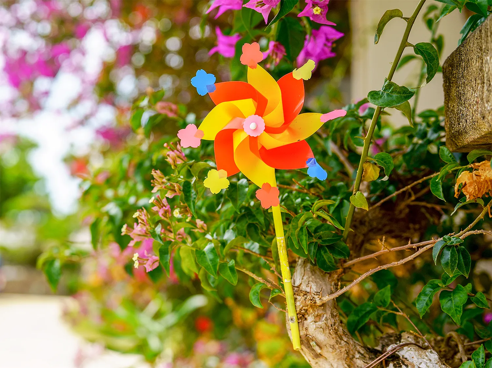
補足 Información complementaria
とぅしびー Tushibi
| 12年ごとにめぐってくる生まれ干支を節目として、計8回の生年祝いを年日といいます。 | Las ocho celebraciones de cumpleaños, cada una de las cuales marca un hito correspondiente al signo zodiacal del año de nacimiento y se repite cada 12 años, se llaman «Tushibi». |
| 沖縄ではもともと生まれ年を厄年とする考えから、無病息災を祈願する意味が込められています。 | En Okinawa, existe la creencia de que el año de nacimiento trae mala suerte, por lo que estas celebraciones tienen como objetivo pedir buena salud y protección contra las enfermedades. |
生年祝い Celebración de cumpleaños
| 13歳（ジューサンユーエー） | 未来に向けて幸先を祈る。早婚だった頃、女の子は生家で迎える最初で最後のトゥシビーになるため盛大におこなわれる風習がある。 | Se celebra para atraer la buena fortuna en el futuro. En épocas de matrimonios precoces, era costumbre celebrarlo a lo grande, ya que era el primer y último Tushibi (celebración de cumpleaños) de las niñas en su hogar natal. |
| 25歳（ニジューグヌユーエー） | 特別に祝う習慣はないが、災厄の祈願をおこなう。 | No existe una celebración especial, pero se ofrecen oraciones para protegerse de la mala suerte. |
| 37歳（サンジューシチヌユーエー） | 特別に祝う習慣はないが、災厄の祈願をおこなう。 | No existe una celebración especial, pero se ofrecen oraciones para protegerse de la mala suerte. |
| 49歳（ククヌトゥグンジュー） | この年は大厄とされていた。災厄の祈願をおこなう。名前のククヌトゥグンジューは「九・五十」に由来するが解釈ははっきりしていない。 | Este año se consideraba de gran mala suerte. Se ofrecen oraciones para protegerse de la mala suerte. El nombre Kukunutugunjū deriva de «nueve» y «cincuenta», pero su interpretación no está clara. |
| 61歳（ルクジューイチヌユーエー） | 親戚縁者や知人を招いて還暦のお祝いをすることが多い。 | Familiares y conocidos suelen ser invitados a celebrar el 60 cumpleaños. |
| 73歳（ナナジューサンヌユーエー） | 親戚縁者のみで食事をおこなう程度に済ませ、長寿をお祝いすることが多い。 | Se suele celebrar con una comida íntima a la que asisten solo los familiares más cercanos. |
| 85歳（ハチジューグヌユーエー） | 親戚縁者や知人を招き、大きな宴席を設けて長寿をお祝いする。 | Se celebra un gran banquete para festejar la longevidad, invitando a familiares, amigos y conocidos. |
| 97歳（カジマヤー） | 親戚縁者や知人はじめ、町内をあげて盛大な祝宴が開かれる。97歳に掛けて、旧暦の9月7日にお祝いする決まりがある。 | Se celebra una gran fiesta con familiares, amigos, conocidos y toda la ciudad. Es costumbre celebrarlo el séptimo día del noveno mes del calendario lunar, ya que coincide con el 97 cumpleaños. |
「本部長節」Mutubunagi bushi古典音楽
歌詞 Letra
訳 Significado
| 検者主さま、（村の人々）の願いをお取次ぎいたします。 | Señor Chinshashu, transmitiré los deseos de los aldeanos. |
| お国（国王様）のために身を捧げて昼夜を問わず懸命に働きますので、 | Nos consagraremos a nuestra patria (el Rey) y trabajaremos diligentemente día y noche. |
| 神代より伝わるシヌグ行事の禁止だけはお許しくださいませ。 | Por favor, permítannos abstenernos de prohibir el ritual Shinugu, que se ha transmitido desde la era de los dioses. |
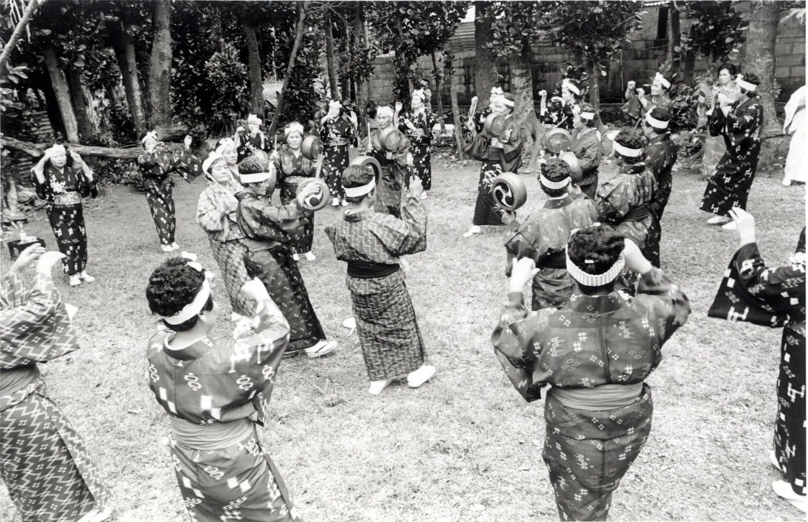
解説 Comentarios
| 「本部長節」は現在の国頭郡本部町が発祥の地で、古くより災厄を祓い、村の繁栄を祈願する伝統行事「シヌグ」が伝承されてきました。 | «Mutubunagi-bushi» se originó en lo que hoy es la ciudad de Motobu, distrito de Kunigami, y desde hace mucho tiempo es un lugar donde se ha transmitido la tradicional ceremonia «Shinugu», un ritual para alejar las calamidades y orar por la prosperidad del pueblo. |
| 「シヌグ」の行事の一つに円陣をつくって直径30cmほどの小鼓にあわせて歌いながら踊る臼太鼓と呼ばれる神事があり、歌唱曲の一つとして本曲が継承されています。 | Uno de los rituales «Shinugu» es una ceremonia sintoísta llamada «Usudēku», en la que la gente forma un círculo y canta y baila al ritmo de un pequeño tambor de unos 30 cm de diámetro. Esta canción es una de las que se han transmitido de generación en generación. |
| 尚敬王（在位：1713年 - 1751年）の時代、外交問題より風紀を危惧した政府によって「シヌグ」が禁止され、村集落は地方行政を管轄する地頭代（検者主）と呼ばれる役人の監視下に置かれます。 | Durante el reinado del Rey Shō Kei (1713-1751), el gobierno, más preocupado por la moral pública que por los asuntos diplomáticos, prohibió el «Shinugu» y los asentamientos rurales quedaron bajo la vigilancia de funcionarios llamados Jitudēnuyā (Chinshashu), quienes supervisaban la administración local. |
| このような時代背景のなかで作られた「本部長節」は、政府の規制に対する人々の切なる願いを詠み込んでいるのではないかと考えます。 | «Mutubunagi-bushi», creado en este contexto histórico, refleja el ferviente deseo de la gente de que el gobierno regule la comunidad. |
補足 Información complementaria
節名の由来 Origen del nombre
| 最古の琉歌集である「琉歌百控」（※1）には本曲の原歌となる「本部抛節」が収録されています。 | La colección más antigua de canciones de Ryukyu, «Ryūka Hyakkō» (※1), incluye «Mutubunagi-bushi», la canción original de esta pieza. |
| 「抛」の語源は”放り投げる”という意味を持ち、「投げ捨ててあった歌」という解釈があります。 | La palabra «nagi» proviene del significado de «desechar», y una interpretación es que significa «una canción que fue desechada». |
| 一般的に琉歌は上句〔八・八］、下句〔八・六］の計三十音の定律で構成されますが、「本部長節」は上句と下句の間に八音を二つ足した長歌形式で詠まれていることから、「長」を掛言葉として節名に加えたのではないかと考察します。 | Generalmente, las canciones de Ryukyu se componen con un ritmo fijo de 30 sílabas, con una sección superior [8-8] y una inferior [8-6]. Sin embargo, «Mutubunagi-bushi» se recita en formato de canción larga, con dos secciones de 8 sílabas intercaladas entre la sección superior e inferior. Por lo tanto, especulamos que «nagi» (largo) pudo haber sido añadido al título de la canción como un juego de palabras. |
「揚作田節」Agichikuten bushi古典音楽
歌詞 Letra
訳 Significado
| 豊かなる世の兆しがあらわれて、 | Se observan señales de un mundo próspero, |
| 雨の恵みも時を違わず。 | y la bendición de la lluvia llega sin falta. |
解説 Comentarios
| 「揚作田節」は一年を通して天候に恵まれ、農作物が豊かに実ることを予祝して詠まれた歌曲です。 | «Agitsikuten-bushi» es una canción compuesta para celebrar y pedir por un clima favorable durante todo el año y una cosecha abundante. |
| 現代に比べて農業技術が発達していなかった当時は国をあげて稲作の生育を見守ってきた歴史があります。 | En aquellos tiempos, cuando la tecnología agrícola no estaba tan avanzada como hoy, toda la nación seguía con atención el crecimiento de los cultivos de arroz. |
| そのような時代背景に生きた人々が願う豊作への喜びは一入であったことが本曲より伺い知ることができます。 | Esta canción revela la profunda alegría que sentía la gente ante una buena cosecha en aquella época. |
「石ん根の道節」Ishinninumichi bushi古典音楽
歌詞 Letra
訳 Significado
| 石づくりの道を通り寺の側までも、 | Caminando por el sendero de piedra hacia el templo, |
| 男衆は先を女は後から、 | Los hombres iban delante, las mujeres detrás, |
| 漲水（港町）に到着して船乗り場に向かい、 | Al llegar a Harimizu (el pueblo portuario), se dirigieron al muelle, |
| 片手で首を抱き、片手で酌をとって（別離を惜しみ）、 | Abrazándose el cuello con una mano y sirviéndose sake con la otra (señal de que no querían separarse), |
| 目では船が見える池間崎までお見送りして、 | Despidiéndose con la mirada hacia el cabo Ikema, desde donde se divisaba el barco, |
| 心中は沖縄（本島）までお見送りしています。 | En sus corazones, se despedían el uno del otro hasta Okinawa (la isla principal). |
解説 Comentarios
| 「石ん根の道節」は宮古島を管轄する琉球王国の役人が任期を終えて帰路に向かう道中を詠んだ歌曲です。 | «Ishinni nu Michi-bushi» es una canción sobre un funcionario del Reino de Ryukyu que gobernaba la isla de Miyako y regresaba a casa tras finalizar su mandato. |
| 当時、離島地域の地方行政を担う機関を「蔵元」（※1）と呼び、宮古島では1525年に平良地区に設置されました。 | En aquel entonces, la organización responsable de la administración local en las remotas regiones insulares se llamaba «Kuramoto» (※1), y en la isla de Miyako, se estableció en el distrito de Hirara en 1525. |
| この地区では「漲水石畳道」という名の風情ある石づくりの道があり、その周辺には寺社が点在し航海の安全を祈願したそうです。 | En este distrito, existía un pintoresco camino empedrado llamado «Harimizu Ishidatami-michi», rodeado de templos y santuarios donde la gente rezaba por un viaje seguro. |
| 蔵元の主な役職 | Cargos principales en el Kuramoto | |
| 首里大屋子 | 行政・司法・税務を統括する最高責任者。（琉球王府側の公式の統治者） | Shuri Ufuyaku: El funcionario de mayor rango a cargo de la administración, el poder judicial y la recaudación de impuestos. (Gobernante oficial del Reino de Ryukyu). |
| 与人 | 首里大屋子を補佐する実務の頭。（地元の有力者から選ばれた） | Yunchu: Encargado de los asuntos prácticos, asistiendo al Shuri Ufuyaku. (Seleccionado entre figuras locales influyentes). |
| 目差 | 人頭税などの税の徴収や治安維持を担当し、上役の指示のもとで現場の行政実務を担った。 | Mezashi: Responsable de la recaudación de impuestos, como el impuesto per cápita, y del mantenimiento del orden público. Realizaba labores administrativas in situ bajo la dirección de sus superiores. |
| 筆者 | 書記として書類・帳簿・記録などを扱う専門的事務担当。 | Hissha: Oficinista profesional responsable del manejo de documentos, libros de contabilidad y registros. |
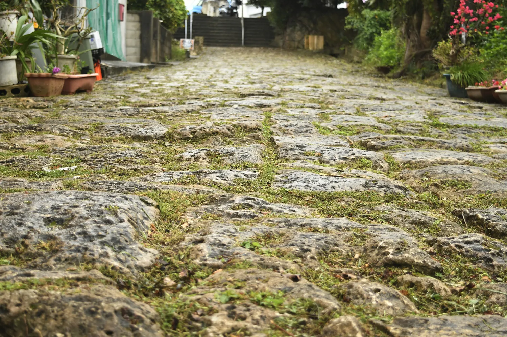
補足 Información complementaria
「一名献上節」
| 尚穆王（在位：1752年～1794年）の時代、宮古と八重山の各海岸から琉球王府が管轄する「蔵元」までの道中を詠んだ琉歌を献上する命があり、宮古は「石ん根の道節」を献上し、八重山からは「蔵の花道節」（※2）を献上しました。 | Durante el reinado del Rey Shō Boku (1752-1794), se emitió una orden para presentar canciones de Ryukyu que describieran el viaje desde las costas de «Miyako» y «Yaeyama» hasta «Kuramoto», que estaba bajo la jurisdicción del Reino de Ryukyu. Miyako presentó «Ishinni nu Michi-bushi» y Yaeyama presentó b «Ura-nu-pana-bushi» (※2). |
「本田名節」Mutudana bushi古典音楽
歌詞 Letra
訳 Significado
| くり舟で渡って行ける海であれば、 | Si fuera un mar al que se pudiera llegar en una barca de arado, |
| 今日に行ってお会いし、明日には帰ることが出来るのだが。 | podría ir hoy a verte y regresar mañana. |
解説 Comentarios
| 「本田名節」は節名の通り伊平屋島の田名集落が発祥の地で、この一帯は緑豊かな美しい田園風景を背に珊瑚礁の海が広がり、古くより農業と漁業を中心に生活を営んできました。 | La canción «Mutudana-bushi», como su nombre indica, se originó en el asentamiento de Dana, en la isla de Iheya. Esta zona cuenta con un hermoso y exuberante paisaje rural, con arrecifes de coral que se extienden ante ella, y ha estado habitada desde hace mucho tiempo por la agricultura y la pesca. |
| 歌詞にある” くり舟 ”は丸太を刳り抜いて造られた小舟のことで、漁業をはじめ周辺の島々を渡る交通手段に使われてきました。 | El «kuifuni» mencionado en la letra se refiere a una pequeña embarcación hecha ahuecando un tronco, utilizada para pescar y como medio de transporte a las islas cercanas. |
| しかし、伊平屋島の周辺海域は通称「伊平屋渡」と呼ばれ、黒潮などの影響により天候の悪い日は荒波が立つ難所として知られています。 | Sin embargo, las aguas que rodean la isla de Iheya, comunmente conocidas como «Ihyado», son un tramo peligroso de mar donde se producen fuertes olas en días de mal tiempo debido a la influencia de la corriente de Kuroshio. |
| 「本田名節」はこうした危険の伴う航路を”渡りがたい恋路”に例えて詠み込んでいます。 | «Mutudana-bushi» utiliza esta peligrosa ruta marítima como metáfora de un «difícil camino de amor». |
補足 Información complementaria
楽曲の変遷 Evolución de la música
| 琉球王府の楽師を務めた知念績高によって「本田名節」が創作されたことにより、「屋嘉比工工四」（※1）に収められている「モト田名ブシ」は今日の「昔田名節」に節名が替わったと云われています。《参考：「沖縄三線節歌の読み方」沖縄教販》 | Se dice que la creación de «Mutudana-bushi» por Chinen Sekkō, músico del Reino de Ryukyu, provocó que el nombre de la melodía cambiara de «Mutudana-bushi» a «Nkasidana-bushi» en el «Yakabi Kunkunshi» (※1). (Referencia: «Cómo leer melodías sanshin de Okinawa», Okinawa Kyohan). |
略歴 Biografia
ハイチョウの一鎖 Una cadena de rinocerontes
| 本曲に加えて「真福知のはいちやう節」、「揚高禰久節」の三曲を組曲として、航海を祈願する祝儀曲として演奏されます。 | Además de esta pieza, las tres piezas, «Mafukuji-nu-Fēchō-bushi» y «Agitakaniku-bushi», se interpretan como una suite, una pieza festiva que ruega por viajes seguros. |
「花風節」Hanafū bushi古典音楽
歌詞 Letra
三重城にのぼて 手巾もちやげれば
はやふねのならひや 一目ど見ゆる
訳 Significado
| 三重城に上って手ぬぐいを振って見送ると、 | Subí a lo alto del castillo de Mie y agité mi pañuelo para despedirlos. |
| 船足は速く、一目しかみえず（瞬く間に行ってしまった）。 | El barco se movía rápidamente y solo pude verlo una vez (desapareció en un abrir y cerrar de ojos). |
解説 Comentarios
| 「花風節」は旅立つ船に愛する人との別離の哀情を映し重ねて詠まれた歌曲です。 | «Hanafu-bushi» es una canción que refleja la tristeza de la despedida de un ser querido mientras el barco zarpa. |
| 三重城は琉球王国時代より貿易港として栄えた那覇港北岸の沖合に築かれ、外敵から防衛するための城塞の役割を担っていました。 | El castillo de Mie se construyó frente a la costa norte del puerto de Naha, que floreció como puerto comercial durante la época del Reino de Ryukyu y sirvió como fortaleza para defenderse de los invasores extranjeros. |
| やがて世の中も平和になると、海に突き出た長堤は船を見送る送迎場として利用されるようになります。 | Con el regreso de la paz al mundo, el largo rompeolas que se adentraba en el mar se convirtió en un lugar para despedir a los barcos. |
| 旅立ちの別れはあっという間に過ぎ去り、惜別の思いで打ち振るう手ぬぐいも空しく、愛する人を乗せた船が海の彼方に消えてゆく情景が浮かんできます。 | La despedida antes de la partida transcurre en un instante, y la toalla de mano agitada en vano mientras la imagen del barco que transporta al ser querido desaparece en la distancia viene a la mente. |
| 旅の安全を祈願して織られた手ぬぐいを想いの手巾と呼び、また、家族兄弟の旅の安全を祈願して織られた手ぬぐいを思姉妹手巾と呼んでいたそうです。 | Una toalla de mano tejida con oraciones para un viaje seguro se llamaba «uminaitisāji», y una toalla de mano tejida con oraciones para el viaje seguro de los familiares y hermanos se llamaba «uminaitisāji». |
| 琉球舞踊の「花風」では、花模様に染めた花染手巾が小道具として使われています。 | En la danza Ryukyu «Hanafu», se utiliza como atrezo una toalla de mano teñida con un estampado floral, llamada «hanazumi tisaji». |
補足 Información complementaria
節名の由来 Origen del nombre
| 「花風節」は「本花風節」から派生した歌曲で、一説によると知念績高が辻に行った際、芸妓（尾類）が弾く「本花風節」のくずれに手を加えて創作された歌曲であると云われています。 | «Hanafu-bushi» es una canción derivada de «Mutu-hanafū-bushi», y según una teoría, se creó cuando Chinen Sekkō fue a Tsuji y modificó una variación de «Mutu-hanafū-bushi» interpretada por una geisha (juri). |
| 参考：「琉球の音楽芸能史 ／民俗芸能全集刊行会」 | Referencia: «Historia de la música y las artes escénicas de Ryukyu / Sociedad de Publicaciones para la Colección Completa de Artes Escénicas Folclóricas». |
| また、「本花風節」が士族の女性の胸中を詠み込んでいるのに対し、「花風節」は辻の芸妓（尾類）の胸中を詠み込んでいることから別名「尾類小風」と呼ばれています。 | Además, mientras que «Mutu-hanafū-bushi» expresa los sentimientos de una mujer de la clase samurái, «Hanafu-bushi» expresa los sentimientos de una geisha callejera (juri), y por ello también se la conoce como «Jurigwāfu». |
「本嘉手久節」Mutukadeiku bushi古典音楽
歌詞 Letra
訳 Significado
| 見る花に袖を引きとめられて、 | La vista de las flores me detuvo, |
| 月が出て来る頃に帰路につく。 | empezaré mi viaje de regreso a casa cuando salga la luna. |
解説 Explicación
| 「本嘉手久節」は自然の摂理に人生の在り方を説いた教訓的な歌曲です。 | «Mutukadiku-bushi» es una canción didáctica que explica el modo de vida a través de las leyes de la naturaleza. |
| 美しい花に見とれているうち時間はあっという間に過ぎ去るもので、寂莫とした月夜を知らせに名残惜しい気持ちを抑えて帰路に着く心の様子を描いています。 | Describe la sensación de renuencia a partir, mientras el tiempo transcurre rápidamente admirando hermosas flores, y la solitaria noche de luna anuncia el final del viaje de regreso a casa. |
| 本曲の出自は明らかになっていませんが、最古の琉歌集である『琉歌百控』（※1）には一部同名の”嘉手久”が含まれる「早嘉手久節」が収められており、出自は”東間切之内東嘉徳村”（現・大島郡瀬戸内町嘉徳）と記されています。 | El origen de esta canción es incierto, pero la colección más antigua de canciones de Ryukyu, «Ryūka Hyakkō» (※1), contiene «Hayakadeku-bushi», que incluye el mismo nombre «Kadeku», y su origen se registra como «Aldea Higashi-Kadoku, Higashi-Magiri» (actualmente Katoku, Setouchi-cho, Oshima-gun). |
| また、『標音・評釈琉歌全集／武蔵野書院版』に収録されている「やくにや節」は「本嘉手久節」と同じ歌詞で詠われており、出自が奄美大島と記されています。 | Además, «Yakuniya-bushi», incluida en la «Colección completa de canciones de Ryukyu con pronunciación y comentarios / Edición Musashino Shoin», se canta con la misma letra que «Mutukadiku-bushi», y su origen se registra como Amami Oshima. |
「本花風節」Mutuhanafū bushiちらし古典音楽
歌詞 Letra
三重城にのぼて 打ち招く扇
またもめぐり来て 結ぶ御縁
訳 Significado
| 三重城にのぼって（出船）に打ち招く扇は、 | El abanico con el que saludas al zarpar desde el castillo de Mie |
| 再び巡り会うご縁を結んでくれるでしょう。 | seguramente te ayudará a forjar el destino que os volverá a unir. |
解説 Comentarios
| 「本花風節」は旅立つ人の航海の安全を祈り、別離の哀情と再会への願いを詠み込んだ歌曲です。 | «Mutu-hanafū-bushi» es una canción que implora por el viaje seguro de quienes se embarcan y expresa la tristeza de la despedida y la esperanza de reencuentro. |
| 現代における航海の安全性と比べ、かつて海に出ることは常に危険と隣り合わせでした。 | En comparación con la seguridad de los viajes marítimos en la actualidad, salir al mar siempre estuvo plagado de peligros. |
| 暴風雨や荒波、時に海賊の襲撃に遭遇するなど命がけの旅路となり、また、当時は連絡手段も乏しかったため人々が再会を願う気持ちはより一層深いものであったことでしょう。 | Era un viaje que ponía en riesgo la vida, con tormentas, mares agitados y, a veces, ataques piratas. Además, debido a la escasez de medios de comunicación en aquella época, el deseo de reencuentro de la gente debió ser aún más profundo. |
| 三重城は琉球王国時代より貿易港として栄えた那覇港北岸の沖合に築かれ、外敵から防衛するための城塞の役割を担っていました。 | El Castillo de Mie se construyó frente a la costa norte del puerto de Naha, que floreció como puerto comercial durante la época del Reino de Ryukyu, y sirvió como fortaleza para defenderse de los enemigos extranjeros. |
| やがて世の中も平和になると、海に突き出た長堤は船を見送る送迎場として使われるようになります。 | Finalmente, con el regreso de la paz al mundo, el largo rompeolas que se adentraba en el mar se convirtió en un lugar para despedir a los barcos. |
補足 Información complementaria
節名の由来 Origen del nombre
| 「本花風節」の「本」は”元祖、本来”という意味をもちます。 | El término «Mutu» en «Mutu-hanafū-bushi» significa «original». |
| 最古の琉歌集である「琉歌百控」（※1）には「花風節」が収録されており、この曲目が現在に伝わる「本花風節」であると云われています。 | La colección más antigua de canciones de Ryukyu, Ryūka Hyakkō (※1), incluye «Hanafu-bushi», y se dice que esta canción es la versión original de «Mutu-hanafū-bushi» que aún se conoce. |
| 琉球王府の楽師を務めた知念績高が本曲に手を加えた歌が「花風節」と呼ばれるようになったので、元の「花風節」の意味を込めて名付けられたそうです。 | Chinen Sekkō, músico de la corte real de Ryukyu, modificó esta canción, que pasó a llamarse «Hanafu-bushi». Se cree que este nombre se eligió para reflejar el significado de la «Hanafu-bushi» original. |
| また、「本花風節」が士族の女性の胸中を詠み込んでいるのに対し、「花風節」は辻の芸妓（尾類）の胸中を詠み込んでいます。 | Además, mientras que «Mutu-hanafū-bushi» expresa los sentimientos de una samurái, «Hanafu-bushi» expresa los sentimientos de una geisha callejera (Juri). |
ちらし
| 「本花風節」は大昔節（※1）の「十七八節」のちらし（※2）として演奏されます。 | «Ufunkashi-bushi» se interpreta como una variación (※2) del «Jushichihachi-bushi» (※1) de las antiguas canciones populares. |
「芋の葉節」Unmunufa bushiちらし古典音楽
歌詞 Letra
芋の葉の露や 真玉よかきよらさ
赤糸あぐまきに 貫きやりはきやり
訳 Significado
| 芋の葉の露は真珠の玉より美しい、 | El rocío sobre las hojas de taro es más hermoso que las perlas. |
| 赤紐に通して首にかけてみたい。 | Me gustaría ensartarlo en un hilo rojo y llevarlo alrededor del cuello. |
解説 Comentarios
| 「芋の葉節」は芋の葉にのった水滴を宝石に譬え、自然が織りなす神秘的な造形美を称えた歌曲です。 | «Unmu-nu-fa-bushi» es una canción que compara las gotas de agua sobre las hojas de taro con joyas, celebrando la belleza mística de las formas creadas por la naturaleza. |
| 本曲に登場する芋の種類は甘藷（サツマイモ）、田芋などの諸説ありますが、「葉っぱが広く起毛していて露が玉になるものといえば、里芋やクワイのたぐいでいわゆる沖縄の田芋や鶴の子であり、昨今、芋という言葉はサツマイモのことをさすようになっているが近世の中頃まで山芋や里芋をさす言葉であった。」と云われています。参考：「沖縄ことばの散歩道／おきなわ文庫」 | Existen diversas teorías sobre el tipo de taro que aparece en esta canción, como el boniato o el taro común, pero se dice que "si las hojas son muy vellosas y forman gotas de rocío, se trataría de un tipo de taro o castaña de agua, como el taro de Okinawa o la hueva de grulla (chinnuku). Actualmente, la palabra «imo» se usa para referirse al boniato, pero hasta mediados de la Edad Moderna se refería al ñame silvestre y al taro". Referencia: «Un paseo por la lengua de Okinawa / Okinawa Bunko». |
| 最古の琉歌集である「琉歌百控」（※1）には原歌となる琉歌が収録されており、出自が真和志間切安里村（現・那覇市安里）と記されています。 | La colección más antigua de canciones de Ryukyu, «Ryūka Hyakkō» (※1), contiene la canción original de Ryukyu, cuyo origen se registra en la aldea de Asato, Mawashi Magiri (actual Asato, ciudad de Naha). |
補足 Información complementaria
舞踊演目 Espectáculos de danza
| 琉球舞踊の雑踊り（※2）「むんじゅる」では、本曲をニ揚調（三線の中弦を1音上げる）に調弦した「揚芋の葉節」が演奏されます。 | En la danza folclórica de Ryukyu «Munjuru» (※2), esta canción se afina en Niagichō y se interpreta como «Agiunmunufa-bushi». |
ちらし
| 「芋の葉節」は昔節（※1）である「しよどん節」のちらし（※2）として演奏されます。 | «Unmu-nu-fa-bushi» se interpreta como una variante (※2) de «Shudun-bushi», que se categoriza como «Nkashi-bushi» (※1). |
「伊江節」Ii bushi古典音楽世栄一鎖
歌詞 Letra
訳 Significado
| 東の方へ向かって飛び立つ美しい蝶よ、 | Hermosa mariposa volando hacia el este, |
| 一寸待っておくれ、お願いしたい言伝があります。 | Por favor, espera un momento, tengo un mensaje para tí. |
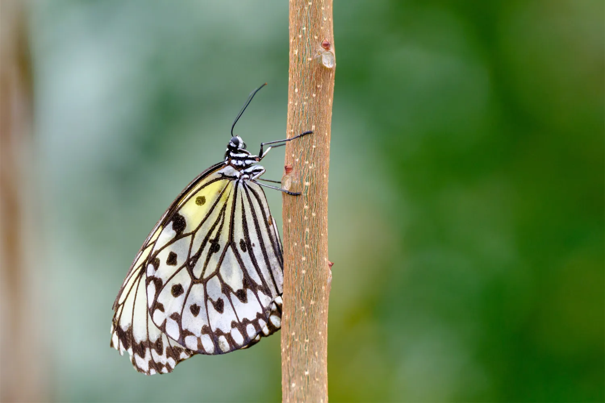
解説 Comentarios
| 「伊江節」は遠く離れた場所で暮らす愛する人に向けて、蝶に言付けを託したロマン溢れる歌曲です。 | «Ie-bushi» es una canción romántica en la que se confía un mensaje a una mariposa para un ser querido que vive lejos. |
| 辺りを飛び回る身近な存在の蝶に対して人間的感情を与え、アクセントをつけた表現技法が特徴的な歌詞です。 | La letra se caracteriza por su técnica expresiva, que dota a la familiar criatura de la mariposa, una imagen común, de emociones humanas y añade énfasis al tema tratado. |
| 本曲は節名の通り、伊江島が発祥の地で国頭郡伊江村東江前の伊江浜入り口には歌碑が建てられています。 | Como sugiere el título, esta canción se originó en la isla de Ie, y un monumento en su honor se encuentra a la entrada de la playa de Ie en Higashie-mae, aldea de Ie, distrito de Kunigami. |
| 上句の" あがり ～"は、「東の方角」と「伊江村東江」の地名を掛詞にして表現しています。参考：「標音・評釈 琉歌全集／ 武蔵野書院版」 | El término «agari» en el primer verso es un juego de palabras que combina «este» y el topónimo «Higashie, aldea de Ie». Referencia: «Colección completa de canciones de Ryukyu con fonética y comentarios / Edición Musashino Shoin». |
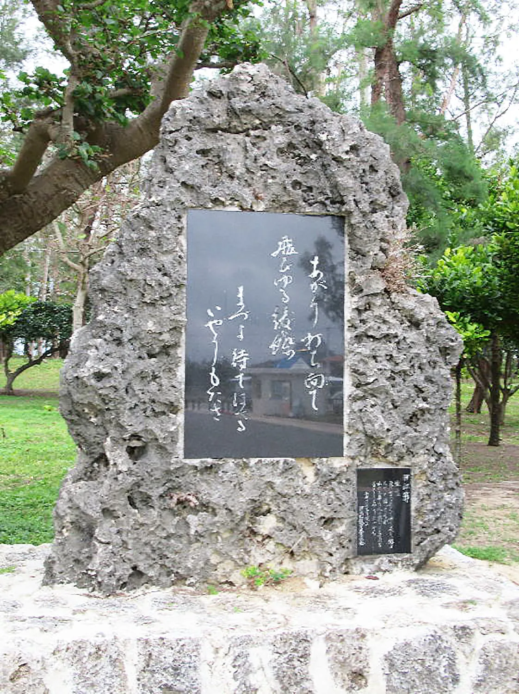
補足 Información complementaria
世栄一鎖 Yuzakēchukusai
| 本曲の他に「世栄節」、「垣花節」、「揚沈仁屋久節」の四曲を組曲として”世栄一鎖”と称し、座歌では本歌で歌う慣わしがあります。 | Además de esta canción, existen otras cuatro canciones llamadas «Yuzakēchukusai» que forman una suite: «Yuzakai-bushi», «Kachinuhana-bushi» y «Agijinniyaku-bushi». Es costumbre cantar la canción original en reuniones formales. |
「大田名節」Ufudana bushi古典音楽
歌詞 Letra
解説 Comentarios
| 生まれ育った土地を離れ、環境の変化に戸惑いながらも一人嫁いでゆく女性の心情を詠み込んだ歌曲です。 | Esta canción expresa los sentimientos de una mujer que abandona la tierra donde nació y creció, y se casa sola, sintiéndose desconcertada por el cambio de entorno. |
| 美しい田園が広がりをみせる田名の地域は、かつて三つの集落から構成されており、のちに統合されてから「大田名」と呼ばれるようになりました。 | La región de Dana, donde se extienden hermosos arrozales, estaba compuesta antiguamente por tres asentamientos que posteriormente se fusionaron y pasaron a llamarse «Ufudana». |
| 歌に登場する「あさ道」は、アサ岳（標高:218.1m）の麓を通る石混じりの道のことを指しており、平成21年（2009年）には道路の改良工事がおこなわれ、完成記念として「大田名節」の歌碑が設置されました。 | El «Asamichi» mencionado en la canción se refiere a un camino empedrado que discurre al pie del monte Asa (altitud: 218.1 m). En 2009, se llevaron a cabo obras de mejora del camino y se erigió un monumento a la canción «Ufudana-bushi» para conmemorar su finalización. |
補足 Información complementaria
古謡 Canción antigua
| 島尻郡伊平屋村田名にある公民館には「大田名節」の原歌とつながりのある歌碑が建てられており、この古謡は臼太鼓（※1）と呼ばれる祭祀行事で代々歌い継がれてきました。 | En el centro comunitario de Dana, aldea de Iheya, distrito de Shimajiri, hay un monumento con una inscripción de una canción relacionada con la letra original de «Ufudana-bushi», y esta antigua canción se ha cantado durante generaciones en un ritual llamado «Ushidēku» (※1). |
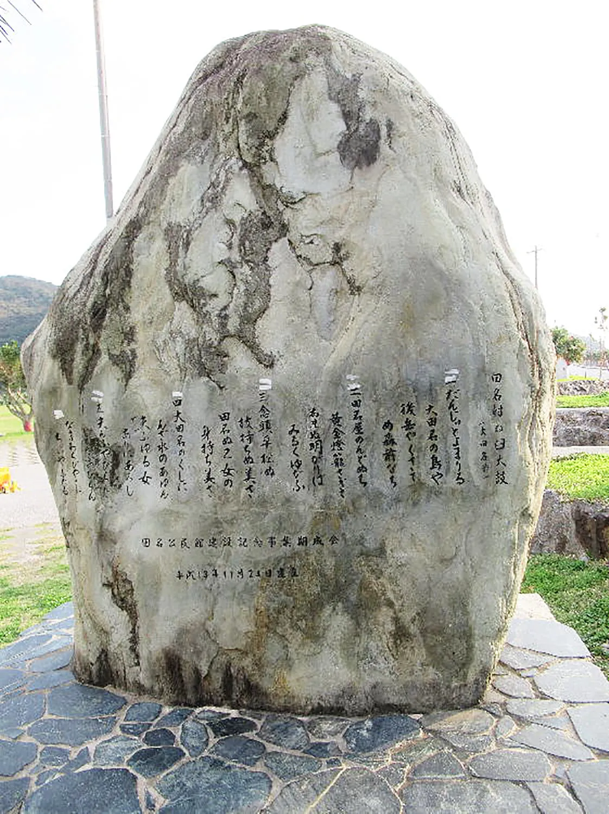
「踊こはでさ節」Uduikwadisa bushi古典音楽
歌詞 Letra
訳 Significado
| クワディーサーの木陰から照らす月はまばらであるから、 | La luna que brilla a través de la sombra de los árboles de Kuwadisa es escasa, |
| 他所の目の隙を見はからって忍んでいらしてください。 | Por favor, entra sigilosamente cuando nadie te vea. |
解説 Comentarios
| 夜になると黒々と生茂ったモモタマナの隙間からは月明りがわずかに覗く程度で、その暗闇を利用して人目につかぬよう男女が逢引している様子を描いています。 | Por la noche, apenas un tenue rayo de luna se filtra entre el denso y oscuro follaje de los árboles Terminalia catappa, y la canción describe a un hombre y una mujer que se encuentran en secreto en la oscuridad, sin ser vistos por nadie. |
| 「踊こはでさ節」は最古の琉歌集である「琉歌百控」（※1）に原歌となる「胡波伝佐節」が収録されており出自が”久米嶋（久米島）”と記されています。 | La versión original de «Uduikuwadisa-bushi» se incluye en la colección más antigua de canciones de Ryukyu, «Ryūka Hyakkō» (※1), y su origen se registra como «Kumejima». |
| 島の兼城公民館（島尻郡久米島町兼城）には本曲の歌碑が建てられています。 | Se ha erigido un monumento a esta canción en el Centro Comunitario de Kanegusuku, en la isla (Kanegusuku, Kumejima-cho, Shimajiri-gun). |
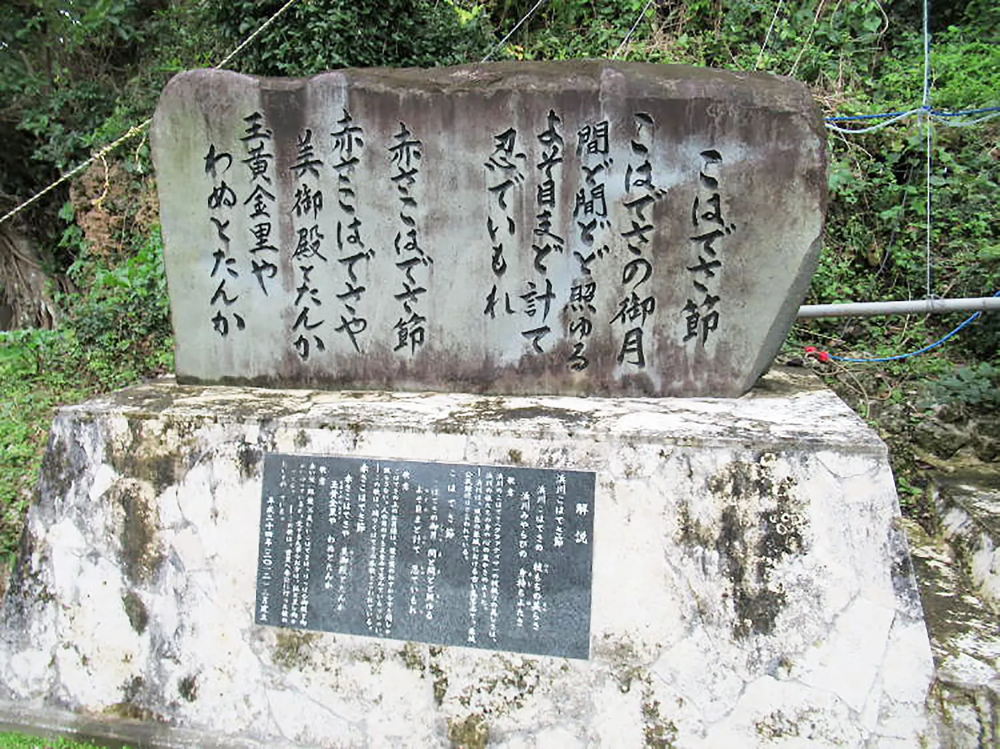
補足 Información complementaria
逸話 Anecdota
| クワディーサーの木は枝が水平に伸び、葉が大きく広がるため、夏場になると快適な木陰を提供してくれます。そのため、人の集まる集会所や公園に多く植栽されてきました。 | El árbol de Kuwadisa tiene ramas que crecen horizontalmente y hojas que se extienden ampliamente, proporcionando una agradable sombra en verano. Por esta razón, se ha plantado mucho en lugares de reunión, como centros comunitarios y parques. |
| また、人里離れた淋しい場所や墓地などにも植えられていることから、島の各地では「人の泣き声」を喰って成長する言い伝えが残されています。 | Además, debido a que también se planta en lugares remotos y solitarios, así como en cementerios, existe una leyenda en varias partes de la isla que dice que crece «alimentándose del llanto de la gente». |
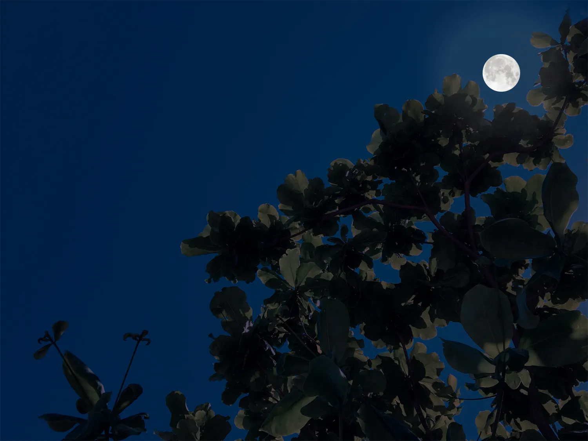
「あがさ節」Agasa bushiちらし古典音楽
歌詞 Letra
訳 Significado
| 奥山にいる蜘蛛でさえ、糸を掛けているのに（懸命に巣をかけている）、 | Incluso las arañas en las profundidades de las montañas tejen sus telas (trabajando diligentemente para construirlas), |
| 私は女として（機織作業の）気を抜くことはできましょうか。 | Como mujer, ¿puedo permitirme bajar la guardia (mientras tejo)? |
解説 Comentarios
| 「あがさ節」は懸命に巣をかける蜘蛛の姿に、繰り返しおこなわれる機織の作業を映し重ねて詠まれた歌曲です。 | La canción «Agasa-bushi» compara la imagen de una araña tejiendo diligentemente su telaraña con el trabajo repetitivo del tejido. |
| かつて沖縄の女性は植物から糸を紡いで着物に仕立てるまでの全工程を手仕事でおこないました。 | Antiguamente, las mujeres de Okinawa realizaban a mano todas las etapas de la producción, desde el hilado de las plantas hasta la confección de la prenda. |
| 上等な着物になると1600本（廿読）もの糸を使用して織られ、膨大な作業に自身の心を鼓舞している様子が描かれています。 | Un kimono de alta calidad podía tejerse con hasta 1600 hilos (20 yomi), y la canción describe cómo estas mujeres se motivaban para realizar esta enorme tarea. |
補足 Información complementaria
ちらし
| 「あがさ節」は大昔節（※1）の「昔蝶節」のちらし（※2）として演奏されます。 | «Agasa-bushi» se interpreta como una variante(※2) de «Nkashihabera-bushi», que se categoriza como «Ufugani-bushi» (※1). |
「赤さこはでさ節」Akasakufadisa bushi古典音楽
歌詞 Letra
解説 Comentarios
| 「赤さこはでさ節」は久米島から首里へ奉公に行った娘の姿に赤く染まったクワディーサーの美しい情景を映し重ねて詠まれた歌曲です。 | «Akasakufadisa-bushi» es una canción que describe la hermosa escena de una joven que viaja de Kumejima a Shuri para trabajar como sirvienta, y las vibrantes hojas rojas del árbol Kuwadisa. |
| クワディーサーの葉は秋から冬にかけて赤く染まり、島のあちこちで美しい紅葉をみせてくれます。 | Las hojas del árbol Kuwadisa se tornan rojas desde el otoño hasta el invierno, creando un hermoso follaje otoñal en toda la isla. |
| やがて葉が落ちて新芽が出始める季節になると緑色のつややかな葉が大きく広がりをみせ、夏場を迎えるころには快適な木陰を提供してくれます。 | Cuando las hojas caen y comienzan a brotar nuevos capullos, las brillantes hojas verdes se extienden ampliamente, proporcionando una agradable sombra durante los meses de verano. |
| 昔から人の集まる集会所や公園などに植栽されており、本曲の歌碑が建てられている兼城公民館（島尻郡久米島町兼城）の敷地内にも立派に育った大きなクワディーサーの木が生えています。 | Desde hace mucho tiempo, se planta en lugares de reunión, como centros comunitarios y parques. Un gran y espléndido árbol Kuwadisa crece en los terrenos del Centro Comunitario de Kanegusuku (Kanegusuku, Kumejima-cho, Shimajiri-gun), donde se erige un monumento a esta canción. |
補足 Información complementaria
その他の解釈 Otras interpretaciones
| 「赤さこはでさ節」が収録されている琉歌集や工工四によっては、下句の” 玉黄金無蔵や ～”が、” 玉黄金里や ～”と記されています。 | En algunas colecciones de canciones y partituras de Ryukyu que incluyen «Akasakufadisa-bushi», el último verso, «Tamakugani nzo ya~", se escribe como «Tamakugani satu ya~". |
| 「無蔵」は男性が思いを寄せる女性に対して使う言葉で、「里」は女性が思いを寄せる男性に対して使う言葉です。 | «Nzo» es una palabra que usan los hombres para referirse a las mujeres por las que sienten algo, y «Satu» es una palabra que usan las mujeres para referirse a los hombres por los que sienten algo. |
| 「標音・評釈琉歌全集／武蔵野書院版」では、「田舎から御殿へ奉公に出た娘が、思いもかけず若殿の寵愛を受けて、若殿とさし向いで楽しく幸福に暮らして喜びの絶頂に達した歌」と紹介されています。 | En la «Colección completa de canciones de Ryukyu con pronunciación y comentarios / Edición Musashino Shoin», se describe como «una canción sobre una joven que fue del campo a trabajar en el palacio del señor, donde inesperadamente recibió el favor del joven señor y alcanzó la plenitud de su felicidad al vivir feliz y contenta con él». |
「真福地のはいちやう節」Mafukudinufechou bushi古典音楽
歌詞 Letra
真福地のはいちやうや 嘉例なものさらめ
いきめぐりめぐり 元につきやさ
訳 Significado
| 真福地の盃は縁起の良いものである。 | La copa de Shinbukuchi se considera de buen augurio. |
| 何度も何度もめぐりめぐってまた元に戻ってくる。 | Da vueltas y vueltas una y otra vez, hasta que vuelve al punto de partida. |
解説 Comentarios
| 「真福地のはいちやう節」は糸満市福地が発祥の地で、村の中心に位置する小公園には歌碑が建てられています。 | «Mafukuji-nu-Fēchō-bushi» se originó en Fukuji, ciudad de Itoman, y un monumento con la inscripción de la canción se alza en un pequeño parque en el centro del pueblo. |
| 糸満市は古くより漁業が盛んで、サバニと呼ばれる舟に乗って遠洋漁業を中心に海人の町として歴史を築いてきました。 | La ciudad de Itoman tiene una larga tradición pesquera y se ha forjado como un pueblo de pescadores, principalmente dedicados a la pesca de altura con barcos llamados «Sabani». |
| 福地では毎年旧暦8月に年中行事がおこなわれ、宴席では牛の角でつくられた盃で祝杯する習わしがあります。 | En Fukuji, se celebra un evento anual en el octavo mes del calendario lunar, y en el banquete, es costumbre brindar con copas hechas de cuernos de buey. |
| 牛の角でつくられた盃は先が尖っているので下に置くことができず、皆でまわし飲むうちにまた自分の元に戻ってくることになぞらえ、海に出た漁師が無事に戻ってくるよう航海安全の祈願が込められています。 | Estas copas tienen extremos puntiagudos y no se pueden apoyar. La idea es que regresen a quien bebió de ellas después de pasarlas de mano en mano, simbolizando una plegaria por viajes seguros y el regreso a salvo de los pescadores que salen al mar. |
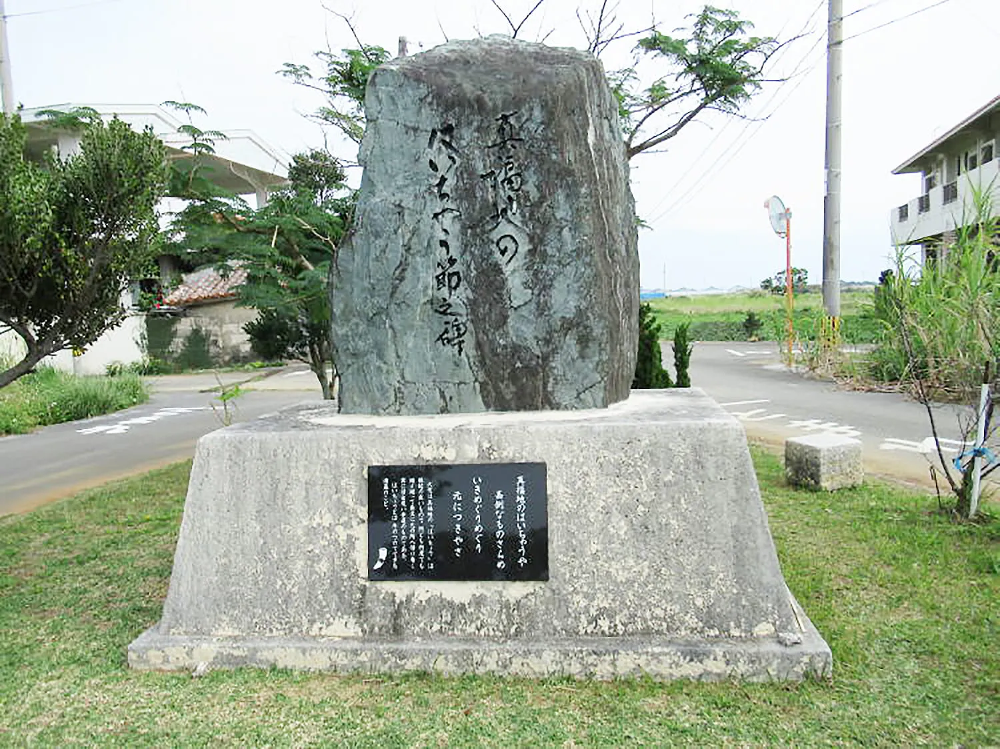
補足 Información complementaria
サバニ Sabani
| かつては一本の木をまるごと刳りぬいた丸木舟のつくりでしたが、森林保護のために木の部材を張り合わせた接ぎ舟が製造されるようになります。 | Originalmente, las canoas sabani se fabricaban ahuecando un árbol entero, pero para proteger los bosques, comenzaron a fabricarse como embarcaciones ensambladas, uniendo piezas de madera con pegamento. |
| サバニは波を切って軽快に進むことから、南洋各地をはじめ遠方まで漁業範囲を広めていきました。 | Las canoas sabani podían surcar las olas con agilidad, ampliando las zonas de pesca a diversas partes del Pacífico Sur y otras áreas distantes. |
| 名前の由来は諸説ありますが、大きな鮫を指す”サバ”と”船”をあわせてサバニと呼ばれるようになったようです。 | Existen varias teorías sobre el origen del nombre, pero parece ser una combinación de «saba» (que se refiere a un tiburón grande) y «nni» (embarcación). |
| 製造過程では鮫の油を船に塗って防水加工を施します。 | Durante el proceso de fabricación, se aplicaba aceite de tiburón a la embarcación para impermeabilizarla. |
「白保節」Sirafu bushi古典音楽
歌詞 Letra
訳 Significado
| 白保村に実り豊かな世が賜われた | Una era de prosperidad ha llegado a la aldea de Shiraho. |
| 寄ってらっしゃい、寄ってらっしゃい、踊り楽しみましょう | ¡Vengan, vengan, bailemos! |
解説 Comentarios
| 「白保節」は石垣島の南東部に位置する白保地区が発祥の地で、現地に伝わる八重山民謡「白保節（ゆらてぃく）」を原歌として沖縄本島に伝わったとされる歌曲です。 | «Shirafu-bushi» se originó en el distrito de Shirafu, al sureste de la isla de Ishigaki. Se cree que se extendió a la isla principal de Okinawa a partir de la canción folclórica local de Yaeyama, «Shirafu-bushi (Yuratiku)». |
| 白保地区では旧暦六月になると五穀豊穣を祈願する「豊年祭」がおこなわれ、奉納芸能の一つとして本曲が代々歌い継がれてきました。 | En el distrito de Shirafu, el «Hōnen-sai» (Festival de la Cosecha) se celebra en el sexto mes del calendario lunar para pedir una cosecha abundante, y esta canción se ha cantado durante generaciones como una de las ofrendas. |
| 「白保節」は弥勒様がもたらす実り豊かな世に感謝の祈りを捧げて詠まれた歌で、囃子詞の”ユラティク”は「歓迎」の意味が込められており、白保の文化や風習をつくりあげてきた言葉として人々の心に根付いてきました。 | «Shirafu-bushi» es una canción que expresa gratitud por el mundo fértil creado por Miruku (Maitreya), y la interjección «Yuratiku» significa «bienvenido». Se ha arraigado profundamente en el corazón de la gente, convirtiéndose en una palabra que ha moldeado la cultura y las costumbres de Shirafu. |
補足 Información complementaria
年中行事 Evento anual
| 旧暦六月の三日間に渡っておこなわれる「豊年祭」は白保地区最大のお祭りで、海の彼方のニライカナイ（楽土）から五穀豊穣を運んでくるとされるミルク様（来訪神）を迎え入れ、今年一年の収穫物への感謝と来年の豊作を予祝しておこなわれます。 | El Festival de la Cosecha, que se celebra durante tres días en el sexto mes del calendario lunar, es el festival más importante del distrito de Shiraho. Da la bienvenida a Miruku-sama (una deidad visitante) a quien se le atribuye la bendición de traer abundantes cosechas desde Nirai Kanai (el paraíso) al otro lado del mar, y se celebra para expresar gratitud por la cosecha del año y para pedir una cosecha abundante en el año venidero. |
| その他、白保地区は伝統行事が盛んな地域として知られており、航海安全、豊漁を祈願する「海神祭」、無病息災、厄払いを祈願する「獅子舞」をはじめ年間を通してさまざまなイベントが開催されます。 | Además, el distrito de Shiraho es conocido por sus vibrantes eventos tradicionales, con diversas celebraciones a lo largo del año, como el Festival del Dios del Mar para pedir viajes seguros y buenas capturas, y la Danza del León para pedir buena salud y protección contra el mal. |
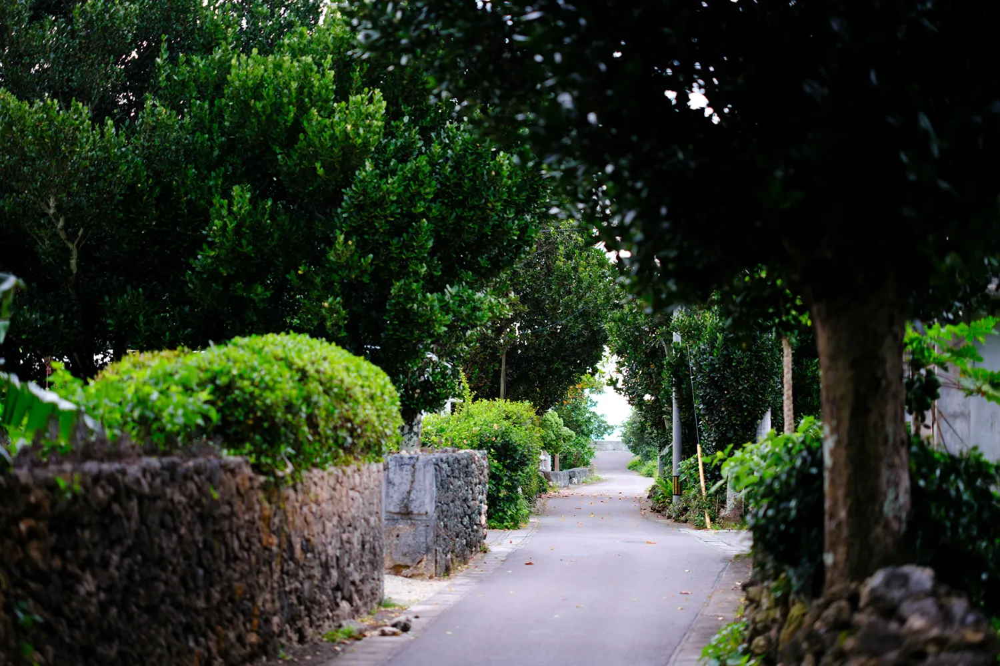
「六段菅攪」Rokudansigagachi古典音楽
歌詞 Letra
| ※楽器のみで演奏される器楽曲 | Música instrumental. |
解説 Comentarios
| 「六段菅攪」は琉球筝で演奏される歌唱を伴わない器楽曲です。 | «Rokudansigagachi» es una pieza instrumental interpretada con el koto de Ryukyu sin voz. |
| 本曲は日本本土で演奏されていた筝曲が伝来したもので、現在継承されている「六段の調」の古い形式の楽曲であると云われています。 | Se dice que esta pieza proviene de la música de koto del Japón continental y se considera una forma antigua de «Rokudan no Shirabe» que se conserva actualmente. |
| 筝曲には複数の段構造を持つ「段物」と呼ばれる楽式があり、沖縄では全部で七曲が継承されています。（※下記補足参照） | La música de koto tiene un estilo musical llamado «Danmono» (Piezas parciales) que consta de varias secciones, y en Okinawa se conservan siete piezas de este estilo. |
| 「六段菅攪」の名は六つの段（拍子）によって構成された「六段」と、「和琴」の演奏法である「菅掻」（※1）に由来していると云われています。 | Se dice que el nombre «Rokudansigagachi» deriva de «Rokudan» (seis secciones), que se compone de seis secciones (tiempos), y «Sugagaki» (※1), una técnica de interpretación para el Wagon (cítara japonesa). |
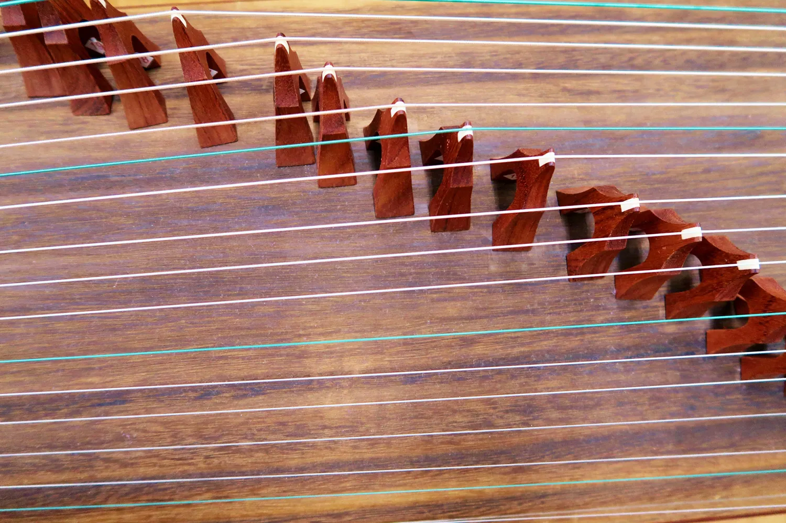
補足 Información complementaria
琉球筝 Koto de Ryukyu
| 琉球筝は18世紀の初頭に日本本土より伝来したことが始まりとされ、琉球音楽の伴奏楽器として定着してきた歴史があります。 | Se cree que el koto de Ryukyu se originó a principios del siglo XVIII, cuando fue introducido desde el Japón continental, y tiene una larga historia como instrumento de acompañamiento en la música de Ryukyu. |
| 「菅撹」（段物）や「手事」などの歌唱の伴わない器楽曲の他に、「船頭節」、「対馬節」、「源氏節」（歌物）と呼ばれる声楽曲が現在まで継承されています。 | Además de piezas instrumentales sin voz, como el «Sigagachi» (un tipo de danmono) y el «Tigutu» (un tipo de tegoto), piezas vocales como «Sendō-bushi», «Tsushima-bushi» y «Genji-bushi» se han transmitido hasta nuestros días. |
段物 Danmono
| 琉球筝における段物は現在まで七曲が伝承されています。 | En el koto de Ryukyu, siete piezas danmono se han transmitido hasta nuestros días. |
| 「瀧落菅攪」 | 一段 | Tachiutushisigagachi |
| 「地菅攪」 | 二段 | Jisigagachi |
| 「江戸菅攪」 | 三段 | Idusigagachi |
| 「拍子菅攪」 | 四段 | Hyoushisigagachi |
| 「佐武也菅攪」 | 五段 | Sanyasigagachi |
| 「六段菅攪」 | 六段 | Rokudansigagachi |
| 「七段菅攪」 | 七段 | Shichidansigagachi |
中巻 Chūkan
「作田節」Chikuten bushi 昔節前の五節
歌詞 Letra
解説 Comentarios
| 「作田節」は緑豊かな田園風景に稲の成長を描き、よく実ったお米の豊作を祝して詠まれた歌曲です。 | «Chikuten-bushi» es una canción que representa el crecimiento del arroz en un exuberante paisaje rural y fue compuesta para celebrar una abundante cosecha de arroz. |
| ぐんぐんと育った稲の若苗は茎から籾の集合体である穂を形成し、天候の良い暖かな時期を迎えると小さな白い花を咲かせます。 | Una plántula de arroz joven que crece rápidamente forma una espiga, que es una colección de granos de arroz, a partir del tallo, y cuando el clima es cálido y soleado, florecen pequeñas flores blancas. |
| 花の受粉後、稲は光合成をおこない栄養分を籾に送り込んでお米を育てていきます。 | Una vez polinizadas las flores, las plantas de arroz realizan la fotosíntesis y envían nutrientes a los granos de arroz para que crezcan. |
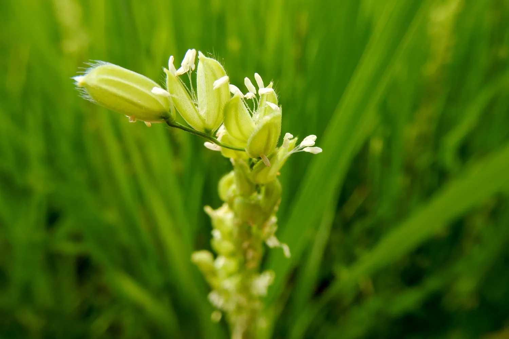
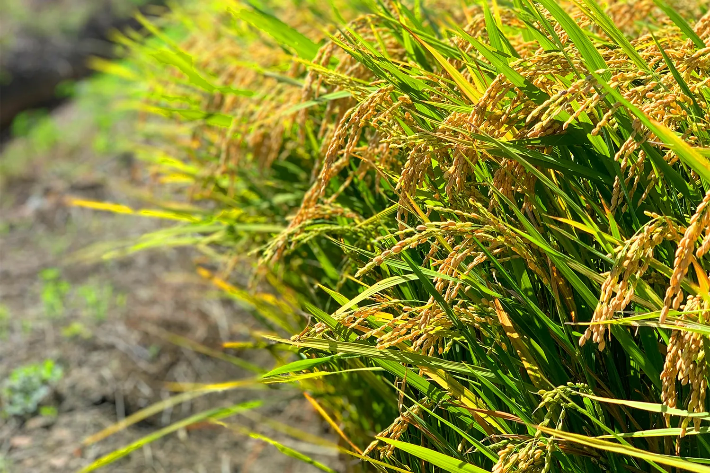
補足 Información complementaria
作者 Autor
| 最古の琉歌集である「琉歌百控」（※1）には本曲が収録されており、作者は「赤犬子神 音東神両人作」と記されています。 | Esta canción está incluida en la colección más antigua de poemas de ryūka, «Ryūka Hyakkō» (※1), y aparece como "escrita por Akainkogami y Neagari". |
| 「赤犬子 Akainko」は言わずと知れた三線音楽の始祖ですが、「音東」については人物名以外にも諸説があり、音の調子「音揚がり」を意味する語句から派生したもので音楽家の通称として使われるようになった言い伝えが残されています。 | «Akainko» es el conocido creador de la música sanshin, pero existen varias teorías sobre «Neagari» además del nombre de la persona, y existe la leyenda de que se deriva de una frase que significa «aumento tonal» y llegó a usarse como nombre común para un músico. |
昔節
| 「作田節」は古典音楽の昔節（※1）の分類に属し、「早作田節」のちらし（※2）につないでいきます。 | «Chikuten-bushi» pertenece a la categoría de música clásica «Nkashi-bushi» (※1), y está vinculado a la variación (※2) de «Haitsikuten-bushi». |
「じゃんな節」Janna bushi昔節前の五節
歌詞 Letra
昔ごとやすが なままでも肝に
忘ららぬものや あれが情
訳 Significado
| 昔のことになるが、今も心に残って | Fue hace mucho tiempo, pero aún permanece en mi corazón. |
| 忘れられないことは、あの人の情である。 | Lo que nunca olvidaré es la compasión de esa persona. |
解説 Comentarios
| 人生老境に入り、過ぎ去りし若き日の思い出を回想しながら現在の心中を述べた歌曲です。 | Es una canción en la que, al entrar en la vejez, se expresan los sentimientos actuales mientras se rememoran los recuerdos de la juventud ya pasada. |
| 「ぢやんな」の節名は、「穏やかな」、「静寂」を言いあらわしており、終始、落ち着きのある曲想で進行していきます。 | El nombre de la pieza «Janna» evoca la «tranquilidad» y el «silencio», y la composición avanza con un carácter sereno de principio a fin. |
| 年月が過ぎ去っても人の記憶に残り続けるものは人をいたわるやさしい心、情なのでしょう。 | Aunque pasen los años, lo que permanece en la memoria de las personas es, sin duda, un corazón bondadoso y compasivo, es decir, el afecto. |
| ※「ぢやんな」の語句は一説によると、「温かい」、「優しい」という意味があるそうです。 | ※Según una teoría, la palabra «Janna» significa «cálido» o «amable». |
補足 Información complementaria
弾出 Hikidashi
| 「ぢやんな節」、「首里節」、「しよどん節」の三節を同じ宴席にて演奏する場合、工工四の弾出（前奏）は最初に演奏する曲目のみに適用します。 | Si las tres piezas de «Janna-bushi», «Shuri-bushi» y «Shudun-bushi» se tocan en el mismo banquete, el «Hikidashi (preludio) de Kunkunshi» se aplicará sólo a la primera canción que se toque. |
| 他の二節は弾出の箇所を省略して、通常通り三行目の開始音符から演奏します。 | En los otros dos compases se omite la parte del «hikidashi» y se toca como de costumbre, a partir de la primera nota de la tercera línea. |
| ※工工四要確認 |
昔節
| 「ぢやんな節」は古典音楽の昔節（※1）の分類に属し、「大兼久節」のちらし（※2）につないでいきます。 | «Janna-bushi» pertenece a la clasificación de la música clásica «Nkashi-bushi» (※1), y está vinculada a la variación (※2) de «Ufuganiku-bushi». |
「首里節」Shuri bushi昔節前の五節
歌詞 Letra
ませこまてをれば ここてるさあもの
おす風とつれて 忍でいらな
TODO 訳 Significado
| 籬垣の内に引き籠っていれば心淋しく切なくなるので、 | Si me quedo encerrada dentro de la “cerca de mimbre” (masegaki), me siento sola y me da pena, así que |
| そよ風と共に恋しい人のところへ忍んで行きましょう。 | vayamos sigilosamente, con la brisa, hacia donde está la persona que extraño. |
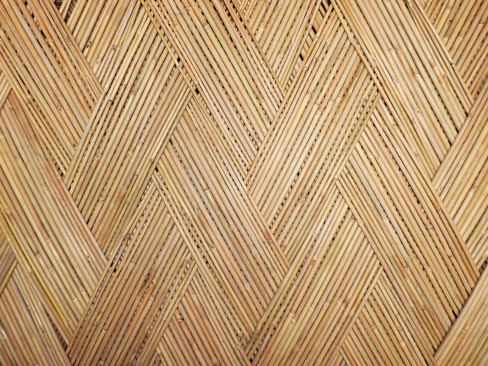
| ※当時使用されていた籬垣に関する写真資料が見つからないため、イメージ画像として掲載しています。 | ※Dado que no se han podido encontrar fotografías de la valla utilizada en aquel momento, se proporciona una imagen ilustrativa. |
解説 Comentarios
| 「首里節」は首里城の奥御殿で生活をする城人の心の内に秘めた切情を詠み込んだ歌曲です。 | «Shuri-bushi» es una canción que expresa los profundos sentimientos escondidos en los corazones de la gente que vive en el palacio interior del Castillo Shuri. |
| 城人とは宮廷に仕える女官のことで、国王の身の回りの世話や首里城内の多岐にわたる雑務を果たしていました。 | Una «Gusukunchu» (sirviente del castillo) era una dama de honor que servía en la corte y era responsable de cuidar los asuntos personales del rey y realizar una amplia variedad de deberes diversos dentro del Castillo Shuri. |
| 当時、首里城内では女性が取り仕切る御内原という奥御殿があり、王妃をはじめ士家の婦人、城人が生活を共にしてました。 | En ese momento, había un palacio interior llamado «UUchibaru» en el Castillo Shuri, que estaba dirigido por una mujer, y donde vivían juntas la reina, las damas de la familia samurái y la gente del castillo. |
| 城人は独身の女性から選任され、その中には御内原に住み込みで働く者もいたので、自由恋愛も適わず常に制限された環境下に身を置いていたそうです。 | Los «Gusukunchu» fueron elegidos entre mujeres solteras, algunas de las cuales vivían y trabajaban en «Uuchibaru», por lo que no eran aptas para el amor libre y se las colocaba constantemente en un ambiente restringido. |
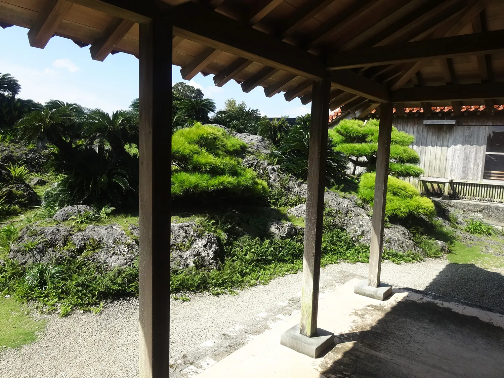
補足 Información complementaria
| 「首里節」は、他にも首里城で生活をする琉球王国の王女や士家の婦女によって詠まれた琉歌が集録されています。 | «Shuri-bushi» también incluye una colección de poemas de Ryukyu recitados por princesas del Reino de Ryukyu y mujeres de familias samurái que vivían en el Castillo Shuri. |
| その中から、琉球王国の王女が詠んだと云われる琉歌が悲恋の物語として現代に語り継がれています。 | Entre ellos, se dice que los poemas de Ryukyu fueron compuestos por las princesas del reino y se han transmitido hasta el día de hoy como cuentos de amor trágico. |
首里節（作：琉球王国の王女） Escrito por: Princesa del Reino de Ryukyu
あかいづ羽御衣や 濡れらはもばかり
里がかたみちやうべ ぬらすきやこと
| ※下句のみ違う場合あり。（里が片んちゃべ ぬらす心気） | ※La última línea puede diferir. (Satu ga katanchabe nurasu kokoroki) |
訳 Significado
| とんぼ羽のような衣装は濡れても仕方のないことですが、 | Es inevitable que un vestido con forma de alas de libélula se moje, |
| 愛しい人の髪が濡れることは心痛ましめる。 | pero me duele ver que se moje el cabello de mi amada. |
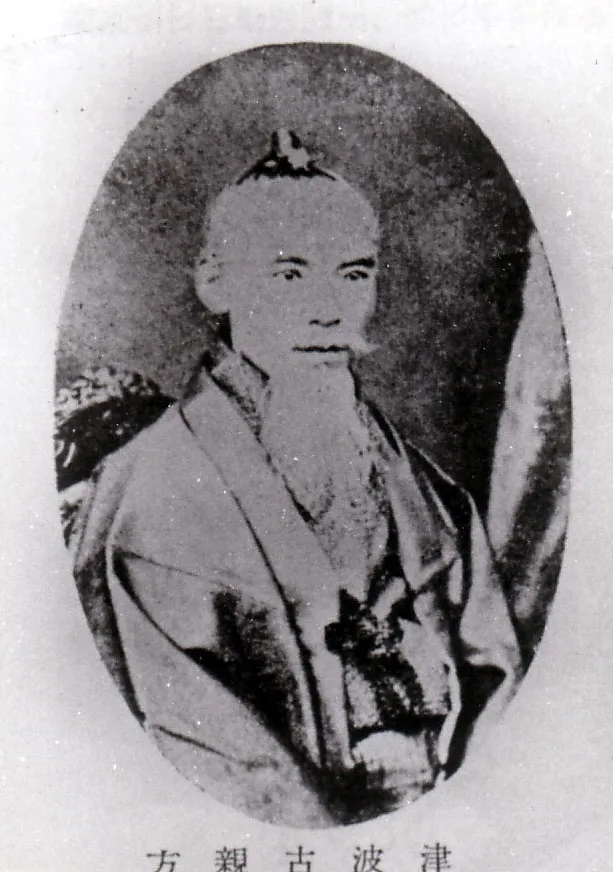
,930)}}}マブイ
| 琉球王国の王女が首里城内の花当（首里城内の庭の手入れ役）でに身分違いの恋をしてしまいます。 | Una princesa del Reino Ryukyu se enamora de un hanatai (persona encargada de cuidar los jardines) en el Castillo Shuri a pesar de su estatus social. |
| その関係を知った父王が激怒し、花当はついに処刑されてしまいます。 | Cuando su padre, el rey, se enteró de esta relación, se enfureció y el hanatai finalmente fue ejecutado. |
| 悲しみに果てた王女は後を追って崖から身を投じてしまう悲恋の物語です。 | Se trata de una trágica historia de amor en la que una princesa, abrumada por la tristeza, se arroja por un precipicio. |
弾出 Hikidashi
| 「首里節」、「ぢやんな節」、「しよどん節」の三節を同じ宴席にて演奏する場合、工工四の弾出（前奏）は最初に演奏する曲目のみに適用します。 | Si las tres piezas, «Shuri-bushi», «Janna-bushi» y «Shudun-bushi», se tocan en el mismo banquete, el Hikidashi (preludio) de Kunkunshi se aplicará sólo a la primera canción que se toque. |
| 他の二節は弾出の箇所を省略して、通常通り三行目の開始音符から演奏します。 | En los otros dos compases se omite la parte del «hikidashi» y se toca como de costumbre, a partir de la primera nota de la tercera línea. |
昔節
| 「首里節」は古典音楽の昔節（※1）の分類に属し、「仲順節」のちらし（※2）につないでいきます。 | «Shuri-bushi» pertenece a la clasificación de «Nkashi-bushi» de música clásica (※1), y está vinculado a la variación «Chunjun-bushi» (※2). |
「しょどん節」Shodon bushi昔節前の五節
歌詞 Letra
訳 Significado
| 1. 諸鈍村の長浜に打ち寄せて引く波は | 1. Las olas que golpean y se alejan de Nagahama (playa) de la aldea de Shudun |
| 諸鈍村の娘が微笑むときにみせる口元歯並びのよう。 | Se parece a la forma en que una chica de la aldea Shudun muestra cuando sonríe. |
| 2. 諸鈍村の娘の雪のような白い歯に口元、 | 2. Los dientes y boca blancos como la nieve de una chica de la aldea de Shudun, |
| そのうち日が暮れたら口づけをしたいものだ。 | Quiero besarte cuando se ponga el sol. |
解説 Comentarios
| 「シヨンダウ節」は諸鈍長浜に打ち寄せる白波の美しい情景に村の娘が微笑む姿を映し重ねて詠まれた歌曲です。 | «Shundō-bushi»? es una canción que se recitaba para representar el rostro sonriente de una muchacha del pueblo frente a la hermosa escena de olas blancas rompiendo en «Shodon-nagahama». |
| 「諸鈍長浜」は加計呂麻島のデイゴ並木が連なる風光明媚な観光名所として知られ、かつては各国との交易の玄関口として様々な文化が交わる地域でした。 | «Shodon-nagahama» es conocido como un lugar turístico pintoresco bordeado de hileras de árboles Deigo en la isla Kakeroma, y alguna vez fue un área donde varias culturas se mezclaron como puerta de entrada al comercio con otros países. |
| 一説によると、「シヨンダウ節」は琉球王国による奄美群島統治時代に駐留していた兵士によって詠まれた歌であると言い伝えられています。参考：「民謡紀行全集3／服部竜太郎」 | Según una teoría, «Shundō-bushi»? es una canción que recitaban los soldados estacionados en las islas Amami durante el gobierno del Reino Ryukyu. Referencia: «Cuadro de viaje de canciones populares, obras completas 3/Ryūtaro Hattori» |
補足 Información complementaria
原歌 Original
| 「シヨンダウ節」の発祥の地である諸鈍集落では、代々継承されてきた八月歌（※1）「諸鈍長浜」の歌碑が建てられています。 | En el pueblo de Morobun, lugar de nacimiento de «Shundō-bushi», se ha erigido un monumento a la canción de agosto (※1) «Shondon-nagahama», que se ha transmitido de generación en generación. |
「諸鈍長浜」
諸鈍ぬ長浜に 打上ぐぃ引く波や
諸鈍みやらぶぃ（娘）ぬ 笑い歯ぐき
諸鈍ぬ長浜や 大和がでぃとゆむ
諸鈍みやらぶぃや 島中とゆむ
- 浦々ぬ深さ 諸鈍ぬ浦深さ諸鈍みやらぶぃの うむえ（情）ぬ深さ
諸鈍みやらぶぃや 雪のろぬ歯ぐき
何時が夜の暮れぃて 御口吸はな
| 歌詞引用：「諸鈍長浜」の歌碑より | Cita de la letra: Del poema monumento de «Shodon-nagahama» |
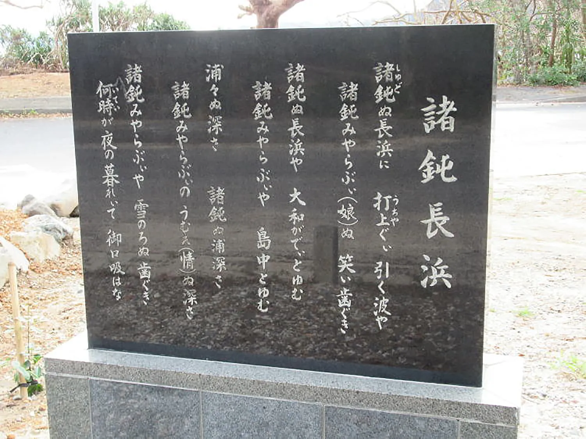
「暁節」Akatsichi bushi昔節前の五節
歌詞 Letra
暁やなゆり いきやおさうずめしやいが
別るさめとめば 袖の涙
訳 Significado
| 夜明け前になりましたが、（貴方は）どうなされますか。 | Es poco antes del amanecer. ¿Qué vas a hacer? |
| お別れかと思うと、（私の）袖は涙に濡れています。 | Cuando pienso en despedirme, (mis) mangas están mojadas de lágrimas. |
解説 Comentarios
| 「暁節」は慕いあう二人の束の間の時間が過ぎ去り、夜明けを迎えて別れを惜しむ哀情を詠み込んだ歌曲です。 | «Akatsichi-bushi» es una canción que expresa la tristeza que se siente al despedirse al llegar el amanecer, tras el paso de un momento fugaz que dos personas que se aman han compartido. |
| 一説によると、歌詞の”いきやおさうずめしやいが”は、首里の士族の間で使われていた言葉であることから、御殿殿内（※1）を舞台にした恋歌であると云われています。 | Según una teoría, la frase, «Ichausuzimishaga», son palabras utilizadas entre la clase samurái de Shuri, por lo que se dice que es una canción de amor ambientada en los terrenos del palacio (※1). |
| また、”袖に涙”の歌詞は切実な情感をあらわしており、数日単位の短い別れではなく、公務のために遠い旅路へ向かう数年単位の別れを表現しているのではないかと考えられます。 | Además, la frase de «Lágrimas en mis mangas (Sudi-nu-namida)» expresa una emoción sincera, y se cree que no expresa una breve despedida de sólo unos días, sino una despedida de varios años mientras emprenden un largo viaje para cumplir con sus deberes oficiales. |
補足 Información complementaria
昔節
| 「暁節」は古典音楽の昔節（※1）の分類に属し、「瓦屋節」のちらし（※2）につないでいきます。 | «Akatsichi-bushi» pertenece a la categoría de música clásica, «Nkashi-bushi» (※1), y está vinculado a la variación «Karayā-bushi» (※2). |
| その際、「瓦屋節」の歌詞は下記の琉歌で詠われます。 | En aquel entonces, la letra de «Karayā-bushi» se cantaba en la siguiente canción de Ryukyu: |
替え歌 Parodia
| 旋律が借用され、原歌と替え歌の関係が派生したのは最古の歌謡が集録されている「おもろ」の時代からであり、今日に至るまで一つの伝統形式として成り立っています。 | Las melodías fueron tomadas prestadas y la relación entre la canción original y la parodia se derivó del período Omoro, cuando se grabaron las canciones más antiguas, y sigue siendo una forma tradicional hasta el día de hoy. |
| 「おもろさうし」 は12世紀から17世紀にかけて島々で詠われていた歌謡を採録し、1531年から1623年にかけて編纂された最古の歌謡集です。 | «Omorosaushi» es la colección de canciones más antigua compilada entre 1531 y 1623 y registra canciones que se cantaban en las islas entre los siglos XII y XVII. |
| 「おもろ」の語源は 「思い」 を意味します。 | El origen de «Omoro» significa «pensar». |
瓦屋節
惜しむ夜やふけて 明雲も立ちゆり
にやまたいつ拝で ももきのびゆが
訳 Significado
| 夜がふけるのは惜しいのに、夜明けの雲が出てきてしまった。 | Aunque me da pena que la noche se acabe, ya han aparecido las nubes del amanecer. |
| またいつお会いして、命が延びる思い（楽しいひと時）ができましょうか。 | ¿Cuándo volveremos a vernos para pasar un rato tan agradable que nos haga sentir como si la vida se alargara? |
「茶屋節」Chaya bushi 大昔節
歌詞 Letra
訳 Significado
| 拝顔すると去りがたいのは首里の国王様であり、 | Cuando se le ve en persona, es difícil despedirse del rey de Shuri, y |
| 催し事（宴席）で去りがたいのは御茶屋御殿である。 | en los eventos (banquetes), es difícil despedirse del Palacio Ochaya. |
解説 Comentarios
| 「茶屋節」は歌詞に登場する御茶屋御殿（詳細、補足参照）を舞台に描かれており、琉球国王に対する忠義と高尚な佇まいの御殿を賛美した歌曲です。 | «Chaya-bushi» está ambientada en la casa de té palacio que aparece en la letra, y es una canción que alaba la lealtad al rey Ryukyu y la noble apariencia del palacio. |
| 国王の御前に立てば御威光に引きつけられ去りがたく、また、御茶屋御殿の宴席ではいつまでも芸事を観賞していたいものだという心境を詠み込んでいます。 | El poema expresa la sensación de que cuando estás frente al rey, te sientes atraído por su majestad y no puedes irte, y que en el salón de banquetes del palacio de la casa de té, quieres ver las actuaciones para siempre. |
| 本曲は歌の合間に入れる三線の間奏部（間の手）の組み合わせが巧妙であることから、別名「手ヅィクリ」と呼ばれています。 | Esta canción también se llama «Tedzikuri» debido a la inteligente combinación de interludios sanshin que se insertan entre las canciones. |
補足 Información complementaria
御茶屋御殿
| 御茶屋御殿は那覇市首里崎山町に建てられた王家の別邸で、首里城の東に位置することから東苑とも呼ばれていました。 | El Palacio Ochaya es una villa para la familia real construida en Shuri, Sakiyama-cho, ciudad de Naha, y también se llamaba Tōen(Este+Jardín) porque estaba ubicado al este del Castillo Shuri. |
| 王家の保養所として利用されたほか、歌三線や舞踊、茶道や華道をはじめ、さまざま催し事を披露し、外国からの客人をもてなす迎賓館の役割を果たしていました。 | Además de utilizarse como lugar de descanso para la familia real, servía como residencia de honores donde se presentaban diversos eventos, como el canto con el sanshin, la danza, la ceremonia del té y el arte floral, y donde se recibía a los invitados extranjeros. |
| 市街を見晴らす眺望の良い高台に建てられていましたが、沖縄戦ですべて焼失しました。 | Fue construido sobre una colina con una gran vista de la ciudad, pero fue completamente incendiado durante la Batalla de Okinawa. |
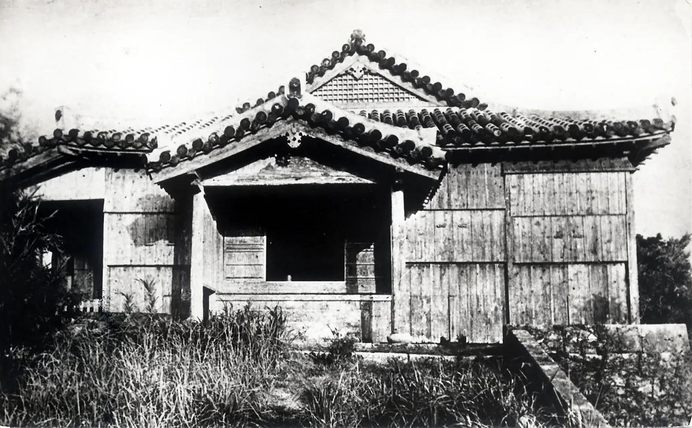
大昔節
| 「茶屋節」は古典音楽の大昔節（※1）の分類に属し、「すき節」のちらし（※2）につないでいきます。 | «Chaya-bushi» pertenece a la categoría de música clásica, «Ufunkashi-bushi» (※1), y está vinculado a la variación «Shichi-bushi» (※2). |
「昔蝶節」Nkashihabera bushi 大昔節
歌詞 Letra
訳 Significado
| 早朝に起きて庭に向かって目をやると、 | Cuando me levanto temprano por la mañana y miro hacia el jardín, |
| 美しい蝶があの花この花と（蜜を）吸っているさまが妬ましい。 | me da envidia ver cómo una hermosa mariposa va de flor en flor libando néctar. |
解説 Comentarios
| 「昔蝶節」の創作背景は現在も明らかになっていませんが、歌詞にある”綾蝶無蔵が”の一節では擬人法を用いて蝶の姿を女性に見立てて表現していることから、自然の景観に人間ドラマを映し重ねて詠み込まれた歌曲であると考えられます。 | El trasfondo creativo de «Nkashihabera-bushi» aún no está claro, pero el pasaje «Aya-haberun-zuga» en la letra utiliza el antropomorfismo para representar una mariposa como mujer, por lo que se cree que la canción fue escrita para reflejar el drama humano en el paisaje natural. |
| 琉歌は通常、上句が〔八・八］、下句が〔八・六］の計三十音の定律で構成されますが、「昔蝶節」は”あの花この花”の一節を加えた連歌形式で詠われています。 | Los ryūka generalmente se compone de un ritmo regular de 30 sílabas, siendo el verso superior [8.8] y el verso inferior [8.6], pero «Nkashihabera-bushi» se canta en forma renga con la adición del verso «Anu-hana-kunu-hana». |
| また、演奏の歌持（出だし）から落ち着きのある曲想で進行しますが、処々に曲調の変化があらわれ、特に”あの花この花”の一節は難しい歌唱ポイントとして挙げられます。 | Además, aunque la interpretación avanza desde el principio con una melodía tranquila, hay algunos cambios en la melodía aquí y allá, y el pasaje «Anu-hana-kunu-hana» en particular se cita como un punto difícil de cantar. |
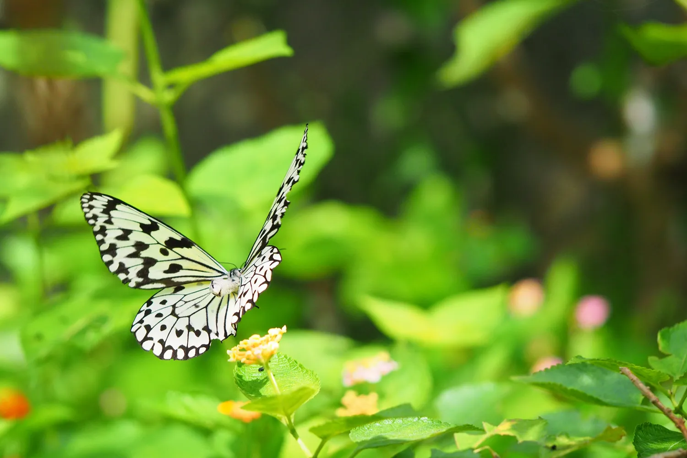
補足 Información complementaria
逸話 Anécdota
| 琉球王国の音楽家である屋嘉比朝寄の兄がお座敷で「昔蝶節」を演奏している最中、庭先に目をやると立派に咲いている花にすがろうとしている一匹の蝶を発見します。 | Mientras el hermano mayor de Yakabi Chōki, un músico del Reino Ryukyu, tocaba «Nkashihabera-bushi» en su habitación de tatami, miró hacia el jardín y vio una mariposa tratando de aferrarse a una magnífica flor. |
| 蝶が触れるたび、花が大きく揺れて今にも落ちそうなので、演奏中も気が気でなく思わず歌い方までも揺らしてしまったそうです。 | Cada vez que una mariposa toca la flor, ésta se sacude violentamente y parece que está a punto de caer, por lo que incluso durante la actuación, estaba tan nervioso que incluso se balanceaba en su forma de cantar. |
| そこに一人の老妓が座敷を通りかかり、今ほど歌っていた「昔蝶節」に感銘を受けたので、もう一度お聞かせくださいと訪ねてきました。 | Una vieja cortesana pasó por el salón y quedó impresionada por la canción «Nkashihabera-bushi» que acababa de cantar, así que preguntó si podía escucharla nuevamente. |
| 再び「昔蝶節」を歌って聞かせましたが、老妓はあてがはずれた顔をして、その歌い方ではなく先ほどの歌い方でお願いしますと言います。 | Cantó «Nkashihabera-bushi» otra vez, pero la vieja cortesana pareció decepcionada y me pidió que la cantara como antes. |
| 状況を振り返りながら今にも落ちそうな花に動揺して歌が変化してしまったことを説明すると、老妓は先ほどの節になされたほうが節情に叶うと言い残していきます。 | Mientras reflexiona sobre la situación y explica que las flores, que parecían a punto de caer, lo conmovieron tanto que su canción cambió, la anciana cortesana le dice que habría sido más apropiado ceñirse a la melodía original. |
| その後、老妓とのやり取りを弟の屋嘉比朝寄に話をすると、確かにこれは節情に叶った奏法であると賛同します。 | Posteriormente, cuando habló con su hermano menor, Yakabi Chōki, sobre su interacción con la vieja cortesana, estuvo de acuerdo en que sin duda se trataba de un método de juego que se adaptaba a su sentido del humor. |
| こうして、はからずも演奏された節が今日に伝わる「昔蝶節」になった言い伝えが残されています。《参考：「嗣周・歌まくら」那覇出版社》 | Existe una leyenda que dice que el tema que se tocaba de esta manera se convirtió en el «Nkashihabera-bushi» que se transmite hasta el día de hoy. 《Referencia: «Tsurushi Utamakura» Naha Publishing Company》 |
大昔節
| 「昔蝶節」は古典音楽の大昔節（※1）の分類に属し、「あがさ節」のちらし（※2）につないでいきます。 | «Nkashihabera-bushi» pertenece a la categoría de «Ufunkashi-bushi» (※1) de la música clásica, y está vinculado a la variación «Agasa-bushi» (※2). |
「長じゃんな節」Nagajanna bushi 大昔節
歌詞 Letra
訳 Significado
| 首里の王様が千年も末永く世を治められ、 | Que el rey de Shuri gobierne por mil años más, |
| 万人（誰もが）そろって、恩恵を受けます。 | Todos se beneficiarán de ello. |
解説 Comentarios
| 「長ぢやんな節」は国王の栄えある治世に末永く続く国家の泰安を礼讃して詠まれた歌曲です。 | «Nagajanna-bushi» es una canción compuesta durante el glorioso reinado del rey en alabanza a la paz duradera de la nación. |
| 最も古い三線楽譜の「屋嘉比工工四」（※1）には「長謝武名節」の節名で収録されており、本曲と同じ琉歌で詠われます。 | La partitura sanshin más antigua, «Yakabi Kunkunshi» (※1), la incluye bajo el nombre «Chojabumei-bushi» y se canta en el mismo estilo ryūka que esta canción. |
| 「ぢやんな」は「穏やかな」、「静寂」を意味する語句で、泰安の世を寿ぎ、終始、落ち着きのある曲想で進行していきます。 | «Janna» es una frase que significa «gentil» o «tranquila», y la obra avanza con un tono melódico tranquilo de principio a fin, viviendo en la era Taian. |
| また、「長ぢやんな節」は演奏時間が長く大曲であるため、昔から心の緩みがあった状態では歌い終わることが出来ない難曲と云われています。 | Además, «Nagajanna-bushi» es una canción larga, por lo que durante mucho tiempo se ha dicho que es una pieza difícil que no puedes terminar de cantar incluso si tienes el corazón relajado. |
| ※「ぢやんな」の語句は一説によると、「温かい」、「優しい」という意味があるそうです。 | ※Según una teoría, la palabra «Janna» significa «cálida» o «amable». |
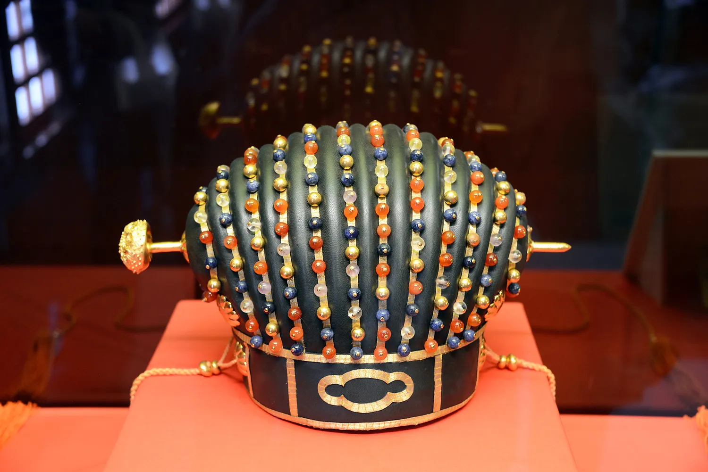
補足 Información complementaria
大昔節
| 「長ぢやんな節」は古典音楽の大昔節（※1）の分類に属し、「伊集早作田節」のちらし（※2）につないでいきます。 | «Nagajanna-bushi» pertenece a la categoría de «Ufunkashi-bushi» (※1) de la música clásica, y está vinculado a la variación (※2) de «Ijuhaitsikuten-bushi». |
「仲節」Naka bushi 大昔節
歌詞 Letra
訳 Significado
| 今日の喜びは何にたとえることができましょう。 | ¿Con qué se podría comparar la alegría de hoy? |
| （それは）つぼんでいる花が朝露をうけて（花開く心のようです）。 | (Es como) una flor en capullo que, al recibir el rocío de la mañana, (se abre en el corazón). |
解説 Comentarios
| 「仲節」は「かぎやで風節」と同じ琉歌で詠われており、世の泰平に祈りを込めて演奏されます。 | «Naka-bushi» se canta en el mismo estilo ryūka que «Kagiyade-fū-bushi» y se toca para orar por la paz en el mundo. |
| 古くより、始めと終わりが同じであることは縁起が良いとされ、お祝いの場では「かぎやで風節」で始まり「仲節」で締めくくる楽曲構成で演奏されることがあります。 | Desde la antigüedad, se ha considerado de buena suerte que una canción tenga el mismo comienzo y final, y en ocasiones de celebración, a veces se toca con una composición que comienza con «Kagiyade-fū-bushi» y termina con «Naka-bushi». |
| 古典音楽のなかで最も長編（1121拍子）の楽曲で演奏時間は約30分を要し、音階を跳躍させる旋律（ケーイグシ）、突吟（※1）の発声法や息の長さも加わり難曲とされています。 | Es la pieza más larga de música clásica (1121 tiempos) y tarda unos 30 minutos en interpretarse, y se considera difícil debido a la melodía que salta en la escala, el método de vocalización tsichijin (※1) y la duración de la respiración. |
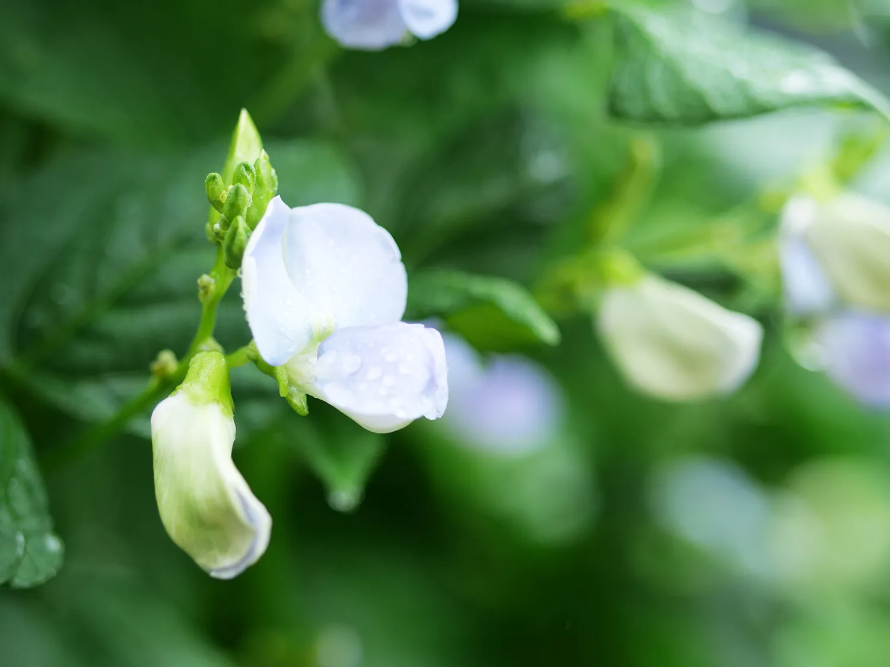
補足 Información complementaria
逸話 Anécdota
| 本曲の演奏時間の長さを例えた話です。 | Este es un ejemplo de la duración de la interpretación de esta canción. |
| ～那覇からの帰途、崇元寺辺りからこの「仲節」を歌い出し、鳥掘の町のはずれまでもなお歌は終わらなかった。 | ～En mi camino de regreso de Naha, comencé a cantar «Naka-bushi» alrededor del templo Sogenji, y la canción no terminó hasta que llegué a las afueras de la ciudad de Torihori. |
大昔節
| 「仲節」は古典音楽の大昔節（※1）の分類に属し、「清屋節」のちらし（※2）につないでいきます。 | «Naka-bushi» pertenece a la categoría de «Ufunkashi-bushi» (※1) de la música clásica, y está vinculado a la variación (※2) de «Churaya-bushi». |
「十七八節」Jyusichihachi bushi 大昔節
歌詞 Letra
訳 Significado
| 夜に静寂が訪れるとこうしては（じっとしては）居られない。 | Cuando llega el silencio por la noche, no puedo quedarme quieto así. |
| 大切な人からの使いが間もなく来ると思うと。 | Al pensar que pronto llegará un mensaje de alguien especial. |
解説 Comentarios
| 「十七八節」の由来には二つの説が存在します。 | Existen dos teorías sobre el origen de «Jūshichihachi-bushi». |
| 一つは思春期の年の頃、”十七・十八歳”に由来し、日が暮れて愛する人との逢瀬を待ちわびて詠った恋歌説。 | Una de ellas es la teoría de que se trata de un poema de amor compuesto durante la adolescencia, «a los diecisiete o dieciocho años», al atardecer, mientras se esperaba con ansias el encuentro con la persona amada. |
| もう一つは仏教の教えである”第十七願・第十八願”（※補足追記）に由来し、人生の晩年、極楽浄土の迎えを待って詠った説があります。 | La otra teoría es que se origina en las enseñanzas budistas «El voto 17 (Daijuu Shichigan) y el voto 18 (Daijuu Hachigan)», y se dice que se cantaba en los últimos años de la vida en anticipación de la llegada de la Tierra Pura. |
| そして、二つの脈絡をつなぎ合わせると、若かりし頃の記憶が忘却の彼方に過ぎ去り、晩年に人生を回想しながら静かに極楽浄土（故人のいる世界）の迎えを待つ姿が浮かび上がります。 | Y cuando conectamos estos dos hilos, podemos imaginar a una persona cuyos recuerdos de su juventud han pasado al olvido, y en sus últimos años, mientras recuerda su vida, espera tranquilamente la llegada de la Tierra Pura (el mundo de los difuntos). |
| 「十七八節」は三線の音符〔工〕の連続音が仏事で鳴らす鐘の音を想起させ、鎮魂的な深い精神の広がりをみせる曲想です。 | «Jūshichihachi-bushi» es una canción melódica en la que el sonido continuo de las notas sanshin nos recuerda el sonido de una campana en una ceremonia budista y muestra la expansión de un espíritu profundo, parecido a un réquiem. |
補足 Información complementaria
仏教の伝来 La introducción del budismo
| 琉球における仏教の伝来は13世紀（1265年～1274年頃）に遡り、禅鑑という名の僧侶が浦添に極楽寺を創建したことが始まりとされています。参考：「中山世鑑」 | La introducción del budismo en Ryukyu se remonta al siglo XIII (alrededor de 1265-1274), cuando un monje llamado Zenkan fundó el templo Gokuraku-ji en Urasoe. Referencia: «Chuzan Seikan» |
| 仏教の教えには衆生（生きとし生けるものすべて）を救うために説かれた「四十八願」という経典があります。 | En el budismo, hay un sutra llamado «48 votos», que se dice que salva a los seres sintientes (todos los seres vivos). |
| この四十八の願文の根本を成している誓願が「第十八願」とされており、宗派によっては「第十七願」と組み合わせで説かれます。 | Se dice que el voto que forma la base de estos 48 votos es el «voto 18», y algunas sectas lo dicen en combinación con el «voto 17». |
大昔節
| 「十七八節」は古典音楽の大昔節（※1）の分類に属し、「本花風節」のちらし（※2）につないでいきます。 | «Jūshichihachi-bushi» pertenece a la categoría de «Ufunkashi-bushi» (※1) de la música clásica, y está vinculado a la variación «Mutu-hanafū-bushi» (※2). |
「すき節」Sichi bushi ちらし
歌詞 Letra
訳 Significado
| 季節が来れば木や草でさえ知る（実を結ぶ）ことができるのに、 | Si llegara la temporada, hasta los árboles y las hierbas podrían darse cuenta (dar fruto), pero, |
| 人に生を受けて自分の親を知らない（孝行できない）ことがあろうか。 | ¿Acaso puede haber alguien que, al nacer, no conozca a sus padres (y, por lo tanto, no pueda honrarlos)? |
解説 Comentarios
| 「すき節」は組踊（※1）の創始者である玉城朝薫が原歌の旋律を借用して作詞を手掛け、自身の作品である「二童敵討」の演奏曲として構成されている歌曲です。 | «Sichi-bushi» es una canción escrita por Tamagusuku Chōkun, el fundador de Kumiodori (※1), quien tomó prestada la melodía de la canción original y la compuso como pieza interpretativa para su propio trabajo, «Nidōtichiuchi». |
| 移りゆく季節の中で連綿と命のバトンをつなぎ実を結ぶ植物の姿に、我が身の人生の境遇を映し重ねて描かれています。 | En esta obra se refleja la propia situación de la vida del autor a través de la imagen de las plantas, que, en el transcurso de las estaciones, pasan el relevo de la vida de manera ininterrumpida y dan fruto. |
| 「すき節」の節名には諸説あり、「数奇」 = 風流に心を寄せるの言葉に由来する説のほか、最古の琉歌集である「琉歌百控」（※2）には「寿幾節」の字があてられ、世の泰平を詠った内容を中心に四首の琉歌が収められています。 | Existen varias teorías sobre el nombre de «Sichi-bushi»;«数奇(suki)» = Además de la teoría de que se origina en las palabras «centrarse en la elegancia», la colección más antigua de poemas de ryūka, «Ryūka Hyakkō» (※2), aparece escrita como «Suki-bushi» y contiene cuatro ryūka, principalmente canciones sobre la paz y la prosperidad en el mundo. |
「二童敵討」
| 天下取りの野望を抱く阿麻和利は、目先の邪魔者であった護佐丸をだまし討ちにして中城城を攻め滅ぼします。 | Amawari, que albergaba la ambición de conquistar el imperio, tendió una emboscada a Gosamaru, quien representaba un obstáculo inmediato, y atacó y destruyó el castillo de Nakagusuku. |
| 阿麻和利に父親（護佐丸）の命を奪われた鶴松と亀千代の兄弟は、敵の目を逃れながら父親の敵討ちの機会をうかがっていました。 | Los hermanos Tsurumatsu y Kamechyo, cuyo padre (Gosamaru) fue asesinado por Amawari, esperan una oportunidad para vengar a su padre evitando la atención del enemigo. |
| ある日、阿麻和利が宴を開く情報を耳にした兄弟は、ようやく敵を討つ機会が訪れたと母親に意を決意し、父親が愛用していた守り刀（短刀）を授かり、いざ敵陣へ向かいます。 | Un día, los hermanos se enteran de que Amawari está celebrando un banquete y deciden contarle a su madre que por fin tienen la oportunidad de acabar con el enemigo. Se les da la espada de protección favorita de su padre y se dirigen hacia el campamento enemigo. |
| 踊り子に扮した兄弟は、宴の場で踊ったり酒をついだりして、徐々に阿麻和利を酔わせていきます。 | Los hermanos, vestidos de bailarines, bailan y beben en el banquete, emborrachando poco a poco a Amawari. |
| 気分を良くした阿麻和利は褒美として団扇や太刀、着用している陣羽織まで次々に与えていきます。 | Amawari, ahora de buen humor, le va regalando uno tras otro, como recompensa, un abanico, una espada y hasta el haori de campaña que lleva puesto. |
| 丸腰になって調子よく踊っている阿麻和利の隙を見逃さず、兄弟はついに父親の敵を討つことに成功します。 | Sin dejar pasar la oportunidad que les brindó Amawari, quien bailaba alegremente sin armas, los hermanos lograron finalmente vengar a su padre. |
補足 Información complementaria
ちらし
| 「すき節」は大昔節（※1）の「茶屋節」のちらし（※2）として演奏されます。 | «Sichi-bushi» se toca como variación (※2) para «Chaya-bushi» en «Ufunkashi-bushi» (※1). |
「伊集早作田節」Ijuhaichikuten bushi ちらし
歌詞 Letra
訳 Significado
| 蘭の芳しい匂いのように朝夕思いとめて、 | Recordándolo cada mañana y cada tarde, como el aroma de las orquídeas, |
| いつまでも人に飽きられないように（心掛けましょう）。 | Procuremos que la gente nunca se canse de nosotros. |
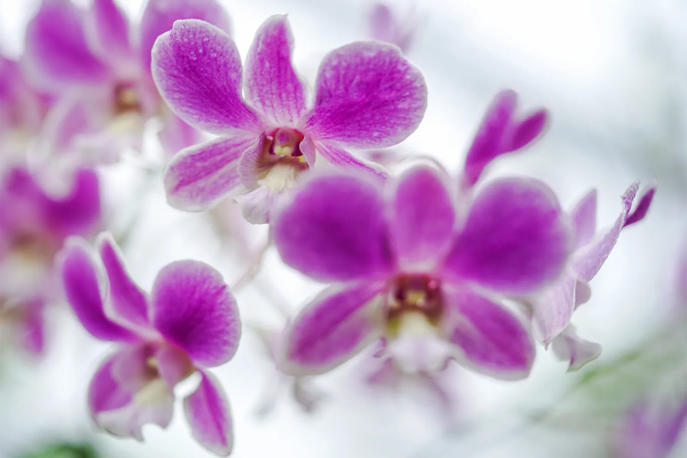
解説 Comentarios
| 朝夕通して上品で芳しい蘭の香りのように、人も常に自己を磨いていかなければ、やがて飽きられてしまうものだといった教訓的な要素を含んだ歌曲です。 | Esta canción contiene una advertencia, sugiriendo que, al igual que el elegante y fragante aroma de las orquídeas que perdura mañana y tarde, uno debe refinarse constantemente, de lo contrario, terminará por volverse monótono. |
| 最も古い三線楽譜である「屋嘉比工工四」（※1）には本曲が収録されていますが歌詞は異なり、古典音楽「中作田節」とほぼ同じ歌詞の内容（※下記参照）で詠われています。 | Si bien esta canción está incluida en la partitura sanshin más antigua, «Yakabi Kunkunshi» (※1), la letra difiere y se canta con un contenido casi idéntico al de la pieza de música clásica «Nakatsikuten-bushi». |
| 「伊集早作田節」がどのように派生してきたか定かではありませんが、「琉歌百控」（※2）に収められている「中作田節」の出自には「中城間切伊集村」と記されていることから「伊集」の節名をとる本曲との関連性を紐づけるものではないかと考えられます。 | Se desconoce el origen de «Ijuhaitsikuten-bushi», pero «Nakatsikuten-bushi» incluida en «Ryūka Hyakkō» (※2) se menciona como originaria de la aldea de «Nakagusuku Magiri Iju», lo que sugiere una posible conexión con esta canción, que también toma su nombre de «Iju». |
| また、琉球王国時代に編成された行政区の「中城間切」は、現在の中城村、北中城村～うるま市の一帯を指しており、このエリアが蘭の繁殖地であることに所以があると考えられます。 | Además, «Nakagusuku Magiri», un distrito administrativo formado durante la época del Reino de Ryukyu, se refiere al área que comprende la actual aldea de Nakagusuku, la aldea de Kitanakagusuku y la ciudad de Uruma, y se cree que esta área es un lugar de reproducción de orquídeas. |
伊集早作田節
| 屋嘉比工工四に収録されている「伊集早作田節」の歌詞は以下の通りです。 | La letra de «Ijuhaitsikuten-bushi» incluida en el «Yakabi Kunkunshi» es la siguiente: |
訳 Significado
| 月夜、月夜だと思って夜が明けるのも忘れ、 | Era una noche de luna llena y olvidé que estaba amaneciendo, |
| 若い女の腕枕にうつつを抜かして（夜を明かしてしまった）。 | Quedé tan cautivado por los brazos de la joven que terminé pasando toda la noche con ella. |
補足 Información complementaria
ちらし
| 「伊集早作田節」は大昔節（※1）の「長ぢやんな節」のちらし（※2）として演奏されます。 | «Ijuhaitsikuten-bushi» se interpreta como una variación (※2) de «Nagajanna-bushi» que se clasifica como «Ufunkashi-bushi» (※1). |
「清屋節」Churaya bushi ちらし
歌詞 Letra
訳 Significado
| 屋敷内の畑に植えた苧の芯部を真っ白にさらして、 | El núcleo del cáñamo plantado en el campo de la finca se blanquea hasta que queda de un blanco puro, |
| 大切な人へとんぼの羽のように薄くて上質な着物をつくって差し上げましょう。 | Hazle a tu ser querido un kimono de alta calidad que sea tan delgado como las alas de una libélula. |
解説 Comentarios
| 「清屋節」は愛する人へ蜻蛉の羽のように美しく上質な着物を織って差し上げたいと健気な女性の気持ちを詠み込んだ歌曲です。 | «Churaya-bushi» es una canción que captura los sentimientos de una mujer de carácter fuerte que quiere tejer un kimono de alta calidad, tan hermoso como las alas de una libélula, para su amado. |
| 琉球王国時代より染織文化の盛んな沖縄では、かつて家庭の畑に植えてある苧麻や糸芭蕉を採取し、植物の繊維を剥ぎ取って一本一本の糸を作るまでの工程を手仕事でおこなっていました。 | En Okinawa, donde la cultura de teñir y tejer ha florecido desde la era del Reino Ryukyu, la gente solía recolectar «choma» e «itobasho» de sus campos, quitar las fibras de las plantas y hacer hilos individuales a mano. |
| 大人一人分の着物を織るには約200本もの糸芭蕉が必要で、全ての工程を半年以上の期間をかけて完成させます。 | Se necesitan aproximadamente 200 hilos de basho para tejer un kimono para un adulto, y todo el proceso lleva más de medio año en completarse. |
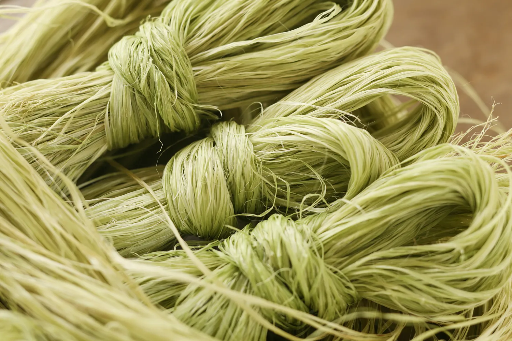
補足 Información complementaria
節名の由来
| 本曲の節名は囃子の”チュラヤ チュラヤ"（※工工四参照）からとったもので、着物が美しく仕上がる様子をあらわしています。 | El nombre de esta canción está tomado del acompañamiento musical japonés «Churaya Churaya», que expresa el hermoso acabado de un kimono. |
| また、最古の琉歌集である「琉歌百控」（※1）には「美屋節」の字があてられています。 | Además, la colección más antigua de poemas de ryūka, «Ryūka Hyakkō» (※1), contiene los caracteres «Churaya-bushi». |
ちらし
| 「清屋節」は大昔節（※1）の「仲節」のちらし（※2）として演奏されます。 | «Churaya-bushi» se toca como variación (※2) de «Naka-bushi» de la categoría «Ufunkashi-bushi» (※1). |
「東細節」Figashikuma bushi
歌詞 Letra
訳 Significado
| 江戸の駒踊を私はこなしてきたから、 | Como ya he dominado el baile Komodori de Edo, |
| 京の勢頭踊など気にもしていてない。 | ni siquiera me importa el baile Seido de Kioto. |
解説 Comentarios
| 「東細節」は最古の三線楽譜である「屋嘉比工工四」（※1）に「東小馬踊節」の節名で収録されています。 | «Figashikuma-bushi» está incluido en la notación musical sanshin más antigua, «Yakabi Kunkunshi» (※1), bajo el nombre de «Higashikoba Odori-bushi». |
| 解釈は史料によって諸説ありますが、歌詞に登場する二つの踊りは「東小馬踊節」の節名に結び付く馬舞であると考えられます。 | Hay varias interpretaciones dependiendo de las fuentes históricas, pero se cree que las dos danzas que aparecen en la letra son danzas de caballos asociadas con el nombre de «Higashikoba Odori-bushi». |
| 「東こま踊」の”東”は江戸の「駒踊」を指しており、「都せど踊」は平安時代から伝わる京都の「春駒」を指しているのではないかと考察します。（※補足追記） | Consideramos que el «Higashi(Este)» en «Higashikoma Odori» se refiere al «Koma Odori» de Edo, y que «Miyakusidu Odori» se refiere al «Harukoma» de Kyoto, que se ha transmitido desde el período Heian. |
| 二つの踊りは共通して馬を模した作り物を用いて演じることから、芸道を嗜んできた踊り手たちの間で長らく比較対象として挙げられてきたのではないでしょうか。 | Dado que ambas danzas utilizan elementos que se asemejan a caballos, se han utilizado durante mucho tiempo como punto de comparación entre los bailarines que se han dedicado al arte de las artes escénicas. |
| また、奄美大島では同じ節名の「ひがしくま」という八月歌（※2）が伝承されていますが、本曲との関連性についてはあきらかになっていません。 | Además, en Amami Oshima se transmite una canción de agosto (※2) llamada «Higashikuma» que lleva el mismo nombre de estrofa, pero no está claro si está relacionada con esta canción. |
ひがしくま Higashikuma
ひがしくまふどり 吾くなちうかば
ハレ大和袖ふりゃ 吾知りやぴらぬヨンノ
ハレ大和袖ふりゃ 吾知りやぴらぬヨー
| 引用：「芦検八月踊り歌詞集」芦検民謡保存会 | Citado de: «Colección lírica Ashiken August Odori» Sociedad de Preservación de Canciones Populares de Ashiken |
補足 Información complementaria
都せど踊の考察
| かつて「京太郎」と呼ばれる芸人集団が島各地の家々を訪問し、門付芸を披露して日々の生計を立てており、この集団を統率する者を「勢頭」と呼んでいました。 | En el pasado, un grupo de artistas llamado «Chondara» visitaba hogares por toda la isla y realizaba trucos de kadozuke para ganarse la vida, y la persona que dirigía este grupo se llamaba «Sidu». |
| 「勢頭」は船頭 が転訛 した言葉で、”集団を統率する者”に付けられた称号です。 | «Sidu» es una corrupción de la palabra «sendu», y es un título dado a «la persona que lidera el grupo». |
| 「京太郎」はお正月やお盆、新築祝いなどで各地の家々をまわり「春駒」や「鳥刺し舞」の演目、「万歳」の祝言、仏と呼ばれる人形をたずさえて「人形芝居」を演じ、法事がある時は「念仏者」と呼ばれる芸人が供養の念仏歌を唱えに葬家を訪ねました。 | Los «Chondara» visitan hogares en todo el país para las celebraciones de Año Nuevo, Obon e inauguración de casas, interpretando «Harukoma» y «Tuisashimē», además de «Manzai». Se representó una «obra de títeres» con títeres llamados «gen» y «futoki», y cuando hubo un servicio conmemorativo, un artista llamado «nibunjā» visitó la funeraria para recitar nenbutsu (cantos). |
| このことから、「都せど踊」の「都」とは京のことを指し、「せど」は集団を統率する勢頭から名付けられたのではないかと考察します。 | A partir de esto, se considera que «Miyako» en «Miyako Sidu Odori» se refiere a Kioto, y que «Sidu» lleva el nombre del líder del grupo. |
| その後、社会の変遷とともに活動が廃れ、芸能集団も離散しましたが、現在でも沖縄本島の宜野座村、沖縄市泡瀬などでこれらの芸能が継承されています。 | Después de eso, con los cambios en la sociedad, las actividades cesaron y los grupos de artes escénicas se dispersaron, pero aún hoy estas artes escénicas se transmiten de generación en generación en lugares como la Aldea de Ginoza en la isla principal de Okinawa y Awase en la ciudad de Okinawa. |
| また、那覇市辻では旧暦のお正月に開催される「廿日正月」（じゅり馬祭り）の奉納演舞に馬舞が演じられています。 | Además, en Tsuji de la ciudad de Naha, se realizan danzas de caballos como parte de la actuación de dedicación del «Hachikashōgwachi» (Festival del Caballo Juri), que se celebra durante el día de Año Nuevo según el calendario lunar. |
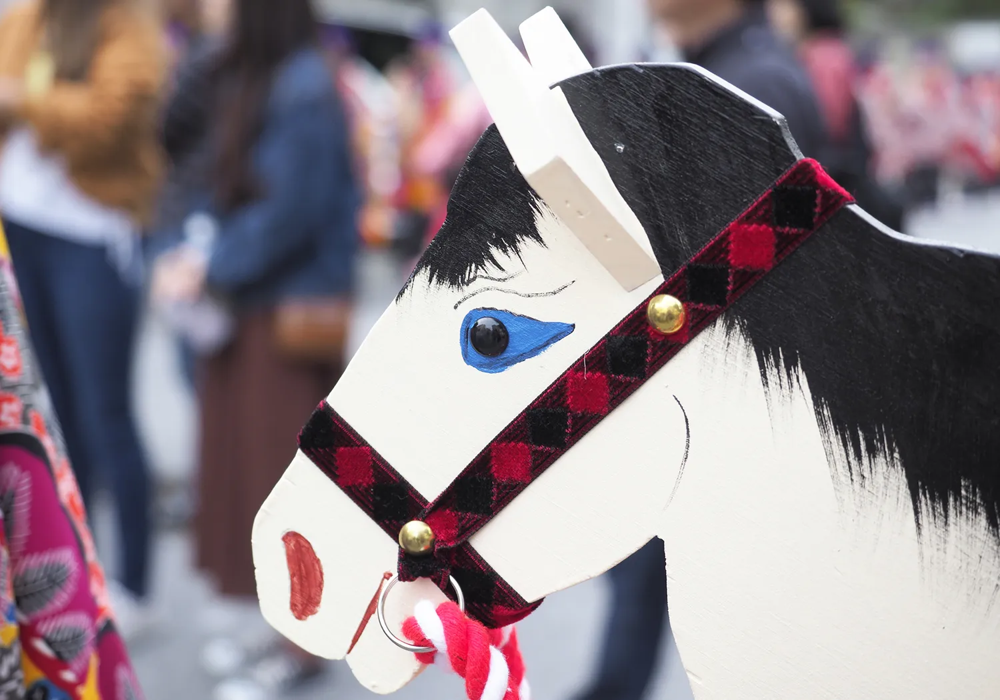
「永良部節」Irabu bushi
歌詞 Letra
訳 Significado
| （毎年）秋になると庭の籬の内は、 | (Cada año) En otoño, dentro de la cesta del jardín, |
| 喜ばしいことに菊の花が咲き、その花に宿借りる | Para mi alegría, los crisantemos han florecido y me he refugiado en ellos. |
| 露の玉に映し出された月の美しいことよ。 | Qué hermosa se refleja la luna en las gotas de rocío. |
解説 Comentarios
| 「永良部節」は見ごろを迎えた菊の花に照り輝く月の美しさを讃えて詠み込んだ歌曲です。 | «Irabu-bushi» es una canción que exalta la belleza de la luna brillando sobre los crisantemos que están en su apogeo. |
| 月光に照らされ一段と美しさを増す菊の花に粛々と移りゆく秋の情景を映し重ねて描かれています。 | Las flores de crisantemo, que se vuelven aún más hermosas cuando las ilumina la luz de la luna, se superponen para reflejar el paisaje que cambia lentamente en otoño. |
| 通常、琉歌は”八・八・八・六”の計30音で詠われますが、本曲は”八”を2回加えた長歌形式で構成されています。 | Por lo general, los ryūka se canta con un total de 30 tonos, «8, 8, 8, 6», pero esta canción está compuesta por una canción larga con «8» agregado dos veces. |
| 「永良部節」は奄美群島の沖永良部島が発祥の地とされ、琉球王国統治時代に伝承された歌であると考えられます。 | Se dice que «Irabu-bushi» se originó en la isla Okinoerabu en las islas Amami, y se cree que se transmitió durante el gobierno del Reino Ryukyu. |
| 節名は下記の原歌が由来となっています。 | El nombre de la sección se deriva de la canción original a continuación. |
「永良部節」原歌
| 歌詞全体の解釈は不明のため、わかる範囲で各単語の訳を記載します。 | Dado que se desconoce la interpretación de la letra completa, proporcionaremos la traducción de cada palabra según nuestro saber y entender. |
| 引用：「ふるさとの歌」／著：与那覇政牛 | Cita: «Furusato no Uta»/Autor: Masagyu Yonaha |
補足 Información complementaria
菊の節句 Festival del crisantemo
| 旧暦の九月九日（10月中旬）は”菊の節句”で、お酒を入れた盃に菊の葉を三枚浮かべた「菊酒」をお供えして家族の健康と長寿を祈願する習わしがあります。 | El día 9 de septiembre en el calendario lunar (mediados de octubre) es el Festival del Crisantemo, y es costumbre que la gente ore por la salud y la longevidad de sus familias ofreciendo «vino de crisantemo», que es una copa llena de alcohol con tres hojas de crisantemo flotando encima. |
| また、月と日が奇数（陽）の数字で重なることから「重陽の節句」とも呼ばれています。 | También se le llama «Festival Chōyō» porque el mes y el día son números impares (yang). |
「昔嘉手久節」Nkashikadiku bushi
歌詞 Letra
もいこ花小花 ものもいはぬばかり
露はうち向て 笑て咲きゆさ
訳 Significado
| 茉莉花の小さい花がまるで語りかけるように、 | Las pequeñas flores de la jazmín parecen hablarnos, |
| 露を受けて嬉しそうに咲いている。 | mientras florecen alegres, bañadas por el rocío. |
解説 Comentarios
| 「昔嘉手久節」は限られた時間の中で懸命に花開く茉莉花の愛らしい姿を詠み込んだ歌曲です。 | «Nkashikadiku-bushi» es una canción que representa la adorable apariencia de la flor de jazmín (matsurika), que florece con todas sus fuerzas en un tiempo limitado. |
| 茉莉花は一年を通して一日だけ夜から翌日の昼頃まで花を咲かせる一夜花で、甘い香りを放ち小さな白い花を咲かせます。 | La flor de jazmín es una flor de una sola noche que, a lo largo del año, florece solo un día, desde la noche hasta el mediodía del día siguiente, y desprende un aroma dulce y produce pequeñas flores blancas. |
| 最古の琉歌集である「琉歌百控」（※1）には「嘉伝古節」の節名で本曲の歌詞が収められており、出自には竜郷方之別 西嘉徳村（現在の奄美大島の北部に位置する大島郡竜郷町嘉渡）と記されており、琉球王国統治時代に伝承された歌であると考えられます。 | La colección más antigua de poemas de ryūka, «Ryūka Hyakkō» (※1), contiene la letra de esta canción bajo el nombre de «Kadiku-bushi», y se dice que se originó en la region de Ryuugoo, en el pueblo de Nishikadoku (actualmente Kadō, en el municipio de Ryūgō, distrito de Oshima, ubicado en el norte de la isla de Amami Ōshima);por lo tanto, se considera que es una canción transmitida oralmente durante la época del Reino de Ryūkyū. |
補足 Información complementaria
逸話 Anécdota
| 「昔嘉手久節」の接頭語である「昔」に関する逸話が残されています。 | Hay una anécdota sobre «nkashi», que es el prefijo de «Nkashikadiku-bushi». |
| 以下、「嗣周・歌まくら／那覇出版社」より引用。 | Lo siguiente es una cita de «Tsugu Shuu Utamakura/Naha Publishing»: |
「昔嘉手久節」は御茶屋御人衆（※2）のお一人である国嶋親雲上の作です。 «Nkashikadiku-bushi» está escrito por 国嶋親雲上, un personal de la casa de té (※2). ある日、国嶋親雲上が「本嘉手久節」を演奏しようとして歌い方を忘れ、こうか ああかと弾きだしたのがこの曲で、誰ということなく昔節の節が入っているからとて、一番あとにできた節ですが「昔嘉手久節」としたそうです。 Un día, 国嶋親雲上 estaba a punto de tocar «Mutukadiku-bushi», pero se le olvidó cómo cantarla y empezó a tocarla así o asá. Se dice que esta canción se llamó «Nkashikadiku-bushi», aunque fue la última que se creó, porque contenía un verso de «Nkashi-bushi». 節名の頭にある「昔」と「本」はできた順序をあらわすものではありません。 «Nkashi» y «Mutu» al principio del nombre de la sección no indican el orden en que fueron creados.
「柳節」Yanaji bushi 中昔節
歌詞 Letra
柳は緑 ヒヤ ヨンナ
エイヤ エイヤ エイヤ エイヤ エイヤ
ヨンナ サ ヨンナ
花は紅 ヒヤ ヨンナ
XXX
ヨンナ サ ヨンナ
人はただ情 ヒヤ ヨンナ
XXX
ヨンナ サ ヨンナ
梅は匂 ヒヤ ヨンナ
XXX
ヨンナ サ ヨンナ
訳 Significado
| 柳は緑が映えて、花は紅が美しい。 | El verde de los sauces resalta, y el rojo de las flores es hermoso. |
| 人にとって大切なのは情の心であり、梅は匂いによって尊ばれる。 | Lo importante para las personas es el corazón lleno de afecto, y el ciruelo es apreciado por su aroma. |
解説 Comentarios
| 「柳節」は人間のあるべき姿を自然の摂理に準え、万物はそれぞれに与えられた役割があることを説いた教訓歌です。 | «Yanaji-bushi» es una canción didáctica que compara el estado ideal del ser humano con las leyes de la naturaleza y explica que todas las cosas tienen sus roles asignados. |
| 古くから邪気払い、魔除けの曲として扱われ、新しくお墓を建てたときに歌う習わしがあったことから別名「祈願節」（※補足参照）と呼ばれています。 | Se ha utilizado como canción para ahuyentar a los espíritus malignos desde la antigüedad, y debido a que existía la costumbre de cantarla cuando se construía una nueva tumba, también se le llama «Kitu-bushi». |
| 本曲の結びの囃子は演奏する場（座歌、舞踊）によって詞が変わります。（※工工四参照） | La letra del hayashi final de esta canción cambia dependiendo del lugar (zaka, baile). |
| また、座歌では「柳節」、「天川節」、「ちるれん節」の三曲を一組（一鎖）にして演奏されることがあります。 | Además, en zaka, a veces se tocan tres canciones como un conjunto (chukusai): «Yanaji-bushi», «Amakā-bushi» y «Chirurin-bushi». |
| 「柳節」は最古の琉歌集である「琉歌百控」（※1）に収録されており、出自には三線音楽の始祖として名高い赤犬子の名前が記されています。 | «Yanaji-bushi» está incluido en la colección más antigua de poemas de ryūka, «Ryūka Hyakkō» (※1), en el que figura Akainko como su autor. |
補足 Información complementaria
逸話 Anécdota
| 「柳節」は邪気払い、魔除けの曲として歌われてきた逸話が残されています。 | Hay una anécdota de que «Yanaji-bushi» se cantaba como una canción para ahuyentar a los espíritus malignos. |
| 以下、《「ふるさとの歌」著:与那覇 政牛》を参考に記しています。 | La siguiente información está basada en el libro «Furusato no Uta» escrito por Masayu Yonaha. |
| 歌の練習をおこなうために人里離れた場所で夢中になって歌っていたが、ふと気付いた時には既に草木も眠る真夜中も後の祭り、ここは有名な幽霊とハブが出る名所。 | Estaba absorto en su canto en un lugar apartado, practicando su voz, pero antes de darse cuenta, ya era medianoche, demasiado tarde, cuando incluso las plantas y los árboles dormían. Ese lugar era famoso por sus fantasmas y serpientes venenosas. |
| 今更帰るに帰れず途方に暮れていたところ、ふと「柳節」が悪霊退散のお経であることを思い出し、夜が明けるまで脂汗流しながら歌い続けてその場を凌いだとのことである。 | Incapaz de regresar a casa en ese momento y sintiéndose completamente perdido, recordó de repente que «Yanaji-bushi» era un sutra para ahuyentar a los malos espíritus, y logró pasar la noche cantándolo hasta el amanecer, sudando profusamente. |
中昔節
| 「柳節」は古典音楽の中昔節（※2）の分類に属します。 | «Yanaji-bushi» pertenece a la categoría de música clásica llamada «Nakankashi-bushi» (※2). |
「天川節」Amakā bushi 中昔節
歌詞 Letra
天川の池に 遊ぶおしどりの
思羽の契り よそや知らぬ
訳 Significado
| 天川の池にいる仲睦まじいおしどりのように、 | Al igual que los patos silvestres que viven en armonía en el estanque de Amagawa, |
| 深く思いあう契りの固さを誰も知らない。（推しはかることはできない。） | Nadie conoce la fuerza del vínculo de sentimientos profundos de uno por el otro. (No se puede estimar). |
解説 Comentarios
| 「天川節」は深い情愛で結ばれた男女の仲を”天川の池”で仲睦まじく泳いでいるオシドリのつがいに映し重ねて詠み込んだ歌曲です。 | «Amakā-bushi» es una canción que describe la relación entre un hombre y una mujer, quienes están unidos por un profundo amor, reflejado en la imagen de un par de patos mandarines nadando en armonía en el «Estanque Amakawa». |
| ”天川の池”は嘉手納町に流れる比謝川の下流付近に位置し、国道58号線と比謝川が交差する辺りには「天川の池の碑」が建てられています。 | El «Estanque Amakawa» está ubicado cerca de la parte inferior del río Hija que desemboca en la ciudad de Kadena, y se ha erigido un «Monumento al estanque Amakawa» cerca de la intersección de la Ruta Nacional 58 y el río Hija. |
| 大正時代の初め頃までは、この場所にオシドリの群れが漂着していたそうです。 | Se dice que bandadas de patos mandarines desembarcaban en esta zona hasta el comienzo de la era Taisho. |
| 歌碑に設けられている解説によると、「天川節」は三線音楽の始祖とされる赤犬子が詠んだものであると記されています。 | Según la explicación proporcionada en el monumento, «Amakā-bushi» fue escrito por Akainko, de quien se dice que es el fundador de la música sanshin. |
| 「柳節」、「天川節」、「ちるれん節」の三曲を一組（一鎖）にして演奏されることがあります。 | A veces, las tres canciones «Yanaji-bushi», «Amakā-bushi» y «Chirurin-bushi» se interpretan como un conjunto (chukusai). |
補足 Información complementaria
逸話 Anécdota
| オシドリの深い情愛を物語る一つの逸話が残されています。 | Hay una anécdota que habla del profundo amor de los patos mandarines. |
| 以下、《「ふるさとの歌」著:与那覇 政牛》を参考に記します。 | Lo siguiente está escrito con referencia al autor de «Furusato no Uta»: Masayu Yonaha. |
| ある日、一人の狩人が池で仲好く遊んでいるオシドリのつがいを発見してその雌を撃った。 | Un día, un cazador encontró un par de patos mandarines jugando juntos en un estanque y le disparó a la hembra. |
| 雄はびっくりしてその場から飛び立つと思ったが、悲しそうな表情をして雌のそばを離れようとしなかった。 | Pensé que el macho se asustaría y se iría volando, pero parecía triste y no se apartaba del lado de la hembra. |
| 程なくして、雄は雌を口に喰えて遥か彼方へ飛び去っていったそうだ。 | Se dice que poco después, el macho tomó a la hembra en su boca y se fue volando a lo lejos. |
| この一連のオシドリの深い情愛を見た狩人は心で深く詫びたとのことである。 | Se dice que el cazador, que vio esta serie de profundos cariños entre los patos mandarines, se disculpó profundamente desde el fondo de su corazón. |
中昔節
| 「天川節」は古典音楽の中昔節（※1）の分類に属します。 | «Amakā-bushi» pertenece a la categoría de música clásica llamada «Nakankashi-bushi» (※1). |
「稲まずん節」Inimadzin bushi 中昔節
歌詞 Letra
訳 Significado
| 今年の作物はみごとな出来栄えで、 | Las cosechas de este año están dando excelentes resultados, |
| 倉に積み余るので外に真積みしましょう。 | Habrá demasiado en el almacén, así que apilémoslo afuera. |
| ※沖縄の「稲真積」の写真資料が見つからないため、同じような積み方をとる他県の稲積を参考画像として掲載しています。 | ※Dado que no podemos encontrar ningún material fotográfico de los montones de arroz «Inimadzin» de Okinawa, hemos incluido imágenes de montones de arroz de otras prefecturas que utilizan un método similar de amontonar arroz como imágenes de referencia. |
解説 Comentarios
| 「稲まづん節」は今年実った稲の豊作を祝し、五穀豊穣の祈りを詠み込んだ歌曲です。 | «Inimadzin-bushi» es una canción que celebra la abundante cosecha de arroz de ese año e incorpora una oración por una rica cosecha. |
| 収穫の時期、倉に納まりきらずに余った稲は庭に組んだ土台に積み上げて臨時的な貯蔵庫として備えていました。 | Durante la temporada de cosecha, el arroz sobrante del almacén se amontonaba sobre unos cimientos construidos en el jardín para que sirviera de almacenamiento temporal. |
| 島の各地でみられた風情あるこの景色を題材に、人々の豊作を祈る切なる想いが本曲に込められています。 | Esta canción está inspirada en los paisajes pintorescos que se encuentran en varias partes de la isla y contiene los más sinceros deseos de la gente de una cosecha abundante. |
| 最古の三線楽譜である「屋嘉比工工四」（※1）には「昔御前風節」の節名で「稲まづん節」が収められており、尚清王（在位：1527年～1555年）の時代までは「かぎやで風節」の代わりに国王の御前で演奏された一番歌であったと云われています。 | La partitura de sanshin más antigua, «Yakabi Kunkunshi» (※1), contiene «Inimadzin-bushi» bajo el nombre de «Nkashi-Gozenfu-bushi», que fue escrito por el Rey Shō Sei. Se dice que fue la primera canción interpretada delante del rey en lugar de «Kagiyade-fu» hasta sú época (que reinó de 1527 a 1555). |
| また、「稲まづん節」は「作田節」、「早作田節」の三曲を一組（一鎖）にして演奏されることがあります。 | Además, «Inimadzin-bushi» a veces se interpreta como un conjunto (chukusai) de tres canciones junto con: «Chikuten-bushi» y «Haitsikuten-bushi». |
補足 Información complementaria
楽曲の変遷 Evolución de la música
| 一説によると、「稲まづん節」の曲調を早くして作られた「早稲まづん節」が辻界隈の芸妓の間で演奏されるようになり、この曲が後の「本花風節」の原形になったと云われています。《参考：「嗣周・歌まくら」那覇出版社》 | Según una teoría, «Haya-inimadzi-bushi», que se creó acelerando la melodía de «Inimadzin-bushi», comenzó a tocarse entre las geishas en el área de Tsuji, y se dice que esta canción se convirtió en la forma original de la posterior «Mutu-hanafū-bushi». 《Referencia: «Tsurushi Utamakura» Naha Publishing Company》 |
| また、琉球王府の楽師を務めた知念績高が芸妓の弾く「本花風節」のくずれに手を加えて「花風節」が創作されたと云われています。《参考：「琉球の音楽芸能史 」民俗芸能全集刊行会》 | También se dice que «Hanafu-bushi» fue creado por Chinen Sekkō, quien sirvió como músico para el gobierno real de Ryukyu, modificando el «Mutu-hanafū-bushi» interpretado por las geishas. [Referencia: «Historia de la música y las artes escénicas de Ryukyu» Asociación de publicación de obras completas de artes escénicas populares” |
中昔節
| 「稲まづん節」は古典音楽の中昔節（※1）の分類に属します。 | «Inimadzin-bushi» pertenece a la categoría de música clásica llamada «Nakankashi-bushi» (※1). |
「長伊平屋節」Nagaihya bushi 中昔節御前風五節
歌詞 Letra
訳 Significado
| おだやかな波のときは伊平屋に連なる山々は浮きあがって綺麗に見える。 | Cuando las olas están tranquilas, las montañas que rodean Iheya se destacan y lucen hermosas. |
| （同じように）わが子の踊りもひときわ華やかに見える。 | (Del mismo modo) El baile de mi hijo se ve especialmente hermoso. |
解説 Comentarios
| 「長伊平屋節」は伊平屋に連なる豊かな山々の景観に我が子の成長を映し重ねて詠まれた歌曲です。 | «Nagaihya-bushi» es una canción en la que se superpone el crecimiento de un hijo al paisaje de las frondosas montañas que rodean Iheya. |
| 本曲は伊是名島が発祥の地で島尻郡伊是名村伊是名のふれあい民俗館前には歌碑が建てられています。 | Esta canción se originó en la isla de Izena y se ha erigido un monumento frente al Museo Folclórico Fureai en la aldea de Izena, distrito de Shimajiri. |
| 伊是名島は1939年まで伊平屋間切（地方行政区）に属しており、この地区は初代琉球国王の尚巴志王、第二王統の尚円王のゆかりの地でもあります。 | La isla Izena perteneció a Iheyama-jiri (distrito administrativo local) hasta 1939, y esta zona también está conectada con el primer rey Ryukyu, Shō Hashi, y el segundo rey, Rey Shō En. |
| 代々、継承されてきた国王の頌歌は悠然とした曲想のなかに長い歴史のロマンを感じさせてくれます。 | Las odas reales, que se han transmitido de generación en generación, evocan en su pausada melodía una sensación de romance de una larga historia. |
補足 Información complementaria
伊平屋の荒波
| 伊平屋伊是名諸島の周辺海域は荒波が立つ難所として知られています。 | La zona marítima alrededor de las islas Iheya Izena es conocida como un lugar difícil con olas agitadas. |
| 古典舞踊の「上り口説」、「下り口説」では、航海の旅路を描写した一節に ” | En las danzas clásicas «Nubui-kuduchi» y «Kudai-kuduchi», hay un pasaje que describe un viaje. |
| 伊平屋渡り立つ波 押し添へて”（訳 :伊平屋の荒波が船を押し添えるようにして）と詠われています。 | El poema dice: «Las olas que cruzan Iheya nos empujan». |
御前風五節
| 「長伊平屋節」は宮廷の祝賀行事の座開きにおいて、琉球国王の御前で演奏された歌曲で本曲は第三番目に演奏されます。 | «Nagaihya-bushi» es una canción que se interpretó frente al Rey de Ryukyu en la apertura de un evento de celebración en la corte imperial, y esta canción fue la tercera canción que se interpretó. |
| 「かぎやで風節」、「恩納節」、「中城はんた前節」、「特牛節（こてい節）」、の五曲を総称して”御前風五節”と呼んでいます。 | Las cinco canciones, «Kagiyade-fū-bushi», «Onna-bushi», «Nakagusuku-hantamē-bushi» y «Kotei-bushi», se denominan colectivamente «Gujinfūichi-bushi». |
中昔節
| 「長伊平屋節」は古典音楽の中昔節（※1）の分類に属します。 | «Nagaihya-bushi» pertenece a la categoría de música clásica llamada «Nakankashi-bushi» (※1). |
「通水節」Kaimidzi bushi 中昔節
歌詞 Letra
訳 Significado
| 通水の山を一人越えて来たので誰も知ることはない。 | Como crucé la montaña de Kamidzi yo solo, nadie lo sabe. |
| （知っているのは）乗馬と鞍と主人の私、三人だけである。 | (Los únicos que lo saben) somos el caballo, la silla de montar y yo, su dueña;solo somos tres. |
解説 Comentarios
| 「通水節」は琉球王国の尚円王が青年期まで過ごした伊是名島を舞台に、恋人と忍び逢うために通った山路を背景にして自身の心情を詠み込んだ歌曲です。 | «Kaimidzi-bushi» es una canción ambientada en la isla Izena, donde el rey Shō En del Reino Ryukyu pasó su juventud, y describe sus propios sentimientos con el telón de fondo de los caminos de montaña que tomó para encontrarse en secreto con su amante. |
| 山道の中間に位置する伊是名村仲田にある公園には、馬に乗った若き日の尚円王の銅像と本曲の歌碑が建てられており、石板の解説には以下の文面が刻まれています。 | En un parque en Nakata, Aldea de Izena, ubicado en medio de un camino de montaña, hay una estatua de bronce de un joven rey Shō En a caballo y un monumento a la canción, y el siguiente texto está grabado en la tabla de piedra. |
| 尚、最古の琉歌集である「琉歌百控」（※1）には「通水節」が収録されており、出自に伊平屋嶋と記されているのはかつて伊是名島は伊平屋間切（行政区）に属していたためです。（※1940年に伊平屋から分村） | Cabe señalar que en la antología más antigua de canciones ryūka, «Ryūka Hyakkō» (※1), se incluye la canción «Tsūsuibushi», y el hecho de que se indique que su origen es la isla de Iheya se debe a que, en el pasado, la isla de Izena pertenecía al distrito administrativo de Iheya. (※Se separó de Iheya en 1940.) |
尚円王は、青年期まで、首見邑（諸見区）の「首見の比屋」の庇護を受けていたと言われ、住まいが首見の比屋宅の北の方角にあることから、「北の松金」と呼ばれたそうであります。 Se dice que el rey Shō En estuvo bajo la protección de «Shumi-no-Hiya» en Shumi-mura (distrito Moromi) hasta que era joven, y debido a que su residencia estaba ubicada al norte de la residencia de «Nishi-no-Hiya», se le llamaba «Nishi-no-Machigani». その頃、勢理客邑（勢理客区）は島一番の華国と讃えられ、夜ごと若者達が集まる華やかな邑でありました。 En ese momento, la aldea Jicchaku (aldea Serikaku) era considerada la más elegante de la isla y era un lugar lleno de vida donde los jóvenes se reunían todas las noches. 当時、ここ通水は、勢理客邑に通う唯一の山道で、大木が鬱蒼と生い茂り、昼間でも薄暗く、大変寂しく険しい山道でありました。 En ese momento, Kaimiji era el único camino de montaña que conducía a la aldea de Jicchaku, y era un camino de montaña muy solitario y empinado, cubierto de densos árboles y oscuro incluso durante el día. 北の松金は、その険しくも寂しい通水の山道を、愛馬にまたがり、毎夜のように勢理客邑に通ったと伝えられています。 Se dice que Nishi-no-Machigani recorría el empinado y solitario sendero montañoso de Kaimiji hasta la aldea de Jicchaku casi todas las noches. その時の寂しく、切なく熱い思いを詠ったのが今に歌い継がれている「通水節」であります。 La canción «Kaimidzi-bushi», que todavía se canta hasta el día de hoy, es un poema sobre los sentimientos de soledad, dolor y pasión de esa época.
補足 Información complementaria
組踊、古典音楽
| 琉球王国の国劇である組踊（※1）に「仲村渠真嘉戸」というタイトルの作品があります。 | Hay una obra titulada «Nakankari Makato» de Kumiodori (※1), el drama nacional del Reino Ryukyu. |
| この作品は伊江島の由緒ある家柄の娘仲村渠真嘉戸と伊是名島の北の松金（後の尚円王）の逢瀬を描いた短編物語で、二人が再会を喜びあうシーンの演奏曲として「通水節」の旋律が借用されます。 | Esta obra representa a Makato Nakankari, hija de una familia establecida desde hace mucho tiempo en la isla Ie, y Machigani (más tarde) de la parte norte de la isla Izena. Esta es una historia corta que describe un encuentro entre los dos (con el rey Shō En), y la melodía de «Kaimidzi-bushi» se toma prestada como música para la escena en la que los dos están felices de reunirse. |
| また、古典音楽の「仲村渠節」は真嘉戸と松金のロマンスを描いた歌曲であると云われています。 | Además, se dice que la pieza clásica «Nakankari-bushi» es una canción que representa el romance entre Makato y Machigani. |
中昔節
| 「通水節」は古典音楽の中昔節（※1）の分類に属します。 | «Kaimidzi-bushi» pertenece a la categoría de música clásica llamada «Nakankashi-bushi» (※1). |
「本伊平屋節」Mutuihya bushi 中昔節
歌詞 Letra
捨てる身がいのち 露ほどもおまぬ
明日や母親の 泣きゆらとめば
訳 Significado
| 捨てる我が命は少しも惜しいと思わぬが、 | No siento ningún pesar por sacrificar mi vida, |
| 明日、母親が嘆き悲しむであろう。（それが気がかりである） | pero mañana mi madre llorará y se afligirá. (Eso es lo que me preocupa). |
解説 Comentarios
| 「本伊平屋節」は組踊（※1）の創始者である玉城朝薫が原歌の旋律を借用して作詞を手掛け、自身の作品である「孝行の巻」の演奏曲として構成されている歌曲です。 | «Mutuihya-bushi» es una canción escrita por Tamagusuku Chōkun, el fundador de Kumiodori (※1), quien tomó prestada la melodía de la canción original y la compuso como pieza interpretativa para su propio trabajo, «Kōkō-nu-machi». |
| 家族や村人を救うため、大蛇の生け贄になることを決意した孝行者の娘が母親に対して別離の心情を述べた歌曲です。 | Esta canción narra los sentimientos de despedida que una hija filial, quien decidió ofrecerse como ofrenda a la gran serpiente para salvar a su familia y a los habitantes del pueblo, le expresó a su madre. |
| 「孝行の巻」の舞台となった屋良ムルチは、現在の中頭郡嘉手納町屋良の比謝川の中流に位置し、いまにも大蛇が出てきそうな神秘的な緑色が特徴的な沼池です。 | Yara Muruchi, el escenario de «Kōkō-nu-machi», está situado en el curso medio del río Hija en la actual Yara, Kadena-cho, Nakagami-gun, y es un estanque pantanoso con un misterioso color verde que parece como si una serpiente gigante pudiera salir en cualquier momento. |
「孝行の巻」
| 北谷間切にある屋良ムルチ（沼池）には大蛇が棲んでおり、暴風を巻き起こしたり、田畑を荒らして禍をおよぼしていました。 | Una gran serpiente vivía en Yara Murchi (estanque pantanoso) en Chatan Makiri, y causaba desastres provocando tormentas y destruyendo los campos. |
| 大蛇の怒りを鎮めるためには子供の生け贄を差し出さなければならず、村を管轄する役人は残された家族、親戚縁者の生活を保障することを約束して生け贄になる者を募ります。 | Para apaciguar la ira de la serpiente, se debe ofrecer un sacrificio de niños, y los funcionarios a cargo de la aldea reclutan personas para que se conviertan en el sacrificio, prometiendo garantizar el sustento de los familiares y parientes restantes. |
| ここに大変貧しい生活を送っていた母子家族がおり、その娘が弟と相談して母親に黙ったまま生け贄になることを申し出ます。 | Aquí había una familia compuesta por una madre y sus hijos que vivía en la más absoluta pobreza, y la hija, tras consultarlo con su hermano, se ofreció a ser sacrificada sin decírselo a su madre. |
| いざ生け贄の儀式がはじまると大蛇が踊り狂うように現れ、いままさに喰らおうとしたその瞬間、天より神が降臨して大蛇を退治し、娘を救い出します。 | Cuando comienza el ritual del sacrificio, aparece una gran serpiente en una danza frenética, y justo cuando está a punto de devorarla, un dios desciende del cielo, mata a la serpiente y rescata a la hija. |
| 物語終盤では、娘の母親を思う孝行心が讃えられ、王府の御厚意により娘は王族の妃として迎え入れることになります。 | Al final de la historia, se elogia la piedad filial de la hija hacia su madre y, con la bondad del gobierno real, la hija es adoptada como consorte real. |
補足 Información complementaria
伝説 Leyenda
| 中頭郡嘉手納町屋良の比謝川中流に位置する「屋良ムルチ」には、大蛇にまつわる「ムルチ伝説」が現在に語り継がれています。 | Yara Muruchi, ubicada en el curso medio del río Hija en Yara, Kadena-cho, distrito de Nakagami, es el hogar de la «leyenda de Muruchi» sobre una gran serpiente que se ha transmitido hasta el día de hoy. |
「ムルチ伝説」では義本王の時代（在位：1249年～1259年）に屋良村のムルチという古い沼に大蛇が棲んでいて、暴風を巻き起こしたり、住民に禍を及ぼしたりしていました。 Según la «Leyenda de Muruchi», durante la era del rey Gihon (que reinó de 1249 a 1259), una gran serpiente vivía en un antiguo pantano llamado Muruchi en la aldea de Yara, provocando tormentas y desgracias a los residentes. そこで、付近の住民は童女を生け贄として捧げ、禍を鎮めていました。 Por lo tanto, los residentes cercanos sacrificaron a niñas para calmar el desastre. ある年、非常に親孝行の娘が生け贄に選ばれ、娘は悩みましたが近隣の村々の住民を救うため、年老いた母を残して生け贄となる決意をしました。 Un año, una hija que era extremadamente filial con sus padres fue elegida para ser sacrificada y, aunque estaba preocupada, decidió dejar atrás a su anciana madre para convertirse en sacrificio y salvar a la gente de los pueblos vecinos. すると、生け贄の儀式の最中に天神様が現われ、その大蛇を退治してくれました。その話を聞いた義本王はたいへん喜び、その娘を王子の妃として迎え入れ、年老いた母と共に幸せに暮らしました。 Luego, durante la ceremonia del sacrificio, apareció Tenjin y mató a la serpiente. Cuando el rey Gihón escuchó esta historia, se puso muy feliz y adoptó a la hija como esposa del príncipe, y ella vivió feliz con su anciana madre. この伝説を元に作られた組踊が玉城朝薫の「孝行の巻」と云われています。 Tamagusuku Chōkun dice que el kumiodori creado basándose en esta leyenda es «piedad filial».
| 引用：「屋良ムルチ」現地案内板より（一部修正） | Cita: Del panel informativo local «Yara Murchi» (parcialmente revisado) |
中昔節
| 「本伊平屋節」は古典音楽の中昔節（※1）の分類に属します。 | «Mutuihya-bushi» pertenece a la categoría de música clásica llamada «Nakankashi-bushi» (※1). |
「比屋定節」Hyājō bushi contenido_repetido
歌詞 Letra
後生の長旅や いきぼしややないらぬ
母のためやてど ほこていきゆる
訳 Significado
| あの世への長旅は行きたくありませんが、 | No quiero emprender ese largo viaje al más allá, pero, |
| 母親のためと思えば喜び勇んで行きましょう。 | Si piensas que es por tu mamá, ve con alegría y entusiasmo. |
解説 Comentarios
| 「比屋定節」は組踊（※1）の創始者である玉城朝薫が原歌の旋律を借用して作詞を手掛け、自身の作品である「孝行の巻」の演奏曲として構成されている歌曲です。 | «Hyājō-bushi» es una canción escrita por Tamagusuku Chōkun, el fundador de Kumiodori (※1), tomando prestada la melodía de la canción original y compuesta como pieza interpretativa para su propio trabajo «Kōkō-nu-machi». |
| 家族や村人を救うため、大蛇の生け贄になることを決意した孝行者の娘が、いざ儀式の壇上へ向かう際の揺れ動く心中を詠み込んだ歌曲です。 | Esta canción describe los sentimientos encontrados de una hija devota que, decidida a ofrecerse como ofrenda a la gran serpiente para salvar a su familia y a los habitantes del pueblo, se dirige al estrado del ritual. |
| 「孝行の巻」の舞台となった屋良ムルチは、現在の中頭郡嘉手納町屋良の比謝川の中流に位置し、いまにも大蛇が出てきそうな神秘的な緑色が特徴的な沼池です。 | Yara Muruchi, el escenario de «Kōkō-nu-machi», está situado en el curso medio del río Hija en la actual Yara, Kadena-cho, Nakagami-gun, y es un estanque pantanoso con un misterioso color verde que parece como si una serpiente gigante pudiera salir en cualquier momento. |
「孝行の巻」
| 北谷間切にある屋良ムルチ（沼池）には大蛇が棲んでおり、暴風を巻き起こしたり、田畑を荒らして禍をおよぼしていました。 | Una gran serpiente vivía en Yara Murchi (estanque pantanoso) en Chatan Makiri, y causaba desastres provocando tormentas y destruyendo los campos. |
| 大蛇の怒りを鎮めるためには子供の生け贄を差し出さなければならず、村を管轄する役人は残された家族、親戚縁者の生活を保障することを約束して生け贄になる者を募ります。 | Para apaciguar la ira de la serpiente, se debe ofrecer un sacrificio de niños, y los funcionarios a cargo de la aldea reclutan personas para que se conviertan en el sacrificio, prometiendo garantizar el sustento de los familiares y parientes restantes. |
| ここに大変貧しい生活を送っていた母子家族がおり、その娘が弟と相談して母親に黙ったまま生け贄になることを申し出ます。 | Había una familia de madre e hijos que vivían en extrema pobreza, y la hija consultó con su hermano menor y en silencio se ofreció a ser sacrificada. |
| いざ生け贄の儀式がはじまると大蛇が踊り狂うように現れ、いままさに喰らおうとしたその瞬間、天より神が降臨して大蛇を退治し、娘を救い出します。 | Cuando comienza el ritual del sacrificio, aparece una gran serpiente en una danza frenética, y justo cuando está a punto de devorarla, un dios desciende del cielo, mata a la serpiente y rescata a la hija. |
| 物語終盤では、娘の母親を思う孝行心が讃えられ、王府の御厚意により娘は王族の妃として迎え入れることになります。 | Al final de la historia, se elogia la piedad filial de la hija hacia su madre y, con la bondad del gobierno real, la hija es adoptada como consorte real. |
補足 Información complementaria
伝説 Leyenda
| 中頭郡嘉手納町屋良の比謝川中流に位置する「屋良ムルチ」には、大蛇にまつわる「ムルチ伝説」が現在に語り継がれています。 | Yara Muruchi, ubicada en el curso medio del río Hijagawa en Yara, Kadena-cho, distrito de Nakagami, es el hogar de la «leyenda de Muruchi» sobre una gran serpiente que se ha transmitido hasta el día de hoy. |
「ムルチ伝説」では義本王の時代（在位：1249年～1259年）に屋良村のムルチという古い沼に大蛇が棲んでいて、暴風を巻き起こしたり、住民に禍を及ぼしたりしていました。 Según la «Leyenda de Muruchi», durante la era del rey Gihon (que reinó de 1249 a 1259), una gran serpiente vivía en un antiguo pantano llamado Muruchi en la aldea de Yara, provocando tormentas y desgracias a los residentes. そこで、付近の住民は童女を生け贄として捧げ、禍を鎮めていました。 Por lo tanto, los residentes cercanos sacrificaron a niñas para calmar el desastre. ある年、非常に親孝行の娘が生け贄に選ばれ、娘は悩みましたが近隣の村々の住民を救うため、年老いた母を残して生け贄となる決意をしました。 Un año, una hija que era extremadamente filial con sus padres fue elegida para ser sacrificada y, aunque estaba preocupada, decidió dejar atrás a su anciana madre para convertirse en sacrificio y salvar a la gente de los pueblos vecinos. すると、生け贄の儀式の最中に天神様が現われ、その大蛇を退治してくれました。その話を聞いた義本王はたいへん喜び、その娘を王子の妃として迎え入れ、年老いた母と共に幸せに暮らしました。 Luego, durante la ceremonia del sacrificio, apareció Tenjin y mató a la serpiente. Cuando el rey Gihón escuchó esta historia, se puso muy feliz y adoptó a la hija como esposa del príncipe, y ella vivió feliz con su anciana madre. この伝説を元に作られた組踊が玉城朝薫の「孝行の巻」と云われています。 Tamagusuku Chōkun dice que el kumiodori creado basándose en esta leyenda es «孝行の巻».
| 引用：「屋良ムルチ」現地案内板より（一部修正） | Cita: Del panel informativo local «Yara Murchi» (parcialmente revisado) |
「東江節」（本調子）Agarī bushi 中昔節
歌詞 Letra
東あかがれば 夜の明けんともて
月どぬきやがゆる 恋し夜半
訳 Significado
| 東の方が明るくなったので夜が明けるのかと思っていたが、 | Pensé que era el amanecer porque se estaba poniendo más brillante en el este, pero |
| （そうではなく）月がのぼってくる恋しい夜半であった。 | (En realidad no) Era una medianoche solitaria con la luna saliendo. |
解説 Comentarios
| 「東江節」（本調子）は伊江島が発祥の地で、国頭郡伊江村東江上にある伊江村農村環境改善センターの敷地内には歌碑が建てられています。 | El lugar de nacimiento de «Agarī-bushi» (afinación estándar) es la isla Ie, y se ha erigido un monumento al poema en los terrenos del Centro de Mejoramiento del Medio Ambiente Rural de la Aldea Ie en Higashie-ue, Aldea Ie, distrito de Kunigami. |
| 本曲はこの東江の地名と歌詞に詠まれる”東”の方角を掛詞にして表現しています。 | Esta canción utiliza un juego de palabras entre el nombre del lugar Higashie y la dirección «Agari (Este)» mencionada en la letra. |
| 歌碑に設けてある石板解説には以下の文面が刻まれています。 | El siguiente texto está grabado en el comentario de la tablilla de piedra del monumento. |
東の空が白みかけると夜が明けるのかと思っていたら そうではなくて月がのぼって来るのであった Cuando el cielo del este se puso blanco, pensé que sería el amanecer, pero en cambio, la luna estaba saliendo. それならば恋人ともう少し語り合う時間があったのに急いで別れてしまって惜しいことをした Si ese es el caso, lamento haber tenido que apresurar nuestra despedida cuando tuve más tiempo para hablar con mi pareja. あヽいつまでも忘れることのできぬ恋しい夜半だ Ah, es una noche que nunca olvidaré, una noche que anhelo.
補足 Información complementaria
組踊 Kumiudui
| 三千首の琉歌を収めた「標音評釈・琉歌全集／武蔵野書院版」には二十三首の「東江節」が集録されており、内容は別離を惜しんで詠った琉歌が多くみられます。 | El «Comentario Syonon - Obras completas de ryūka/Edición Musashino Shoin», que contiene 3.000 poemas de ryūka, cuenta con 23 «Agarī-bushi» y su contenido incluye muchos poemas que fueron cantados para llorar la separación. |
| 組踊（※1）の演目「忠孝婦人（大川敵討）」、「義臣物語」、「忠臣身替」、「銘苅子」の作品では、別離のシーンの演奏曲として「東江節」の旋律が借用されています。 | En los programas de Kumiodori (※1) «Chūkōfujin (UUkātichiuchi)», «Gishinmonogatari», «Chuushinmigawari» y «Mekarushī», la melodía de «Agarī-bushi» se toma prestada como música para la escena de separación. |
中昔節
| 「東江節」は古典音楽の中昔節（※1）の分類に属します。 | «Agarī-bushi» pertenece a la categoría de música clásica denominada «Nakankashi-bushi» (※1). |
「東江節」（二揚調）
歌詞 Letra
訳 Significado
| 果たすべき務めとして二人に別れを告げたが、 | Se despidió de ellos como parte de su deber, pero |
| いざ別れの時となると（悲しまずにはいられない）。 | cuando llegó el momento de despedirse (no pudo evitar sentirse triste). |
解説 Comentarios
| 「東江節」（ニ揚調）は大切な人と生き別れる痛切な悲しみを詠み込んだ歌曲です。 | «Agarī-bushi» (Niagichou) es una canción que expresa la profunda tristeza de estar separado de un ser querido. |
| 刻々と別れの時が近づくと、これまで蓋をしていた感情がついに抑えきれず溢れ出てくるものです。 | A medida que se acerca el momento de la separación, las emociones que se han mantenido en secreto finalmente pueden derramarse sin control. |
| 三線の中弦を一音あげた調弦（ニ揚調）で演奏する本曲は、本調子の「東江節」と比べ、より一層に悲哀の情感が深く表現された曲想になっています。 | Esta canción, tocada con la cuerda media del sanshin afinada una nota más alta (Niagicho), es una canción que expresa una emoción de tristeza más profunda que el «Agarī-bushi» que se toca en Honchoshi. |
| 組踊（※1）「忠臣身替の巻」では、主君の身替わりになることを決意した亀千代が母と弟に最後の別れを告げる場面でニ揚調の「東江節」が演奏されます。（※物語の詳細は下記参照） | En la obra de Kumiudui (※1) «Chushinmigawari-nu-machi», Kamechyo, que ha decidido tomar el lugar de su señor, se despide definitivamente de su madre y su hermano menor, y se reproduce «Agarī-bushi» en Niagichō. |
「東江節（二揚）」（忠臣身替の巻）
義理ともて互に 思切やりをすが
まことこれまでの 別れとめば
訳 Significado
| 果たすべき務めと互いにかたく決心したが、 | Resolvimos firmemente los deberes de cada uno, pero |
| いざ最後の別れと思うと（悲しまずにはいられない）。 | No puedo evitar sentirme triste cuando pienso que ésta es nuestra despedida final. |
組踊「忠臣身替の巻」
| 八重瀬按司は、玉村按司の夫人の美貌に心を奪われ手をかけようと大里城に攻め入りましたが、捕まる前に夫人は玉村按司と共に自害してしまいます。 | Aji Yaese quedó cautivado por la belleza de la esposa de Aji Tamamura e invadió el castillo de Osato para quedarse con ella, pero antes de que pudieran ser capturados, Aji Tamamura y su esposa se suicidaron. |
| 残された若按司（子供）は、難を逃れて勝連の平安名大主のもとに匿われますが、そのことを知った敵方は、のちの災いを絶とうと大軍をあつめ勝連に攻め入る計画をたてます。 | El Wakaaji (niño), hijo de la pareja escapa de la desgracia y se esconde bajo la protección del señor feudal Heian de Katsuren, pero cuando el enemigo se entera de esto, reúne un gran ejército y planea atacar Katsuren para acabar de raíz con cualquier amenaza futura. |
| 噂を聞き付けた玉村按司の家臣である里川の長子 亀千代が、自ら若按司の身替わりになることを決意して、敵方の城に人質として向かいます。 | Kamechiyo, el hijo mayor de Satokawa, que es vasallo de Aji Tamamura, escucha los rumores y decide tomar el lugar de Wakaaji y se dirige al castillo enemigo como rehén. |
| 一方、波平大主は、平安名大主が反旗を翻して若按司を敵に渡してしまったとの誤った情報を聞き、憤慨して勝連に乗り込み平安名大主に問いただしに行きます。 | Por otro lado, Namihira Daishu (Fanjau Funushi) escucha información falsa de que Heian Nadaishu (Fennau Funushi) se ha rebelado y ha entregado al Wakaaji al enemigo, por lo que se enoja y aborda a Katsuren para interrogar a Heian Nadaishu (Fannau Funushi). |
| 結果、事の真相を知り誤解だと知った波平大主は、いざ同志とともに八重瀬城を攻め込んで亀千代を救出し、見事に敵方を討ち取るといった内容の物語となっています。 | Como resultado, Funushi Namihira, quien descubrió la verdad y se dio cuenta de que era un malentendido, atacó el castillo de Yaese con sus camaradas, rescató a Kamechiyo y derrotó con éxito al enemigo. |
称号、位階
| 15世紀頃より、琉球王府は位階制度と呼ばれる身分の序列を制定し、18世紀になると「九品十八階」の制度が確立されました。 | Desde aproximadamente el siglo XV, el Reino Ryukyu estableció una jerarquía de estatus llamada sistema de rangos, y en el siglo XVIII se estableció un sistema de «9 artículos y 18 rangos»?. |
| 按司は国王の親族に位置する特権階級で、若按司は按司の子にあたります。 | Los Aji (Aji) eran una clase privilegiada de parientes del rey, y los Wakaaji (Wakaaji) eran los hijos de los Aji. |
| 各地域を領地として与えられ、自陣の領地の名をとって家名にする習わしでありました。 | Cada región les fue entregada como un territorio, y nombraron a sus familias según los territorios que ocupaban. |
| 王族の「按司」、「若按司」は最上位に位置しますが「九品十八階」には含まれないため、「大主」が最も上の位階に位置し、「子」は一般士族の品外となります。 | Los «Aji» y «Waka-Aji» de la familia real están en el rango más alto, pero no están incluidos en los «9 artículos y 18 rangos», por lo que el «Ufunushi» es el rango más alto y el «Shī» está fuera de las filas de la clase samurái general. |
| 当時は、身に着ける冠（ハチマチ）や簪（ジーファー）の色や素材によって等級、身分を区別していました。 | En aquella época, los grados y el estatus social se distinguían por el color y el material de las coronas (hachimachi) y las horquillas (zīfā) que se llevaban. |
補足 Información complementaria
弦試 Chindami
| 琉球弦楽器（主に三線）の音調を合わせることを弦試と呼び、調弦方法は本調子を軸にしていくつかパターンがあります。 | El proceso de igualar el tono de los instrumentos de cuerda Ryukyu (principalmente sanshin) se llama chindami, y existen varios métodos de afinación basados en honchōshi. |
| 尚、三線の弦は太い弦から男弦、中弦、女弦の名称で呼ばれています。 | Las cuerdas del sanshin se llaman «ū-jiru» (cuerda masculina), «naka-jiru» (cuerda intermedia) y «mī-jiru» (cuerda femenina), dependiendo del grosor de la cuerda. |
| 調弦の種類 | Tipo de afinación | ||
| 本調子（ほんちょうし） | 演奏者の声質に合わせた基本の調弦。 | Honchōshi | Afinación básica que coincide con la calidad de voz del intérprete. |
| 一揚調子（いちあぎちょうし） | 本調子より男弦を一音半～二音上げる。 | Ichiagichōshi | Levante la cuerda masculina entre uno y medio y dos pasos por encima del tono principal. |
| ニ揚調子（にあぎちょうし） | 本調子より中弦を一音上げる。 | Niagichōshi | Sube la cuerda del medio una nota más alta que el tono principal. |
| 一ニ揚調子（いちにあぎちょうし） | 本調子より男弦と中弦を一音上げる。 | Ichiniagichōshi | Levante las cuerdas masculina y media un paso más alto que la cuerda principal. |
| 三下調子（さんさぎちょうし） | 本調子より女弦を一音下げる。 | Sansagichōshi | La cuerda femenina se baja una nota del tono original. |
「東江節」（アーキー）
歌詞 Letra
組踊「孝行の巻」、「女物狂」 Kumiudui «Kōkō-nu-machi» «unnamunugurui»
あけ生きて居ため
訳 Significado
| ああ、生きていたか | ¿Estabas vivo? |
解説 Comentarios
| 「東江節」（アーキー）は物語の山場、主に再会を果たす場面において感情の高ぶりを効果的に表現した歌曲です。 | «Agarī-bushi» (Aakī) es una canción que expresa efectivamente la excitación de las emociones en el clímax de la historia, principalmente en las escenas de reencuentro. |
| 組踊（※1）「孝行の巻」をはじめとする劇中の演奏曲として用いられ、下句のみを独立させた構成で演奏されます。 | Se utiliza como pieza musical en obras de teatro Kumiudui (※1) como «Kōkō-nu-machi», y se interpreta en una estructura donde sólo la parte inferior del poema es independiente. |
| 本曲は琉歌の歌い出しの囃子”あけ”に因んで通称（アーキー、アーキー小）と呼ばれています。 | Esta canción se llama comúnmente «Aakī», en honor al «Ake» (el acompañamiento musical) al comienzo de una canción de Ryukyu. |
「伊野波節」Nufa bushi 中昔節
歌詞 Letra
訳 Significado
| 伊野波の石混じりの小坂を愛しい女性と一緒に登ると、 | Cuando subo la pequeña pendiente rocosa de Inoha con mi amada mujer, |
| もっとこの坂が遠くまで続いてほしいと思うものである。 | No puedo evitar desear que esta cuesta se extienda aún más lejos. |
解説 Comentarios
| 「伊野波節」は国頭郡本部町伊野波が発祥の地で、伊野波公民館に隣接する小高い丘を登ったところに本曲の歌碑が建てられています。 | El lugar de origen de «Nufa-bushi» es Inoha, Motobu-cho, Kunigami-gun, y se ha erigido un monumento que conmemora esta canción en la cima de una pequeña colina junto al Centro Comunitario Inoha. |
| 一説によると、伊野波に暮らす男と山向こうに暮らす女のロマンスを描いており、二人が束の間の愛を語り合ったあくる日、見送りに連れ立つ道中を綴った歌であると云われています。 | Según una teoría, la canción representa un romance entre un hombre que vive en Inoha y una mujer que vive al otro lado de las montañas, y se dice que es la historia de los dos hablando sobre su amor fugaz al día siguiente, y en su camino para despedirlos. |
| 石混じりの小坂は鬱蒼として険しい山道であるが、愛しい女性と連れだって登れば、もっと遠くまで続いてほしいと願うものであると、逆説的な文法を用いて別れ際の切情を詠み込んでいます。 | La pequeña colina cubierta de piedra es un sendero de montaña denso y empinado, pero si lo escalas con la mujer que amas, desearás que dure aún más. Utilizando una gramática paradójica, el poema captura la tristeza de la ruptura. |
補足 Información complementaria
組踊 Kumiodori
| 三千首の琉歌を収めた「標音評釈・琉歌全集／武蔵野書院版」には十三首の「伊野波節」が集録されており、内容は生き別れの切情を詠った琉歌が多くみられます。 | El «Comentario Syonon - Obras completas de ryūka / Edición Musashino Shoin», que contiene 3.000 poemas de ryūka, contiene 13 «Nufa-bushi» y el contenido incluye muchos poemas de ryūka que expresan la tristeza de la vida y la separación. |
| 組踊（※1）の演目「二童摘討」、「忠孝婦人（大川敵討）」、「大城崩」、「忠臣身替」、「伏山敵討」の作品では、仇を取るために生き別れるシーンの演奏曲として「伊野波節」の旋律が借用されています。 | Las actuaciones de Kumiodori (※1) incluyen «Nidutichiuchi», «Chūkōfujin (Uukatichiuchi)», «UfugusuiKukujiri» y «Chūshinmigawari». En las obras «Chushinmigawari» y «Fushiyamatichiuchi», la melodía de «Nufa-bushi» se toma prestada como música para la escena en la que se separan para vengarse. |
中昔節
| 「伊野波節」は古典音楽の中昔節（※1）の分類に属します。 | «Nufa-bushi» pertenece a la categoría de música clásica llamada «Nakankashi-bushi» (※1). |
「仲風節」（本調子）Nakafū bushi
歌詞 Letra
語りたや 語りたや
月の山の端に かかるまでも
訳 Significado
| 語りましょう、語りましょう、 | Hablemos, hablemos, |
| 月が山の稜線に懸かるまで。 | Hasta que la luna se cierne sobre la cresta de la montaña. |
解説 Comentarios
| 「仲風節」（本調子）は山のかげに月が隠れる（夜明け）まで、たくさん語り明かしたいと思う男女の一途な恋心を綴った歌曲です。 | «Nakafū-bushi» (Honchoushi) es una canción que describe el amor sincero entre un hombre y una mujer del que quieren hablar hasta que la luna desaparezca detrás de las montañas (al amanecer). |
| 自由恋愛が適わなかった時代、恋する二人が忍び逢い語り明かした束の間の時間はさぞかし一入であったことでしょう。 | En una época en la que el amor libre no era apropiado, los fugaces momentos en los que dos personas enamoradas se encontraban en secreto y hablaban de sus sentimientos debieron ser un momento precioso. |
| 一般的に琉歌は上句〔八・八〕、下句〔八・六〕の計三十音の定律で構成されますが、本曲の上句は〔五・五〕の和歌の音数律で詠まれています。 | Generalmente, ryūka se compone del haiku superior (8.8) y el haiku inferior (8.6), que tienen un total de 30 tonos, pero el haiku superior de esta canción está escrito en el ritmo de 5.5 tonos de waka. |
| 一説によると、こうして和歌と琉歌の二つの要素を中半分ずつ取り入れたことから”仲風”と呼ばれるようになったと云われています。 | Según una teoría, llegó a llamarse «Nakafū» porque incorporaba mitad y mitad de los elementos de Waka y ryūka. |
補足 Información complementaria
歌曲の形式
| 本曲は仲風形式で構成された代表的な作品になります。 | Esta canción es una pieza representativa compuesta en el estilo «Nakafū». |
| この他にも「柳節」、「赤田風節」、「今風節」も同じ形式で詠まれています。 | Además de esto, «Yanaji-bushi», «Akatafū-bushi» e «Imafū-bushi» también se recitan en el mismo formato. |
| 以下、琉球音楽で使用される主な形式の分類になります。 | La siguiente es una clasificación de los principales formatos utilizados en la música Ryukyu. |
| 形式 | Formato | ||
| 短歌（たんか） | 音数律が〔八・八・八・六〕の計三十音で構成される一般的に詠われている琉歌。 | Tanka (poema corto) | Un poema ryukyuense comúnmente cantado. Compuesto por 30 sílabas con un patrón silábico de [8-8-8-6]. |
| 長歌（ちょうか） | 八の音句が短歌よりも長く続く形式。 | Chōka (poema largo) | Una forma en la que las frases de ocho sílabas son más largas que en un Tanka. |
| 仲風（なかふぅ） | 上句が和歌の音数律〔七・五〕〔五・五〕で構成され、和歌と琉歌を折衷して詠まれた形式。 | Nakafu (estilo medio) | Una forma que combina waka y poesía ryukyuense, con el primer verso siguiendo el patrón silábico del waka [7-5] [5-5]. |
| 口説（くどぅち） | 七句と五句を繰り返す七五調の節回しに物語的要素を持つことが特徴である。 | Kuduchi (poema narrativo) | Caracterizado por un elemento narrativo en su ritmo 7-5, repitiendo el séptimo y el quinto verso. |
| 連歌（つらね） | 長歌と同じく八の音句が長く続く形式であるが、長歌よりもさらに長く続き、女性から男性に宛てられた手紙の体裁で表現していることが特徴である。 | Tsurane (verso enlazado) | Similar al Chōka, es una forma con largas frases de ocho sílabas, pero aún más larga que el Chōka y se caracteriza por expresarse en forma de carta de una mujer a un hombre. |
| 木遣り歌（きやりうた） | 八八調の連続で間に囃子の掛け合いが入る。木材の伐り出しや運搬をおこなうときの労働歌。 | Kiyariuta (canción de trabajo) | Una serie de frases de ocho sílabas con interludios de llamada y respuesta. Una canción de trabajo que se canta al cortar y transportar madera. |
音の調子 Tono
| 「仲風節」は本調子、ニ揚調など、音の調子を種々に編曲し、それぞれが独立した歌曲として愛唱されてきました。 | «Nakafū-bushi» se ha arreglado en varios tonos, como honchoshi y niagicho, y cada uno se ha cantado como una canción independiente. |
「仲風節」（二揚調）Nakafū bushi-ni-agi
歌詞 Letra
訳 Significado
| 誠実であることが最も大切な世の中である。 | En este mundo la honestidad es lo más importante. |
| （誠実な心持ちで接すれば）どうして言葉の相違があろうものか。 | (Si te acercas a alguien con sinceridad), ¿cómo podría haber alguna diferencia en las palabras? |
解説 Comentarios
| 「仲風節」（ニ揚調）は、人生を歩んでいくには誠実な心持ちが大切であり、常にその態度で接していれば他者と折り合いがつかぬことはないであろうと、人生における教訓的な要素を詠み込んだ歌曲です。 | «Nakafū-bushi» (Niagichou) es una canción que incorpora los elementos instructivos de la vida, como la importancia de tener una actitud sincera a medida que avanzas en la vida, y que si siempre tratas a los demás con esa actitud, nunca serás incapaz de llegar a un acuerdo con los demás. |
| 一般的に琉歌は上句〔八・八〕、下句〔八・六〕の計三十音の定律で構成されますが、本曲の上句は〔五・五〕の和歌の音数律で詠まれています。 | Generalmente, ryūka se compone del haiku superior (8.8) y el haiku inferior (8.6), que tienen un total de 30 tonos, pero el haiku superior de esta canción está escrito en el ritmo de 5.5 tonos de waka. |
| 「仲風節」（ニ揚調）は、中弦を一音上げる二揚調（調弦法）で演奏され、この情感ある曲想を「情節」と称し、琉球古典音楽では「干瀬節」、「子持節」、「散山節」、「述懐節」と共に独唱曲（一人節）として愛唱されてきました。 | «Nakafū-bushi» (Niagicho) se toca en Niagichou, y esta emotiva canción se llama «Jō-bushi». En la música clásica de Ryukyu, se ha cantado como pieza solista junto con «Fishi-bushi», «Kwamuchā-bushi», «Sanyama-bushi» y «Shukkwē-bushi». |
補足 Información complementaria
逸話 Anécdota
| 教育、芸能文化の振興に力を注いだ尚敬王の時代（18世紀頃）、「仲風節」は種々の演奏表現を用いて創作されてきました。 | Durante la era del Rey Shō Kei (alrededor del siglo XVIII), quien centró sus esfuerzos en promover la educación y las artes escénicas, se creó «Nakafū-bushi» utilizando diversas expresiones musicales. |
| 首里士族で和文学者の平敷屋朝敏をはじめ、「仲風節」の多くは恋歌を中心に詠まれていますが、本歌には教訓的な要素を含んだ本歌詞が採用されました。 | Muchos de los poemas «Nakafū-bushi», incluidos los escritos por el samurái de Shuri y erudito en literatura japonesa Heshikiya Chōbin, se centran en canciones de amor, pero la letra original, que contiene elementos didácticos, se adoptó para el poema principal(?). |
| 一説によると、当時、国政の指揮を執っていた蔡温の強権的な政治体制を批判したことにより、反逆の罪に処された平敷屋朝敏の作品を差し控えたことが背景にあると云われています。 | Según una teoría, la razón fue que se retuvieron las obras de Heshikiya Chōbin, acusado de traición por criticar el sistema político autoritario de Sai On, quien en ese momento estaba a cargo de los asuntos nacionales. |
組踊
| 三千首の琉歌を収めた「標音・評釈琉歌全集／武蔵野書院版」には古典音楽のなかで最も多い百二十三首の作品が収録されており、情に満ちた節々は多くの人の心を惹きつけ、演奏会などでは古典音楽の華として愛唱されてきました。 | La "Colección completa de canciones de Ryukyu con pronunciación y comentarios (Edición Musashino Shoin)", que contiene 3000 canciones de Ryukyu, incluye 123 obras, la mayor cantidad en cualquier colección de música clásica. Sus melodías cargadas de emoción han cautivado a muchos, y se ha convertido en una pieza fundamental de la música clásica en conciertos y otras presentaciones. |
| 組踊（※1）の演目「手水の縁」では、愛する人のもとへ人目につかぬよう忍んで行く場面で「仲風節（ニ揚調）」が演奏されます。 | En el programa «Timiji-nu-In» de Kumiodori (※1), la canción «Nakafū-bushi» (Niagi-cho) se reproduce durante la escena en la que una persona se escabulle secretamente hacia la persona que ama. |
音の調子 Tono
| 「仲風節」は本調子、ニ揚調など、音の調子を種々に編曲し、それぞれが独立した歌曲として演奏されています。 | «Nakafū-bushi» está organizado en varios tonos, como honchoshi y niagicho, y cada uno se interpreta como una canción independiente. |
「述懐節」（本調子）Shukkwē bushi
歌詞 Letra
訳 Significado
| それではお別れしましょう、人目につかぬうちに。 | Entonces, despidámonos, antes de que nos vean. |
| やがて暁の鳥も鳴くでしょう。 | Pronto cantarán los pájaros del amanecer. |
解説 Comentarios
| 「述懐節」（本調子）は夜が明けて別れを惜しむ男女の切情を詠み込んだ歌曲です。 | «Shukkwē-bushi» (Honchoshi) es una canción que captura la tristeza de un hombre y una mujer que se arrepienten de separarse al final de la noche. |
| 空が徐々に明るくなり、間もなく暁の鳥（鶏）が夜明けを告げるであろうから、人目につかぬうちにお別れしましょうと、束の間の愛の語らいを名残り惜しむ様子が描かれています。 | El cielo se va aclarando poco a poco, y el pájaro del alba pronto anunciará el amanecer, por lo que representa cómo se arrepienten de su fugaz historia de amor, diciendo que deben despedirse antes de que alguien los vea. |
| 「述懐節」（本調子）は落ち着きのある曲想で展開していくのに対して、ニ揚調の「述懐節」は情感あふれる曲想で終始展開していきます。 | «Shukkwē-bushi» (Honchoshi) se desarrolla con una melodía tranquila, mientras que «Shukkwē-bushi» en clave Niagichou se desarrolla con una melodía emocional de principio a fin. |
補足 Información complementaria
弦試 Chindami
| 琉球弦楽器（主に三線）の音調を合わせることを弦試と呼び、調弦方法は本調子を軸にしていくつかパターンがあります。 | El proceso de igualar el tono de los instrumentos de cuerda Ryukyu (principalmente sanshin) se llama chindami, y existen varios métodos de afinación basados en honchoshi. |
| 尚、三線の弦は太い弦から男弦、中弦、女弦の名称で呼ばれています。 | Las cuerdas del sanshin se llaman «ū-jiru» (cuerda masculina), «naka-jiru» (cuerda intermedia) y «mī-jiru» (cuerda femenina), dependiendo del grosor de la cuerda. |
| 調弦の種類 | Tipo de afinación | ||
| 本調子（ほんちょうし） | 演奏者の声質に合わせた基本の調弦。 | Honchōshi | Afinación básica que coincide con la calidad de voz del intérprete. |
| 一揚調子（いちあぎちょうし） | 本調子より男弦を一音半～二音上げる。 | Ichiagichōshi | Levante la cuerda masculina entre uno y medio y dos pasos por encima del tono principal. |
| ニ揚調子（にあぎちょうし） | 本調子より中弦を一音上げる。 | Niagichōshi | Sube la cuerda del medio una nota más alta que el tono principal. |
| 一ニ揚調子（いちにあぎちょうし） | 本調子より男弦と中弦を一音上げる。 | Ichiniagichōshi | Levante las cuerdas masculina y media un paso más alto que la cuerda principal. |
| 三下調子（さんさぎちょうし） | 本調子より女弦を一音下げる。 | Sansagichōshi | La cuerda femenina se baja una nota del tono original. |
音の調子 Tono
| 「述懐節」は本調子、ニ揚調など、音の調子を種々に編曲し、それぞれが独立した歌曲として愛唱されてきました。 | «Shukkwē-bushi» se ha arreglado en varios tonos, como honchoshi y niagicho, y cada uno se ha cantado como una canción independiente. |
「述懐節」（ニ揚調）Shukkwē bushi-ni-agi
歌詞 Letra
訳 Significado
| お会いして（別れ際を思うと）悲しくなるのはまあ仕方はないが、 | No se puede evitar que me sienta triste después de conocerte (y pensar en separarme), |
| お別れした後、あなたの面影が立ったらどうしたらよいものか。 | ¿Qué debo hacer si veo tu cara después de despedirnos? |
解説 Comentarios
| 「述懐節」（ニ揚調）は惹かれ合う男女の束の間の逢瀬を名残り惜しんで詠まれた歌曲です。 | «Shukkwē-bushi» (Niagichou) es una canción escrita para conmemorar el encuentro fugaz entre un hombre y una mujer que se sienten atraídos el uno por el otro. |
| 「述懐節」（ニ揚調）は中弦を一音上げる二揚調（調弦法）で演奏され、この情感ある曲想を「情節」と称し、琉球古典音楽では「干瀬節」、「子持節」、「散山節」、「仲風節」と共に独唱曲（一人節）として愛唱されてきました。 | «Shukkwē-bushi» se toca en Niagi-cho (método de afinación) en el que la cuerda media se eleva una nota, y esta emotiva canción se llama «Jō-bushi». En la música clásica de Ryukyu, ha sido apreciada como canción solista junto con «Fishi-bushi», «Kwamuchā-bushi», «Sanyama-bushi» y «Nakafū-bushi». |
補足 Información complementaria
組踊 Kumiodori
略歴 Biografía
音の調子 Tono
| 「述懐節」は本調子、ニ揚調など、音の調子を種々に編曲し、それぞれが独立した歌曲として愛唱されてきました。 | «Shukkwē-bushi» se ha arreglado en varios tonos, como honchoshi y niagicho, y cada uno se ha cantado como una canción independiente. |
「赤田風節」Akatafū bushi
歌詞 Letra
訳 Significado
| 赤田御門は閉まっても、 | Aunque se cierren las puertas de Akada, |
| 恋人に通ずるみもの御門は閉めてくれるな。 | no cierres la puerta que conduce a mi amada. |
解説 Comentarios
| 「赤田風節」は宮廷内の制限された環境に身を置く女官の秘めた恋愛事情を詠み込んだ歌曲です。 | «Akatafū-bushi» es una canción que describe los amores secretos de una dama de honor que vive en el ambiente restringido de la corte imperial. |
| 琉球王国時代、首里城には城人と呼ばれる女官が仕えており、国王の身の回りの世話や城内の多岐にわたる雑務をおこなっていました。 | Durante el período del Reino Ryukyu, el Castillo Shuri contaba con damas de compañía llamadas «Gusukunchu», quienes se ocupaban de los asuntos personales del rey y realizaban una amplia variedad de tareas diversas dentro del castillo. |
| 城人は独身の女性から選任され、御内原という男子禁制の奥御殿で生活を共にし、中には住み込みで働く者もいたそうです。 | Las «Gusukunchu» (gente del castillo) fueron seleccionados entre mujeres solteras y vivieron juntas en el palacio interior llamado Uuchibaru, que estaba prohibido para los hombres, y algunas de ellas incluso trabajaban como residentes. |
| このように制限された環境の中、恋人と忍び逢うために通った城内の門に対して自身の切なる哀情を映し重ねて詠み込んでいます。 | En un entorno tan restringido, refleja su propia tristeza profunda y poemas en la puerta del castillo a través del cual conoció en secreto a su amante. |
補足 Información complementaria
逸話 Anécdota
| 「赤田風節」が創作された背景に一つのエピソードが語り継がれています。 | Un episodio detrás de la creación de «Akatafū-bushi» se ha transmitido de generación en generación. |
崎山馬追のツィビムティ（地名）に喜屋武子という貧乏士が夫婦二人で住んでいたそうですが、妻は背丈もあり色白で美しく、そのうえ織物も上手であったそうです。 Se dice que un hombre pobre y su esposa, Takeko Kyan, vivían en Tsibimuti (nombre del lugar) en Sachiyamanmawī, y la esposa era alta, de piel clara y hermosa, y también era experta en tejer. 夫は科挙（王府役人の採用試験）を受けるため、毎日勉強ばかりで仕事もないので毎日毎日生活が苦しくて、妻は手仕事の賃かせぎがほしいと思うようになりました。 El marido tenía que estudiar todos los días para tomar el Examen Imperial (examen laboral para funcionarios del gobierno real) y no tenía trabajo, por lo que le resultaba difícil llegar a fin de mes, y la esposa empezó a querer ganar dinero con su trabajo artesanal. その時に読谷山御殿の公事の織子を募集していることを聞き、これはよいことを聞いたと早速応募して見ると未婚のものに限るという条件がありました。 En ese momento, escuché que estaban reclutando tejedores para asuntos públicos en el Palacio Yomitanzan, y al escuchar eso, inmediatamente presenté mi solicitud y descubrí que solo se necesitaba a aquellos que no estuvieran casados. 女は何とかして勤めたい一心から未婚ですと偽って入りました。女は勤めることになり、上等の反物を織り上げました。 La mujer se hizo pasar por soltera y entró a la empresa porque quería trabajar de alguna manera. La mujer se puso a trabajar y tejió telas finas. 織り上げたらこれを内原に届けるのは、これを織った女がする習わしになっていました。 Era costumbre que la mujer que tejía la tela se la entregara a Uchihara después de tejerla. 女は早速持って上がりましたら遠くから国王がお目をとめられて、御所望になりましたので女はその日から内原に留めおかれてしまいました。 Cuando llevaron a la mujer a casa, el rey se fijó en ella y la pidió para sí, por lo que la mujer permaneció en Uchihara a partir de ese día. そして御側女の一人に命じられてしまいました。これあるがために未婚の女に限ると採用規則はなっていたのです。 Y así fue como me asignaron a una de las damas de compañía. Precisamente por eso, las normas de contratación estipulaban que solo se aceptaran mujeres solteras. さて、愛妻が勤めから帰って来ないので夫の喜屋武子はいろいろ手をまわして尋ねてまわると、上記のことがわかりました。 Ahora bien, como su amada esposa no regresaba del trabajo, su esposo, 喜屋武子?, hizo todo lo posible por averiguarlo y se enteró de lo mencionado anteriormente. 未婚と偽ったものを、今更私の妻ですと申し出ることもできないで毎日酒を飲んで悶々としていましたが、ついに意を決して赤田御門の水走（下水道）より忍び込んで逢っていました。 Como no podía decir a estas alturas que la mujer de la que había dicho que era soltera era en realidad mi esposa, me pasaba los días bebiendo y sintiéndome angustiado;pero finalmente me armé de valor y me colé por las alcantarillas de Akataujō-no-mizihai para encontrarme con ella. しかし、見物門（淑順門）が閉まるようになり、赤田門からはうまく入れても見物門が閉まればどうにもならないので歌をよみ、うろ覚えの仲風にのせて声だけでも妻に届けとやるせない思いをこめて歌っていました。 Sin embargo, como la puerta de visita (Shukjunmon) ya se cerraba, aunque lograra entrar por la puerta de Akada, una vez que se cerrara la puerta de visita no habría nada que hacer;así que recitaba un poema, poniéndolo al ritmo de la melodía de “Nakakaze” que recordaba vagamente, con la esperanza de que al menos su voz llegara a mi esposa, expresando así sus sentimientos de desolación. そうしたところ、お城よりおさがりの知念積高先生がお聞きになって、これはおもしろいと一晩で作曲し、翌日は御書院で歌っていると国王が御聞きになって何ていう節かとお尋ねになりました。 En ese momento, el maestro Chinen Sekkō, que había sido destituido de su cargo en el castillo, se enteró de ello y, al considerarlo interesante, compuso una melodía en una sola noche;al día siguiente, mientras cantaba en el Goshoin, el rey lo escuchó y le preguntó qué melodía era esa. 知念は名前はまだつけていなかったが、赤田門で拾った歌という意味でとっさに赤田風でございます、とお答えしたのがこの節の誕生の由来です。 Chinen aún no le había dado un nombre, pero inmediatamente respondió que era estilo Akada, es decir, una canción que había aprendido en Akadafu, y así es como nació este verso.
| 引用：「嗣周・歌まくら」那覇出版社 | Cita: “Tsurushi Utamakura” Editorial Naha |
創作年代 Año de creación
| 「赤田風節」は「琉歌百控」（※1）や「屋嘉比工工四」（※2）には収められておらず、初出は知念績高が編纂した芭蕉紙工工四からとなります。 | «Akatafū-bushi» no está incluido en «Ryūka Hyakkō» (※1) ni en «Yakabi Kunkunshi» (※2), y está basado en Bashoshi Kunkunshi, que fue compilado por Chinen Sekkō |
「今風節」Imafū bushi
歌詞 Letra
語りたや 語りたや
月の山の端に かかるまでも
訳 Significado
| 語りましょう、語りましょう、 | Hablemos, hablemos, |
| 月が山の稜線に懸かるまで。 | Hasta que la luna se cierne sobre la cresta de la montaña. |
解説 Comentarios
| 「今風節」は山の稜線に月が懸かる（夜明け）まで二人でたくさん語り明かしたいと願う男女の一途な恋心を綴った歌曲です。 | «Imafū-bushi» es una canción que narra el amor sincero de una pareja que desea pasar toda la noche conversando hasta que la luna se asome en la cresta de la montaña (al amanecer). |
| 演奏全体を通して点在する間拍子（〇 - 休符）に息の長さが加わることから難曲とされ、昔節（※1）の類に属するとも云われています。 | Se dice que es una pieza difícil debido a la duración del aliento añadido a los mabyōshi (〇 - silencios) dispersos a lo largo de la pieza, y se dice que pertenece a la categoría de «Nkashi-bushi» (※1). |
| 最古の三線楽譜である「屋嘉比工工四」（※2）には「伊平屋節」の節名で本曲が収められており、出自には「今風トモ云う」と記されています。 | La partitura sanshin más antigua, «Yakabi Kunkunshi» (※2), incluye esta pieza bajo el nombre «Iheya-bushi», y su origen está registrado como «Imafu-tomoiu».? |
| 一説によると「長伊平屋節」にみられる長息の発声が本曲にも同じくみられることから、”伊平屋”の節名をとったものであると云われています。《参考：「嗣周・歌まくら」那覇出版社》 | Según una teoría, la expresión de la respiración larga (nagai-ichi) vista en «Nagaihya-bushi» también se escucha en esta canción, por lo que se dice que es el nombre de la canción «Iheya». 《Referencia: «Tsurushi Utamakura» Naha Publishing Company》 |
補足 Información complementaria
歌曲の形式
| 「今風節」は仲風形式の音数率で構成された歌曲です。 | «Imafū-bushi» es una canción compuesta por el estilo de ritmo tonal Nakafu. |
| この他にも「柳節」、「仲風節」、「赤田風節」も同じ形式で詠まれています。 | Además de esto, «Yanaji-bushi», «Nakafū-bushi» y «Akatafū-bushi» también están compuestos de la misma forma. |
| 以下、琉球音楽で使用される主な形式の分類になります。 | La siguiente es una clasificación de los principales formatos utilizados en la música Ryukyu. |
| 形式 | Formato | ||
| 短歌（たんか） | 音数律が〔八・八・八・六〕の計三十音で構成される一般的に詠われている琉歌。 | Tanka | Un poema de ryūka compuesto comúnmente cuyo sistema numérico consta de 30 tonos (8, 8, 8, 6). |
| 長歌（ちょうか） | 八の音句が短歌よりも長く続く形式。 | Chōka | Forma de ocho sílabas que dura más que un tanka. |
| 仲風（なかふぅ） | 上句が和歌の音数律〔七・五〕〔五・五〕で構成され、和歌と琉歌を折衷して詠まれた形式。 | Nakafū | El haiku superior está compuesto por el sistema tonal de waka (7.5) [5.5], y está compuesto como una mezcla de waka y ryūka. |
| 口説（くどぅち） | 七句と五句を繰り返す七五調の節回しに物語的要素を持つことが特徴である。 | Kuduchi | Se caracteriza por su elemento narrativo en la estrofa de siete y cinco tonos, que se repite en siete y cinco versos. |
| 連歌（つらね） | 長歌と同じく八の音句が長く続く形式であるが、長歌よりもさらに長く続き、女性から男性に宛てられた手紙の体裁で表現していることが特徴である。 | Tsurane | Al igual que Chōka, tiene una larga cadena de ocho sílabas, pero dura incluso más que Chōka, y es único porque se expresa en forma de una carta dirigida por una mujer a un hombre. |
| 木遣り歌（きやりうた） | 八八調の連続で間に囃子の掛け合いが入る。木材の伐り出しや運搬をおこなうときの労働歌。 | Kiyari-uta | Una serie de 88 tonos, con interludios de acompañamiento musical. Una canción laboral para cortar y transportar madera. |
下巻 Gekan
「干瀬節」Fishi bushi 独唱曲
歌詞 Letra
訳 Significado
| 貴方と思えばどうしてお宿（一夜の宿）をお断りしましょうか。 | Si se trata de ti, ¿cómo podría negarte un lugar donde pasar la noche? |
| 冬の夜を一晩中、語り明かしましょう。 | Pasemos toda la noche de invierno platicando hasta el amanecer. |
解説 Comentarios
| 「干瀬節」は組踊（※1）の創始者である玉城朝薫が原歌の旋律を借用して作詞を手掛け、自身の作品である「執心鐘入」の演奏曲として構成されている歌曲です。 | «Fishi-bushi» es una canción escrita por Tamagusuku Chōkun, el fundador de Kumiodori (※1), quien tomó prestada la melodía de la canción original y la compuso como pieza escénica para su propio trabajo «Shushin Kanīri». |
| 親の留守を預かっていた女のもとに一夜の宿を借りに訪ねてきた若者が予てより思いを寄せていた男だと知る内容から物語が展開されます。 | La historia se desarrolla a partir del momento en que la mujer, que se había quedado a cargo de la casa mientras los padres estaban fuera, descubre que el joven que acude a pedirle alojamiento para pasar la noche es el hombre por quien ella sentía algo desde hacía tiempo. |
| 「干瀬節」はこの思いがけない巡りあわせに胸を躍らせる女の恋情を詠み込んでいます。 | «Fishi-bushi» describe los sentimientos amorosos de una mujer cuyo corazón se acelera ante este encuentro inesperado. |
| この他にも「手水の縁」をはじめ、十数演目に及ぶ組踊の演奏曲に構成されています。 | Además de esto, se compone de más de diez representaciones de Kumiodori, incluido «Timiji-nu-In». |
「執心鐘入」
| 首里へ奉公に出た中城若松は日が暮れ出したので山中の家に一夜の宿を乞うが、一人で留守番をしていた女は親の不在時は泊めることができないと断りを入れます。 | Nakagusuku Wakamatsi, que se había ido a trabajar a Shuri, pidió pasar la noche en una casa en medio del bosque al caer la tarde, pero la mujer que estaba sola cuidando la casa le dijo que no podía alojarlo mientras sus padres no estuvieran. |
| しかし、訪ねて来た男が予てより思いを寄せていた若松であることを知ると、女は態度を一変させて男を招き入れます。 | Sin embargo, cuando la mujer se entera de que el hombre que ha venido a visitarla es Wakamatsi, por quien siempre ha sentido sentimientos, cambia completamente de actitud y lo invita a pasar. |
| いざ眠りに就こうとする若松に対し、女は燃え盛る情念を抑えきれずに幾度と迫りますが頑なに拒まれて女は絶望します。 | Wakamatsi está a punto de irse a dormir, pero la mujer, incapaz de reprimir su ardiente pasión, lo presiona varias veces, pero él se niega obstinadamente y la mujer se desespera. |
| 身の危険を感じた若松は末吉寺に救いを求めて逃げ込み、寺の座主の助けを借りて境内の鐘の中に身を隠します。 | Al sentir que su vida corría peligro, Wakamatsi huyó al templo Sueyoshi en busca de ayuda y, con la ayuda del abad del templo, se escondió dentro de la campana del recinto. |
| なおも追ってくる女のただならぬ気配を察知した座主は若松を鐘から連れ出してさらに逃がします。 | Sintiendo que la mujer todavía lo perseguía, el abad saca a Wakamatsi de la campana y lo deja escapar. |
| ついに激昂した女は鬼と化すが、最後は寺の住職たちの法力によって鎮められます。 | Finalmente, la mujer, en un arrebato de ira, se convierte en un demonio, pero al final es apaciguada gracias a los poderes espirituales de los monjes del templo. |
補足 Información complementaria
節名の由来 Origen del nombre
| 「干瀬節」は別名「シッチョウ節」と呼ばれ、最古の三線楽譜である「屋嘉比工工四」（※2）には「干瀬仁居鳥節」の節名が付記されています。 | «Fishi-bushi» también se llama «Shicchō-bushi», y la partitura de sanshin más antiguo, «Yakabi Kunkunshi» (※2), tiene el nombre de «干瀬仁居鳥節» adjunto. |
| この節名は「干瀬節」の原歌に詠われる”干瀬に居る鳥”の歌詞に端を発しています。 | El nombre de esta canción proviene de la letra de «Fishi-ni-uru-tui» que se canta en la canción original de «Fishi-bushi». |
| 一説によると、安室集落（現・中頭郡西原町安室）の地域一帯（西原平野）が遠浅であったころの景観を詠んだ歌曲と云われています。 | Según una teoría, la canción describe el paisaje de la época en que el área (llanura de Nishihara) de la aldea de Amuro (actual Amuro, Nishihara-cho, Nakagami-gun) era poco profunda. |
干瀬節（原歌）
干瀬にをる鳥や 満潮うらめゆり
わみや暁の 鳥どうらめゆる
訳 Significado
| 干瀬にいる鳥は満潮を恨み、 | Los pájaros de la marea baja resienten de la marea alta, |
| 私は夜明けを告げる鳥が恨めしい。 | y yo le resiento al pájaro que anuncia el amanecer. |
独唱曲（一人節）
| 「干瀬節」は中弦を一音上げる二揚調（調弦法）で演奏され、この情感ある曲想を「情節」と称し、琉球古典音楽では「子持節」、「散山節」、「仲風節」、「述懐節」と共に独唱曲として愛唱されてきました。 | «Fishi-bushi» se toca en el Niagicho (método de afinación) en el que la cuerda central se eleva una nota, y esta emotiva canción se llama «Jō-bushi», y es un tono clásico de Ryukyu. En música, se ha cantado como pieza solista junto con «Kwamuchā-bushi», «Sanyama-bushi», «Nakafū-bushi» y «Shukkwē-bushi». |
「子持節」Kwamuchā bushi 独唱曲
歌詞 Letra
誰ようらめとて なきゆが浜千鳥
あはぬつれなさや わ身もともに
訳 Significado
| 誰を恨めしく思って鳴いているのか浜千鳥よ。 | ¿Por quién lloras porque te sientes tan mal, oh chorlito? |
| 逢えぬつれなさは私も同じだよ。 | Siento la misma pena por no poder encontrarte. |
解説 Comentarios
| 「子持節」は浜千鳥の哀調ある鳴き声に、悲しみに果てる自身の心象風景を映し重ねて詠まれた歌曲です。 | «Kwamuchā-bushi» es una canción que fue compuesta superponiendo el grito melancólico del chorlito (Hamachidori) con una imagen mental de la propia vida llena de tristeza. |
| 歌詞の解釈は諸説あり、大里真謝という名の人物が我が子を亡くした悲しみを詠った作品であると云われています。 | Hay varias interpretaciones de la letra, pero se dice que el poema fue escrito por una persona llamada Maja Osato sobre la tristeza de perder a su hijo. |
| 一方で、「標音・評釈琉歌全集／武蔵野書院版」では失恋の悲しみを詠った作品であると紹介されています。 | Por otro lado, en las «Obras completas de Shonen/Hyonshaku Ryuka / Edición Musashino Shoin», se presenta como una obra que canta sobre la tristeza de un corazón roto. |
| 組踊（※1）「女物狂」では、我が子を人さらいに誘拐された母親が悲嘆しながらさまよい歩く場面で「子持節」が演奏されます。 | En la obra de Kumiodori(※1) «Unnamunugurui», la canción «Kwamuchā-bushi» se reproduce mientras una madre deambula afligida por el secuestro de su hijo. |
| この他にも「銘苅子」をはじめ、数十演目に及ぶ組踊の演奏曲に構成されており、主に悲嘆する場面において効果的に演奏されています。 | Además de esto, se compone de docenas de espectáculos de danza Kumiodori, incluido «Mekarushii», y se representa con eficacia principalmente en escenas de duelo. |
補足 Información complementaria
逸話 Anécdota
| 「子持節」には一つの逸話が語り継がれています。 | Hay una anécdota que se ha transmitido de generación en generación de la canción «Kwamuchā-bushi». |
琉球王府の楽師を務めた知念績高が同僚と共に大里村に住む「子持節」の名人を訪ねた。 Chinen Sekkō, quien sirvió como músico para el Reino Ryukyu, visitó a un maestro de «Kwamuchā-bushi» que vivía en la aldea de Osato con sus colegas. 訪問したことを告げて座敷に上がったまではよかったが、それっきり家の主人は一向に出てこない。 Todo estaba bien hasta que anuncié mi visita y subí al salón, pero el dueño de la casa nunca salió. 夕闇が迫ってきたが「子持節」を聴かずして帰る訳にもいかず、とうとう夜が更けるまで耐え忍んで待っていた。 Se acercaba el anochecer, pero no podía irme sin escuchar «Kwamuchā-bushi», así que esperé pacientemente hasta que cayera la noche. すると、どこかへ出掛けていた家の主人がようやく帰ってきて、お詫びをしてからまた奥へ隠れてしまった。 Entonces, el dueño de la casa, que se había ido a algún lugar, finalmente regresó, se disculpó y se escondió atrás nuevamente. 二人が訝しげにしていると、奥座敷から「子持節」が聴こえてきた。 Mientras los dos miraban con curiosidad, escucharon el sonido de «Kwamuchā-bushi» proveniente del salón trasero. 流れる旋律には心に染みるような悲嘆な想いが押し迫り、思わず涙を絞った。 La melodía fluida estaba llena de pensamientos desgarradores y no pude evitar llorar. この家の主人は三人の息子を次々に失い、独り淋しく暮らしていたそうである。 El dueño de esta casa perdió uno tras otro a sus tres hijos y vivía solo. 今日、二人の来意を聞くや悲しみが新たになり、耐え切れずに息子の墓参りをおこなってきたのである。 Hoy, al enterarme del motivo de su visita, mi tristeza se reavivó e, incapaz de soportarlo, fui a visitar la tumba de mi hijo. 墓前に祈りを捧げたことで、歌曲の情が真に迫ってきたのである。 Al orar frente a la tumba, la emoción de la canción se hizo cada vez más verdadera.
| 参考：「ふるさとの歌」与那覇政牛 | Referencia: «Furusato no Uta» Yonaha Masagyu |
独唱曲（一人節）
| 「子持節」は中弦を一音上げる二揚調（調弦法）で演奏され、この情感ある曲想を「情節」と称し、琉球古典音楽では「干瀬節」、「散山節」、「仲風節」、「述懐節」と共に独唱曲として愛唱されてきました。 | «Kwamuchā-bushi» se toca en Niagi-cho (método de afinación) en el que la cuerda central se eleva una nota, y esta emotiva canción se llama «Jō-bushi». En la música clásica, ha sido apreciada como pieza solista junto con «Fishi-bushi», «Sanyama-bushi», «Nakafū-bushi» y «Shukkwē-bushi». |
「散木節」Sanyama bushi 独唱曲
歌詞 Letra
訳 Significado
| 本当のことであろうか、私は茫然"として、 | Me quedé estupefacto, preguntándome si era verdad. |
| 眠りから覚めても不思議と夢を見ているような気分である。 | Incluso cuando me despierto del sueño, todavía siento que estoy soñando. |
解説 Comentarios
| 「散山節」は思いも寄らない出来事に現実なのか夢であるのか判然としない心の様子を詠み込んだ歌曲です。 | «Sanyama-bushi» es una canción que describe el estado de ánimo cuando ocurre un evento inesperado y es difícil saber si es realidad o un sueño. |
| 組踊（※1）の演目では「大川敵討」をはじめ数十演目に及ぶ演奏曲に構成されており、主に悲嘆する場面において効果的に演奏されます。 | Las obras de Kumiodori (※1) constan de docenas de piezas, entre ellas «Uukātichiuchi», y se representan con eficacia principalmente en escenas de duelo. |
| また、「標音・評釈琉歌全集／武蔵野書院版」には子を失った親の歌であると紹介されています。 | Además, se presenta en las «Obras completas de Shonen y Hyōkyaku ryūka/Musashino Shoin Edition» como una canción para los padres que han perdido a sus hijos. |
| このように「散山節」は別離を連想させる曲想のため、古くより祝いの場においては演奏を控える習わしがあります。 | Debido a que Sanyama-bushi recuerda a la separación, desde la antigüedad existe la tradición de abstenerse de tocarlo en ocasiones de celebración. |
補足 Información complementaria
節名の由来
| 「散山節」は古典音楽「本散山節」を二揚調に変えて演奏されています。 | «Sanyama-bushi» se interpreta cambiando la canción «Mutu-sanyama-bushi» a Niagichō. |
| また、節名の「本」は”元祖、本来”という意味を持つことから二つは同じ流れを汲む楽曲であることが分かります。 | Además, la palabra «Mutu» en el nombre de la canción tiene el significado de «original», lo que indica que las dos canciones siguen el mismo flujo. |
| 「本散山節」のページでも紹介していますが、「散山」の語句は久米島か、伊江島にかつて存在した地名が起源になっているのではないかと云われています。 | Como se presentó en la sección de «Mutu-sanyama-bushi», se dice que la palabra «Sanyama» se originó a partir del nombre de un lugar que alguna vez existió en Kumejima o Iejima. |
| 島尻郡久米島町字島尻には、その由来となる 臼太鼓（※2）の古謡「島尻散山節」の歌碑が建てられています。 | En Shimajiri, Kumejima-machi, Shimajiri-gun, hay un monumento que conmemora el origen de la canción, «Shimajiri-sanyama-bushi», una antigua canción para los Usideeku (※2). |
| また、各地方に伝わる祭祀行事で歌われる古謡に”さんやま”の語句がみられることから、特定の地形や景観を総称して呼んでいた可能性も考えられます。 | Además, dado que la palabra «Sanyama» se puede encontrar en canciones antiguas cantadas en eventos rituales en cada región, es posible que se hiciera referencia colectiva a accidentes geográficos y paisajes específicos. |
訳 Significado
| 散山の胡弓は、座をにぎやかにする胡弓だ。 | El kokyu de Sanyama es un kokyu que anima el teatro. |
| 西平の胡弓は、踊りを引き立てる胡弓だ。 | El kokyu de Nishihira es un kokyu que complementa la danza. |
| 胡弓の音を聞いても勇み立たない者は、 | Aquellos que no se animan incluso después de escuchar el sonido del kokyu, |
| 按司の御用にも役立たないし、私のことも満足にできないであろう。 | De nada le servirá al gobernante (Aji), y tampoco me satisfará a mí. |
独唱曲（一人節）
| 「散山節」は中弦を一音上げる二揚調（調弦法）で演奏され、この情感ある曲想を「情節」と称し、琉球古典音楽では「干瀬節」、「子持節」、「仲風節」、「述懐節」と共に独唱曲として愛唱されてきました。 | «Sanyama-bushi» se toca en el Niagicho en el que la cuerda central se eleva una nota, y esta emotiva canción se llama «Jō-bushi» y es una canción clásica de Ryukyu. En la música, ha sido apreciada como canción solista junto con «Fishi-bushi», «Kwamuchā-bushi», «Nakafū-bushi» y «Shukkwē-bushi». |
「仲風節」（本調子）Nakafū bushi
歌詞 Letra
語りたや 語りたや
月の山の端に かかるまでも
訳 Significado
| 語りましょう、語りましょう、 | Hablemos, hablemos, |
| 月が山の稜線に懸かるまで。 | Hasta que la luna se cierne sobre la cresta de la montaña. |
解説 Comentarios
| 「仲風節」（本調子）は山のかげに月が隠れる（夜明け）まで、たくさん語り明かしたいと思う男女の一途な恋心を綴った歌曲です。 | «Nakafū-bushi» (Honchoushi) es una canción que describe el amor sincero entre un hombre y una mujer del que quieren hablar hasta que la luna desaparece detrás de las montañas (al amanecer). |
| 自由恋愛が適わなかった時代、恋する二人が忍び逢い語り明かした束の間の時間はさぞかし一入であったことでしょう。 | En una época en la que el amor libre no era apropiado, los fugaces momentos en los que dos personas enamoradas se encontraban en secreto y hablaban de sus sentimientos debieron ser un momento precioso. |
| 一般的に琉歌は上句〔八・八〕、下句〔八・六〕の計三十音の定律で構成されますが、本曲の上句は〔五・五〕の和歌の音数律で詠まれています。 | Generalmente, ryūka se compone del haiku superior (8.8) y el haiku inferior (8.6), que tienen un total de 30 tonos, pero el haiku superior de esta canción está escrito en el ritmo de 5.5 tonos de Waka. |
| 一説によると、こうして和歌と琉歌の二つの要素を中半分ずつ取り入れたことから”仲風”と呼ばれるようになったと云われています。 | Según una teoría, llegó a llamarse «Nakafu» porque incorporaba mitad y mitad de los elementos de Waka y Ryukyu. |
補足 Información complementaria
歌曲の形式 Forma de canción
| 本曲は仲風形式で構成された代表的な作品になります。 | Esta canción es una pieza representativa compuesta en el estilo «Nakafu». |
| この他にも「柳節」、「赤田風節」、「今風節」も同じ形式で詠まれています。 | Además de esto, «Yanaji-bushi», «Akatafū-bushi» e «Imafū-bushi» también se recitan en el mismo formato. |
| 以下、琉球音楽で使用される主な形式の分類になります。 | La siguiente es una clasificación de los principales formatos utilizados en la música Ryukyu. |
| 形式 | Formato | ||
| 短歌（たんか） | 音数律が〔八・八・八・六〕の計三十音で構成される一般的に詠われている琉歌。 | Tanka (poema corto) | Un poema ryukyuense comúnmente cantado. Compuesto por 30 sílabas con un patrón silábico de [8-8-8-6]. |
| 長歌（ちょうか） | 八の音句が短歌よりも長く続く形式。 | Chōka (poema largo) | Una forma en la que las frases de ocho sílabas son más largas que en un Tanka. |
| 仲風（なかふぅ） | 上句が和歌の音数律〔七・五〕〔五・五〕で構成され、和歌と琉歌を折衷して詠まれた形式。 | Nakafu (estilo medio) | Una forma que combina waka y poesía ryukyuense, con el primer verso siguiendo el patrón silábico del waka [7-5] [5-5]. |
| 口説（くどぅち） | 七句と五句を繰り返す七五調の節回しに物語的要素を持つことが特徴である。 | Kuduchi (poema narrativo) | Caracterizado por un elemento narrativo en su ritmo 7-5, repitiendo el séptimo y el quinto verso. |
| 連歌（つらね） | 長歌と同じく八の音句が長く続く形式であるが、長歌よりもさらに長く続き、女性から男性に宛てられた手紙の体裁で表現していることが特徴である。 | Tsurane (verso enlazado) | Similar al Chōka, es una forma con largas frases de ocho sílabas, pero aún más larga que el Chōka y se caracteriza por expresarse en forma de carta de una mujer a un hombre. |
| 木遣り歌（きやりうた） | 八八調の連続で間に囃子の掛け合いが入る。木材の伐り出しや運搬をおこなうときの労働歌。 | Kiyariuta (canción de trabajo) | Una serie de frases de ocho sílabas con interludios de llamada y respuesta. Una canción de trabajo que se canta al cortar y transportar madera. |
音の調子 Tono
| 「仲風節」は本調子、ニ揚調など、音の調子を種々に編曲し、それぞれが独立した歌曲として愛唱されてきました。 | «Nakafū-bushi» se ha arreglado en varios tonos, como honchoshi y niagicho, y cada uno se ha cantado como una canción independiente. |
「仲風節」（二揚調）Nakafū bushi-niagi 独唱曲
歌詞 Letra
訳 Significado
| 誠実であることが最も大切な世の中である。 | En este mundo la honestidad es lo más importante. |
| （誠実な心持ちで接すれば）どうして言葉の相違があろうものか。 | (Si tratas a las personas con sinceridad) ¿Por qué debería haber diferencias de idioma? |
解説 Comentarios
| 「仲風節」（ニ揚調）は、人生を歩んでいくには誠実な心持ちが大切であり、常にその態度で接していれば他者と折り合いがつかぬことはないであろうと、人生における教訓的な要素を詠み込んだ歌曲です。 | «Nakafū-bushi» (Niagichou) es una canción que incorpora los elementos instructivos de la vida, como la importancia de tener una actitud sincera a medida que avanzas en la vida, y que si siempre tratas a los demás con esa actitud, nunca serás incapaz de llegar a un acuerdo con los demás. |
| 一般的に琉歌は上句〔八・八〕、下句〔八・六〕の計三十音の定律で構成されますが、本曲の上句は〔五・五〕の和歌の音数律で詠まれています。 | Generalmente, ryūka se compone del haiku superior (8.8) y el haiku inferior (8.6), que tienen un total de 30 tonos, pero el haiku superior de esta canción está escrito en el ritmo de 5.5 tonos de Waka. |
| 一説によると、こうして和歌と琉歌の二つの要素を中半分ずつ取り入れたことから”仲風”と呼ばれるようになったと云われています。 | Según una teoría, llegó a llamarse «Nakafu» porque incorporaba mitad y mitad de los elementos de Waka y Ryuuka. |
| 「仲風節」（ニ揚調）は、中弦を一音上げる二揚調（調弦法）で演奏され、この情感ある曲想を「情節」と称し、琉球古典音楽では「干瀬節」、「子持節」、「散山節」、「述懐節」と共に独唱曲（一人節）として愛唱されてきました。 | «Nakafū-bushi» (Niagichoo) se toca en Niagichoo en el que la cuerda media se eleva un tono, y esta emotiva canción se llama «Jō-bushi». En la música clásica de Ryukyu, se ha cantado como pieza solista (canción sola) junto con «Fishi-bushi», «Kwamuchā-bushi», «Sanyama-bushi» y «Shukkwē-bushi». |
補足 Información complementaria
逸話 Anécdota
| 教育、芸能文化の振興に力を注いだ尚敬王の時代（18世紀頃）、「仲風節」は種々の演奏表現を用いて創作されてきました。 | Durante la era del rey Shō Kei (alrededor del siglo XVIII), quien centró sus esfuerzos en promover la educación y las artes escénicas, se creó «Nakafū-bushi» utilizando diversas expresiones musicales. |
| 首里士族で和文学者の平敷屋朝敏をはじめ、「仲風節」の多くは恋歌を中心に詠まれていますが、本歌には教訓的な要素を含んだ本歌詞が採用されました。 | Muchos de los poemas «Nakafū-bushi», incluidos los escritos por el samurái de Shuri y erudito en literatura japonesa Heshikiya Chōbin, se centran en canciones de amor, pero la letra original, que contiene elementos didácticos, se adoptó para el poema principal. |
| 一説によると、当時、国政の指揮を執っていた蔡温の強権的な政治体制を批判したことにより、反逆の罪に処された平敷屋朝敏の作品を差し控えたことが背景にあると云われています。 | Según una teoría, la razón fue que se retuvieron las obras de Heshikiya Chōbin, acusado de traición por criticar el sistema político autoritario de Sai On, quien en ese momento estaba a cargo de los asuntos nacionales. |
組踊
| 三千首の琉歌を収めた「標音・評釈琉歌全集／武蔵野書院版」には古典音楽のなかで最も多い百二十三首の作品が収録されており、情に満ちた節々は多くの人の心を惹きつけ、演奏会などでは古典音楽の華として愛唱されてきました。 | La «Colección completa de ryuka con transcripción fonética y comentarios / Edición de Musashino Shoin», que reúne tres mil ryuka, incluye 123 obras, la mayor cantidad dentro de la música clásica;sus estrofas, llenas de emoción, han cautivado el corazón de muchas personas y, en conciertos y otros eventos, se han cantado con gran entusiasmo como la joya de la música clásica. |
| 組踊（※1）の演目「手水の縁」では、愛する人のもとへ人目につかぬよう忍んで行く場面で「仲風節（ニ揚調）」が演奏されます。 | En el programa «Timiji-nu-In» de kumiodori (※1), la canción «Nakafū-bushi» (Niagichō) se reproduce durante la escena en la que una persona se escabulle secretamente hacia la persona que ama. |
音の調子 Tono
| 「仲風節」は本調子、ニ揚調など、音の調子を種々に編曲し、それぞれが独立した歌曲として演奏されています。 | «Nakafū-bushi» está organizado en varios tonos, como honchoshi y niagicho, y cada uno se interpreta como una canción independiente. |
「述懐節」（本調子）Shukkwē bushi
歌詞 Letra
訳 Significado
| それではお別れしましょう、人目につかぬうちに。 | Entonces, despidámonos, antes de que alguien nos vea. |
| やがて暁の鳥も鳴くでしょう。 | Pronto cantarán los pájaros del amanecer. |
解説 Comentarios
| 「述懐節」（本調子）は夜が明けて別れを惜しむ男女の切情を詠み込んだ歌曲です。 | «Shukkwē-bushi» (Honchoshi) es una canción que captura la tristeza de un hombre y una mujer que lamenta la despedida al amanecer. |
| 空が徐々に明るくなり、間もなく暁の鳥（鶏）が夜明けを告げるであろうから、人目につかぬうちにお別れしましょうと、束の間の愛の語らいを名残り惜しむ様子が描かれています。 | El cielo se va aclarando poco a poco, y el pájaro del alba pronto anunciará el amanecer, lo que representa cómo se lamentan de su fugaz encuentro de amor, diciendo que deben despedirse antes de que alguien los vea. |
| 「述懐節」（本調子）は落ち着きのある曲想で展開していくのに対して、ニ揚調の「述懐節」は情感あふれる曲想で終始展開していきます。 | «Shukkwē-bushi» (Honchoshi) se desarrolla con una melodía tranquila, mientras que «Shukkwē-bushi» en la clave Niagichou se desarrolla con una melodía emocional de principio a fin. |
補足 Información complementaria
弦試 Chindami
| 琉球弦楽器（主に三線）の音調を合わせることを弦試と呼び、調弦方法は本調子を軸にしていくつかパターンがあります。 | El proceso de igualar el tono de los instrumentos de cuerda Ryukyu (principalmente sanshin) se llama chindami, y existen varios métodos de afinación basados en honchoshi. |
| 尚、三線の弦は太い弦から男弦、中弦、女弦の名称で呼ばれています。 | Las cuerdas del sanshin se llaman «ū-jiru» (cuerda masculina), «naka-jiru» (cuerda intermedia) y «mī-jiru» (cuerda femenina), dependiendo del grosor de la cuerda. |
| 調弦の種類 | Tipo de afinación | ||
| 本調子（ほんちょうし） | 演奏者の声質に合わせた基本の調弦。 | Honchōshi | Afinación básica que coincide con la calidad de voz del intérprete. |
| 一揚調子（いちあぎちょうし） | 本調子より男弦を一音半～二音上げる。 | Ichiagichōshi | Levante la cuerda masculina entre uno y medio y dos pasos por encima del tono principal. |
| ニ揚調子（にあぎちょうし） | 本調子より中弦を一音上げる。 | Niagichōshi | Sube la cuerda del medio una nota más alta que el tono principal. |
| 一ニ揚調子（いちにあぎちょうし） | 本調子より男弦と中弦を一音上げる。 | Ichiniagichōshi | Levante las cuerdas masculina y media un paso más alto que la cuerda principal. |
| 三下調子（さんさぎちょうし） | 本調子より女弦を一音下げる。 | Sansagichōshi | La cuerda femenina se baja una nota del tono original. |
音の調子 Tono
| 「述懐節」は本調子、ニ揚調など、音の調子を種々に編曲し、それぞれが独立した歌曲として愛唱されてきました。 | «Shukkwē-bushi» se ha arreglado en varios tonos, como honchoshi y niagicho, y cada uno se ha cantado como una canción independiente. |
「述懐節」（ニ揚調）Shukkwē bushi-niagi 独唱曲
歌詞 Letra
訳 Significado
| お会いして（別れ際を思うと）悲しくなるのはまあ仕方はないが、 | Es comprensible que me entristezca verte (al pensar en el momento de la despedida), pero |
| お別れした後、あなたの面影が立ったらどうしたらよいものか。 | una vez que nos hayamos despedido, ¿qué debo hacer si veo tu imagen? |
解説 Comentarios
| 「述懐節」（ニ揚調）は惹かれ合う男女の束の間の逢瀬を名残り惜しんで詠まれた歌曲です。 | «Shukkwē-bushi» (Niagichou) es una canción escrita para conmemorar el encuentro fugaz entre un hombre y una mujer que se sienten atraídos el uno por el otro. |
| 現代のように自由恋愛が適わなかった時代、身分の差を違えて惹かれ合う男女が人目につかぬように忍び逢い、互いに契りを交わすひと時はさぞかし一入であったことでしょう。 | En tiempos como hoy, cuando el amor libre no era apropiado, debe haber sido un momento único para que hombres y mujeres que se sentían atraídos entre sí a pesar de sus diferencias en estatus social se encontraran e intercambiaran votos en secreto. |
| しかし、楽しい時間は駆け足で過ぎ去るもので、恋に身をやつせばその熱量に乗じて別れた後の悲しみも増していきます。 | Sin embargo, los tiempos felices pasan rápidamente y cuanto más te pierdes en el amor, más triste te vuelves después de una ruptura. |
| 「述懐節」（ニ揚調）は中弦を一音上げる二揚調（調弦法）で演奏され、この情感ある曲想を「情節」と称し、琉球古典音楽では「干瀬節」、「子持節」、「散山節」、「仲風節」と共に独唱曲（一人節）として愛唱されてきました。 | «Shukkwē-bushi» (Niagichou) se toca en Niagicho (método de afinación) en el que la cuerda media se eleva una nota, y esta emotiva canción se llama «Jō-bushi». En la música clásica de Ryukyu, ha sido apreciada como canción solista junto con «Fishi-bushi», «Kwamuchā-bushi», «Sanyama-bushi» y «Nakafū-bushi». |
補足 Información complementaria
組踊
略歴 Biografía
音の調子 Tono
| 「述懐節」は本調子、ニ揚調など、音の調子を種々に編曲し、それぞれが独立した歌曲として愛唱されてきました。 | «Shukkwē-bushi» se ha arreglado en varios tonos, como honchoshi y niagicho, y cada uno se ha cantado como una canción independiente. |
「ヨシャイナウ節」Yushaino bushi
歌詞 Letra
訳 Significado
| 十日越しの夜雨が草葉を潤すのは、 | La lluvia nocturna que ha durado diez días humedece la hierba, |
| （国王様の）ご治世の現れである。 | Es una manifestación del reinado (del rey). |
解説 Comentarios
| かつて琉球王国では日照りや干ばつが深刻になると、国王の指揮のもと国をあげて「雨乞」の儀礼を執りおこなってきた歴史があります。 | En el Reino Ryukyu, cuando las sequías se hacían severas, había una historia de la nación realizando un ritual llamado «Amagui» bajo la dirección del rey. |
| 「ヨシヤイナウ節」はこの儀礼を背景に、実り豊かな世は国王のご高徳の賜物であると国家繁栄に導くご治世を賛えて詠まれた歌曲です。 | «Yushainō-bushi» es una canción que se compuso con el telón de fondo de este ritual, alabando el reinado del rey que condujo a la prosperidad de la nación, creyendo que un mundo fructífero era un regalo de la virtud del rey. |
| ”十日越しの夜雨”とは10日ごとに降る雨という意味を持ち、畑仕事を休んでいる時間帯、また、太陽の光を遮らない夜間に降る雨は農作物に適した天候であることに因んでいます。 | «Tuka-gushi-nu-yuami» significa lluvia que cae cada 10 días, y se debe a que la lluvia que cae durante el tiempo en que la gente no está trabajando en los campos y en la noche, cuando no hay luz solar que bloquee el clima, es adecuada para los cultivos. |
補足 Información complementaria
節名の由来
| 本曲の節名は歌の囃子”ヨシヤイナウ”から命名されたと云われています。 | Se dice que el nombre de esta canción proviene de la canción «Yushainō». |
| また、最古の琉歌集である「琉歌百控」（※1）には「与舎江納節」の字があてられ、世の泰平を祝した琉歌ニ首が収められています。 | Además, la colección más antigua de poemas de ryūka, «Ryūka Hyakkō» (※1), tiene el carácter «Yushainō-bushi» y contiene dos piezas de poemas de ryūka que celebran la paz en el reino. |
結びの曲
| 演奏会などでは、「ニ揚独唱曲」の哀調ある曲想におさまりをつけるため、祝儀的要素を含んだ「ヨシヤイナウ節」、「立雲節」、「白鳥節」、「古見之浦節」の内いずれか一曲を斉唱して閉会する習わしがあります。 | En conciertos y eventos similares, existe la costumbre de cerrar la sesión con el canto coral de una de las siguientes canciones: «Yushainō-bushi», «Tachikumu-bushi», «Shirutuya-bushi» o «Kunnōra-bushi», que contienen elementos festivos, a fin de contrarrestar el tono melancólico de las piezas solistas en Niagichoo. |
組踊
| 三千首の琉歌を収めた「標音評釈・琉歌全集／武蔵野書院版」には九首の「ヨシヤイナウ節」が収録されており、おもに世の泰平を寿ぐ祝儀的要素を含んだ琉歌が収められています。 | El «Comentario Syonon/Obras completas de ryūka/Edición Musashino Shoin», que contiene 3.000 poemas de ryūka, incluye nueve «Yushainō-bushi», que contienen principalmente elementos ceremoniales para celebrar la longevidad de la paz en el reino. |
| 組踊（※1）の演目では、「萬歳敵討」、「伏山敵討」をはじめ、仇討ちを果たして喜びを表現する場面で「ヨシヤイナウ節」が演奏されます。 | Las actuaciones de Kumiodori (※1) incluyen «Manzai-Tichiuchi» y «Fushiyama-Tichiuchi», así como «Yushainō-bushi», que se representa en escenas para expresar alegría después de lograr la venganza. |
「七尺節」Shichishaku bushi
歌詞 Letra
訳 Significado
| 七読と二十読の糸を糸巻きに巻いて（機織に）設置し、 | Enrollaré los hilos de siete y veinte en el carrete y los colocaré en el telar, |
| 愛しいあなたのためにとんぼの羽のように美しい着物を織って差し上げましょう。 | para tejerte un kimono tan hermoso como las alas de una libélula, dedicado a ti, mi amor. |
解説 Comentarios
| 「七尺節」はトンボの羽のように薄くて上質な着物を織って差し上げたいと、愛しい人を思う女性の慕情を詠み込んだ歌曲です。 | «Shichishaku-bushi» es una canción que expresa el anhelo de una mujer que desea tejer un kimono de alta calidad, tan delgado como las alas de una libélula, para su amado. |
| かつて沖縄の女性は庭に植えてある苧麻（糸芭蕉）から繊維を剥ぎとって糸を紡ぎ、着物に仕立てるまでのすべての工程を手仕事でおこなっていました。 | Antiguamente, las mujeres de Okinawa extraían la fibra del ramio (banano de hilo) que cultivaban en sus jardines, hilaban el hilo y realizaban a mano todos los procesos hasta confeccionar el kimono. |
| 暑い夏を過ごすために薄くしなやかに織られた生地は風通しが良く、トンボの羽のように美しい着物は涼しさの印象と重なり、古くから人々の心を魅了してきました。 | Los tejidos finos y flexibles, ideados para sobrellevar el calor del verano, permiten que circule bien el aire;los kimonos, tan hermosos como las alas de una libélula, transmiten una sensación de frescura y han cautivado los corazones de la gente desde tiempos inmemoriales. |
補足 Información complementaria
節名について
| 一説によると、本曲は「七読節」という節名が本来であったが、いつしか誤って伝承され、「七尺節」と呼ばれるようになったと云われています。 | Según una teoría, el nombre de esta canción era originalmente «Nanayumi-bushi», pero se transmitió por error y pasó a llamarse «Shichishaku-bushi». |
| 琉球古典音楽は歌詞に含まれる言葉を節名に命名することが多く、「標音評釈・琉歌全集／武蔵野書院版」には「恩納節」、「伊野波節」をはじめ45曲もの歌曲が適用されています。 | La música clásica de Ryukyu a menudo recibe el nombre de las palabras contenidas en las letras, y 45 canciones, incluidas «Unna-bushi» y «Nufa-bushi», se utilizan en «Comentario Shonen: Obras completas de poesía Ryukyu/Edición Musashino Shoin». |
組踊
| 三千首の琉歌を収めた「標音評釈・琉歌全集／武蔵野書院版」には十六首の「七尺節」が収録されており、悲恋を中心に詠まれた琉歌が収められています。 | El libro «Comentario Syonon - Obras completas de ryūka/Musashino Shoin Edition», que contiene 3.000 poemas de ryūka, contiene 16 «Shichishaku-bushi», que contienen poemas de ryūka compuestos principalmente sobre el amor trágico. |
| 組踊（※1）の演目では、「執心鐘入」、「手水の縁」をはじめ、おもに愛する人のもとへ向かう道行の場面で「七尺節」が演奏されます。 | Las actuaciones de Kumiodori (※1) incluyen «Shushin-Kanīri», «Timiji-nu-In» y «Shichishaku-bushi» se toca principalmente durante las escenas de viaje hacia la persona que amas. |
「百名節」Hyakuna bushi
歌詞 Letra
訳 Significado
| 北谷真牛が歌声を発すれば、 | Si Chatan Mushijani cantara, |
| 空飛ぶ鳥も止まって聞くだろう。 | Hasta las aves que vuelan se detendrían a escucha. |
解説 Comentarios
| 「百名節」はかつて伊野波村（現在の国頭郡本部町伊野波）に暮らしていた北谷真牛金の美しい歌声を賛美して詠まれた歌曲です。 | «Hyakuna-bushi» es una canción escrita en alabanza a la hermosa voz de Chatan Mushijani, quien una vez vivió en la aldea de Inonami (actualmente aldea de Inonami, ciudad de Motobu, distrito de Kunigami). |
| 一説によると、北山王国（琉球王国統一前の時代）の攀安知王（在位：？～1416年）が伊野波村を巡察した際、北谷真牛金の美しい声とその美貌に惚れ込み、今帰仁城の妃として迎え入れたと云われています。 | Según una teoría, cuando el rey Hanachi (reinó:? - 1416) del Reino Hokuzan (una era anterior a la unificación del Reino Ryukyu) inspeccionó la aldea Inonami, quedó cautivado por la hermosa voz y la belleza de Chatan Mushijani, y la acogió como consorte en el castillo de Nakijin. |
| しかし当時、北谷真牛金には予てよりお付き合いしていた恋人がおり、この時の複雑な女の切情を詠み込んだ琉歌が伊野波村に伝わる古謡で歌われています。（※補足参照） | Sin embargo, en ese momento, Chatan Mushijani tenía un amante con quien había estado saliendo durante algún tiempo, y un poema ryūka que captura los sentimientos complicados de una mujer en ese momento fue cantado en una antigua canción transmitida en la aldea Inonami. |
| 最古の琉歌集である「琉歌百控」（※1）には「百名節」の原歌が収められており、玉城間切百名村（現・南城市玉城百名）の出自が記されていることから、「百名節」は地名から命名されていることが確認できます。 | La colección más antigua de poemas de ryūka, «Ryūka Hyakkō» (※1), incluye la canción original de «Hyakuna-bushi», y dado que en ella se menciona el origen de la aldea de Hyakuna, en el distrito de Tamaki (actualmente, ciudad de Nanjo), se puede confirmar que «Hyakuna-bushi» recibe su nombre de ese topónimo. |
補足 Información complementaria
| 伊野波村に伝わる臼太鼓（※2）の古謡には、本歌詞に対する返事の歌（返歌）が代々歌われてきました。 | En las antiguas canciones de usideeku (※2) que se han transmitido en la aldea Inonami, durante generaciones se han cantado canciones en respuesta a la letra. |
| 国王の妃として召される身になった北谷真牛金が、それまでお付き合いしていた恋人に対する心遣いを感じとれる歌曲になっています。 | Esta canción refleja la sensibilidad de Chatan Mushijani, quien fue llamada a convertirse en la consorte del rey, hacia el novio con quien había estado saliendo hasta entonces. |
百名節（作：北谷真牛金）
なかべ飛ぶ鳥や 聞きやらはもよたしや
かくれ思里が 聞かはきやしゆが
訳 Significado
| 空飛ぶ鳥は（歌声を）聞いても構わないが、 | No pasa nada si lo escuchan los pájaros que vuelan, |
| 彼が（歌声を）聞いてしまったらどうしようか。 | pero ¿qué pasaría si él lo escuchara? |
「白鳥節」Shirutuya bushi
歌詞 Letra
訳 Significado
| 舟の船尾（上部）に白い鳥が止まっている。 | Hay un pájaro blanco posado en la popa del barco. |
| （いや、あれは）白い鳥ではなく、姉（妹）の霊神（をなり神）である。 | (No, eso no es) un pájaro blanco, sino el espíritu de mi hermana. |
解説 Comentarios
| 「白鳥節」は航海の安全を祈る「をなり神信仰」にまつわる民間伝承を詠み込んだ歌曲です。 | «Shirutuya-bushi» es una canción que incorpora folklore relacionado con la «creencia del Dios Wonari», que reza por viajes seguros. |
| 琉球王国時代、海に出ることは常に危険と隣り合わせで、暴風雨や荒波、時に海賊の襲撃に遭うなど命がけの航海になりました。 | Durante la era del Reino Ryukyu, salir al mar siempre estaba lleno de peligros y los viajes a menudo ponían en peligro la vida, con tormentas, mares agitados y, a veces, ataques de piratas. |
| 古来より沖縄の女性は神に仕える特別な力が宿るとされ、一家の姉妹は航海の安全を祈り、男兄弟を守る存在と考えられていました。 | Desde la antigüedad, se creía que las mujeres de Okinawa tenían el poder especial de servir a los dioses, y se pensaba que las hermanas de la familia oraban por viajes seguros y protegían a sus hermanos varones. |
| また、白い鳥は「をなり神」の姿だとされていて、航海中にその鳥が船に止まると縁起の良いことであるという言い伝えが残されています。 | Además, se dice que el pájaro blanco representa a un dios, y existe la leyenda de que es auspicioso si el pájaro aterriza en un barco durante un viaje. |
補足 Información complementaria
逸話 Anécdota
| 旅の安全を祈願して織られた手巾を思姉妹手巾と呼び、かつて沖縄の女性は糸を紡いで仕立てるまでの工程を全て手作業でおこなっていました。 | A los pañuelos tejidos para pedir seguridad en los viajes se les llama «Uminai Tisaji», y antiguamente las mujeres de Okinawa realizaban a mano todo el proceso, desde hilar el hilo hasta confeccionarlos. |
| 一本一本、祈りを込めて織った手巾には魂が宿り、旅の災難から兄弟を守護したそうです。また、姉妹の髪の毛を入れた袋をお守り代わりとして託す慣わしもあったそうです。 | Se dice que en las pañuelos, tejidas una por una con una oración en el corazón, habitaba un alma que protegía a los hermanos de los peligros del viaje. Además, se dice que existía la costumbre de entregar una bolsita con un mechón de cabello de las hermanas a modo de amuleto. |
結びの曲
| 演奏会などでは「ニ揚独唱曲」の哀調ある曲想におさまりをつけるため、祝儀的要素を含んだ「白鳥節」、「立雲節」、「ヨシヤイナウ節」、「古見之浦節」の内いずれか一曲を斉唱して閉会する習わしがあります。 | En los conciertos, es costumbre cerrar el concierto cantando una de las canciones de celebración «Shirutuya-bushi», «Tachikumu-bushi», «Yushainō-bushi» o «Kunnōra-bushi», para concluir el tono melancólico de la «Canción solista en niagichoo». |
奄美民謡
| 奄美大島をはじめ徳之島などの集落では、「スラヨイ節」という奄美民謡が受け継がれています。この歌は別名「舟ぬ高艫節」とも呼ばれ、航海の安全や家族の無事を祈って歌われる島唄です。 | En pueblos como Amami Oshima y Tokunoshima se ha transmitido una canción popular amami llamada «Surayoi-bushi». Esta canción también se conoce como «Funi-nu-takadumo-bushi» y es una canción isleña que se canta para orar por viajes seguros y la seguridad de la familia. |
| 歌詞は「白鳥節」とほぼ同じ内容で、かつてこの地域が琉球王国の統治下にあった時代の影響が見られます。 | La letra es casi la misma que la de «Shirutuya-bushi», y se puede ver la influencia de la época en la que esta zona estuvo bajo el dominio del Reino Ryukyu. |
| 当時の琉球王国では、政治と信仰が一体となった仕組みがあり、男性が社会を治める一方で、女性が祈りを通して人々を守る役割を担っていました。 | En el Reino Ryukyu en ese momento, había un sistema en el que la política y la religión estaban integradas, y mientras los hombres gobernaban la sociedad, las mujeres tenían el papel de proteger a la gente a través de la oración. |
| 「をなり神信仰」をはじめ、こうした「女性が特別な力で男性や社会を守る」という考え方が、国のしくみを支える基盤となっていました。 | La base de la estructura del país fue la creencia de que las mujeres protegen a los hombres y a la sociedad con sus poderes especiales, incluida la fe en Dios. |
スラヨイ節（奄美、徳之島） Surayoi bushi (Amami, Tokunoshima)
舟ぬ高艫に ヨイスラ
舟ぬ高艫に ヨイスラ
スラヨイスラ（掛合い）
白鳥ぬ居ちゅる スラヨイ スラヨイ
スラヨイ スラヨイ（掛合い）
白鳥やあらぬ ヨイスラ
白鳥やあらぬ ヨイスラ
スラヨイスラ（掛合い）
姉妹神加那志
スラヨイ スラヨイ（掛合い）
※囃子詞（はやしことば）が特徴的なので、その部分も本文に記載しました。
訳 Significado
| 舟の船尾（上部）に白い鳥が止まっている。 | Un pájaro blanco está posado en la popa (parte superior) del barco. |
| （いや、あれは）白い鳥ではなく、姉（妹）の霊神（をなり神）である。 | (No, eso es) no un pájaro blanco, sino el dios espiritual de mi hermana. |
「立雲節」Tachikumu bushi
歌詞 Letra
訳 Significado
| 東に浮かぶ雲は実り豊かな世を招き、 | Las nubes que flotan en el este invitan a un mundo fructífero, |
| （その兆しをみて）宴の準備をする年頃の娘。 | (Viendo los carteles) Una joven se prepara para un banquete. |
解説 Comentarios
| 「立雲節」は暗闇だった空が東方から徐々に明るんでゆく光景に、実り豊かな世を願う人々の祈りを託して詠まれた歌曲です。 | «Tachikumu-bushi» es una canción que representa la visión del cielo previamente oscuro que se ilumina gradualmente desde el este, expresando las oraciones de la gente por un mundo fructífero. |
| 自然との対話、神への祈りが重要視された時代、島各地では豊穣祈願をテーマとする芸能・行事が盛んにおこなわれていました。 | En una época en la que el diálogo con la naturaleza y la oración a los dioses eran importantes, en toda la isla se celebraban activamente entretenimientos y eventos con el tema de la oración por la fertilidad. |
| 東の空に浮かぶ雲が朝焼けに照らされて荘厳な赤色に染まることを「アガリ立雲」と呼び、目出度いことの前ぶれであると古くより言い伝えが残されていました。 | Cuando las nubes en el cielo oriental son iluminadas por el amanecer y adquieren un majestuoso color rojo, se llama «Agari Ritsugumo», y existe una leyenda desde la antigüedad que dice que es una señal de que algo está por suceder. |
補足 Información complementaria
結びの曲
| 演奏会などでは「ニ揚独唱曲」の哀調ある曲想におさまりをつけるため、祝儀的要素を含んだ「立雲節」、「ヨシヤイナウ節」、「白鳥節」、「古見之浦節」の内いずれか一曲を斉唱して閉会する習わしがあります。 | En los conciertos, es costumbre cerrar el concierto cantando una de las siguientes canciones, que incluyen elementos de celebración: «Tachikumu-bushi», «Yushainō-bushi», «Shirutuya-bushi» o «Kunnōra-bushi». |
組踊
| 三千首の琉歌を集録した「標音評釈・琉歌全集／武蔵野書院版」には十四首の「立雲節」が収められており、おもに世の泰平を自然の情景に映し重ねて詠まれた琉歌が収められています。 | La colección de 3.000 poemas de ryūka, «Comentario Syōon, Obras completas de ryūka/Edición Musashino Shoin», contiene 14 «Tachikumu-bushi», que contienen principalmente poemas de ryūka que se recitan para reflejar la paz del mundo en escenas naturales. |
| 組踊（※1）の演目では、「銘苅子」、「手水の縁」をはじめ、物語の終盤で再会を果たし喜びを表現する場面で「立雲節」が演奏されます。 | Las actuaciones de Kumiodori (※1) incluyen «Mekarushī», «Timiji-nu-In» y la canción «Tachikumu-bushi» se representa al final de la historia cuando los personajes se reúnen y expresan su alegría. |
「古見之浦節」Kunnōra bushi
歌詞 Letra
訳 Significado
| 連れ立って花のもとへ忍び、 | Nos escabullimos juntos hacia las flores, |
| 袖に香りを移して遊ぶことは快いものです。 | Se siente bien jugar con el aroma en tu manga. |
解説 Comentarios
| 「古見之浦節」は慕い合う二人の束の間の逢瀬を儚い花の香りに託して詠まれた歌曲です。 | «Kunnōra-bushi» es una canción escrita para expresar el encuentro fugaz entre dos personas que se aman, confiándolo a la fugaz fragancia de las flores. |
| 本曲は西表島が発祥の地で、八重山郡竹富町古見にある後良川展望台には原歌となる歌碑が建てられています。 | Esta canción tiene su origen en la isla Iriomote y se ha erigido un monumento que contiene la canción original en la plataforma de observación de Shiragawa en Komi, Taketomi-cho, Yaeyama-gun. |
| 古見地区では「古見之浦節」が打組踊り（※1）として独立した形で演じられており、一組は若衆姿で扇を持ち、もう一組は乙女姿で梅の花または桜の花を手に持って踊ります。参考：「南島採訪記／本田安次」 | En el área de Komi, «Kunnōra-bushi» se realiza como una danza independiente llamada Uchikumi-odori (※1), donde un grupo baila con trajes de wakashu sosteniendo un abanico, y el otro grupo baila con trajes de doncellas sosteniendo flores de ciruela o cerezo en sus manos. Referencia: «Registro de una visita a la Isla Sur/Yasuji Honda» |
| このことから、本曲の歌詞に出てくる花の種類は芳香を漂わせる梅の花ではないかと考えられます。 | A partir de esto, se piensa que el tipo de flor que aparece en la letra de esta canción es la fragante flor del ciruelo. |
補足 Información complementaria
創作背景
| 「八重山民謡誌／喜舎場永珣」によると、与那国を管轄する琉球王府の役人であった大宜見 長稔（1682 - 1715年）が作詞作曲を手掛けたと記してあり、元となった原歌の八重山民謡は島の北東部に位置する古見地区の景観に自身の恋情を映し重ねて詠まれています。 | Según «Revista de canciones populares de Yaeyama / Kishaba Eishun», se indica que Ogimi Nagatoshi (1682-1715), quien fue funcionario del Gobierno Real de Ryukyu a cargo de Yonaguni, fue el autor de la letra y la música. La canción popular de Yaeyama en la que se basa esta obra refleja sus propios sentimientos amorosos a través del paisaje del distrito de Komi, ubicado en el noreste de la isla. |
| 当時、大宜見 長稔を乗せた船が悪天候に見舞われ、古見の浦に一時避難した際、現地の人々の手厚いサポートを受ける中で一人の女性に惹かれ恋に落ちますが、やがて出航の準備が整い、惜別の涙と共に創作された背景があると云われています。 | Se dice que, en aquella época, cuando el barco en el que viajaba Nagatoshi Ogimi se vio afectado por el mal tiempo y se refugió temporalmente en la bahía de Komi, se enamoró de una mujer mientras recibía el cálido apoyo de la gente del lugar;sin embargo, una vez que se completaron los preparativos para zarpar, compuso esta obra entre lágrimas de despedida. |
古見之浦節（八重山古典民謡）
桜花 ぶなれしま
梅の花 女童
何時ん 花ゆさかい
訳 Significado
| 桜花の如く美しいぶなれしま（女性の名前）よ | Bunareshima, hermosa como las flores de cerezo |
| 梅の花の如くかぐわしい乙女よ | Doncella tan fragante como una flor de ciruelo |
| いつも花の盛りのように美しい | Siempre hermosa como una flor en plena floración. |
「屋慶名節」Yakina bushi
歌詞 Letra
訳 Significado
| 親のために尽くした心はあだにならない、 | El amor que dediqué a mis padres no será en vano, |
| 神のお助けがあることは嬉しい（ありがたい）。 | me alegra (agradezco) contar con la ayuda de Dios. |
解説 Comentarios
| 「屋慶名節」は組踊（※2）の創始者である玉城朝薫が原歌の旋律を借用して作詞を手掛け、自身の作品である「孝行の巻」の終幕に演奏曲として構成されています。 | «Yakina-bushi» fue compuesta por Tamagusuku Chōkun, el fundador de Kumiodori (※2), tomando prestada la melodía de la canción original, y la compuso como una pieza para interpretar al final de su propia obra «Kōkō-nu-machi». |
| 貧困に苦しむ家族を助けるために大蛇の生け贄になった孝行者の娘を天から見守っていた神様がお救いになり、その感謝の気持ちを表現して詠まれた歌曲です。 | Esta canción fue compuesta para expresar el agradecimiento hacia el dios que, desde el cielo, velaba por una hija filial que se ofreció como ofrenda a una gran serpiente para ayudar a su familia, que padecía de pobreza, y la salvó. |
| 最古の琉歌集である「琉歌百控」（※1）には「屋慶名節」の原歌が収められており、与那城間切屋慶名村（現・うるま市与那城屋慶名）の出自が記されていることから本曲は地名から命名されていることが確認できます。 | La colección más antigua de poesía Ryukyu, «Ryūka Hyakkō» (※1), contiene el poema original de «Yakina-bushi», y el hecho de que registre el origen de la aldea Yonashiro Ma Kiriya Keina (actualmente Yonashiro Yakena, ciudad de Uruma) confirma que la canción lleva el nombre del lugar. |
「孝行の巻」
| 北谷間切にある屋良ムルチ（沼池）には大蛇が棲んでおり、暴風を巻き起こしたり、田畑を荒らして禍をおよぼしていました。 | Una gran serpiente vivía en Yara Murchi (estanque pantanoso) en Chatan Makiri, y causaba desastres provocando tormentas y destruyendo los campos. |
| 大蛇の怒りを鎮めるためには子供の生け贄を差し出さなければならず、村を管轄する役人は残された家族、親戚縁者の生活を保障することを約束して生け贄になる者を募ります。 | Para apaciguar la ira de la serpiente, se debe ofrecer un sacrificio de niños, y los funcionarios a cargo de la aldea reclutan personas para que se conviertan en el sacrificio, prometiendo garantizar el sustento de los familiares y parientes restantes. |
| ここに大変貧しい生活を送っていた母子家族がおり、その娘が弟と相談して母親に黙ったまま生け贄になることを申し出ます。 | Aquí había una familia compuesta por una madre y sus hijos que vivía en la más absoluta pobreza, y la hija, tras consultarlo con su hermano, se ofreció a ser sacrificada sin decírselo a su madre. |
| いざ生け贄の儀式がはじまると大蛇が踊り狂うように現れ、いままさに喰らおうとしたその瞬間、天より神が降臨して大蛇を退治し、娘を救い出します。 | Cuando comienza el ritual del sacrificio, aparece una gran serpiente en una danza frenética, y justo cuando está a punto de devorarla, un dios desciende del cielo, mata a la serpiente y rescata a la hija. |
| 物語終盤では、娘の母親を思う孝行心が讃えられ、王府の御厚意により娘は王族の妃として迎え入れることになります。 | Al final de la historia, se elogia la piedad filial de la hija hacia su madre y, con la bondad del gobierno real, la hija es adoptada como consorte real. |
補足 Información complementaria
伝説 Leyenda
| 中頭郡嘉手納町屋良の比謝川中流に位置する「屋良ムルチ」には、大蛇にまつわる「ムルチ伝説」が現在に語り継がれています。 | Yara Muruchi, ubicada en el curso medio del río Hija en Yara, Kadena-cho, distrito de Nakagami, es el hogar de la «leyenda de Muruchi» sobre una gran serpiente que se ha transmitido hasta el día de hoy. |
「ムルチ伝説」では義本王の時代（在位：1249年～1259年）に屋良村のムルチという古い沼に大蛇が棲んでいて、暴風を巻き起こしたり、住民に禍を及ぼしたりしていました。 Según la «Leyenda de Muruchi», durante la era del rey Gihon (que reinó de 1249 a 1259), una gran serpiente vivía en un antiguo pantano llamado Muruchi en la aldea de Yara, provocando tormentas y desgracias a los residentes. そこで、付近の住民は童女を生け贄として捧げ、禍を鎮めていました。 Por lo tanto, los residentes cercanos sacrificaron a niñas para calmar el desastre. ある年、非常に親孝行の娘が生け贄に選ばれ、娘は悩みましたが近隣の村々の住民を救うため、年老いた母を残して生け贄となる決意をしました。 Un año, una hija que era extremadamente filial con sus padres fue elegida para ser sacrificada y, aunque estaba preocupada, decidió dejar atrás a su anciana madre para convertirse en sacrificio y salvar a la gente de los pueblos vecinos. すると、生け贄の儀式の最中に天神様が現われ、その大蛇を退治してくれました。その話を聞いた義本王はたいへん喜び、その娘を王子の妃として迎え入れ、年老いた母と共に幸せに暮らしました。 Luego, durante la ceremonia del sacrificio, apareció Tenjin y mató a la serpiente. Cuando el rey Gihón escuchó esta historia, se puso muy feliz y adoptó a la hija como esposa del príncipe, y ella vivió feliz con su anciana madre. この伝説を元に作られた組踊が玉城朝薫の「孝行の巻」と云われています。 Tamagusuku Chōkun dice que el kumiodori creado basándose en esta leyenda es «piedad filial».
| 引用：「屋良ムルチ」現地案内板より（一部修正） | Cita: Del panel informativo local «Yara Murchi» (parcialmente revisado) |
「伊豆味節」Izumi bushi
歌詞 Letra
訳 Significado
| 菊見して帰るわが家の土産に、 | Como recuerdo para mi familia al regresar de ver las flores de crisantemo, |
| 惜しい花ではあるが一枝折ったのである。 | aunque era una flor que daba pena cortar, corté una rama. |
解説 Comentarios
| 「伊豆味節」は菊見の光景を詠んだもので、わが家に持ち帰るには惜しいほど、あまりにも美しく咲く菊の姿を愛でて詠まれた歌曲です。 | «Izumi-bushi» es una canción que describe la escena de la contemplación de los crisantemos;fue compuesta para admirar la belleza de las flores, que florecen con tal esplendor que da pena llevárselas a casa. |
| 旧暦の九月九日（10月中旬頃）におこなわれる”菊の節句”では、お酒を入れた盃に菊の葉を三枚浮かべた「菊酒」をお供えして家族の健康と長寿を祈願する習わしがあります。 | Durante el Festival del Crisantemo, que se celebra el noveno día del noveno mes lunar (alrededor de mediados de octubre), es costumbre que la gente ore por la salud y la longevidad de sus familias ofreciendo una copa de sake llamada «Vino de Crisantemo» con tres hojas de crisantemo flotando encima. |
| 月と日が奇数（陽）の数字で重なることから「重陽の節句」とも呼ばれています。 | También se le llama «Festival Chōyō» porque el mes y el día son números impares. |
「サアサア節」Sāsā bushi
歌詞 Letra
訳 Significado
| 急いで戻りましょう、月も眺めたので。 | Volvamos rápido, ya que ya contemplamos la luna. |
| あの方は私の家で待っていることでしょう。 | Seguramente esa persona me estará esperando en mi casa. |
解説 Comentarios
| 「サアサア節」は月見に興じながら家で待つ男性を気遣う女性の健気な心情を詠み込んだ歌曲です。 | «Sāsā-bushi» es una canción que captura los sentimientos más sinceros de una mujer que está entusiasmada por mirar la luna y se preocupa por el hombre que espera en casa. |
| 自然への畏敬の念を重んじてきた昔の人の美しい心を情緒豊かに表現しています。 | Es una expresión ricamente emocional del hermoso espíritu de la gente del pasado, que valoraba el sentido de reverencia por la naturaleza. |
| 本曲の節名は歌の囃子から命名され、「サアサア、急いで戻りましょう」と行動を促す際に用いられる表現言語です。 | El nombre de esta canción proviene del acompañamiento de la canción, que es una expresión utilizada para instar a la acción, diciendo: «Sāsā, volvamos rápido». |
| 「サアサア節」の淑やかでゆったりとした曲想は、かつて古典舞踊「綛掛（かせかけ）」の納めの楽曲として構成されていましたが、近年では一部流派を除いて省略することが多くなりました。 | La elegante y pausada melodía de «Sāsā-bushi» fue compuesta alguna vez como pieza final de la danza clásica «Kashikake», pero en los últimos años se ha omitido a menudo, excepto en algunas escuelas. |
「浮島節」Ukishima bushi
歌詞 Letra
訳 Significado
| 遊び（歌、三線、踊り）を楽しみたくとも、日頃は遊ぶことはできない、 | Incluso si quieres disfrutar jugando (cantando, sanshin, bailando), no puedes jugar a diario. |
| （今日は）首里国王の御祝いである（から宴を楽しむことができる）。 | (Hoy) es la celebración del Rey Shuri (puedes disfrutar de la fiesta). |
解説 Comentarios
| 「浮島節」は国王の祝宴を待ち望んでいた大衆（若者）の心情を詠み込んだ歌曲です。 | «Ukishima-bushi» es una canción que captura los sentimientos de las masas (jóvenes) que esperaban con ansias el banquete del rey. |
| かつて島の各村では「遊び」と呼ばれる若者の集いが存在しましたが、当時、風紀の乱れを懸念した琉球王府が厳しく規制したことにより、徐々にその姿を消していきました。 | Solía haber reuniones de jóvenes llamadas «ashibi» en cada pueblo de la isla, pero desaparecieron gradualmente cuando el Reino Ryukyu, preocupado por la alteración de la moral pública, impuso regulaciones estrictas a estas reuniones. |
| 唯一、国王の御祝いは「遊び」が許された数少ない機会でもあったので、若者たちの喜びも一入であったことでしょう。 | La celebración del rey fue una de las pocas ocasiones en las que se les permitió reunirse, por lo que los jóvenes debieron estar muy contentos. |
| 代表的な琉球国王の御祝い事には王位継承を祝した冊封儀式があり、1396年頃から1866年の約500年間に渡って計24回執り行われてきました。 | Una celebración típica del rey Ryukyu es la ceremonia Sakuhō, que celebraba la sucesión al trono y se celebró 24 veces durante un período de aproximadamente 500 años, desde aproximadamente 1396 hasta 1866. |
| 現在も当時の催しを再現した「首里城祭（首里城復興祭）」が年に一度開催されています。（写真は国王を任命する際に文書を読み上げる宣読台） | El Festival del Castillo Shuri (Festival de Restauración del Castillo Shuri), que recrea los acontecimientos de aquellos días, todavía se celebra una vez al año. (La foto muestra la plataforma de lectura donde se leen los documentos cuando se nombra al rey). |
| 遊びは民謡や楽器の演奏技術、舞踊、民話などの文化伝承の場として交流をおこない、また、結婚適齢期の男女の出会いの場としての機能も果たしていました。 | «Ashibi» sirvió como un lugar para el intercambio cultural, como canciones populares, técnicas de interpretación de instrumentos musicales, danza y cuentos populares, y sirvió como un lugar para que hombres y mujeres en edad de casarse se reunieran. |
補足 Información complementaria
原歌 Original
| 最古の琉歌集である「琉歌百控」（※1）には「浮島節」の原歌が収められており、沖永良部嶋（現・奄美群島・沖永良部島）の出自が記されています。 | La colección más antigua de poemas de ryūka, «Ryūka Hyakkō» (※1), contiene el poema original de «Ukishima-bushi» y registra el origen de Okinoerabujima (actual Okinoerabujima en las islas Amami). |
| 原歌の音数率は琉歌の八・八・八・六調とは異なり、江戸末期に流行した都々逸（定型詞）と呼ばれる七・七・七・五調で詠まれています。 | La canción original está escrita en el tono 7, 7, 7, 5 llamado dodoitsu (forma fija), que era popular al final del período Edo, a diferencia del tono 8, 8, 8, 6 de Ryukyu. |
浮島節（原歌）
扨も見事な 永良部の嶋や
地から離て 浮島小
訳 Significado
| さても見事な永良部の島は、 | La hermosa isla Erabu es |
| 地から離れて浮かぶ小さくてかわいい島だ。 | una isla pequeña y encantadora que flota alejada de tierra firme. |
「前之濱節」Mēnuhama bushi
歌詞 Letra
訳 Significado
| 渡地の前の浜に（繰り返し = 強調）、雪雨（みぞれ）が降っていると思ったら、 | Pensé que estaba nevando y lloviendo (aguanieve) en la playa frente a Watanji (repetición = énfasis), |
| それは雪雨（みぞれ）ではなく、雪のように真白いお米である。 | No es aguanieve, sino arroz blanco como la nieve. |
解説 Comentarios
| 「前之浜節」は真っ白いお米をたくさん積んだ船の賑わいに世の泰平を祝して詠まれた歌曲です。 | «Mē-nu-hama-bushi» es una canción que fue compuesta para celebrar la paz del mundo y el bullicio de los barcos cargados de arroz blanco. |
| 本曲の節名は那覇港北岸に位置する那覇市通堂町に由来しています。 | El nombre de esta canción proviene del Tondochō de la ciudad de Naha, ubicado en la costa norte del puerto de Naha. |
| 当時、この一帯は渡し舟や帆船が往来する風光明媚な場所で、陸から少し離れた場所に橋でつながる渡地と呼ばれる小さな島が浮かんでいました。 | En aquella época, esta zona era un lugar pintoresco donde iban y venían ferries y veleros, y una pequeña isla llamada Watanji flotaba a poca distancia de la tierra, conectada por un puente. |
| 渡地は明治初年に埋め立てられ地続きになりましたが、対岸の垣花（現在の那覇軍港）へつづく渡船場の機能を果たし、その前方に広がる浜辺のことを「前の浜」と呼んでいました。 | Watanji fue reclamado en el primer año de la era Meiji y se convirtió en una continuación terrestre, pero aún funcionaba como ferry a Kakinohana (actual puerto militar de Naha) en la orilla opuesta, y la playa frente a ella se llamaba Mē-nu-hama. |
| 「前之浜節」の音数率は琉歌の八・八・八・六調とは異なり、早節型（不定型詞）と呼ばれる五・五・八・八・六調で詠まれています。 | La frecuencia tonal de «Mē-nu-hama-bushi» es diferente de las tonalidades 8, 8, 8 y 6 de la poesía Ryukyu, y está escrita en las tonalidades 5, 5, 8, 8 y 6, que se denominan tipo de conjunto temprano (forma indefinida). |
補足 Información complementaria
那覇港
| 琉球王国は南海の地の利を生かし、那覇港を拠点に日本本土、中国をはじめとする諸外国との貿易で繁栄を築いてきました。 | El Reino Ryukyu aprovechó su ventaja geográfica en el Mar del Sur y generó prosperidad a través del comercio con el Japón continental, China y otros países extranjeros utilizando el puerto de Naha como base. |
「坂原口説」Sakabaru kuduchi
歌詞 Letra
訳 Significado
| 神様、仏様どうぞお守りください。 | Dios y Buda, por favor protéjanme. |
| この度（旅）は日本へすみやかに出発し、 | En este viaje, espero poder partir pronto hacia Japón, |
| 行きも帰りも海おだやかに | y que tanto a la ida como a la vuelta el mar esté en calma para poder regresar pronto |
| 元の沖縄にすみやかに戻ること（をお祈りします）。 | a mi Okinawa (eso es lo que rezo). |
解説 Comentarios
| 「坂原口説」は日本本土へ旅立つ航海の無事を祈願して詠まれた歌曲です。 | «Sakabaru-kuduchi» es una canción que se recitaba para orar por un viaje seguro al Japón continental. |
| 現代における航海の安全性と比べ、かつて海に出ることは常に危険と隣り合わせでした。暴風雨や荒波、時に海賊の襲撃に遭遇するなど命がけの旅路となり、航海の無事を祈る気持ちは一層深いものであったことでしょう。 | En comparación con la seguridad de la navegación en los tiempos modernos, salir al mar siempre estuvo plagado de peligros. Fue un viaje que puso en peligro la vida, con tormentas, mares agitados y ataques ocasionales de piratas, y el deseo de orar por un viaje seguro debe haber sido aún más profundo. |
| 「坂原口説」の音数率は通常の口説（※1）とは異なり、江戸末期に流行した都々逸（定型詞）の七・七・七・五調との節回しであることから琉都型と呼び、大和言葉を用いて歌われます。 | El ritmo tonal de «Sakabaru-kuduchi» es diferente del del Kuduchi ordinario (※1), y se llama estilo Ryūto porque está en los tonos 7, 7, 7 y 5 del dodoitsu (forma fija), que fue popular al final del período Edo, y se canta en el idioma Yamato. |
補足 Información complementaria
節名の由来
| 「坂原口説」の節名の由来は「前の浜」の舞踊曲として歌われる下記の一節から命名されています。 | El origen del nombre «Sakabaru-kuduchi» proviene del siguiente pasaje cantado como canción de baile para «Mē-nu-Hama». |
坂原口説（一節）
のぼり下りの 坂原越えて
もとの都に はや帰る
訳 Significado
| 上り下りの坂原を越えて、 | Cruzar las pistas de subida y bajada, |
| もとの都に早く戻ってきた。 | Regresé temprano a mi capital original. |
「与那原節」Yunabaru bushi
歌詞 Letra
訳 Significado
| おめでたい宴に身も心も開放されて、 | Dejémonos llevar, en cuerpo y alma, por esta fiesta de celebración, |
| 夜が明けて太陽がのぼるまで（楽しみましょう）。 | y disfrutemos hasta que amanezca y salga el sol. |
| 「うちはれの遊び」 = 身に着けている（覆いかぶさった）着物（不浄なもの）を取り、生まれたままの姿で場を清め祈願する神事。 - 「ごえん節」参照 | «Uchihare no asibi» = Un ritual sintoísta en el que uno se quita el kimono (un artículo impuro) que lleva puesto y reza para purificar el lugar donde nació. - Ver «Goen-bushi» |
解説 Comentarios
| 「与那原節」はおめでたい宴の場に興じて気持ち晴れやかな心の内を詠み込んだ歌曲です。 | «Yunabaru-bushi» es una canción que captura el sentimiento de alegría que surge al celebrar una fiesta. |
| 一説によると、村集落の繁栄を祈願する祭祀行事シヌグ（※1）でおこなわれる神事を詠ったものと云われています。 | Según una teoría, se dice que es el canto de un ritual realizado en el Shinugu? (※1), un evento ritual para orar por la prosperidad de la aldea. |
| また、本曲は節名の通り与那原町が発祥の地で、島尻郡与那原町与那原の親川広場には古くよりこの地に伝わる臼太鼓（※2）の古謡「与那原節」の歌碑が建てられています。 | Como sugiere el nombre, esta canción se originó en Yonabaru-cho, y en Oyagawa Hiroba en Yonabaru, Yonabaru-cho, Shimajiri-gun, se ha erigido un monumento a la canción «Yunabaru-bushi», una antigua canción para los Ushideku (※2) que se ha transmitido en esta área desde la antigüedad. |
補足 Información complementaria
与那原親川
| 「与那原節」の歌碑が建てられている親川広場には、かつて霊泉が湧き出たとする井泉「与那原親川」を祀った拝所があり、琉球王朝時代には国の泰平を祈願するため国王自らが巡礼した聖地であるとされています。 | En la plaza Uēgā, donde se ha erigido un monumento a la canción «Yunabaru-bushi», hay un lugar de culto que consagra a «Yonabaru Uēgā», un pozo del que se dice que una vez brotó un manantial espiritual, y se dice que es un lugar sagrado donde el propio rey hizo una peregrinación durante la dinastía Ryukyu para orar por la paz del país. |
| 現地の案内板によると、沖縄の地が誕生した遥か昔、地上に舞い降りた天女が自らの子を出産するため、この地に湧き出る水を汲んで産場としたと書かれています。 | Según un panel de información local, hace mucho tiempo, cuando nació la tierra de Okinawa, una doncella celestial descendió a la tierra para dar a luz a su propio hijo, por lo que sacó agua del manantial y lo convirtió en su lugar de nacimiento. |
| また、歌碑に刻まれている琉歌（下記参照）は、この神話を準えて創作されたものであると考えられます。 | Además, se cree que los poemas de Ryukyu inscritos en los monumentos fueron creados basándose en este mito. |
「遊子持節」Asibikwamuchā bushi
歌詞 Letra
訳 Significado
| よーしよーし、泣くのはお止め、 | Está bien, está bien, deja de llorar. |
| わが按司の飛び御衣は、わが按司の舞い御衣は、 | La túnica voladora de mi Aji, la túnica danzante de mi Aji, |
| 六つまたの倉に、八つまたの中に、 | En seis almacenes, en ocho tiendas, |
| 稲束の下に、粟束の中に、 | Debajo del haz de arroz, en el haz de mijo, |
| 置き古されている、置き晒されている、 | Ha quedado atrás, ha quedado expuesto, |
| 目が覚めても泣くのはお止め、泣かなければあげるよ。 | Si despiertas no llores, te lo doy si no lloras. |
| 遊んでいればあげるよ。 | Te lo daré si juegas con él. |
解説 Comentarios
| 「遊子持節」は組踊（※1）の創始者である玉城朝薫が原歌の旋律を借用して作詞を手掛け、自身の作品である「銘苅子」の演奏曲として構成されています。 | La letra de «Asibikwamuchā-bushi» fue escrita por Tamagusuku Chōkun, el fundador de Kumiodori (※1), tomando prestada la melodía de la canción original, y está compuesta como una interpretación de su propia obra «Mikarushi». |
| 姉弟が野原で遊ぶ一場面で姉が弟をあやすときの子守歌としてが本曲が演奏されます。 | Esta canción se toca como una canción de cuna cuando la hermana mayor consuela a su hermano menor en una escena donde los hermanos juegan en el campo. |
| 「遊子持節」の内容は物語のカギとなる天女の羽衣の在り処を知る手がかりが書き連ねています。 | El contenido de «Asibikwamuchā-bushi» contiene una serie de pistas sobre la ubicación de la túnica de la doncella celestial, que es la clave de la historia. |
「銘苅子」
| 農夫の銘苅子が畑仕事を終えて戻る道中、松の木周辺に光が差し込み、また、芳香が漂っているので不思議に思って見回してみると、羽衣を松の木にかけて近くの井泉で髪を洗っている天女を発見します。 | Al regresar de trabajar en el campo, el granjero, Mikarushī, ve una luz brillando alrededor del pino y una fragancia flotando en el aire, por lo que mira a su alrededor con curiosidad y descubre a una doncella celestial lavándose el cabello en un pozo cercano con su bata envuelta alrededor de un pino. |
| 銘苅子は黙って羽衣を持ち去ろうとすると、天女に呼び止められ押し問答が繰り広げられます。 | Cuando Mikarushī intenta llevarse en silencio la túnica de plumas, la doncella celestial lo llama y se produce una acalorada discusión. |
| 最終的に羽衣を取り返すことができないと悟った天女は銘苅子の望み通りこの地で夫婦になることを受け入れます。 | Al final, la doncella celestial se da cuenta de que no puede recuperar su hagoromo y acepta convertirse en marido y mujer, como desea Mikarushī. |
| 月日が経ち、やがて二人の間には一男一女の子供が生まれます。 | Con el paso del tiempo, los dos finalmente tienen un hijo y una hija. |
| ある日、弟をあやすために姉が歌った子守歌から、羽衣が倉の中に隠されていることを知ります。 | Un día, gracias a una canción de cuna que la hermana le cantó a su hermano para calmarlo, [la doncella] se entera de que el manto de plumas está escondido en el granero. |
| 天女（母）は子供たちと別れる悲しみを抱えつつも羽衣を見つけ出し身にまとい、嘆き悲しむ子供たちの姿に心を痛めながらも天に舞い戻っていきました。 | La diosa celestial (la madre), a pesar de la tristeza que le causaba separarse de sus hijos, encontró su manto de plumas y se lo puso;y, aunque le partía el corazón ver a sus hijos lamentándose y llorando, regresó volando al cielo. |
| その後、一連の話を聞いて子供たちを不憫に思った首里王府は、姉を城内で養育し、弟は年頃になれば王府の役人として採用し、銘苅子は士族の位を授けることを告げられて物語の幕を閉じます。 | Posteriormente, tras escuchar toda la historia y compadecerse de los niños, el Gobierno de Shuri decidió criar a la hermana dentro del castillo;al hermano, una vez que alcanzara la edad adecuada, lo contrataría como funcionario del Gobierno, y a Mikarushī le otorgaría el rango de noble. Así concluye la historia. |
| 琉球国由来記によれば、後に姉は琉球国王である尚真王（在位:1477-1526）の夫人となり、王女が誕生したとの言い伝えが残されています。 | Según la historia del origen del Reino Ryukyu, se conserva la tradición de que, más tarde, la hermana se convirtió en la esposa del rey Shō Shin de Ryukyu (reinó entre 1477 y 1526) y que de su unión nació una princesa. |
補足 Información complementaria
逸話 Anécdota
| 那覇市銘苅2丁目の公園用地内の一角は組踊「銘苅子」のゆかりの地とされ、天女が髪を洗ったとされる井泉「シグルクガー」が拝所として祀られています。 | Se dice que una esquina del parque en Mekaru 2-chome de la ciudad de Naha es un lugar asociado con la danza Kumiodori «Mikarushī», y el pozo «Shiguruku-gā», donde se dice que las doncellas celestiales se lavaban el cabello, está consagrado como lugar de adoración. |
| 「シグルクガー」は古くより銘泉として知られ、首里の王様が城内の生活飲料水として利用している龍樋と味比べした逸話が残されています。 | «Shiguruku-gā» ha sido conocido como un manantial famoso desde la antigüedad, y hay una anécdota que dice que el rey de Shuri comparó su sabor con el agua Ryuhi que se usaba para beber en su castillo. |
「荻堂口説」Wunjo kuduchi
歌詞 Letra
訳 Significado
| 北山王国が落城したその時、 | En el momento en que cayó el Reino de Kitayama, |
| 本部大原は今帰仁城に攻め入り、 | Mutubu Taihara atacó el castillo de Nakijin, |
| 水も漏れないように城を取り囲めば、 | y al rodearlo para que no se escapara ni una gota de agua, |
| 按司の大将である平敷大主がやぐらの上から敵を見おろし、 | el comandante del Aji, Fishichi Ufunushi, observó al enemigo desde lo alto de la torre de vigilancia, |
| 日ごろより手慣れた五尺あまりの長刀を構えて城門を押し開け、 | empuñó la espada larga de poco más de cinco shaku con la destreza que le daba la práctica diaria, abrió de un empujón la puerta del castillo, |
| ゆらりゆらりと（軽やかに）出て行くと、大勢が群がる中に割って飛び入り、 | salió balanceándose con ligereza y se abrió paso entre la multitud que se agolpaba, |
| （まるで）人がいない場所を行くかのように縦から横から切ってまわれば、 | y, como si caminara por un lugar deshabitado, cortó a diestra y siniestra, |
| 敵の軍勢は嵐に木の葉が飛び散るように、四方へさっと退散していく。 | de modo que las hordas enemigas se dispersaron rápidamente en todas direcciones, como hojas de un árbol arrastradas por una tormenta. |
| これはお見事、世にまれに見る名将、神か仏か、 | ¡Qué hazaña! Un general excepcional, como pocos en el mundo;¿es un dios o un buda? |
| さてさて、さてさて。（感心したときに発する言葉） | Vaya, vaya, vaya, vaya. (Expresión que se usa para mostrar admiración) |
解説 Comentarios
| 「荻堂口説」は組踊（※1）「花売の縁」の演奏曲として構成されている歌曲で、旅の途中に出会う猿引（猿まわし）の踊りに乗せて演奏されます。 | «Unjō-kuduchi» es una canción compuesta como pieza escénica para la danza Kumiodori (※1) «Hanaui-nu-In», y se interpreta con la danza del Saruhiki (Saru-mawashi) que se encuentra durante el viaje. |
| 舞台では猿に扮した子供が長刀を手に持ち、軽快な節まわしにあわせて小気味よく踊る姿は観る者の心を和ませてくれます。 | En el escenario, un niño disfrazado de mono, con una espada larga en la mano, baila con alegría al ritmo de una melodía alegre, lo que alegra el corazón de los espectadores. |
| 七五調のリズムに道行の情景を述べる一般的な口説（※2）とは異なり、「荻堂口説」は戦の場面を鮮やかに描写しながら定まった音数律を持たない形式で展開します。 | A diferencia de los típos kuduchi (※2), que describen escenas de viaje siguiendo el ritmo de 7-5, el «Unjō-kuduchi» se desarrolla en un formato que carece de una métrica fija, al tiempo que describe vívidamente escenas de batalla. |
「花売の縁」
| 首里の下級武士である森川の子はここ数年いろいろと不仕合せなことが重なり、親子三人で暮らすことがとうとう困難な状態に陥りました。 | El hijo de Murikawa, un samurái de rango inferior de Shuri, había sufrido una serie de desgracias en los últimos años, lo que finalmente llevó a que se volviera imposible que la familia de tres viviera junta. |
| 夫婦で話し合った結果、森川の子は遠く山原の村へ働き口を探しに行き、妻の乙樽は身分の高い家の乳母として奉公に出向いて、どちらかの暮らしが良くなったらまた家族で暮らす約束をして別れました。 | Tras hablarlo entre ambos, el hijo de Murikawa se fue a buscar trabajo a la lejana aldea de Yamabaru, mientras que su esposa, Utudaru, se fue a trabajar como niñera en una familia de alto rango;se despidieron con la promesa de volver a vivir juntos como familia cuando la situación de alguno de los dos mejorara. |
| それから十二年という長い年月が過ぎ去り、ようやく妻子の生活にもゆとりが見えはじめると、妻の乙樽は兼ねてからの約束を果たすために子供の鶴松を連れて音信不通であった夫を探しに旅に出ます。 | Pasaron doce largos años y, cuando por fin la vida de su esposa e hijo comenzó a mejorar, Utudaru, para cumplir la promesa que habían hecho, se embarcó en un viaje con su hijo Tsurumatsu para buscar a su esposo, con quien había perdido contacto. |
| 旅の道中で出会う猿引の芸に心を和ませたり、蒔取りの老人から夫の消息を聞き付け、今も心意気を失わずに暮らしている様子を伺いながら旅を続けます。 | Durante el viaje, se deleitó con el espectáculo de un artista de monos y, al enterarse de las noticias sobre su esposo por un anciano que recogía semillas, continuó su camino al enterarse de que él seguía viviendo sin perder su espíritu. |
| 人の往来が絶えない賑やかな大宜味村の塩谷田港に到着し、夫の居場所を探していると目の前に花売の男が現われます。 | Al llegar al bullicioso puerto de Shiotani, en el pueblo de Ogimi, donde el ir y venir de gente es constante, y mientras busca el paradero de su esposo, aparece ante ella un vendedor de flores. |
| 乙樽には感じるものがあり、梅の花を買い求めたその時、花売は自分の妻と子供だと気付きます。 | Utudaru tiene un presentimiento y, justo en el momento en que le compra una flor de ciruelo, se da cuenta de que el vendedor es su esposo y su hijo. |
| 森川の子は自身の落ちぶれた姿を恥じて身を隠しますが、乙樽の説得に心を開いて、家族の再会を歓び、共に首里へ戻るのでした。 | El hijo de Murikawa, avergonzado de su aspecto desaliñado, intenta esconderse, pero, tras las palabras de Utudaru, abre su corazón, se alegra del reencuentro familiar y regresa junto a ella a Shuri. |
補足 Información complementaria
節名の関連性
| 上述の組踊「花売の縁」の乙樽は身分の高い家の乳母として奉公に出向くことになりますが、この設定と重なる人物が組踊「大城崩」にも描かれており、作品に登場する乳母の出身地は中城間切”荻堂”として設定されています。 | En la obra de kumiodori antes mencionada, «Hanaui-nu-In», el personaje de Utudaru se va a trabajar como niñera en una familia de alto rango;sin embargo, en la obra de kumiodori «Fukuzan Kuzuiri» también aparece un personaje con una historia similar, y se establece que la niñera que aparece en esta obra es originaria de «Ogido», en el distrito de Nakagusuku. |
| また、組踊「大城崩」を創作した田里朝直は今帰仁城を舞台とする「北山崩」を創作していることから、「花売の縁」を創作した高宮城親雲上（年代不詳、18世紀後半頃）は、これらの作品に紐づけながら「荻堂口説」を演奏曲として採用したのではないかと考察します。 | Además, dado que Tasato Chōchoku, creador de la obra de kumiodori «Ufugusui Kuzuiri», también compuso «Fukuzan Kuzuiri», ambientada en el castillo de Nakijin, considero que Takamiya Gusukupechin (fecha desconocida, aproximadamente a la segunda mitad del siglo XVIII), autor de «Hanaui-nu-In», pudo haber adoptado «Ogido-kuduchi» como pieza musical inspirándose en estas obras. |
「東江節」（本調子）Agarī bushi
歌詞 Letra
東あかがれば 夜の明けんともて
月どぬきやがゆる 恋し夜半
訳 Significado
| 東の方が明るくなったので夜が明けるのかと思っていたが、 | Como el este se había iluminado, pensé que estaría amaneciendo, |
| （そうではなく）月がのぼってくる恋しい夜半であった。 | (pero no era así);era una noche en la que extrañaba ver salir la luna. |
解説 Comentarios
| 「東江節」（本調子）は伊江島が発祥の地で、国頭郡伊江村東江上にある伊江村農村環境改善センターの敷地内には歌碑が建てられています。 | «Agarī-bushi» (honcho) tiene su origen en la isla de Ie, y en los terrenos del Centro de Mejora del Medio Ambiente Rural de la Villa de Ie, ubicado en Higashi-e-kami, en la Villa de Ie, del distrito de Kunigami, se encuentra erigido un monumento conmemorativo con la letra de la canción. |
| 本曲はこの東江の地名と歌詞に詠まれる”東”の方角を掛詞にして表現しています。 | Esta canción juega con el nombre de la localidad de Higashie y la dirección «Este(Agari/Higashi)» que se menciona en la letra. |
| 歌碑に設けてある石板解説には以下の文面が刻まれています。 | En la placa explicativa colocada junto al monumento conmemorativo está grabado el siguiente texto. |
東の空が白みかけると夜が明けるのかと思っていたら そうではなくて月がのぼって来るのであった Pensaba que, al ver que el cielo del este se aclaraba, ya estaba amaneciendo, pero no era así;en realidad, era la luna la que estaba saliendo. それならば恋人ともう少し語り合う時間があったのに急いで別れてしまって惜しいことをした Si hubiera sabido eso, habría tenido un poco más de tiempo para platicar con mi amada, pero nos despedimos apresuradamente y fue una lástima. あヽいつまでも忘れることのできぬ恋しい夜半だ Ay, qué noche tan entrañable que nunca podré olvidar.
補足 Información complementaria
組踊
| 三千首の琉歌を収めた「標音評釈・琉歌全集／武蔵野書院版」には二十三首の「東江節」が集録されており、内容は別離を惜しんで詠った琉歌が多くみられます。 | En la «Colección completa de ryuka con transcripción fonética y comentarios / Edición de Musashino Shoin», que reúne 3.000 ryūka, se recogen 23 ryūka del «Agarī-bushi», y en su contenido se observan muchos ryūka que expresan el pesar por la separación. |
| 組踊（※1）の演目「忠孝婦人（大川敵討）」、「義臣物語」、「忠臣身替」、「銘苅子」の作品では、別離のシーンの演奏曲として「東江節」の旋律が借用されています。 | En las obras de Kumiodori (※1) «Chūkōfujin (Uukatichiuchi)», «Gishin-monogatari», «Chuushinmigawari» y «Meikarushī», se utiliza la melodía de «Agarī-bushi» como tema musical para las escenas de despedida. |
中昔節
| 「東江節」は古典音楽の中昔節（※1）の分類に属します。 | «Agarī-bushi» pertenece a la categoría de música clásica denominada «Nakankashi-bushi» (※1). |
古典音楽
| 「東江節」は本調子と二揚調子の調弦法により、それぞれに質の異なる情感を表現しながら演奏されます。 | «Agarī-bushi» se toca utilizando los métodos de afinación Honchoshi y Niagichoshi, cada uno de los cuales expresa una cualidad diferente de emoción. |
「東江節」（二揚調）Agarī bushi-niagi
歌詞 Letra
訳 Significado
| 果たすべき務めとして二人に別れを告げたが、 | Les dije adiós a los dos como parte de mi deber, pero |
| いざ別れの時となると（悲しまずにはいられない）。 | cuando llegó el momento de la despedida (no pude evitar sentirme triste). |
解説 Comentarios
| 「東江節」（ニ揚調）は大切な人と生き別れる痛切な悲しみを詠み込んだ歌曲です。 | «Agarī-bushi» (Niagichou) es una canción que expresa la profunda tristeza de estar separado de un ser querido. |
| 刻々と別れの時が近づくと、これまで蓋をしていた感情がついに抑えきれず溢れ出てくるものです。 | A medida que se acerca el momento de la despedida, los sentimientos que hasta entonces se habían mantenido ocultos finalmente se desbordan y ya no pueden contenerse. |
| 三線の中弦を一音あげた調弦（ニ揚調）で演奏する本曲は、本調子の「東江節」と比べ、より一層に悲哀の情感が深く表現された曲想になっています。 | Esta pieza, que se interpreta afinando la cuerda central del sanshin un tono más alto (Niagichō), presenta una atmósfera musical en la que se expresa una tristeza aún más profunda en comparación con la versión original de «Agarī-bushi». |
| 組踊（※1）「忠臣身替の巻」では、主君の身替わりになることを決意した亀千代が母と弟に最後の別れを告げる場面でニ揚調の「東江節」が演奏されます。（※物語の詳細は下記参照） | En el kumiodori (※1) «Chuushinmigawari», se interpreta el «Agarī-bushi» en Niagichō en la escena en la que Kamichiyo, quien ha decidido sustituir a su señor, se despide por última vez de su madre y su hermano. |
「東江節（二揚）」（忠臣身替の巻）
義理ともて互に 思切やりをすが
まことこれまでの 別れとめば
訳 Significado
| 果たすべき務めと互いにかたく決心したが、 | Aunque ambos nos comprometimos firmemente a cumplir con nuestro deber, |
| いざ最後の別れと思うと（悲しまずにはいられない）。 | ahora que pienso que esta es la despedida definitiva, no puedo evitar sentirme triste. |
組踊「忠臣身替の巻」
| 八重瀬按司は、玉村按司の夫人の美貌に心を奪われ手をかけようと大里城に攻め入りましたが、捕まる前に夫人は玉村按司と共に自害してしまいます。 | Aji Yaese quedó cautivado por la belleza de la esposa de Aji Tamamura e invadió el castillo de Osato para quedarse con ella, pero antes de que pudieran ser capturados, Aji Tamamura y su esposa se suicidaron. |
| 残された若按司（子供）は、難を逃れて勝連の平安名大主のもとに匿われますが、そのことを知った敵方は、のちの災いを絶とうと大軍をあつめ勝連に攻め入る計画をたてます。 | El Wakaaji (niño), hijo de la pareja escapa de la desgracia y se esconde bajo la protección del señor feudal Heian de Katsuren, pero cuando el enemigo se entera de esto, reúne un gran ejército y planea atacar Katsuren para acabar de raíz con cualquier amenaza futura. |
| 噂を聞き付けた玉村按司の家臣である里川の長子 亀千代が、自ら若按司の身替わりになることを決意して、敵方の城に人質として向かいます。 | Kamechiyo, el hijo mayor de Satokawa, que es vasallo de Aji Tamamura, escucha los rumores y decide tomar el lugar de Wakaaji y se dirige al castillo enemigo como rehén. |
| 一方、波平大主は、平安名大主が反旗を翻して若按司を敵に渡してしまったとの誤った情報を聞き、憤慨して勝連に乗り込み平安名大主に問いただしに行きます。 | Por otro lado, Namihira Daishu (Fanjau Funushi) escucha información falsa de que Heian Nadaishu (Fennau Funushi) se ha rebelado y ha entregado al Wakaaji al enemigo, por lo que se enoja y aborda a Katsuren para interrogar a Heian Nadaishu (Fannau Funushi). |
| 結果、事の真相を知り誤解だと知った波平大主は、いざ同志とともに八重瀬城を攻め込んで亀千代を救出し、見事に敵方を討ち取るといった内容の物語となっています。 | Como resultado, Funushi Namihira, quien descubrió la verdad y se dio cuenta de que era un malentendido, atacó el castillo de Yaese con sus camaradas, rescató a Kamechiyo y derrotó con éxito al enemigo. |
称号、位階
| 15世紀頃より、琉球王府は位階制度と呼ばれる身分の序列を制定し、18世紀になると「九品十八階」の制度が確立されました。 | Desde aproximadamente el siglo XV, el Reino Ryukyu estableció una jerarquía de estatus llamada sistema de rangos, y en el siglo XVIII se estableció un sistema de «9 artículos y 18 rangos»?. |
| 按司は国王の親族に位置する特権階級で、若按司は按司の子にあたります。 | Los Aji (Aji) eran una clase privilegiada de parientes del rey, y los Wakaaji (Wakaaji) eran los hijos de los Aji. |
| 各地域を領地として与えられ、自陣の領地の名をとって家名にする習わしでありました。 | Cada región les fue entregada como un territorio, y nombraron a sus familias según los territorios que ocupaban. |
| 王族の「按司」、「若按司」は最上位に位置しますが「九品十八階」には含まれないため、「大主」が最も上の位階に位置し、「子」は一般士族の品外となります。 | Los «Aji» y «Waka-Aji» de la familia real están en el rango más alto, pero no están incluidos en los «9 artículos y 18 rangos», por lo que el «Ufunushi» es el rango más alto y el «Shī» está fuera de las filas de la clase samurái general. |
| 当時は、身に着ける冠（ハチマチ）や簪（ジーファー）の色や素材によって等級、身分を区別していました。 | En aquella época, los grados y el estatus social se distinguían por el color y el material de las coronas (hachimachi) y las horquillas (zīfā) que se llevaban. |
補足 Información complementaria
弦試
| 琉球弦楽器（主に三線）の音調を合わせることを弦試と呼び、調弦方法は本調子を軸にしていくつかパターンがあります。 | El proceso de igualar el tono de los instrumentos de cuerda Ryukyu (principalmente sanshin) se llama chindami, y existen varios métodos de afinación basados en honchōshi. |
| 尚、三線の弦は太い弦から男弦、中弦、女弦の名称で呼ばれています。 | Las cuerdas del sanshin se llaman «ū-jiru» (cuerda masculina), «naka-jiru» (cuerda intermedia) y «mī-jiru» (cuerda femenina), dependiendo del grosor de la cuerda. |
| 調弦の種類 | Tipo de afinación | ||
| 本調子（ほんちょうし） | 演奏者の声質に合わせた基本の調弦。 | Honchōshi | Afinación básica que coincide con la calidad de voz del intérprete. |
| 一揚調子（いちあぎちょうし） | 本調子より男弦を一音半～二音上げる。 | Ichiagichōshi | Levante la cuerda masculina entre uno y medio y dos pasos por encima del tono principal. |
| ニ揚調子（にあぎちょうし） | 本調子より中弦を一音上げる。 | Niagichōshi | Sube la cuerda del medio una nota más alta que el tono principal. |
| 一ニ揚調子（いちにあぎちょうし） | 本調子より男弦と中弦を一音上げる。 | Ichiniagichōshi | Levante las cuerdas masculina y media un paso más alto que la cuerda principal. |
| 三下調子（さんさぎちょうし） | 本調子より女弦を一音下げる。 | Sansagichōshi | La cuerda femenina se baja una nota del tono original. |
古典音楽
| 「東江節」は本調子と二揚調子の調弦法により、それぞれに異なる情感を表現しながら演奏されます。 | «Agarī-bushi» se toca utilizando los métodos de afinación Honchoshi y Niagichoshi, cada uno de los cuales expresa una emoción diferente. |
「東江節」（アーキー）Agarī bushi-a-ki
解説 Comentarios
| 「東江節」（アーキー）は物語の山場、主に再会を果たす場面において感情の高ぶりを効果的に表現した歌曲です。 | «Agarī-bushi» (Aakī) es una canción que expresa efectivamente la excitación de las emociones en el clímax de la historia, principalmente en las escenas de reencuentro. |
| 組踊（※1）「孝行の巻」をはじめとする劇中の演奏曲として用いられ、下句のみを独立させた構成で演奏されます。 | Se utiliza como pieza musical dentro de la obra teatral, kumiodori (※1) «Kōkō-nu-machi», y se interpreta con una estructura en la que solo se destaca la estrofa final. |
| 本曲は琉歌の歌い出しの囃子”あけ”に因んで通称（アーキー、アーキー小）と呼ばれています。 | Esta canción se llama comúnmente «Akī», en honor al «Aki» (el acompañamiento musical) al comienzo de una canción de Ryukyu. |
補足 Información complementaria
古典音楽
| 「東江節」は本調子と二揚調子の調弦法により、それぞれに質の異なる情感を表現しながら演奏されます。 | «Agarī-bushi» se toca utilizando los métodos de afinación Honchoshi y Niagichoshi, cada uno de los cuales expresa una cualidad diferente de emoción. |
「仲泊節」Nakadumai bushi
歌詞 Letra
訳 Significado
| 思いがけない大きな果報が得られようとは夢にも見ないことである。 | Nunca en mi vida hubiera imaginado que obtendría una recompensa tan grande e inesperada. |
| あの松と井泉のおかげである。 | Todo es gracias a Matsu e Izumi. |
解説 Comentarios
| 「仲泊節」は思いがけない果報を得られたのは松の木と井泉のおかげ（天女とはじめて出会った場所）であると自然物を対象に畏敬の念をあらわして詠まれた歌曲です。 | «Nakadumai-bushi» es una canción que expresa reverencia por los objetos naturales, diciendo que fue gracias al pino y al pozo de agua (el lugar donde conoció por primera vez a la doncella celestial) que pudo obtener una recompensa inesperada. |
| 本歌詞は組踊（※1）の演目「銘苅子」の一場面を描いた内容の作品ですが、実際の舞台では本曲は演奏されておらず同じような旋律と歌詞をもつ「立雲節」が演奏曲として構成されています。 | Esta obra representa una escena del programa de Kumiodori (※1) «Mikarushī», pero esta canción en realidad no fue interpretada en el escenario, y «Tachikumu-bushi», que tiene una melodía y letra similares, fue compuesta como canción de presentación. |
| 本曲に関する史料が残されておらず二つの楽曲の関連性については明らかになっていませんが、上述のように旋律と歌詞がほとんど同じであるため何らかのつながりがあるものと考えられます。 | No existen documentos históricos sobre esta canción, y no está claro cómo se relacionan las dos canciones, pero como se mencionó anteriormente, la melodía y la letra son casi iguales, por lo que se piensa que existe algún tipo de conexión. |
立雲節（銘苅子）
夢やちやうも見だぬ 百果報のつきやす
あの松と井の 故どやゆる
訳 Significado
| 夢にも見ないことである、（このような）たくさんの果報が得られようとは。 | Nunca soñé que recibiría tantos frutos (como este). |
| あの松と井泉のおかげである。 | Todo es gracias a Matsu e Izumi. |
「銘苅子」
| 農夫の銘苅子が畑仕事を終えて戻る道中、松の木周辺に光が差し込み、また、芳香が漂っているので不思議に思って見回してみると、羽衣を松の木にかけて近くの井泉で髪を洗っている天女を発見します。 | Al regresar de trabajar en el campo, el granjero, Mikarushī, ve una luz brillando alrededor del pino y una fragancia flotando en el aire, por lo que mira a su alrededor con curiosidad y descubre a una doncella celestial lavándose el cabello en un pozo cercano con su bata envuelta alrededor de un pino. |
| 銘苅子は黙って羽衣を持ち去ろうとすると、天女に呼び止められ押し問答が繰り広げられます。 | Cuando Mikarushī intenta llevarse en silencio la túnica de plumas, la doncella celestial lo llama y se produce una acalorada discusión. |
| 最終的に羽衣を取り返すことができないと悟った天女は銘苅子の望み通りこの地で夫婦になることを受け入れます。 | Al final, la doncella celestial se da cuenta de que no puede recuperar su hagoromo y acepta convertirse en marido y mujer, como desea Mikarushī. |
| 月日が経ち、やがて二人の間には一男一女の子供が生まれます。 | Con el paso del tiempo, los dos finalmente tienen un hijo y una hija. |
| ある日、弟をあやすために姉が歌った子守歌から、羽衣が倉の中に隠されていることを知ります。 | Un día, gracias a una canción de cuna que la hermana le cantó a su hermano para calmarlo, [la doncella] se entera de que el manto de plumas está escondido en el granero. |
| 天女（母）は子供たちと別れる悲しみを抱えつつも羽衣を見つけ出し身にまとい、嘆き悲しむ子供たちの姿に心を痛めながらも天に舞い戻っていきました。 | La diosa celestial (la madre), a pesar de la tristeza que le causaba separarse de sus hijos, encontró su manto de plumas y se lo puso;y, aunque le partía el corazón ver a sus hijos lamentándose y llorando, regresó volando al cielo. |
| その後、一連の話を聞いて子供たちを不憫に思った首里王府は、姉を城内で養育し、弟は年頃になれば王府の役人として採用し、銘苅子は士族の位を授けることを告げられて物語の幕を閉じます。 | Posteriormente, tras escuchar toda la historia y compadecerse de los niños, el Gobierno de Shuri decidió criar a la hermana dentro del castillo;al hermano, una vez que alcanzara la edad adecuada, lo contrataría como funcionario del Gobierno, y a Mikarushī le otorgaría el rango de noble. Así concluye la historia. |
| 琉球国由来記によれば、後に姉は琉球国王である尚真王（在位:1477-1526）の夫人となり、王女が誕生したとの言い伝えが残されています。 | Según la historia del origen del Reino Ryukyu, se conserva la tradición de que, más tarde, la hermana se convirtió en la esposa del rey Shō Shin de Ryukyu (reinó entre 1477 y 1526) y que de su unión nació una princesa. |
補足 Información complementaria
逸話 Anécdota
| 那覇市銘苅2丁目の公園用地内の一角は組踊「銘苅子」のゆかりの地とされ、天女が髪を洗ったとされる井泉「シグルクガー」が拝所として祀られています。 | Se dice que una esquina del parque en Mekaru 2-chome de la ciudad de Naha es un lugar asociado con la danza Kumiodori «Mikarushī», y el pozo «Shiguruku-gā», donde se dice que las doncellas celestiales se lavaban el cabello, está consagrado como lugar de adoración. |
| 「シグルクガー」は古くより銘泉として知られ、首里の王様が城内の生活飲料水として利用している龍樋と味比べした逸話が残されています。 | «Shiguruku-gā» ha sido conocido como un manantial famoso desde la antigüedad, y hay una anécdota que dice que el rey de Shuri comparó su sabor con el agua Ryuhi que se usaba para beber en su castillo. |
「濱千鳥節」「浜千鳥節」Hamachidori bushi
歌詞 Letra
旅や浜宿り 草の葉の枕
寝ても忘ららぬ 我親のお側
訳 Significado
| 旅は浜辺を宿にして草の葉を枕にする。 | Cuando viajo, uso la playa como alojamiento y las briznas de hierba como almohada. |
| 寝ても忘れられないのは我が親と過ごした（日々である）。 | Lo que no puedo olvidar ni siquiera cuando duermo son los días que pasé con mis padres. |
| ※民謡（2番以降の歌詞は下記参照） | ※Canción popular (ver más abajo la letra después del verso 2) |
解説 Comentarios
| ひとり故郷を離れて募る郷愁の思いを、浜辺で哀しそうに鳴く千鳥の姿に映し重ねて詠まれた歌曲です。 | Esta canción fue escrita para reflejar los sentimientos de nostalgia que uno siente después de estar solo y lejos de su ciudad natal, reflejados en la imagen de un chorlito piando tristemente en la playa. |
| 「浜千鳥節」は、うるま市田場に位置する赤野海岸（赤野の浜）が発祥の地で、浜の入り江には本曲の歌碑が建てられています。 | El lugar de nacimiento de «Hamachidori-bushi» es la playa Akano (Akano no Hama), ubicada en Shitaba, ciudad de Uruma, y se ha erigido un monumento a la canción. |
| 以下の歌碑解説板より引用 | Citado del siguiente panel de comentarios del monumento al poema |
今から約ニニ〇年前の一八〇〇年頃、第ニ尚氏一七代尚灝王の時代、伊波筑登之親雲上は、王府の出納係をしていたが、職務上で誤りを犯したと勘違いをし、お咎めを恐れ親兄弟の元を逃げるようにして首里を後にした。 Hace aproximadamente doscientos años, hacia 1800, en la época del rey Shō Shi, decimoséptimo gobernante de la dinastía Shō II, Iha ChikudunPēchin, quien se desempeñaba como encargado de la contabilidad de la corte real, creyó por error que había cometido una falta en el cumplimiento de sus funciones y, temiendo ser sancionado, huyó de Shuri para refugiarse con sus hermanos. 後にたどり着いたのが赤野の浜であったといわれている。 Se dice que luego llegó a la playa de Akano. 伊波はそこに留まり、草の葉を枕に野宿をしていたが、情けない姿に郷愁感・寂寥感にさいなまれ遠く離れた愛しい人や親兄弟を思う気持ちは募るばかりであった。 Iha se quedó allí, durmiendo a la intemperie con una hoja de pasto como almohada, pero, ante su lamentable situación, se sentía atormentado por la nostalgia y la soledad, y su añoranza por sus seres queridos y sus familiares, que se encontraban muy lejos, no hacía más que crecer. 浜辺で泣く千鳥の声に一層郷愁を誘われて詠んだ詩が浜千鳥だといわれている。（中略） Se dice que el poema «Hamachidori» fue escrito al sentir una nostalgia aún mayor al escuchar el canto de los chorlitos que lloran en la playa.(Omisión) 浜千鳥の踊りは明治二十四年、琉球王府の御冠船踊りの最後の継承者である玉城盛重によって振り付けられた。（中略） La danza de Hamachidori fue coreografiada en el año 24 de la era Meiji por Tamaki Morishige, el último heredero de la danza del barco de la coronación de la corte real de Ryukyu. (Omisión) 雑踊り（※1）の代表作として親しまれ、文化的にも価値の高いものとされている。 Es popular como obra representativa de zōdui (※1) y se considera de alto valor cultural. 引用：うるま市教育委員会 赤野区浜千鳥フェスタ実行委員会 Cita: Junta de Educación de la ciudad de Uruma Comité Ejecutivo del Distrito Akano Hamachidori Festa
略歴 Biografía
補足 Información complementaria
民謡
| 「浜千鳥節」は沖縄の方言で「ちじゅやー」と呼ばれており、大衆の民謡曲として愛唱されてきました。 | «Hamachidori-bushi» se llama «Chijuyā» en el dialecto de Okinawa y ha sido cantado como canción popular por la gente. |
| もとは四つの古歌をつないだ琉球舞踊「浜千鳥」の舞踊曲として、二番以降の歌詞は振付のために構成されたと云われています。 | Se dice que esta canción fue originalmente una pieza de danza para la danza ryukyuense «Hamachidori», que es una combinación de cuatro canciones antiguas, y que la letra desde el segundo verso en adelante fue compuesta para una coreografía. |
浜千鳥節（民謡）
訳 Significado
| 1. 旅は浜辺を宿にして草の葉を枕にする。 | 1. En el viaje, la playa es mi lecho y las hojas de hierba, mi almohada. |
| 寝ても忘れられないのは我が親と過ごした（日々である）。 | Aunque duerma, no puedo olvidar los días que pasé con mis padres. |
| 2. 旅の宿で目が覚めて枕に頭を傾けていると、 | 2. Al despertar en el albergue del viaje y recostar la cabeza sobre la almohada, |
| 思い出されるのは昔のこと、夜半のつらいことよ。 | lo que me viene a la mente son los recuerdos del pasado, las penas de la madrugada. |
| 3. 海を向こうに隔てていても照る月は一つ、 | 3. Aunque el mar nos separe, la luna que brilla es la misma; |
| 貴方も眺めているでしょう今宵の空を。 | seguramente tú también estás contemplando el cielo de esta noche. |
| 4. しば木を植えておきますので、一度ならず度々おいでください。 | 4. Plantaré unos arbustos, así que ven a visitarme no solo una vez, sino muchas veces. |
| 真竹を植えておきますので、またいらしてください。 | Plantaré bambúes, así que vuelve a visitarme. |
「夜雨節」Yuami bushi
歌詞 Letra
訳 Significado
| 夜雨が（程よく）降る年は、豊作の年である。 | Un año con lluvias nocturnas (moderadas) es un año de cosecha abundante. |
| 稲や粟も稔らし、麦や豆もよく茂らしている。 | El arroz y el mijo son fértiles, y el trigo y los frijoles también prosperan. |
解説 Comentarios
| 「夜雨節」は適度に降る夜雨に五穀豊穣の祈りを捧げて詠まれた歌曲です。 | «Yuami-bushi» es una canción que fue compuesta para orar por una buena cosecha durante la moderada lluvia nocturna. |
| 畑仕事を休んでいる時間帯、また、太陽の光を遮らない夜間に降る雨は農作物に適した天候であることから豊年の兆しとされていました。 | La lluvia que cae durante los períodos en que la gente no está trabajando en el campo o por la noche cuando no hay luz solar que bloquee los rayos del sol se consideró un signo de un año abundante, ya que el clima es ideal para los cultivos. |
| 現代の農業技術と比べて農作物を育てることが容易ではなかった時代、人々の豊作への願いも一入であったことでしょう。 | En una época en la que no era fácil cultivar en comparación con la tecnología agrícola moderna, las esperanzas de la gente de una buena cosecha deben haber sido una de ellas. |
補足 Información complementaria
年中行事
| 「夜雨節」は波照間島が発祥の地で、原歌となる「五月雨節」が豊年祈願、先祖供養をおこなう年中行事「ムシャーマ」の舞台で歌われてきました。 | «Yuami-bushi» se originó en la isla Hateruma, y la canción original, «Yudu-Ami-bushi», se cantó en el escenario durante el evento anual «Mushāma» para orar por un año abundante y honrar a los antepasados. |
| また、八重山地方に伝わる古典民謡では「夜雨節（ユルアミブシ）」の節名で代々継承されています。 | Además, en la canción popular clásica de la región de Yaeyama, se ha transmitido de generación en generación bajo el nombre de «Yuruami-bushi». |
「シャウンガナイ節」Shonganei bushi
歌詞 Letra
訳 Significado
| 今日はお会いしてたくさん遊ぶことができ（楽しかったが）、 | Hoy pudimos vernos y divertirnos mucho (fue muy divertido), |
| 明日、面影が立つと思うと（心が切なくなります）。 | pero pensar que mañana ya no habrá ni rastro de ti (me parte el corazón). |
解説 Comentarios
| 「シヤウンガナイ節」は、愛する人と過ごす束の間の時間を名残惜しんで詠まれた歌曲です。 | «Shonganē-bushi» expresa la nostalgia por los breves momentos que se pasan junto a la persona amada. |
| 節名の由来にはいくつか説がありますが、その一つは、”しかたがない”の意味の”ションガネエ”に端を発したもので、当時この文句を囃子詞にした歌謡が沖縄全土に伝播し、各島に土着して歌い継がれたと云われています。 | Existen varias teorías sobre el origen del nombre de este festival;una de ellas se remonta a la expresión «shonganē», que significa «no hay más remedio». Se dice que, en aquella época, una canción que utilizaba esta frase como letra se difundió por todo Okinawa y se arraigó en cada isla, donde se ha seguido cantando de generación en generación. |
| 「シヤウンガナイ節」は、別れの切なさや恋の苦しみ、あきらめなどを詠った歌詞が多く、与那国島の「與那國スンカニ」をはじめ、多良間島の「多良間シュンカニ」や、沖縄本島の「遊びシヤンガナイ節」など、どれも別離の哀情を詠み込んだ歌曲になっています。 | Muchas de las letras de la «Shonganē-bushi» expresan la tristeza de la despedida, el sufrimiento del amor y la resignación;desde el «Yonaguni Sunkani» de la isla de Yonaguni hasta el «Tarama Shunkani» de la isla de Tarama y la «Asibishonganē-bushi» de la isla principal de Okinawa, todas son canciones que transmiten la melancolía de la separación. |
| 参考：「原日本おきなわ／三隅治雄」 | Referencia: «Okinawa japonés original/Haruo Misumi» |
補足 Información complementaria
歌碑
| 「シヤウンガナイ節」は、与那国島が発祥の地と云われており、祖納港に連なるナンタ浜の入り江には原歌である「與那國スンカニ」の歌碑が建てられています。 | Se dice que «Shonganē-bushi» se originó en la isla Yonaguni, y se ha erigido un monumento con el poema original «Dunan Sunkani» en la cala de la playa de Nanta que conecta con el puerto de Sonai. |
| ※「どぅなん」とは、与那国語（ドゥナンムヌイ）で「与那国」を指し、「スンカニ」はションガネが転訛したものと云われています。 | ※«Dunan» se refiere a «Yonaguni» en el idioma Yonaguni (Dunan Munui), y se dice que «Sunkani» es una corrupción de Shonganē. |
與那國スンカニ
訳 Significado
| 1. 与那国の情は話す言葉が情（そのもの）である。 | 1. En Yonaguni, el afecto se expresa a través de las palabras mismas. |
| 命のある間はお付き合いしましょう。 | Mientras vivamos, sigamos siendo amigos. |
| 2. 波多浜下りて持った盃は、 | 2. Al bajar a la playa de Nanta, |
| 涙が溢れて飲むことが出来ない。 | la copa que sostengo se desborda de lágrimas y no puedo beberla. |
| 3. 与那国を渡る海は池のような水心（静かな海）、 | 3. El mar que cruza Yonaguni es tan tranquilo como un estanque; |
| 心安らかに渡っていらっしゃい。 | cruza con el corazón en paz. |
「タノムゾ節」Tanumuzo bushi
歌詞 Letra
訳 Significado
| 小学から読み、大学、中庸、 | Leía desde la primaria, y llegó a leer, en la universidad, el Zhongyong, |
| 論語、孟子に五経まで読む。 | las Analectas, el Mengzi y hasta los Cinco Clásicos. |
解説 Comentarios
| 近世の琉球王国時代、国家教育の場においては道徳の理念を提唱する儒学が採用されていました。 | Durante la era moderna temprana del Reino Ryukyu, el confucianismo, que defendía los ideales de la moralidad, se adoptó en la educación nacional. |
| 儒学とは中国の思想家である孔子の教え（儒教）を体系化した学問で、入門書の「小学」より始まり、基礎となる「四書五経」を中心に学んでいきます。 | El confucianismo es un estudio que sistematiza las enseñanzas del pensador chino Confucio. Comienza con el libro introductorio «Escuela primaria» y se centra en los «Cinco libros y clásicos» básicos. |
| 「タノムゾ節」はこれらの学問を修めるまでの過程を順に詠み込んだ歌曲です。 | «Tanomuzo-bushi» es una canción que describe el proceso de dominio de estos estudios en orden. |
補足 Información complementaria
節名の由来
| 「タノムゾ節」は八重山諸島の西表島が発祥の地で、祖納湾に浮かぶ小島「まるまぼんさん岩」の景観を詠った八重山古典民謡「まるまぶんさん節」が原歌となります。 | «Tanomuzo-bushi» se originó en la isla Iriomote en las islas Yaeyama, y su canción original es «Maruma-Bunsan-bushi», una canción popular clásica de Yaeyama sobre el paisaje de «Maruma Bonsan Ishi», una pequeña isla que flota en la bahía de Sonai. |
| 「タノムゾ節」の節名は歌の囃子にある”ヒヤマアッタン タヌムジュウ”より命名されました。 | El nombre del «Tanomuzo-bushi» proviene de la canción «Hiyamāttan Tanumujū» que se encuentra en el acompañamiento musical de la canción. |
| 一説によると、”ヒヤマアッタン”は気合を入れる時のかけ声で、”タヌム”は木材の薪を意味しており、”ジュウ”は斧で割った時に一発で気持ちよく割れたときの擬音語であるとされています。参考：「西表民謡誌と工工四／石垣 金星」 | Según una teoría, «Hiyamāttan» es un grito utilizado para levantar el ánimo, «Tanumu» significa leña y «Jū» es una palabra onomatopéyica para cuando un trozo de madera se parte agradablemente de un solo golpe cuando se parte con un hacha. Referencia: «Revista de canciones populares Iriomote y Koukunshi/Ishigaki Kinsei» |
「タウガネ節」「たうがね節」Tugani bushi
歌詞 Letra
訳 Significado
| あなたの家とわたしの家が隣であれば、 | Si tu casa y la mía fueran vecinas, |
| 今日も見れて、明日も見れるのに、愛しい貴方よ。 | podría verte hoy y también mañana, mi amor. |
解説 Comentarios
| 「たうがね節」は遠く離れて暮らす愛しい人への恋情を切々と述べた歌曲です。 | «Tugani-bushi» es una canción que describe seriamente los sentimientos de amor por un ser querido que vive lejos. |
| 本曲は宮古島が発祥の地で、古くより歌い継がれてきた叙情歌「島タウガニ」が原歌とされています。 | Esta canción tiene su origen en Miyakojima y se dice que la canción original es la canción lírica «Shima Taugani», que se ha cantado desde la antigüedad. |
| 「島タウガニ」は歌い手によって自由に歌詞がつくられ、昔から島の生活の様々な場面を歌い上げてきました。 | La letra de «Shima Taugani» está compuesta libremente por los cantantes y se ha cantado sobre diversas escenas de la vida en la isla desde la antigüedad. |
| 節名の由来については諸説ありますが、かつて島に実在した「唐金」という男の名前を起源とする説や、美しい音色を意味する「唐ヶ音」に因んでいるとする説があります。 | Hay varias teorías sobre el origen del nombre del festival, pero una teoría es que se origina en el nombre de un hombre llamado «Tugani», que una vez vivió en la isla, y la otra dice que proviene de «Tugani», que significa un tono hermoso. |
| 「唐金」は美声の持ち主で歌の名手と評判を得て、いつしかその節が島内外に伝播したとされています。 | Se dice que «Tugani» tenía una hermosa voz y se ganó la reputación de ser un maestro cantante, y sus canciones se difundieron por toda la isla y más allá. |
| また、三千首の琉歌を集録した「標音・評釈琉歌全集／島袋盛敏・武蔵野書院版」には九首の歌が収録されており、そのうちの一首は唐金のことを詠った作品で宮古に残された愛人の心がかりを綴った歌が収められています。 | Además, las «Obras completas de símbolos y comentarios sobre ryūka / Shimabukuro Moritoshi/Musashino Shoin Edition», que es una colección de 3.000 poemas de ryūka, contiene nueve poemas, uno de los cuales es un poema sobre Tugani, en la que se describe la inquietud de una amante que se quedó en Miyako. |
たをかね節（標音・評釈琉歌全集より）
たをかね主さり 沖縄の旅 さしてからや
池の魚の 水離れ かにすあるゑ
訳 Significado
| たをかね主さま、あなたが沖縄に旅をされてからは、 | Señor Tugani, desde que viajaste a Okinawa, |
| （私はとても苦しくて）池の魚が水を離れたときは、こんなであろうかと思うほどでございます。 | (me siento tan angustiada) que me pregunto si así se sentirían los peces de un estanque al salir del agua. |
| 引用：「標音・評釈琉歌全集／島袋盛敏・武蔵野書院版」 | Citado de: «Obras completas de símbolos y comentarios sobre ryūka / Shimabukuro Moritoshi/Musashino Shoin Edition» |
補足 Información complementaria
地域の歌謡祭
| 宮古島市に属する伊良部島では歴史文化の継承を目的とした歌謡祭「伊良部トーガニ」が毎年開催されます。 | En la isla Irabu, que pertenece a la ciudad de Miyakojima, se celebra cada año el festival de la canción «Irabu Tōgani» con el objetivo de transmitir la cultura histórica. |
| お祭りでは伊良部島で歌い継がれている「伊良部トーガニ」に加え、島の祝儀歌である「トーガニアヤグ」、「伊良部トーガニ」の原歌である「島タウガニ」の歌唱が披露されます。 | En el festival, además de «Irabu Tōgani», que se ha cantado en la isla de Irabu, habrá actuaciones de «Tōgani Ayagu», la canción ceremonial de la isla, y «Shima Taugani», la canción original de «Irabu Tōgani». |
| 宮古島では歌謡（唄）のことを「アヤグ」もしくは「アーグ」と呼び、美しい言葉の意味から「綾言」と名付けられたそうです。 | En Miyakojima, las canciones se llaman «Ayagu» o «Aagu», y se dice que el nombre proviene del significado de la palabra «Ayagu» que significa «palabras hermosas». |
「ハイヨヤエ節」Haiyue bushi
歌詞 Letra
訳 Significado
| 1. 国頭の捌理（役人）、若者たちもやって来た | 1. Llegaron el Sabakui (funcionario) y los jóvenes de Kunigami. |
| 2. 首里の王様の御用達の材木である | 2. Se trata de madera que se suministra al rey de Shuri. |
| 3. 長尾山の樫木は御嶽（聖域）の前から | 3. El roble del monte Nagao está frente al Utaki (santuario) |
| 4. 万人（誰もが）気持ちをそろえて | 4. Todos (cada uno) con un mismo sentir |
| 5. 泰平な世の続きは二蚊帳が治める（※二蚊帳に関する文献が見つからないので解釈を省略） | 5. La continuación del mundo pacífico está regida por 二蚊帳 (※No puedo encontrar ninguna literatura sobre 二蚊帳, así que omito la interpretación) |
解説 Comentarios
| 「ハイヨヤエ節」は、木材の伐り出しや運搬をおこなうときに音頭を取りながら歌われる労働歌です。 | «Haiyue-bushi» es una canción de trabajo que se canta mientras se toma la iniciativa al cortar y transportar madera. |
| 現在の国頭郡国頭村奥間が発祥の地で、本曲は別名「国頭さばくい」と呼ばれており、道の駅（ゆいゆい国頭）の北側には記念碑が建てられています。 | El lugar de nacimiento de esta canción es Okuma, Aldea de Kunigami, distrito de Kunigami. Esta canción también se conoce como «Kunjan Sabakui», y se ha erigido un monumento en el lado norte de la estación de carretera (Yuiyui Kunigami). |
| 一般的な琉歌とは異なり、八・八調の音数律の間に囃子の掛け合いを入れる木遣り歌と呼ばれる形式で構成されています。 | A diferencia de las canciones ryūka típicas, está compuesta en un formato llamado «kiyari-uta», en el que se intercalan diálogos de acompañamiento musical entre los compases de ocho y ocho notas. |
補足 Información complementaria
節名の由来
| 琉球王国時代、首里城の建築資材となる木材を与那覇岳の中腹に位置する長尾山から伐り出し、山中を流れる比地川、奥間川を下り、鏡地原の浜から海を渡って首里へ献上していました。 | Durante el período del Reino Ryukyu, la madera que se utilizaría como material de construcción para el Castillo Shuri se cortaba del monte Nagao, ubicado a medio camino del monte Yonahadake, descendía por los ríos Hija y Okuma que fluyen a través de las montañas, y se presentaba a Shuri cruzando el mar desde la playa de Kakanjibaru. |
| 重い材木を運搬する作業は危険を伴うため、村人たちは大勢で労働歌を歌い、気持ちを高めながら作業をしていました。 | El trabajo de transportar madera pesada es peligroso, por lo que los aldeanos cantaron canciones laborales en gran número para levantarles el ánimo mientras trabajaban. |
| 「ハイヨヤエ節」の節名は、かけ声である「ハイユエー」という囃子詞から付けられたものです。 | El nombre del «Haiyue-bushi» proviene del «hayashi kotoba», que es un grito. |
| 当時、材木の検査や運搬の指揮には「捌理」と呼ばれる地方行政の役人が担当しており、首里城の北殿が落成した際、本曲を歌いながら踊った演舞が評判を博し、島各地に広まったと伝えられています。 | En aquella época, los funcionarios del gobierno local llamados «Sabakui» estaban a cargo de inspeccionar y transportar la madera, y se dice que cuando se inauguró el salón norte del Castillo Shuri, una actuación realizada mientras se cantaba esta canción se hizo popular y se extendió por toda la isla. |
「述懐節」（本調子）Shukkwē bushi
歌詞 Letra
訳 Significado
| それではお別れしましょう、人目につかぬうちに。 | Entonces, despidámonos, antes de que nos vean. |
| やがて暁の鳥も鳴くでしょう。 | Pronto cantarán los pájaros del amanecer. |
解説 Comentarios
| 「述懐節」（本調子）は夜が明けて別れを惜しむ男女の切情を詠み込んだ歌曲です。 | «Shukkwē-bushi» (Honcho-shi) es una canción que captura la tristeza de un hombre y una mujer que se arrepienten de separarse al final de la noche. |
| 空が徐々に明るくなり、間もなく暁の鳥（鶏）が夜明けを告げるであろうから、人目につかぬうちにお別れしましょうと、束の間の愛の語らいを名残り惜しむ様子が描かれています。 | Se describe cómo, mientras el cielo se va iluminando poco a poco y el pájaro del alba (el gallo) anunciará en breve el amanecer, se despiden antes de que alguien los vea, lamentando que su breve conversación amorosa llegue a su fin. |
| 「述懐節」（本調子）は落ち着きのある曲想で展開していくのに対して、ニ揚調の「述懐節」は情感あふれる曲想で終始展開していきます。 | «Shukkwē-bushi» (Honcho-shi) se desarrolla con una melodía tranquila, mientras que «Shukkwē-bushi» en la clave Niagichou se desarrolla con una melodía emocional de principio a fin. |
補足 Información complementaria
弦試 Chindami
| 琉球弦楽器（主に三線）の音調を合わせることを弦試と呼び、調弦方法は本調子を軸にしていくつかパターンがあります。 | El proceso de igualar el tono de los instrumentos de cuerda Ryukyu (principalmente sanshin) se llama chindami, y existen varios métodos de afinación basados en honchoshi. |
| 尚、三線の弦は太い弦から男弦、中弦、女弦の名称で呼ばれています。 | Las cuerdas del sanshin se llaman «ū-jiru» (cuerda masculina), «naka-jiru» (cuerda intermedia) y «mī-jiru» (cuerda femenina), dependiendo del grosor de la cuerda. |
| 調弦の種類 | Tipo de afinación | ||
| 本調子（ほんちょうし） | 演奏者の声質に合わせた基本の調弦。 | Honchōshi | Afinación básica que coincide con la calidad de voz del intérprete. |
| 一揚調子（いちあぎちょうし） | 本調子より男弦を一音半～二音上げる。 | Ichiagichōshi | Levante la cuerda masculina entre uno y medio y dos pasos por encima del tono principal. |
| ニ揚調子（にあぎちょうし） | 本調子より中弦を一音上げる。 | Niagichōshi | Sube la cuerda del medio una nota más alta que el tono principal. |
| 一ニ揚調子（いちにあぎちょうし） | 本調子より男弦と中弦を一音上げる。 | Ichiniagichōshi | Levante las cuerdas masculina y media un paso más alto que la cuerda principal. |
| 三下調子（さんさぎちょうし） | 本調子より女弦を一音下げる。 | Sansagichōshi | La cuerda femenina se baja una nota del tono original. |
音の調子 Tono
| 「述懐節」は本調子、ニ揚調など、音の調子を種々に編曲し、それぞれが独立した歌曲として愛唱されてきました。 | «Shukkwē-bushi» se ha arreglado en varios tonos, como honchoshi y niagicho, y cada uno se ha cantado como una canción independiente. |
「述懐節」（ニ揚調）Shukkwē bushi-niagi 独唱曲
歌詞 Letra
訳 Significado
| お会いして（別れ際を思うと）悲しくなるのはまあ仕方はないが、 | Es comprensible que me entristezca verte (al pensar en el momento de la despedida), pero |
| お別れした後、あなたの面影が立ったらどうしたらよいものか。 | una vez que nos hayamos despedido, ¿qué debo hacer si veo tu imagen? |
解説 Comentarios
| 「述懐節」（ニ揚調）は惹かれ合う男女の束の間の逢瀬を名残り惜しんで詠まれた歌曲です。 | «Shukkwē-bushi» (Niagichou) es una canción escrita para conmemorar el encuentro fugaz entre un hombre y una mujer que se sienten atraídos el uno por el otro. |
| 現代のように自由恋愛が適わなかった時代、身分の差を違えて惹かれ合う男女が人目につかぬように忍び逢い、互いに契りを交わすひと時はさぞかし一入であったことでしょう。 | En tiempos como hoy, cuando el amor libre no era apropiado, debe haber sido un momento único para que hombres y mujeres que se sentían atraídos entre sí a pesar de sus diferencias en estatus social se encontraran e intercambiaran votos en secreto. |
| しかし、楽しい時間は駆け足で過ぎ去るもので、恋に身をやつせばその熱量に乗じて別れた後の悲しみも増していきます。 | Sin embargo, los tiempos felices pasan rápidamente y cuanto más te pierdes en el amor, más triste te vuelves después de una ruptura. |
| 「述懐節」（ニ揚調）は中弦を一音上げる二揚調（調弦法）で演奏され、この情感ある曲想を「情節」と称し、琉球古典音楽では「干瀬節」、「子持節」、「散山節」、「仲風節」と共に独唱曲（一人節）として愛唱されてきました。 | «Shukkwē-bushi» (Niagichou) se toca en Niagi-cho (método de afinación) en el que la cuerda media se eleva una nota, y esta emotiva canción se llama «Jō-bushi». En la música clásica de Ryukyu, ha sido apreciada como canción solista junto con «Fishi-bushi», «Kwamuchā-bushi», «Sanyama-bushi» y «Nakafū-bushi». |
補足 Información complementaria
組踊
略歴 Biografía
音の調子 Tono
| 「述懐節」は本調子、ニ揚調など、音の調子を種々に編曲し、それぞれが独立した歌曲として愛唱されてきました。 | «Shukkwē-bushi» se ha arreglado en varios tonos, como honchoshi y niagicho, y cada uno se ha cantado como una canción independiente. |
「ムンジュル節」「むんじゅる節」Munjuru bushi
歌詞 Letra
訳 Significado
| 1. 麦わらで作った平笠は清らかで美しいもの。 | 1. El hiragasa elaborado con paja de trigo es puro y hermoso. |
| 娘の頭にちょこんとのせて、 | Ponlo en la cabeza de la joven, |
| 花染めの手ぬぐいは前に結び、 | Ata el tenugui teñido de flores al frente, |
| 若者たちを虜にさせる。 | cautiva a los jóvenes. |
| 2. 照喜名坂からは、娘さんよ、 | 2. Desde la cuesta de Terukina, joven, |
| むんじゅる平笠はかぶらないように。 | El hiragasa no debe usarse sobre la cabeza. |
| 津波古某（人名）のお役人が惚れ込んでしまうからね。 | Porque el funcionario de Tsifakunusū (nombre) se enamorará de tí. |
| 3. 芋の美味いのは唐芋、 | 3. La batata más sabrosa es la batata china, |
| 米の美味いのは赤地米。 | el arroz más sabroso es el arroz rojo. |
| お神酒を造って美味いのは白い唐芋である。 | Para elaborar un sake sagrado delicioso, lo mejor es la batata china blanca. |
解説 Comentarios
| 「むんじゅる節」は沖縄本島から北西約60kmに位置する粟国島が発祥の地で、島尻郡粟国村西にある洞寺公園には本曲の歌碑が建てられています。 | El lugar de nacimiento de «Munjuru-bushi» es la isla Aguni, situada a unos 60 kilómetros al noroeste de la isla principal de Okinawa, y se ha erigido un monumento a la canción en el Parque Tera en Shimajiri-gun Aguni-son-nishi. |
| 島で歌われている「照喜名節」を原歌として、むんじゅる平笠をかぶった娘の清らかで美しい姿を詠んだ歌曲です。 | Esta canción está basada en «Tiruchina-bushi» que se canta en la isla y representa la apariencia pura y hermosa de una niña que lleva un sombrero Munjuru. |
| 粟国島の各地区によっては、「さがや節」、「糸喜名節」とそれぞれ異なった節名で呼ばれており、島に暮らす人々の生活の様子を軽快なリズムに囃子詞を掛け合いながら展開していきます。 | Dependiendo de la zona de Agunijima, el festival recibe diferentes nombres, como «Sagaya-bushi» e «Ichukina-bushi», y la historia describe la vida de las personas que viven en la isla, con un ritmo ligero y acompañamiento musical. |
補足 Información complementaria
舞踊演目
| 仲毛演芸場（※1）で地謡をしていた稲嶺某が粟国島に渡り、本曲の原歌である「照喜名節」を習得した後、座の踊りの名優であった玉城盛重によって振り付けられた演目が現在の雑踊り（※2）「むんじゅる」であると云われています。 | Se dice que un tal Inanminusū, quien se dedicaba a cantar como «ji-utai(coro)» en el Teatro de Artes Escénicas de Nakamō (※1), se trasladó a la isla de Aguni, donde aprendió la canción original de este tema, el «Tiruchina-bushi», y que la coreografía de este número, realizada por Tamagusuku Seijū, es la actual danza popular Zōudui (※2) «Munjuru». |
| 参考：「むんじゅる節の歌碑」より | Referencia: Del «Monumento al poema Munjuru-bushi» |
「蝶小節」Haberugwa bushi
歌詞 Letra
訳 Significado
| 東の方へ向かって飛び立つ美しい蝶よ、 | Oh, hermosa mariposa que alzas el vuelo hacia el este, |
| 一寸待っておくれ、言伝を頼みたいから。 | Espera un momento, me gustaría pedirte un mensaje. |
解説 Comentarios
| 「蝶小節」は遠く離れた場所で暮らす愛する人に向けて蝶に言付けを託して詠まれた歌曲です。 | «Haberugwa-bushi» es una canción escrita para transmitir un mensaje a una mariposa para un ser querido que vive lejos. |
| 節名の「小」は小さくてかわいらしい対象物に親しみを込めて呼ぶときに用いられる愛称です。 | El término «gwa» (pequeño) en el nombre de la pieza es un apodo utilizado para referirse cariñosamente a objetos pequeños y lindos. |
| 「蝶小節」の工工四（教本）は一揚調（※1）で記されていますが、現在はこの調弦法で演奏することはほとんどなくなりました。 | El kunkunshi de «Haberugwa-bushi» está escrito en Ichiagicho (※1), pero ya casi no se toca usando este método de afinación. |
補足 Información complementaria
逸話 Anécdota
| 最古の三線楽譜である「屋嘉比工工四」（※2）には「蝶小節」の節名は見当たりませんが、楽譜の類似性に加えて調弦法の「イチアゲ」を記していることから「綾蝶節」と呼ばれる歌曲が元になったのではなないかと考えられます。 | Aunque el nombre de la canción «Haberugwa-bushi» no se encuentra en las partituras de sanshin más antiguos, «Yakabi Kunkunshi» (※2), se cree que la canción pudo haberse basado en una canción llamada «Ayacho-bushi(綾蝶節)», ya que las notas son similares y el método de afinación está escrito «Ichiage». |
| また、最古の琉歌集である「琉歌百控」（※3）にも同じく「蝶小節」の節名が見当たりませんが、本曲と同じ歌詞を詠み込んだ「打東節」という作品が収録されています。 | Además, en la colección más antigua de poemas de ryūka, «Ryūka Hyakkō» (※3), hay una obra llamada «Uchiagari-bushi» que tiene la misma letra que esta canción, aunque no se puede encontrar el nombre de la canción «Haberugwa-bushi». |
「東里節」Agarizatou bushi
歌詞 Letra
訳 Significado
| 豊かなる世の兆しがあらわれて、 | Aparecen los primeros indicios de una época próspera, |
| 雨の恵みも時を違わず。 | y la lluvia bendita llega justo a tiempo. |
解説 Comentarios
| 「東里節」は季節の雨が農作物を適度に潤し、一年の豊作を予祝して詠まれた歌曲です。 | «Agarizatu-bushi» es una canción compuesta para celebrar la abundante cosecha del próximo año mientras la lluvia estacional hidrata los cultivos. |
| 本曲の歌詞は「揚作田節」の本歌と同じ歌詞で詠まれており、かつて琉球王国が稲作の生育に力をあげて見守ってきた歴史的背景を伺い知ることができます。 | La letra de esta canción es la misma que la canción principal de «Agitsikuten-bushi», y puedes conocer los antecedentes históricos del Reino Ryukyu, que una vez dedicó sus esfuerzos al cultivo del arroz. |
| 「東里節」の工工四 （教本）は一揚調（※1）で記されていますが、現在はこの調弦法で演奏することはほとんどなくなりました。 | El kunkunshi de «Agarizatu-bushi» está escrito en Ichiagichou (※1), pero ya casi no se toca usando este método de afinación. |
補足 Información complementaria
舞踊演目
| 縁起のある被り物を頭に装着して華やかに踊る雑踊り（※2）「松竹梅」では、「竹」の演舞シーンで本曲の旋律が演奏されており、歌詞は以下の内容で詠われます。 | En la danza «Shochikubai» (※2), una danza en la que la gente usa un tocado con intenciones auspiciosas y realiza una danza magnífica, la melodía de esta canción se reproduce durante la escena de danza «Bambú», y la letra se canta de la siguiente manera: |
「大浦節」Ufura bushi
歌詞 Letra
訳 Significado
| まことに評判の塩屋の番所は、 | La famosa aduana de Shioya, |
| 中山を背にして港を目の前に（建つ）。 | se encuentra de espaldas a Nakayama y frente al puerto. |
| 沖の船がえいやえいや（掛け声）、 | Los barcos en alta mar gritan "Eya Eya", |
| えいやえいや（掛け声）と浜に寄せてくれば、 | Al grito de "Eya Eya" se acercan a la playa, |
| 道を急ぐ人も立ちどまって見ている。 | Incluso quienes se apresuran por la calle se detienen a mirar. |
| 道理で首里、那覇にも（名所として）よく知られているわけだ。 | No es de extrañar que sea tan conocido (como lugar de interés) tanto en Shuri como en Naha. |
解説 Comentarios
| 「大浦節」は組踊（※1）「花売の縁」の演奏曲として構成されている歌曲で、旅の途中に出会う猿引（猿まわし）の登場シーンで演奏されます。 | «Ufura-bushi» es una canción que está compuesta como parte de la obra de Kumiodori (※1) «Hanaui-nu-In», y se toca durante la escena en la que aparece el domador de monos? (Sarubiki) (Saru-mawashi) que se encuentra en el camino. |
| 本曲は緑豊かな山々に囲まれ、穏やかな美しい海が沖縄八景に選選ばれた大宜味村塩屋集落の景観を賛美した内容となっています。 | Esta canción elogia el paisaje de la aldea de Shioya en la aldea de Ogimi, que está rodeada de exuberantes montañas verdes y ha sido seleccionada como uno de los ocho lugares escénicos de Okinawa por su mar tranquilo y hermoso. |
| 最古の琉歌集である「琉歌百控」（※2）には「大浦節」の原歌となる「本大浦節」が収められており、出自には久志間切大浦村（現・名護市大浦）と記されています。（※下記補足に追記） | En «Ryūka Hyakkō» (※2), la antología más antigua de canciones ryuka, se incluye la pieza «Mutu-ufura-bushi», que es la canción original de la «Ufura-bushi», y se indica que su origen se encuentra en la aldea de Ōura, del distrito de Kushi (actualmente Ōura, en la ciudad de Nago). |
| 「大浦節」は古典音楽では数少ない三下調（※3）の調弦法で演奏されます。 | «Ufura-bushi» se toca utilizando el método de afinación Sansagicho (※3), que es poco común en la música clásica. |
「花売の縁」
| 首里の下級武士である森川の子はここ数年いろいろと不仕合せなことが重なり、親子三人で暮らすことがとうとう困難な状態に陥りました。 | A Murikawanushī, un samurái de rango inferior de Shuri, se le habían acumulado diversas desgracias en los últimos años, hasta el punto de que, finalmente, se volvió imposible que la familia de tres viviera junta. |
| 夫婦で話し合った結果、森川の子は遠く山原の村へ働き口を探しに行き、妻の乙樽は身分の高い家の乳母として奉公に出向いて、どちらかの暮らしが良くなったらまた家族で暮らす約束をして別れました。 | Tras hablarlo entre ambos, Murikawanushī se fue a buscar trabajo a la lejana aldea de Yanbaru, mientras que su esposa, Utudaru, se fue a trabajar como niñera en una familia de alto rango;se despidieron con la promesa de volver a vivir juntos como familia cuando la situación de alguno de los dos mejorara. |
| それから十二年という長い年月が過ぎ去り、ようやく妻子の生活にもゆとりが見えはじめると、妻の乙樽は兼ねてからの約束を果たすために子供の鶴松を連れて音信不通であった夫を探しに旅に出ます。 | Pasaron doce largos años y, cuando por fin la vida de su esposa e hijo comenzó a mejorar, Utudaru, para cumplir la promesa que habían hecho, se embarcó en un viaje con su hijo Chirumachi para buscar a su esposo, con quien había perdido contacto. |
| 旅の道中で出会う猿引の芸に心を和ませたり、蒔取りの老人から夫の消息を聞き付け、今も心意気を失わずに暮らしている様子を伺いながら旅を続けます。 | Durante el viaje, se deleitó con el espectáculo de un artista de monos y, al enterarse de las noticias sobre su esposo por un anciano que recogía semillas, continuó su camino al enterarse de que él seguía viviendo sin perder su espíritu. |
| 人の往来が絶えない賑やかな大宜味村の塩谷田港に到着し、夫の居場所を探していると目の前に花売の男が現われます。 | Al llegar al bullicioso puerto de Shiotani, en el pueblo de Ogimi, donde el ir y venir de gente es constante, y mientras busca el paradero de su esposo, aparece ante ella un vendedor de flores. |
| 乙樽には感じるものがあり、梅の花を買い求めたその時、花売は自分の妻と子供だと気付きます。 | Utudaru tiene un presentimiento y, justo en el momento en que le compra una flor de ciruelo, se da cuenta de que el vendedor es su esposa y su hijo. |
| 森川の子は自身の落ちぶれた姿を恥じて身を隠しますが、乙樽の説得に心を開いて、家族の再会を歓び、共に首里へ戻るのでした。 | El hijo de Murikawanushī, avergonzado de su situación actual, intenta esconderse, pero, tras las palabras de Utudaru, abre su corazón, se alegra del reencuentro familiar y regresa junto a ella a Shuri. |
補足 Información complementaria
節名の由来
| 「大浦節」の節名と舞台となった大宜味村塩屋集落の関連性については、組踊「花売の縁」に登場する猿引（猿まわし）の出身地が大浦湾に面した久志間切辺野古であることに紐づけて作者が舞台用に創作したものであると考察します。 | En cuanto a la relación entre el nombre de «Ufura-bushi» y la aldea Shioya en la aldea Ogimi, donde se desarrolla, consulte la danza Kumiodori «Hanaui-nu-in». Consideramos que el autor creó esta obra para teatro, basándose en que el personaje Sarubiki (Sarumawashi) nació en Kushimajirihenoko, frente a la bahía de Oura. |
「池ンタウ節」「池当節」Ichintō bushi
歌詞 Letra
訳 Significado
| 春は野も山も百合の花が咲きそろい、 | En primavera, tanto en el campo como en la montaña florecen los lirios, |
| 行き交う人の袖からは香りが漂っている。 | y su aroma se desprende de las mangas de la gente que pasa. |
解説 Comentarios
| 「池当節」は沖永良部島が発祥の地で、辺り一面に咲く百合の花がほのかに香り漂う春のゆかしさを描いた歌曲です。 | «Ichintō-bushi» se originó en la isla Okinoerabu y es una canción que representa la alegría de la primavera, con el leve aroma de las flores de lirio que florecen por toda la zona. |
| 春先になると島に自生するテッポウユリ（えらぶゆり）が見頃となり各地では美しい純白の花々が広がりをみせます。 | A principios de la primavera, el lirio Erabu, que crece naturalmente en la isla, está en plena floración y hermosas flores de color blanco puro se extienden por todo el lugar. |
| 本曲は組踊（※1）「手水の縁」の演奏曲として構成されている歌曲で主人公である山戸の登場シーンで演奏されます。 | Esta es una canción compuesta para interpretación de Kumiodori (※1) «Timiji-nu-In», y se reproduce en la escena donde aparece el personaje principal, Yamato. |
TODO 「手水の縁」
| 花見からの帰り道に山戸は波平玉川で髪を洗っていた美しい玉津と出会い心惹かれます。 | En su camino de regreso de ver los cerezos en flor, Yamatu se encuentra con la hermosa Tamatsi, que se estaba lavando el cabello en el río Namihira Tamagawa, y se siente atraído por ella. |
| 山戸は玉津の手水（愛の誓い）が欲しいと申し出ます。戸惑っていた玉津も次第に真剣な彼の姿に惹かれるようになります。 | Yamatu pide el chōzui (promesa de amor) de Tamatsi. Aunque al principio Tamatsi se muestra desconcertada, poco a poco se va sintiendo atraída por la seriedad de él. |
| しかし当時の社会では二人の行為はご法度（密通の罪）であり、とうとう玉津は知念の浜で処刑されることになります。 | Sin embargo, en la sociedad de la época, la relación entre ambos era un acto prohibido (delito de adulterio), por lo que, finalmente, Tamatsi sería ejecutada en la playa de Chinen. |
| そのことを聞きつけた山戸は急いで浜に駆けつけ、命がけで彼女を助けようと役人に乞い願います。 | Al enterarse de ello, Yamatu corrió rápidamente a la playa y, arriesgando su vida, suplicó a los funcionarios que la salvaran. |
| 最後は山戸の心情に絆された役人たちが二人を逃がすことにし、見事に恋が成就する物語です。 | Es una historia en la que, al final, los funcionarios, conmovidos por los sentimientos de Yamato, deciden dejar escapar a los dos, y el amor se cumple de manera maravillosa. |
略歴 Biografía
補足 Información complementaria
節名の由来
| 最古の琉歌集である「琉歌百控」（※2）には「池当節」が収められており、沖永良部嶋（現・鹿児島県大島郡知名町、和泊町）の出自が記されています。 | La colección más antigua de poemas de ryūka, «Ryūka Hyakkō» (※2), contiene el poema «Ichintō-bushi», que registra el origen de Okinoerabujima (actualmente el distrito de Oshima, Oshima-gun y Wadomari-cho de la prefectura de Kagoshima). |
| 節名の由来には諸説ありますが、”池当” = 池の周辺・地帯を指しており、沖永良部島の和泊町出花集落では古くより「池当節」が歌われています。 | Hay varias teorías sobre el origen del nombre la canción, pero «Ichinto» se refiere al área alrededor de un estanque, e «Ichintō-bushi» se canta desde la antigüedad en el pueblo de Wadomari-chōdegi en la isla Okinoerabu. |
| 沖永良部島はサンゴ礁が隆起してできた島で、表面は琉球石灰岩に覆われています。この石灰岩はすき間が多いため、雨水が地面にしみ込みやすい特徴があります。そのため、沖永良部島の基幹産業である農業の水を確保するため、「ため池」がつくられた背景があります。 | Okinoerabujima es una isla creada por la agitación de un arrecife de coral, y su superficie está cubierta por piedra caliza de Ryukyu. Esta piedra caliza tiene muchos huecos, por lo que el agua de lluvia se filtra fácilmente al suelo. Por lo tanto, hay una razón detrás de la creación de «embalses» para asegurar agua para la agricultura, que es la principal industria de la isla Okinoerabu. |
「打豆節」Uchimami bushi
歌詞 Letra
訳 Significado
| うち豆と真豆を我が愛馬に刈り取って食べさせ、 | Le daré de comer frijoles secos y frijoles frescos a mi querido caballo, |
| 祭事がある度に飾り立てて出場させてみよう。 | y cada vez que haya un festival, lo adornaré y lo haré participar. |
解説 Comentarios
| 「打豆節」は飼育している馬に栄養のある豆類を与え、色艶に毛並みを整えて、催し事の際は一層に飾り立てお披露目しようと、我が愛馬を愛でて詠まれた歌曲です。 | «Uchimami-bushi» es una canción compuesta para expresar el cariño hacia mi querido caballo, con la intención de alimentarlo con legumbres nutritivas para que su pelaje luzca brillante y sedoso, y así poder adornarlo aún más y presentarlo en los eventos. |
| 古くより沖縄では農耕用として馬が飼育されており、島に暮らす人々の生活と密接な関係にありました。 | Desde tiempos antiguos, en Okinawa se han criado caballos para la agricultura, y estos han tenido una estrecha relación con la vida de los habitantes de la isla. |
| 「打豆」とは、車棒と呼ばれる木槌で大豆をたたいて莢から取り出す作業のことを指します。 | «Uchimami» se refiere al proceso de machacar la soja con un mazo de madera llamado kurumanbō para sacarla de la vaina. |
| 「打豆節」の発祥の地とされる伊江島では旧暦七月になると豊作、豊漁を祈願する「大折目」と呼ばれる祭祀行事がおこなわれ、最終日には馬を引き連れて城山の聖域へ駆け登り、神々に祈りを捧げていました。 | En la isla Ie, que se dice que es el lugar de nacimiento de «Uchimami-bushi», se lleva a cabo un evento ritual llamado «Upūimi» en el séptimo mes del calendario lunar para rezar por una abundante cosecha y abundante pesca. El último día, la gente conducía sus caballos hasta el área sagrada de Gusukuyama y ofrecía oraciones a los dioses. |
補足 Información complementaria
発祥の地
| 「打豆節」は伊江島が発祥の地で、国頭郡伊江村東江上に位置する城山（伊江島タッチュー）の中腹に本曲の歌碑が建てられています。 | «Uchimami-bushi» se origina en Iejima, y se ha erigido un monumento que conmemora esta canción a medio camino de Shiroyama (Iejima Tatchu), ubicado en Higashie-ue, Ie-mura, Kunigami-gun. |
| また、最古の琉歌集である「琉歌百控」（※1）には「打豆節」が収められていますが、出自は久米嶋（久米島）と記されており、どちらの島が発祥の地であるか定かではありません。 | Además, la colección más antigua de poemas de ryūka, «Ryūka Hyakkō» (※1), incluye una canción llamada «Uchimami-bushi», pero se dice que se originó en Kumejima, por lo que no se sabe con certeza de qué isla se originó. |
「與那節」「与那節」Yuna bushi
歌詞 Letra
訳 Significado
| 与那の急な坂道は汗を流して登るものだが、 | La empinada cuesta de Yona es de esas que hay que subir sudando, pero |
| 愛しい人のことを思うと平坦に感じる。 | cuando pienso en mi ser querido, me parece llana. |
解説 Comentarios
| 「与那節」は、汗を流すほど難儀な坂道であるが、愛しい人に会えることを思えば、まるで平坦な道に感じるものであるという心の持ちようを詠み込んだ歌曲です。 | «Yuna-bushi» es una canción que expresa la idea de que aunque la pendiente es tan difícil que te hace sudar, cuando piensas en conocer a la persona que amas, se siente como un camino suave. |
| 国頭村の与那集落は、周りを海や山に囲まれていて、当時、交通の難所とされていました。 | La aldea Yona de la aldea de Kunigami estaba rodeada por el mar y las montañas, y en ese momento se consideraba un lugar difícil para el transporte. |
| 与那の高坂は国頭村の与那集落と伊地集落を結ぶ峠道のことで、道路が整備されるまでは村人の生活道路として利用されていました。 | «Yuna-no-Takafira» es una carretera de paso de montaña que conecta las aldeas de Yuna e Iji en la aldea de Kunigami, y fue utilizada como camino diario para los aldeanos hasta que se desarrollaron las carreteras. |
| 現在は、新与那トンネルの北側入口の近くに、「与那のタカヒラ」という看板を目印にした旧道が残っています。 | Actualmente, la antigua carretera permanece cerca de la entrada norte del túnel Shin-Yona, con un cartel que dice «Yona-no-Takahira» como punto de referencia. |
補足 Información complementaria
歌碑
| 現在、「与那節」の歌碑は二つ建てられています。 | Actualmente se han erigido dos monumentos al poema «Yuna-bushi». |
| 一つは国頭村与那集落の入口にあり、もう一つは国道58号の与那トンネル北側に建てられています。 | Uno está ubicado en la entrada de la aldea Yona en la aldea de Kunigami, y el otro está construido en el lado norte del Túnel Yona en la Ruta Nacional 58. |
| また、最古の琉歌集である「琉歌百控」（※1）には「与那節」が収められており、国頭間切与那村（現・国頭郡国頭村与那）の出自が記されています。 | Además, la colección más antigua de poemas de ryūka, «Ryūka Hyakkō» (※1), contiene el «Yuna-bushi», que registra el origen de la aldea Kunigami-Kiri Yona (actual Kunigami-gun aldea de Kunigami, Yona). |
「本大浦節」Mutōuhura bushi
歌詞 Letra
訳 Significado
| （主君）の大切な御子息を取り戻して敵を討つため、 | Para recuperar al precioso hijo del señor y vengar al enemigo, |
| みすぼらしい商人に扮して出て行くのである。 | Sale vestido de comerciante andrajoso. |
解説 Comentarios
| 「本大浦節」は組踊（※1）「忠孝婦人（大川敵討）」の演奏曲として構成され、商人に扮して敵陣へ忍び込む一場面で演奏されます。 | «Mutu-ufura-bushi» se compuso como pieza musical para la obra de kumiodori (※1) «Chuukoofujin (Uukaatichiuchi)», y se interpreta en una escena en la que el protagonista, disfrazado de comerciante, se infiltra en el campamento enemigo. |
| 君主の敵討ちにいざ挑む決意の表れが本曲の旋律と合わさることで効果的に表現され、舞台の様相を一層高めてくれます。 | La expresión de la determinación del gobernante de vengarse de sus enemigos se expresa efectivamente cuando se combina con la melodía de esta canción, realzando aún más la atmósfera de la representación escénica. |
| 三千首の琉歌を集録した「標音評釈・琉歌全集／武蔵野書院版」には「本大浦節」が収められており、出自は久志間切大浦村（現・名護市大浦）と記されていることから節名は地名より命名されていることが確認できます。 | El «Mutu-ufura-bushi» está incluido en la «Comentario Syonon/Obras completas de ryūka/Edición Musashino Shoin», que es una colección de 3.000 poemas de ryūka, y el origen está registrado como Kushimagiri Oura Village (actual Oura, ciudad de Nago), por lo que se puede confirmar que los nombres de las canciones se derivan de nombres de lugares. |
組踊「忠孝婦人（大川敵討）」
| 人望のあった大川の按司が谷茶の按司の策略によって自陣を攻め入られ命を討ち取られてしまいます。 | El popular Aji de Okawa murió cuando su propio campamento fue atacado mediante una conspiración del Aji de Tancha. |
| 忠臣の村原之比屋と妻の乙樽は、主君の仇と捕虜になった若按司（若君）を救い出すために敵陣へ潜入する計画を立てます。 | Un leal sirviente, Murabaru-no-Hiya, y su esposa, Utudaru, elaboran un plan para infiltrarse en el campamento enemigo para rescatar al hijo de su señor, Wakaaji, que ha sido hecho prisionero. |
| 乙樽は乳母（子守り）になりすまして谷茶の按司に近づき、物語の見せ場である「糺しの場」を迎え、谷茶の按司の愚かさと乙樽のしたたかさが徐々に浮き彫りになっていく様子が展開されます。 | Utudaru se acerca al Aji de Tancha disfrazado de nodriza, lo que da lugar a la escena culminante del "examen" en la historia, donde la necedad del Aji de Tancha y la astucia de Utudaru se van revelando gradualmente. |
| 乙樽を心配した村原之比屋は商人を装い、散り散りになっていた臣下を集め、敵陣へ一挙に攻め入ります。 | Preocupado por Utudaru, Murabaru-no-Hiya se disfraza de comerciante, reúne a sus vasallos dispersos y atacan el campamento enemigo. |
| 最後は谷茶の按司を見事に討ち取り、乙樽と若按司（若君）を救い出して物語の幕を閉じます。 | Al final, derrota con éxito a Aji de Tancha y rescata a Utudaru y Wakaaji, poniendo fin a la historia. |
称号、位階
| 15世紀頃より、琉球王府は位階制度と呼ばれる身分の序列を制定し、18世紀になると「九品十八階」の制度が確立されました。 | Desde aproximadamente el siglo XV, el Reino Ryukyu estableció una jerarquía de estatus llamada sistema de rangos, y en el siglo XVIII se estableció un sistema de «9 artículos y 18 rangos». |
| 按司は国王の親族に位置する特権階級で、若按司は按司の子にあたります。 | Los Aji eran una clase privilegiada de parientes del rey, y los Wakaaji eran los hijos de los Aji. |
| 各地域を領地として与えられ、自陣の領地の名をとって家名にする習わしでありました。 | Cada región les fue entregada como un territorio, y nombraron a sus familias según los territorios que ocupaban. |
| 王族の「按司」、「若按司」は最上位に位置しますが「九品十八階」には含まれないため、「大主」が最も上の位階に位置し、「子」は一般士族の品外となります。 | Los «Aji» y «Waka-Aji» de la familia real están en el rango más alto, pero no están incluidos en los «9 artículos y 18 rangos», por lo que el «Ufunushi» ostenta el rango mas alto, mientras que «Shī» es un rango samurái ordinario fuera de la jerarquía establecida. |
| 当時は、身に着ける冠（ハチマチ）や簪（ジーファー）の色や素材によって等級、身分を区別していました。 | En aquella época, los grados y el estatus social se distinguían por el color y el material de las coronas (hachimachi) y las horquillas (zifa) que se llevaban. |
補足 Información complementaria
原歌 Original
| 最古の琉歌集である「琉歌百控」（※2）には「大浦節」の節名が収められており、元となった原歌であることから現今では「本大浦節」と呼ばれるようになったと考えます。 | La colección más antigua de poemas de ryūka, «Ryūka Hyakkō» (※2), contiene el nombre del poema «Ufura-bushi», y se cree que ahora se llama «Mutu-ufura-bushi» porque es el poema original que se convirtió en la base. |
「ハヤリグワイニヤ節」Hayarigwēna bushi
歌詞 Letra
訳 Significado
| 今日、慶び興じているのは誰のための慶びか、 | ¿Para quién es esta alegría que hoy nos llena de júbilo? |
| それは首里にいる国王様の御祝いであるからです。 | Es porque se trata de la celebración del rey, quien se encuentra en Shuri. |
解説 Comentarios
| 「ハヤリグワイニヤ節」は国王の祝宴を寿ぎ、琉球王国の繁栄を予祝して詠まれた歌曲です。 | «Hayarigwēna-bushi» es una canción que se recitaba para conmemorar la fiesta del rey y celebrar la prosperidad del Reino Ryukyu. |
| 本曲は古くより歌い継がれてきた祈願歌「クェーナ」に由来すると云われています。（※補足追記） | Se dice que esta canción tiene su origen en la canción de oración «Kwēna», que se ha cantado desde la antigüedad. |
| 史料によってはコイナ、クワイニヤなどとも記されており、語源は鳥の鳴き声を意味する囃子ことば”コイナ”に因んでいるようです。 | En algunas fuentes históricas, también se escribe como koina, kuwainiya, etc., y la etimología parece provenir de la palabra sonora musical «kuina», que significa el sonido de un pájaro. |
| また、「ハヤリ」の意味に関しては当時世間で流行していた歌、もしくはその形式を模した歌であるという説が有力です。 | Además, con respecto al significado de «Hayari», existe una fuerte teoría de que es una canción que era popular en ese momento, o una canción que imita la forma de esa canción. |
補足 Información complementaria
祭祀行事 Eventos rituales
| 首里城では「百人御物参」という祭祀行事がおこなわれていました。 | En el Castillo Shuri se llevó a cabo un evento ritual llamado «Momoso Omono Mairi». |
| 最も神聖な場所とされる首里森御嶽をはじめ城内の御嶽（聖域）を巡拝し、神歌（クェーナ、オタカベ）を唱え、琉球王国の繁栄を祈願しました。 | Visitaron los lugares sagrados dentro del castillo, incluido Suimui-Utaki, que se dice que es el lugar más sagrado, cantaron canciones sagradas (kuena y otakabe) y oraron por la prosperidad del Reino Ryukyu. |
「久米はんた前節」Kumihantamē bushi
歌詞 Letra
訳 Significado
| 久米島の五葉松は下枝を枕にしている。 | El Goyomatsu en Kumejima utiliza sus ramas inferiores como almohada. |
| 愛しい彼女は私の腕を枕にしている。 | Mi querida niña está usando mi brazo como almohada. |
解説 Comentarios
| 「久米はんた前節」は沖縄本島から西へ約100kmに位置する久米島が発祥の地で、島尻郡久米島町上江洲にある県立自然公園・五枝の松園地には本曲の歌碑が建てられています。 | El lugar de nacimiento de «Kumihantamē-bushi» es Kumejima, que se encuentra aproximadamente a 100 km al oeste de la isla principal de Okinawa, y se ha erigido un monumento a esta canción en Matsuenchi en Goeda, un parque natural de la prefectura en Kamiezu, Kumejima-machi, Shimajiri-gun. |
| 園内には”五枝の松”の愛称で知られる大きな松の木が育成されており、古くは農業の神様を祀ったときに植樹されたと伝えられています。 | Dentro del parque crece un gran pino, apodado «Goeda no Matsu», y se dice que fue plantado en la antigüedad para adorar al dios de la agricultura. |
| 四方に広がる見事な松の枝葉に、自身の腕枕の姿を映し重ねて詠み込んでいます。 | En las magníficas ramas y hojas de los pinos que se extienden en todas direcciones, superpone la imagen de su propia cabeza apoyada en el brazo y la plasma en su poema. |
補足 Información complementaria
原歌 Original
| 「久米はんた前節」と、「中城はんた前節」の原歌となる歌碑が同じ島内（島尻郡久米島町具志川）にある宇根仲泊線（おばけ坂付近）に建てられています。 | Los monumentos que contienen las canciones originales de «Kumihantamē-bushi» y «Nakagusuku-hantamē-bushi» se han erigido en la línea Unenakadomari (cerca de Obakezaka) en la misma isla (Gushikawa, Kumejima-cho, Shimajiri-gun). |
| また、最古の琉歌集である「琉歌百控」（※1）には「半田前節」の節名で同じ琉歌が収められており、出自には”久米嶋（久米島）”と記されています。 | Además, la colección más antigua de poemas de ryūka, «Ryūka Hyakkō» (※1), contiene el mismo poema de ryūka bajo el nombre «Hantamē-bushi», y su origen está registrado como «Kumejima». |
久米はんた前節（原歌）
はんた前の下り 溝わてどよこす
三十ませ三ませ 真水こめて
訳 Significado
| はんた前の傾斜地に溝を掘って水を引く。 | Se cava una zanja en la pendiente frente al Hanta para llevar agua. |
| たくさんの田んぼに水がいきわたり、なんと喜ばしいことでしょう。 | Es una gran alegría ver cómo el agua llega a tantos arrozales. |
「宇地泊節」Uchidumai bushi
歌詞 Letra
訳 Significado
| 宇地泊の白砂は太陽が照らしているかのように輝き、 | La arena blanca de Uchidomari brilla como si la iluminara el sol, |
| 月に見間違えるほど白砂が輝いている。 | y resplandece tanto que se podría confundir con la luna. |
解説 Comentarios
| 「宇地泊節」は宜野湾市宇地泊にかつて存在した白い砂浜を賛美した歌曲で、太陽や月に照らされて光り輝く美しい砂浜の景観を詠み込んでいます。 | «Uchidumai-bushi» es una canción que elogia la playa de arena blanca que alguna vez existió en Uchidomari, ciudad de Ginowan, y describe el hermoso paisaje de la playa de arena que brilla bajo la luz del sol y la luna. |
| この一帯は公共事業の開発により全て埋め立てられましたが、地域の人々の声を受け、後世に語り継いでいくために琉歌の歌碑が建てられました。 | Esta zona fue completamente recuperada debido al desarrollo de obras públicas, pero en respuesta a las voces de la población local, se erigió un monumento a la canción Ryukyu para transmitirlo a las generaciones futuras. |
| また、白い砂は隣接する宜野湾市真志喜の海岸（トロピカルビーチ）に運搬され、現在もその美しい光景を見ることが出来ます。 | Además, la arena blanca fue transportada a la costa de Mashiki en la vecina ciudad de Ginowan, donde aún hoy se puede contemplar su hermosa vista. |
補足 Información complementaria
組踊 Kumiodori
「綾蝶節」Ayahaberu bushi
歌詞 Letra
訳 Significado
| このような（高貴な）宴会の席にあがり、お側に寄ってお目にかかれるとは、 | El hecho de poder asistir a un banquete (tan noble) como este y acercarme a su lado para tener el honor de verlo, |
| 我が身が我が身であるのかつねってみるほど（夢のような出来事）です。 | es algo tan increíble que me hace preguntarme constantemente si realmente soy yo mismo. |
解説 Comentarios
| 「綾蝶節」は組踊（※1）の創始者である玉城朝薫が原歌の旋律を借用して作詞を手掛け、自身の作品である「二童敵討（護佐丸敵討）」の演奏曲として構成されている歌曲です。 | «Ayahaberu-bushi» fue creada por Tamagusuku Chōkun, el fundador de Kumiodori (※1), tomando prestada la melodía de la canción original, y es una pieza interpretativa para su propio trabajo, «Nidō Tichiuchi» (Gosamaru Tichiuchi). |
| 父親の敵を討つため踊り子に扮した兄弟が敵方の宴をあがめなら徐々に相手の懐に入り込でいく場面で演奏されます。 | Se interpreta en la escena en la que dos hermanos, disfrazados de bailarines para vengar a su padre, se infiltran poco a poco en las filas enemigas mientras celebran el banquete del enemigo. |
| 「二童敵討（護佐丸敵討）」の舞台となった中城城は中頭郡中城村泊の見晴らしの良い高台に築かれ、直線に連なる堅牢をな城壁からは敵方の勝連城を望むことが出来ます。 | El castillo de Nakagusuku, escenario de la «Nidō Tichiuchi (Gosamaru Tichiuchi)», fue construido en una colina con excelentes vistas en Tomari, pueblo de Nakagusuku, distrito de Nakagami, y desde sus murallas, que se extienden en línea recta formando una fortificación robusta, se puede divisar el castillo enemigo de Katsuren. |
「二童敵討」
| 天下取りの野望を抱く勝連城の阿麻和利は、目先の邪魔者であった護佐丸をだまし討ちにして中城城を攻め滅ぼします。 | Amawari, del castillo de Katsirin, quien albergaba la ambición de conquistar el reino, tendió una emboscada a Gosamaru, quien representaba un obstáculo inmediato, y luego atacó y destruyó el castillo de Nakagusuku. |
| 阿麻和利に父親（護佐丸）の命を奪われた鶴松と亀千代の兄弟は、敵の目を逃れながら父親の敵討ちの機会をうかがっていました。 | Los hermanos Tsurumatsu y Kamichiyo, a quienes Amawari les había quitado la vida a su padre (Gosamaru), esperaban la oportunidad de vengar a su padre mientras se ocultaban de la vista del enemigo. |
| ある日、阿麻和利が野遊び（宴）を開く情報を耳にした兄弟は、ようやく敵を討つ機会が訪れたと母親に意を決意し、父親が愛用していた守り刀（短刀）を授かり、いざ敵陣へ向かいます。 | Un día, al enterarse de que Amawari iba a celebrar una fiesta al aire libre, los hermanos le dijeron a su madre que por fin había llegado la oportunidad de vengarse de su enemigo;recibieron la espada de protección (un puñal) que su padre solía usar y se dirigieron al campamento enemigo. |
| 踊り子に扮した兄弟は、宴の場で踊ったり酒をついだりして、徐々に阿麻和利を酔わせていきます。 | Los hermanos, disfrazados de bailarines, bailan y sirven licor en el banquete, y poco a poco van emborrachando a Amawari. |
| 気分を良くした阿麻和利は褒美として団扇や太刀、着用している陣羽織まで次々に与えていきます。 | Amawari, ahora de buen humor, le va regalando uno tras otro, como recompensa, un abanico, una espada y hasta el haori de campaña que lleva puesto. |
| 丸腰になって調子よく踊っている阿麻和利の隙を見逃さず、兄弟はついに父親の敵を討つことに成功します。 | Sin dejar pasar la oportunidad que les brindó Amawari, quien bailaba alegremente sin armas, los hermanos lograron finalmente vengar a su padre. |
補足 Información complementaria
組踊
| 組踊の「二童敵討（護佐丸敵討）」では、上記の場面でもう一度「綾蝶節」が歌詞を替えて演奏されます。 | En la obra de Kumiodori «Nidō Tichiuchi» (Gosamaru Tichiuchi), «Ayahaberu-bushi» se reproduce nuevamente en la escena anterior con letras diferentes. |
綾蝶節
つぼでをる花に 近づきゆる蝶
いつの夜の露に 咲かちすゆが
訳 Significado
| 莟んでいる花に近づいていく蝶 | Una mariposa que se acerca a una flor en capullo |
| いつの夜の露に花を咲かせて共にするのか。 | ¿En qué noche, bajo el rocío, florecerán las flores para que las compartamos? |
「津堅節」Tsikin bushi
歌詞 Letra
訳 Significado
| 勝連の按司はまことに評判が良い、 | El Aji de Katsuren tiene muy buena reputación. |
| 背丈や風格が（堂々たるもので）並みの人と違う。 | Es diferente de la persona promedio en términos de altura y personalidad (es digno). |
解説 Comentarios
| 「津堅節」は組踊（※1）の創始者である玉城朝薫が原歌の旋律を借用して作詞を手掛け、自身の作品である「二童敵討（護佐丸敵討）」の演奏曲として構成されている歌曲です。 | «Tsikin-bushi» es interpretado por Tamagusuku Chōkun, el fundador de Kumiodori (※1), tomando prestada la melodía de la canción original, y es una pieza interpretativa para su propio trabajo, «Nidō Tichiuchi» (Gosamaru Tichiuchi). |
| 父親の敵を討つため踊り子に扮した兄弟が敵方である勝連城の阿麻和利を宴の席で誉め立て、相手が油断したところを首尾よく討ち取る一幕で演奏されます。 | Se representa en un acto en el que los hermanos se disfrazan de bailarines para vengar al enemigo de su padre, elogian a su enemigo Amawari del castillo de Katsirin en un banquete y, cuando el enemigo es tomado por sorpresa, lo derrotan con éxito. |
| お酒に酔った阿麻和利が気分を良くして踊る場面では「津堅節」の軽快なリズムに合わせて乱拍子の舞（特殊な足使い）が効果的に表現されます。 | En la escena donde Amawari, que está borracho, baila de buen humor, la danza Ranbyoshi (juego de pies especial) se expresa efectivamente al ritmo ligero de «Tsikin-bushi». |
| 勝連城はうるま市勝連南風原の小高い丘に築かれ、東西に長く連なる城壁からは護佐丸が居城していた中城城を一望することが出来ます。 | El Castillo de Katsirin fue construido en una pequeña colina en Katsuren Haebaru, ciudad de Uruma, y desde los largos muros del castillo de este a oeste se puede ver el Castillo de Nakagusuku, donde vivía Gosamaru. |
「二童敵討」
| 天下取りの野望を抱く勝連城の阿麻和利は、目先の邪魔者であった護佐丸をだまし討ちにして中城城を攻め滅ぼします。 | Amawari del Castillo Katsuren, que tiene ambiciones de apoderarse del mundo, ataca y destruye el Castillo Nakagusuku engañando a Gosamaru, quien fue una molestia inmediata. |
| 阿麻和利に父親（護佐丸）の命を奪われた鶴松と亀千代の兄弟は、敵の目を逃れながら父親の敵討ちの機会をうかがっていました。 | Los hermanos Tsurumatsu y Kamechyo, cuyo padre (Gosamaru) fue asesinado por Amawari, esperan una oportunidad para vengar a su padre evitando la atención del enemigo. |
| ある日、阿麻和利が野遊び（宴）を開く情報を耳にした兄弟は、ようやく敵を討つ機会が訪れたと母親に意を決意し、父親が愛用していた守り刀（短刀）を授かり、いざ敵陣へ向かいます。 | Un día, los hermanos se enteran de que Amawari está celebrando una fiesta en el campo y deciden decirle a su madre que finalmente tienen la oportunidad de acabar con el enemigo. Reciben la espada de protección favorita de su padre (tanto) y se dirigen hacia el campamento enemigo. |
| 踊り子に扮した兄弟は、宴の場で踊ったり酒をついだりして、徐々に阿麻和利を酔わせていきます。 | Los hermanos, vestidos de bailarines, bailan y beben en el banquete, emborrachando poco a poco a Amawari. |
| 気分を良くした阿麻和利は褒美として団扇や太刀、着用している陣羽織まで次々に与えていきます。 | Amawari ahora está de mejor humor y es recompensado con regalos como un abanico, una espada e incluso el jinbaori que lleva puesto. |
| 丸腰になって調子よく踊っている阿麻和利の隙を見逃さず、兄弟はついに父親の敵を討つことに成功します。 | Los hermanos finalmente logran derrotar al enemigo de su padre y ven a Amawari, que está desarmado y bailando alegremente. |
補足 Información complementaria
原歌 Original
| 最古の琉歌集である「琉歌百控」（※2）には「津堅節」が収められており、出自には勝連間切津堅村（現・うるま市津堅島）と記されています。 | La colección más antigua de poemas de Ryuka, «Ryūka Hyakkō» (※2), contiene la canción «Tsikin-bushi», y su origen está registrado como la aldea Katsurenma-Kiritsuken (actualmente Tsukenjima, ciudad de Uruma). |
「ズズ節」「ずず節」Zuzu bushi
歌詞 Letra
訳 Significado
| 恵みあるご治世の春風になびく | Meciéndose al soplo de la brisa primaveral de un reinado lleno de bendiciones, |
| 青々とした柳の枝葉は（まるで穏やかに暮らす）民衆の姿を現している。 | las ramas y hojas verdes de los sauces representan la imagen de un pueblo que vive en paz. |
解説 Comentarios
| 「ずず節」はのどかな春の季節に芽吹く青々とした柳の枝葉に、泰平の世を穏やかに暮らす民衆の姿を映し重ねて詠まれた歌曲です。 | La canción «Zuzu-bushi» se compuso para reflejar, a través de las ramas y hojas verdes de los sauces que brotan en la tranquila estación de la primavera, la imagen de un pueblo que vive en paz y serenidad. |
| ”柳に風”という諺があるように、風に従ってなびく柳の姿を準え、従順な民衆は災いを受けない = ”穏やかな暮らし”と解釈しています。 | Tal como lo expresa el refrán "El viento en el sauce", al comparar la imagen del sauce que se mece con el viento, se interpreta que un pueblo obediente no sufre desgracias, lo que equivale a una "vida tranquila". |
| 最古の琉歌集である「琉歌百控」（※1）には「ずず節」が収められており、節名には「珠数節」の字があてられています。 | En la «Ryūka Hyakkō» (*1), la antología más antigua de canciones ryūka, se incluye el «Zuzu-bushi», cuyo nombre se escribe con los caracteres de «Zuzu-bushi». |
補足 Información complementaria
節名の由来
| 三千首の琉歌を集録した「標音評釈・琉歌全集／武蔵野書院版」には教訓的な琉歌を中心に六首の「ずず節」が収められており、「珠数を爪繰って祈る心持ちの歌」として紹介されています。 | «Comentario Shonen - Obras completas de ryūka/Musashino Shoin Edition», una colección de 3.000 poemas de ryūka, contiene seis «Zuzu-bushi», principalmente ryūka de carácter moralizante, y se presentan como «canciones que expresan el sentimiento de quien reza mientras recorre las cuentas de un rosario con los dedos». |
ずず節
胸に有る鏡み 朝夕思詰り
塵積てからや 磨け苦舎
訳 Significado
| 胸にある心の鏡は常々気に掛けていないと、 | Si no le prestas atención constantemente al espejo del corazón que tienes en el pecho, |
| 塵が積もってからでは磨くことが苦しくなる。 | una vez que se haya acumulado el polvo, será más difícil limpiarlo. |
「シホ（シュウ）ラア（ラー）節」Shūrā bushi
歌詞 Letra
訳 Significado
| 眺めても飽きぬ白菊の花、 | Las flores de crisantemo blanco, que nunca cansan la vista, |
| 露の（輝く）色を添えて咲いているのは清らかで美しい。 | florecen con el brillo del rocío, puras y hermosas. |
解説 Comentarios
| 「シホラア節」は露をうけて花開く清らかで美しい白菊の姿を愛でて詠まれた歌曲です。 | «Shūrā-bushi» es una canción escrita con amor por el crisantemo blanco puro y hermoso que florece cuando se expone al rocío. |
| 節名は”奥ゆかしい”、”愛らしい”という意味を持つ囃子詞”シュラヨゥ”から命名されています。 | El nombre de la sección se deriva de la palabra de acompañamiento musical «Shurayō», que significa «recatada» o «encantador». |
| 三千首の琉歌を集録した「標音評釈・琉歌全集／武蔵野書院版」には本曲と同じ琉歌で詠まれた「シホライ節」が収められており、節名や曲想、演奏法も似ていることから本曲は「シホライ節」から派生した作品であると云われています。 | El «Comentario Syōnen - Obras completas de ryūka/Musashino Shoin Version», que es una colección de 3.000 poemas de ryūka, incluye «Shūrai-bushi», que fue recitado en el mismo ryūka que esta canción, y se dice que esta canción es una obra derivada de «Shūrai-bushi» porque el nombre, la idea de la canción y el método de interpretación son similares. |
| また一説によると、これらの歌曲は八重山に伝わる「古見の橋節」が原歌であるとされ、歌詞には同じく”シュラヨゥ”の囃子詞が詠われています。参考：「歌三線の世界／勝連繁雄」 | Según una teoría, se dice que la letra original de estas canciones es el «Kunnuhashi-bushi» que se ha transmitido en Yaeyama, y la letra incluye el mismo acompañamiento «Shurayō». Referencia: «El mundo de Uta Sanshin/Shigeo Katsuren» |
「シホ（シュウ）ライ節」Syūrai bushi
歌詞 Letra
訳 Significado
| 今日はお会いしてたくさん遊ぶことができ（楽しかったが）、 | Hoy pudimos vernos y divertirnos mucho (fue muy divertido), |
| 明日、面影が立つと思うと（心が切なくなります）。 | pero pensar que mañana ya no habrá ni rastro de ti (me parte el corazón). |
解説 Comentarios
| 「シホライ節」は愛する人と過ごす束の間の時間を名残惜しんで詠まれた歌曲です。 | «Shūrai-bushi»es una canción compuesta para expresar la nostalgia por los breves momentos que se pasan junto a la persona amada. |
| 今日一日が楽しければ楽しいほど、別れた後の寂しさは一層募っていきます。 | Cuanto más disfrutes el día de hoy, mayor será la soledad que sentirás después de la despedida. |
| 「シホライ節」の節名は”愛らしい”、”奥ゆかしい”という意味を持つ囃子詞”シュラヨゥ”から命名されており、一説によると八重山に伝わる「古見の橋節」が原歌であるとされ、歌詞には同じく”シュラヨゥ”の囃子詞が詠われています。参考：「歌三線の世界／勝連繁雄」 | El nombre del estilo «Shūrai-bushi» proviene de la letra de acompañamiento «Shurayō», que significa «encantador» y «recatado». Según una teoría, la canción original sería «Kunnihashi-bushi», tradicional de las islas Yaeyama, y en la letra también se recita la misma letra de acompañamiento «Shurayō». Referencia: «El mundo de la canción y el sanshin / Shigeo Katsuren». |
補足 Información complementaria
楽曲の変遷
| 最古の三線楽譜である「屋嘉比工工四」（※1）には「シホライフシ」の節名が収められており、本曲と同じような譜並びで記されています。 | La notación musical sanshin más antigua, «Yakabi Kunkunshi» (※1), contiene el nombre de la frase «Shihoraifushi» y está escrita con una disposición similar a la de esta pieza. |
| また、最古の琉歌集である「琉歌百控」（※2）には「塩来節」の字があてられた琉歌が四首収められています。 | Además, la colección más antigua de poemas de ryūka, «Ryūka Hyakkō» (※2), contiene cuatro poemas de ryūka con los caracteres «Shūrai-bushi». |
「伊集之木節」Ijunuki bushi
歌詞 Letra
訳 Significado
| あの伊集の花はあんなに清らかで美しく咲いている。 | Esa flor de Iju florece con tanta pureza y belleza. |
| わたしも伊集の花のように真白い花を咲かせたい。 | Yo también quiero hacer florecer una flor blanca como la de Iju. |
解説 Comentarios
| 「伊集之木節」は山原（※1）の森に咲く伊集の白い花を讃え、我が身もその美しさにあやかりたいと詠み込んだ歌曲です。 | «Iju-nu-ki-bushi» es una canción que alaba las flores blancas de Iju que florecen en los bosques de Yanbaru (※1) y en la que se expresa el deseo de que uno mismo pueda imitar esa belleza. |
| かつて「伊集之木節」が首里の王族の間で好まれて詠まれるようになり、発祥の地である国頭郡国頭村辺野喜の地名より命名した古典音楽が「辺野喜節」と云われています。 | Se dice que, en el pasado, el «Iju-nu-ki-bushi» comenzó a ser recitado con frecuencia entre la realeza de Shuri, y que la música clásica que recibió su nombre del topónimo de Benoki, en la aldea de Kunigami, del distrito de Kunigami —su lugar de origen—, se conoce como «Binuchi-bushi». |
| また、「伊集之木節」の上句”あがきよらさ咲きより”の”あが”の田舎言葉を、「辺野喜節」では首里言葉”あん”に替えて、”あんきよらさ咲きより”と歌い直しています。 | Además, en el «Iju-nu-ki-bushi», la palabra «aga» del verso inicial «Agachurasasachui», que es un término del dialecto rural, se sustituye en el «Binuchi-bushi» por «an», del dialecto de Shuri, y se vuelve a cantar como «Anchurasasachui». |
| 最古の三線楽譜である「屋嘉比工工四」（※2）には「イヂヨノキブシ」の節名が収められており、出自には「辺野喜節トモ云う」と記されています。 | La partitura musical sanshin más antigua, «Yakabi Kunkunshi» (※2), se incluye el nombre de la melodía «Ijonoki-bushi», y en cuanto a su origen se indica que «también se conoce como Binuchi-bushi». |
補足 Información complementaria
逸話 Anécdota
| 「辺野喜節」の創作背景として一つのエピソードが語り継がれています。 | Un episodio se ha transmitido de generación en generación como trasfondo de la creación de «Binuchi-bushi». |
琉球国王の御側女に中城村伊集出身の色白の美人がおりましたが、王様はこの伊集のアヤーをすごく愛されて、王妃様もほったらかしにされました。 Entre las concubinas del rey de Ryukyu había una bella mujer de piel clara, originaria de Iju, en el pueblo de Nakagusuku;el rey amaba tanto a esta Aya de Iju que descuidó por completo a la reina. でも、王妃様は御上品な方ですから悋気（焼きもち）などなさらずに、ただ伊集のアヤーの美しさに「私もあやかりたい」という御歌を詠まれ御心を安じられました。 Sin embargo, como la reina era una persona muy refinada, no sintió celos, sino que, al contemplar la belleza de Aya de Iju, compuso un poema en el que expresaba: «Yo también quiero imitarla», y así tranquilizó su corazón. その御歌が、この「辺野喜節」になったということです。 Se dice que esa canción se convirtió en «Binuchi-bushi». 引用：「嗣周・歌まくら」那覇出版社 Cita: «Tsugu Shuu Utamakura» Editorial Naha
「安波節」Aha bushi
歌詞 Letra
訳 Significado
| おめでたい宴に身も心も開放されて、 | Dejémonos llevar, en cuerpo y alma, por esta fiesta de celebración, |
| 夜が明けて太陽がのぼるまで（楽しみましょう）。 | y disfrutemos hasta que amanezca y salga el sol. |
解説 Comentarios
| 「安波節」はおめでたい宴の場に興じて太陽が昇る夜明けまで思う存分楽しもうという晴れやかな心の内を詠み込んだ歌曲です。 | «Aha-bushi» es una canción que captura el espíritu alegre de disfrutar de una celebración hasta el amanecer, cuando sale el sol. |
| 本曲の上句”うちはれ”の解釈には諸説あり、かつて集落の祭祀行事でおこなわれていた「うちはれの遊び」という名称の神事を指しているのではないかという説があります。 | Hay varias interpretaciones con respecto a la interpretación del primer verso de esta canción, «Uchihari», y una teoría es que se refiere a un ritual llamado «Uchihari-nu-asibi» que alguna vez se llevó a cabo como un evento ritual en la aldea. |
| 「うちはれの遊び」は身に着けている（覆いかぶさった）着物（不浄なもの）を取りのぞき、生まれたままの姿で場を清める神事のことを指します。 参照：「ごえん節」 | «Uchihari-nu-asibi» se refiere a un ritual sintoísta en el que las personas se quitan el kimono cubierto (que es impuro) y purifican el lugar tal como nacieron. Referencia: «Goen-bushi» |
補足 Información complementaria
原歌 Original
| 「安波節」は国頭郡国頭村安波が発祥の地で、普久川を渡る御拝橋の袂には元となる原歌の歌碑が建てられており、節名の由来は安波の地名から命名されています。 | «Aha-bushi» se originó en la aldea de Kunigami, distrito de Kunigami, y se ha erigido un monumento de piedra del poema original al pie del puente Uganbashi que cruza el río Fuku, y el nombre de la canción deriva del topónimo de Aha. |
「勝連節」Katsirin bushi
歌詞 Letra
訳 Significado
| 勝連の島には通いたいけれど、 | Me gustaría ir a la isla de Katsuren, pero |
| 和仁屋間門の潮路を進むのは困難である。 | es difícil navegar por el canal de Wanyamajō. |
解説 Comentarios
| 「勝連節」は首里方面より勝連半島に向かう道中の和仁屋間門に広がる干潟の難所を詠み込んだ歌曲です。 | «Katsirin-bushi» es una canción que describe el difícil tramo de marismas que se extiende en Wanyamajō, en el camino que va desde Shuri hacia la península de Katsuren. |
| この一帯は干潮時になると人が歩けるほどの浅瀬になることから勝連半島に向かう道中として使われてきましたが、足場が悪く潮の流れも強いため交通の難所として知られていました。 | Dado que, al bajar la marea, esta zona se convierte en un banco de arena lo suficientemente poco profundo como para que la gente pueda caminar por él, se ha utilizado como ruta hacia la península de Katsuren;sin embargo, debido a que el terreno es irregular y la corriente es fuerte, era conocida como un punto difícil para el tránsito. |
| 和仁屋間門の難所を詠った作品は他にも古典舞踊「八重瀬の万歳」の旅の道中を詠み込んだ「道行口説」にその様子が描かれています。 | Hay otras obras que describen el difícil tramo de Wanyamajō;por ejemplo, en la danza clásica «Eejinumanzai», se describe esa escena en el «Michiyuki-kuduchi», que narra el viaje. |
補足 Información complementaria
楽曲の変遷
| 最古の三線楽譜である「屋嘉比工工四」（※1）には「和仁也間門節」の節名が収められており、歌詞は「勝連節」の上句と同じ琉歌が記されています。 | En la partitura de sanshin más antigua, «Yakabi Kunkunshi» (※1), aparece el nombre del estilo «Waniyaman-bushi», y la letra que se incluye es la misma canción ryūka que la primera estrofa del «Katsirin-bushi». |
| また、中頭郡北中城村渡口にある渡口多目的広場の一角には「和仁屋間門」の節名で琉歌碑が建てられており、本曲と同じ琉歌が刻まれています。 | Además, en un rincón de la plaza multipropósito de Watari, ubicada en Watari, pueblo de Kitanakagusuku, en el distrito de Nakagami, se erige un monumento con un poema ryuka bajo el título «Wanyamajō», en el que está grabado el mismo poema ryuka que en esta canción. |
「松本節」Matsimutou bushi
歌詞 Letra
訳 Significado
| 獅子は毬と共に踊り跳ねて遊び、 | El león juega, bailando y saltando con la pelota, |
| 私は友と一緒に遊んで快いものだ。 | y a mí me da mucho gusto jugar con mis amigos. |
解説 Comentarios
| 「松本節」は五穀豊穣、無病息災を祈願する獅子舞の演舞に、泰平の世を寿いで詠まれた歌曲です。 | El «Matsimutu-bushi» es una canción compuesta para celebrar una época de paz, que se entona durante una representación de la danza del león, en la que se reza por una cosecha abundante y la ausencia de enfermedades. |
| 獅子舞の演舞が始まると、本曲の節回しに合わせて勇猛な獅子を”まり遊び”であやしながら舞台中央に登場させます。 | Cuando comienza la representación del baile del león, se hace aparecer al león valiente en el centro del escenario, mimetizándolo con el juego de las pelotas al ritmo de la melodía principal. |
| 歌詞の通り、「松本節」は別名「獅子舞節」と呼ばれていますが、どのような由来で現在の節名に変わったのかは定かでありません。 | Tal como se menciona en la letra, el «Matsimutu-bushi» también se conoce como «Shishimē-bushi», pero no se sabe con certeza cómo llegó a adoptar su nombre actual. |
| 最古の三線楽譜である「屋嘉比工工四」（※1）には「獅子也舞節」の節名が収められており、上句が同じ内容で詠われています。 | En la partitura de sanshin más antigua, «Yakabi Kunkunshi» (※1), aparece el nombre del tema «Shishiyamē-bushi», y la primera estrofa se canta con el mismo contenido. |
補足 Información complementaria
獅子舞
| 獅子舞は古くより沖縄本島をはじめ八重山の各島の豊年祭や厄払いの時に演じられてきました。 | Desde tiempos antiguos, la danza del león se ha representado en la isla principal de Okinawa y en las distintas islas del archipiélago de Yaeyama con motivo de las fiestas de la cosecha y las ceremonias para alejar los males. |
| 沖縄本島では一頭の獅子、八重山では雌雄の二頭で演舞する習わしがあります。 | En la isla principal de Okinawa, la tradición es que un solo león participe en la danza, mientras que en las islas Yaeyama se realiza con dos leones, uno macho y otro hembra. |
| 勇猛な獅子の力であらゆる災厄を払い、子孫繁栄、五穀豊穣を祈願しました。 | Con el poder del valiente león, ahuyentaron todo tipo de desastres y rezaron por la prosperidad de la descendencia y una cosecha abundante de los cinco cereales. |
「ジッサウ節」Jissou bushi
歌詞 Letra
訳 Significado
| あなたが思ってくださるなら、私の故郷を訪ねに来てください。 | Si te da la gana, ven a visitar mi pueblo natal. |
| 故郷は中城にある花の伊舎堂になります。 | Mi pueblo natal es Hana no Ishado, en Nakagusuku. |
解説 Comentarios
| 「ジツサウ節」は伊舎堂集落に暮らす若い娘たちの恋心を詠み込んだ歌曲です。 | «Jissō-bushi» es una canción que captura los sentimientos de amor de las jóvenes que viven en la aldea de Ishadu. |
| 中城村の伊舎堂はかつて綿の栽培が盛んな地区として知られ数多くの若い娘が働き手として暮らしていました。 | Ishadu, en el pueblo de Nakagusuku, era conocido en el pasado como una zona donde florecía el cultivo del algodón, y en ella vivían numerosas jóvenes que trabajaban en ese sector. |
| 一日の作業が終わると、近隣の村から若い男女が集まり、毛遊び（※1）を楽しむ風景がこの地ではよく見られたそうです。 | Al terminar la jornada de trabajo, era común ver en esta zona a jóvenes de los pueblos vecinos reunirse para disfrutar del Mōasibi (※1). |
補足 Información complementaria
節名の由来
| 「ジツサウ節」は中頭郡中城村伊舎堂が発祥の地で、伊舎堂公民館に隣接した一角には本曲の歌碑が建てられています。 | El «Jissō-bushi» tiene su origen en Isado, en el pueblo de Nakagusuku, del distrito de Nakagami, y en un rincón junto al centro comunitario de Isado se encuentra un monumento con la letra de esta canción. |
| 一説によると「ジツサウ節」の節名は、”ほんとうか”という意味を持つ囃子詞”ジッツソゥマァ”から命名されていると云われています。 | Según una teoría, se dice que el nombre del compás «Jissō-bushi» proviene de la letra del acompañamiento «Jitssōmā», que significa «¿es verdad?». |
| 参考：「琉球古典音楽歌詞囃子解説集／小渡良忠」 | Referencia: «Letras de música clásica de Ryukyu y colección de explicaciones de Hayashi/Yoshitada Owata» |
「石之屏風節」Ishinubyoubu bushi
歌詞 Letra
訳 Significado
| 石の屏風を立てたように幾重にも囲まれて、 | Rodeado por múltiples capas, como si se tratara de un biombo de piedra, |
| いつの世までも船浮港は栄えている。 | el puerto de Funauki prospera por los siglos de los siglos. |
解説 Comentarios
| 「石之屏風節」は周辺の山々や小島に囲まれた船浮港の景観を賛美して詠まれた歌曲です。 | «Ishi-no-byobu-bushi» es una composición que alaba el paisaje del puerto de Funauki, rodeado de montañas e islotes. |
| 西表島の南西部に位置する船浮地区は深く入り込んだ地形になっており、石の屏風を立てたように外側からの風を防ぐ役割を果たしています。 | El distrito de Funauki, ubicado en el suroeste de la isla de Iriomote, presenta una topografía muy recortada que actúa como un biombo de piedra para proteger del viento procedente del exterior. |
| このように船の出入りに適した港の景観はいつの時代も栄えるものとして島の人々によって歌い継がれてきました。 | De esta manera, el paisaje de este puerto, ideal para la entrada y salida de barcos, ha sido cantado de generación en generación por los habitantes de la isla como un lugar que prospera en todas las épocas. |
補足 Información complementaria
原歌 Original
| 最古の琉歌集である「琉歌百控」（※1）には「石屏風節」の節名が収められており、出自には”八重山西表嶋（西表島）”と記されています。 | La colección más antigua de poemas de ryūka, «Ryūka Hyakkō» (※1), contiene el nombre del poema «Ishinubyobu-bushi», y su origen está registrado como «Yaeyama, isla de Iriomote». |
| また、本曲は西表島の教訓歌として知られる「デンサ節」を作詞作曲した宮良里賢（1721～1773年）が西表島の公職に就任していた時に創作されたものであると云われています。 | Además, se dice que esta canción fue compuesta por Miyara Sato (1721-1773), quien escribió la letra y compuso la música de la «Densa-bushi» —conocida como una canción moralizante de la isla de Iriomote—, mientras ocupaba un cargo público en dicha isla. |
| 参考：「八重山民謡誌／喜舎場永珣」 | Referencia: «Revista de canciones populares de Yaeyama/Kishaba Nagai» |
TODO 第一巻 Ikkan
「作田節之踊」Chikuten bushi古典舞踊女踊り
作田節 Chikuten bushi：歌詞 Letra
誰がすもてなちやが 手に馴れし扇子や
暑さ涼だましゆる 頼りなとす
訳 Significado
| どなたが作ったのでしょう、手に馴れ親しんでいる扇は。 | Me pregunto quién fabricó este abanico que sostengo con tanta familiaridad entre mis manos. |
| どのような暑さも涼しくさせてくれる頼りになるものです。 | Es una herramienta confiable que me mantiene fresco sin importar el calor que haga. |
演目：解説 Comentarios de la programación
あらまし Resúmen
| 「作田（作田節）」は、手に持つ小道具から団扇踊りと呼ばれており、暑い夏の日を涼むために何気なく馴れ親しんでいる団扇に感謝の念をあらわしながら風流に踊ります。 | El "Chikuten bushi" también se conoce como la danza del abanico debido a los objetos que se sostienen en las manos. Es una danza elegante que expresa gratitud por el abanico, una herramienta familiar y práctica para refrescarse en los calurosos días de verano. |
| 団扇の所作をはじめ、目の使い方と手足の動きを同時におこなうところが特徴的な演目です。 | La representación se caracteriza por la sincronización de ojos y extremidades, así como por los movimientos del abanico. |
| 紅型衣装を着流し、もしくは前つぶり(※1)にし、唐団扇を持って踊ります。 | Las bailarinas visten un traje de bingata fluido o con tsuburi frontal (※1) y portan un abanico chino. |
| ※「作田（作田節）」は一説によると、伝統的に前つぶりをしない"ウワーボーヤー"の装いで踊るものであると云われています。 | ※Según una teoría, el "Chikuten bushi" se interpretaba tradicionalmente con el traje "Uwā bōyā", sin el tsuburi frontal. |
| ※参考：「琉球舞踊入門／冝保栄治郎」発行：1979年 | ※Referencia: "Introducción a la danza Ryukyu / Eijiro Gibo", publicado en 1979. |
みどころ Observaciones
| 演目は「作田節」と「早作田節」の二曲で構成されます。 | El programa consta de dos canciones: "Chikuten bushi" y "Haychikuten bushi". |
| 前段「作田節」の前奏にあわせて舞台下手奥から上手奥へ向かって直線を歩み、” 誰がすもてなちやが ”の歌い出しより団扇を斜め手前に添えて舞台中央へ一歩ずつ進み、続く” 手に馴れし扇子や ”の一節より感謝の気持ちをあらわしながら風流に団扇を仰いで淑やかに踊ります。 | Al comienzo de la primera sección, "Chikuten bushi", la bailarina camina en línea recta desde la parte posterior izquierda hasta la parte posterior derecha del escenario. Al empezar la canción con 「¿Quién es tan amable contigo?」, la bailarina sostiene un abanico en diagonal frente a ella y avanza paso a paso hacia el centro del escenario. Desde la frase «Mi abanico familiar», la bailarina expresa gratitud mientras se abanica con gracia y baila con elegancia. |
| 後段「早作田節」では軽やかなテンポに合わせて団扇をあつかい、涼風な雰囲気に心地よさをあらわし、続く” 手に馴れし扇子の ”の一節では手の振りと体のひねりをもって夏の風情を優美に表現していきます。 | En la segunda sección, "Haychikuten bushi", la bailarina maneja el abanico al ritmo ligero, expresando una brisa refrescante y una sensación de bienestar. En la frase «Mi abanico familiar», la bailarina utiliza movimientos de manos y giros corporales para expresar con elegancia la atmósfera del verano. |
| ※Nota: La estructura y los movimientos de la interpretación pueden variar según la escuela de danza. | ※Nota: La estructura y los movimientos de la presentación pueden variar según la escuela de danza. |
補足 Información complementaria
演目名の由来 Origen del título de la actuación
| 「作田（作田節）」の節名は、もともとの原歌が稲の豊作を祝う内容で詠われていることに由来しています。 | El nombre de la canción, "Chikuten bushi", proviene del hecho de que la canción original es una celebración de una abundante cosecha de arroz. |
作田節 Chikuten bushi（原歌） Canción original
穂花咲き出れば ちりひぢもつかぬ
白ちゃねやなびき あぶしまくら
訳 Significado
| 稲穂が咲き出でると、塵も泥も付かず、 | Cuando los tallos de arroz comienzan a florecer, están libres de polvo y barro, |
| 白い実が垂れてなびき、畦を枕にする程である。 | y los granos blancos cuelgan y se mecen, tanto que pueden usarse como almohada para los arrozales. |
早作田節 Haichikuten bushi （原歌） Canción original
銀臼なかへ 黄金軸立てて
ためし摺り増しゆる 雪の真米
訳 Significado
| 銀の臼に黄金の軸を立てて、 | Se colocó un eje de oro en un mortero de plata, |
| 試しに籾を摺ってみると、たくさん雪のような白い米がとれました。 | y cuando intentamos moler granos de arroz, obtuvimos mucho arroz blanco como la nieve. |
替え歌 Parodia
| 旋律が借用され、原歌と替え歌の関係が派生したのは最古の歌謡が集録されている「おもろ」の時代からであり、今日に至るまで一つの伝統形式として成り立っています。 | El préstamo de melodías y el surgimiento de la relación entre canciones originales y versiones adaptadas se remonta a la época del "Omoro", la colección más antigua de canciones populares, y se ha mantenido como una forma tradicional hasta nuestros días. |
| 「おもろさうし」 は12世紀から17世紀にかけて島々で詠われていた歌謡を採録し、1531年から1623年にかけて編纂された最古の歌謡集です。 | El "Omoro Sōshi" es la colección más antigua de canciones populares, compilada entre 1531 y 1623, y recoge canciones cantadas en las islas desde el siglo XII hasta el XVII. |
| 「おもろ」の語源は 「思い」 を意味します。 | La etimología de "Omoro" significa "pensamiento" o "sentimiento". |
「諸屯節之踊」Shudun bushi古典舞踊女踊り
仲間節 Nakama bushi：歌詞 Letra
思事の有ても 与所に語られめ
面影と連れて 忍で拝ま
訳 Significado
| 心にお慕いすることがあっても他人に語ることができましょうか。 | Aunque guardo un anhelo en mi corazón, ¿podré contárselo a alguien? |
| あなたの面影を連れて、忍んで行ってお顔を拝みたい。 | Ojalá pudiera ir a verte en secreto, llevando tu imagen conmigo. |
しよどん節 Shodon bushi：歌詞 Letra
枕ならべたる 夢のつれなさよ
月やいりさがて 冬の夜半
| ※「冬の夜半」を「恋し夜半」と歌う派もある。 | Algunas personas cantan "Fuyu no Yafān" (noche de invierno) como "Kui Shi Yafān" (noche de anhelo). |
訳 Significado
| 枕をともにした（情を交わした）夢の無情なことよ。 | Qué cruel es ese sueño de compartir una cama (intercambiar amor). |
| すっかり月は西に入りかけ、冬の夜半（侘しさが募る。） | La luna está casi completamente oculta en el oeste, y la noche invernal está llegando a su fin (una sensación de soledad se intensifica). |
しやうんがない節 Shaunganai bushi：歌詞 Letra
別て面影の 立たば伽召しやうれ
馴れし匂袖に 移ちあもの
訳 Significado
| 別れた後、わたしの面影が立つのならば慰めにしてください。 | Si mi imagen aún permanece en tu mente después de nuestra despedida, que te sirva de consuelo. |
| 馴れ親しんだ匂いは着物の袖に移してありますから。 | Tu aroma familiar se ha impregnado en las mangas de mi kimono. |
演目：解説 Comentarios de la programación
あらまし Resúmen
| 「諸屯」は「伊野波節」と並び、古典舞踊の中で最も演技力が要求される最高峰の演目と称されています。 | "Shudun", junto con "Unnaudui-nufabushi", se considera una de las piezas de danza clásica más exigentes y de mayor nivel, que requiere una excepcional capacidad interpretativa. |
| 満たされぬ女の情愛（愁い）を静的に抑えた所作であらわし、手や目の特殊技法をもって愛する人への内なる思いを燃焼させていきます。 | Expresa el amor no correspondido (la tristeza) de una mujer a través de movimientos estáticos y contenidos, utilizando técnicas especiales de manos y ojos para despertar sus sentimientos más profundos hacia su amado. |
| 先師先人の教えに「踊りはできるだけ手数を省くこと」とあり、わずかな動きのなかで思いの燃焼度合いを表現してこそ美の極致といえます。 | Las enseñanzas de nuestros predecesores afirman que "la danza debe interpretarse con el menor número de movimientos posible", y la máxima belleza reside en expresar la intensidad de las emociones mediante un mínimo de movimiento. |
みどころ Observaciones
| 演目は「仲間節」、「しよどん節」、「しやうんがない節」の三曲で構成されます。 | La actuación consta de tres canciones: «Nakama-bushi», «Shudun-bushi» y «Shonganē-bushi». |
| 第一曲目「仲間節」の前奏にあわせて《角切り※1》で歩み、” 思事の有ても ”歌い出しで《ガマク》を使って《思い入れ》をおこない、両足の動きを中心に心寂しい胸中を歩みによる所作で表現していきます。 | La primera canción, «Nakama-bushi», comienza con una caminata utilizando la técnica «Sumikiri», y el intérprete emplea el «Gamaku» (un tipo de gesto con la mano) para expresar «apego emocional» al inicio de la canción «Umukutunuatin» (Aunque tengas algo en mente). El movimiento de ambos pies es el foco principal, expresando un corazón solitario a través de la acción de caminar. |
| 第二曲目「しよどん節」の” 枕ならべたる ”の歌い出しでは、《三角目付》の特殊技法をもちいて身体を静止させたまま視線を三方に配り、うつうつと夢からさめていく姿を表現していきます。 | En la primera línea de la segunda canción, «Shudun-bushi» – «Makuranarabitaru» – el intérprete utiliza la técnica especial de «Sankakumijichi» (mirada triangular) para mantener el cuerpo inmóvil mientras mueve la mirada en tres direcciones, expresando la imagen de despertar lentamente de un sueño. |
| やがて夢うつつままに動き出し、《枕手》の技法で一緒に枕を並べて情を交わしている様子を写実的に表現し、続く、” 夢のつれなさよ ”の一節では《あご当て》をとりながら静かに歩み出し、両手の指を組む《指組》で締めて、現実に立ち尽くす心の侘しさを描いていきます。 | Finalmente, comienza a moverse como si estuviera medio dormido y, utilizando la técnica de «Makuradi» (mano de almohada), representa de forma realista la escena de compartir intimidad con sus almohadas una al lado de la otra. En la siguiente línea, «Yumi nu tsirinasayu» (qué frío es el sueño), comienza a caminar en silencio, apoyando la barbilla en un reposapiés, y concluye con «yubi kumi» (dedos entrelazados), representando la soledad de un corazón inmóvil en la realidad. |
| ” 月やいりさがて ”の一節では《月見手》で取り払えぬ寂寥感をあらわし、続く、” 冬の夜半 ”の後の囃子で《抱き手》の技法をとって愛しい人への思いを燃焼させて一連の手踊りを見事につなぎ二曲目を完結させます。 | En la sección «Tsichi yairisagati» (La luna se pone), se expresa la sensación de soledad que no puede disiparse con el «Chijimidi» (Mano que contempla la luna). A continuación, en el acompañamiento de «Fuyu no Yafan» (Noche de pleno invierno), se utiliza la técnica del «Dachi-di» (Mano que abraza) para expresar intensos sentimientos por un ser querido, conectando hábilmente la serie de danzas de manos y completando la segunda pieza. |
| 第三曲目「しやうんがない節」は、満たされぬ思いを抱えながらも愛する人に対する心づかいや情の深さをあらわし、” 馴れし匂袖に 移ちあもの ”の一節で別れた後も袖に移り香を残す女性の慕情と内向する渇愛を《袖取り》で表現して踊りを納めます。 | La tercera canción, «Shonganē-bushi», expresa el profundo afecto y la consideración hacia un ser querido a pesar de los deseos insatisfechos. La danza concluye con la frase «En el aroma familiar de tus mangas, la fragancia perdura incluso después de la despedida», expresando el anhelo y la añoranza introvertida de la mujer a través de la danza de «agarrar las mangas». |
| ※Nota: La estructura y los movimientos de la interpretación pueden variar según la escuela de danza. | Nota: La estructura y los movimientos de la interpretación pueden variar según la escuela de danza. |

補足 Información complementaria
「女踊り」の主な表現技法
各技法の説明 Explicación de cada técnica
| 《ガマク》: 腰骨の上のくびれた脇腹に呼吸を入れ、腰と上体をしっかりと固定する身体技法。ガマクを固定することによって身体全体の姿勢、手足の動きがきまる。※息を吸いながら腰の移動をおこない、息を吐きながらその腰に上体を納める呼吸作用。 | 《Gamak》: Técnica física que consiste en respirar hacia el lado más estrecho de la cintura, por encima de la cadera, fijando firmemente la cintura y la parte superior del cuerpo. Fijar el gamak determina la postura general y el movimiento de las extremidades. ※Esto implica mover la cintura al inhalar y acercar la parte superior del cuerpo a la cintura al exhalar. |
| 《思い入れ》: 心に深く思いをそそぎこむ所作。内面的な感情を表現する。 | 《Omoire》: Gesto de concentración profunda en los pensamientos y sentimientos. Expresar emociones internas. |
| 《水流し》: 両手を前方に半円を描くように構える所作。肩さきから水を垂らし、両手で抱えた大きな水がめに流れる様子（格好）をあらわしている。 | 《Mizunagashi》: Gesto de colocar ambas manos al frente formando un semicírculo. Representa la imagen del agua goteando de los hombros y fluyendo hacia una gran jarra de agua sostenida con ambas manos. |
| 《三角目付》: 目付とは目の付けどころであり、目だけを動かさず顔全体を視線の方向にうつす。三角目付は体を静止したまま、視線を三方（上→下→左上→右上）に移す特殊技法。 | 《Sankaku Mijichi》: "Midichi" se refiere al punto de enfoque de la mirada;todo el rostro se mueve en la dirección de la mirada, sin mover solo los ojos. "Sankaku Mijichi" es una técnica especial en la que la mirada se desplaza en tres direcciones (arriba → abajo → arriba a la izquierda → arriba a la derecha) mientras el cuerpo permanece inmóvil. |
| 《白雲手》: 両手を斜め上にあげ指関節と手首をつかって波うたせる手踊りのこと。「伊野波節」で演じられる技法。 | 《Shiraku Mudi》: Danza de manos en la que ambas manos se elevan diagonalmente hacia arriba, utilizando los nudillos y las muñecas para crear un movimiento ondulante. Esta técnica se realiza en la canción folclórica "Nufa". |
| 《枕手》: 手のひらを頭の後ろにあて、もう片方の手を前に出してこねる技法。 | 《Makuradi》: Técnica en la que las palmas de las manos se colocan detrás de la cabeza, mientras que la otra mano se extiende hacia adelante y se amasa. |
| 《すくい手》: 両手を掬うような格好で表現する技法。舞踊「貫花」のなかで手に花をもって踊る時の手である。 | 《Sukui Te》: Técnica en la que ambas manos realizan un movimiento de barrido. Este es el gesto de las manos que se utiliza al bailar con una flor en la danza "Nuchibana". |
| 《あご当て》: 首を傾け、顎に手をあてる技法。 | 《Ago Ate》: Técnica en la que se inclina la cabeza y se coloca la mano en la barbilla. |
| 《ちゃーみの手》: 肩先から笠を大きく振りかざす所作。「伊野波節」で演じられる技法。 | 《Mano de Charmi》: Gesto de levantar dramáticamente un sombrero de paja desde el hombro. Técnica del estilo "Inoha (Nufa) Bushi". |
| 《指組》: 両手の指を重ね合わせて組む技法。 | 《Entrelazamiento de dedos》: Técnica de entrelazar los dedos de ambas manos. |
| 《月見手》: 親指と人差し指の先を触れあわせ、目の形をつくり額の斜め前にかざす技法。 | 《Mano que mira la luna (Chijimidi)》: Técnica que consiste en juntar las puntas del pulgar y el índice formando la figura de un ojo y sostenerla en diagonal frente a la frente. |
| 《抱き手》: 両手を広げて包み込み、赤子をあやすような格好をとる技法。 | 《Mano que abraza (Dachidi)》: Técnica que consiste en extender ambas manos y rodear con ellas, como si se tratara de arrullar a un bebé. |
| 《袖取り》: 袖を両手ですくあいげる技法。 | 《Agarrar la manga》: Técnica que consiste en recoger la manga con ambas manos. |
「伊野波節之踊」Nufa bushi古典舞踊女踊り
伊野波節 Nufa bushi：歌詞 Letra
逢はぬ夜のつらさ よそに思なちやめ
恨めても忍ぶ 恋の習ひや
訳 Significado
| 逢えない夜は辛いこと、あなたは他の女性に心を移したのでしょうか。 | Las noches en que no podemos vernos son dolorosas. ¿Ya estás con otra mujer? |
| 恨めしく思いながらも、あなたのもとへ忍んでいくのは恋する者の習わしです。 | Aunque me duela, es propio de un amante colarse en tu presencia. |
恩納節 Unna bushi：歌詞 Letra
恩納松下に 禁止の牌の立ちゆす
恋忍ぶまでの 禁止や無さめ
七重八重立てる 籬内の花も
匂移すまでの 禁止や無さめ
訳 Significado
| 恩納番所（村役所）の松の木の下に注意書きの立て札が建てられているが、 | Se ha colocado un cartel de advertencia bajo el pino en Onna Bansho (la oficina del pueblo), |
| 恋をすることまで禁止しているのではあるまいか。 | pero parece prohibir incluso enamorarse. |
| 幾重にはりめぐらした籬の内の花も、 | Ni siquiera las flores que crecen tras las numerosas vallas, |
| （誰にも）匂いを止めることはできません。 | pueden ser detenidas (por nadie). |
※Dado que no se ha podido encontrar documentación fotográfica de la valla utilizada en aquel momento, se proporciona una imagen ilustrativa.
長恩納節 Nagaunna bushi：歌詞 Letra
逢はぬ徒らに 戻る道すがら
恩納岳見れば 白雲のかかる
恋しさやつめて 見欲しやばかり
訳 Significado
| 逢うこともできず空しく戻る道の途中、 | De regreso, con las manos vacías y sin haber podido encontrarte, |
| 恩納岳を見ると白い雲がかかっており、 | vi el monte Onna cubierto de nubes blancas, |
| 恋しさが増して一目会いたい思いはつのるばかりです。 | y mi anhelo no hizo más que crecer mi deseo de verte aunque solo fuera una vez se intensificó. |

演目：解説 Comentarios de la programación
あらまし Resúmen
| 「伊野波節」は女踊りの技法が集約されている演目で「諸屯」と並び最高峰の琉球舞踊と称されています。 | La danza "Nufa" es una representación que encapsula las técnicas de la danza femenina y, junto con "Shudun", se considera una de las danzas más bellas de Ryukyu. |
| 前半は花笠を手に持って胸中の思いを燃焼させ、後半では花笠を深々とかぶり愛しい人を慕う余情を残しながら踊りを納めます。 | En la primera parte, la bailarina sostiene un sombrero adornado con flores, expresando sus intensas emociones. En la segunda parte, baja el sombrero sobre su cabeza, concluyendo la danza con una persistente añoranza por su amado. |
| 揺れ動く女性の情愛を大輪の花笠に託していることから「花笠踊り」、「女笠踊り」と呼ばれています。 | Debido a que la bailarina confía las fluctuantes emociones de una mujer al gran sombrero adornado con flores, también se la conoce como la "Hanagasa odori" o "Onnakasa odori". |
みどころ Observaciones
| 演目は「伊野波節」、「恩納節」、「長恩納節」の三曲で構成されます。 | La actuación consta de tres canciones: «Nufa-bushi», «Unna-bushi» y «Naga-Unna-bushi». |
| 第一曲目「伊野波節」にあわせて《角切り※1》で歩み、舞台中央で基本立ちになると、” 逢はぬ夜のつらさ ”の歌い出しで花笠を胸元にひきつけ深い《思い入れ》をおこないます。 | En la primera canción, «Nufa-bushi», el intérprete camina al estilo «sumikiri» (acortando la curva), y una vez en una postura básica en el centro del escenario, comienza a cantar «El dolor de las noches en que no podemos encontrarnos», ajustándose el sombrero adornado con flores al pecho, expresando una profunda emoción. |
| ” よそに思なちやめ ”の一節で上手前方向に小走りに移動して恋に身を焼く女心の揺れをあらわし、《よそにの手》と《ちゃーみの手》の技法を重ねて花笠を大きく振りかざし情念を燃やす一連の所作は他の古典舞踊にはない表現方法です。 | En la línea «No pienses en mí», el bailarín se mueve rápidamente hacia el frente, expresando la vacilación del corazón de una mujer consumido por el amor. La serie de movimientos, que combina el «Yosoni no Te» y el «Chaami no Te», y el dramático alzado del sombrero adornado con flores para transmitir una pasión ardiente, es una forma de expresión única que no se encuentra en otras danzas clásicas. |
| ” ハイヤーマーター ”の囃子では身体を打ち下ろして、悲哀を視覚的に訴えていきます。 | En el acompañamiento de "Haiyaamaataa", la bailarina deja caer su cuerpo con fuerza, transmitiendo visualmente tristeza. |
| 「伊野波節」が女心の切実な情感を綴っていくのに対して、第二曲目「恩納節」は花笠をかぶり軽やかなテンポにあわせた歩みを中心に描いていきます。 | Mientras que "Nyufa bushi" expresa las conmovedoras emociones del corazón de una mujer, la segunda pieza, "Onna-bushi", se centra en los pasos alegres de una mujer con un sombrero adornado con flores. |
| ” 匂移すまでの ”の一節では両手で袖をすくい上げたまま振り向く《袖取り》の技法をもって、目に見えない匂いを写実的に表現していきます。 | En la sección "Niui utsisimadinu" (hasta que se transfiera el aroma), la técnica de "sode tori" (agarrar la manga), donde la bailarina gira mientras recoge sus mangas con ambas manos, expresa de forma realista el aroma invisible. |
| 第三曲目「長恩納節」は、” 白雲のかかる ”の一節で《白雲手》の技法をおこなうと同時に、地謡と踊り手が尺をはずさないように間を合わせる工夫が必要となります。 | En la tercera pieza, "Naga Unna-bushi", la técnica de "shiraku mudi" (mano de nube blanca) se utiliza en la sección "shiraku mu nu kakaru" (nube blanca colgante), requiriendo simultáneamente que el coro y las bailarinas coordinen su ritmo para no perderlo. |
| ” 恋しさや詰めて ”の一節では《あご当て》の技法をもって、悲恋の切なさと燃える情念を美しい手踊りをもってあらわし、余情を残して演目を締めくくります。 | En la sección "Kuishisayachimiti", se utiliza la técnica del "apoyo de la barbilla" para expresar la intensidad del amor no correspondido y la pasión ardiente a través de bellos movimientos de las manos, poniendo fin a la actuación y dejando una sensación perdurable. |
| ※Nota: La estructura y los movimientos de la interpretación pueden variar según la escuela de danza. |
補足 Información complementaria
「女踊り」の主な表現技法
「かせかけ之踊」Kasekake古典舞踊女踊り
干瀬節 Fishi bushi：歌詞 Letra
七読と二十読 綛かけておきゆて
里が蜻蛉羽 御衣よすらぬ
訳 Significado
| 七読と二十読の糸を糸巻きに巻いて（機織に）設置し、 | Enrollaré los hilos "Nana yumi" y "Haten" en las bobinas y las colocaré en el telar, |
| 愛しいあなたのためにとんぼの羽のように美しい着物を織って差し上げましょう。 | y tejeré para ti, mi amada, una prenda tan hermosa como el ala de una libélula. |
| ※「読」とは織り機に掛ける糸の本数を示した単位で、80本を一読とし、七読～二十読の単位を示す。 | ※"Yumi" es una unidad que indica el número de hilos utilizados en un telar, considerándose 80 hilos como "1 yumi", y existiendo unidades que van desde "7 yumi" hasta "haten(20 yumi)". |
| （※補足参照） |
| また、地域によっては一読を40本とする場合もある。本文では慣例の多かった一読= 80本で解説する。「沖縄織物の研究」紫紅社・著書：田中俊雄、田中玲子／1976年発刊 |
七尺節 Shichishaku bushi：歌詞 Letra
枠の糸綛に 繰り返し返し
掛て面影の 勝て立ちゆさ
綛掛て伽や ならぬものさらめ
繰り返し返し 思ど増る
訳 Significado
| 綛枠に糸を繰りかえし繰り返し巻きつけていると、あなたの面影が浮かぶばかりです。 | Mientras enrollo el hilo en la madeja una y otra vez, tu imagen no deja de venir a mi mente. |
| （さらに綛の状態から）糸巻きに糸を繰りかえし繰り返し巻くごとにあなたへの想いは増していきます。 | Y con cada vez que enrollo el hilo en la bobina, mis sentimientos por ti se hacen más fuertes. |
サアサア節 Sāsābushi：歌詞 Letra
綛もかけみちて できやよ立ち戻ら ”さぁ さぁ”
里や我が宿に 待ちゆらだいもの ”さぁ さぁ”
訳 Significado
| 糸も巻き終わりにして、そろそろ帰りましょうか。 | He terminado de enrollar el hilo, ¿nos vamos ya a casa? |
| 愛しいあなたも家で待ちかねていらっしゃるでしょう。 | Mi amado, debes estar esperándome en casa. |
演目：解説 Comentarios de la programación
あらまし Resúmen
| 「かせかけ」は繰り返しおこなう単調な労働の中に愛しい人を想う女性の心象を映し重ねて表現しています。 | «Kashikaki» refleja y expresa los sentimientos de una mujer que piensa en su ser querido en medio de la monotonía y la rutina del trabajo. |
| かつて沖縄の女性は糸を紡ぎ着物に仕立てるまでの全工程を手仕事でおこなっていました。 | En el pasado, las mujeres de Okinawa realizaban todos los procesos, desde hilar el hilo hasta confeccionar un kimono, completamente a mano. |
| かせかけ（綛掛）とは紡いだ糸をH型の枠に巻き取って綛の状態（扱いやすく束ねる）にした後、機織に設置する糸巻きに必要な長さの糸を巻き付ける作業工程を指します。 | «Kashikaki» se refiere al proceso de enrollar el hilo hilado en un telar en forma de H para crear una madeja (un manojo para facilitar su manejo) y luego enrollar la longitud necesaria en la bobina para colocarla en el telar. |
| 小道具の綛枠と糸巻きに摺りこまれた黒漆に、あざやかな糸（赤・白・青・黄・緑）のコントラスト。 | El contraste entre la laca negra aplicada al telar y la bobina, y los vibrantes colores del hilo (rojo, blanco, azul, amarillo y verde), es impactante. |
| 衣裳は紅型の地色に右肩袖ぬきにした胴衣の姿に女性がひたむきに働く姿をあらわし、芯の強さのなかに奥ゆかしさと品位を内包して演じられます。 | El contraste entre la laca negra aplicada al telar y la bobina, y los vibrantes colores del hilo (rojo, blanco, azul, amarillo y verde), es impactante. |
みどころ Observaciones
| 「かせかけ」は「干瀬節」、「七尺節」の二曲または「サアサア節」を含めた三曲で構成されます。 | «Kashikaki» consta de dos canciones, «Fishi-bushi» y «Shichishaku-bushi», o tres canciones incluyendo «Sāsā-bushi». |
| 前段「干瀬節」の前奏にあわせて《角切り※1》で歩み、基本立ちしてから” 七読と廿読 ”の歌い出しで《思い入れ※2》をおこないます。 | La primera sección, «Fishi-bushi», se realiza con un movimiento de pasos («sumikiri» *1), seguido de una postura básica. La interpretación comienza con los versos iniciales «Nanayomi to Nijuyomi» (veintisiete sílabas), seguidos de la expresión de emoción («omoire» *2). |
| 続く” 里が蜻蛉羽 ”の一節より、愛する人へ上等な着物をつくって差し上げたいと思う女性の一途な心持ちをあらわしながら踊っていきます。 | La danza continúa con la siguiente sección, «Satu ga Akezibani», que expresa la devoción inquebrantable de una mujer que desea confeccionar un kimono exquisito para su amado. |
| 後段「七尺節」は手に持つ小道具の綛（枠）と糸巻をつかい情緒豊かにあらわし、女性の深い心の内を描いていきます。 | La última parte, «Shichishaku-bushi», utiliza como elementos un «kase» (marco) y un carrete de hilo para crear una representación de gran emotividad, que refleja los profundos sentimientos de la mujer. |
| ” 掛て面影の ”の一節で愛しい人への思いを燃焼させ、” ならぬものさらめ ”の一節では《ガマク※3》を入れて重心を交互におきながら、繰り返しおこなう作業に募る情愛を映し重ねた感情表出は、観る者の心をとらえます。 | En la línea "Kakiti umukajinu)", arde de sentimientos por su amado, y en la línea "Naranmu nu sarami", incorpora "Gamak*3" para cambiar el enfoque, y las acciones repetidas reflejan el creciente afecto, creando una expresión emocional que cautiva el corazón del espectador. |
| ※Nota: La estructura y los movimientos de la interpretación pueden variar según la escuela de danza. |
補足 Información complementaria
昔の糸の数え方 Antiguas formas de contar hilos
読み方/本数 Pronunciación / Número de elementos
- 片筋 かたすじ - 1本
- 一葉 ちゅふぁ - 2本
- 一手 ちゅてぃ - 8本
- 一読 ちゅゆみ - 80本
- 二読 たゆみ - 160本
- 三読 みゆみ - 240本
- 四読 ゆゆみ - 320本
- 五読 いちゆみ - 400本
- 六読 むゆみ - 480本
- 七読 ななゆみ - 560本
- 八読 えーん - 640本
- 九読 くくにぃん - 720本
- 十読 てぃーん - 800本
- 十一読 ちーん - 880本
- 十ニ読 てーん - 960本
- 十三読 ぬーん - 1,040本
- 十四読 ゐーん - 1,120本
- 十五読 いちゐーん - 1,200本
- 十六読 みーん - 1,280本
- 十七読 とぅななゆみ - 1,360本
- 十八読 とぅやゆみ - 1,440本
- 十九読 とぅくくぬゆみ - 1,520本
- 二十読 はてん - 1,600本
| ※地域によっては一読を40本とする場合もある。「沖縄織物の研究」紫紅社・著書：田中俊雄、田中玲子／1976年発刊 | En algunas regiones, "una lectura" puede definirse como 40 piezas. "Estudios sobre textiles de Okinawa", Shikōsha, autores: Toshio Tanaka, Reiko Tanaka / Publicado en 1976. |
マブイ
| 一本一本の糸に愛情を込めて織った着物や手ぬぐいには魂が宿り、昔から家族の健康や安全を守ってくれるという言い伝えがあります。 | Existe la creencia arraigada de que los kimonos y los tenugui (toallas de mano), tejidos con amor y cuidado, hilo a hilo, poseen un alma y protegen la salud y la seguridad de la familia. |
「柳節之踊」Yanaji bushi古典舞踊女踊り
中城はんた前節 Nakagusukuhantamē bushi：歌詞 Letra
飛び立ちゅる蝶 先づよ待て連れら
花のもと吾身や 知らぬあもの
訳 Significado
| 飛び立とうとしている蝶よ、一寸お待ちください。 | Mariposa, por favor, espera un momento antes de alzar el vuelo. |
| 花が咲いている場所を知らないので、わたしも一緒に連れて行ってくださいな。 | No sé dónde florecen las flores, así que, por favor, llévame contigo. |

演目：解説 Comentarios de la programación
あらまし Resúmen
| 「柳」は自然の摂理に人間の思想を重ね合わせ、花籠にのせた採り物を次々に持ち替えてテーマをたどる構成で演じられます。 | «Yanaji» es una representación que entrelaza el pensamiento humano con el orden natural de las cosas, siguiendo el tema mediante el cambio sucesivo de los objetos recogidos en una cesta de flores. |
| 華やかな紅型衣装に小道具の色彩感が鮮やかに色映えする演目です。 | Los vibrantes colores de los trajes y accesorios de Bingata crean una representación vívida e impactante. |
| 囃子のリズムにあわせて調子をとる足運びは他の演目には見られない特徴的な踊りです。 | El juego de pies, sincronizado con el ritmo del Hayashi, es una danza distintiva que no se ve en otras representaciones. |
みどころ Observaciones
| 演目は「中城はんた前節」、「柳節」の二曲で構成されます。 | La actuación consta de dos canciones: «Nakagusuku-hantamē-bushi» y «Yanaji-bushi». |
| 前段「中城はんた前節」の前奏で花籠を紅白のひもで肩から担ぎ、《角切り※2》で静かに歩み登場します。 | En el preludio de la primera canción, «Nakagusuku-hantamē-bushi», el intérprete lleva una cesta de flores colgada al hombro con cuerdas rojas y blancas y entra al escenario con un paso silencioso, realizando la técnica «sumikiri» (atajo). |
| 歌い出しの” 飛び立ちゅる蝶 ”では、ひらりひらりと飛び回る蝶に向かって語りかけるように前後左右に移動して舞い、その後、舞台中央奥で後ろ向きになり花籠を置きます。 | Al comienzo de la canción «Tubitachuru habiru», el intérprete se mueve de un lado a otro como si hablara con las mariposas que revolotean, luego gira en la parte trasera del escenario y deja la cesta de flores. |
| 後段「柳節」の前奏では柳を手に持って立ちなおり、” 柳は緑 ”の一節で振り返ると同時に手にした柳の枝をサッと前方へ投げ伸ばして弧を描き、巧みに緑映えを表現します。 | En el preludio de la segunda parte, «Yanaji-bushi», el bailarín se pone de pie sosteniendo una rama de sauce, y en la línea «Yanaji wa miduri», gira y lanza rápidamente la rama hacia adelante, creando un arco que expresa con destreza el vibrante color verde. |
| 次節の” 花は紅 ”では真紅の花に情感をもたせ味わい深く踊り、続いて" 人はただ情 "の一節では両手を腰の前方に組み合わせ《思い入れ※3》をおこない、人生の在り方を諭すように淑やかに踊ります。 | En la siguiente sección, "Hana wa kurinai", la bailarina impregna las flores carmesí de emoción y danza con profunda sensibilidad. A continuación, en la línea "Hito wa tada na saki", la bailarina junta ambas manos frente a su cintura, expresando una profunda emoción (※3), y danza con gracia, como si impartiera enseñanzas sobre el camino de la vida. |
| 最後は梅の小枝を手にして、ほのかな香りをひと枝に託すことでこの世のはかなさをあらわします。 | Finalmente, la bailarina sostiene una pequeña rama de ciruelo, confiándole su tenue fragancia, expresando así la fugacidad de este mundo. |
| 各採り物のパートで歌われる” エイヤ エイヤ*”、” *ユリティク ユリティク ”の囃子では、小道具を手に持ったまま上体を《なより※4》、前へ歩みながら足で調子をとって演目を色付けしていきます。 | En el "hayashi" (acompañamiento musical) de "Eiya Eiya" y "Yuritiku Yuritiku", cantadas en cada parte del "tori" (accesorio), la intérprete inclina el torso hacia adelante mientras sostiene el accesorio en la mano, y añade color a la actuación marcando el ritmo con sus pies al caminar hacia adelante. |
古典女七踊り
| 「柳」を含む「作田節」、「綛掛（かせかけ）」、「天川」、「伊野波節」、「諸屯」、「本貫花」を総称して、古典女七踊りと呼ばれています。（本貫花の代わりに「苧引」を加える説もある） | Las siete danzas, que incluyen «Yanaji», «Chikuten-bushi», «Kashikake», «Amakaa», «Nufa-bushi», «Shudun» y «Mutunuchibana», se conocen colectivamente como las «Siete Danzas Clásicas Femeninas». (Algunas teorías sugieren añadir «Uubichi» en lugar de «Mutunuchibana»). |
| 七つの踊りは古典舞踊の代表的な演目であり、内容や技法の上から名曲といわしめ現代まで親しまれてきました。 | Estas siete danzas son piezas representativas de la danza clásica y se han conservado hasta nuestros días como obras maestras debido a su contenido y técnicas. |
補足 Información complementaria
祝歌、魔除け Canciones festivas para ahuyentar a los malos espíritus.
| 沖縄では蝶を”ハベル”と呼び、天からお仕えする使者であるという言い伝えが古くより残されています。 | En Okinawa, las mariposas se llaman "haberu", y existe una antigua tradición que las considera mensajeras celestiales. |
| "はべる"の言葉を探っていくと、古典日本語では「侍（はべる）＝そばにいる」の連体形で「お仕えする」という意味になります。 | Explorando el significado de la palabra "haberu", en japonés clásico es la forma atributiva de "samurái (haberu) = estar al lado de alguien", que significa "servir". |
| 世界各国を例にみるとギリシア語では「蝶」を"プシュケ"と呼び、「魂」の同義語にあたります。また、イタリアのローマでは棺(ひつぎ)に「魂」を吹き込むものとして「蝶」の姿が大切に刻印されています。 | En otras culturas, en griego, "mariposa" se llama "psique", sinónimo de "alma". Asimismo, en Roma, Italia, la imagen de una mariposa se graba cuidadosamente en los ataúdes como símbolo de que les infunde "alma". |
| 不思議なことに古くから死者が「蝶」になって帰ってくるという言い伝えが他国の文明圏にも共通しているのです。 | Curiosamente, la tradición de que los muertos regresan como mariposas es común en diversas civilizaciones. |
| そして、「柳節」は古くから祝歌や魔除けの曲として神聖に扱われていたとされ、歌詞にみる人生の本質を解いた内容に結びつけると、この演目が創作された背景には神聖な意味合いが込められているのではないかと考察します。 | Además, la canción "Yanaji-bushi" se ha considerado sagrada durante mucho tiempo, utilizándose como canto de celebración y amuleto. Teniendo en cuenta su letra, que explora la esencia de la vida, es posible que esta interpretación se haya creado con un significado sagrado. |
「天川節之踊」Amakā bushi古典舞踊女踊り
天川節 Amakā bushi：歌詞 Letra
天川の池に 遊ぶおしどりの
思羽の契り よそや知らぬ
訳 Significado
| 天川の池にいる仲睦まじいおしどりのように、 | Como la armoniosa pareja de patos mandarines en el estanque de Tenkawa, |
| 深く思いあう契りの固さを誰も知らない。（推しはかることはできない。） | nadie conoce la fuerza de su profundo vínculo afectivo. (Es incomprensible). |
仲順節 Chunjun bushi：歌詞 Letra
別れても互に 御縁あてからや
糸に貫く花の 切りて離きゆめ
訳 Significado
| 別れることがあってもご縁があるからには、 | Aunque nos separáramos, mientras nuestro vínculo permanezca, |
| 糸で貫き通した花のように二人が離れ離れになることはないでしょう。 | nunca estaremos realmente separados, como flores ensartadas en un hilo. |
演目：解説 Comentarios de la programación
あらまし Resúmen
| 「天川」は男女二人の結びつきを天川の池で仲睦まじく泳いでいるおしどりに映し重ね、鷹揚と慈愛のある巧みな振りと面づかいで表現した演目です。 | «Amaka» es una performance que representa el vínculo entre un hombre y una mujer, superpuesto a la imagen de patos mandarines nadando armoniosamente en el estanque Amaka. Este vínculo se expresa mediante hábiles movimientos y el uso de máscaras que transmiten magnanimidad y compasión. |
| 前半は互いに結びあった縁を通して慕いあい、後半は別れを連想した言葉に男女の情愛の深さをあらわす内容で構成されています。 | La primera parte narra una historia de afecto mutuo a través del vínculo que comparten, mientras que la segunda expresa la profundidad de su amor mediante palabras que evocan la separación. |
みどころ Observaciones
| 演目は「天川節」、「仲順節」の二曲で構成されます。 | La actuación consta de dos canciones: «Amakā-bushi» y «Chunjun-bushi». |
| 前段「天川節」の前奏にあわせて《角切り※1》で歩み基本立ちになると、” 天川の池に ”の歌い出しで着物のすそを両手であげて水場にいる状態を描きます。 | En el preludio de «Amakā-bushi», el intérprete camina con un paso «sumikiri» (acortando la esquina) (※1) y adopta una postura básica. Al comenzar la canción con 「*Amakawa no ike ni*」 (En el estanque de Amaka), el intérprete levanta el dobladillo de su kimono con ambas manos, representando la sensación de estar en el agua. |
| 続く” ヒヤ テント テント ”の囃子では《こねり※2》を入れながら交互に片足を出してオシドリの姿を写実的にあらわします。 | En el siguiente canto «Hiya tento tento», el intérprete incorpora un paso «koneri» (de rodillas) (※2) mientras extiende alternativamente una pierna para representar de forma realista la figura de un pato mandarín. |
| また、” 遊ぶ鴛鴦の ”の一節に続く” ヒヤ テント テント ”の囃子も見所の一つで上体を《なより※3》、前へ歩みながら足で調子をとって演目を色付けしていきます。 | Además, el acompañamiento musical (hayashi) de «Hiya tento tento» que sigue a la línea «Ashibuushiduinu» es otro momento destacado. El intérprete inclina el torso hacia adelante, caminando y marcando el ritmo con los pies, lo que añade color a la actuación. |
| ” 思ひ羽の契り ”の一節では膝をつき両手を右左にはらう所作や、《指組※4》の手の振りに互いに結びあった縁を慕いあいます。 | En la línea "Umuiba nu chijiri", el intérprete se arrodilla y mueve ambas manos hacia la izquierda y la derecha, y los movimientos de las manos en "yubikumi" (entrelazamiento de dedos) expresan el anhelo por el vínculo entre ambos. |
| 後段「仲順節」の”*糸に貫く花の* ”の一節で胸に両手を交差させて、愛しい人へ契りを交わす所作は観る者の心を奪います。 | En la última parte de la sección "Chunjun", el gesto de cruzar ambas manos sobre el pecho durante la línea "Ituninuku hananu", como si intercambiara una promesa con un ser querido, cautiva los corazones de los espectadores. |
| 続く” クリンデヨウ ウミサトヨ ”の囃子では、右手をあげて上手先を振り返り、淑やかに愛の余情を残しながら踊りを納めていきます。 | El siguiente acompañamiento, "Kurindeyou Umisatoyo", muestra al bailarín levantando la mano derecha y girando hacia el frente del escenario, finalizando la danza con gracia y dejando una persistente sensación de amor. |
| ※Nota: La estructura y los movimientos de la interpretación pueden variar según la escuela de danza. |
補足 Información complementaria
天川の池
| 「天川節」の上句に出てくる” 天川の池 ”は、現在の中頭郡嘉手納町 に流れる比謝川の下流付近を指し、国道58号線と比謝川が交差する辺りに《天川の池の碑》が建てられています。 | El estanque Amaka, mencionado en la primera línea de la canción Amaka bushi, se refiere a la zona cercana al curso inferior del río Hija, que atraviesa lo que hoy es la ciudad de Kadena, en el distrito de Nakagami. Un monumento al estanque Amaka se erige cerca del cruce de la Ruta Nacional 58 con el río Hija. |
比謝橋を渡り、那覇へ向かってまっすぐ行くと戦前まで石を敷き詰めた幅一間程の坂道があり、俗に天川坂（天川ビラ）と言った。 Tras cruzar el puente Hija y dirigirse directamente hacia Naha, se encontraba una pendiente empedrada de aproximadamente un ken (unos 1,8 metros) de ancho, conocida comúnmente como Tenkawa-bira. その登り口の東側、カシタ山のふもとのンブカー の西隣に、直径二尺くらいの円筒形に積み上げられた井戸が天川「天井戸 （アマカー）」と言われた。 Al este de la entrada de la pendiente, junto a Nbuka, al pie del monte Kashita, había un pozo cilíndrico de unos dos shaku (unos 30 cm) de diámetro, conocido como Amakaa. このあたりは、樹木がうっそうと繁茂し、その側を流れる比謝川で遊浴する雌雄のおしどりを見て、比謝川と天川井戸を結び付けて、約四百五十年前、赤犬子が上記の歌を詠まれたものと思われる。 Esta zona estaba densamente arbolada, y se cree que Akainko, al ver patos mandarines machos y hembras bañándose en el río Hija, conectó el río Hija con el pozo de Tenkawa y compuso el poema mencionado hace aproximadamente 450 años. （沖縄県文化財調査報告）（嘉手納町史民俗資料編） (Informe del Estudio de Bienes Culturales de la Prefectura de Okinawa) (Historia de la ciudad de Kadena, Sección de Materiales Folclóricos) 平成8年8月30日 建立 Erigido el 30 de agosto de 1996
略歴 Biografía
「本貫花之踊」Mutōnuchibana古典舞踊女踊り
金武節 Chin bushi：歌詞 Letra
春の山川に 散り浮ぶ桜
すくい集めてど 里や待ちゆる
訳 Significado
| 春の山川に散り浮かぶ桜の花をすくい集めて愛しい人を待ちましょう。 | Recogamos los cerezos en flor que flotan en los arroyos de montaña en primavera, y esperemos a nuestro amado. |
白瀬走川節 Shirashihaikā bushi：歌詞 Letra
白瀬走川に 流れゆる桜
すくて思里に ぬきやりはけら
赤糸貫花や 里にうちはけて
白糸貫花や よゑれ童
訳 Significado
| 白瀬走川に流れる桜の花をすくって愛しい人に首飾りを作ってお掛けしたい。 | Quiero recoger las flores de cerezo que flotan en el río Shirase y hacer un collar para mi amado/a. |
| 赤糸でつくった貫花は愛しい人の首にかけ、 | Le pondré un collar de hilo rojo alrededor del cuello, |
| 白糸でつくった貫花は子供に授けましょう。 | y le daré un collar de hilo blanco a mi hijo/a. |
演目：解説 Comentarios de la programación
あらまし Resúmen
| 「本貫花」は、春蘭な桜の情景を自身のはずむ恋心に映し重ねて表現した演目です。 | «Mutunuchibana» es una representación que evoca la escena de los cerezos en flor, que recuerdan a las orquídeas primaverales, reflejando los sentimientos de amor que florecen en la intérprete. |
| 春の山に散っている花、川面を流れている花を集めてけなげに愛する人を待つ。 | Recogiendo flores esparcidas por las montañas primaverales y otras que flotan en el río, se espera con valentía a la persona amada. |
| 貫花のゆかしさを表現しながら優美に展開し、春の心地よさと花の美しさをさわやかに演じていきます。 | La representación se desarrolla con gracia, expresando la elegancia de «Mutunuchibana» y retratando con frescura la dulzura de la primavera y la belleza de las flores. |
みどころ Observaciones
| 演目は「金武節」と「白瀬走川節」の二曲で構成されています。 | La actuación consta de dos canciones: «Chin-bushi» y «Shirashihaikā-bushi». |
| 前段「金武節」で紅白の貫花を肩にかけて《角切り※1》で歩み、貫花のゆかしさを表現しながら品よく展開していきます。 | En la sección inicial, «Chin-bushi», el intérprete camina con guirnaldas de flores rojas y blancas (nuchibana) sobre los hombros, utilizando la técnica sumikiri (※1) (corte cuadrado), expresando la elegancia de las guirnaldas mientras desarrolla la interpretación con gracia. |
| ” 掬い集めてど 里や待ちゆる ”の一節では、桜をすくうシーンに《抱き手※2》を思わせる所作を演じ、つぎに《戴み手※3》の表情をみせてから《こねり手※4》へ移る一連の振りに春の心地よさと桜の美しさをさわやかに描いていきます。 | En la línea «Sukui atsuimitidu Sato ya machiyuru», el intérprete realiza un gesto que recuerda a dachidi (abrazo) en la escena de recoger flores de cerezo, luego muestra una expresión de kamidi (manos que sostienen) antes de pasar a konerite (manos que amasan), una serie de movimientos que representan con frescura la alegría de la primavera y la belleza de las flores de cerezo. |
| 後段「白瀬走川節」では川を流れゆく桜の様子を手の振りにあらわし、” 掬て思里に ”の一節で肩にかけている貫花を両手に持ちながら、軽やかに身体全体で愛でながら踊ります。 | En la última parte de la sección "Shirashi Haikawa Bushi", la bailarina expresa con movimientos de manos la imagen de los cerezos en flor flotando río abajo. En la línea "Recógelo y piensa en el pueblo", sostiene con ambas manos la nuchibana (un tipo de flor decorativa) que llevaba sobre los hombros y baila con ligereza, haciéndola girar con ternura con todo su cuerpo. |
| ” 赤糸貫花や 里にうち佩けて ”の一節では恋する女性の思いを純真に手踊りであらわし、” 白糸貫花や よゑれ童 ”の一節で再び手にとった貫花を優しくあつかいながら放り出して舞台においたまま踊りを納めます。 | En la última parte de la sección "Shirashi Haikawa Bushi", la bailarina expresa con movimientos de manos la imagen de los cerezos en flor flotando río abajo. En la línea "Recógelo y piensa en el pueblo", sostiene con ambas manos la nuchibana (un tipo de flor decorativa) que llevaba sobre los hombros y baila con ligereza, haciéndola girar con ternura con todo su cuerpo. |
| ※Nota: La estructura y los movimientos de la interpretación pueden variar según la escuela de danza. |

補足 Información complementaria
節名の由来 Origen del nombre
| 演目名の「本貫花」の「本」は”元祖、本来”という意味になります。 | El término «Mutu» en el título de la obra, «Mutunuchibana», significa «original». |
| 明治の頃、玉城盛重師が軽快な「武富節」と「白瀬走川節」の歌詞を使って新しい舞踊「貫花小」をつくり人気を集めたため、この雑踊り(※5)を「貫花」と呼び、古典舞踊の方は「本貫花」と呼ばれるようになりました。 | Durante la era Meiji, el maestro Tamagusuku Seiju creó una nueva danza llamada «Nuchibanagwa» utilizando las letras de las animadas «Takidun-bushi» y «Shirashihaikā-bushi», la cual se popularizó. Como resultado, esta danza folclórica (※5) pasó a llamarse «Nuchibana», mientras que la danza clásica se denominó «Mutunuchibana». |
- 雑踊り(※5)
略歴 Biografia
「花風之踊」Hanafū bushi古典音楽
花風節 Hanafū bushi
歌詞 Letra
三重城にのぼて 手巾もちやげれば
はやふねのならひ 一目ど見ゆる
訳 Significado
| 三重城に上って手ぬぐいを振って見送ると、 | Subí al castillo de Mie y agité mi toalla de mano para despedirlos, |
| 船足は速く、一目しかみえず（瞬く間に行ってしまった）。 | pero el barco se movía rápidamente y solo pude verlo fugazmente (desapareció en un abrir y cerrar de ojos). |
解説 Comentarios
| 「花風節」は旅立つ船に愛する人との別離の哀情を映し重ねて詠まれた歌曲です。 | "Hanafū bushi" es una canción que refleja la tristeza de la despedida de un ser querido mientras el barco zarpa. |
| 三重城は琉球王国時代より貿易港として栄えた那覇港北岸の沖合に築かれ、外敵から防衛するための城塞の役割を担っていました。 | El castillo de Miejo se construyó frente a la costa norte del puerto de Naha, que floreció como puerto comercial durante la época del Reino de Ryukyu y sirvió como fortaleza para defenderse de los invasores extranjeros. |
| やがて世の中も平和になると、海に突き出た長堤は船を見送る送迎場として利用されるようになります。 | Cuando finalmente regresó la paz al mundo, el largo rompeolas que se adentraba en el mar se convirtió en un lugar para despedir a los barcos. |
| 旅立ちの別れはあっという間に過ぎ去り、惜別の思いで打ち振るう手ぬぐいも空しく、愛する人を乗せた船が海の彼方に消えてゆく情景が浮かんできます。 | La despedida de la partida pasa en un instante, y la toalla de mano ondeada en vano mientras la imagen del barco que transportaba al ser querido desaparece en la distancia viene a la mente. |
| 旅の安全を祈願して織られた手ぬぐいを想いの手巾と呼び、また、家族兄弟の旅の安全を祈願して織られた手ぬぐいを思姉妹手巾と呼んでいたそうです。 | Una toalla de mano tejida para rezar por un viaje seguro se llamaba "umui nu tisaaji" (toalla de la reflexión), y una toalla de mano tejida para rezar por el viaje seguro de los familiares y hermanos se llamaba "uminai tisaaji" (toalla de las hermanas reflexivas). |
| 琉球舞踊の「花風」では、花模様に染めた花染手巾が小道具として使われています。 | En la danza Ryukyu "Hanafu", se utiliza como atrezo una toalla de mano teñida con un estampado floral, llamada "hanazumi tisaji". |
補足 Información complementaria
節名の由来 Origen del nombre
| 「花風節」は「本花風節」から派生した歌曲で、一説によると知念績高 Chinen Sekkōが辻に行った際、芸妓（尾類）が弾く「本花風節」のくずれに手を加えて創作された歌曲であると云われています。参考：「琉球の音楽芸能史 ／民俗芸能全集刊行会」 | «Hanafu-bushi» es una canción derivada de «Mutu-hanafū-bushi». Según una teoría, se creó cuando Chinen Sekko viajó a Tsuji y modificó una variación de «Mutu-hanafū-bushi» interpretada por una geisha (juri). Referencia: 「Historia de la música y las artes escénicas de Ryukyu / Colección completa de la Sociedad de Publicaciones de Artes Escénicas Folclóricas」. |
| また、「本花風節」が士族の女性の胸中を詠み込んでいるのに対し、「花風節」は辻の芸妓（尾類）の胸中を詠み込んでいることから別名「尾類小風」と呼ばれています。 | Además, mientras que «Mutu-hanafū-bushi» expresa los sentimientos de un samurái, «Hanafu-bushi» expresa los sentimientos de una geisha (juri) en Tsuji, y por ello también se la conoce como «Jurigwaafu». |
述懐節（下出し） Jukkai bushi
「浜千鳥節之踊」Hamachidori bushi古典音楽
歌詞 Letra
旅や浜宿り 草の葉の枕
寝ても忘ららぬ 我親のお側
訳 Significado
| 旅は浜辺を宿にして草の葉を枕にする。 | Mi viaje consiste en encontrar alojamiento en la playa y usar briznas de hierba como almohada. |
| 寝ても忘れられないのは我が親と過ごした（日々である）。 | Incluso cuando duermo, no puedo olvidar los días que pasé con mis padres. |
解説 Comentarios
| ひとり故郷を後にして募る郷愁の思いを浜辺で哀しそうに鳴く千鳥の姿に映し重ねて詠まれた歌曲です。 | Esta canción expresa la creciente nostalgia por el hogar tras abandonar la ciudad natal en soledad, reflejada en la imagen de un chorlito que llora tristemente en la playa. |
| 「浜千鳥節」はうるま市田場に位置する赤野海岸（赤野の浜）が発祥の地で、浜の入り江には本曲の歌碑が建てられています。 | La canción «Hamachidori» se originó en la playa de Akano, en la ciudad de Uruma, y un monumento con la letra grabada se alza en la cala. |
今から約ニニ〇年前の一八〇〇年頃、第ニ尚氏一七代尚灝王の時代、伊波筑登之親雲上は、王府の出納係をしていたが、職務上で誤りを犯したと勘違いをし、お咎めを恐れ親兄弟の元を逃げるようにして首里を後にした。 Hace unos 220 años, en el año 1800, durante el reinado del rey Shō Kō, el decimoséptimo rey de la Segunda Dinastía Shō, Iha Chikudunpechin, quien trabajaba como tesorero del gobierno real, creyó erróneamente haber cometido un error en el cumplimiento de sus deberes. Temiendo un castigo, huyó de Shuri, dejando atrás a su familia. 後にたどり着いたのが赤野の浜であったといわれている。 Se dice que finalmente llegó a la playa de Akano. 伊波はそこに留まり、草の葉を枕に野宿をしていたが、情けない姿に郷愁感・寂寥感にさいなまれ遠く離れた愛しい人や親兄弟を思う気持ちは募るばかりであった。 Iha permaneció allí, durmiendo al aire libre con una brizna de hierba como almohada. Su lamentable estado lo atormentaba con sentimientos de anhelo y soledad, y su añoranza por sus seres queridos y su familia, lejos de allí, no hizo sino intensificarse. 浜辺で泣く千鳥の声に一層郷愁を誘われて詠んだ詩が浜千鳥だといわれている。（中略） Se dice que el poema "Hamachidori" fue compuesto tras conmoverse profundamente al escuchar los cantos de los chorlitos en la playa, que evocaban una profunda nostalgia. (omitido) 浜千鳥の踊りは明治二十四年、琉球王府の御冠船踊りの最後の継承者である玉城盛重によって振り付けられた。（中略） La danza "Hamachidori" fue coreografiada en 1891 por Tamagusuku Seiju, último sucesor del "Ukanshin Udui" del Reino de Ryukyu. (omitido) 雑踊り(※1)の代表作として親しまれ、文化的にも価値の高いものとされている。 Es una obra representativa muy apreciada del "Zou Udui" (※1) y se considera de gran valor cultural. 引用：うるま市教育委員会 赤野区浜千鳥フェスタ実行委員会 Citado de: Junta de Educación de la Ciudad de Uruma, Comité Ejecutivo del Festival Hamachidori del Distrito de Akano
- 雑踊り(※1)
略歴 Biografia
補足 Información complementaria
民謡 Canciones folclóricas
| 「浜千鳥節」は沖縄の方言で「ちじゅやー」と呼ばれており、大衆の民謡曲として愛唱されてきました。 | La canción "Hamachiduri" se llama "Chijuya" en el dialecto de Okinawa y es una canción folclórica muy querida por el pueblo. |
| もとは四つの古歌をつないだ琉球舞踊「浜千鳥」の舞踊曲として、二番以降の歌詞は振付のために構成されたと云われています。 | Se dice que la letra a partir de la segunda estrofa fue compuesta para la coreografía de la danza ryukyu "Hamachiduri", que originalmente constaba de cuatro canciones antiguas. |
浜千鳥節（民謡） Canción folclórica
旅や浜宿り 草の葉の枕
寝ても忘ららぬ 我親のお側
旅宿の寝覚め 枕そばだてて
思出しゆさ昔 夜半のつらさ
渡海やへぢやめても 照る月や一つ
あまも眺めよら 今宵の空や
しば木植ゑて置かば しばしばといまうれ
真竹植ゑておかば またもいまうれ
訳 Significado
| 旅は浜辺を宿にして草の葉を枕にする。寝ても忘れられないのは我が親と過ごした（日々である）。 | En mi viaje, me alojo en la playa y uso una brizna de hierba como almohada. Incluso al dormir, no puedo olvidar los días que pasé con mis padres. |
| 旅の宿で目が覚めて枕に頭を傾けていると、思い出されるのは昔のこと、夜半のつらいことよ。 | Al despertar en mi alojamiento durante mi viaje y apoyar la cabeza en la almohada, recuerdo el pasado, las dificultades de la noche. |
| 海を向こうに隔てていても照る月は一つ、貴方も眺めているでしょう今宵の空を。 | Aunque el mar nos separe, solo hay una luna brillante;tú también contemplas el cielo de esta noche, ¿verdad? |
| しば木を植えておきますので、一度ならず度々おいでください。真竹を植えておきますので、またいらしてください。 | Plantaré musgo, así que por favor, ven a menudo. Plantaré bambú, así que por favor, vuelve. |
「本嘉手久節之踊」Mutōkadiku bushi古典舞踊女踊り
本嘉手久節 Mutōkadiku bushi：歌詞（野村流） Letra
深山鶯の 節や忘れらぬ
梅の匂忍で ほけるしゆらさ
訳 Significado
| 深い山奥に住む鶯が季節を忘れずに、 | El ruiseñor, que vive en lo profundo de las montañas, nunca olvida las estaciones, |
| 梅の匂いに忍んで来てさえづる声が美しい。 | y su canto es hermoso mientras se cuela, atraído por el aroma de las flores de ciruelo. |
本嘉手久節 Mutōkadiku bushi：歌詞（安富祖流） Letra
深山鶯の 節や知らねども
梅の匂しちど 春や知ゆる
訳 Significado
| 深い山奥に住む鶯は季節を知るよしもないが、 | El ruiseñor que vive en lo profundo de las montañas, no tiene forma de saber las estaciones, |
| 梅の匂いで春を知ることができる。 | pero puede presentir la primavera a través del aroma de las flores de ciruelo. |
出砂節 Idisina bushi：歌詞 Letra
笠に散りとまる 春の花ごころ
袖に思とまれ 里が御肝
訳 Significado
| 笠に散りとまる春の花のように、 | Como las flores de primavera esparcidas y posadas sobre un sombrero, |
| わたしの袖にとまってほしいものです、愛しい人のお心よ。 | desearía que el corazón de mi amado descansara en mi manga. |
揚高祢久節 Agitakaniku bushi：歌詞 Letra
春にうかされて 花のもと忍で
袖に匂うつち 戻るうれしや
訳 Significado
| 春に浮かされて花のもとに忍んでいき | Atraída por la brisa primaveral, me escabullo entre las flores, |
| 袖に匂いをうつして戻ることのうれしさよ。 | y la alegría de regresar con su fragancia impregnada en mis mangas. |
忍んで


演目：解説 Comentarios de la programación
あらまし Resúmen
| 「本嘉手久」は春を告げる梅の花と鶯の姿を愛でながら、前半は花笠をかぶり道行の型で踊り、後半は花笠を手にもって愛しい人を一途に思う女心を写し重ねて演じていきます。 | "Mutukadeiku" es una danza que celebra la belleza de los ciruelos en flor y los ruiseñores, que anuncian la llegada de la primavera. En la primera parte, los bailarines llevan sombreros adornados con flores y realizan una danza procesional. En la segunda parte, sostienen los sombreros en sus manos y representan el amor inquebrantable de una mujer por su amado. |
| 歌の全容から「花見踊り」、または手にもつ花笠になぞらえ「笠踊り」とも呼ばれています。 | También se le conoce como "Hanami Odori" (danza de contemplación de las flores) o "Kasa Odori" (danza del sombrero), por los sombreros adornados con flores que se sostienen en las manos. |
みどころ Observaciones
| 演目は「本嘉手久節」、「出砂節」、「揚高禰久節」の三段構成（出羽、中踊り、入羽）で演じられ、徐々に高まりをみせていく曲想へと変化していきます。 | La representación consta de tres secciones: «Mutukadiku-bushi», «Idisina-bushi» y «Agitakanikuku-bushi» («Njifa», «Nakaudui» e «Irifa»), que aumentan gradualmente en intensidad y se transforman en una poderosa expresión musical. |
| 第一曲目の「本嘉手久節」では、花笠をかぶり手に杖串(※1)を持って踊り手が《角切り※2》で道行の型をとります。 | En la primera pieza, «Mutukadiku-bushi», las bailarinas, con sombreros adornados con flores y sosteniendo un «Chigushi» (※1), interpretan el estilo «Sumikiri» (※2) michiyuki (de viaje). |
| ” 梅の匂しちど ”の一節で手にもつ杖串(※1)の先端部を肩に添え、香り立つ春の訪れをあらわします。 | En la línea «El aroma de las flores de ciruelo», la bailarina coloca la punta del «chigushi» (un tipo de bastón) (※1) sobre su hombro, simbolizando la llegada de la fragante primavera. |
| その後、舞台中央奥で後ろ向きに座って、かぶっている花笠をはずし中踊りにつなぎます。 | Posteriormente, se sienta de espaldas al público en la parte posterior del escenario, se quita el sombrero adornado con flores y da paso a la siguiente danza. |
| 第二曲目の「出砂節」では、手に持つ花笠を美しくあつかいながら春の華やかさを描いていきます。 | En la segunda canción, "Idesina-bushi", manipula con delicadeza el sombrero adornado con flores, evocando el esplendor de la primavera. |
| ” 袖に思とまれ ”の一節で《袖とり※3》の技法をとって、愛しい人を思う女性の恋ごころをあらわし、” 里が御肝 ”の一節では花笠を胸に当て一段と恋慕う思いを強調させます。 | En el verso "Mis sentimientos por ti están a flor de piel", utiliza la técnica de "agarrar la manga" (※3) para expresar el anhelo de una mujer por su amado. En el verso "Mi corazón está contigo", coloca el sombrero adornado con flores contra su pecho, enfatizando aún más su anhelo. |
| 第三曲目の「揚高禰久節」は、テンポのある曲調にあわせて浮き立つ気持ちを表現し、” 戻るうれしや ”の一節で花の匂いに恋情を写し重ね、余情を残しながら踊りを納めます。 | La tercera pieza, "Agitakanikū Bushi", expresa una sensación de euforia acorde con su ritmo alegre, y el verso "Muduruurisha" refleja el sentimiento de amor en el aroma de las flores, poniendo fin a la danza y dejando una persistente sensación de emoción. |
| ※Nota: La estructura y los movimientos de la interpretación pueden variar según la escuela de danza. |
補足 Información complementaria
「本嘉手久」の由来
| 演目名の「本嘉手久」の由来については、「本貫花」や「本花風」と同じように「本」＝”元祖、本来”の意味合いをとり、沖縄民謡の「嘉手久」などと区別するために名付けられたものと云われています。 | Se dice que el origen del título de la actuación "Mutukadiku" es similar a "Mutounuchibana" y "Mutouhanafuu", donde "Mutu" significa "original", y el nombre fue elegido para distinguirlo de las canciones folclóricas de Okinawa como "Kadeku". |
「芋ひき踊」古典舞踊女踊り
演目：解説 Comentarios de la programación
あらまし Resúmen
| 「苧引」は糸を紡いで仕立てる一連の手仕事をこまやかな指先と美しい手踊りで表現した演目です。 | "Uubichi" es una representación que muestra la serie de labores artesanales que implica hilar y confeccionar hilo, mediante la delicadeza de los dedos y la belleza de los movimientos de las manos. |
| かつて沖縄の女性は植えてある苧麻から繊維を剥ぎとって糸を紡ぎ、着物に仕立てるまでの全工程を手仕事でおこなっていました。 | Antiguamente, las mujeres de Okinawa realizaban a mano todas las etapas del proceso, desde la extracción de las fibras del ramio cultivado hasta el hilado y la confección de un kimono. |
| この手間のかかる一連の作業を主題として、大切な人を思い、一途に作業する女性の姿を描いています。 | Esta representación se centra en este laborioso proceso, mostrando a una mujer trabajando con diligencia mientras piensa en un ser querido. |
| 他の古典舞踊（女踊り）と比べると演目時間は短いですが、一連の手踊りが全体を美しく仕上げ、限られた時間の中にも琉球舞踊の魅力が凝縮された演目です。 | Aunque la duración de la representación es menor que la de otras danzas clásicas (danzas femeninas), la serie de movimientos de las manos complementa a la perfección la representación, condensando el encanto de la danza Ryukyu incluso en un tiempo limitado. |


みどころ Observaciones
| 演目は「つなぎ節」と「清屋節」の二曲で構成されます。 | La actuación consta de dos canciones: «Tsinadji-bushi» y «Churaya-bushi». |
| 前段「つなぎ節」の歌い出し” あたり苧やうみやい ”で苧から糸を紡ぐまでの作業を両手とこまやかな指先の動きであらわします。 | La primera línea de «Tsinadji-bushi», «Atari uyaumiyai», describe el proceso de hilar cáñamo mediante los movimientos de ambas manos y la delicadeza de las yemas de los dedos. |
| ” 二十読布織やり ”の一節では膝を交互につき、上下繰り返す手の振りに布織りの作業を写実的に描いて、続く、” 玉黄金里が ”の一節で、愛しい人を思う心情を《抱き手※1》の技法をもってあらわします。 | En la línea «Hatennunūyai», el intérprete se arrodilla alternativamente, representando de forma realista el proceso de tejido con movimientos repetitivos de las manos hacia arriba y hacia abajo. A continuación, en la línea «Tamaguganisatuga», el intérprete expresa el anhelo por un ser querido mediante la técnica del «dakite» (abrazo). |
| 後段「清屋節」の” 里が蜻蛉羽 ”の一節で、薄くて上質な着物を軽やかな振りをもってあらわして、両手を胸のあたりで左右に《こねり手※2》で払い、” 御衣よすらね ”の一節では、《袖とり※3》をして深い愛情で包み込むように踊りを納めていきます。 | En la última parte de la canción "Churaya", durante la línea "Satu ga akezubani", expresa un kimono fino y de alta calidad con movimientos ligeros y gráciles, moviendo ambas manos de lado a lado a la altura del pecho con un movimiento de amasado (※2), y durante la línea "Nshuyusirani", concluye la danza agarrando la manga (※3), envolviendo el kimono con profundo afecto. |
| ※Nota: La estructura y los movimientos de la interpretación pueden variar según la escuela de danza. |
略歴 Biografia
補足 Información complementaria
房指輪
| 「苧引」は小道具を使用せず、両手とこまやかな指先の動きをともなう手踊りで演じるため、舞台前方で観覧していると微かに聞こえる房指輪(※3)の音色が余韻を残し、一層深い味わいを感じさせてくれます。 | "Uubichi" se interpreta sin utilería, basándose únicamente en movimientos de manos y la delicadeza de las yemas de los dedos. Vista desde el frente del escenario, el tenue sonido del "fusayubiwa" (※3) deja una resonancia persistente, enriqueciendo la experiencia con matices profundos. |
- 房指輪(※3)

「稲まづん節之踊」Inimazin bushi古典舞踊女踊り
稲まづん節 Inimazin bushi：歌詞 Letra
今年毛作りや あん美らさよかて
倉に積みあまち 真積みしやべら
訳 Significado
| 今年の作物はみごとな出来栄えで、 | La cosecha de este año es magnífica, |
| 倉に積み余るので外に真積みしましょう。 | y nos ha sobrado tanto que tendremos que apilarla afuera. |
| ※沖縄の「稲真積」の写真資料が見つからないため、参考画像として他県の稲積を掲載しています。 | Dado que no pudimos encontrar ningún material fotográfico de "Inii Mazzin" de Okinawa, hemos incluido una imagen de referencia de Inizin de otra prefectura. |
早作田節 Haichikuten bushi：歌詞 Letra
銀臼なかへ 黄金軸立てて
試し摺り増 雪の真米
訳 Significado
| 銀の臼に黄金の軸を立てて、 | Se colocó un eje de oro en un mortero de plata, |
| 試しに摺ってみると、たくさん雪のような白い米がとれました。 | y cuando lo molimos, obtuvimos mucho arroz blanco como la nieve. |
演目：解説 Comentarios de la programación
あらまし Resúmen
| 「稲まづん」は稲穂を手に持って今年の五穀豊穣を祝い、琉球王国の世果報(※1)をお祈りする祝儀舞踊です。 | "Inimazin" es una danza festiva en la que los bailarines sostienen espigas de arroz para celebrar la abundante cosecha de este año y orar por la prosperidad (※1) del Reino de Ryukyu. |
| 現代の農業技術と比べると昔は農作物を育てることが容易ではなかったため、五穀(※2)のなかでも特に稲作においては国をあげて生育を見守ってきた歴史があります。 | En comparación con las técnicas agrícolas modernas, cultivar no era fácil en el pasado, y entre los cinco cereales (※2), el cultivo del arroz en particular representaba un esfuerzo nacional que requería un cuidadoso seguimiento y dedicación. |
| そのような時代背景からも稲の豊作はすべての人々の願いであり、かえがたい喜びでもありました。 | Dado este contexto histórico, una abundante cosecha de arroz era un anhelo y una alegría insustituible para todo el pueblo. |
みどころ Observaciones
| 演目は「稲まづん節」と「早作田節」の二曲で構成されます。 | La actuación consta de dos canciones: «Inimadzin-bushi» y «Haitsikuten-bushi». |
| 前段「稲まづん節」の前奏より舞台下手奥から上手奥へ直線を歩み、舞台正面で基本立ちになります。 | La actuación comienza con el preludio de «Inimadzin-bushi», donde el intérprete camina en línea recta desde la parte trasera izquierda del escenario hasta la trasera derecha, adoptando una posición básica de pie en la parte delantera del escenario. |
| ” 今年もづくりや ”の歌い出しで手に持つ稲に豊作への感謝の気持ちをあらわし、” 倉に積み余ら ”の一節では稲穂に手を添える所作に実り豊かな収穫の様子を写し重ねます。 | La frase inicial, 「kutushimu zukuiya (Lo estamos logrando de nuevo este año)」, expresa gratitud por una cosecha abundante a través del arroz que sostiene en su mano. La frase 「kuranitsinamara (Hay tanto arroz apilado en el almacén)」 representa la imagen de una cosecha fructífera mediante el gesto de colocar su mano sobre las espigas de arroz. |
| 後段「早作田節」の軽やかなテンポにのせて手に持つ稲穂の振りにあわせてもう片方の手の振りに御代のよろこびをあらわし、手の《こねり※3》と身体の《なより※4》をともないながら踊りを展開していきます。 | En la parte final de la canción «Haitsikuten», el bailarín mueve las espigas de arroz en una mano al ritmo de los movimientos de la otra, expresando la alegría de una época próspera. La danza se desarrolla con movimientos de manos (※3) y balanceo del cuerpo (※4). |
| ” 雪の真米 ”の一節では稲穂を片手でそっと添えて、悠然と豊作のよろこびをあらわしながら踊りを納めていきます。 | En la sección de "Yuchi nu magumi", la bailarina sostiene suavemente los tallos de arroz en una mano, concluyendo la danza con una sensación de calma y serena alegría por una cosecha abundante. |
| ※Nota: La estructura y los movimientos de la interpretación pueden variar según la escuela de danza. |
「瓦屋節之踊」Karaya bushi古典舞踊女踊り
なからた節 Nakarata bushi：歌詞 Letra
できやよおしつれて 眺めやり遊ば
今日や名に立ちゆる 十五夜だいもの
訳 Significado
| さあ、一緒に眺めにいきましょう。 | Vamos, vayamos a echar un vistazo juntos. |
| 今日は名に立つ（評判の）十五夜ですから。 | Hoy es el famoso festival de la luna llena. |
瓦屋節 Karaya bushi：歌詞 Letra
押す風も今日や 心あてさらめ
雲晴れて照らす 月の清さ
訳 Significado
| そよ吹く風も今日は心あるもののように、 | Incluso la suave brisa de hoy parece tener alma, |
| 雲はすっかり晴れて照り輝く月の美しいことよ。 | y las nubes se han disipado por completo, haciendo que la luna brillante luzca hermosa. |
シヤウンガナイ節 Shiyaunganai bushi：歌詞 Letra
月も眺めたり できやよ立ち戻ら
里や我が宿に 待ちゆらだいもの
訳 Significado
| 月も眺めましたので、さあ一緒に戻りましょうか。 | Hemos admirado la luna, ¿volvemos juntos? |
| 大切な人が我が家で待っていますから。 | Alguien importante nos espera en casa. |
演目：解説 Comentarios de la programación
あらまし Resúmen
| 「瓦屋節」は月や太陽、風土や気候に対する自然への畏敬の念を重んじてきた人々の慎み深い心を表現した演目です。 | "Karaya-bushi" es una representación que expresa el espíritu humilde de quienes valoran la reverencia por la naturaleza, como la luna, el sol, el clima y el medio ambiente. |
| 月見を楽しむ様子が描かれていることから別名「月見踊り」、また第一曲目（出羽）の節名をとって「なからた」などとも呼ばれています。 | También se le conoce como "Tsukimi Odori" (Danza de la Contemplación Lunar), ya que representa a personas disfrutando de la observación de la luna, y como "Nakarata", por el nombre de la primera pieza (Njifa). |
| 「諸屯」や「天川」と同様に手踊りのみで表現していく代表的な古典舞踊で、戦前の芝居小屋ではとても人気を博したそうです。 | Al igual que "Shudun" y "Amakaa", es una danza clásica representativa que se realiza exclusivamente con movimientos de manos y que fue muy popular en los teatros antes de la guerra. |
みどころ Observaciones
| 演目は「なからた節」、「瓦屋節」、「シヤウンガナイ節」で構成され、三曲とも月見を主題に描かれた内容となっています。 | La representación consta de «Nakarata-bushi», «Karayā-bushi» y 「Shōnganee bushi」, todas ellas con el tema de la contemplación de la luna. |
| 第一曲目「なからた節」の抒情性豊かな旋律にあわせて《角切り※1》で静かに歩み、” できやよ押し連れて ”の歌い出しで《思い入れ※2》をいれたあと、足と上半身の動きを中心に十五夜のゆかしさを表現していきます。 | La primera pieza, «Nakarata-bushi», presenta una melodía ricamente lírica, acompañada de un movimiento suave y pausado («Sumikiri» *1). La línea inicial, 「Dichayō oshitsurete」, transmite una profunda emoción (※2), y la representación expresa la elegancia de la luna llena (Tsukimi) principalmente a través de los movimientos de los pies y la parte superior del cuerpo. |
| 第二曲目「瓦屋節」では” 押す風も今日や ”の一節で、両手を右から左にまた左から右へ流す一連の振りにそよ風のさわやかさを演出し、” 月の清さ ”の一節で《ガマク※3》を入れ、親指と人差し指を触れあわせ《月見手※4》をつくり、夜の月の美しさによろこびをあらわします。 | En la segunda pieza, «Karayā-bushi», la bailarina evoca la refrescante sensación de una suave brisa con una serie de movimientos, balanceando ambas manos de derecha a izquierda y luego de izquierda a derecha, durante la línea 「Osu kaze mo kyō ya (el viento empuja hoy)」. Luego, durante la línea "Tsichi nu churasa (la pureza de la luna)" , la bailarina incorpora un gesto gamaku (※3), juntando el pulgar y el índice para crear el gesto "Chichimidi" (mano que contempla la luna), expresando alegría ante la belleza de la luna nocturna. |
| 第三曲目「シヤウンガナイ節」は、曲調のテンポにあわせて足づかいを軽やかに移動し、” 待ちゆらだいもの ”では《指組※5》に女性の心づかいを施しながら踊りを納めます。 | En la tercera canción, "Shōnganee bushi", la bailarina mueve los pies con ligereza al ritmo de la música, concluyendo la danza con un gesto de entrelazar los dedos (※5) que transmite la reflexión de una mujer durante la línea "Machura demunu (esperando algo)". |
| ※Nota: La estructura y los movimientos de la interpretación pueden variar según la escuela de danza. |
補足 Información complementaria
十五夜
| 一年で最も美しい月が見える旧暦八月十五日は、沖縄各地で一年の豊作に感謝して大綱引きや臼太鼓など様々な行事がおこなわれ、首里城では琉球王朝時代より続く「中秋の宴」が盛大に催されます。 | El día 15 del octavo mes del calendario lunar, cuando se observa la luna más hermosa del año, se celebran diversos eventos en toda Okinawa, como competiciones de tira y afloja y el "Usudeku" (percusión con morteros), para agradecer la abundante cosecha del año. En el Castillo de Shuri, se celebra con gran pompa el Festival del Medio Otoño, una tradición que se remonta a la época del Reino de Ryukyu. |
| また、一般家庭では塩をふって茹でた小豆を白い餅にまぶした「吹上餅」をつくり、お仏壇や床の間、火の神（家を守るかまどの神様）にお供えする習わしがあります。 | Además, en los hogares, es costumbre preparar "Fuchagi", que consiste en mochi blanco recubiertos de frijoles rojos cocidos y espolvoreados con sal, y ofrecerlo al altar familiar, el tokonoma (nicho), y al "Hinukan" (dios del fuego), la deidad del hogar que protege la casa. |


「しょんだふ節之踊」Shondafu bushi古典舞踊打組踊り
シヨンダウ節 Shondau bushi：歌詞 Letra
”シュンドー” 諸鈍長浜に ”ヨウアシュンドー” 打ちやり引く波の ”ヨウアシュンドー”
”シュンドー” 諸鈍女童の ”ヨウアシュンドー” 目笑ひ歯茎 ”ヨウアシュンドー”
”シュンドー” 諸鈍女童の ”ヨウアシュンドー” 雪のろの歯茎 ”ヨウアシュンドー”
”シュンドー” いつか夜の暮れて ”ヨウアシュンドー” 御口吸はな ”ワタチャンドーアシェウキトゥタサ”
訳 Significado
| 諸鈍村の長浜に打ち寄せて引く波は、 | Las olas que rompen contra la orilla de Nagahama en la aldea de Shodon, |
| 諸鈍村の娘が微笑むときにみせる口元（白い歯）のようだ | son como los labios (dientes blancos) de una chica de la aldea de Shodon cuando sonríe. |
| 諸鈍村の娘の雪のような口元（白い歯）、 | Los dientes blancos como la nieve de una chica de la aldea de Shodon, |
| そのうち日が暮れたら口づけをしたいものだ | Me encantaría besarlos al atardecer. |
ソレカン節 Sorekan bushi：歌詞 Letra
油買てたばうれ ぢはも買ふてたばうれ ”ウンマサミ”
捨て夫の見る前 みなでしやべら ”スリカン”
あだに旦垣だいんす 御衣かけて引きゆり ”ウンマサミ”
だいんすもとべら 手取て引きゆら ”スリカン”
訳 Significado
| （髪につける）油を買ってください、簪（ジーファ）も買ってください | Por favor, cómprame aceite para el cabello y también un adorno para el cabello (jiifa). |
| 私を捨てた夫の見る手前、（見苦しい姿を見せたくないので）身だしなみを整えましょう | Me arreglaré (para no mostrarle mi aspecto descuidado a mi esposo, quien me abandonó). |
| 阿旦の海垣でさえも（棘のある）着物をかけて引き寄せるのです | Incluso el muro marítimo de Adan se siente atraído por mi vestimenta espinosa. |
| ですから、もとは契りを交わした仲ならば、手を取って引き寄せてくれましょう | Por lo tanto, si una vez estuvimos unidos, él tomará mi mano y me acercará más. |

ヤリコノシ節 Yarikonoshi bushi：歌詞 Letra
押し連れて互に 遊び欲しやあすが
むぢやれ匂ひ高さ 別て遊ば
”アスィビュサヲゥドゥユサヒヨウシヌヤリクヌシヤリクヌシ”
よも面の美らさ どく頼で居るな
縁ど肌添ゆる うちゆ知らね
訳 Significado
| 連れ立って一緒に遊びたいのですが、 |
| 匂いがきついので、別れて（離れて）遊びましょう。 |
| 憎らしい（お前の）顔が綺麗だからといって自惚れなさんな。 |
| （男女の仲は）縁によって結ばれることが、世の常だということを知らないのかい。 |
演目：解説 Comentarios de la programación
あらまし Resúmen
| 「醜童（しょんだう）」は対照的な各二組の美女と醜女が互いの心積もりを言い交わしながら展開する打組踊り(※1)です。 | «Shundau» es una danza grupal (※1) en el que dos parejas contrastantes, una de mujeres hermosas y otra de mujeres feas, intercambian intenciones. |
| 緋色の衣装に鮮やかな髪飾りをつけて優雅に舞う美女に対し、醜女は地味な衣装に安物の大きな簪（かんざし）を指して滑稽な仕草で両者の対比を描いています。 | Las mujeres hermosas, vestidas con trajes carmesí y adornadas con vibrantes tocados, bailan con gracia, mientras que las mujeres feas, con ropa sencilla y grandes horquillas baratas, representan el contraste con sus gestos cómicos. |
| お面を用いて踊る唯一の古典舞踊で、琉球王府時代より踊られていた様子が「琉球人舞楽御巻物」に描かれています。 | Es la única danza clásica que utiliza máscaras, y su representación durante la época del Reino de Ryukyu está descrita en el «Pergamino de la Danza Popular de Ryukyu». |
| また、上演する舞台の最後に演じられることから「御後段踊り」と呼んでいます。 | Además, debido a que se realiza al final del espectáculo, se la conoce como 「Ugudan Udui (la danza final de la función)」. |
- 打組踊り(※1)
みどころ Observaciones
| 演目は「シヨンダウ節」、「ソレカン節」、「ヤリコノシ節」の三曲で構成されます。 | El espectáculo consta de tres canciones: 「Shundō Bushi」, «Surikan-bushi» y «Yarikunushī-bushi». |
| 第一曲目「シヨンダウ節」の前奏で二人の美女が《角切り※2》で慎ましく登場し、曲目の歌い出しより淑やかに手の振りを揃えて上品に美しさを表現していきます。 | En el preludio de la primera canción, 「Shundō Bushi」, dos bellas mujeres hacen una entrada modesta con un estilo de «corte de esquina» (※2), y desde el comienzo de la canción, expresan con gracia y al unísono su belleza mediante movimientos de manos sincronizados. |
| やがて二人の醜女が小走りに登場すると、美女とは対照的に滑稽な手の振りをもって散り散りに踊っていきます。 | Luego, dos mujeres poco agraciadas aparecen a paso ligero, y en marcado contraste con las bellas, bailan de forma cómica y desorganizada con movimientos de manos igualmente cómicos. |
| 第二曲目「ソレカン節」では、美女のすました踊りと醜女のおどけた踊りを対面になって演じ（時折交差して）、両者の対比を浮き彫りに表現していきます。 | En la segunda pieza, «Surikan-bushi», la elegante danza de una bella mujer y la cómica danza de una mujer poco agraciada se interpretan una frente a la otra (cruzándose ocasionalmente), resaltando el contraste entre ambas. |
| 第三曲目「ヤリコノシ節」は、曲目の前半を美女が踊り、” むぢやれ匂高さ 別て遊ば ”の一節で、「匂いがきついので別れて遊びましょう」と不人情な態度をとって下手奥へ去っていきます。 | En la tercera pieza, "Yarikunushi Bushi", la mujer hermosa baila en la primera mitad, y en la línea "Njari niwuidakasa wakati asiba", dice fríamente: "El olor es demasiado fuerte, separémonos y juguemos", y se retira al fondo del escenario. |
| 一方、残された醜女は曲目の後半で悪態をついて滑稽に踊り、” 縁ど肌添ゆる うちゆ知らね ”の一節で、「人間は顔ではなく、ご縁（心）が大切である」と美女に対する妬み心を人生訓に置き換えて踊りを納めていきます。 | Mientras tanto, la "mujer fea" restante baila cómicamente en la segunda mitad de la pieza, maldiciendo y cantando frases como "Induhadasuyuru Uchiyoshirani", transmitiendo el mensaje de que "no es la cara lo que importa, sino el corazón (la conexión)", transformando sus celos hacia la mujer hermosa en una lección de vida, concluyendo así su baile. |
| 演目を鑑賞していると、醜女の悪態ばかりに着目しがちですが、美女の不人情に対する教訓的な意味合いが含まれているところに演目の深い趣があります。 | Al ver la actuación, uno tiende a centrarse solo en los insultos de la "mujer fea", pero el profundo significado de la pieza reside en el mensaje didáctico que contiene sobre la falta de humanidad de la mujer hermosa. |
| ※Nota: La estructura y los movimientos de la interpretación pueden variar según la escuela de danza. |
補足 Información complementaria
諸鈍長浜
| 「諸鈍長浜」はデイゴ並木が連なる風光明媚な観光名所として知られ、琉球王国が統治していた時代は交易の入口として様々な文化が交わる地域でした。 | "Shodon Nagahama" es conocido como un pintoresco paraje turístico con hileras de árboles de coral. Durante el dominio del Reino de Ryukyu, fue un importante centro comercial donde confluyeron diversas culturas. |
| 毎年、旧暦九月九日になると「諸鈍シバヤ」という芸能祭（国指定重要無形民俗文化財）がこの地区にある大屯神社にて奉納されます。 | Cada año, el noveno día del noveno mes del calendario lunar, se celebra el festival de artes escénicas Shodon Shibaya (declarado Bien Cultural Inmaterial Importante a nivel nacional) en el Santuario Ochon de esta zona. |
| 「諸鈍シバヤ」は、源平の戦いで敗れた平家一門の武将がこの地に逃れ、土地の人との交流を深めるために伝えられたことが始まりとされ、名の由来は芝居（シバイ）が転訛したものといわれています。 | Se dice que el Shodon Shibaya se originó cuando un guerrero del clan Taira, derrotado en la Guerra Genpei, huyó a esta región e introdujo este arte para estrechar lazos con la población local. Se cree que el nombre es una derivación de "shibai" (teatro). |
| 11種の演目で構成され、踊り手はカビディラという紙のお面をつけ、陣笠風の笠をかぶり三味線と囃子にのせて演じていきます。 | El festival consta de once representaciones diferentes. Los bailarines llevan máscaras de papel llamadas "kabidira" y sombreros estilo "jingasafuu", y actúan acompañados de shamisen y hayashi (música tradicional japonesa). |
| 一説によると、このカビディラのお面は醜女のお面とのつながりがあるのではないかと云われています。 | Según una teoría, la máscara kabidira podría estar relacionada con la máscara "shikome" (mujer fea). |

「前之浜之踊」Meinuhama古典舞踊二才踊り
前之浜節 Meinuhama bushi：歌詞 Letra
”エイエイ” 前の浜に 前の浜に ちり飛びゆる ”サ” 浜千鳥
”エイサ” 友呼ぶ声は ちりちりや ちりちりや
”エイエイ” 渡地の渡し舟 漕ぐ舟（艫）の ”サ” 櫓の音か
”エイサ” からりころり漕げば 行ぎやい来きやい
訳 Significado

坂原口説 Sakabaru kuduchi：歌詞 Letra
”エイエイ” 今日の座敷は 祝いの座敷 亀が歌えば ”ナァ” 鶴は舞ふる
”エイエイ” 上り下りの 坂原越えて もとの都に ”ナァ” 早や帰る
与那原節 Yonabaru bushi：歌詞 Letra
嘉例吉の遊び 打ち晴れてからや ”エイソレソレ”
夜の明けて太陽の 上がるまでも
”アソレ”
足拍子手拍子打ち囃子 踊り跳ね 遊ぶ嬉しや
”夜の明けて太陽や” 上がらはもゆたしや ”エイソレソレ”
”巳牛時までや” 御祝しやべら
”アソレ”
足拍子手拍子打ち囃子 踊り跳ね 遊ぶ嬉しや
訳 Significado
| おめでたい宴が盛り上がってきた、夜が明けて太陽が昇るまで踊り続けましょう。 | La alegre fiesta está en pleno apogeo;sigamos bailando hasta el amanecer y la salida del sol. |
| 足拍子、手拍子を打ち囃子、踊り跳ねて遊ぶ楽しさ。 | Golpeando los pies, aplaudiendo al ritmo de la música, la alegría de bailar y saltar. |
| 夜が明けて太陽が昇ってもよい、お昼までお祝いを続けましょう。 | Incluso después del amanecer y la salida del sol, sigamos celebrando hasta el mediodía. |
| 足拍子、手拍子を打ち囃子、踊り跳ねて遊ぶ楽しさ。 | Golpeando los pies, aplaudiendo al ritmo de la música, la alegría de bailar y saltar. |
演目：解説 Comentarios de la programación
あらまし Resúmen
| 「前の浜」から見晴らす景観を描くとともに、渡し舟が往来する賑わい、飛び交う浜千鳥の姿を写し重ね、最後にお祝いの場に興じる踊りを一つにまとめた祝儀舞踊です。 | Esta danza festiva representa la vista desde "Mae-nu-hama" (la playa frente al templo), el animado ir y venir de los transbordadores, el vuelo de los chorlitos y, finalmente, una danza que da vida a la celebración. |
| 沖縄の古武道である空手の型を基礎にしており、二才踊り（青年）の力強い手踊りであらわしながら演じます。 | Se basa en las formas del karate, un antiguo arte marcial de Okinawa, y se ejecuta con los poderosos movimientos de manos de jóvenes. |
みどころ Observaciones
| 演目は「前之浜節」、「坂原口説」、「与那原節」の三曲で構成されています。 |
| 第一曲目「前之浜節」の前奏にあわせて舞台下手奥から上手奥へ向かって直線を歩み、” ちり飛びゆる ” サ ” 浜千鳥 ”で交互に両手を上に添えて飛び交う浜千鳥の様子をあらわし、” からりころり漕げば ”の歌詞にあわせて、ゆるやかに舟を漕ぐ振りを写実的に表現していきます。 |
| 第ニ曲目「坂原口説」では” 今日の座敷は 祝いの座敷 ”より、両手を大きく広げる舞いにお祝いの場の喜びをあらわし、” 上り下りの 坂原越えて ”では、手をすばやく上下させ、道行の一連の動作に若者の凛々しい姿をあらわしていきます。 |
| 第三曲目「与那原節」の” 嘉例吉の遊び 打ち晴れてからや ”の一節では、武の要素を取り入れて両腕を力強く構え、” 足拍子手拍子打ち囃子 ”では、実際に足と手を使って拍子を打ち、煥発の入った心意気をあらわしながら踊りを納めていきます。 |
| ※Nota: La estructura y los movimientos de la interpretación pueden variar según la escuela de danza. |
補足 Información complementaria
浜千鳥
| 浜辺にいる小鳥（千鳥）を指し、学術上ではチドリ目の科を総称しています。 | El término «chidori» se refiere a pequeñas aves que se encuentran en las playas y, científicamente, es un término general para las familias del orden Charadriiformes. |
| 浜辺、干潟、河川、湿地の水辺や草原などの野山に生息する渡り鳥で、”千”の名に由来して、多数で群れをつくって生活することから千鳥と呼ばれています。（”チ”という鳴き声から由来している説もある。） | Estas aves migratorias habitan playas, marismas, ríos, humedales, praderas y otras zonas montañosas. Su nombre, «chidori», proviene de la palabra japonesa que significa «mil», ya que viven en grandes bandadas. (También existe la teoría de que se origina de su canto, «chi»). |
| 沖縄に飛来して生息するチドリ目の鳥には、沖縄で繁殖するシロチドリをはじめ、ムナグロ、ダイゼン、コチドリ、メダイチドリ、他複数の種類が確認されています。 | En Okinawa, se ha confirmado la migración y el asentamiento de varias especies de Charadriiformes, entre ellas el chorlito patinegro (que se reproduce en Okinawa), el chorlito dorado del Pacífico, el chorlito gris, el chorlito chico y otras especies. |
| 沖縄最古の歌謡集「おもろさうし」巻十三973（228）には、叙景的に浜千鳥の様子がうたわれている節があり、昔から人々の心象に深い関りがあったことがうかがえます。 | En el volumen 13, verso 973 (228) del "Omoro Sōshi", la colección más antigua de canciones de Okinawa, hay un verso que describe la aparición de chorlitos en la playa de manera descriptiva, lo que sugiere que han estado profundamente conectados con las "imágenes mentales" de la gente desde la antigüedad. |
「おもろさうし」 - 巻十三 973（228）
一 きこゑ、あけしのか、
はまちとり、おゑたて、
おへおへと、おゑたて
わがうらの、うらはりきや、みもん
又 とよむ、あけしのか
又 あさとれか、しよれは
又 ようとれか、しよれは
又 ふなこ、ゑらて、のせわちへ
又 てかち、ゑらて、のせわちへ
訳 Significado
| 聞こえ明忍が | El canto del amanecer |
| 浜千鳥を追い立て | Ahuyenta a los chorlitos |
| 追え追えと追い立て | ¡Ahuyéntalos, ahuyéntalos! |
| 我が浦の浦走りが見物 | Verlos correr a lo largo de la orilla de nuestra bahía es un espectáculo digno de contemplar |
| 鳴響む明忍が | El canto del amanecer |
| 朝凪がすれば | Cuando llega la calma matutina |
| 夕凪がすれば | Cuando llega la calma vespertina |
| 船子選び乗せて | Selecciona a los barqueros y súbelos a bordo. |
| 船手選び乗せて | Selecciona a los barqueros y súbelos a bordo. |
| 参照：おもろさうし・おもろそうし |
「忍之踊」古典音楽
「干瀬節」Fishi bushi
歌詞 Letra
里とめばのよで いやでいゆめお宿
冬の夜のよすが 互に語やべら
訳 Significado
| 貴方と思えばどうしてお宿（一夜の宿）をお断りしましょうか。 | ¿Cómo podría rechazar tu oferta de alojamiento (una noche)? |
| 冬の夜を一晩中、語り明かしましょう。 | Hablemos toda la noche en esta noche de invierno. |
| ※「寄す処」を語源とし、”身や心を寄せる所”、”拠り所”、”頼りとすること”などの解釈もある。 | La palabra proviene de "yosuka" y puede interpretarse como "un lugar en el que apoyarse", "una base en la que confiar" o "algo en lo que confiar". |
解説 Comentarios
| 「干瀬節」は組踊(※1)の創始者である玉城朝薫が原歌の旋律を借用して作詞を手掛け、自身の作品である「執心鐘入」の演奏曲として構成されている歌曲です。 | «Fishi-bushi» es una canción cuya letra fue escrita por Tamagusuku Chōkun, fundador de Kumiodori (※1), quien tomó prestada la melodía de la canción original. Está incluida como pieza musical en su propia obra, «Shūshin Kaneiri». |
| 親の留守を預かっていた女のもとに一夜の宿を借りに訪ねてきた若者が予てより思いを寄せていた男だと知る内容から物語が展開されます。 | La historia se desarrolla cuando un joven que llega a pedir alojamiento para pasar la noche en casa de una mujer que cuida a sus padres descubre que es el hombre al que ella ha amado durante mucho tiempo. |
| 「干瀬節」はこの思いがけない巡りあわせに胸を躍らせる女の恋情を詠み込んでいます。 | «Fishi-bushi» expresa los sentimientos de amor de la mujer, cuyo corazón se llena de emoción ante este encuentro inesperado. |
| この他にも「手水の縁」をはじめ、十数演目に及ぶ組踊の演奏曲に構成されています。 | Además, está incluida como pieza musical en más de una docena de representaciones de Kumiodori, incluyendo «Timiji-nu-In». |
- 組踊(※1)
略歴 Biografia
「執心鐘入」 Shūshinkaneiri
| 首里へ奉公に出た中城若松は日が暮れ出したので山中の家に一夜の宿を乞うが、一人で留守番をしていた女は親の不在時は泊めることができないと断りを入れます。 | Nakagusuku Wakamatsu, que había ido a trabajar como sirviente a Shuri, buscó alojamiento para pasar la noche en una casa de montaña al anochecer. La mujer, que estaba sola en casa, se negó, diciendo que no podía dejarlo quedarse mientras sus padres estaban fuera. |
| しかし、訪ねて来た男が予てより思いを寄せていた若松であることを知ると、女は態度を一変させて男を招き入れます。 | Sin embargo, al darse cuenta de que el hombre que había llegado era Wakamatsu, por quien sentía algo desde hacía tiempo, la actitud de la mujer cambió por completo y lo invitó a pasar. |
| いざ眠りに就こうとする若松に対し、女は燃え盛る情念を抑えきれずに幾度と迫りますが頑なに拒まれて女は絶望します。 | Cuando Wakamatsu estaba a punto de dormirse, la mujer, incapaz de contener su ardiente pasión, intentó seducirlo repetidamente, pero él se negó obstinadamente, dejándola desesperada. |
| 身の危険を感じた若松は末吉寺に救いを求めて逃げ込み、寺の座主の助けを借りて境内の鐘の中に身を隠します。 | Sintiendo que su vida corría peligro, Wakamatsu huyó al templo Sueyoshi en busca de ayuda y, con la asistencia del sacerdote principal, se escondió dentro de la campana del templo. |
| なおも追ってくる女のただならぬ気配を察知した座主は若松を鐘から連れ出してさらに逃がします。 | Presintiendo la ominosa presencia de la mujer que aún los perseguía, el sacerdote principal alejó a Wakamatsu de la campana y lo ayudó a escapar. |
| ついに激昂した女は鬼と化すが、最後は寺の住職たちの法力によって鎮められます。 | Finalmente, la mujer enfurecida se transformó en un demonio, pero fue sometida por los poderes espirituales de los abades del templo. |
補足 Información complementaria
節名の由来 Origen del nombre
| 「干瀬節」は別名「シッチョウ節」と呼ばれ、最古の三線楽譜である「屋嘉比工工四」(※2)には「干瀬仁居鳥節」の節名が付記されています。 | «Fishi-bushi» también se conoce como «Shicchō-bushi», y la partitura musical sanshin más antigua, «Yakabi Kunkunshi» (※2), incluye el nombre «Fishi Niitori-bushi». |
| この節名は「干瀬節」の原歌に詠われる”干瀬に居る鳥”の歌詞に端を発しています。 | Este nombre proviene de la letra «pájaros que viven en el arrecife», cantada en la versión original de «Fishi-bushi». |
| 一説によると、安室集落（現・中頭郡西原町安室）の地域一帯（西原平野）が遠浅であったころの景観を詠んだ歌曲と云われています。 | Según una teoría, se trata de una canción que describe el paisaje de la zona que rodeaba el asentamiento de Amuro (actual Amuro, Nishihara-cho, Nakagami-gun) (la llanura de Nishihara) cuando era poco profunda. |
干瀬節（原歌） Canción original
干瀬にをる鳥や 満潮うらめゆり
わみや暁の 鳥どうらめゆる
訳 Significado
略歴 Biografia
「仲風節」（二揚調） Nakafuu bushi-niagi
歌詞 Letra
誠一つの うちゆさめ
のよでい言葉の あはぬおきゆが
解説 Comentarios
| 「仲風節」（ニ揚調）は、人生を歩んでいくには誠実な心持ちが大切であり、常にその態度で接していれば他者と折り合いがつかぬことはないであろうと、人生における教訓的な要素を詠み込んだ歌曲です。 | El "Nakafu-bushi" (Niagi-cho) es una canción que transmite una lección moral sobre la vida, enfatizando la importancia de la sinceridad para afrontarla y sugiriendo que mantener esta actitud previene conflictos con los demás. |
| 一般的に琉歌は上句〔八・八〕、下句〔八・六〕の計三十音の定律で構成されますが、本曲の上句は〔五・五〕の和歌の音数律で詠まれています。 | Generalmente, las canciones de Ryukyu se componen con un ritmo fijo de 30 sílabas, que consta de una estrofa superior [8-8] y una inferior [8-6]. Sin embargo, la estrofa superior de esta canción utiliza el ritmo [5-5] de la poesía waka japonesa. |
| 一説によると、こうして和歌と琉歌の二つの要素を中半分ずつ取り入れたことから”仲風”と呼ばれるようになったと云われています。 | Según una teoría, la canción se llama "Nakafu" porque incorpora elementos tanto de la poesía waka como de la de Ryukyu en proporciones aproximadamente iguales. |
| 「仲風節」（ニ揚調）は、中弦を一音上げる二揚調（調弦法）で演奏され、この情感ある曲想を「情節」と称し、琉球古典音楽では「干瀬節」、「子持節」、「散山節」、「述懐節」と共に独唱曲（一人節）として愛唱されてきました。 | El "Nakafu-bushi" (Niagi-cho) se interpreta en afinación Niagi-cho (un método en el que la cuerda central se eleva un tono). Esta melodía emocionalmente expresiva se llama "Jo-bushi" y ha sido apreciada como pieza solista (Hitori-bushi) en la música clásica de Ryukyu, junto con "fishibushi" (Fisibushi), "kwamuchaabushi" (Kwamucha-bushi), "sanyamabushi" (Sanyama-bushi) y "syukkwebushi-niagi" (Shukkue-bushi). |
補足 Información complementaria
逸話 Anecdota
| 教育、芸能文化の振興に力を注いだ尚敬王の時代（18世紀頃）、「仲風節」は種々の演奏表現を用いて創作されてきました。 | Durante el reinado del rey Shō Kei (alrededor del siglo XVIII), quien se dedicó a promover la educación y las artes escénicas, se creó la canción "Nakafū-bushi" utilizando diversas expresiones musicales. |
| 首里士族で和文学者の平敷屋朝敏をはじめ、「仲風節」の多くは恋歌を中心に詠まれていますが、本歌には教訓的な要素を含んだ本歌詞が採用されました。 | Muchas canciones "Nakafū-bushi", incluidas las de Heshikiya Chōbin, un samurái de Shuri y erudito de la literatura japonesa, son principalmente canciones de amor. Sin embargo, la canción principal adoptó estas letras, que contienen elementos didácticos. |
| 一説によると、当時、国政の指揮を執っていた蔡温の強権的な政治体制を批判したことにより、反逆の罪に処された平敷屋朝敏の作品を差し控えたことが背景にあると云われています。 | Una teoría sugiere que esto se debió a la censura de las obras de Heshikiya Chōbin, quien fue castigado por traición por criticar el sistema político autoritario de Sai On, quien estaba a cargo de los asuntos nacionales en ese momento. |
組踊
| 三千首の琉歌を収めた「標音・評釈琉歌全集／武蔵野書院版」には古典音楽のなかで最も多い百二十三首の作品が収録されており、情に満ちた節々は多くの人の心を惹きつけ、演奏会などでは古典音楽の華として愛唱されてきました。 | La «Colección completa de canciones de Ryukyu con pronunciación y comentarios (Edición Musashino Shoin)», que contiene 3000 canciones de Ryukyu, incluye 123 obras, la mayor cantidad de cualquier pieza de música clásica. Sus melodías cargadas de emoción han cautivado a muchos, y se ha convertido en una pieza fundamental de la música clásica en conciertos y otros eventos. |
| 組踊(※1)の演目「手水の縁」では、愛する人のもとへ人目につかぬよう忍んで行く場面で「仲風節（ニ揚調）」が演奏されます。 | En la representación de Kumiodori (※1) «Timiji-nu-In», se interpreta el «Nakafū-bushi» durante la escena en la que un personaje se escabulle para encontrarse con su ser querido sin ser visto. |
- 組踊(※1)
| 台詞、舞踊、音楽の三つの要素から構成された古典芸能で、1972年に国の重要無形文化財に指定され、2010年には世界のユネスコ無形文化遺産に登録されました。 | Este arte escénico clásico consta de tres elementos: diálogo, danza y música. Fue declarado Bien Cultural Inmaterial de Importancia Nacional en 1972 y registrado como Patrimonio Cultural Inmaterial de la UNESCO en 2010. |
音の調子 Tono
| 「仲風節」は本調子、ニ揚調など、音の調子を種々に編曲し、それぞれが独立した歌曲として演奏されています。 | "Nakafu-bushi" está arreglada en varios estilos melódicos, como Honchōshi y Niagichō, y cada versión se interpreta como una canción independiente. |
「述懐節」（二揚調・下出し）Jukkwe bushi-niagi
歌詞 Letra
いな昔なるゑ あはれ語らたる
なれしい言葉の くたぬうちに
解説 Comentarios
| 「述懐節」（二揚調・下出し）は人生老境に入り月日が経つ早さを感じながら若かりし日の思い出を懐古して詠まれた歌曲です。 | «Shukkwē-bushi» (Niagi-cho/Saginjashi) es una canción compuesta por alguien que entra en la vejez, reflexionando sobre el paso del tiempo y rememorando su juventud. |
| 本曲は〔下出し〕の演奏技法を用いて歌い出しの音程を低くすることで哀調ある曲想に仕立てられており、また、三線の中弦を一音あげたニ揚調（調弦法）で演奏することにより悲哀の情感が一層深く表現されています。 | Esta canción utiliza la técnica de interpretación Saginjashi, bajando el tono al comienzo para crear una atmósfera melancólica. Además, el uso de Niagi-cho (un método de afinación) con la cuerda central del sanshin elevada un tono intensifica aún más la expresión de tristeza. |
| 人間やがて訪れる「老い」の憂いと葛藤しながら、静かにわが人生を振り返っていく様子が描かれています。 | Describe a una persona que reflexiona en silencio sobre su vida mientras lidia con las ansiedades y dificultades de la vejez. |

補足 Información complementaria
- 雑踊り(※1)
述懐節（二揚調・下出し）- 舞踊：花風
| 朝夕さもお側 拝みなれ染めの |
| 里や旅しめて いきやす待ちゆが |
訳 Significado
| 朝夕いつもお側にいて、お姿を馴れ親しんでおりましたのに | Siempre estuviste a mi lado, mañana y tarde, y me había acostumbrado mucho a tu presencia. |
| あなたが旅に出て行かれて、私はどうしてお待ちしましょうか。 | Ahora que has emprendido tu viaje, ¿cómo te esperaré? |
「松竹梅之踊」Shōchikubai古典音楽
「揚作田節」Agichikuten bushi
「東里節」Agarizatou bushi
歌詞 Letra
豊かなる御代の しるしあらはれて
雨露の恵み 時もたがぬ
解説 Comentarios
| 「東里節」は季節の雨が農作物を適度に潤し、一年の豊作を予祝して詠まれた歌曲です。 | «Agarizatu-bushi» es una canción que celebra las lluvias estacionales que humedecen adecuadamente los cultivos, presagiando una cosecha abundante para el año. |
| 本曲の歌詞は「揚作田節」の本歌と同じ歌詞で詠まれており、かつて琉球王国が稲作の生育に力をあげて見守ってきた歴史的背景を伺い知ることができます。 | La letra de esta canción es la misma que la de la original «Agitsikuten-bushi», lo que revela el trasfondo histórico de la dedicación y el esmero del Reino de Ryukyu al cultivo del arroz. |
| 「東里節」の工工四（教本）は一揚調(※1)で記されていますが、現在はこの調弦法で演奏することはほとんどなくなりました。 | La notación musical (kunkunshi) de «Agarizatu-bushi» está escrita en Ichiagicho (※1), pero este método de afinación rara vez se utiliza en las interpretaciones actuales. |
- 一揚調(※1)
補足 Información complementaria
舞踊演目 Espectáculos de danza
| 縁起のある被り物を頭に装着して華やかに踊る雑踊り(※2)「松竹梅」では、「竹」の演舞シーンで本曲の旋律が演奏されており、歌詞は以下の内容で詠われます。 | En la danza folclórica "Shochikubai" (※2), en la que los bailarines usan tocados auspiciosos y realizan una danza animada, la melodía de esta canción se toca durante la escena de la danza del "bambú", y la letra se canta de la siguiente manera: |
- 雑踊り(※2)
東里節（舞踊：松竹梅）
肝のもてなしや 竹の如くく
義理の節々や 中に込めて
「赤田花風節」Akatahanafū bushi
歌詞 Letra
霰さらさらと 庭の高こばに
音たてて降ゆる としや世果報
解説 Comentarios
| 「赤田花風節」は厳しい寒さを乗り越えて迎える一年の豊作に、人の成長過程を準えて詠み込んだ人生訓的な歌曲です。 | "Akata Hanafu-bushi" es una canción con moraleja que compara el crecimiento humano con una cosecha abundante tras un invierno riguroso. |
| 沖縄では霰が降るほど冷え込む季節になると害虫の発生を抑えることにつながるため、その一年は豊作になると云われています。 | En Okinawa, se dice que cuando hace suficiente frío como para que caiga granizo, esto ayuda a suprimir las plagas y, por lo tanto, el año será de cosecha abundante. |
| 人間も一定の厳しい環境下に置かれることで、自己成長につながることは一種の自然の摂理であるように思います。 | Me parece que, al igual que los humanos, estar expuestos a un entorno adverso conduce al crecimiento personal, lo cual es una especie de ley natural. |
補足 Información complementaria
降雪の記録 Récords de nevadas
| 1972年の5月以降、沖縄の本土復帰を機に設置された沖縄気象台では、過去2回（1977年2月、2016年1月）に雨のような雪が降った記録が残されています。 | Desde mayo de 1972, el Observatorio Meteorológico de Okinawa, establecido tras la devolución de Okinawa a Japón, tiene registros de dos episodios de nevadas con características de lluvia (febrero de 1977 y enero de 2016). |
| 昨今、温暖化の影響で気温が少しずつ上昇してきましたが、当時は今より気温が低かったことを考えると、歌に詠まれているように沖縄にも霰が降っていたのかもしれません。 | Si bien las temperaturas han aumentado gradualmente en los últimos tiempos debido al calentamiento global, considerando que en aquel entonces eran más bajas, es posible que granizara en Okinawa, como se describe en la canción. |
舞踊演目 Espectáculos de danza
| 「赤田花風節」は「揚作田節」、「東里節」の組み合わせで演奏されることがあり、子孫繁栄、長寿を寿ぐ祝儀舞踊「松竹梅」では梅の踊りの演奏曲として構成されています。 | "Akata Hanafu-bushi" se interpreta a veces en combinación con "Agichikutenbushi" y "Agarizatoubushi", y se incluye como pieza musical para la danza de la flor de ciruelo en "Shochikubai", una danza festiva que celebra la prosperidad de los descendientes y la longevidad. |
赤田花風節（舞踊「松竹梅」より）
梅だいんす雪に つめられてど後ど
花も匂ましゆる うちゆだいもの
「黒島節」Kurusima bushi
歌詞 Letra
笠に音たてて 降たる夏雨も
今やうちはれて 太陽ど照ゆる
訳 Significado
| 笠に音を立てて降っていた夏の雨も、 | La lluvia veraniega que caía ruidosamente sobre mi sombrero, |
| 今は晴れ上がり太陽が照り輝いている。 | ahora el cielo se ha despejado y el sol brilla con fuerza. |
解説 Comentarios
| 「黒島節」は通り雨が過ぎ去ったあと、照り輝く太陽の晴れ上がった情景に泰平の世を寿いで詠まれた歌曲です。 | «Kurushima-bushi» es una canción que celebra una época de paz, describiendo la escena posterior a una lluvia pasajera, cuando el sol brilla con intensidad. |
| 節名から、八重山諸島の黒島が起源とされ、現地に伝わる民謡から派生したと伝えられていますが、具体的な成立過程や歌詞の変遷は不明瞭な点が多く、歴史的な記録が限定的です。 | Por su nombre, se cree que tiene su origen en la isla de Kuroshima, en las islas Yaeyama, y que deriva de una canción folclórica local. Sin embargo, el proceso específico de su creación y los cambios en su letra son inciertos en muchos aspectos, y los registros históricos son limitados. |
| また、八重山研究の父である喜舎場永珣 著の「八重山民謡誌」（1967年）には、「黒島節」の解説が記載されており、見出しの項目に八重山民謡の「マンガニスッチャ節」が付記されています。ただし、二つの楽曲の旋律からは明確な派生関係を確認することはできません。 | Además, en «Historia de la canción folclórica de Yaeyama» (1967), escrita por Eijun Kishaba, considerado el padre de los estudios sobre Yaeyama, se incluye una explicación de «Kurushima-bushi» y la canción folclórica de Yaeyama «Manganisutcha-bushi» en el encabezado. No obstante, no se puede confirmar una relación de derivación clara a partir de las melodías de ambas canciones. |

補足 Información complementaria
舞踊演目 Espectáculos de danza
| 「黒島節」は「そんばれ節」、「浮島節」の組み合わせで演奏されることがあり、子孫繁栄、長寿を寿ぐ祝儀舞踊「松竹梅（鶴亀）」では鶴と亀の舞いの演奏曲として構成されています。 | "Kurushima-bushi" se interpreta a veces en combinación con "sunbarebushi" y "ukisimabushi", y se incluye como pieza musical para la danza de la grulla y la tortuga en "Suchikube (Tsurukame)", una danza festiva que celebra la prosperidad de los descendientes y la longevidad. |
黒島節（舞踊「松竹梅」より）
千歳経る松の みどり葉の下に
亀が唄すれば 鶴は舞い方
訳 Significado
| 千年を経た松の緑葉の下で | Bajo las verdes hojas de un pino milenario |
| 亀が唄えば鶴は舞う | Cuando la tortuga canta, la grulla baila |
| ※流派によっては、曲目や構成が異なる場合があります。 | El repertorio y la estructura pueden variar según la escuela o el estilo. |
黒島節（マンガニスッチャ節）
宮里村 オウリテ
西表クマチユ 欲シヤンドゥ
仲本村オウリテ
本原ンガイユ 欲シヤンドゥ
東筋村オウリテ
高嶺ブナリユ 欲シヤンドゥ
伊久村 オウリテ
屋良部マントゥユ 欲シヤンドゥ
保里村オウリテ
前盛ヤマリユ 欲ふシヤン ドゥ
保慶村オウリテ
赤名クズラユ 欲シヤンドゥ
訳 Significado
| 1. 宮里村に御越しの御役人が | El funcionario que visitaba la aldea de Miyazato |
| 西表家のクマチ女という評判娘を | solicitó a una joven de renombre de la familia Iriomote, conocida como Kumachi, |
| 賄女にのぞんでいた | para que le sirviera como sirvienta. |
| 2. 仲本村に御出の御役人は | El funcionario que visitaba la aldea de Nakamoto |
| 本原家の器量の良いンガイ女を | solicitó a una hermosa joven Ngai de la familia Motohara, |
| 賄女にのぞんでいた | para que le sirviera como sirvienta. |
| 3. 東筋村に御越しの御役人は | El funcionario que visitaba la aldea de Higashisuji |
| 高嶺家の勝れたブナリ女を | solicitó a una joven Bunari de la familia Takamine, |
| 賄女にのぞんでいた | para que le sirviera como sirvienta. |
| 4. 伊久村に御越しの御役人は | El funcionario que visitaba la aldea de Iku |
| 屋良部家のマントウ女を | solicitó a una joven Mantou de la familia Yarabe, |
| 賄女にのぞんでいた | para que le sirviera como sirvienta. |
| 5. 保里村に御越しの御役人は | El funcionario que visitaba la aldea de Hori |
| 前盛家のヤマリ女を | solicitó a una joven Yamari de la familia Maemori, |
| 撒女にのぞんでいた | para que le sirviera como mensajera. |
| 6. 保慶村に御越しの御役人は | El funcionario que visitaba la aldea de Hokei |
| 赤名家のクズラ女を | solicitó a una joven Kuzura de la familia Akana, |
| 賄女にのぞんでいた | para que le sirviera como sirvienta. |
| 引用：喜舎場永珣 著 「八重山民謡誌」（1967年） | Cita: "Canciones populares de Yaeyama" de Eijun Kishaba (1967) |
解説 Comentarios
| 「マンガニスッチャ節」の由来は、「マンガニ」 = 真金（本物の金）、「スッチャ」 = 羨ましい（有難い）。すなわち、"本当に有難い"を意味しています。「マンガニスッチャ節」はお役人と賄女との関係性を詠み込んだ歌曲です。 | El nombre "Mangani Succha-bushi" proviene de "Mangani" (oro verdadero) y "Succha" (envidioso/agradecido/a). Por lo tanto, significa "verdaderamente agradecido/a". "Mangani Succha-bushi" es una canción que describe la relación entre los funcionarios del gobierno y sus asistentes femeninas. |
| 当時はお役人の賄女として御奉公するのが女性一般の羨望の的であり、封建制の権威が示されている社会世相でもありました。 | En aquella época, servir como asistente de funcionarios del gobierno era la envidia de muchas mujeres y una costumbre social que demostraba la autoridad del sistema feudal. |
「そんばれ節」Sonbare bushi
歌詞 Letra
今年から始まる 下原の踊り
二才ばかいすだして 踊らし舞らし
前結びもかたけさまも つやうきよらさ
鶴と亀との齢や 千年万年
わぬも年くらべて 幾世までも
子孫さも もたへさかてい
訳 Significado
| 1. 今年から始まる下原の踊り | La danza Shimohara comienza este año. |
| 若者を装わせ踊らせ舞らせて | Los jóvenes se visten de gala y bailan. |
| 前結びも欹髻も清らかで美しい | Tanto el peinado recogido al frente como el moño son puros y hermosos. |
| 2. 鶴と亀の年齢は千年万年も続くが | Las grullas y las tortugas viven miles de años. |
| 私も年齢を比べると、いつまでも（長い生きをして） | Al comparar mi edad con la suya, deseo vivir muchos años. |
| 子孫の繫栄を願いたい | Y por la prosperidad de mis descendientes. |
解説 Comentarios
| 活力あふれる若者の清廉な舞いに長い人生の幸先を願い、長寿の象徴である鶴と亀にあやかり、健康長寿・子孫繁栄を祈願して詠まれた歌曲です。 | Esta canción expresa el deseo de una vida larga y próspera a través de la danza pura y enérgica de los jóvenes, y se inspira en la grulla y la tortuga, símbolos de longevidad, para orar por la buena salud, la larga vida y la prosperidad de los descendientes. |
| 「そんばれ節」は西表島の西部に位置する下原（祖納集落の一地区）が発祥の地で、五穀豊穣、無病息災を祈願する伝統行事の奉納芸能として代々継承されてきました。 | El "Sonbare-bushi" se originó en Sunbare (un distrito del asentamiento de Sonai) en la parte occidental de la isla de Iriomote, y se ha transmitido de generación en generación como una expresión artística tradicional que se ofrece en eventos para pedir una cosecha abundante y buena salud. |
| 本曲の原歌となる「下原節」は歌詞の内容が異なり、家庭の夫婦円満を説いた教訓的な歌曲となっています。 | El "Sonbare-bushi" original, en el que se basa esta canción, tiene una letra diferente y es una canción didáctica sobre la armonía conyugal. |

補足 Información complementaria
舞踊演目 Espectáculos de danza
| 「そんばれ節」は「黒島節」、「浮島節」の組み合わせで演奏されることがあり、子孫繁栄、健康長寿を祈願する祝儀舞踊「松竹梅（鶴亀）」では鶴と亀の舞いの演奏曲として構成されています。 | La danza "Sonbare Bushi" se interpreta a veces junto con "Kurushima Bushi" y "Ukishima Bushi", y forma parte de la música de la danza de la grulla y la tortuga en la danza festiva "Suchikube (Tsuikami)", que invoca la prosperidad, la buena salud y la longevidad de los descendientes. |
| 「松竹梅（鶴亀）」は玉城盛重によって三つの型（松竹梅）が創作され、その後、甥にあたる玉城盛義が”鶴亀”の踊りを加えて現在の型になりました。 | La danza "Suchikube (Tsuikami)" fue creada originalmente por Tamagusuku Seiju, quien ideó tres formas (Suchikube). Posteriormente, su sobrino, Tamagusuku Seigi, añadió la danza "Tsuikami", dando como resultado la forma actual. |
| 当初、”鶴亀”のシーンは「黒島節」と「そんばれ節」の二曲で演奏していましたが、演奏時間が長いこともあり「鶴亀節」の一曲に変えた背景があります。 | Inicialmente, la escena "Tsurukame" se interpretaba con dos canciones, "Kurushima-bushi" y "Sunbare-bushi", pero debido a la duración de la representación, se redujo a una sola canción, "Tsurukame-bushi". |
略歴 Biografia
下原節（祖納）
| 1. 下原ヌ、何ニンガシィ |
| タンディ トゥドゥ |
| 翁長 主マ |
| 水穂田バ |
| クイ作ラシ給ボウリ |
| トウナカ家ヌ |
| マラタラサゲドゥ |
| 片髻 マン |
| ブウジィ マーラシヨル |
| スザシテ 〳〵（反復記号） |
| 2. 山戸ザーヌ、ナマブリ者 |
| ツクンヌ ブネ |
| フリヤ 捨テ |
| モーガーナーバ、サーリキ |
| ニシキ ターリ |
| フンシキィ ターリ |
| ツクンヌ、ブネ |
| キミヤシィサデ ウマリ |
| チィンダラサ 肝ヤンサ |
| 3. 真佐礼ザーヌ |
| ウイジ 者 |
| モウガーナーバ |
| フリヤ捨テ |
| ツクンヌブネ |
| サーリキ |
| 手助キ、足助キ |
| ウサイラレ |
| 佐事補佐ン |
| 筑補佐ン |
| ナシテール |
| スーザシテー 〳〵（反復記号） |
| 4. ウラタンガーシ、ヤレラバ |
| ボーザービゲー |
| ミユナドゥ ウガマレリィ |
| ウラトゥ 私トゥヌ |
| ウチャ シィタラードゥ |
| 佐事補佐ン |
| 筑補佐ン |
| ナリテール、アーシニシー |
| ウチャシィタラドゥ ヤダル |
| 妻ヌ ブンゲー |
| マンカヌ、ブンゲデドゥ |
| 思ウリ |
| アーシニシ、イーシニシ |
| 5. 旅カイ出デシテ |
| 何バ シドゥ |
| 坊ザー 父 |
| 出デ ペリ〳〵（反復記号） |
| アシブガ |
| ウグイ ヨウ |
| ウルシヌ 子ヌ |
| 見リバ |
| イカシ、カーシドゥ |
| 私二人ナリ、アシスガ |
| ウグイヨウ、ミヌグリシャ |
| 6. 松ブザマヌ |
| ウイジ者 |
| 成屋村ニ |
| 渡リイキ |
| ボーメナバ |
| クイブリ |
| 今日 聞キバン |
| 明日 聞キバン |
| ボーメーナーユ |
| サールン〳〵（反復記号）デ |
| スザシテ〳〵（反復記号） |
| 7. 宇登ブザマヌ |
| ナマブリ者 |
| 夜ヌ 夜中ニ |
| 渡リ行キ |
| ボーメーナーバ |
| カイ取リキ |
| 松ブザヌーバ |
| アバスクナシ |
| ドウバナシ |
| チィンダラサ |
| 肝ヤンサー |
| 8. マイチィヌ ブネ |
| サーレーラバ |
| 坊ザー 父 |
| 染ミサジィデン |
| 長サジィデン |
| 被ビヨダソヌ |
| ボーメーナバ |
| サーリキ |
| 今日見リバン |
| 明日見リバン |
| ウズヌ皮ヌ |
| 三角手巾バ |
| 前ウシャギバシ |
| ウグイヨウ |
| ミヌグリシャ |
訳 Significado
| 1. 祖納下原村の何某が |
| どうか御願事があります |
| 翁長役人様よ |
| 水穂田（水田）をば私に |
| 小作させて下さい御願です |
| トウナカ家のたわけ者さえも |
| 水田を小作した御蔭で |
| 片髻（元服）を結構に |
| 結うているではないか |
| げに羨ましい |
| 2. 山戸というまぬけ者が |
| ツクンヌブネと称するよい女性を |
| 離縁して |
| モウガーナという女を後妻に娶ったところ |
| のろまのために世評がわるく |
| 組中からも小言ばかりで |
| 先妻の方が |
| 一層よかったとざんげした |
| 気の毒だ心痛はしい事だ |
| ※貧しい時代から苦労を共にしてきた妻を粗末に扱ったり、離縁したりしてはならないという戒め。 |
| 3. 真佐礼という |
| 賢い百姓は |
| のろまなモウガーナ女と |
| 離縁して |
| 器量の勝れたツクンヌブネ女と |
| 再婚したところ |
| 妻の内助の功によって |
| 世間に見上げられ |
| 佐事補佐という村の重役に選ばれた |
| 村番所の筑の要職に |
| 任命された |
| あゝ羨ましい有難い |
| 4. 良人一人だけであったとしたら |
| 坊やの父親は |
| 村や番所の重役に選任を見なかったが |
| 夫婦が調和一体に |
| 働いたので |
| 佐事や |
| 筑という名誉職にも |
| 選抜を見たのであった |
| 夫婦調和一体の御蔭で |
| これは妻の内助の功だ |
| 御恩義の賜だと思い |
| つくづくと感謝したのだ |
| あーほんとにその通りだ |
| 5. 良人が公用で旅へ出発するに当り |
| 妻と別れる愛情で |
| 坊やの父親は |
| 妻と別れのつらさで出たり這ったりする |
| 挙動が見ぐるしい |
| あれあれ |
| 沢山おる子供等が |
| その挙動を見るなら |
| 如何なる方法で |
| 二人睦事が出来ますか |
| いやいやそれはおよしなさい |
| 6. 松という小父さんの |
| 賢い者は |
| 成屋村に |
| 小舟で渡って行き |
| ボーメと称する女と |
| 許婚して帰り |
| 今日聞いても |
| 明日聞いても |
| ボーメ女と |
| 結婚式をあげるとの噂が高い |
| あ！羨ましい結構な事だ |
| 7. 宇登と称する小父さんの |
| まぬけ者は |
| 夜陰に乗じて |
| 成屋村にひそかに行き |
| ボーメ女を |
| 巧みに口説き騙して連れていき |
| 松小父さんの結婚を |
| 破断して |
| 失敗させてしまった |
| あー可哀想だ |
| 心痛わしい事だ |
| ※許嫁にした女を巧妙な手口で破談させ、自分がその女と結婚する非道を戒めている。 |
| 8. 許婚されたマイチィヌブネ女と |
| 結婚をしてあったならば |
| 坊やの父親は |
| 紺染めの手巾や |
| 五尺余の手巾でも |
| 被って人並に歩かれたのに |
| 不器用なボーメ女を |
| 巧妙に口説き騙し連れてきた罪業の結果 |
| 今日見ても |
| 明日見ても |
| 布圃の皮を切った |
| 三角形の手巾をば |
| 額に結んで歩く |
| そのざまは |
| 見えたものではない |
| ※非道な手段で得た幸せは、良い結果を生まないという戒め。 |
| 引用：喜舎場永珣 著 「八重山民謡誌」（1967年） |
「夜雨節」Yuruami bushi
歌詞 Letra
夜雨の降る年 世果報年だいもの
稲粟もなをらし 麦豆もみげらし
訳 Significado
| 夜雨が（程よく）降る年は、豊作の年である。 | Los años con lluvias nocturnas moderadas son años de cosechas abundantes. |
| 稲や粟も稔らし、麦や豆もよく茂らしている。 | El arroz y el mijo maduran bien, y el trigo y las legumbres crecen con exuberancia. |
| ※果物など、実がなる植物に対しては”実る”の語句を使用する。 | Para las plantas que dan fruto, como los árboles frutales, se utiliza la palabra "fructífero". |
解説 Comentarios
| 「夜雨節」は適度に降る夜雨に五穀豊穣の祈りを捧げて詠まれた歌曲です。 | El "Yuami-bushi" (Canción de la Lluvia Nocturna) es una canción compuesta para orar por una cosecha abundante durante una lluvia nocturna moderada. |
| 畑仕事を休んでいる時間帯、また、太陽の光を遮らない夜間に降る雨は農作物に適した天候であることから豊年の兆しとされていました。 | La lluvia que cae durante el descanso de los trabajadores agrícolas, por la noche, cuando la luz del sol no está obstruida, se consideraba un presagio de buena cosecha, ya que era el clima ideal para los cultivos. |
| 現代の農業技術と比べて農作物を育てることが容易ではなかった時代、人々の豊作への願いも一入であったことでしょう。 | En una época en la que cultivar no era tan fácil como hoy, el deseo de la gente por una buena cosecha debió ser especialmente fuerte. |

補足 Información complementaria
夜雨節（波照間島）
| 1. 夜雨ヌ降ル年 |
| 世界報年デムヌ |
| 2. 波照間ヌ 稔ラバ |
| 下八重山ヌ実ラバ |
| 3. 稲粟ン 稔ラシ |
| 麦豆ン 実ラシ |
| 4. 御主年貢積ン上ギ |
| 御残イヌ、稲粟 |
| 5. 米神酒沸ギバナ |
| 泡盛酒、マリバナ |
| 6. 司ケラ チィカイス |
| 手ずるすどぅ 御供ス |
| 7. 世持ケラ チィカイス |
| 田補佐ケラ、御トムス |
| 8. 村中ケラ、チィカイス |
| 島中ケラ、御供ス |
| 9. 夜の七日、祝ス |
| 昼ヌ七日、フクイス |
訳 Significado
| 1. 夜雨が降る年は | 1. En los años en que llueve de noche |
| 豊年の年である | es un año de cosecha abundante. |
| 2. 波照間島が豊作であったら | 2. Si la isla de Hateruma tiene una cosecha abundante, |
| 下八重山の五穀が豊穣でしたら | si los cinco granos del Bajo Yaeyama son abundantes, |
| 3. 稲粟も豊穣で | 3. Si el arroz y el mijo también son abundantes, |
| 麦豆も豊作で | y la cebada y las legumbres también son abundantes, |
| 4. 王様への年貢も完納して | 4. Después de pagar el tributo anual al rey en su totalidad, |
| 残余の稲粟で | con el arroz y el mijo restantes, |
| 5. 米神酒の沸騰する頃 | 5. alrededor del momento en que hierve el sake de arroz sagrado, |
| 泡盛酒の醸造の初め頃 | alrededor del comienzo de la elaboración del awamori, |
| 6. 司（祝女）達を御案内した | 6. Guiamos a las sacerdotisas, |
| 手擦部をご招待した | e invitamos al grupo de lavado de manos (tizurube), |
| 7. 村の頭役達を御招待し | 7. Invitamos a los líderes de la aldea, |
| 補佐役達をも御招きした | y también a sus asistentes, |
| 8. 村中衆をも御招きした | 8. Invitamos a todos los aldeanos, |
| 島中衆をも御呼びした | y también convocamos a todos los isleños, |
| 9. 夜の七日も豊年祝をした | 9. Celebramos la cosecha en la séptima noche, |
| 昼の日も賀しました | y también celebramos durante el día. |
| ※「八重山民謡誌」喜舎場永珣（1967年発行）の「夜雨節」歌詞解説を引用。 | Esta es una cita del comentario de la letra de "Yoru-bushi" en "Yaeyama Folk Songs" de Eijun Kishaba (publicado en 1967). |
解説 Comentarios
| 「夜雨節」は波照間島が発祥の地で、原歌となる「五月雨節」が豊年祈願、先祖供養をおこなう年中行事「ムシャーマ」の舞台で歌われてきました。 | La canción folclórica "Yuami-bushi" se originó en la isla de Hateruma. Su versión original, "Yuduami-bushi", se cantaba en la ceremonia anual de "Mushama", un ritual para pedir una cosecha abundante y honrar a los ancestros. |
| また、八重山地方に伝わる古典民謡では「夜雨節（ユルアミブシ）」の節名で代々継承されています。 | Además, en las canciones folclóricas clásicas de la región de Yaeyama, se ha transmitido de generación en generación con el nombre de "Yuami-bushi". |
| 波照間島は、雨水だけで耕作する田んぼ（天水田）が多い島で、昔から雨が降るように祈り続けてきました。 | La isla de Hateruma alberga numerosos arrozales cultivados exclusivamente con agua de lluvia (arrozales de secano), y los isleños llevan siglos rezando por la lluvia. |
| 粟の名産地として評判が高く、島の土地には根の成長を助け、実りを良くするリン成分が多く含まれているため、作物がよく育ち、豊作になりやすいという特徴があります。 | Es reconocida como una importante productora de mijo, y el suelo de la isla contiene una alta cantidad de fósforo, lo que favorece el crecimiento de las raíces y mejora el rendimiento, dando como resultado cosechas abundantes. |
| こうして収穫された粟は泡盛酒の原料に使われ、米は神事で用いる御神酒を造るために使われていました。 | El mijo cosechado de esta manera se utilizaba como ingrediente para el awamori (licor destilado de Okinawa), y el arroz se utilizaba para elaborar omiki (sake sagrado) para ceremonias religiosas. |
| 参考：「八重山民謡誌」喜舎場永珣（1967年発行） | Referencia: "Yaeyama Folk Songs" de Eijun Kishaba (publicado en 1967) |

「浮島節」Ukishima bushi
歌詞 Letra
遊びぼしやあても まどに遊ばれめ
首里天ぎやなし お祝やこと
訳 Significado
| 遊び（歌、三線、踊り）を楽しみたくとも、日頃は遊ぶことはできない、 | Aunque nos gustaría disfrutar del entretenimiento (cantar, tocar el sanshin, bailar), normalmente no podemos hacerlo. |
| （今日は）首里国王の御祝いである（から宴を楽しむことができる）。 | Hoy se celebra al Rey de Shuri (así que podemos disfrutar del banquete). |
解説 Comentarios
| 「浮島節」は国王の祝宴を待ち望んでいた大衆（若者）の心情を詠み込んだ歌曲です。 | La canción "Ukishima-bushi" expresa los sentimientos del pueblo llano (los jóvenes) que esperaban con ansias el banquete de celebración del rey. |
| かつて島の各村では「遊び」と呼ばれる若者の集いが存在しましたが、当時、風紀の乱れを懸念した琉球王府が厳しく規制したことにより、徐々にその姿を消していきました。 | Antiguamente, en cada aldea de la isla se celebraban reuniones de jóvenes llamadas "ashibi", pero debido a las estrictas normas del Reino de Ryukyu, preocupadas por la decadencia moral, estas reuniones desaparecieron gradualmente. |
| 唯一、国王の御祝いは「遊び」が許された数少ない機会でもあったので、若者たちの喜びも一入であったことでしょう。 | Las celebraciones del rey eran una de las pocas ocasiones en que se permitían las "ashibi", por lo que la alegría de los jóvenes debió ser especialmente grande. |
| 代表的な琉球国王の御祝い事には王位継承を祝した冊封儀式があり、1396年頃から1866年の約500年間に渡って計24回 執り行われてきました。 | Una celebración representativa de los reyes de Ryukyu era la ceremonia de investidura para celebrar la sucesión al trono, que se celebró un total de 24 veces a lo largo de aproximadamente 500 años, desde alrededor de 1396 hasta 1866. |
| 現在も当時の催しを再現した「首里城祭（首里城復興祭）」が年に一度開催されています。（写真は国王を任命する際に文書を読み上げる宣読台） | Incluso hoy en día, el "Festival del Castillo de Shuri" (Festival de la Restauración del Castillo de Shuri), que recrea los eventos de aquella época, se celebra una vez al año. (La foto muestra el atril donde se leían en voz alta los documentos cuando se nombraba al rey). |
| 遊びは民謡や楽器の演奏技術、舞踊、民話などの文化伝承の場として交流をおこない、また、結婚適齢期の男女の出会いの場としての機能も果たしていました。 | El ashibi (juego) servía como lugar de intercambio cultural, incluyendo la transmisión de canciones populares, técnicas para tocar instrumentos musicales, danzas y cuentos populares, y también funcionaba como un lugar para que hombres y mujeres en edad de contraer matrimonio se reunieran. |

補足 Información complementaria
原歌 Original
| 最古の琉歌集である「琉歌百控」(※1)には「浮島節」の原歌が収められており、沖永良部嶋（現・奄美群島・沖永良部島）の出自が記されています。 | La colección más antigua de canciones de Ryukyu, "Ryuka Hyakko" (※1), contiene la versión original de "Ukishima-bushi" y documenta su origen en la isla de Okinoerabu (actual isla de Okinoerabu, parte de las islas Amami). |
| 原歌の音数率は琉歌の八・八・八・六調とは異なり、江戸末期に流行した都々逸（定型詞）と呼ばれる七・七・七・五調で詠まれています。 | El número de sílabas de la canción original difiere del ritmo 8-8-8-6 de las canciones de Ryukyu;se canta con un ritmo 7-7-7-5 llamado Dodoitsu (verso de forma fija), que fue popular a finales del período Edo. |
浮島節（原歌） Canción original
扨も見事な 永良部の嶋や
地から離て 浮島小
「鶴亀節」Tsuirukami bushi
歌詞 Letra
千歳経る松の みどり葉の下に
亀が歌すれば 鶴や舞方
解説 Comentarios
| 「鶴亀節」は縁起の象徴である「松」、「鶴」、「亀」にあやかり、人々の健康長寿、子孫繁栄を祈願して詠まれた歌曲です。 | La canción "Tsuikami-bushi" es una melodía compuesta para orar por la salud, la longevidad y la prosperidad de los descendientes, inspirada en los símbolos auspiciosos del pino, la grulla y la tortuga. |
| 一年を通して葉が枯れることのない「松」の生命力、夫婦仲が良く一生連れ添う云われる「鶴」の家庭円満、千年～万年も生き続ける「亀」の長命に縁起を託しています。 | La canción representa la vitalidad del pino, cuyas hojas perduran todo el año;la armoniosa vida familiar de la grulla, considerada una pareja perfecta que permanece unida de por vida;y la longevidad de la tortuga, que puede vivir miles o incluso decenas de miles de años. |
| 最古の琉歌集である「琉歌百控」(※1)には「鶴亀節」とほぼ同じ歌詞が「作米節」の項に収められていることから、古くより親しまれてきた歌であることを伺えます。 | La colección más antigua de canciones de Ryukyu, "Ryuka Hyakko" (※1), contiene letras casi idénticas a las de la canción "Tsuikami-bushi" en la entrada correspondiente a "Tsikutarumee-bushi", lo que sugiere que ha sido una canción muy apreciada desde la antigüedad. |
- 「琉歌百控」(※1)

補足 Información complementaria
舞踊演目 Espectáculos de danza
| 「鶴亀節」は健康長寿、子孫繁栄を祈願する祝儀舞踊「松竹梅（鶴亀）」の演奏曲として構成されています。 | "Tsurukame-bushi" es la pieza musical que acompaña a "Suchikube (Tsurukame)", una danza festiva que pide salud, longevidad y prosperidad para los descendientes. |
| 「松竹梅（鶴亀）」は玉城盛重によって三つの型（松竹梅）が創作され、その後、甥にあたる玉城盛義が”鶴亀”の踊りを加えて現在の型になりました。 | "Suchikube (Tsurukame)" fue creada por Tamagusuku Seiju, quien inicialmente creó tres formas (Suchikube). Posteriormente, su sobrino, Tamagusuku Seigi, añadió la danza "Tsurukame", dando como resultado la forma actual. |
| 当初、”鶴亀”のシーンは「黒島節」と「そんばれ節」の二曲で演奏していましたが、演奏時間が長いこともあり「鶴亀節」の一曲に変えた背景があります。 | Inicialmente, la escena de "Tsurukame" se representaba con dos canciones, "Kurusimabushi" y "Sunbarebushi", pero debido a la duración de la representación, se cambió a una sola canción, "Tsurukame-bushi". |
略歴 Biografia
「本花風之踊」Mutōhanafū古典舞踊女踊り
本花風節 Mutōhanafū：歌詞 Letra
三重城にのぼて 打ち招く扇
またもめぐり来て 結ぶ御縁
訳 Significado
| 三重城にのぼって（出船）に打ち招く扇は、 | El abanicado que ondeaba frente al Castillo de Mie |
| 再び巡り会うご縁を結んでくれるでしょう。 | seguramente propiciará un futuro reencuentro. |
三重城
| 沖縄県那覇市にある城砦跡。 | Este es el sitio de las ruinas de un castillo ubicado en la ciudad de Naha, prefectura de Okinawa. |
| 対岸にある屋良座盛築城（1554年）の後に築かれたので新城とも呼ばれている。 | También se le conoce como Shinjo (Castillo Nuevo) porque fue construido después del Castillo de Yarazamori (1554), situado en la costa opuesta. |
| 三重城は琉球王国時代より貿易港として栄えた那覇港口の北岸の沖合（海に突き出た長堤の先）に築かれ、外敵から防衛するための城塞の役割を担っていました。 | El Castillo de Shinjo se construyó en la costa norte, cerca de la entrada al puerto de Naha, que floreció como puerto comercial durante la época del Reino de Ryukyu (al final del largo rompeolas que se adentra en el mar), y sirvió como fortaleza para defenderse de enemigos extranjeros. |
| 明治から大正にかけて長堤の部分は埋め立てられ現在の地勢になる。 | Entre los periodos Meiji y Taisho, se desecó el rompeolas, dando como resultado la topografía actual. |
述懐節（下出し） Jukkwe bushi：歌詞 Letra
里前御船送て 戻る道すがら
降らぬ夏雨の 我袖ぬらち
訳 Significado
| 愛しい人の船をお見送りして帰る道すがら、 | De camino a casa, tras despedir a mi amado del barco, |
| 降りもしない夏のにわか雨（涙）が私の袖を濡らします。 | una repentina lluvia de verano (lágrimas) que nunca llegó a caer, me mojó las mangas. |
早作田節 Haichikuten bushi：歌詞 Letra
いめ着かは里前 御状持たちたぼれ
心やすやすと 御待ちしやびら
訳 Significado
| 愛するお方よ、お着きになったらどうぞお手紙をください。 | Mi amado/a, por favor escríbeme cuando llegues. |
| 心穏やかにしてお待ちしております。 | Te esperaré con el corazón en paz. |
演目：解説 Comentarios de la programación
あらまし Resúmen
| 「本花風」は旅立つ人の航海の安全を祈り、別離の悲しみと再会への願いを舞踊化した演目です。 | "Mutu Hanafu" es una danza que expresa oraciones por el buen viaje de quienes emprenden una travesía, así como la tristeza de la separación y la esperanza del reencuentro. |
| 「本花風」の「本」は”元祖”、”本来”という意味で、明治28年頃に好評を博した雑踊り(※1)の「花風」と区別するために名付けられたと云われています。 | "Mutu" en "Mutu Hanafu" significa "original" o "auténtico", y se dice que el nombre se le dio para distinguirlo de "Hanafu", un popular "Zoo udui" (un tipo de danza folclórica) (※1) que tuvo gran acogida alrededor de 1895 (Meiji 28). |
| 「花風」は郭所の芸妓が藍傘を持って終始やりきれぬ寂寥感を表現していくのに対して、「本花風」は士族の女性がクバ扇（または団扇）を持って別れの悲しみをあらわしながら、また再開する日を心待ちわびる内容で描かれています。 | En "Hanafu", una geisha de un barrio rojo lleva una sombrilla índigo y expresa una constante e insoportable sensación de soledad, mientras que en "Mutu Hanafu", una mujer de una familia samurái lleva un abanico kuba (o uchiwa) para expresar la tristeza de la despedida, a la vez que espera con ansias el día en que se reencuentren. |
- 雑踊り(※1)
みどころ Observaciones
| 演目は前段「本花風節」を軸として、後段の楽曲構成には二通りの型（後述）があります。 | La interpretación gira en torno a la primera sección, «Mutu-hanafū-bushi», y la segunda sección presenta dos estructuras musicales diferentes. |
| 本文では「下出し述懐節」の型を取り上げて解説していきます。 | Este texto se centrará en la estructura de «Saginjashi Shukkuee-bushi» y la explicará. |
| 前段「本花風節」の前奏でクバ扇を手に持ち《角切り※2》で歩み舞台中央で基本立ちし、” 三重城にのぼて ”の歌い出しで《思い入れ※3》をおこないます。 | Durante el preludio de la primera sección, «Mutu-hanafū-bushi», el intérprete sostiene un abanico kuba (ōji) en la mano, camina de forma «sumikiri» (acortando el camino) (※2), adopta una posición básica de pie en el centro del escenario y realiza un «omoiire» (expresión de profunda emoción) (※3) al comienzo de la canción «Migusikuni nubuti». |
| ” 打ち招く扇 ”の一節ではクバ扇を二回上下させ、続く、” またもめぐり来て ”で両手を交差させながら大きく開き、愛するお方の航海の安全と再会を願います。 | En la línea «Uchimaniku Aouji» (un abanico que llama), el abanico kuba se eleva y se baja dos veces. Luego, en el verso «Matanmigurichiti» (otra visita), ambas manos se cruzan y se abren ampliamente, orando por un viaje seguro y el reencuentro del ser querido. |
| ” 結ぶ御縁 ”の一節では、クバ扇をそっと両手で祈るように挟み、二人の契りをあらわします。 | En el verso «Musibuguin» (un vínculo que une), el abanico kuba se sostiene suavemente entre ambas manos en un gesto de oración, representando el vínculo de la pareja. |
| 後段「下出し述懐節」は、” 戻る道すがら ”の一節で哀調を帯びながらあごに手を添え、” 我袖ぬらち ”の一節では袖をかける所作に、落ちる涙を夏のにわか雨に写し重ね、思慕深い感情表現を注ぎながら踊りを納めていきます。 | En la última parte de la sección «Saginjashi Shukkuee», el bailarín se lleva la mano a la barbilla con tono melancólico durante el verso «De regreso», y en el verso «Mi manga cae», se cubre el rostro con la manga, reflejando las lágrimas que caen como si fueran una repentina lluvia de verano, concluyendo así la danza y expresando una profunda añoranza. |
略歴 Biografia（順不同）
補足 Información complementaria
クバ扇
| クバはヤシ科の常緑樹で別名ビロウと呼びます。 | El árbol kuba es una palmera de hoja perenne, también conocida como abedul. |
| 昔から人々の生活に深く関わり、耐久性や撥水性がよいため生活資材として重宝されてきました。 | Desde la antigüedad, ha estado profundamente ligado a la vida humana y ha sido muy valorado como material para la vida cotidiana debido a su durabilidad y propiedades impermeables. |
| クバには「高クバ」と「地クバ」があり、「高クバ」は幹が高く伸びて葉も大きく生えるのに対して、「地クバ」は背が低いもので葉も小さく柔らかい性質をもつと言われています。 | Existen dos tipos de árboles koba: el "taka-kuba" (kuba alto) y el "ji-kuba" (kuba de suelo). El "taka-kuba" tiene un tronco alto y hojas grandes, mientras que el "ji-kuba" se caracteriza por ser más bajo y tener hojas más pequeñas y suaves. |
| 扇の用途は通常涼むために使われますが、昔は神を招き縁起を担ぐものとして”扇を打ち招く”という意味があったようです。 | Si bien los abanicos se utilizan generalmente para refrescarse, antiguamente también se usaban para invocar a los dioses y atraer la buena fortuna, mediante el ritual de "abanicarlos para invitarlos". |
| クバの木は空に向けて高くまっすぐ成長するので、神が天から召される木としてあがめ奉られてきました。 | Debido a que el árbol kuba crece alto y recto hacia el cielo, ha sido venerado y adorado como un árbol desde el cual se invoca a los dioses celestiales. |


TODO 「なるく踊」Naruku
「揚作田之踊」Agichikuten bushi古典舞踊二才踊り
揚作田節 Agichikuten bushi：歌詞 Letra
二葉から出でて 幾年が経たら
巌を抱き松の もたえ美らさ ／＼（反復句）
訳 Significado
| 二葉から生じて（育って）、幾年が経ったのだろう。 | ¿Cuántos años han pasado desde que brotó (creció) de tan solo dos hojas? |
| 立派な岩を抱くまでに茂った松の美しいことよ。 | ¡Qué hermoso está el pino, ahora tan frondoso que abraza la magnífica roca! |

演目：解説 Comentarios de la programación
あらまし Resúmen
| 演目は古典音楽「揚作田節」に振り付けられた「扇子舞」、「長刀踊り」、「麾踊り」などを総称します。 | Las representaciones incluyen una colección de danzas coreografiadas con la pieza de música clásica "Agitsukuten-bushi", entre las que se encuentran la "Danza del Abanico", la "Danza de la Naginata" y la "Danza del Zei". |
| 「扇子舞」は、「揚作田節」と「伊集早作田節」の二曲で構成され、両手に扇子を持って演じられる祝儀舞踊です。 | La "Danza del Abanico" consta de dos piezas, "Agitsukuten-bushi" e "Ijuhaitsukuten-bushi", y es una danza festiva que se realiza con abanicos en ambas manos. |
| 「長刀踊り」は組踊による仇討の場面を琉球舞踊として独立させた演目で、「揚作田節」の一曲に長刀（薙刀）を持って演じられます。 | La "Danza de la Naginata" es una danza de Ryukyu que se originó a partir de una escena de venganza en el Kumiodori (drama de danza clásica de Ryukyu). Se interpreta con una naginata (alabarda) al son de "Agitsukuten-bushi". |
| その他、麾（合戦時に武将が指揮をとるために用いた道具）を持って演じられる「麾踊り」もこの演目に含まれます。 | Además, la "Danza del Zei", que se realiza con un zei (un instrumento utilizado por los comandantes samuráis en las batallas), también forma parte de esta representación. |
略歴 Biografia
みどころ Observaciones
| この演目は、複数の舞踊形式を内包しているため本文では近年によく演じられている「揚作田節」と「伊集早作田節」の二曲で構成される「扇子舞」を記していきます。 | Esta representación incorpora diversas formas de danza, por lo que este texto se centrará en la "Danza de los Abanicos", compuesta por las dos piezas "Agitsukuten-bushi" e "Ijuhaitsukuten-bushi", que se han interpretado con frecuencia en los últimos años. |
| 前段「揚作田節」の前奏で、舞台下手奥から上手奥へ直線を歩み、舞台中央で基本立ちになると、” 二葉から出でて ”の歌い出しより両手に持つ扇子を優美にあつかい、人生を寿ぎながら演じていきます。 | En el preludio de "Agitsukuten-bushi", el intérprete camina en línea recta desde la parte posterior izquierda hasta la parte posterior derecha del escenario. Una vez en el centro, adoptando una postura básica, comienza a cantar "Futafakarainjiti" y manipula con gracia los abanicos que sostiene con ambas manos, interpretando la danza mientras celebra la vida. |
| ” 巌を抱き松の ”の一節では、両手に持つ扇子を前方に出して抱きかかえるように交差させ、岩を抱いた美しい松の情景を写実的に描いていきます。 | En la frase "El pino abraza la roca", el bailarín lleva los abanicos hacia adelante y los cruza como si los acunara, representando con realismo la hermosa escena de un pino abrazando una roca. |
| 次の反復句(※1)までの間奏部では、扇子を閉じて踊る一連の振りで演目に彩りをつけ、” もたえ美らさ ”の一節で、斜めに扇子をはためかせて壮麗な趣を演出していきます。 | En el interludio previo a la siguiente frase repetida (※1), el bailarín añade color a la representación con una serie de movimientos, cerrando los abanicos y bailando. En la línea 「*Hermosa y radiante*」, la bailarina agita dramáticamente los abanicos en diagonal, creando una atmósfera magnífica y elegante. |
| 後段「伊集早作田節」は、” 蘭の匂い心 ”の一節で両手の扇子を頭上にかざして花に見立て、” 朝夕思みとまれ ”の一節では、扇子を左右に靡かせながら蘭の香りの奥ゆかしさを表現していきます。 | En la última parte de «Iju Hayatsukuten-bushi», la bailarina eleva ambos abanicos por encima de su cabeza para representar flores durante la línea 「*El aroma de las orquídeas llena el corazón*」, y durante la línea 「*Piénsalo mañana y tarde*」, agita los abanicos de un lado a otro para expresar la sutil elegancia de la fragancia de la orquídea. |
| 全体を通してテンポの良いリズムに足拍子をとりながら、二才踊りの精悍さをもって踊りを納めていきます。 | A lo largo de toda la actuación, la bailarina mantiene un ritmo y un juego de pies ágiles, culminando con la energía vibrante de una joven bailarina. |
| ※Nota: La estructura y los movimientos de la interpretación pueden variar según la escuela de danza. |
- 反復句(※1)
補足 Información complementaria
字兼城の二才踊り「揚作田」
| 沖縄県南城市南風原町に伝わる字兼城の二才踊り「揚作田」は、「御冠船踊り」(※2)として旧暦の八月十五日におこなわれる村遊び（村の芸能、行事）で伝承され、無形民俗文化財に指定されています。 | La danza "Agitsikuten", una danza tradicional masculina de Aza Kanegusuku en Haebaru-cho, ciudad de Nanjo, prefectura de Okinawa, es una fiesta popular (muraashibi) que se celebra el día 15 del octavo mes del calendario lunar como "Ukanshin Udui" (※2), y está declarada Bien Cultural Inmaterial. |
| 両手に麾を持ち、腰を深く入れた構え、活発な足の運び、力のこもった麾の手の振りなど、全体として動きが力強く大らかなところは、いかにも伝統の趣きを感じさせる踊りとなっています。「揚作田節」に次の歌詞で踊られる。 | Esta danza, con sus movimientos potentes y expansivos —que incluyen a los bailarines sosteniendo cetros con ambas manos, sus posturas profundas, su ágil juego de pies y sus enérgicos movimientos de manos— evoca una profunda sensación de tradición. Se baila con la siguiente letra de la canción "Agitsikuten". |
同節：歌詞 Letra
常磐なる松の 変ること無いさめ
いつも春くれば 色どまさる
| （引用：南風原町役場（南風原バーチャル博物館）より） | (Citado de: Ayuntamiento de Haebaru (Museo Virtual de Haebaru)) |
替え歌 Parodia
| 旋律が借用され、原歌と替え歌の関係が派生したのは最古の歌謡が集録されている「おもろ」の時代からであり、今日に至るまで一つの伝統形式として成り立っています。 | El préstamo de melodías y el surgimiento de la relación entre canciones originales y adaptaciones se remonta a la época del "Omoro", la colección más antigua de canciones populares, y se ha mantenido como una forma tradicional hasta nuestros días. |
| 「おもろさうし」 は12世紀から17世紀にかけて島々で詠われていた歌謡を採録し、1531年から1623年にかけて編纂された最古の歌謡集です。 | El "Omoro Sōshi" es la colección más antigua de canciones populares, compilada entre 1531 y 1623, que recoge canciones cantadas en las islas desde el siglo XII hasta el XVII. |
| 「おもろ」の語源は 「思い」 を意味します。 | La etimología de "Omoro" significa "pensamientos" o "sentimientos". |
「麾踊（ゼイ）」Zei古典舞踊二才踊り
渡りざう、瀧落し Watarizou, Tachiwutushi：器楽曲 Instrumental
揚作田節 Agichikuten bushi：歌詞 Letra
豊かなる御代の しるしあらはれて
雨露の恵み 時も違はぬ
訳 Significado
| 豊かなる世の兆しがあらわれて、 | Se vislumbran señales de un mundo próspero, |
| 雨露の恵みも時を違わず。 | y las bendiciones de la lluvia y el rocío llegan sin falta. |
浮島節 Ukishima bushi：歌詞 Letra
今日や御行逢拝で いろいろの遊び
明日や面影の 立ちゆと思みば
訳 Significado
| 今日はお会いしてたくさん遊ぶことができた（楽しかったが）、 | Hoy pudimos vernos y divertirnos mucho, pero |
| 明日、面影が立つと思うと。（心が切なくなります） | Mañana, la idea de volver a verte me entristece. |
演目：解説 Comentarios de la programación
あらまし Resúmen
| 「麾（ゼイ）」は勇壮な手踊りと力強い足運び、そして手に持つ麾を巧みにあつかいながら平安な世を祈願して演じられる祝儀舞踊です。 | "Zei" es una danza festiva que se realiza con enérgicos movimientos de manos, potentes pasos y un hábil manejo del zei (una especie de bandera de batalla), como plegaria por un mundo pacífico. |
| 麾は合戦時に武将が指揮を執るために使われた道具を指し、災厄を払う効果があるとされ、儀礼の場を清めるものとして扱われてきました。この戦の象徴となる道具の意味を逆説的に用いて、争いのない平安な世を願い託したところにこの演目の深い趣があります。 | El zei es una herramienta utilizada por los comandantes militares durante las batallas, que se creía que protegía contra la desgracia y se consideraba que purificaba el espacio ceremonial. El profundo significado de esta danza reside en el uso paradójico de este símbolo de guerra para expresar el deseo de un mundo pacífico y libre de conflictos. |
| 演目は一本麾と二本麾で演じられる形式がみられ、天保3（1832）年の江戸上り(※1)を記録した「琉球人舞楽御巻物」には、一本麾（房は白黒二色）の姿をした踊りが描かれています。 | Las danzas se pueden ver tanto con una sola rama como con dos, y el "Rollo de la Danza Popular de Ryukyu", que registra la danza en Edo en 1832 (※1), muestra una danza con una sola rama (con borlas blancas y negras). |
- 江戸上り(※1)

みどころ Observaciones
| 器楽曲「渡りざう」の演奏より《角切り※2》で登場し、舞台中央で基本立ちになると、地謡の掛け声と共に器楽曲「瀧落し」に移り、空手の型を基礎とした一連の勇壮な手踊りと力強い足運びに抑揚をつけて踊っていきます。 | El intérprete aparece durante la pieza instrumental "Watarizou" con el movimiento "Sumikiri" (※2) y adopta una postura básica en el centro del escenario. Acompañado por las llamadas del coro, la actuación da paso a la pieza instrumental "Tachiwoutushi", que presenta una serie de enérgicas danzas de manos y un potente juego de pies basado en formas de karate, con una entonación dinámica. |
| 器楽曲の演奏終了と共に舞台中央で後ろ向きに座って、腰に差している麾を手に持ちます。 | Al finalizar la pieza instrumental, el intérprete se sienta de espaldas al público en el centro del escenario, sosteniendo el estandarte (zei) sujeto a su cintura. |
| 「揚作田節」では全体を通して手に持つ麾を四方に打ち振い、平安な世を寿ぎながら踊ります。 | Durante "Agitsukuten-bushi", el intérprete ondea el estandarte en todas direcciones a lo largo de la danza, celebrando una era de paz. |
| 「浮島節」は短い演奏時間のなかに麾の一連の振りを凝縮させ、一場のよろこびをテンポ良く表現しながら踊りを納めていきます。 | "Ukishima-bushi" condensa una serie de movimientos en un breve tiempo de actuación, concluyendo la danza con un ritmo animado que expresa la alegría de la escena. |
| ※Nota: La estructura y los movimientos de la interpretación pueden variar según la escuela de danza. |
補足 Información complementaria
演目の変遷 Cambios en el reportorio
| 慶応2（1866）年の寅年御冠船(※3)を記録した「踊番組」には「麾」の演目が５種類記録されており、下記1～4番までは二本麾で、5番のみ一本麾の形式がとられています。 | El "Odori Banshu" (Programa de Danza), que registra la Procesión Imperial en el Año del Tigre (1866) (※3), enumera cinco representaciones diferentes de "Zei". Las representaciones 1 a 4 a continuación utilizan un Zei doble, mientras que la representación 5 utiliza un Zei simple. |
- 両麾 - 「辺野喜節」、「浮島節」
- 両麾 - 「東里節」
- 両麾 - 「揚作田節」
- 両麾 - 「ひやんかん節」
- 麾 - 「江佐節」
- 御冠船(※3)
「高平良萬歳踊」Takadēramanzai古典舞踊二才踊り
口説 Kuduchi：歌詞 Letra
親の仇を 討たんてやり 万歳姿に 打ちやつれ 棒と杖とに 太刀仕込で
編笠深く 顔隠ち 忍び忍びに 立ち出でて 村々里々 越え来れば
平良や忍ぶ 敵の門 兄弟尻目に 見過して 後ろの道に 廻り来て
行く末吉の 御神に 祈る心は 我が敵に 急ぎ引合わせ 賜れてやり
登て社壇に 願立てて 真南に向かひて 眺むれば 四方の景色の 面白や
慶伊と慶良間の 渡中には 海士の釣り船 浮きつれて 沖の鴎と 見紛ふや それから下り 下り来て ”エイ” 御寺御門に 立ち寄やり 休む姿や 他所知らぬ
訳 Significado
| 親の仇を討つために万歳姿にやつし、棒と杖に太刀を仕込んで | Disfrazados con trajes de Manzai para vengar la muerte de sus padres, ocultaron espadas en sus bastones y varas. |
| 編笠を深くかぶって顔を隠し、人目に立たぬように出発し、村々や里々を越えていくと | Con sombreros de paja calados hasta las cejas para ocultar sus rostros, partieron sin ser vistos, atravesando pueblos y aldeas. |
| 平良の隠れ家である敵の門を兄弟は横目に見過ごして、後ろの道を廻ってきた | Los hermanos echaron un vistazo a la puerta del enemigo, que era el escondite de Taira, y rodearon el lugar por el camino secundario. |
| 末吉宮の神様にお祈りする「敵に早く引き合わせてください」と | Oraron al dios del Santuario Sueyoshi: «Por favor, permítenos encontrarnos pronto con nuestro enemigo». |
| 社壇にのぼり祈願して、南の方を眺めると四方にみえる景色がなんと素晴らしいことか | Subieron al santuario y ofrecieron sus oraciones, y cuando miraron hacia el sur, el paisaje que se extendía ante ellos era verdaderamente magnífico. |
| 慶伊瀬島と慶良間の沖合には漁師の釣り船が連なるように浮かんでいて、沖の鴎と見間違うばかりである。それからずっと下に降りて来て、お寺の門に立ち寄り休んでいる姿は（これから敵討ちに向かう者であることを）誰も知らない | Frente a la costa de Keisejima y Kerama, barcos de pesca flotaban en fila, tantos que podrían confundirse con gaviotas en alta mar. Luego continuó cuesta abajo, deteniéndose a descansar en la puerta del templo, una visión que nadie conocía (que se dirigía a buscar venganza). |


萬歳かふす節 Manzaikousi bushi：歌詞 Letra
万歳かふすや やんざいかふすや
二月御穂立て 穂祭や
天より下りの
何の日取りや 良い日取り
米や重さり 石や軽さり
天より下りの
布織り上手の 綾織り男の
錦の金襴 唐苧の金襴
男の長者の 荷馬の長者の
荷負ひよはれて やんざよはれて
やんざやんざと 馬乗て通れば
一段とほめられた 今日も明日も御祝事よ
訳 Significado
| 万歳講者、行脚講者 | Manzai-koshi (grupo de recitación), Yanzai-koshi (grupo itinerante) |
| 二月実りの穂祭りは | Festival de la Cosecha de Febrero (Umachii) |
| 天から降りてきた | Descendió del cielo |
| 何の日取りか良い日取り（何時か吉日を選んで） | En un día propicio (eligiendo un día de buena suerte) |
| （民家をまわって戴いた）米は重くて石は軽い | (Fueron de casa en casa y les dieron) El arroz era pesado, las piedras ligeras |
| 天から降りてきた | Descendió del cielo |
| 布織が見事な、綾織り（を羽織った）男が | Un hombre con una magnífica prenda de sarga |
| 錦の金襴、唐苧の金襴（を飾り付け） | Brocado, cáñamo (decorado con) un brocado (de un karao) |
| 男の長者は、荷馬（荷物を運ぶ馬に乗った）の長者は | Un hombre rico, un hombre rico que montaba un caballo de carga (transportando mercancías a caballo) |
| 荷負（お布施）を祝って、行脚（修行）を祝って | Celebrando las ofrendas (donaciones), celebrando la peregrinación (entrenamiento) |
| 「行脚（修行）、行脚（修行）」と馬に乗って通れば | Cuando cabalgaba, gritaba: "¡Peregrinación (entrenamiento), peregrinación (entrenamiento)!" |
| 一段と（人々）から誉められた。今日も明日もお祝い事だ | Fue alabado aún más por la gente. Hay celebraciones hoy y mañana. |
| ※歌詞の直訳のほか、文脈を補うため括弧内に補足を追記しています。 | Además de la traducción directa de la letra, se ha añadido información complementaria entre paréntesis para proporcionar contexto. |
おほんしやれ節 Ohonshare bushi：歌詞 Letra
隣の耳切れ鼻切れ ごね引き猫が
目はげ首白鼠に 荒頸くはれて
叫らせおらばせ飛のがせ
思入りや
里一人だう
里が物言ひくらしやや
何に譬るが
ほだのぢやげなや
訳 Significado
| 隣の耳が切れ、鼻が欠けて、びっこを引いた猫が | Un gato con una oreja desgarrada, la nariz astillada y cojeando |
| 目元の地肌が見えた首もとの白い鼠に不格好（みっともない）な首筋を噛まれて | es mordido en la nuca de un ratón blanco con la piel al descubierto alrededor del cuello |
| 叫ぶことも大声をあげることも飛び上がることもできない | incapaz de gritar, llorar o saltar |
| （このようなおかしな寓話を聞いても）考え込んでいるのは貴方一人だけだよ | (Incluso después de escuchar una fábula tan extraña) eres el único absorto en tus pensamientos |
| 貴方の話しぶりがうしろ暗いのは何に譬えられようか | ¿Con qué podría comparar tu forma turbia de hablar? |
| 危うく騙されるところだった | Casi me engañan. |
さいんそる節 Sainsuru bushi：歌詞 Letra
京の小太郎が作たんばい 尻ほげ破れ手籠尾すげて
板切目貫き乗り来たる みいははとしいつやうんつやうん
やんざいかふすや馬舞者 がいず舞うた獅子舞うた
かにあるものお目かけため をかしやばかり
”シタリガツヤウンツヤウン ヤアツヤウンツヤウン”
訳 Significado
| 京（都）の小太郎が作った、底が抜けて破れた手籠に緒を付けて、 | Kotaro de Kioto ató una cuerda a una cesta rota con el fondo partido, |
| 板切れに穴を貫き（馬に見立てた木に）乗って、驚いた様子の（馬を）どうどう（かけ声） | y cabalgó sobre un trozo de madera con un agujero (un caballo de madera), gritando "¡Rumor, rumor!" al sorprendido caballo. |
| 行脚講者（万歳芸人）は作り馬（春駒）で舞い、がいずが舞って、獅子が舞う。 | Los artistas ambulantes (manzai) bailaron sobre un caballo improvisado (caballo de resorte), los extranjeros (gaiji) bailaron y el león hizo una danza. |
| 思いがけないものにお目にかかり、なんともおかしいばかり。 | Fue un espectáculo inesperado y divertidísimo. |
| ”よーし、どうどう、さあ、どうどう（かけ声）” | "¡Vamos, rampour, vamos, rampour!" |
| ※または、戒師 = ”人形”とする解釈がある。参考：「琉球に於ける傀儡の末路と念仏及び万歳の劇化／山内 盛彬」 | Alternativamente, existe la interpretación de que el preceptor es una "marioneta". Referencia: "El destino de las marionetas en Ryukyu y la dramatización del Nembutsu y el Manzai / Moriaki Yamauchi" |

演目：解説 Comentarios de la programación
ポイント Point
| 「高平良万才」は琉球王国の国劇である組踊(※1)「万歳摘討」の作中にある一場面を琉球舞踊として独立させた演目になります。 | «Takadera Manzai» es una danza tradicional de Ryukyu que se originó a partir de una escena de «Manzai Tichiuchi», un Kumiodori (※1), la ópera nacional del Reino de Ryukyu. |
| 編笠をかぶり手には杖串(※2)を持って、口説(※3)の節まわしにあわせながら兄弟の心情を道中の風景に写し重ねます。 | Con sombreros de paja y bastones (※2), las emociones de los hermanos se reflejan en el escenario de su viaje, sincronizadas con el ritmo de un kuduchi (※3). |
| 兄弟が万歳芸人に扮して演じる一連の踊りは、門付芸能の要素を取り入れながら琉球芸能独自の表現技法で構成されています。 | La serie de danzas interpretadas por los hermanos, vestidos como bailarines de manzai, incorpora elementos de la danza callejera, a la vez que se compone de técnicas únicas de las artes escénicas de Ryukyu. |
組踊「万歳敵討」 Kumiodori Manzaitichiuchi
| 父親である大謝名の比屋が高平良御鎖に闇討ちされ、残された兄弟の謝名の子と慶雲が仇を討つために万歳芸人に扮して身を隠しながら旅に出ます。 | La historia sigue a dos hermanos, Janano-shi y Chiun, quienes, tras la emboscada y el asesinato de su padre, Oojana no Hiya, a manos de Takadera Uzashi, se disfrazan de artistas de Manzai y emprenden un viaje para vengar su muerte. |
| やがて高平良御鎖を見つけ出すと万歳芸を演じながら近づき、最後は敵を討ち取って見事に復讐を果たす内容の物語となっています。 | Finalmente, encuentran a Takadera Uzashi, lo abordan mientras realizan actos de Manzai y, finalmente, derrotan a su enemigo, consumando así su venganza. |

みどころ Observaciones
| 演目は「万才口説」、「萬歳かふす節」、「おほんしやれ節」、「さいんそる節」の四曲で構成されます。 | La representación consta de cuatro piezas: «Manzai Kuduchi», 「Manzai Kōsi Bushi」, «Ofunshari-bushi» y «Sensuru Bushi». |
| 第一曲目「万才口説」の前奏より、編笠をかぶり杖串を手に持って《角切り※3》で登場し、直線的な手の振りに力強さをあらわし全体を通して「口説」の内容を写実的に描いていきます。 | La primera pieza, «Manzai Kuduchi», comienza con un preludio, y el intérprete aparece luciendo un sombrero de paja y sosteniendo un bastón al estilo «Sumikiri» (de corte cuadrado). Los potentes y lineales movimientos de las manos transmiten fuerza, y toda la representación plasma con realismo el contenido del «Kuduchi» (balada narrativa). |
| 2番の” 編笠深く 顔隠ち ”の一節で、編笠に手を添えながら歩む所作に旅立ちの決意をあらわし、4番の” 祈る心は 我が敵に ”では、これから仇討に挑もうとする決意を《二段バネ※4》の表現技法でアクセントをつけ演目を盛り立てていきます。 | En la segunda estrofa, el verso «Ocultando su rostro tras su sombrero de paja» expresa la determinación de emprender un viaje mediante el gesto de caminar con la mano apoyada en el sombrero. En la cuarta estrofa, «Mi corazón reza a mi enemigo», la determinación de buscar venganza se enfatiza con el uso de la técnica del 「resorte de dos etapas(※4)」, lo que realza la interpretación. |
| 第二曲目「萬歳かふす節」は、万歳芸人になりすまして素性を悟られないように敵方へ向かう場面になります。 | La segunda pieza, "Manzai Kōsi bushi", representa la escena en la que el intérprete, disfrazado de bailarín de Manzai, se dirige hacia el enemigo ocultando su verdadera identidad. |
| 手に持つ獅子頭（馬頭）に生命の息吹を吹き込むように、両手で巧みに操りながら万歳芸を踊ります。 | El intérprete realiza el acto de Manzai mientras manipula hábilmente la cabeza de león (o de caballo) que sostiene en sus manos, como si le infundiera vida. |
| 第三曲目「おほんしやれ節」は、敵方の面前に立って踊る場面で、小道具は持たずに身体の動きと手踊りで相手の隙をうかがいながら演じていきます。 | La tercera pieza, "Ufunshari Bushi", representa una escena en la que el intérprete baila frente al enemigo, utilizando únicamente movimientos corporales y gestos con las manos, sin ningún accesorio, observando las debilidades del oponente. |
| ” ぐぬ引き猫が ”と” 思入りや ”の一節で演じる《二段ガマク※5》の所作は、高度な表現技法を必要とし、この演目の一つの見所です。 | Los movimientos "Nidan Gamaku (※5)" realizados durante las líneas "Gunifichimyaaga" y "Umiiriya" requieren técnicas expresivas avanzadas y constituyen uno de los momentos culminantes de esta representación. |
| 第四曲目「さいんそる節」は、殺気を感じとった高平良御鎖がその場から逃れようとしますが、兄弟が行く手を遮り、見事に親の仇を討ち取る物語終盤の場面を演じます。 | La cuarta pieza, "Sensuru Bushi", representa la escena final de la historia, donde Takadeera Uzashi, presintiendo la intención asesina, intenta escapar, pero sus hermanos le bloquean el paso y logra vengar la muerte de sus padres. |
| 曲調が一転し、早いテンポにのせた一連の振りに気迫をみせ、” みいははと しいつやうんつやうん ”と” したりがつやうんつやうん やあつやんつやん ”の囃子では、躍動感のある春駒の要素を取り入れながら踊りを納めていきます。 | El ambiente musical cambia repentinamente y los bailarines demuestran gran energía en una serie de movimientos a un ritmo acelerado. Con los cánticos de "miifafatu shiitsontson" y "shitarigatsontson yaatsontson", concluyen la danza incorporando elementos de la dinámica danza Harukoma. |
| ※Nota: La estructura y los movimientos de la interpretación pueden variar según la escuela de danza. |
マブイ
| 「高平良万才」は、昨今、一人で踊る形が主流となってきましたが、二人で踊る場合は、一人は右手に獅子頭、もう一人は馬頭を持って踊ります。 | Si bien la danza "Takadera Manzai" se interpreta principalmente en solitario últimamente, cuando la realizan dos personas, un bailarín sostiene una cabeza de león en su mano derecha y el otro, una cabeza de caballo. |
| また、「万才口説」の3番" 兄弟尻目に 見過して "の場面で、二人が中に向き合い、互いに見やる仕草を入れます。 | Además, en la tercera estrofa de "Manzai Kuduchi", durante el verso "Mientras los hermanos nos ignoran, los observamos", los dos bailarines se miran de frente y realizan un gesto como si se miraran. |
補足 Información complementaria
「門付芸能」
| 京太郎と呼ばれる芸人が、お正月やお盆などのお祝い事になると各地の家々をまわり「万歳」の祝言、「春駒」、「鳥刺し舞」の演目、仏と呼ばれる人形をたずさえて「人形芝居」を演じました。 | Los artistas conocidos como "Chondara" viajaban a los hogares de todo el país durante celebraciones como el Año Nuevo y el Obon, presentando números cómicos festivos de "Manzai", danzas "Harukoma" y "Tuisashimee", y "Ningyo Shibai" (espectáculos de marionetas) con títeres llamados "Futuki". |
| また、法事がある時は念仏者と呼ばれる芸人が供養の念仏歌を唱えに葬家を訪ねていた記録が残されています。 | Los registros también muestran que los artistas conocidos como "Nibunja" visitaban a las familias en duelo para recitar oraciones budistas durante los servicios conmemorativos. |
| これらの芸人集団は家々をまわり芸を演じて日々の生計を立てていましたが、明治期になると社会の変遷とともに活動が廃れ、ついには離散してしまいました。 | Estos grupos de artistas se ganaban la vida viajando a los hogares y ofreciendo sus espectáculos, pero con los cambios sociales del período Meiji, sus actividades disminuyeron y finalmente se dispersaron. |
| 現在でも沖縄本島の宜野座村、沖縄市泡瀬などでその芸能種目が継承されています。 | Incluso hoy en día, estas artes escénicas se conservan en lugares como la aldea de Ginoza en la isla de Okinawa y Awase en la ciudad de Okinawa. |
TODO 第二巻 Nikan
TODO 「長者の大主」
中之島節 Nakanoshima bushi
親は百歲子は九十九まで
孫の白毛のはへるまで
どぅかぬどぅかぬどぅかぬどぅ
大主口上 ?
鳴呼尊と御うみのけやべら
首里加那志天の御願召しょうちゃる如に
唐の按司加那志お二所 渡り召しゃうちゃやば
首里加那志天の御祝事ばかり
神願いしら 居やいりてあらば
何がながらめかんで願て居やべる
此の大爺と大嫗や 果報な者だやべる
歳や六十一繰り戻し戻し
—
二かへり見やべこと 百二十になやべむ
子孫曽孫玄孫 玄々孫揄て三百三十人居やべむ
唐の桜司加那志 御目醒ましからめから
御お目かけらんで
手揃ひ足揃ひ x潤せろて居やべもの
此の大爺大嫗御祝 始めて
子 羽しめて お目掛けやべら
尊と。
かぎやで風節 Kagiyadefu bushi
たのむぞう節 Tanomuzo bushi
小学から読で 大学中庸
論語孟子に 五経まで読で
訳 Significado
解説 Explicación
| 近世の琉球王国時代、国家教育の場においては道徳の理念を提唱する儒学が採用されていました。 |
| 儒学とは中国の思想家である孔子の教え（儒教）を体系化した学問で、入門書の「小学」より始まり、基礎となる「四書五経」を中心に学んでいきます。 |
| 「タノムゾ節」はこれらの学問を修めるまでの過程を順に詠み込んだ歌曲です。 |
補足 Información complementaria
| 「タノムゾ節」は八重山諸島の西表島が発祥の地で、祖納湾に浮かぶ小島「まるまぼんさん岩」の景観を詠った八重山古典民謡「まるまぶんさん節」が原歌となります。 |
| 「タノムゾ節」の節名は歌の囃子にある”ヒヤマアッタン タヌムジュウ”より命名されました。 |
| 一説によると、”ヒヤマアッタン”は気合を入れる時のかけ声で、”タヌム”は木材の薪を意味しており、”ジュウ”は斧で割った時に一発で気持ちよく割れたときの擬音語であるとされています。参考：「西表民謡誌と工工四／石垣 金星」 |
まるまぶんさん節（八重山古典民謡・囃子入り）
ヒョホー
まるまぶんさん 夕な夕な見りば
風ぬ根を知ち 居ちゅる白鷺
エイヤラヤンザー サエー
エイヤー ハリバサーヌシ
ヒヤマアッタン タヌムジュウ
早作田節 Haichikuten bushi
坂原口説 Sakabaru kuduchi
歌詞 Letra
神や仏も 守りて給へ
こんど日の本 はや上る
のぼり下りも 灘安かれと
もとの沖縄に はや帰る
解説 Explicación
| 「坂原口説」は日本本土へ旅立つ航海の無事を祈願して詠まれた歌曲です。 |
| 現代における航海の安全性と比べ、かつて海に出ることは常に危険と隣り合わせでした。暴風雨や荒波、時に海賊の襲撃に遭遇するなど命がけの旅路となり、航海の無事を祈る気持ちは一層深いものであったことでしょう。 |
| 「坂原口説」の音数率は通常の口説（※1）とは異なり、江戸末期に流行した都々逸（定型詞）の七・七・七・五調との節回しであることから琉都型と呼び、大和言葉を用いて歌われます。 |
補足 Información complementaria
節名の由来
| 「坂原口説」の節名の由来は「前の浜」の舞踊曲として歌われる下記の一節から命名されています。 |
坂原口説（一節）
のぼり下りの 坂原越えて
もとの都に はや帰る
| 上り下りの坂原を越えて、 | Tras cruzar las laderas de Sakabaru, tanto las que suben como las que bajan, |
| もとの都に早く戻ってきた。 | regresamos rápidamente a la antigua capital. |
| ※現住所としてはうるま市与那城平安座坂原が挙げられるが、同じ地名は県内に複数存在する可能性あり。（調査中） |
与那原節 Yunabaru bushi
歌詞 Letra
かりよしのあそび うちはれてからや
夜の明けててだの あがるまでも
解説 Explicación
補足 Información complementaria
与那原親川
| 「与那原節」の歌碑が建てられている親川広場には、かつて霊泉が湧き出たとする井泉「与那原親川」を祀った拝所があり、琉球王朝時代には国の泰平を祈願するため国王自らが巡礼した聖地であるとされています。 |
| 現地の案内板によると、沖縄の地が誕生した遥か昔、地上に舞い降りた天女が自らの子を出産するため、この地に湧き出る水を汲んで産場としたと書かれています。 |
| また、歌碑に刻まれている琉歌（下記参照）は、この神話を準えて創作されたものであると考えられます。 |
与那原節（歌碑）
与那原の親川に あまくらかゐちやうん阿まくらやあらぬ 思姉おすし
金武節 Chin bushi
首里親国習や御三味線聞き流い 鳴子声ど(ヒョイヒョイ)
聞きゆるわ山国やよんなよ
打ちならし(ヒョイヒョイ)ならし
お伽しゃびらよんなよ
黒島節 Kuroshima bushi
工工四
kurusimabushi-musical-score.pdf
歌詞 Letra
笠に音たてて 降たる夏雨も
今やうちはれて 太陽ど照ゆる
訳 Significado
| 笠に音を立てて降っていた夏の雨も、 |
| 今は晴れ上がり太陽が照り輝いている。 |
夏雨
- 夏の雨
- カタブイ = 局地的な豪雨
解説 Explicación
「黒島節」は通り雨が過ぎ去ったあと、照り輝く太陽の晴れ上がった情景に泰平の世を寿いで詠まれた歌曲です。
八重山諸島の黒島が起源で現地に伝わる民謡から派生したと云われていますが、八重山古典民謡の「黒島節」とは旋律が異なっており、不明瞭な点が多く、歴史的な記録が限定的です。
また、八重山研究の父である喜舎場永珣 著の「八重山民謡誌」（1967年）には、「黒島節」の解説が記載されており、見出しの項目に八重山古典民謡の「マンガニスッチャ節」が付記されています。ただし、本曲の旋律からは両者の間に明確な派生関係があることは確認できません。
補足 Información complementaria
舞踊演目 Espectáculos de danza
黒島節（舞踊「松竹梅」より） Sobre la danza Suuchikubee
千歳経る松の みどり葉の下に
亀が唄すれば 鶴は舞い方
訳 Significado
| 千年を経た松の緑葉の下で |
| 亀が唄えば鶴は舞う |
| ※流派によっては、曲目や構成が異なる場合があります。 |
黒島節（マンガニスッチャ節）
- 宮里村 オウリテ西表クマチユ欲シヤンドゥ
- 仲本村オウリテ本原ンガイユ欲シヤンドゥ
- 東筋村オウリテ高嶺ブナリユ欲シヤンドゥ
- 伊久村 オウリテ屋良部マントゥユ欲シヤンドゥ
- 保里村オウリテ前盛ヤマリユ欲ふシヤン ドゥ
- 保慶村オウリテ赤名クズラユ欲シヤンドゥ
訳 Significado
| 1. 宮里村に御越しの御役人が西表家のクマチ女という評判娘を賄女にのぞんでいた |
| 2. 仲本村に御出の御役人は本原家の器量の良いンガイ女を賄女にのぞんでいた |
| 3. 東筋村に御越しの御役人は高嶺家の勝れたブナリ女を賄女にのぞんでいた |
| 4. 伊久村に御越しの御役人は屋良部家のマントウ女を賄女にのぞんでいた |
| 5. 保里村に御越しの御役人は前盛家のヤマリ女を撒女にのぞんでいた |
| 6. 保慶村に御越しの御役人は赤名家のクズラ女を賄女にのぞんでいた |
引用：喜舎場永珣 著 「八重山民謡誌」（1967年）
追記 Posdata
| 「マンガニスッチャ節」の由来は、「マンガニ」 = 真金（本物の金）、「スッチャ」 = 羨ましい（有難い）。すなわち、"本当に有難い"を意味しています。「マンガニスッチャ節」はお役人と賄女との関係性を詠み込んだ歌曲です。 |
| 当時はお役人の賄女として御奉公するのが女性一般の羨望の的であり、封建制の権威が示されている社会世相でもありました。 |
稲摺節 Inishiri bushi
歌詞 Letra
一、今年毛作いやあん美らさゆかてぃ （稲摺り摺り米 選り 選りち選り選り選りけ選り選り選りあひりひりひりひり）二、倉に積ん余ち真積みさびら三、銀臼なかい黄金じく立てて四、試し摺り増する雪の真米五、はまてぃしりよ姉の達 しちゅまかみさらや
訳 Significado
| 今年の稲の出来は あんなにすばらしい実りになって（稲摺れ 摺れよ 米 選れ 選れ ちょと選れ選れ選れ ちょっと選れ選れ選れ） |
| （囃子は以下略） |
| 倉に積み余って真積みしましょう |
| 銀の臼に黄金の軸をたてて |
| 試しにすり増していく雪のような真米 |
| がんばって摺れよ姉さんたち とれたての米あげよう |
語句・むじゅくい 「農作。農業に従事すること」【沖縄語辞典】。・ゆかてぃ よく実って。＜ゆかゆん。「（作物が）よくできる。よく実る」【沖辞】。・くみ米。「あら」という歌詞もある。それなら、殻。・ゆり 選（よ）れ。「選る」にあたる言葉が辞書にない。が、ここでは「選れ」とする。囃子なので正確な訳は無理と割り切ることもできるが、具体的な労働歌でもあるので作業に準じたことばであることは想像に難くない。・ちー 「動詞の前につき、思い切って・・する、軽く・・するなどの意味を表す。keeーと同じ意味」【沖辞】。・けー 「ちー」と同じ。語句・まじん 「いなむら。農家の庭先に稲を積み重ねたもの。単にmaziNともいう」【沖辞】。語句・なんじゃ 銀。上質の銀の事を言う。語源は中国の銀山に由来する。江戸時代も中国の純銀に近いものは「南鐐」（なんりょう）と呼ばれた。それが変化したもの。・うし 臼。本によっては「うす＝御主」となっていて 下句に「民ましゅる」となっているものもある。臼を使って脱穀する様子を歌っているもの。臼の構造は下にあるように上臼と下臼に分かれ、下臼には中心に突き出た部分があり、上臼の中央に開いた穴と連結する。その間に籾を投入し、凸凹が付いた上下の臼の間で擦られて玄米と籾殻に分けられていく。・なかい に。・くがに 黄金。語句・はまてぃ 励んで。一生懸命。＜はまゆん。はげむ。・うない 「男の兄弟からみた姉妹。兄に対する妹、弟に対する姉。宗教的には男の兄弟に対する守護神」（琉辞）ここでは姉さん達くらいであろう。・しちゅま 初穂祭のこと、転じてとれたての米（「しまうた紀行」より）。支給米と当て字をしているのは沖永良部民謡集。「しきゅうまい」が「しちゅま」というのもありえる。
「前田節」「ピーラルラー（二合節）」に続く三曲目。沖縄本島では少ない労働歌のひとつ。
奄美民謡、沖永良部島民謡としての「稲摺り節」「稲すり節」については別にとりあげる。
銀臼なかい黄金じく立てて
ここでは籾を籾殻と玄米に分ける木臼（または土臼）の事を指す。
（稲摺りの様子と木臼の形状）▲左の下臼には中心に突き出た部分があり、それを上臼の穴に通して上下の臼がセットされ、それを二人がかりで上臼に結んだ紐を右、左、右、左と引くことで上臼が行き戻りして上から投入した籾が分離されていくという仕掛け。分離された籾殻と玄米は周囲に。
二人が息を合わせるために本土でも沖縄でも作業のためのウタが作られていた。このウタもその一つであろう。
ちなみに収穫した稲を米にするまでの工程には、まず「脱穀」がある。そして籾の選別、籾摺りをして玄米を取り出して精米する。
沖縄では籾の選別にはミージョーキという竹を編んで作った大きな円形のザルを使った。
ウチナーグチでは籾摺りの「摺る」（籾殻と玄米に分離する）は「しゆん」「しいん」。命令形は「しり」。
そして精米は「しらぎゆん」「しらぎいん」。
稲作は琉球に古くから伝わっていたが戦後の米軍基地の建設や、キューバ危機で高騰した砂糖の価格のために稲作よりサトウキビ栽培が奨励された結果、一部にしか稲作が残っていない。
現在でも基幹作物はサトウキビで全耕地面積の６６％、米はわずか2％にすぎない。したがって米は本土からのものが多い。
前田節としてこのCDに収められている。
1.x?「ちるれん節」Chirurin bushi:古典音楽:
解説 Comentarios
| 「ちるれん節」は、子と孫に囲まれながら百歳の長寿を迎えることが出来た慶びを祝して詠まれた歌曲です。 |
| 節名の”ちるれん”の由来は、風車が廻る様子を表現した擬音語で、沖縄では長寿を迎えると再び童心に帰るとされたことから、幼子のおもちゃである風車を持たせてお祝いをする風習に因んでいます。 |
| 各地域の年中行事では、古くより「長者の大主」と呼ばれる祝賀芸能が演じられてきました。 |
| 長老（翁）が子と孫を引き連れて舞台に上がり、健康長寿、子孫繁栄、五穀豊穣の祝言を述べたあと、子や孫たちの祝賀の踊りをはじめ様々な演目を披露します。 |
| この「長者の大主」を組踊にアレンジした「辺戸の大主」の演目に「ちるれん節」が編成されています。 |
| また、「柳節」、「天川節」、「ちるれん節」の三曲を一組（一鎖）にして演奏されることがあります。 |
補足 Información complementaria
とぅしびー
| 12年ごとにめぐってくる生まれ干支を節目として、計8回の生年祝いを年日といいます。 |
| 沖縄ではもともと生まれ年を厄年とする考えから、無病息災を祈願する意味が込められています。 |
生年祝い
- 13歳（ジューサンユーエー）
- 未来に向けて幸先を祈る。早婚だった頃、女の子は生家で迎える最初で最後のトゥシビーになるため盛大におこなわれる風習がある。
- 25歳（ニジューグヌユーエー）
- 特別に祝う習慣はないが、災厄の祈願をおこなう。
- 37歳（サンジューシチヌユーエー）
- 特別に祝う習慣はないが、災厄の祈願をおこなう。
- 49歳（ククヌトゥグンジュー）
- この年は大厄とされていた。災厄の祈願をおこなう。名前のククヌトゥグンジューは「九・五十」に由来するが解釈ははっきりしていない。
- 61歳（ルクジューイチヌユーエー）
- 親戚縁者や知人を招いて還暦のお祝いをすることが多い。
- 73歳（ナナジューサンヌユーエー）
- 親戚縁者のみで食事をおこなう程度に済ませ、長寿をお祝いすることが多い。
- 85歳（ハチジューグヌユーエー）
- 親戚縁者や知人を招き、大きな宴席を設けて長寿をお祝いする。
- 97歳（カジマヤー）
- 親戚縁者や知人はじめ、町内をあげて盛大な祝宴が開かれる。97歳に掛けて、旧暦の9月7日にお祝いする決まりがある。
DONE 「女特牛節」Onna kotei bushi古典舞踊女踊り
特牛節（こてい節）：歌詞 Letra
御慈悲ある故ど 御万人のまぎり
上下も揃て 仰ぎ拝む
訳 Significado
| 御慈悲ある国王様であるが故に、万人（誰もが）そろって | Porque es un rey misericordioso, todos, |
| 上も下も揃って仰ぎ拝むのです。 | de arriba abajo, lo admiran y lo veneran. |
演目：解説 Comentarios de la programación
あらまし Resúmen
| 「女特牛節（こてい節）」は琉球王国の国劇である組踊（※1）「忠孝婦人（大川敵討）」の作中にある「糺しの場」において、大きな按司団扇（軍配）をもって踊る一場面の出入りを整え、琉球舞踊として独立させた演目になります。 | «Inagukuti-bushi» es una pieza de danza ryukyuense creada a partir del perfeccionamiento de la entrada y salida de una escena de la «Tadasashi no Ba» (Escena de Tadashi) del Kumiodori (※1), la ópera nacional del Reino de Ryukyu, en la que una mujer baila con un gran abanico señorial (aji uchiwa). |
| 組踊では敵の言動を巧みにかわしながら女性の品性と色香を使い、上手先に座している悪按司の谷茶の前で気を引き寄せて演じられる踊りですが、琉球舞踊の演目では、おめでたい賛美歌の内容にあわせて晴れやかな思いを表現する祝儀舞踊となっています。 | En el Kumiodori, la danza se realiza para desviar hábilmente las palabras y acciones del enemigo, utilizando la gracia y el encanto de la mujer para atraer la atención del malvado señor Tancha, sentado a la izquierda del escenario. Sin embargo, en la pieza de danza ryukyuense, se trata de una danza festiva que expresa alegría en consonancia con el contenido de un himno auspicioso. |
組踊「忠孝婦人（大川敵討）」 Kumiodori "Esposa leal y filial (Venganza a Ōkawa)"
| 人望のあった大川の按司（※2）が谷茶の按司の策略によって自陣を攻め入られ討たれてしまいます。 | El popular señor de Okawa (※2) es atacado y asesinado por el señor de Tancha mediante una estratagema. |
| 忠臣の村原之比屋と妻の乙樽は主君の仇と捕虜になった若按司（若君）を救い出すために敵陣へ潜入する計画を立てます。 | El leal vasallo Murabaru no Hiya y su esposa Utudaru planean infiltrarse en el campamento enemigo para vengar a su señor y rescatar al joven señor capturado. |
| 乙樽は乳母（子守り）になりすまして谷茶の按司に近づき、物語の見せ場である「糺しの場」を迎えます。 | Utudaru se disfraza de nodriza y se acerca al señor de Tancha, dando paso a la escena culminante del interrogatorio. |
| 乙樽を心配した村原之比屋は商人を装い、散り散りになっていた臣下を集め敵陣へ一挙に攻め入ります。 | Preocupado por Utudaru, Murabaru no Hiya se disfraza de mercader, reúne a sus vasallos dispersos y lanza un rápido ataque contra el campamento enemigo. |
| 最後は谷茶の按司を見事に討ち取り、乙樽と若按司（若君）を救い出して物語の幕を閉じます。 | Finalmente, logra matar al señor de Tancha, rescatar a Utudaru y al joven señor, y la historia llega a su fin. |
糺しの場 Un lugar para la reconciliación
| 谷茶の按司の愚かさと乙樽のしたたかさが徐々に浮き彫りになっていく様子が展開されていきます。 | La historia se desarrolla, poniendo de manifiesto gradualmente la necedad del señor de Tancha y la astucia de Utudaru. |
| 囮になって尋問を受ける乙樽と敵方の心理的かけひきが絶妙な間で繰り広げられ、場の最後にひと差し舞う「女特牛節」をもって見事に谷茶の按司の心をつかむことに成功します。 | Utudaru, actuando como señuelo durante el interrogatorio, libra una magistral batalla psicológica contra sus oponentes. Al final de la escena, logra convencer al señor de Tancha con una danza final al son de la canción "Inagukuti". |
「糺しの場」 Un lugar para la reconciliación
| 真偽や事実を問い調べる場という意味。本文では”尋問”と示す。 | Se refiere a un foro para cuestionar e investigar la veracidad o falsedad de los hechos. En este texto, se escribe como "interrogatorio (jinmon)". |
みどころ Observaciones
| 組踊の一場面を抜粋した演目であることから、古典舞踊の女踊りでみられる「出羽、中踊り、入羽」の部立てがなく、「特牛節（こてい節）」の一曲で演目が構成されています。 | Como esta representación es un fragmento de un Kumiodori, carece de las secciones "Njifa, Nakaodori, Irifa" típicas de las danzas clásicas femeninas. En su lugar, la representación consiste únicamente en la canción "Kotei bushi". |
| 大きな按司団扇（軍配）を手に持ち、「特牛節（こてい節）」の前奏にあわせて舞台下手奥から上手奥へ向かって直線を歩み、” 御慈悲ある故ど ”の歌い出しより、悠然と団扇をあつかいながら演じていきます。 | Sosteniendo un gran abanico señorial (un abanico de guerra), la intérprete camina en línea recta desde la parte posterior izquierda hasta la parte posterior derecha del escenario al son del preludio de "Kotei bushi". Comenzando con la frase "Gujifi aru yui du", la intérprete manipula el abanico con gracia mientras baila. |
| ” 御万人のまぎり ”の一節で、大衆を見渡すように団扇を左右に仰ぎます。 | En la frase "umanchuyumajiri (Entre la multitud incontable)", la bailarina abanica a la multitud de un lado a otro, como si observara a las masas. |
| ” 上下も揃て ”の一節では、斜め上下に団扇を大きく仰いで思い晴れやかに太平の世を寿ぎ、演目終盤の囃子では団扇と手の動きの一連の美しい振りもって踊りを納めます。 | En la frase "Kamishimunsuruti (Arriba y abajo juntos)", la bailarina abanica a la multitud con amplios movimientos de arriba abajo, celebrando una era de paz y alegría. Hacia el final de la representación, la bailarina concluye con una hermosa serie de movimientos con el abanico y las manos, acompañada por la música. |
| ※Nota: La estructura y los movimientos de la interpretación pueden variar según la escuela de danza. |
補足 Información complementaria
よもやま話 Historias diversas
| 真境名由康師の談によると「大正6、7年頃の首里町端にあった中山演技場でおこなわれた「久志の若按司」の公演の際、女踊りを得意としていた屋我良勝師の出番がなかったことに対して、出演を待ち望んでいた熱心なファンからの要望があり、それに応える形で急遽、屋我良勝師が「大川敵討」の乙樽の踊りを演じられた」という談があります。 | Según la Maestra Yuko Majikina, "Durante una representación de 'Kushi no Wakaaji' celebrada en el teatro Chuzan Engijo, en las afueras de la ciudad de Shuri, alrededor de 1917 o 1918, el Maestro Ryosho Yagara, experto en danzas femeninas, no tenía ningún papel que interpretar. Sin embargo, debido a las peticiones de los entusiastas admiradores que esperaban ansiosamente su aparición, el Maestro Ryosho Yagara interpretó apresuradamente la danza Utudaru de 'Okawa Katachiuchi' en respuesta a dichas peticiones". |
略歴 Biografia
DONE 「四つ竹（踊りこはでさ）」Yotsudake 古典舞踊女踊り
踊りこはでさ節 Udui Kuhadisa bushi：歌詞 Letra
打ち鳴らし鳴らし 四つ竹は鳴らち
今日や御座出て 遊ぶ嬉しや
訳 Significado
| 打ち鳴らし、鳴らし四つ竹を鳴らして、 | ¡Aplausos, tintineos, tintineos del Yotsudake! |
| 今日は晴れの舞台に出て踊ることのなんと嬉しいことよ | ¡Qué feliz estoy de poder bailar hoy en este escenario tan especial! |
演目：解説 Comentarios de la programación
あらまし Resúmen
| 四つ竹の清らかに澄んだ響きにあわせ、華やかな衣装と大輪の花笠をかぶって演じられる祝儀舞踊です。 | Acompañado por el sonido claro y puro de las piezas de bambú Yotsudake, esta danza festiva presenta a artistas con magníficos trajes y grandes sombreros con forma de flor. |
| 一人踊りから大人数の群舞までさまざまな人数構成によって演じられ、琉球王国時代の風雅な宮廷を喚び起こす美しい世界のひろがりをみせてくれます。 | Interpretada por una variedad de artistas, desde bailarines solistas hasta grandes grupos, evoca un mundo hermoso que evoca la elegante corte del Reino de Ryukyu. |
みどころ Observaciones
| 演目は「踊りこはでさ節」の一曲に振り付けられ、晴れやかな舞台で踊ることの喜びを、花笠と紅型衣裳のあざやかな彩りをもって表現します。 | La actuación está coreografiada con la canción "Udui Kuhadisa bushi", y los vibrantes colores de los sombreros de flores y los trajes bingata expresan la alegría de bailar en un escenario glorioso. |
| 前奏より下手奥から上手奥へ直線を進み、中央で基本立ちになり舞台手前へ歩むと、優雅に華やかな踊りを展開していきます。 | Tras la introducción, los bailarines se mueven en línea recta desde el fondo del escenario, a la izquierda, hasta el fondo del escenario a la derecha, para luego adoptar una postura básica en el centro y caminar hacia el frente, antes de desplegarse en una danza elegante y espectacular. |
| 両手に持つ四つ竹は歩みと一致させながら、2拍に一回の間隔で終始同じ調子で打ちつづけ、舞台会場を清らかな余韻で包み込みます。 | Los Yotsudake, sostenidos con ambas manos, se golpean al mismo ritmo durante toda la actuación, una vez cada dos tiempos, en sincronía con los pasos de los bailarines, envolviendo el lugar en un eco puro y persistente. |
| 群舞で踊ることにより一段と華やかさが増し、一連の所作《戴み手※1》、《抱き手※2》などの手の振りに晴れの舞台で踊る無上の喜びをあらわし、時代を超えて琉球王朝の宮廷の優雅さを堪能することができます。 | La danza grupal añade un toque extra de esplendor, y la serie de gestos con las manos, como "Kamidi※1" y "Dachidi※2", expresan la alegría de bailar en un escenario glorioso, permitiéndole saborear la elegancia atemporal de la corte de la dinastía Ryukyu. |
| ※Nota: La estructura y los movimientos de la interpretación pueden variar según la escuela de danza. | ※La estructura y los movimientos del programa pueden variar según la escuela. |
補足 Información complementaria
演目の原型
| 古くは、1719年「中秋の宴」（※3）で演じられた「拍舞」が原型であると言われています。 | Se dice que el origen de esta pieza se remonta a la danza "Hakumai", interpretada en el "Banquete del Festival del Medio Otoño (※3)" en 1719. |
| 琉球王朝時代の1721年に刊行された見聞書の「中山伝信録」には、以下の一文（意訳）が記録されています。 | La siguiente frase (parafraseada) aparece en el "Chūzandenshinroku", un registro de observaciones publicado en 1721 durante la dinastía Ryukyu. |
楽工（地謡）は四つ竹をわたす。 El músico (coro) entrega cuatro cañas de bambú. 立って舞いながら、曲にあわせて四つ竹を打ちならす。 Mientras baila, golpea las cuatro cañas de bambú al ritmo de la música. 第四番の「拍舞」である。 Esta es la cuarta danza "Hakumai".
DONE 「上り口説」Nubui kuduchi 古典舞踊二才踊り
上り口説 Nubui kuduchi：歌詞 Letra
旅の出立ち 観音堂 千手観音
伏し拝で 黄金酌とて 立ち別る
袖にふる露 おし払ひ 大道松原
歩み行く 行けば八幡 崇元寺
美栄地高橋 打ち渡て 袖をつらねて
諸人の 行くも帰るも 中の橋
沖の側まで 親子兄弟 つれて別ゆる
旅衣 袖と袖とに 露涙
船の艫綱 とくどくと 船子勇みて
真帆引けば 風やまともに 午未
またもめぐりあふ 御縁とて まねく扇や
三重城 残波岬も 後に見て
伊平屋渡り立つ波 おしそひて 道の島々
見渡せば 七島渡中も 灘やすく立ちゆる
｛燃ゆる｝ 煙や 硫黄が島 佐多の岬に
走り並で ”エイ” あれに見ゆるは 御開聞 富士に見まがふ 桜島
訳 Significado
| 1. 旅に出るときは観音堂の千手観音を拝み、黄金の酌を交わして別れを告げる |
| 2. 袖にふる露を払い、大道松原を歩んでいくと、やがて八幡（安里八幡宮）、崇元寺にさしかかる |
| 3. 美栄地高橋（美栄橋）を渡ると、たくさんの人々が行き来する中の橋に至る |
| 4. 沖の寺の側まで親子兄弟連れ立って見送られ、旅衣の両袖を涙でぬらす |
| 5. 船の艫綱を素早く解き、船子（水夫）が勇ましく帆を正面に引けば、風は船尾から南南西へ順風に吹いてゆく |
| 6. 再び巡り会うご縁であると三重城から招く扇、残波岬を後方に見るほど（順調に船は進んでいく） |
| 7. 伊平屋の荒波（難所）を押し添えるように進み（乗り切って）、航路の島々を見渡し、難所の七島も平穏に渡っていける |
| 8. 立ち上る煙は硫黄が島（硫黄島）で、佐多岬を横目に、あそこに見えるのは御開聞（開聞岳）、そして富士に見間違えるほどよく似た桜島 |
| 1. Al emprender un viaje, se rinde homenaje a Kannon de los Mil Brazos en el Salón Kannon y se ofrece una copa dorada de sake como despedida. |
| 2. Sacudiéndose el rocío de las mangas, se camina por el camino principal a través del bosque de pinos y pronto se llega al santuario Hachiman (Santuario Asato Hachiman) y al templo Sugenji. |
| 3. Cruzando el puente Mieji Takahashi, se llega a Nakabashi, un lugar de constante tránsito. |
| 4. Padres, hijos y hermanos despiden al viajero camino al templo en alta mar, mojando con lágrimas las mangas de su ropa de viaje. |
| 5. La cuerda de popa del barco se desata rápidamente, y mientras los marineros izan valientemente la vela, el viento sopla favorablemente desde la popa hacia el sur-suroeste. |
| 6. Un abanico se alza desde el castillo de Mie, anunciando un reencuentro. El barco navega plácidamente, con el cabo Zanpa visible a lo lejos. |
| 7. Atravesando las turbulentas olas de Iheya (un tramo difícil), el barco pasa junto a las islas en su ruta, cruzando incluso las famosas Siete Islas con facilidad. |
| 8. El humo que se eleva proviene de Iwo Jima, con el cabo Sata a un lado;allá se encuentra el monte Kaimon y Sakurajima, tan similar al monte Fuji que podría confundirse con él. |
演目：解説 Comentarios de la programación
あらまし Resúmen
| 「上り口説」の「上り」とは、琉球王府の使節が薩摩へ公務に出向く旅程を指し、演目は首里を出発して薩摩の山川港に入港するまでの行程を描いています。 | El término «Nubui» en «Nubui-kuduchi» alude al viaje de un enviado del Reino de Ryukyu a Satsuma en misión oficial. La representación describe el viaje desde Shuri hasta el puerto de Yamagawa en Satsuma. |
| 旅の道中の情景を七五調の口説（※1）（※1）で述べ、四拍子のリズムにあわせて両手に持つ金銀扇を巧みにあつかいながら演じていきます。 | Las escenas del viaje se describen en un kuduchi de 7 a 5 sílabas (※1), y el intérprete manipula con destreza abanicos de oro y plata que sostiene con ambas manos al ritmo de cuatro tiempos. |
みどころ Observaciones
| 前奏より、金銀扇を両手に持ち《水流し※1》の構えで下手奥から直線を歩んで登場し、舞台中央で基本立ちになります。 | Desde el preludio, el intérprete entra por la parte trasera izquierda del escenario, caminando en línea recta con un abanico dorado y plateado en cada mano, en una postura que evoca el fluir del agua (※1), y adopta una posición básica de pie en el centro del escenario. |
| 「上り口説」 | |
| 1番の歌い出しより扇に振りをつけ、” 千手観音 伏せ拝で ”の一節で膝をついて拝む所作に旅の無事を祈願します。 | Desde el comienzo de la primera estrofa, el intérprete añade movimientos de abanico, y en la línea "Senju Kannon Fushi ougadi", se arrodilla e inclina la cabeza, orando por un viaje seguro. |
| 2番は旅立ちの意気込みをあらたにして、” 大道松原 歩み行く ”の一節で歩行の動作をとりながら道行く姿を凛々しく表現し、続く、 | La segunda estrofa expresa una renovada determinación para el viaje, con la línea "Ufudō Matsubara Ayumiyuku" (Caminando por el camino principal a través del bosque de pinos) y el movimiento digno de la marcha. |
| 3番” 行くも帰るも ”の一節では、舞台中央より前に進んでから振り返り、また後方へ進む動きに往来する人々の様子を描いていきます。 | La tercera estrofa, "Yuku mukairumu" (Indo o regresando), representa el movimiento de las personas que pasan mientras el intérprete avanza desde el centro del escenario, luego gira y vuelve a retroceder. |
| 4番” 袖と袖とに ”では、袖口に扇を交互に添えて別れの悲しみあらわし、 | La cuarta estrofa, "Sode to sode to ni" (Manga con manga), expresa la tristeza de la despedida colocando alternativamente abanicos en los puños de las mangas. |
| 5番” 真帆引けば ”の一節では、船の帆をみたてるように扇を持った両手を大きく振りかざして出発の時を迎えます。 | La quinta estrofa, "Mafu fikiba" (Cuando se izan las velas), celebra la partida alzando ambas manos, sosteniendo abanicos, en un gesto grandioso, como si representaran las velas de un barco. |
| 6番は船出とともに徐々に離れゆく景色を描きながら、” 後に見て ”の一節で後ろを振り返って故郷を思う心をあらわします。 | La sexta estrofa describe el paisaje que se aleja gradualmente mientras el barco zarpa, y la frase "Mirando hacia atrás" expresa la nostalgia del hogar. |
| 7番” 伊平屋渡り立つ波 押し添へて ”では、波にみたてながら前方に扇を2回振る動作に大海原を勇ましく突き進む様子を描き、最後の8番では航海の終わりを薩摩の景観に写し重ねて踊りを納めていきます。 | En la séptima estrofa, "Las olas que cruzan Iheya, avanzando", el movimiento de balancear el abanico dos veces hacia adelante, como olas, representa la valiente marcha a través del vasto océano. Finalmente, en la octava estrofa, el final del viaje se superpone al paisaje de Satsuma, dando por concluida la danza. |
| ※Nota: La estructura y los movimientos de la interpretación pueden variar según la escuela de danza. |
補足 Información complementaria
上り口説囃子
| 現在ではほとんど唱えることはなくなりましたが、古くは「口説囃子」と称して一節ごとに唱える囃子詞がありました。 | Aunque hoy en día rara vez se canta, antiguamente existía una interjección llamada "Kuduchi Bayashi" que se entonaba en cada estrofa. |
| 「上り口説囃子」の踊りは地謡が三線に合わせて歌い、次に踊り手が囃子詞を唱える形で演じられます。 | La danza de "Nubui Kuduchi Bayashi" se realiza con el coro cantando al son del sanshin, seguido por los bailarines que recitan las interjecciones. |
略歴 Biografia
TODO 歌詞 Letra
旅の出で立ち 観音堂 千手観音 伏せ拝で 黄金酌取て 立ち別る 囃子 （さてさて まこと嘉利吉 今日の佳る日 船頭方から 風や午の方 明日の出帆 ただ今御下り みゆんのけたれば 我すた二才達も 親子別れの 玉の盃 一つ戴き めぐりめぐりて 殿内に行ぢやれば 又々 黄金の御酌 おたべめしやうち 旦那お始め 千手観音 御暇召しやうち 那覇にお下り ”サーサ”）袖に降る露 押し払ひ 大道松原 歩み行く 行けば八幡 崇元寺 囃子 （あれあれ お伴の面々 赤さふたらや 月に照り行く 大道松原 急ぎ通れば 八幡お宮に 皆手を合わせて 祈る心は 錦重ねて 帰るお願 ”サーサ”）美栄地高橋 打渡て 袖を連ねて 諸人の 行くも帰るも 中の橋 囃子 （美栄地高橋 渡るごとくに 大和の御船も ｛沖縄船も｝ 後や先にも 真帆引き通れば 行くも帰るも 絹の上から 親子兄弟 心安くに 待ちゆる嬉しさ ”サーサ”）
沖の側まで 親子兄弟 連れて別ゆる 旅衣 袖と袖とに 露涙 囃子 （袖と袖とに 涙ふくめて 親子別れや 喉もつまって 物も言われゆめ ｛いちむんむんじゅう｝ 何れ嘉利吉 岩乗しち来う やがて伝馬に 御伏つみ上げ 御船に乗りつく ”サーサ”）船のとも綱 疾く解くと 舟子勇みて 真帆引けば 風や真艫に 午未 囃子 （船頭佐事船子 勇み勇みて たのみぎやならんな 錨ひき乗せ 帆も引き上げ 手綱引き取て それそれ出づれば 旦那おはじめ 我すた二才達も 盆の上さめ ”サーサ”）又も廻り逢ふ ご縁とて 招く扇や 三重城 残波岬も 後に見て 囃子 （さてさて 嘉利吉御船や 幾度召しやうちも 招く扇の 返す如くに 大和と沖縄 絹の上から 真帆引き通れば 一目も見らぬ 残波岬や 後に見なちゆて ”サーサ”）
伊平屋渡立つ波 押し添へて 道の島々 見渡せば 七島渡中も 灘安く 囃子 （旦那おはじめ 我すた二才達も 舟酔もさぬ如 船頭呼で来よて ｛あれやいいじま｝ あれやとくしま これや与論か 名に負う立つ波 静かなる代に 七島渡中に 三日の御祝 ”サーサ”）燃ゆる（立ちゆる）煙や 硫黄が島 佐多の岬に 走り並で ”エイ” あれに見ゆるは 御開聞 富士に見まがふ 桜島 囃子 （あれあれ 燃ゆる（立ちゆる）煙や 硫黄が島さめ ”サーサ” 引き上げ 風声勇めば 佐多の岬も 手とて見ゆさ あれに見ゆるは 御開聞さめ 富士に見紛ふ 桜島かな 嬉し誇らしや ”サーサ”）
御前風調 ： 夢の間に（いつの間に）着きやさ 山川港 ”ヨーンナ”
| ※｛ ｝内の歌詞は、流派によって歌われ方が異なる箇所です。 ño |
楷船 (Kaisen)、馬艦船 (Māransen)
| 当初、琉球王府は薩摩へ上る時の公用船として楷船を使用していました。 | Inicialmente, el Reino de Ryukyu utilizaba el Kaisen (un tipo de barco) como su navío oficial para viajar a Satsuma. |
| しかし、貨物を一緒に積載すると航行が困難であるため、後に琉球王府が所有する大型の馬艦船に乗って薩摩へ上るようになりました。 | Sin embargo, debido a las dificultades para navegar con carga en el Kaisen, el Reino de Ryukyu comenzó a utilizar su propio gran Maaransen (un tipo de buque de guerra) para viajar a Satsuma. |
| ※薩摩の御用船に乗って海を渡っていた時期もあります。 | También hubo un período en el que cruzaban el mar en los barcos oficiales de Satsuma. |
旅の記録 Película documental de viaje
| 「上り口説」で歌われている旅の道中を実際に辿るため、首里城を出発して鹿児島湾に入港するまでの旅の記録を前半と後半に分けてまとめました。 | Para recrear el viaje descrito en la canción "Nubui Kuduchi", he recopilado un registro de mi viaje desde el Castillo de Shuri hasta la Bahía de Kagoshima, dividido en dos partes: la primera mitad y la segunda mitad. |
DONE 「下り口説」Kudai kuduchi 古典舞踊二才踊り
下り口説 Kudai kuduchi：歌詞 Letra
さても旅寝の 仮枕 夢の覚めたる 心地して 昨日今日とは 思へども 最早九十月 なりぬれば
やがてお暇 下されて 使者の面々 皆揃て 弁財天堂 伏し拝で
いざや御仮屋 立ち出でて 滞在の人々 ひきつれて 行屋の浜にて 立ち別る
名残り惜しげの 船子共 喜び勇みて 帆をあげの 祝いの盃 めぐる間に
山川港 走い入れて 船の検め すんで 錨ひき乗せ 真帆ひけ}ば
風やまともに 子丑の方 佐多の岬も 後に見て 七島渡中も 安々と
波路はるかに 眺むれば 後や先にも 伴（友）船の 帆ひきつれて 走り行く
道の島々 早やすぎて 伊平屋渡立つ波 押しそへて 残波岬も 走り並で
あれあれ拝め お城もと 弁の御嶽も 打ち続き ”エイ” 袖をつらねて 諸人の 迎えに出たや 三重城
訳 Significado
| 1. 旅先でうたた寝から夢の覚めるような心地して、（ここに来たのが）昨日今日に思えるが、早くも九、十月になってしまった | Me siento como si acabara de despertar de una siesta durante mi viaje, y parece que llegué aquí ayer o hoy, pero ya es septiembre u octubre. |
| 2. やがて（薩摩から）帰還の命を下され、使者の面々が皆揃って弁財天堂を拝み | Pronto se dieron las órdenes de regresar (desde Satsuma), y todos los mensajeros se reunieron para presentar sus respetos en el Santuario Benzaiten. |
| 3. さあ、御仮屋（琉球の役所）を立ち去って、薩摩に滞在していた人々と一緒に連れだって行屋の浜にて別れを告げる | Ahora, dejamos la oficina provisional (la oficina del gobierno de Ryukyu) y, junto con las personas que se habían alojado en Satsuma, nos despedimos en la playa de Gyoya. |
| 4. 名残を惜しみつつも船子（水夫）達が、喜び勇んで帆をあげる。祝いの盃がまわる間に | Aunque reacios a separarse, los marineros izaron las velas con alegría. Mientras se repartían las copas para celebrar… |
| 5. 山川港に入港し、船の検査も済んで、再び錨を引き上げて帆を正面に引くと | Al entrar en el puerto de Yamagawa, tras completar la inspección del barco, se volvió a izar el ancla y se recogieron las velas. |
| 6. 風は船尾より北北東の方へ順風に吹き、佐多岬を後ろに見て、（難所の）七島（トカラ列島の島々）を渡るときも平穏に進んでいく | El viento soplaba favorablemente desde la popa hacia el nornoreste, y con el cabo Sata a sus espaldas, el barco avanzó sin problemas incluso al cruzar las (difíciles) Siete Islas (las islas Tokara). |
| 7. 航路を遥かに眺めると、後ろにも先にも伴船が帆を引き連ねて走っていく | Mirando a lo lejos, los barcos de escolta navegaban en fila, tanto delante como detrás. |
| 8. 道の島々は早くも過ぎて、伊平屋の荒波を押し添えるようにして（乗り切って）残波岬を横目に走る | Las islas de la ruta quedaron rápidamente atrás, y el barco pasó el cabo Zanpa, sorteando las agitadas olas de Iheya. |
| 9. ほらほら、お見えになった首里城、弁ヶ嶽も続いてお見えになり、沢山の人々が迎えに来ているのが三重城である | ¡Miren, miren! Se ve el castillo de Shuri, seguido de Bengatake, y luego está el castillo de Mie, donde mucha gente ha venido a darles la bienvenida. |


演目：解説 Comentarios de la programación
あらまし Resúmen
| 「下り口説」の「下り」とは琉球王府の使節が薩摩の公務を終えて帰る旅程を指します。 | El término «Kudai» en «Kudai Kuduchi» se refiere al viaje de un enviado del Reino de Ryukyu que regresa a casa tras cumplir con sus deberes oficiales en Satsuma. |
| 二才踊りの「上り口説」と対をなす演目で、薩摩藩を出発して故郷の那覇港に入港するまでの様子を描いています。 | Esta representación es la contraparte del «Nubui-kuduchi» del Nisai Odori (Danza de los Jóvenes), y describe el viaje desde la partida del dominio de Satsuma hasta la llegada al puerto de Naha, su ciudad natal. |
| 旅の道中の情景を七五調の口説（※2）で述べ、四拍子のリズムにあわせて手に持つ杖串（※1）をあつかいながら演じていきます。 | Las escenas del viaje se describen en un kuduchi de 7-5 sílabas (※2), y el intérprete manipula un bastón (chiigushi) (※1) que sostiene en la mano con un ritmo de 4/4. |
みどころ Observaciones
| 前奏より、杖串を手に持って下手奥から直線を歩んで登場し、舞台中央で基本立ちになります。 | Desde el preludio, el intérprete entra por la parte trasera izquierda del escenario, caminando en línea recta con un bastón (chigushi) en la mano, y adopta una postura básica de pie en el centro del escenario. |
| 「下り口説」1番の歌い出しより杖串に振りをつけ、” 仮枕 夢の覚めたる ”で、手を耳もとに添えてから前に差し出す一連の振りに、夢瞬く間に過ぎ去っていく時の早さをあらわしていきます。 | Desde el comienzo de la primera estrofa de "Kudai Kuduchi", el intérprete añade movimiento al bastón, y en los versos "Kaimakura Yumi no samitaru", una serie de movimientos, llevando la mano a la oreja y luego extendiéndola hacia adelante, representan la fugacidad del tiempo, como los sueños que pasan en un abrir y cerrar de ojos. |
| 2番” 弁財天堂 伏し拝で ”の一節で、両手を広げ膝をついて拝む所作に薩摩での公務を無事に終えることができた感謝の念と帰りの航海の安全を祈願します。 | En el verso "Benzaitendo Fushi ougadi", en la segunda estrofa, el intérprete extiende ambos brazos y se arrodilla, haciendo una reverencia, expresando gratitud por haber cumplido con éxito sus deberes oficiales en Satsuma y pidiendo un viaje de regreso seguro. |
| 3番は、いざ旅立ちの日を迎え、最後の別れを告げる場面を描いていき、続く、4番の” 帆揚げぬ ”で船の帆をみたてるように両手を広げ、名残惜しみつつも帰郷への喜びをあらわし、出発の時を迎えます。 | El verso 3 describe el momento de la partida, una despedida final, y en el siguiente verso 4, "Ho o agi nu", las manos se extienden como si izaran las velas de un barco, expresando tanto la reticencia a partir como la alegría de regresar a casa, al llegar el momento de la partida. |
| 5番では、いよいよ航海に向けた船出の準備をおこない、続く、6番” 風や真艫に 子丑の方 ”で、風を描くように両手を左右に振り流し、航海が順調に進行していく様子をあらわしていきます。 | El verso 5 muestra los preparativos para zarpar, y en el siguiente verso 6, "Kaze ya ma tomuni Niushi nu fa", las manos se balancean de un lado a otro como si representaran el viento, simbolizando el buen desarrollo del viaje. |
| 7番” 波路遥かに 眺むれば ”の一節は、上半身と面使いで徐々に遠のく薩摩の景観に思いを馳せ、8番では大海原を順風満帆に勇ましく突き進む航行の様子を描いていきます。 | En el séptimo verso, "Las olas están lejos Mientras las contemplo", la bailarina reflexiona sobre el paisaje de Satsuma que se aleja gradualmente mediante el uso del torso y la máscara, mientras que el octavo verso describe un valiente viaje a través del vasto océano con navegación tranquila. |
| 最後の9番” 御城元 弁の御嶽も ”では、故郷の景観に沿って自身の心中を映し重ね、長い旅路の締めくくりをおめでたい気持ちをもって踊りを納めていきます。 | En el noveno y último verso, "La ciudad del castillo Binnu Utakin", el bailarín reflexiona sobre sus propios sentimientos mientras contempla el paisaje de su ciudad natal, concluyendo el largo viaje con una sensación de alegría. |
| ※Nota: La estructura y los movimientos de la interpretación pueden variar según la escuela de danza. |
補足 Información complementaria
下り口説囃子
| 現在ではほとんど唱えることはなくなりましたが、古くは「口説囃子」と称して一節ごとに唱える囃子詞がありました。 | Aunque hoy en día rara vez se canta, antiguamente existía una interjección llamada "Kuduchibeshi" que se entonaba en cada estrofa. |
| 「下り口説囃子」の踊りは地謡が三線に合わせて歌い、次に踊り手が囃子詞を唱える形で演じられます。 | La danza "Kudaikuduchibeshi" se realiza con el coro cantando al son del sanshin, seguido por los bailarines que recitan las interjecciones. |
略歴 Biografia
TODO 歌詞 Letra
さても旅寝の 仮枕 夢の覚めたる 心地して 昨日今日とは 思へども 最早九十月 なりぬれば
囃子 （さても旅寝の夢枕 最早や｛はや｝二年なったは 帰る名残か ｛始まりましたは｝ ”サーサ”）
やがてお暇 下されて 使者の面々 皆揃て 弁財天堂 伏し拝で
囃子 （御慈悲ある世の しるしあらはれ はやはや御暇下され 弁財天堂 参詣すませて 滞在の役々 お暇召しやうち｛嬉しや｝ ”サーサ”）
いざや御仮屋 立ち出でて 滞在の人々 引き連れて 行屋の浜にて 立ち別る
囃子 （役々おしつれ 行屋の浜にて 互いに御暇 一礼限りの 袖の別れも 馴れ染め思へば んちゃんちゃ 名残ものさめ ”サーサ”）
名残り惜し気の 船子ども 喜び勇みて 帆揚げぬ 祝いの盃 廻る間に
囃子 （船子勇みて 真帆引き上げれば 島の名残りに 一杯一杯又一杯 これも んちゃ又 もっともなりけり ”サーサ”）
山川港に 走い入りて 船の改め 済んでまた 錨引き乗せ 真帆引けば
囃子 （時も移さず 山川参着 船の改め 早や早や済ませて 錨引き乗せ 本帆引上げ いまへの風｛舵｝ ”サーサ”）
風や真艫に 子丑の方 佐多の岬も 後に見て 七島渡中も 安々と
囃子 （風や丑の方 吹きつめてをれば 船のはり前 飛ぶが如くに 佐多の岬も 後に見なして 七島の灘から 安くも通船 稀なる海上 何れも御果報 ”サーサ”）
波路遥かに 眺むれば 後や先にも 友（伴）船の 帆引き連れて 走り行く
囃子 （沖の友船 先や後にも 帆引き連れとて 道の島々 早くも過ぎ行き 波も静かに 治まる御代かな ”サーサ”）
道の島々 早や過ぎて 伊平屋渡立つ波 押し添いて 残波岬も はい並で
囃子 （ここは伊平屋島 かしこは国頭 伊江と本部の 渡中も穏やか 残波岬も廻り廻りて ”サーサ”）
あれあれ拝む 御城元 弁の御嶽も 打ち続き ”エイ” 袖を連らねて 諸人の 迎えに出でたや 三重城
囃子 （あれあれ 御城元から 弁の御嶽も さだかに拝まれ 言ゆる内するうち 那覇港到着 三重城 屋良座 人も賑わ い 親子兄弟 通堂迎えて 互いに岩乗 海上安全 首尾よく御帰帆 良い事だやべる 夢か現か 目出度し 目出度し ”サーサ” ”ハイヤ” ｛親子兄弟 つれて首里にのぼる｝）
| ※｛ ｝内の歌詞は、流派によって歌われ方が異なる箇所です。 |
| 引用元：「琉球舞踊入門」 - 著：宜保栄治郎 那覇出版社（1979年）、「琉球手帖」 - 著：大道勇 ボーダーインク（2010年） |
楷船、馬艦船 rep ño
| 当初、琉球王府は薩摩へ上る時の公用船として楷船を使用していました。 |
| しかし、貨物を一緒に積載すると航行が困難であるため、後に琉球王府が所有する大型の馬艦船に乗って薩摩へ上るようになりました。 |
| ※薩摩の御用船に乗って海を渡っていた時期もあります。 |
DONE 「波平大主道行口説（八重瀬の万歳）」Ējinumanzai 古典舞踊二才踊り
大主手事：器楽曲 Instrumental
| 「手事」は舞台に登場する際に演奏される器楽曲です。（歌唱を伴わない楽器のみの曲・インストゥルメンタル） | "Tegoto" es una pieza instrumental que se interpreta cuando un artista aparece en el escenario. (Es una pieza instrumental sin voz). |
波平大主：名乗り
出様ちやる者や 玉村の按司の頭役 波平大主
主人若按司や 勝連の島の 平安名大主の宿に 隠れやりいまいん
如何やしがな我身や 味方集めやり 片時も急ぎ 按司加那志かたき 討ち取らんともて 与所目かくれやり 島の島々里々よ忍で 散り散りになとる 人数集めゆん
あゝ移ればかわる 人心やれば
平安名大主 吉田の子二人 謀叛事たくで 今月のはじめ頃 若按司よからめ 敵に降たんで 語れべのあとて 今日ど我ない聞きゆる
あゝ口惜しや残念
かにある世の中に 永らへて居とて 朝夕胸中に 煙たかよりか 急ぎ勝連の 島に走寄やり 実不実尋ね まことどもやらば 先づ 平安名大主 切り殺ちすてて
勝連の戻り 直ぐに八重瀬の 城に立越しやり 悪按司と吉田 寸寸に切やり
城の人々に 我が名打ち名乗て 快く我腹 縦横に切やり 主人二人たので 二心持ちゆる 生族むざの いましめにしゆん
訳 Significado
| まかり出た者は玉村の按司の頭役、波平大主である。 | El que emergió fue Fanja Ufunushi, el jefe del Aji (señor local) de Tamamura. |
| 主君の若按司（御子息）は、勝連の島の平安名大主の屋敷に身を隠していらっしゃる。 | El joven Aji (hijo) de mi señor se esconde en la residencia de Fenna Ufunushi en la isla de Katsuren. |
| どうにかして私は味方を集めて、一亥も早く主君の仇を討ち取るため、人目につかぬよう、島々や里々に忍び込んで散り散りになった同志を集めようとしている。 | Intento reunir aliados como sea para vengar la muerte de mi señor cuanto antes. Me infiltro en islas y aldeas, tratando de reunir a mis camaradas dispersos sin ser visto. |
| ああ、しかし時が過ぎれば変わる人の心。 | Ah, pero los corazones de la gente cambian con el tiempo. |
| 平安名大主と吉田の子の二人が謀反を企んで、今月の始め頃に若按司をだまし、敵方に引き渡したとの話を今日聞いたのである。 | Hoy me enteré de que Fenna Ufushi y Yushida nu Shi tramaron una rebelión, engañando al joven señor a principios de este mes y entregándolo al enemigo. |
| ああ、悔しい、残念なことだ。 | ¡Qué frustrante y lamentable! |
| このような世の中に生き永らえ、朝夕も胸内に不満を持つより、急いで勝連に行って事実を問いただしてそれが真実であるならば先ず平安名大主を切り捨て、 | En lugar de seguir viviendo en este mundo, albergando resentimiento día y noche, me apresuraré a Katsuren para averiguar los hechos. Si son ciertos, primero acabaré con Fenna Ufushi. |
| 勝連から戻るなり直ぐに八重瀬の城に乗り込み、悪按司（八重瀬の按司）と吉田をずたずたに斬ってから、 | Al regresar de Katsuren, asaltaré inmediatamente el Castillo Yaese, haré pedazos al malvado señor (Yaese no Aji) y a Yoshida, |
| 城の人々に自分の名前を名乗り、潔く自分の腹を縦横に斬って、二君に仕える二心を持った不仕付けな輩供の戒めにするとしよう。 | y luego, tras revelar mi nombre a los habitantes del castillo, me abriré y cerraré valientemente el estómago, sirviendo como advertencia a esos canallas irrespetuosos que albergan dos corazones y sirven a dos amos. |
道行口説：歌詞 Letra
さても移れば 変わりゆく 人の心ぞ 浅ましや いざや最後の 出立ちに
有し様かへ 編笠に 深く面を 隠してぞ 行けば程なく 我謝安室
浜に千鳥の 友呼ぶや 聞くにつけても 哀れなり のぼりのぼりて 中城
しばしやすらひ 真南見れば 故郷の名残も 有明の 月に思ひぞ 勝るなり
東表を 見渡せば 波にぬれぢの 津堅島 降りて渡口の 村過ぎて
和仁屋間潮路に わけ入れば 急ぢ歩でも 歩まらぬ ”エイ” 今ど勝連 南風原に 急ぎ急いで 忍で来やる
訳 Significado
| 1. 時が過ぎれば変わるゆく人の心とは、情けないものだ。さあ最後の旅立ちだと | Es triste cómo cambian los corazones humanos con el paso del tiempo. Ahora, es el último viaje. |
| 2. いつもの身なりを変え、編笠に深く顔を隠して歩み行くと間もなくして我謝、安室。 | Me cambié de ropa, me cubrí el rostro con un sombrero de paja y seguí caminando, llegando pronto a Gaja y Amuro. |
| 3. 浜辺で千鳥が友を呼ぶ鳴き声を聞いていても寂しいものである。（道中を）上って行くと中城。 | Incluso oír a los chorlitos llamar a sus congéneres en la playa me hacía sentir solo. Mientras seguía subiendo, llegué a Nakagusuku. |
| 4. しばらく休んでから南を見ると、故郷への名残も、夜明けの月より思いが勝っている。 | Tras descansar un rato, miré hacia el sur, y la nostalgia por mi pueblo natal superó la sensación de la luna naciente. |
| 5. 東の方を見渡せば、波間にみえる津堅島。（道中を）下って渡口の村も過ぎて、 | Mirando hacia el este, pude divisar la isla Tsuken entre las olas. Continué bajando, pasando por el pueblo de Watoguchi. |
| 6. 和仁屋間の潮路（浅瀬）に入って、急いで歩こうとしてもうまく歩くことができない。ようやく勝連南風原に急ぎに急いで耐えながら辿り着いた。 | Al entrar en las aguas poco profundas entre Waniya, intenté caminar rápido, pero no pude. Finalmente, tras soportar el apresurado trayecto, llegué a Katsuren Haebaru. |

演目：解説 Comentarios de la programación
あらまし Resúmen
| 「波平大主道行口説（八重瀬の万歳）」は、琉球王国の国劇である組踊（※1）「忠臣身替の巻」の作中にある一場面を琉球舞踊として独立させた演目になります。 | 「Fanjō Ōfu nu Shi Michiyuki Kuduchi (Yaese no Manzai)」 es una representación de danza ryukyuense que toma una escena del Kumiodori (※1) 「Chūshin Migawari nu Machi」, el drama nacional del Reino de Ryukyu. |
| 舞台のはじまりに演奏される器楽曲の「手事」と物語の経緯や状況を台詞で述べる「名乗り」は組踊の様式を受け継いだ演出表現で構成されています。 | La música instrumental («Tigutu») que suena al comienzo de la representación y el diálogo («Nanori») que describe el desarrollo y la situación de la historia se componen de expresiones interpretativas que heredan el estilo del Kumiodori. |
| 編笠をかぶり腰に大刀を指し、手には杖串（※2）を持って口説（※3）の節まわしにあわせながら登場人物の波平大主の心情を道中の風景に写し重ねて演じていきます。 | Con un sombrero de paja, una gran espada en la cintura y un bastón (※2) en la mano, el intérprete representa las emociones del personaje Fanjōfunushi, reflejándolas en el escenario a lo largo del camino, mientras sigue el ritmo del kuduchi (※3). |
組踊「忠臣身替の巻」 Kumiodori "El cuento del sustituto del fiel sirviente"
| 八重瀬按司は、玉村按司の夫人の美貌に心を奪われ手をかけようと大里城に攻め入りましたが、捕まる前に夫人は玉村按司と共に自害してしまいます。 | Yaese Aji quedó cautivado por la belleza de la esposa de Tamamura Aji y atacó el castillo de Oosato con la intención de matarla. Sin embargo, antes de que pudiera ser capturado, la esposa se suicidó junto con Tamamura Aji. |
| 残された若按司（子供）は、難を逃れて勝連の平安名大主のもとに匿われますが、そのことを知った敵方は、のちの災いを絶とうと大軍をあつめ勝連に攻め入る計画をたてます。 | El joven Aji (niño) escapó del peligro y fue acogido por Hennou Funushi de Katsuren. Al enterarse de esto, el enemigo reunió un gran ejército y planeó un ataque contra Katsuren para evitar una futura catástrofe. |
| 噂を聞き付けた玉村按司の家臣である里川の長子 亀千代が、自ら若按司の身替わりになることを決意して、敵方の城に人質として向かいます。 | Al oír los rumores, Kamechiyo, el hijo mayor de Satokawa, vasallo de Tamamura Aji, decidió ocupar el lugar del joven Aji y se presentó como rehén en el castillo enemigo. |
| 一方、波平大主は、平安名大主が反旗を翻して若按司を敵に渡してしまったとの誤った情報を聞き、憤慨して勝連に乗り込み平安名大主に問いただしに行きます。 | Mientras tanto, Fanjōfunushi, tras escuchar información falsa de que Fennafunushi se había rebelado y entregado al joven señor al enemigo, se enfureció y fue a Katsuren para enfrentarse a Fennafunushi. |
| 結果、事の真相を知り誤解だと知った波平大主は、いざ同志とともに八重瀬城を攻め込んで亀千代を救出し、見事に敵方を討ち取るといった内容の物語となっています。 | Como resultado, Fanjōfunushi descubrió la verdad y comprendió que se trataba de un malentendido. Posteriormente, se unió a sus camaradas en un ataque contra el castillo de Yaese, rescató a Kamechiyo y derrotó con éxito al enemigo. |

略歴 Biografia
みどころ Observaciones
| 演目は「大主手事」、「波平大主の名乗り」、「道行口説」の3部で構成されています。 | La representación consta de tres partes: «Ufunu Shitigutu», «Anuncio del nombre de Fanjya Ufunushi» y «Michiyuki Kuduchi». |
| 器楽曲「大主手事」の演奏より、編笠をかぶり腰には大刀を指して歩みにあわせながら手に持つ杖串を上下に振りかざし登場します。 | La representación comienza con la pieza instrumental «Ufunu Shitigutu». El intérprete entra luciendo un sombrero de paja, con una gran espada en la cintura y blandiendo un bastón mientras camina. |
| 《角切り※3》で舞台中央まで歩み基本立ちになると、威風のある構えで「波平大主の名乗り」を唱え、これまでの物語の経緯を所作に交えて展開していきます。 | Tras dirigirse al centro del escenario con un gesto ceremonial (※3), adopta una postura básica y, con porte digno, recita «Anuncio del nombre de Fanjya Ufunushi», desvelando la historia hasta el momento a través de sus acciones. |
| ” 与所目かくれやり ”の台詞では、面を下に落として人目に立たぬ様子を表現し、続けて” 島の島々里々よ忍で ”の台詞で、一度上げた面を左から右へ三方へ配る所作に戦いへ挑む決意をにじませていきます。 | La frase 「*Yusumi kakuriyai*」 se pronuncia dejando caer la máscara al suelo, simbolizando la necesidad de permanecer oculto. A continuación, se pronuncia la frase "Shimanu shimajima sato za to yu shinu di", y el gesto de levantar la máscara y moverla de izquierda a derecha en tres direcciones transmite la determinación del personaje de enfrentarse a la batalla. |
| ” 急ぎ勝連の 島に走寄やり ”では、杖串を振り上げ語気を鋭く言い放ち、” 切り殺ちすてて ”、” 寸寸に切やり ”の台詞で、右手右足をあげる動作、太刀を真横からなぎ払う動作に早る胸内を太鼓のリズムでアクセントをつけて盛り立てていきます。 | En la frase "Date prisa y corre a la isla de Katsuren", el intérprete alza su bastón y habla con voz firme. Con las frases "Acabad con ellos" y "Acabad con ellos uno por uno", el movimiento de levantar la mano y el pie derechos, así como el movimiento de blandir la espada horizontalmente, se acentúan con el ritmo de los tambores, aumentando la emoción en su interior. |
| 最後に唱える” いましめにしゆん ”の後、間髪入れずに「道行口説」の演奏に入る1コマは、地謡と踊り手が間をはずさないように息を合わせ、打って変わり道行の情景を描いた物語に転換する一つの見所になります。 | Inmediatamente después del canto final de "Imashime ni shiyun" (un conjuro budista), comienza la interpretación de "Michiyuki Kuduchi". El coro y los bailarines trabajan en perfecta armonía, integrando la escena a la perfección en una narración que describe el viaje. Este es uno de los momentos culminantes de la representación. |
| 「道行口説」では波平大主の心情を一連の所作にあらわし、勝連までの道中の風景に写し重ねて表現していきます。 | En «Michiyuki Kuduchi», las emociones de Fanjō Ufunushi se expresan a través de una serie de acciones que se reflejan y superponen al paisaje del viaje a Katsuren. |
| ” のぼりのぼりて 中城 ”の一節では《ナンバン※4》の所作を用いて、馬が地面を踏むような力強さ、勇壮さをあらわして演じていきます。 | En la sección 「*Nobori nobori te (Nubui nubuti) Nakagusuku*」, el bailarín utiliza los movimientos Nanban (*4) para expresar la fuerza y la valentía de un caballo que pisa fuerte. |
| ” 有明の 月に思ひぞ ”の一節で、手を額にかざして月を見る姿をあらわし、” 和仁屋間潮路に わけ入れば ”では、足を高く上げて潮路（浅瀬）を歩む姿を写実的に表現し、主君の仇を討つために終始気迫のこもった所作を取り入れながら踊りを納めていきます。 | En la sección 「*Ariachi nu Tsuchi ni umui zo*」, el bailarín se lleva la mano a la frente para mirar la luna, y en 「*Wanyama shūji ni *Wake iriba*」, el bailarín representa de forma realista el caminar por aguas poco profundas con las piernas en alto. La danza concluye con movimientos llenos de determinación, mientras el bailarín busca venganza por la muerte de su señor. |
| ※Nota: La estructura y los movimientos de la interpretación pueden variar según la escuela de danza. |
補足 Información complementaria
「手事」 Obra
| 「按司手事」、「若按司手事」、「大主手事」。 | «Aji-tegoto», «Waka-Aji-tegoto» y «Ufu-nushi-tegoto». |
| 組踊の約束事の一つで、位の高い男役が舞台に登場する際に用いられる歌唱を伴わない器楽曲（インストゥルメンタル）のことを指します。 | Estas son piezas instrumentales que se utilizan cuando aparecen en escena personajes masculinos de alto rango, una convención del Kumiodori. |
| 身分は王族である「按司」、「若按司」に次いで「大主」の順番となり、それぞれに曲調表現が異なります。 | Los rangos van desde «Aji» (realeza) y «Waka-Aji» (joven Aji) hasta «Ufu-nushi», cada uno con un estilo musical diferente. |
DONE ?「久志の若按司道行口説（久志の万歳）」Kusinumanzai 古典舞踊二才踊り
渡りざう：器楽曲 Instrumental
| 「渡りざう」は歌唱を伴わない楽器のみで演奏される器楽曲です。（インストゥルメンタル） | "Watarizou" es una pieza instrumental interpretada únicamente con instrumentos, sin voz. |
久志の若按司：唱え
やあ大主 やあ砂田の子 手配のごとに
美里から越来 具志川 与那城 勝連に忍ば
訳 Significado
| 大主、砂田、段取りしたように、 | Ufunushi, Suinada, según lo planeado, |
| 美里から越来、具志川、与那城、勝連に（順次）忍びゆくぞ。 | nos infiltraremos desde Misato hasta Goeku, Gushikawa, Yonashiro y Katsuren (en ese orden). |

立川の大主：唱え
この事やいふぃん 迂闊としちすまぬ
言いし事儘に たうたう お供しやべら
訳 Significado
| この事（道中）は少しの油断も出来ません。 | No podemos permitirnos ningún descuido durante este viaje. |
| ご指示の通り、いざお供いたします。 | Como se me indicó, ahora los acompañaré. |
道行口説：歌詞 Letra
命限りの 出で立ちに 有りし様変へ 編笠に 深く面を 隠してぞ
久志の山路 分け出でて 行けば程なく 金武の寺 お宮立ち寄り 伏し拝み
南無や観音 大菩薩 慈悲の功徳や 千代松に 急ぎ引合はせ 賜れてり
心に念じ 礼拝し いざやいざやと 立ち出でて 伊芸や屋嘉村 行き過ぎて
歩みかねたる 七日浜 石川走川 打渡て エイ 今ど美里の 伊波村に 急ぎ急いで 忍で来る
訳 Significado
| 1. 命がけの旅立ちに、以前と姿を変えて、編笠を深くかぶり顔を隠して、 | En este peligroso viaje, cambió su apariencia, bajando su sombrero de paja hasta cubrirse el rostro para ocultarlo. |
| 2. 久志の山路をかき分けて、行けば程なくして金武の寺（金武観音寺）に到着し、お宮（金武宮）に立ち寄って拝み、 | Abriéndose paso por el sendero de montaña de Kushi, pronto llegó al templo Kinbu (Kinbu Kannon-ji), se detuvo en el santuario (Santuario Kinbu-gu) para orar, |
| 3. 南無の経文（お経）を唱え、観音大菩薩の慈悲の御利益を受け、千代松（天願の若按司）に早く会わせてくださいと懇願する | recitó el sutra Namu y observó: 「Habiendo recibido las bendiciones del misericordioso Oto Daibosatsu, oré fervientemente por un pronto encuentro con Chiyomatsu (el joven señor de Tengan)」. |
| 4. 心に念じ礼拝し、さあいざ出発と、伊芸、屋嘉村を通り過ぎ、 | Con oraciones y deseos sinceros, partí, pasando por las aldeas Igei y Yaka. |
| 5. 歩むことが困難なnankabama、石川の急流を渡って、今、美里の伊波村に急ぎ急いで人目につかぬよう辿り着いた | Cruzando la difícil playa de Nankahama y los rápidos del río Ishikawa, me apresuré y llegué a la aldea de Iha en Misato, tratando de no ser visto. |

道行の行程
| 「道行口説」の歌詞に出てくる各地名を地図にしました。 | Este mapa muestra los nombres de los lugares que aparecen en la letra de «Michiyuki Kuduchi». |

砂田の子：唱え
され 美里伊波村に着きやべたん
訳 Significado
| 美里の伊波村に到着しました | Hemos llegado al pueblo de Iha, en Misato. |
久志の若按司：唱え
たうたう 宿々の数々残らずに忍ば
訳 Significado
| 早速、全ての宿を残らずひそかに探し出そう | Comencemos de inmediato a buscar en secreto todas y cada una de las posadas. |
立川の大主：唱え
拝み留めやべて
訳 Significado
| 承知しました | Lo tengo |
瀧落し菅撹：器楽曲 Instrumental
| 「瀧落菅撹」は歌唱を伴わない楽器のみで演奏される器楽曲です。（インストゥルメンタル） |
演目：解説 Comentarios de la programación
あらまし Resúmen
| 「久志の若按司道行口説」は琉球王国の国劇である組踊（※1）「久志の若按司」の作中にある一場面を独立させて舞踊化した演目になります。 | «Kushi no Wakaaji Michiyuki Kuduchi» es una representación de danza que toma una escena de «Kushi no Wakaaji», una ópera Kumiodori (※1), la ópera nacional del Reino de Ryukyu, y la transforma en una pieza independiente. |
| 三人一組で演じる舞台構成をとり、舞手が台詞を述べる「唱え」は組踊の様式を受け継いだ特徴的な演出表現になります。 | La representación se realiza con tres bailarines, y el «canto» con el que recitan sus líneas es una técnica escénica distintiva que hereda el estilo de la ópera Kumiodori. |
| 編笠をかぶり、腰に大刀、手には杖串（※2）を持って三人の心情を各々の所作にあらわしながら道中の風景に写し重ねて演じます。 | Con sombreros de paja, espadas en la cintura y bastones (※2), los tres bailarines expresan sus emociones individuales a través de sus movimientos, reflejando el paisaje de su viaje. |
組踊「久志の若按司」 El joven señor de Kushi
| 配下であった謝名大主の騙し討ちに遇い、殺害された天願按司。 | Tingwan Aji fue emboscado y asesinado por su subordinado, Janaufunushi. |
| 残された千代松（若按司（息子））と妹の乙鶴は、難を逃れるため従兄弟にあたる久志の若按司を頼りに助けを求めに向かう道中、謝名大主の臣下である富盛大主の一味に捕まってしまいます。 | Su hijo, Wakaaji (el joven señor), y su hermana, Otsuru, quedaron atrás. De camino a buscar ayuda de su primo, Kushi no Wakaaji, fueron capturados por un grupo liderado por Tomuifufunushi, vasallo de Janaufunushi. |
| このことを知った久志の若按司は配下の立川の大主と砂田の子と共に、二人が捕まっている居場所を探し出し、とうとう救出することに成功します。 | Al enterarse de esto, el joven señor de Kushi, junto con sus subordinados, el gran señor de Tachikawa y el hijo de Sunada, rastrearon el paradero de los dos hombres cautivos y finalmente lograron rescatarlos. |
| その後、久志の若按司は捕えた富盛大主に偽りの情報を伝え、敵方同士を仲違いさせる作戦に出ます。 | Posteriormente, el joven señor de Kushi proporcionó información falsa al gran señor de Tomimori, quien había sido capturado, ideando un plan para sembrar la discordia entre los bandos enfrentados. |
| ついには、罠とは知らずに久志城へ攻め込んできた謝名大主を待ち構えて、見事に天願按司の仇を討ちとる内容の物語となっています。 | Finalmente, emboscó al gran señor de Jana, quien atacó el castillo de Kushi sin percatarse de la trampa, vengando así la muerte del señor de Tingwan. |
みどころ Observaciones
| 演目は器楽曲の「渡りざう」、「瀧落菅撹」、舞手による「唱え（台詞）」、「道行口説」で構成されます。 | La representación consta de las piezas instrumentales "Watarizou" y "Tachiwoutushisui Gakatsui", y bailarines que interpretan "Tona" (líneas) y "Michiyuki Kuduchi". |
| 器楽曲「渡りざう」の演奏より、編笠をかぶって腰に大刀を指し、手には杖串を持って三人が登場します。 | La interpretación de la pieza instrumental "Watarizou" comienza con la aparición de tres figuras con sombreros de paja, grandes espadas al cinto y bastones. |
| 各々の唱え（台詞）は、役柄により吟声（発声）に特徴を持たせて所作を交えながら展開し、台詞を唱え終わると間髪入れずに道行の場面に移る1コマはこの演目の一つの見所です。 | El canto (diálogo) de cada personaje se caracteriza por un estilo vocal y gestos distintivos, y la transición fluida del canto a la escena del camino es uno de los momentos culminantes de la representación. |
| 「道行口説」では手に持つ杖串に気迫を込め、二才踊りの力強さをもって三人が一連の振りを合わせながら道行の情景を描いていきます。 | En la "Canción del Camino", los tres intérpretes impregnan sus bastones de intensidad y, con la poderosa energía de una danza juvenil, sincronizan una serie de movimientos para representar la escena del camino. |
| 1番、” 深く面を 隠してぞ ”の一節で、面を下に落として人目に立たぬ様相をあらわし、いざ旅立ちの決意を滲ませます。 | En la primera estrofa, la línea "bajando profundamente la máscara ocultándola" muestra a la figura bajando la máscara para evitar ser vista, transmitiendo su determinación de partir. |
| 2番、” お宮立ち寄り 伏し拝み ”では、膝をつき両手を広げて拝む所作に任務の成功を祈願し、つづく3番、” 急ぎ引合はせ 賜れてり ”の一節も同じように拝む所作を組み入れ、捕らわれの身になっている千代松と乙鶴の無事を祈ります。 | En la segunda estrofa, 「*visitando el santuario* inclinándose*」 muestra a la figura arrodillada y con los brazos extendidos en oración, implorando el éxito de su misión. La tercera estrofa, 「*reuniéndolos apresuradamente *recibiéndolos*」, también incorpora un gesto similar de reverencia, orando por la seguridad de Chiyomatsu y Otsuru, quienes se encuentran cautivos. |
| 4番、” いざやいざやと 立ち出でて ”の一節では、杖串を前に鋭くかざして前進する動きに、救出へ向かう道中の早る胸の内をあらわします。 | En la cuarta estrofa, el verso 「¡Vamos, vamos (vamos, vamos) y pongámonos de pie (pongámonos de pie)!」 expresa el entusiasmo y la impaciencia del guerrero mientras avanza, sosteniendo sus bastones con firmeza frente a él. |
| 5番、” 歩みかねたる nankabama ”では、足を交互に高く上げて歩む動きに、難所であるnankabamaの情景を写実的に表現します。 | En la quinta estrofa, el verso 「Dificultad para caminar (en Nankabama)」 describe con realismo la ardua escena de Nankabama, con los guerreros levantando las piernas en alto y alternativamente mientras caminan. |
| その後、目的地に到着した三人がいよいよ救出に向かう一場面を台詞で唱え、演目の最後に器楽曲「瀧落菅撹」の演奏で、緩急をつけた三者三様の動きを取り入れ、舞台四方に形を変えながらまとまりよく踊りを納めていきます。 | Posteriormente, los tres personajes, al llegar a su destino, recitan una escena en diálogo que describe su misión final de rescate. La función concluye con la pieza instrumental "Tachiwoutushisui Gakatsui", que incorpora tres movimientos distintos con diferentes tempos, y que da un cierre coherente a la danza mientras cambia de forma a lo largo de los cuatro lados del escenario. |
| ※Nota: La estructura y los movimientos de la interpretación pueden variar según la escuela de danza. |
略歴 Biografia
補足 Información complementaria
nankabama Nanokahama
| かつて、久志から金武～nankabama周辺の道程は現在のように交通が整備されていなかったため、当時は険しい山道や歩行困難な海岸を通り抜ける難所でありました。 | Antiguamente, la ruta desde Kushi hasta Kin y la zona circundante de Nankahama no estaba tan desarrollada como lo está hoy en día, y era un viaje difícil que implicaba atravesar empinados senderos de montaña y costas difíciles de recorrer a pie. |
| ※詳しくは、内閣府 沖縄総合事務局 北部国道事務所をご覧ください。 | Para obtener más información, póngase en contacto con la Oficina Nacional de Carreteras del Norte, la Oficina de Asuntos Generales de Okinawa o la Oficina del Gabinete. |

nankabamaの碑 El monumento en Nanokahama
| 浜辺には「nankabamaの碑」が建てられており、名称の由来が記されています。 | En la playa se alza un monumento llamado «Monumento Nankabama», que explica el origen del nombre. |
| 文面から当時の道行の情景を伺い知ることができます。 | La inscripción nos permite vislumbrar cómo era el paisaje de la carretera en aquella época. |
「尚徳王が革命によって尚円王の時代になったので、その一族が国頭に逃げる途中人目を避けるため昼は山の中にひそみ夜な夜な歩き歩行困難の場所で七日かかったのでnankabamaの由来といわれている。風光明媚であり長い砂浜の美しい海岸である。」 Cuando el reinado del rey Shō Toku terminó con una revolución y comenzó el reinado del rey Shōen, su familia huyó a Kunigami. Para evitar ser vistos, se escondieron en las montañas durante el día y caminaron noche tras noche, atravesando un terreno difícil durante siete días. Se dice que este es el origen del nombre Nanokahama (Playa del Séptimo Día). Es una costa pintoresca y hermosa con una larga playa de arena. 昭和五十八年十月二十五日 竣工 Completado el 25 de octubre de 1983
| 引用：「nankabamaの碑」より |
略歴 Biografia
DONE 「節口説」Shichi kuduchi 古典音楽
歌詞 Letra
さてもめでたや 新玉の
春は心も 若がえて 四方の山辺の 花盛り
囃子 （のどかなる代の 春を告げくる 谷の鶯）
夏は岩間を 伝え来て
滝つふもとに 立ち寄れば 暑さ忘れて 面白や
囃子 （風も涼しく 袖に通ひて 夏もよそなる 山の下かげ）
秋は尾花が 打ちまねく
園のまがきに 咲く菊の 花の色々 珍らしや
囃子 （錦さらさと 思ふばかりに 秋の野原や 千草色めく）
冬は霰の 音添えて
軒端の梅の 初花の 色香も深く 愛であかぬ
囃子 （花か雪かと いかで見わけん 雪の降る枝に 咲くやこの花）
訳 Significado
| おめでたい新年の春は心も若返るように、そこかしこの山辺に花が咲き誇る季節である。 | La primavera del nuevo año, llena de esperanza, es un tiempo donde el corazón se rejuvenece y las flores florecen profusamente en las laderas de las montañas. |
| 囃子（平穏な世の春を告げに来る谷の鶯） | (El ruiseñor del valle anuncia la llegada de una primavera apacible). |
| 夏は岩間を辿って滝の流れる麓に立ち寄ると、（そこには）暑さも忘れる趣がある。 | En verano, siguiendo las costas rocosas y deteniéndose al pie de la cascada, uno descubre un encanto que hace olvidar el calor. |
| 囃子（風も涼しく袖に通れば、夏の暑さも気にならない山の岩陰） | (La brisa fresca acaricia mis mangas, haciendo que el calor del verano parezca insignificante bajo la sombra rocosa de la montaña). |
| 秋はススキが打ち招き、庭の籬に咲く菊の花は色とりどりで素晴らしい。 | En otoño, la hierba de la pampa invita a pasear, y los crisantemos que florecen en la cerca del jardín ofrecen una magnífica explosión de colores. |
| 囃子（錦更紗と思うほどに、秋の野原を色々な草が彩る） | (Los campos otoñales se adornan con diversas hierbas, como un brocado.) |
| 冬は霰の音がして、軒端の梅の初花の 色と香りも深く、愛して止まない。 | En invierno, el sonido del granizo llena el aire, y las primeras flores de ciruelo junto a los aleros tienen un color y una fragancia intensos que me cautivan. |
| 囃子（花か雪かと、どうして見分けようか。雪の降り積もった枝に咲いたこの花） | (¿Cómo puedo distinguir entre flores y nieve? Estas flores que florecen en ramas cubiertas de nieve.) |
解説 Explicación
| 「節口説」は各季節ごとに感じる情緒ある光景を詠み込んだ歌曲です。 | Las canciones "Shitsui Kuduchi" capturan las escenas evocadoras de cada estación. |
| 口説形式の歌はかつて日本本土より伝わった節まわしで、七句と五句を繰り返すリズミカルな七五調に大和言葉を用いて四季の彩りを歌っています。 | El estilo Kuduchi, un estilo melódico originario del Japón continental, utiliza un patrón rítmico de siete y cinco sílabas (repitiendo siete y cinco versos) y emplea Yamato kotoba (palabras japonesas antiguas) para describir los colores de las cuatro estaciones. |
| 「節口説」の由来は”季節”の「節」をとったもので、別名「四季口説」とも呼ばれています。 | El nombre "Shitsui Kuduchi" proviene de "setsu" en "kisetsu" (estación), y también se conoce como "Shiki Kuduchi" (Kuduchi de las Cuatro Estaciones). |
| また、歌詞に登場する” 谷の鶯 ”は日本本土では春の訪れを感じる光景として親しまれてきましたが、沖縄では地形的に当てはまらないため山の奥に潜む鶯”という意味で” 深山鶯 ”の歌詞に替えて歌われることがあります。参考：「嗣周・歌まくら／那覇出版社」 | Además, la frase "Tani nu uguisu" (ruiseñor en el valle) que aparece en la letra es una imagen familiar en el Japón continental que anuncia la llegada de la primavera. Sin embargo, esto no se aplica a Okinawa debido a sus características geográficas, por lo que a veces la letra se reemplaza por "Miyama uguisu" (ruiseñor en las profundidades de las montañas), que significa un ruiseñor escondido en lo profundo de las montañas. Referencia: "Tsuguchika Utamakura / Naha Publishing" |
DONE 「春の踊」Haru no Odori
早口説 Hayakuduchi
歌詞 Letra
門に立寄り うかがへば 用心きびしく 夜まわりの
拍子木しげく 音すれば 忍ぶ思ひの 如何ならん
南無や八幡 大菩薩 力を合せて たべたまへ
北風はげしく 吹く音に まぎれて石垣 とび越えて
人目も今は 絶間ある 軒端の下に よりかかて
すはや火をかけ 火焔立つ
訳 Significado
| 城門に近付き様子を見ると、用心が厳しい夜の見廻りの | Al acercarme a la puerta del castillo y observar la situación, oí el constante sonido de las castañuelas de madera de la estricta patrulla nocturna. |
| 拍子木がしきりに音すれば、身を隠しているがどうなることか | Me escondía, pero ¿qué sería de mí? |
| 南無と八幡大菩薩に助けを求める | Le rogué a Hachiman Daibosatsu que me ayudara. |
| 北風が激しく吹く音にまぎれながら石垣を飛び越えて | En medio del sonido del feroz viento del norte, salté por encima del muro de piedra. |
| 人目も今は切れ間があるうちに軒端の下に寄りかかって | Aprovechando un momento de calma entre la multitud, me apoyé en el alero. |
| それ、火をつけ炎が燃える | Y allí, encendí una hoguera, y las llamas ardieron. |
解説 Explicación
| 「早口説」は組踊（※1）「義臣物語」の演奏曲として構成されており、主君の仇を討つために敵方の城へ攻め入る場面で演奏されます。 | «Haya-kuduchi» es una pieza compuesta para el Kumiodori (※1) «Gishin Monogatari» (Historia de un fiel vasallo), y se interpreta durante la escena en la que un samurái ataca un castillo enemigo para vengar la muerte de su señor. |
| いざ敵陣に侵入したものの、想定以上の厳戒な警備体制に一瞬尻込みしますが、御神仏に祈りを託して決意を新たにし、暗闇の中を一気にくぐり抜ける臨場感あふれるストーリーで展開されます。 | Aunque duda un instante al entrar en el campamento enemigo debido a las inesperadamente estrictas medidas de seguridad, renueva su determinación tras orar a los dioses y budas, y la historia se desarrolla con realismo mientras carga velozmente en la oscuridad. |
| 口説形式の歌はかつて日本本土より伝わった節まわしで、七句と五句を繰り返すリズミカルな七五調を基に道行の情景を描きながら大和言葉を用いて歌われます。 | El estilo de canto Kuduchi es una melodía introducida desde el Japón continental, basada en un patrón rítmico de 7-5 sílabas (repitiendo siete y cinco versos) para describir el paisaje del viaje, cantada en Yamato kotoba (lengua japonesa antigua). |
| また、最古の三線楽譜である「屋嘉比工工四」（※2）には本曲の歌詞が「揚口解」の頁（※「早口解」と修正）で記されており、古くより口説形式の歌が継承されてきたことを伺えます。 | Además, la partitura musical sanshin más antigua conocida, "Yakabi Kunkunshi" (※2), contiene la letra de esta canción en una página etiquetada como "Agikuduchi" (*corregido a "Hayakuduchi"), lo que sugiere que las canciones en el estilo kuduchi se han transmitido desde la antigüedad. |
略歴 Biografia
「義臣物語」 Historias de sirvientes leales
| 沖縄本島南部の島尻大里を拠点とする高嶺の按司は、常日頃より体たらくな生活を繰り返しており、朝から晩までお酒を飲んでは遊楽に溺れ、自国の治世を顧みなかったため城下で働く民衆は苦しい境遇に置かれていました。 | Takamine no Aji, afincado en Shimajiri Ozato, al sur de la isla de Okinawa, llevaba una vida disoluta, entregándose a la bebida y los placeres desde la mañana hasta la noche, descuidando el gobierno de su territorio. Como consecuencia, los habitantes de la ciudad fortificada sufrían enormemente. |
| 部下である国吉の比屋はこの状況を見兼ね、高嶺の按司に忠言しますが聞き入れてもらえず、主君に対する物言いをおこなったため役職を剥奪されてしまいます。 | Su subordinado, Kuniyoshi no Hiya, presenció esta situación y ofreció consejos a Takamine no Aji, pero este los ignoró. Por hablar en contra de su señor, Kuniyoshi no Hiya fue destituido de su cargo. |
| その後、徐々に求心力を失っていく高嶺の按司を知ってか知らぬか、敵方である首里の鮫川の按司が攻め入り、ついには落城してしまいます。 | Posteriormente, consciente o no del declive gradual de la influencia de Takamine no Aji, Samekawa no Aji de Shuri, un enemigo, atacó, y Takamine no Aji acabó cayendo. |
| 一連の騒動を知った国吉の比屋が人形（おもちゃ）売りに身をやつし、残された高嶺の按司の子ども（若按司）探し歩いて、とうとう再開を果たします。 | Al enterarse de los disturbios, Kuniyoshi no Hiya se disfrazó de vendedor de muñecas y buscó a la hija (Wakaaji) de Takamine no Aji, que había sido abandonada. Finalmente, logró reunirse con ella. |
| その後、主君の仇を討つために同志を募りますが賛同する者はもはや誰もいません。 | Posteriormente, buscó aliados para vengar la muerte de su señor, pero nadie quiso unirse a él. |
| 国吉の比屋はやむなく単身で敵方に忍び込むことを決意し、火攻めを仕掛けますが瞬時のところで見つかってしまい捕らえられてしまいます。 | A regañadientes, Kuniyoshi no Hiya decidió infiltrarse solo en territorio enemigo y lanzó un ataque incendiario, pero fue descubierto al instante y capturado. |
| しかし、一人最後まで主君の忠誠を守り抜いた国吉の比屋に対して、鮫川の按司は心を打たれ、「親の罪科は子に及ばない」として国吉の比屋の願い通り、高嶺の按司の領地を子ども（若按司）に継がせることを約束しました。 | Sin embargo, Samekawa no Aji se conmovió por la inquebrantable lealtad de Kuniyoshi no Hiya hacia su señor hasta el final y, creyendo que «los pecados de los padres no afectan a los hijos», prometió concederle el deseo a Kuniyoshi no Hiya y permitir que su hijo (Wakaaji) heredara el territorio de Takamine no Aji. |
略歴 Biografia
補足 Información complementaria
舞踊演目 Espectáculos de danza
| 「早口説」は春を迎えて新しい一年を祝して踊る舞踊演目「春の踊り」の演奏曲として構成されており、その際は下記の歌詞で歌われます。 | «Haya-kuduchi» se incluye como pieza musical en «Haru-no-Odori» (Danza de Primavera), un espectáculo de danza que celebra la llegada de la primavera y el año nuevo, y se canta con la siguiente letra. |
| また、真境名由康 Majikina Yūkōが創作した舞踊「初春」の演目では、「揚口説」、「かぎやで風節」、「早口説」の三曲で構成され、同じく下記の歌詞で歌われています。 | Además, en «Hatsuharu» (Primavera Temprana), un espectáculo de danza creado por Majikina Yuko, la pieza consta de tres canciones: «Agi Kuduchi», «Kagiyade-fū-bushi» y «Haya-kuduchi», y también se canta con la siguiente letra. |
DONE 「秋の踊」Aki no Odori
道輪口説 Michiwa kuduchi
一度栄えば 一度衰ふ 世の中の習
思ひ知る身の あはれ果敢なや
裾は結んで 肩に打ち掛け
やつれ出たる 姿言葉も 今に引きかへ
島の島々 里の里々 巡りめぐりて
人形買ひんしやうれ 仏買ひんしやうれ 人形の数々
起上り小法師に 若衆人形,わかしゅにんぢょう 馬乗仏,うんまぬゐぶとぅき
これ見で童 鳴子鼓や
ホロロンホロロン ホロホロホット
訳 Significado
| 一度栄えて衰えることは世の中の定めであると、 | Es propio de la naturaleza que las cosas florezcan y luego decaigan. |
| 身にしみて感じる我が身のはかなさよ。 | Siento profundamente la fugacidad de mi propia vida. |
| 裾を結んで肩に打ち掛けを羽織り、 | Me até el dobladillo del kimono y me puse un uchikake (túnica exterior) sobre los hombros. |
| みすぼらしい格好と言葉にすっかり変わってしまった。 | Mi aspecto y mis palabras han cambiado por completo, convirtiéndome en una persona andrajosa. |
| 多くの島や集落を巡りめぐって、 | Viajé por muchas islas y aldeas. |
| 人形をお買いくだされ、仏をお買いくだされ、色々の人形を（取り揃えてあります） | Por favor, compren muñecas, por favor, compren estatuas de Buda;tenemos una gran variedad de muñecas disponibles. |
| 起き上り小法師、若衆人形、馬乗仏。 | Okiagari-koboshi (muñecos de goma), muñecos de jóvenes, estatuas de Buda a caballo. |
| これをご覧なさい子どもたち、鳴子に太鼓だよ。 | Miren esto, niños: hay naruko (castañuelas de madera) y tambores. |
| ほろろんほろろんほろほろほっと。 | Hororon hororon hororohorohotto. |
解説 Explicación
| 「道輪口説」は組踊（※1）「義臣物語」の演奏曲として構成されている歌曲で、主人公がおもちゃ売りに身をやつし、主君のご子息（若按司）を探しに出かける場面で演奏されます。（※物語あらすじは下記参照） | «Michiwa Kuduchi» es una canción compuesta como parte de la obra de Kumiodori (danza-teatro tradicional de Okinawa) «Gishin Monogatari» (El cuento de un fiel vasallo). Se interpreta durante la escena en la que el protagonista, disfrazado de vendedor de juguetes, parte en busca del hijo de su señor (el joven señor). |
| 口説の前半部は栄枯盛衰を繰り返す人の世のはかなさに現在置かれている我が身の心境を映し重ねて詠まれており、後半部はおもちゃ売りに身をやつして村々を巡り、若按司の手がかりとなる情報を探しながら旅に出る道行を歌っています。 | La primera parte de «Kuduchi» reflexiona sobre la fugacidad de la vida humana, con sus ciclos de auge y caída, y el estado de ánimo actual del cantante. La segunda parte describe el viaje del protagonista como vendedor de juguetes, recorriendo pueblo tras pueblo en busca de pistas sobre el joven señor. |
| 歌詞の最後にある”ホロロン ホロロン～”の語句の由来については諸説ありますが、歌詞のひとつ前に登場する鳴子が古くより農作物を荒らす野鳥を追い出すときに使用した道具であることから、鳥の鳴き声をあらわす擬声語として表現し、歌全体のおさまりをつけるために用いられた語句ではないかと考えます。 | Existen varias teorías sobre el origen de la frase "Hororon Hororon" al final de la letra, pero dado que el nariku, que aparece justo antes de la letra, era una herramienta utilizada desde la antigüedad para ahuyentar a los pájaros silvestres que dañaban los cultivos, se cree que la frase se usó como una onomatopeya que representa el sonido del grito de un pájaro para dar por finalizada la canción. |
「義臣物語」 Historias de sirvientes leales
| 沖縄本島南部の島尻大里を拠点とする高嶺の按司は、常日頃より体たらくな生活を繰り返しており、朝から晩までお酒を飲んでは遊楽に溺れ、自国の治世を顧みなかったため城下で働く民衆は苦しい境遇に置かれていました。 | Takamine no Aji, señor de Shimajiri-Ōzato, en el sur de la isla de Okinawa, llevaba una vida disoluta, entregándose a la bebida y los placeres desde la mañana hasta la noche, descuidando el gobierno de su dominio. Como consecuencia, los habitantes de la ciudad fortificada sufrían enormemente. |
| 部下である国吉の比屋はこの状況を見兼ね、高嶺の按司に忠言しますが聞き入れてもらえず、主君に対する物言いをおこなったため役職を剥奪されてしまいます。 | Su subordinado, Kuniyoshi no Hiya, presenció esta situación y ofreció consejos a Takamine no Aji, pero este los ignoró. Por hablar en contra de su señor, Hiya fue destituido de su cargo. |
| その後、徐々に求心力を失っていく高嶺の按司を知ってか知らぬか、敵方である首里の鮫川の按司が攻め入り、ついには落城してしまいます。 | Posteriormente, consciente o no del declive gradual de la influencia de Takamine no Aji, Samekawa no Aji de Shuri, un enemigo, atacó, y el castillo de Takamine no Aji acabó cayendo. |
| 一連の騒動を知った国吉の比屋が人形（おもちゃ）売りに身をやつし、残された高嶺の按司の子ども（若按司）探し歩いて、とうとう再開を果たします。 | Al enterarse de los disturbios, Kuniyoshi no Hiya se disfrazó de vendedora de muñecas y buscó al hijo (el joven señor, Wakaaji) de Takamine no Anji, que había sido abandonado. Finalmente, se reencontró con él. |
| その後、主君の仇を討つために同志を募りますが賛同する者はもはや誰もいません。 | Después, intentó reunir aliados para vengar la muerte de su señor, pero nadie quiso unirse a ella. |
| 国吉の比屋はやむなく単身で敵方に忍び込むことを決意し、火攻めを仕掛けますが瞬時のところで見つかってしまい捕らえられてしまいます。 | A regañadientes, Kuniyoshi no Hiya decidió infiltrarse sola en territorio enemigo y lanzó un ataque incendiario, pero fue descubierta al instante y capturada. |
| しかし、一人最後まで主君の忠誠を守り抜いた国吉の比屋に対して、鮫川の按司は心を打たれ、「親の罪科は子に及ばない」として国吉の比屋の願い通り、高嶺の按司の領地を子ども（若按司）に継がせることを約束しました。 | Sin embargo, Samekawa no Anji, conmovido por la inquebrantable lealtad de Kuniyoshi no Hiya a su señor hasta el final, prometió concederle su deseo y permitir que su hijo (Wakaaji) heredara su territorio, afirmando que «los pecados de los padres no afectan a los hijos». |
略歴 Biografia
補足 Información complementaria
舞踊演目 Espectáculos de danza
| 「道輪口説」は移り変わる季節に色めく秋の情景を描いた舞踊演目「秋の踊り」の演奏曲として構成されており、その際は下記の歌詞で歌われます。 | "Michiwakuduchi" está compuesta como pieza musical para la representación de danza "Danza de Otoño", que muestra el colorido paisaje del otoño a medida que cambian las estaciones, y se canta con la siguiente letra. |
道輪口説（若衆秋の踊り） Baile de otoño para jóvenes
空も長月 はじめ頃かや 四方の紅葉を
そめる時雨に ぬれて牡鹿の
なくもさびしき 折に告げくる
雁の初音に 心うかれて ともにうちつれ
出る野原の 桔梗苅萱,ききょうかるかや 萩の錦を
きてもみよとや 招く尾花が 袖の夕風
吹くも身にしむ 夕日入江の 海士のころもや
さおのしづくに 袖をぬらして 波路はるかに
沖に漕ぎ出て 月は東の 山の木の間に 今ぞほのめく
DONE 「若衆揚口説」Wakashuagi Kuduchi古典舞踊若衆踊り
揚口説：歌詞 Letra
げにや都の 春の空 出づる日影も のどかにて 咲くや桜に 梅の花
色と匂ひに 誘はれて 老も若きも 諸共に 袖を引きつれ 立ち出でて
花のいろいろ 籠に入れ 此処や彼処に 行き巡り 長き春日の 暮るるまで
帰る家路を うち忘れ 花をかざして 舞ひ遊ぶ 春の景色の 面白や
訳 Significado
| 1. まことに都の春の空は出る日差しも長閑で、咲いているのは桜や梅の花 | En verdad, el cielo primaveral de la capital es apacible, con un sol suave, y los cerezos y ciruelos están en flor. |
| 2. 色と匂いに誘われて、老いも若きもみな連れだって | Atraídos por los colores y los aromas, jóvenes y mayores se reúnen. |
| 3. さまざまの花を籠に入れ、あちらこちらに巡りましょう。長い春の一日が暮れるまで | Llenemos cestas con flores variadas y paseemos de un lugar a otro hasta que termine el largo día de primavera. |
| 4. 家に帰ることも忘れて、花を飾って舞い踊る。春の景色のなんと素晴らしいことか | Olvidándonos de volver a casa, nos adornamos con flores y bailamos. ¡Qué maravilloso es el paisaje primaveral! |
かぎやで風節：歌詞 Letra
眺めてもあかぬ 春の景色
訳 Significado
| 眺めても飽きない春の景色 | Un paisaje primaveral que puedes contemplar sin cansarte jamás. |
湊くり節：歌詞 Letra
春雨に濡れて 野辺の百草や
みどり挿し添えて 春が美らさ
野辺の春景色 みどり挿し添えて
十七八頃の 無蔵が姿
訳 Significado
| 春雨に濡れた野辺のいくつもの草は、 | Las numerosas briznas de hierba en el campo, mojadas por la lluvia primaveral, |
| 緑が映えて、春（の季節）の美しいことよ | El verde vibrante es tan hermoso, un verdadero sabor a primavera. |
| 野辺の春景色、緑が映えて、 | El paisaje primaveral del campo, el verde vibrante, |
| 十七、八歳頃の愛しい人の姿のよう | Como la figura de mi amada, de unos diecisiete o dieciocho años. |
演目：解説 Comentarios de la programación
あらまし Resúmen
| 「若衆揚口説」は平安な世を寿ぎ、若衆の清伯な姿に緑の息吹きを写し重ね、さまざまな花が織りなす長閑な春の情景を描いた演目です。 | "Wakashuagi Kuduchi" es una representación que celebra una era de paz, reflejando la frescura y la virtud de los jóvenes y representando una tranquila escena primaveral tejida con diversas flores. |
| 前半は紅白の紐で結んだ花籠を担ぎ、後半は陣笠を手に持って演じていきます。 | En la primera parte, los intérpretes portan cestas de flores atadas con cuerdas rojas y blancas, y en la segunda, actúan sosteniendo jingasa (sombreros de guerrero). |
みどころ Observaciones
| 演目は「揚口説」、「かぎやで風節」、「湊くり節」の三曲で構成され、春の訪れを色彩豊かに表現しながら演じます。 | La actuación consta de tres canciones: «agikuduchi», «Kagiyade-fū-bushi» y b «Nnantukui-bushi», que expresan vívidamente la llegada de la primavera. |
| 前段「揚口説」の前奏で、陣笠姿に花籠を担いで登場し、舞台中央で基本立ちになると、歌い出しより一連の手の振りにあわせて花籠と両手に持つ紅白の紐を華やかに描いて演じていきます。 | En la sección inicial, durante el preludio de «agikuduchi», el intérprete aparece con un jingasa (sombrero de guerrero) y portando una cesta de flores. De pie en el centro del escenario, realiza una serie de movimientos de manos desde el comienzo de la canción, representando espléndidamente la cesta de flores y las cuerdas rojas y blancas que sostiene en ambas manos. |
| 前後半のつなぎでは「かぎやで風節」の荘厳な曲調を展開し、演目の趣をより一層引き立てます。 | En la transición entre la primera y la segunda parte, se despliega la majestuosa melodía de «Kagiyade-fū-bushi», realzando aún más la atmósfera de la actuación. |
| 後段「湊くり節」は、手に持ち替えた陣笠を軽快にあつかいながら平安の世を寿ぎ、鮮やかに緑映えした春の情景を若衆の溌溂さをもって演じていきます。 | En la segunda parte, «Nnatukui-bushi», los intérpretes, manejando con ligereza el jingasa (sombrero de guerrero) que ahora visten, celebran el período Heian y representan el vibrante paisaje primaveral con la energía vivaz de los jóvenes. |
| ※Nota: La estructura y los movimientos de la interpretación pueden variar según la escuela de danza. |
略歴 Biografia
補足 Información complementaria
「初春」 Principios de primavera
| 真境名由康 Majikina Yūkō師が創作した舞踊に「初春」という作品があります。 | Entre las danzas creadas por la Maestra Yuko Majikina se encuentra una pieza titulada "Hatsuharu" (Primavera Temprana). |
| この演目は「揚口説」、「かぎやで風節」、「早口説」の三曲で構成され、前半は「若衆揚口説」と同じく紅白の紐を結んだ花籠を肩に担ぎ、後半は両手に二本の扇子を持って演じられます。 | Esta pieza consta de tres canciones: "Agikuduchi", "Kagiyadefuubushi" y "Hayakuduchi". La primera parte, al igual que "Wakashu Agikuduchi", consiste en llevar una cesta de flores atada con cuerdas rojas y blancas sobre el hombro, mientras que la segunda parte se realiza con dos abanicos en cada mano. |
| どちらの演目も古典舞踊の様式を踏襲し、完成度の高い作品となっています。 | Ambas piezas se ajustan al estilo de la danza clásica y son obras de gran calidad. |
早口説
さても浮き世は 小車の 巡り巡りて 新玉の年立ち替る 春来れば 松は千年の 色添えて梅も匂ひて 花も咲く 庭の青柳 糸垂れて山はかすみて 久方の 空も長閑に 出づる陽も光輝く 四方の海 波も静かに 吹く風も枝をならさぬ 御代ぞとて 山に隠れて 住む人も君につかえぬ 時を得て 花の都に 皆出て山の奥には 住家処なし
「黒島口説」Kurushima kuduchi
歌詞 Letra
一、さてもかわらん黒島や島のながれやかないがた祝う寿その景色
いやいや豊かなる世のしるしさみエー雨や十日越し風や静かに作る作物万作そてど仲本東筋伊古保利村 保慶や宮里 番所宿々花の遊びや唄や三味線チントンテントン面白もんさみ（今の拍子に口説読め読め）（括弧は以下省略）
二、村の有様見渡しば天の四宿に形取りて千代も豊かに民遊ぶ
いやいや昨夜の綱引きさみエー西の大将東の大将皆々揃とて足や松本腕や黒金ゆしくばゆしゆしいやちゃんと切りたさ負けやん負けやん袖ゆいうすびば
三、節もたがわん雨露の恵深きにこの御代は老いも若きも諸共に
いやいや弥勒世果報のしるしさみえー我んどさばくい家の鼠のちゃーがど築の干し蛸け取て前の高岡登とてうんぶいこうぶい月や眺めて昔やんちゃさみやかり猫がミヤウミヤウいやちゃんと逃げたさ
四、しんと心は梅桜匂に引かされ袖衣花の美童引き連れて
いやいや巡て六月今ど走りふるえー豊年の遊びや老いて若さん腰や押されて袖や引き連れいそいそ浜下り錦交じりの花の雲山匂ふくふくさんさんいやわしたさばくい船の大将楫取り囃しホーホー招く扇や舟子勇みてあれあれ漕ぐ舟見ちゃりばさてさて面白ものさみ
五、眺む心は有明けの月に思いぞ照り勝る誠うちゆのしるしさみ
いやいや黒島みどんの昨夜の浜下りさみえ浜蟹取らんで足や高足横足つかとてあれあれアダンのみいから大爪うちふいふいアギゼイザヘイアブヘイヘイ
訳 Significado
| さても変わらない黒島は島の流れはかなう（万能 なんでも叶う）形 祝う寿 その景色 | Kuroshima permanece inmutable, sus corrientes se adaptan a cualquier situación (todo es posible), una escena de celebración y longevidad. |
| ヤアヤア 豊かなる世の予兆である（が）雨は十日越し（に降り）風は静かに（吹くと）農作物は万作になるのだ 仲本、東筋、伊古、保利村 保慶や宮里 役所、家々、華やかな遊びは唄や三線チントンテントン面白いものである。今の拍子で口説を読め 読め | Yaah yaah, es señal de un mundo próspero, pero la lluvia caerá durante diez días, el viento soplará suavemente y las cosechas serán abundantes. Nakamoto, Higashisuji, Iko, la aldea de Hori, Hokei y Miyazato, el ayuntamiento, las casas, el animado entretenimiento está lleno de canciones y el chanton tenton del sanshin;todo es muy entretenido. ¡Lee la rima al ritmo de este momento, léela! |
| 村の有様を見渡すと天の四宿に形取って千代も豊かに民が遊ぶ | Al contemplar la aldea, tiene la forma de las cuatro constelaciones del cielo, y la gente se divierte con abundancia por los próximos mil años. |
| ヤアヤア 夕べの綱引きである（が）西の大将、東の大将 皆々揃って足は松の根元（のように）腕は黒金（のようだ） 寄せれば寄せろ寄せろ いや ちゃんと切ったよ 負けだ負けだ 袖（を）結び 押さえたので | Yaah yaah, ¡es el tira y afloja de anoche! ¡Los generales del oeste y del este, todos juntos, con los pies como la base de los pinos, los brazos como hierro negro! ¡Empuja, empuja, empuja! ¡No, lo han cortado! ¡Han perdido! ¡Les han atado las mangas y se las han sujetado! |
| 季節も違わず雨露の恵み深さにこの御世は老いも若者も皆共に | Con el cambio de estaciones y la abundancia de lluvia y rocío, en esta época, ¡jóvenes y viejos están todos juntos! |
| ヤアヤア 弥勒世果報（豊年満作）の予兆である（が）私の役人家のネズミ達が台所の干し蛸をちょっと盗んで前の高い岡に登っていてこっくりこっくり 月を眺めて昔を思い出してるのか ずうずうしい猫がミャウミャウ いやちゃんと逃げたよ | ¡Yaah yaah, es señal de la abundante cosecha de la era Maitreya! Pero los ratones de la casa de mi funcionario han robado pulpo seco de la cocina y han subido a la colina de enfrente, cabeceando, mirando la luna, quizás recordando el pasado. Un gato travieso maúlla, maúlla, ¡no, se ha escapado! |
| (ぴったり心は梅桜の匂いに引きつけられた袖衣 華やかな娘を引き連れて | (Me atrae el aroma de las flores de ciruelo y cerezo, y llevo una prenda sin mangas, acompañada por una hermosa joven.) |
| ヤアヤア 巡って六月今こそ(不詳)豊年の遊び(祭)は老いて若く腰を押されて袖は引かれて うれしそうに浜下り錦交じりのの花(華やかな？)の雲山(？)匂いがよく香り ヤア私たちのサバクイ(役職名)舟の大将 舵取りの囃しは ホーホー 招く扇は船頭を勇めてあれよあれよ漕ぐ船を見るとさてさて面白いものである | ¡Yaah yaah, junio ha llegado, y ahora (ininteligible) la abundante celebración de la cosecha (festival) está en marcha. Viejos y jóvenes, empujados por la cintura y tirados de las mangas, se dirigen alegremente a la playa. Las nubes y las montañas (?) se llenan del aroma de flores (¿espléndido?) mezclado con brocado, y la fragancia es maravillosa. Ah, nuestro Sabakui (título oficial), el capitán del barco, el timonel canta "Ho-ho", el abanico llama al barquero, y mientras observamos el barco remar, es verdaderamente fascinante. |
| 眺める心は 明け方の月に思いこそ照り勝る 誠のうちゆの予兆である | Nuestros corazones, al contemplarlo, se iluminan más por la luna al amanecer que nuestros pensamientos, un verdadero presagio de este mundo fugaz. |
| ヤアヤア黒島娘の昨夜の浜下りであるが浜蟹を取りたいために足は高足や横足(高くあげたり横に)を使っていて あれよあれよ アダンの穴から大きな爪をうち振ってきて (囃子言葉 不明) | Ah, ah, anoche las chicas de Kuroshima se dirigieron a la playa, usando sus piernas bien altas y de lado (alzadas bien altas y de lado) para atrapar cangrejos de playa, y antes de que nos demos cuenta, salen golpeando con sus grandes pinzas desde los agujeros de los pandanos. (Letra del estribillo desconocida) |
語句・かないがた万能な形 諸説あって確定はできない。 石垣方言辞典によると「何でも上手にこなせる賢い人。万能な人。有能な人。「叶い人」の意」。また他には「かない」を「かなえ」として「鼎（かなえ）」＝「古代中国で食べ物を煮るのに用いた三本足の鉄のかま」（「八重山の古典民謡集」小濱光次郎）、石垣方言辞典によると「かない」とは「税金、貢租）という意味。。「はないかた」として「花のようである」というのは「島うた紀行」（追記参照） ・ちしち 歌詞には「気色」と当て字があるが「景色」も「ちしち」なのでそちらを採用。語句・いやいや ヤアヤア 掛け声。・とぅかぐし 十日越し ＜とぅーか ぐし 十日毎に降る雨 ・なーざとぅ 宮里 村の名前 にゃーざとぅ みゃーざとぅ などの色々な呼び方があり、どれでもよい。・しるし 予兆 前触れ ・さみえ ・であるぞ ・ゆみゆみ 詠め 詠め 「唄（口説）を詠め」と解す。 「はやみり」という歌詞もある。「早やめろ」と解す。語句・てぃんぬししゅく 不明 「星宿」という当て字もある。 「しー」には「霊能力」を意味する場合もある（しじ）。 ちなみに黒島の形は「ハート」形。・ちゆ 千代 「ちゅう」「きゆ」（今日）という歌詞もある。語句・あしやまちむとぅ 足は松の根元 松の根元のように太く という意味か。・すでぃゆいうすびば 袖を結び 押さえたので ＜'うすゆん 押さえる 抱く 已然形＋ba ・・なので。語句・しち 季節。「ふし」と読む歌詞もある。語句・さばくい 役人 ・ちく 台所 「くし」（後ろ）という歌詞もある。・うんぶいこーぶい 眠たくてこっくりしている様 ・やかり ずうずうしいやつ語句・しんとぅ 「ちんとぅ」（ぴったり 丁度）であろう。八重山語辞典にも「しんとぅ」はない。語句・ほーにん 豊年 「ふりぬ」（狂ったような）とか「ふにぬ」（豊年の「ほーねん」が訛ったものか）という歌詞もある。・いそいそ 現代語の「いそいそ」と同じか。沖縄語に「いそーさ」（嬉しさ）と関連するように思える。語句・ありあき 明け方。「ありあち」という歌詞もある。語句・とぅらんでぃ 取ろうと。 ＜とぅゆん 未然形 とぅら ＋んでぃ と。
DONE 「江佐節」Isa bushi古典舞踊二才踊り
渡りざう、瀧落し：器楽曲 Instrumental
江佐節：歌詞 Letra
沈や伽羅とぼす 御座敷に出でて
踊るわが袖の 匂ひのしほらさ
うやぐみさあても おそば寄たる
訳 Significado
| 沈香や伽羅（名香）を焚いたお座敷に出て、 | Al entrar en la habitación donde ardían el agarwood y el kyara (un incienso famoso), |
| 踊るわが袖に移る匂い（香り）の奥ゆかしいことよ。 | la sutil fragancia que se adhería a mis mangas mientras bailaba era verdaderamente exquisita. |
| 畏れ多いことではありますが、（貴人）のお側にお近づきになれました。 | Aunque fue un gran honor, pude acercarme a una persona noble. |
演目：解説 Comentarios de la programación
あらまし Resúmen
| 「江佐節」は格式ある儀礼の場で踊る慶びをあらわし、手に持つ扇子を風雅にあつかいながら演じられる祝儀舞踊です。 | "Esa-bushi" es una danza festiva que se realiza en ceremonias formales, expresando alegría y un manejo elegante del abanico. |
| 沈香や伽羅を焚いて香りを嗜む当時の風習や生活様式をうかがい知ることができます。 | Ofrece una visión de las costumbres y el estilo de vida de la época, incluyendo el disfrute de las fragancias del incienso de agarwood y kyara. |
| 二才踊りの特徴をよく示す演目ですが、各流派によって踊りの所作に違いがみられ、衣装の色や着付けなども統一されていません。 | Si bien esta danza muestra claramente las características del Nisei Udui (un tipo de danza para niños), existen diferencias en los movimientos entre las distintas escuelas, y los colores y estilos de los trajes no están estandarizados. |
みどころ Observaciones
| 演目は器楽曲の「渡りざう」、「瀧落し」と「江佐節」の三曲構成で演じられます。 | La presentación consta de tres piezas instrumentales: «Watarizō», «Tachiutushisigagachi» e «Isa-bushi». |
| 流派によって器楽曲の構成や踊りの所作に違いがみられ、それぞれに工夫をこらしながら演じているため、本文では演目の大まかな流れを記していきます。 | Las diferencias en la composición de las piezas instrumentales y los movimientos de danza varían según la escuela, y cada escuela emplea sus propias técnicas. Por lo tanto, este texto solo ofrece una descripción general de la presentación. |
| 器楽曲「渡りざう」の演奏より威風のある歩みで登場し、舞台中央で基本立ちになると、地謡の掛け声と共に器楽曲「瀧落し」に移り、空手の型を基礎とした一連の手踊りと足拍子をもって勇壮に演じていきます。 | La presentación comienza con la pieza instrumental «Watarizō», donde el intérprete realiza una entrada majestuosa. Una vez en el centro del escenario, adoptando una postura básica, la presentación da paso a la pieza instrumental «Tachiutushisigagachi», acompañada por las llamadas del coro. La presentación es una enérgica y poderosa exhibición de movimientos de manos y zapateo basados en formas de karate. |
| つづいて「江佐節」では場を引き立てる囃子にあわせながら手に持つ扇子を巧みにあつかい、指を軸にして扇子をクルクルと回転させるなど、随所にアクセントを取り入れた所作をみることができます。 | A continuación, en «Isa-bushi», el intérprete manipula hábilmente el abanico en su mano, incorporando acentos a lo largo de la pieza, como hacerlo girar alrededor de sus dedos. |
| ※Nota: La estructura y los movimientos de la interpretación pueden variar según la escuela de danza. |
補足 Información complementaria
「両扇子」：二才踊り
| 「江佐節」の歴史を紐解いていくと、慶応2（1866）年の寅年御冠船（※1）を記録した「踊番組」には演目の名前や楽曲の歌詞、表現形式に関連性のある二才踊りの記録（下記参照）が残されています。 | Al rastrear la historia de "Isabushi (Esa-bushi)", encontramos que el "Odori-banbu" (Programa de Danza), que registra la Procesión Imperial del Año del Tigre (1866) (*1), contiene registros de la "Ni-sei-udui", la cual se relaciona mediante los nombres de las representaciones, las letras de las canciones y las formas de expresión (véase más adelante). |
| 時代の流れと共に、各演目を再編しながら現代に受け継がれてきたのでしょう。 | Parece que estas representaciones se han reorganizado y transmitido hasta nuestros días con el paso del tiempo. |
「両扇子」：二才踊
東里節：歌詞 Letra
沈や伽羅とふす 御座敷に出てをとるわか袖の 匂ひのしほらしや
同節：歌詞 Letra
ふた葉から出て いく年かひたら岩ほたちまつの もたひ清らさ
「両扇子」：二才踊
亀甲ふし：歌詞 Letra
沈や伽羅とふす 御座敷に出てをとるわか袖の 匂ひのしほらしや ／＼
引用：「南島採訪記」
DONE 「湊くり節」Nnantukui bushi古典舞踊二才踊り
湊くり節：歌詞 Letra
かさに音たてて 降たる夏ぐれも
なまや打ち晴れて てだどてゆる
なまや打ち晴れて てだも照り勝て
かなし思無蔵よ 照らすとめば
訳 Significado
| 笠に音たてて降った夏の雨（にわか雨）も、 | La lluvia de verano (un chaparrón repentino) que cayó con un crujido en mi sombrero, |
| 今はすっかり晴れて太陽が照っている。 | ahora ha cesado por completo y el sol brilla con fuerza. |
| 今は晴れあがって太陽も照り輝き、 | Ahora el sol brilla con fuerza, |
| 愛しく思う貴女を照らしているだろう。 | y debe estar brillando sobre ti, mi amado. |
中作田節：歌詞 Letra
月夜や月ともて 明ける夜や知らぬ
女童腕枕 にや夜やあかち
訳 Significado
| 月夜の月（ひかり）と思い込んで、明ける夜も知らず（気づかず）、 | Confundiéndolo con la luz de la luna en una noche de luna llena, no me di cuenta del amanecer. |
| 乙女の腕枕をしているうちに、もう夜が明けてしまった。 | Mientras usaba el brazo de la doncella como almohada, ya había amanecido. |
浮島節：歌詞 Letra
今日や御行逢拝で いろいろの遊び
明日や面影の 立ちゆと思みば
訳 Significado
| 今日はお逢いしてたくさん遊ぶことができた（楽しかった）が、 | Me lo pasé genial conociéndote y jugando contigo hoy, |
| 明日、面影が立つと思うと（心が切なくなります）。 | pero la idea de volver a verte mañana me entristece. |
高離節 Takahanari bushi：歌詞 Letra
高離島や 物知らせどころ
にや物知やべたん 渡ちたばうれ
訳 Significado
| 高離島は世の中の不条理を教えてくれるところ | La isla Takahanari es un lugar que nos enseña sobre las absurdidades del mundo. |
| もう分かりましたので、故郷に渡して（帰して）ください。 | Ahora lo entiendo, así que, por favor, llévenme de vuelta a mi ciudad natal. |
演目：解説 Comentarios de la programación
あらまし Resúmen
| 「湊くり節」は手に持つ陣笠を軽快にあつかいながら泰平の世を寿ぎ、晴れやかな思いを太陽が照り輝く情景に写し重ねて描いた演目です。"Minato Kurin (Nnatukui) Bushi" es una representación que celebra una era de paz mientras se maneja con ligereza un jingasa (casco de guerrero) sostenido en la mano, y muestra sentimientos de alegría superpuestos a una escena de brillante sol. | |
| 陣笠は合戦時に兵士が着用する被り物のことを指し、衣装は他の二才踊りと同じく黒紋服を着る習わしですが、時に水色などのさわやかな色の衣装を着て演じられることもあります。 | Un jingasa es el tocado que usan los soldados durante la batalla. El traje tradicional es un kimono negro con cresta, como en otras danzas nisei udui (danzas de jóvenes), pero a veces se presenta con colores frescos como el azul claro. |
みどころ Observaciones
| 演目は各流派によって楽曲構成が大きく異なり、「湊くり節」を軸に後段は「中作田節」、「高離節」、「浮島節」、他数種の楽曲を組み合わせて演じられます。 | La composición musical de las presentaciones varía considerablemente según la escuela. "Minato-kuri (Nnatukui) Bushi" es la pieza central, y la segunda mitad combina "Chūtsukuten Bushi", "Takahanari Bushi", "Ukishima Bushi" y otras piezas. |
| また、同じ楽曲構成でも踊りの所作に違いがみられ、それぞれに工夫をこらしながら演じているため、本文では「湊くり節」、「中作田節」の組み合わせにしぼり、演目全体の大まかな流れを記していきます。 | Además, incluso con la misma composición musical, existen diferencias en los movimientos de danza, y cada escuela emplea sus propias técnicas. Por lo tanto, este texto se centrará en la combinación de "Minato-kuri (Nnatukui) Bushi" y "Chūtsukuten Bushi", y describirá el desarrollo general de toda la presentación. |
| 前段「湊くり節」の前奏より、陣笠を手に持って舞台下手奥から上手奥へ向かって直線に歩み、” かさに音たてて ”の歌い出しより陣笠を軽快にあつかいながら太陽が照り輝く情景を両手の振りにあらわして、晴れやかな心持ちを描いていきます。 | En la sección inicial, "Minato Kuri (Nnatukui) Bushi", el bailarín camina en línea recta desde la parte posterior izquierda hasta la parte posterior derecha del escenario, sosteniendo un jingasa (sombrero de guerrero). Comenzando con la frase "Kasa ni ututatite", el bailarín maneja con destreza el jingasa, expresando la imagen de un sol radiante a través de los movimientos de ambas manos, transmitiendo una sensación de alegría y optimismo. |
| 演目全体を通して太鼓のリズムにあわせながら足拍子をとって、踊りにアクセントをつけていきます。 | Durante toda la presentación, el bailarín marca el ritmo con los pies al compás del tambor, añadiendo matices a la danza. |
| 後段「中作田節」では愛する人と共に過ごす一場のよろこびを二才踊りの力強い演技で展開し、争いのない平安な世を寿ぎながら踊りを納めていきます。 | En la última sección, "Chūtsuikuten Bushi", la alegría de compartir un momento con un ser querido se representa mediante la poderosa interpretación del nisei udui (danza de los jóvenes), concluyendo la danza con una celebración de un mundo pacífico y libre de conflictos. |
| ※Nota: La estructura y los movimientos de la interpretación pueden variar según la escuela de danza. |
#+beginmabuicomment中作田マブイ
| 「湊くり節」は祝儀的な要素を取り入れた演目であるため、悲哀を描写した「高離節」は使われることが少なくなってきました。 | Dado que "Minato Kurin (Nnatukui) Bushi" es una representación que incorpora elementos festivos, "Takahanari Bushi", que representa el dolor, se utiliza con menos frecuencia. |
#+endmabuicomment
補足 Información complementaria
「杖笠」：二才踊り
| 「湊くり節」の歴史を紐解いていくと、慶応2（1866）年の寅年御冠船（※1）を記録した「踊番組」には、演目の名前や楽曲の歌詞、表現形式に関連性のある二才踊りがいくつか残されています。 | Al rastrear la historia de "Minato Kuri (Nantukui) Bushi", encontramos varias danzas "Nise Udui" (danzas de jóvenes) relacionadas en el "Odori Banshu" (Programa de Danza), un registro de la Procesión Imperial del Año del Tigre (1866) (※1). |
| その中に記録されている「杖笠」の演目を取り上げると、前段が「与那節」、後段は「しゅさい節」で構成されています。 | Tomando como ejemplo la representación de "Tsue Kasa" (Bastón y Sombrero) registrada en dicho programa, la primera parte se compone de "Yuna Bushi" y la segunda de "Shusai Bushi". |
| 時代の流れと共にいくつかの演目を再編しながら、現代に受け継がれてきたのでしょう。 | Parece que las representaciones se han reorganizado con el tiempo y se han transmitido hasta nuestros días. |
与那節
よなの高ひらや あせはてと登る
無蔵と二人なりは 車とふはる
訳 Significado
| 与那の急な坂は汗を流して登るほど大変だが、 | Las empinadas laderas de Yona son tan difíciles de escalar que te harán sudar, pero |
| 愛しい人と二人ならば牛車のように登れるのである。 | si vas acompañado de tu ser querido, podréis subirlas como si fuera un carruaje tirado por bueyes. |
しゅさい節
笠に音たてゝ ふたる夏くりや
なまや打晴て てたと照よる／＼
訳 Significado
| 笠に音をたてて降っていた夏雨（夕立ち）も、 | La lluvia veraniega (chubasco vespertino) que caía ruidosamente sobre mi sombrero |
| 今はすっかりと晴れて太陽が照り輝いている。 | ha cesado por completo y el sol brilla con fuerza. |
| 引用：「南島採訪記」 | Cita: «Relato de una visita a la Isla Sur» |
DONE 「獅子舞」Shishimai古典舞踊二才踊り
松本節 Matsimutou bushi
歌詞 Letra
獅子やまりつれて 踊り跳ね遊ぶ
我身やどしつれて 遊ぶうれしや
解説 Explicación
| 「松本節」は五穀豊穣、無病息災を祈願する獅子舞の演舞に、泰平の世を寿いで詠まれた歌曲です。 | «Matsimutu-bushi» es una canción que celebra una era de paz y se interpreta durante la danza del león (shishimee) para pedir una cosecha abundante y buena salud. |
| 獅子舞の演舞が始まると、本曲の節回しに合わせて勇猛な獅子を”まり遊び”であやしながら舞台中央に登場させます。 | Cuando comienza la danza del león, el fiero león es llevado al centro del escenario y se juega con él como si fuera una pelota, al ritmo de la melodía de esta canción. |
| 歌詞の通り、「松本節」は別名「獅子舞節」と呼ばれていますが、どのような由来で現在の節名に変わったのかは定かでありません。 | Como sugiere la letra, el «Matsimutu-bushi» también se conoce como «Shishimē-bushi» (canción de la danza del león), pero el origen de este cambio de nombre no está claro. |
| 最古の三線楽譜である「屋嘉比工工四」（※1）には「獅子也舞節」の節名が収められており、上句が同じ内容で詠われています。 | La partitura musical sanshin más antigua que se conoce, «Yakabi Kunkunshi» (※1), contiene la melodía titulada «Shishiyamai-bushi», y la primera línea se canta con el mismo contenido. |
略歴 Biografía
補足 Información complementaria
獅子舞 Danza del león
| 獅子舞は古くより沖縄本島をはじめ八重山の各島の豊年祭や厄払いの時に演じられてきました。 | Las danzas del león se han realizado desde la antigüedad en festivales de la cosecha y ceremonias de exorcismo en la isla de Okinawa y las islas Yaeyama. |
| 沖縄本島では一頭の獅子、八重山では雌雄の二頭で演舞する習わしがあります。 | En la isla de Okinawa, es costumbre realizar la danza con un solo león, mientras que en las islas Yaeyama, es costumbre realizarla con dos leones, un macho y una hembra. |
| 勇猛な獅子の力であらゆる災厄を払い、子孫繁栄、五穀豊穣を祈願しました。 | La poderosa fuerza del león se utilizaba para alejar toda calamidad, y se ofrecían oraciones por la prosperidad de los descendientes y una cosecha abundante. |
早口説 Haya kuduchi
江佐節 Esa bushi
歌詞 Letra
かれよしのお船 かれよしはのせて
波も押しそひて はるがきよらさ
解説 Explicación
| 「江佐節」は各国との交易で栄華を迎えた琉球王国の安寧を詠んだ歌曲です。 | «Isa-bushi» es una canción que celebra la paz y la prosperidad del Reino de Ryukyu, que floreció gracias al comercio con diversos países. |
| 王国を出航する船は行きも帰りもおめでたい物がたくさん乗せられている様子を描いています。 | Describe barcos que parten del reino, tanto de ida como de vuelta, transportando numerosos artículos de buen augurio. |
| 薩摩との交易では行きに黒砂糖を納め、帰りにお茶やタバコを運んだ記録が残されており、清（中国）との交易には進貢船と呼ばれる船が用いられ、1874年（明治7年）まで貿易が行われていました。 | Los registros muestran que, en el comercio con Satsuma, se ofrecía azúcar moreno en el viaje de ida, y se traían té y tabaco en el de vuelta. Para el comercio con Qing (China), se utilizaban barcos llamados barcos tributarios, y el comercio continuó hasta 1874 (Meiji 7). |
白鳥節 Shirutouya bushi
歌詞 Letra
御船の高艫に 白鳥がゐちやうん
白鳥やあらぬ 思姉おすじ
解説 Explicación
| 「白鳥節」は航海の安全を祈る「をなり神信仰」にまつわる民間伝承を詠み込んだ歌曲です。 | "Shirutoya-bushi" es una canción que incorpora tradiciones folclóricas relacionadas con la fe en Onari-gami, que reza por viajes seguros. |
| 琉球王国時代、海に出ることは常に危険と隣り合わせで、暴風雨や荒波、時に海賊の襲撃に遭うなど命がけの航海になりました。 | Durante la época del Reino de Ryukyu, la navegación siempre estuvo plagada de peligros: tormentas, mares agitados y, a veces, ataques piratas convertían los viajes en una amenaza para la vida. |
| 古来より沖縄の女性は神に仕える特別な力が宿るとされ、一家の姉妹は航海の安全を祈り、男兄弟を守る存在と考えられていました。 | Desde la antigüedad, se ha creído que las mujeres de Okinawa poseen poderes especiales para servir a los dioses, y se pensaba que las hermanas de una familia rezaban por viajes seguros y protegían a sus hermanos. |
| また、白い鳥は「をなり神」の姿だとされていて、航海中にその鳥が船に止まると縁起の良いことであるという言い伝えが残されています。 | Además, se considera que los pájaros blancos son una forma de Onari-gami, y existe una leyenda que dice que es de buen augurio si un pájaro de este tipo se posa en un barco durante un viaje. |
補足 Información complementaria
逸話 Anécdota
| 旅の安全を祈願して織られた手巾を思姉妹手巾と呼び、かつて沖縄の女性は糸を紡いで仕立てるまでの工程を全て手作業でおこなっていました。 | Los pañuelos (tisaaji) tejidos para pedir por viajes seguros se llaman Uminai Tisaaji, y antiguamente, las mujeres de Okinawa realizaban todo el proceso a mano, desde el hilado hasta la confección. |
| 一本一本、祈りを込めて織った手巾には魂が宿り、旅の災難から兄弟を守護したそうです。また、姉妹の髪の毛を入れた袋をお守り代わりとして託す慣わしもあったそうです。 | Cada pañuelo (tisaaji) se tejía con oraciones, y se decía que un alma residía en él, protegiendo a los hermanos de la desgracia durante sus viajes. También existía la costumbre de confiar una bolsa con cabello de una hermana como amuleto protector. |
結びの曲 Canción final
| 演奏会などでは「ニ揚独唱曲」の哀調ある曲想におさまりをつけるため、祝儀的要素を含んだ「白鳥節」、「立雲節」、「ヨシヤイナウ節」、「古見之浦節」の内いずれか一曲を斉唱して閉会する習わしがあります。 | En conciertos y otros eventos, para dar un cierre al ambiente melancólico de la "Pieza Solista de Niage", es costumbre concluir el evento cantando una de las siguientes canciones, que tienen elementos festivos: "Shirutoya-bushi", "Tachikumubushi", "Yusyainoobushi" o "Kunnourabushi". |
奄美民謡 Canciones folclóricas de Amami
| 奄美大島をはじめ徳之島などの集落では、「スラヨイ節」という奄美民謡が受け継がれています。この歌は別名「舟ぬ高艫節」とも呼ばれ、航海の安全や家族の無事を祈って歌われる島唄です。 | En los asentamientos de Amami Oshima y Tokunoshima, la canción folclórica amami "Surayoi-bushi" se ha transmitido de generación en generación. Esta canción, también conocida como "Fune nu Takadumo-bushi", es un canto isleño para pedir viajes seguros y el bienestar de la familia. |
| 歌詞は「白鳥節」とほぼ同じ内容で、かつてこの地域が琉球王国の統治下にあった時代の影響が見られます。 | La letra es casi idéntica a la de "Shirutoya-bushi", lo que evidencia la influencia de la época en que esta región estaba bajo el dominio del Reino de Ryukyu. |
| 当時の琉球王国では、政治と信仰が一体となった仕組みがあり、男性が社会を治める一方で、女性が祈りを通して人々を守る役割を担っていました。 | En el Reino de Ryukyu, en aquel entonces, la política y la fe estaban entrelazadas: los hombres gobernaban la sociedad, mientras que las mujeres desempeñaban un papel protector a través de la oración. |
| 「をなり神信仰」をはじめ、こうした「女性が特別な力で男性や社会を守る」という考え方が、国のしくみを支える基盤となっていました。 | Esta idea de que "las mujeres protegen a los hombres y a la sociedad con un poder especial", incluyendo la fe "Onari-gami", constituyó la base de la estructura del país. |
スラヨイ節（奄美、徳之島） Surayoi bushi (Amami, Tokunoshima)
舟ぬ高艫に ヨイスラ
舟ぬ高艫に ヨイスラ
スラヨイスラ（掛合い）
白鳥ぬ居ちゅる スラヨイ スラヨイ
スラヨイ スラヨイ（掛合い）
白鳥やあらぬ ヨイスラ
白鳥やあらぬ ヨイスラ
スラヨイスラ（掛合い）
姉妹神加那志
スラヨイ スラヨイ（掛合い）
| ※囃子詞（はやしことば）が特徴的なので、その部分も本文に記載しました。 | Los cánticos que acompañan a la canción son un rasgo distintivo, por lo que también los he incluido en el texto principal. |
訳 Significado
| 舟の船尾（上部）に白い鳥が止まっている。Un pájaro blanco está posado en la popa del barco. | |
| （いや、あれは）白い鳥ではなく、姉（妹）の霊神（をなり神）である。 | No, no es un pájaro blanco, sino el espíritu de la hermana mayor (menor). |
DONE 「むんじゅる」Munjuru古典音楽
早作田節
むんじゅる節
歌詞 Letra
むんじゅる平笠 清らものやみやらべまつぢに ちいゐせて（清らものや）花染手拭や 前に結で二才惚らしもの（花染やう）
照喜名坂から やううなよむんじゅる平笠 かぶるなやう（津波古の）津波古の 主の前がにや打惚れゆんだう（津波古の）
芋のまあさや 唐かんだ米のまあさや 赤米地（神酒造ての）神酒造ての まあさや白はい唐かんだ（神酒造ての）
訳 Significado
| 1.麦わらで作った平笠は清らかで美しいもの。 | Un sombrero plano de paja es puro y hermoso. |
| 娘の頭にちょこんとのせて、 | Cuando se coloca delicadamente sobre la cabeza de una jovencita, |
| 花染めの手ぬぐいは前に結び、 | con una toalla de mano teñida con flores atada al frente, |
| 若者たちを虜にさせる。 | cautiva a los jóvenes. |
| 2.照喜名坂からは、娘さんよ、 | Señorita de Terukina-zaka, |
| むんじゅる平笠はかぶらないように。 | no use el sombrero plano de paja. |
| 津波古某（人名）のお役人が惚れ込んでしまうからね。 | Un funcionario llamado Tsuifakunusu (nombre de una persona) se enamorará de usted. |
| 3.芋の美味いのは唐芋、 | La batata más deliciosa es la batata china. |
| 米の美味いのは赤地米。 | El arroz más delicioso es el arroz rojo. |
| お神酒を造って美味いのは白い唐芋である。 | La mejor batata para preparar sake sagrado (miki) es la batata blanca china. |
解説 Explicación
| 「むんじゅる節」は沖縄本島から北西約60kmに位置する粟国島が発祥の地で、島尻郡粟国村西にある洞寺公園には本曲の歌碑が建てられています。 | «Munjuru-bushi» se originó en la isla de Aguni, situada a unos 60 km al noroeste de la isla principal de Okinawa. Un monumento a esta canción se encuentra en el Parque Tera, en Nishi, aldea de Aguni, distrito de Shimajiri. |
| 島で歌われている「照喜名節」を原歌として、むんじゅる平笠をかぶった娘の清らかで美しい姿を詠んだ歌曲です。 | Basada en el «Tiruchina-bushi», una canción tradicional de la isla, esta melodía describe la figura pura y hermosa de una joven con un sombrero munjuru. |
| 粟国島の各地区によっては、「さがや節」、「糸喜名節」とそれぞれ異なった節名で呼ばれており、島に暮らす人々の生活の様子を軽快なリズムに囃子詞を掛け合いながら展開していきます。 | En diferentes distritos de la isla de Aguni, se la conoce con distintos nombres, como «Sagaya-bushi» e «Ichukina-bushi». La canción se desarrolla con un ritmo animado y una letra de llamada y respuesta, que refleja la vida de los habitantes de la isla. |
補足 Información complementaria
舞踊演目 Espectáculos de danza
| 仲毛演芸場（※1）で地謡をしていた稲嶺某が粟国島に渡り、本曲の原歌である「照喜名節」を習得した後、座の踊りの名優であった玉城盛重によって振り付けられた演目が現在の雑踊り（※2）「むんじゅる」であると云われています。 | Se dice que Inanminusu, quien era cantante del coro de Nakamo Enjiba (※1), viajó a la isla de Agunijima y aprendió la canción original de esta pieza, "Tiruchina-bushi". La interpretación coreografiada por Tamagusuku Seiju, un renombrado bailarín de la compañía, es la danza folclórica actual (※2) "Munjuru". |
| 参考：「むんじゅる節の歌碑」より | Referencia: Del "Monumento a la Canción Munjuru-bushi" |
略歴 Biografía
芋の葉節
歌詞 Letra
芋の葉の露や 真玉よかきよらさ
赤糸あぐまきに 貫きやりはきやり
訳 Significado
| 芋の葉の露は真珠の玉より美しい、 | El rocío sobre las hojas de taro es más hermoso que las perlas. |
| 赤紐に通して首にかけてみたい。 | Me gustaría ensartarlo en un hilo rojo y llevarlo alrededor del cuello. |
解説 Explicación
| 「芋の葉節」は芋の葉にのった水滴を宝石に譬え、自然が織りなす神秘的な造形美を称えた歌曲です。 | «Unmu-nu-fa-bushi» es una canción que compara las gotas de agua sobre las hojas de taro con joyas, celebrando la belleza mística de las creaciones de la naturaleza. |
| 本曲に登場する芋の種類は甘藷（サツマイモ）、田芋などの諸説ありますが、「葉っぱが広く起毛していて露が玉になるものといえば、里芋やクワイのたぐいでいわゆる沖縄の田芋や鶴の子であり、昨今、芋という言葉はサツマイモのことをさすようになっているが近世の中頃まで山芋や里芋をさす言葉であった。」と云われています。参考：「沖縄ことばの散歩道／おきなわ文庫」 | Existen diversas teorías sobre el tipo de taro que aparece en esta canción, incluyendo la batata y el taro común, pero se dice que 「si las hojas son muy vellosas y forman gotas de rocío, sería un tipo de taro o castaña de agua, como el taro de Okinawa o la hueva de grulla (chinnuku). Hoy en día, la palabra "imo" (patata) se refiere a la batata, pero hasta mediados de la Edad Moderna se refería al ñame silvestre y al taro」. Referencia: 「Un paseo por la lengua de Okinawa / Okinawa Bunko」. |
| 最古の琉歌集である「琉歌百控」（※1）には原歌となる琉歌が収録されており、出自が真和志間切安里村（現・那覇市安里）と記されています。 | La colección más antigua de canciones de Ryukyu, «Ryūka Hyakkō» (※1), contiene la canción original de Ryukyu, cuyo origen se registra en la aldea de Asato, Mawashi Magiri (actual Asato, ciudad de Naha). |
補足 Información complementaria
舞踊演目 Espectáculos de danza
| 琉球舞踊の雑踊り（※2）「むんじゅる」では、本曲をニ揚調（三線の中弦を1音上げる）に調弦した「揚芋の葉節」が演奏されます。 | En la danza folclórica de Ryukyu (zoudui) (※2) "munjuru", la canción se afina en Niagicho (subiendo la cuerda central del sanshin un tono) y se interpreta como "agiumunufabushi" (Agiunmunufa-bushi). |
赤山節 Akayama bushi
月の夜節 Chichi no yuu bushi
歌詞 Letra
むんじゅる平笠 清らものや みやらべまつぢに ちいゐせて （清らものや）
花染手拭や 前に結で 二才惚らしもの （花染やう）
照喜名坂から やううなよ むんじゅる平笠 かぶるなやう （津波古の）
津波古の 主の前が にや打惚れゆんだう （津波古の）
芋のまあさや 唐かんだ 米のまあさや 赤米地 （神酒造ての）
神酒造ての まあさや 白はい唐かんだ （神酒造ての）
訳 Significado
| 1. 麦わらで作った平笠は清らかで美しいもの。 | Un sombrero plano de paja es puro y hermoso. |
| 娘の頭にちょこんとのせて、 | Colocado delicadamente sobre la cabeza de una joven, |
| 花染めの手ぬぐいは前に結び、 | con una toalla de mano teñida con flores atada al frente, |
| 若者たちを虜にさせる。 | cautiva a los jóvenes. |
| 2. 照喜名坂からは、娘さんよ、 | De la ladera de Terukina, señorita: |
| むんじゅる平笠はかぶらないように。 | No uses el sombrero plano de Munjuru. |
| 津波古某（人名）のお役人が惚れ込んでしまうからね。 | El Tsuifakunusu oficial (nombre de una persona) se enamorará de ti. |
| 3. 芋の美味いのは唐芋、 | La batata más deliciosa es la batata china. |
| 米の美味いのは赤地米。 | El arroz más delicioso es el arroz rojo. |
| お神酒を造って美味いのは白い唐芋である。 | La mejor batata para preparar sake sagrado (miki) es la batata blanca china. |
解説 Comentarios
| 「むんじゅる節」は沖縄本島から北西約60kmに位置する粟国島が発祥の地で、島尻郡粟国村西にある洞寺公園には本曲の歌碑が建てられています。 | «Munjuru-bushi» se originó en la isla de Aguni, situada a unos 60 km al noroeste de la isla principal de Okinawa. Un monumento a esta canción se encuentra en el Parque Tera, en Nishi, aldea de Aguni, distrito de Shimajiri. |
| 島で歌われている「照喜名節」を原歌として、むんじゅる平笠をかぶった娘の清らかで美しい姿を詠んだ歌曲です。 | Basada en el «Tiruchina-bushi», una canción que se canta en la isla, esta melodía describe la figura pura y hermosa de una joven con un sombrero munjuru. |
| 粟国島の各地区によっては、「さがや節」、「糸喜名節」とそれぞれ異なった節名で呼ばれており、島に暮らす人々の生活の様子を軽快なリズムに囃子詞を掛け合いながら展開していきます。 | En diferentes distritos de la isla de Aguni, se la conoce con distintos nombres, como «Sagaya-bushi» e «Ichukina-bushi». La canción se desarrolla con un ritmo animado y una letra de llamada y respuesta, que refleja la vida de quienes habitan la isla. |
補足 Información complementaria
舞踊演目 Espectáculos de danza
| 仲毛演芸場（※1）で地謡をしていた稲嶺某が粟国島に渡り、本曲の原歌である「照喜名節」を習得した後、座の踊りの名優であった玉城盛重によって振り付けられた演目が現在の雑踊り（※2）「むんじゅる」であると云われています。 | Se dice que Inanminusu, quien era cantante del coro de Nakamo Enjiba (※1), viajó a la isla de Agunijima y aprendió la canción original de esta pieza, "Tiruchina-bushi". La interpretación coreografiada por Tamagusuku Seiju, un renombrado bailarín de la compañía, es la danza folclórica actual (※2) "Munjuru". |
| 参考：「むんじゅる節の歌碑」より | Referencia: Del "Monumento a la Canción Munjuru-bushi" |
略歴 Biografia
「固節」 Katami bushi
固節 Katami bushi
一、さても目出度や 此の御代に サー 祝いの 限りないさめ
（※囃子）遊ぶ楽しむ スリ 我んやかたみ呉れら 千歳迄も
二、無蔵と我んとや もとよりの サー 契りの 深さあもの（※囃子）
三、一番願ゆし福禄寿 サー 其の外 無蔵と連れて（※囃子）
四、百歳なるまで肝一つ サー 変わるな 元の心（※囃子）
訳 Significado
| 本当におめでたいのは この世の中で祝宴が絶えないことである。 | Lo verdaderamente maravilloso es que las celebraciones nunca cesan en este mundo. |
| （※）遊び楽しみ 私はかたみの契りをあげましょう 永遠に | (*) Diviértanse y disfruten, y les prometo amistad eterna. |
| 貴女と私とは もとからの契りが深いのです | Tú y yo compartimos un vínculo profundo desde el principio. |
| 一番に願うものは長寿や幸せ そのほかの願いは貴方と連れ添って（いたい） | Mi mayor deseo es longevidad y felicidad;mi otro deseo es estar contigo. |
| 百歳になるまでも二人の心は一つ いつもまでも変わってくれるな | Incluso cuando tengamos cien años, nuestros corazones serán uno solo;que eso nunca cambie. |
Información complementaria
| 「かたみ」とは「男女の契り」のことで、元々は八重山民謡の「かたみ節」が原曲とされています。男女の固く結ばれた契りを歌った歌詞の他に、おめでたい歌詞や健康長寿を願う歌詞の縁起の良さから、お祝いの席で歌われることが多々あります。琉球舞踊の曲としても使用されているほか、エイサー曲として多くの青年会に取り入れられている一曲です。 | «Katami» se refiere al vínculo entre un hombre y una mujer, y se dice que la canción original es la canción folclórica Yaeyama «Katami-bushi». Además de que su letra habla de este vínculo tan especial, se suele cantar en ocasiones festivas debido a su letra auspiciosa, que incluye deseos de buena salud y longevidad. También se utiliza como canción para la danza Ryukyu y ha sido adoptada por muchos grupos juveniles como canción para la danza Eisa. |
屋慶名クハデサ節 Yakinakufadisa bushi
歌詞 Letra
屋慶名こはでさや 枝持きよらさの
屋慶名みやらべの 身持きよらさの
解説 Explicación
| 屋慶名の名木として名高いクワディサーの枝ぶりと、村で育った娘の佇まいを賛美して詠まれた歌曲です。 | Esta canción celebra las hermosas ramas del árbol Kuwadisa, un árbol emblemático de Yakeina, y la presencia digna de una joven criada en el pueblo. |
| 「屋慶名こはでさ節」はうるま市与那城屋慶名が発祥の地で、与那城町地域福祉センターの一角には本曲の歌碑が建てられています。 | La canción "Yakeina Kohadesa (Yakinaku Fadisa)" se originó en Yonashiro Yakeina, ciudad de Uruma, y un monumento con la letra de la canción se encuentra en un rincón del Centro de Bienestar Comunitario de Yonashiro. |
| 敷地内の案内板によると現在のクワディサーは三代目となり、村の木として指定されているそうです。また、初代は歌の意味する通り、とてもしなやかで美しい大木であったと云われています。 | Según un panel informativo en el lugar, el actual árbol Kuwadisa es de tercera generación y está designado como el árbol del pueblo. Se dice que el árbol de primera generación era un árbol grande, flexible y hermoso, tal como lo describe la canción. |
補足 Información complementaria
逸話 Anécdota
| 「屋慶名こはでさ節」のモデルとなった初代のクワディサーは、暴風のため根元から折れて消失したそうです。 | Según se cuenta, el árbol Kwadisa original, que sirvió de modelo para la canción popular "Yakinaku Fadisa", fue destruido al romperse su base a causa de una tormenta. |
| 初代クワディサーは幹が太く三人で抱きかかえほどの大木であり、枝葉は水平に広がりをみせ、辺り一面を覆うほどの大きさであったようです。 | El árbol Kwadisa original tenía un tronco grueso, tan grande que se necesitaban tres personas para abrazarlo. Sus ramas y hojas se extendían horizontalmente, cubriendo el área circundante. |
| また、幹の根元には大きな穴があり、人が中に入れるほどの空洞になっていたそうです。 | Además, tenía un gran agujero en la base del tronco, una cavidad lo suficientemente grande como para que una persona pudiera entrar. |
| 参考：「ふるさとの歌／与那覇政牛」 | Referencia: "Furusato no Uta / Yonaha Masayoshi" |
「貫花」Nuchibana 舞踊
武富節 Dakidun bushi：歌詞 Letra
できやよおしつれて あたり花もりが 花や露かめて もりやならぬ
ヘイヤヨーヌ ヒヤルガヒ
白瀬走川に 流れよる桜 すくて思里に 貫きやりはけら
ヘイヤヨーヌ ヒヤルガヒ
赤糸貫花や 里にうちはけて 白糸貫花や よえれ童
ヘイヤヨーヌ ヒヤルガヒ
訳 Significado
| さあ、一緒に屋敷の裏に咲いている花を摘みにいきましょう。 （しかし）花が露に濡れているので摘むことができません | Vamos, recojamos juntos las flores que florecen detrás de la mansión. Sin embargo, están mojadas por el rocío, así que no podemos recogerlas |
| 白瀬走川に流れる桜の花を すくって愛しい人に首飾りを作ってお掛けしたい | Quiero recoger los cerezos en flor que flotan en el río Shirase y hacerle un collar a mi amado |
| 赤い糸で貫いた花は愛しい人の首にかけて 白い糸で貫いた花は子供に授けましょう | Ensartaré las flores con hilo rojo y se las pondré alrededor del cuello de mi amado, y ensartaré las flores con hilo blanco y se las daré a nuestros hijos |
南嶽節 Nandaki bushi：歌詞 Letra
うちならしならし ヨーサーサ 四つ竹はならし ヨーサーサ
シュラヨイ キユスディナンダキヨ
ならす四つ竹の ヨーサーサ 音の美らさ ヨーサーサ
シュラヨイ キユスディナンダキヨ
今日や御座出でて ヨーサーサ 遊ぶうれしや ヨーサーサ
シュラヨイ キユスディナンダキヨ
訳 Significado
| 打ち鳴らし鳴らし 四つ竹を鳴らし | Golpes, golpes de las varas de bambú |
| 鳴らす四つ竹の 音の奥ゆかしいことよ。 | El sonido de las varas de bambú al ser golpeadas es tan refinado. |
| 今日は晴れの舞台に出て踊ることの なんと嬉しいことよ。 | ¡Qué alegría poder bailar hoy en este magnífico escenario! |
「鳩間節」Hatoma bushi 古典音楽
歌詞 Letra
鳩間中森 走り登り
こばの下 走り登り
（囃子）
ハイヤヨゥ ティバ カイダキ シトゥルトゥ
テンヨー サティミグトゥ
解説 Comentarios
| 鳩間島にはクバが群生する3つの森があり、中央に位置する小高い丘を「鳩間中森」と呼んで島の憩いの場所として大切に守られてきました。 | La isla de Hatoma cuenta con tres bosques donde crecen palmeras japonesas (Kuba) en grupos. La pequeña colina en el centro se llama "Hatoma Nakamori" y se ha conservado cuidadosamente como un lugar de descanso en la isla. |
| 「鳩間節」はこの「鳩間中森」から見晴らす西表島（古見の連山）の景観を賛美して詠まれた歌曲です。 | "Hatoma-bushi" es una canción que exalta la vista de la isla de Iriomote (la cordillera de Komi) desde "Hatoma Nakamori". |
| 鳩間島では旧暦八月になると五穀豊穣をはじめ、諸々の祈願を結ぶ「結願祭」がとりおこなわれます。 | En la isla de Hatoma, durante el octavo mes del calendario lunar, se celebra el festival "Kitsugane-sai" para concluir diversas oraciones, incluyendo una abundante cosecha. |
| 奉納芸能では丘の名をとった「鳩間中森」の祝儀舞踊があり、古装にタラシ花を頭から背中に流し四つ竹をもって優雅に演じられます。 | Entre las representaciones devocionales se encuentra una danza festiva que lleva el nombre de la colina, "Hatoma Nakamori", interpretada con elegancia por personas vestidas con trajes tradicionales, adornadas con flores de tarashi que caen desde la cabeza hasta la espalda, y portando cuatro varas de bambú. |
補足 Información complementaria
舞踊演目 Espectáculos de danza
| 祭礼の場で継承されてきた奉納舞踊「鳩間中森」を原曲に軽快なテンポにアレンジして振り付けられた踊りが近代に創作された雑踊り（※1）「鳩間節」になります。 | La danza Hatuma-bushi, una danza folclórica moderna (※1), es una adaptación de la danza Hatuma Nakamori, una danza devocional transmitida de generación en generación durante las festividades, con un ritmo animado. |
| 歌詞は四番まであり、「鳩間中森」を舞台に当時の人々の生活様式が描かれています。 | La letra consta de cuatro estrofas y describe el estilo de vida de la gente de la época, con Hatuma Nakamori como escenario. |
| かつて鳩間島は水田を耕すことが困難な土地柄であったため、隣の西表島まで舟に乗って通い耕作をおこなっていました。 | Antiguamente, la isla de Hatuma era un lugar difícil para el cultivo de arroz, por lo que la gente viajaba en barco a la vecina isla de Iriomote para cultivar. |
| 収穫した稲や粟を満載に積んで浜を行き交う光景に、島の繁栄を祈る人々の願いが込められています。 | La imagen de barcos cargados de arroz y mijo cosechados navegando a lo largo de la costa simboliza los deseos de la gente por la prosperidad de la isla. |
鳩間節
鳩間中森 走り登り
こばの下 走り登り
美しやむりたる 岡のこば
美らさつれたる 頂のこば
稲穂積みつけ 面白や
粟穂積みつけ さて見事
前の渡よ 見渡せば
往く船来る船 面白や
訳 Significado
| 1. 同上（※2番以降、囃子省略） | |
| 2. 美しく生い茂った森のクバよ、美しくならんだ頂上のクバよ。 | ¡Oh, hermosos y frondosos abetos del bosque, oh, hermosos abetos alineados en la cima de la montaña! |
| 3. 稲を積み重ねて、なんと素晴らしいことか粟を積み重ねて、なんと見事なことか。 | ¡Qué maravilloso es ver el arroz apilado, qué magnífico es ver el mijo apilado! |
| 4. 前の海を見渡せば、行く船、来る船が行き交い、たいそう趣がある。 | Mirando hacia el mar, los barcos van y vienen, es una escena verdaderamente pintoresca. |
TODO 「取納奉行」Shunubujo
取納奉行節 Shunubujo bushi
歌詞 Letra
一、いぐましゅる取納奉行何時がめんせが頭の達今日や浜比嘉からお越し召せん(はーりぬおーやっさー)(囃しは以下略)
二、津堅バンタに登て浜の先みりばまこと取納奉行やお越し召せん
三、津堅浜に着きたりば取納奉行のみせぶんに今日や美童取て呉りよ津堅の頭の達
四、取納奉行の美童や誰がなゆが我ん頼ま津堅神村祝女殿内のちぶぬぎカマドー小
五、あふぃな取納奉行の御前に寄せりゆし胴衣も下袴も無らんものただ行きなゆみ
六、胴衣借らさは行ちゅみ下袴借らさは行ちゅみ根殿内のぱーぱーやあい持ちでもの
七、応やっさんしゆしど銭金や儲けゆるんぱどんぱどすしや尻ど打たりんど
八、根殿内のぱーぱーや美童の頭道引きそうてど御宿んかいそうて行ちゅる
九、御宿から戻り五人美童はい行逢て言語れやしちよて嬉しや召せさ
十、収納奉行の御情や匂い鬢付き香しや物 おれゆか他にも紙包ぬん数々あいびんど
十一、御役人衆の志情や 持ちかけ手布に指輪 わたかれ役人取い持ちやる詮も立たぬ
訳 Significado
taru.ti-da
| 意気込む取納奉行は何時いらっしゃるのか頭達 今日は浜比嘉からお越し召される | ¿Cuándo llegará el ansioso recaudador de impuestos, jefes? Vendrá hoy de Hamahiga. |
| 津堅の崖に登って浜の先を見たら本当に取納奉行がお越し召される | Cuando suban al acantilado de Tsuken y miren hacia el final de la playa, verán que el recaudador de impuestos está llegando. |
| 津堅浜に着くと取納奉行がおっしゃることには今日は娘を取ってくれよ 津堅の頭達よ | Cuando lleguen a la playa de Tsuken, el recaudador de impuestos dirá: "Hoy, tráiganme una muchacha, jefes de Tsuken". |
| 取納奉行のお相手の娘に誰がなるか 私が頼もう 津堅神村祝女御殿の「壷抜ぎカマドー」(名前）に | ¿Quién será la muchacha que acompañará al recaudador de impuestos? Le preguntaré a "Tsubonuki Kamado" (nombre) del Palacio de la Sacerdotisa Kamimura de Tsuken. |
| あれほどの取納奉行の御前に近寄るのに下着も下袴も無い者がそのまま行かれるか | ¿Cómo puede alguien acercarse a un recaudador de impuestos de tan alto rango sin ropa interior? |
| 下着を貸せば行くか 下袴を貸せば行くか 根御殿(神官の家)のおばあさんは物持ちなのだから | ¿Irán si les presto ropa interior? ¿Irán si les presto ropa interior? La anciana de Negoten (la casa del sacerdote) es adinerada. |
| 応じやすいものこそ金儲けができる いやいやするものは尻をぶたれるぞ | Quienes accedan fácilmente ganarán dinero. Quienes se nieguen recibirán una nalgada. |
| 根御殿のばあさんは娘の頭（となり）道引き同伴して御宿に連れて行くのだ La anciana de Negoten acompañará a la muchacha al alojamiento, junto a su líder (a su lado). | |
| 御宿から戻り五人の娘は出会い 男女の語らいをしていて（奉行は）お喜び召されるよ | Tras regresar del alojamiento, las cinco muchachas se encuentran…El magistrado se alegró al ver al hombre y a la mujer conversando. |
| 収納奉行の気持ちの贈り物は匂い髪付けの香り高いもの それより他にも紙包みなど数々ありました | El regalo del magistrado de almacén fue una bolsita perfumada para el cabello;también había muchos otros artículos, como regalos envueltos en papel. |
| 御役人たちの贈り物は 持ち掛け手ぬぐいに指輪 腹枯（貧乏）役人は取り持っても甲斐もない | Los regalos de los funcionarios fueron toallas de mano y anillos;no valía la pena mediar con los funcionarios empobrecidos. |
ryukatsutyu
| 準備万端にお迎えする取納奉行は 何時いらっしゃるのか頭達 今日は浜比嘉島からお越しになります | El Comisionado de Recaudación está completamente preparado para recibirlos, pero ¿cuándo llegará, líderes? Vendrá hoy de la isla de Hamahiga. |
| 津堅の崖に登って浜(地名)の崎を見ると 本当に取納奉行がお越しなさる | Cuando escalé el acantilado de Tsuken y contemplé el cabo de Hama (nombre del lugar), pude ver que el Comisionado de Recaudación venía. |
| 浜に着くと取納奉行様がおっしゃるには 今日は美しい娘達を用意しておくれよ 津堅の頭（カシラ）達 | Al llegar a la playa, el Comisionado de Recaudación dijo: «Preparen a algunas muchachas hermosas para hoy, líderes de Tsuken». |
| 取納奉行様の相手の娘は誰がなるか 私が頼みましょう 津堅神谷村の祝女殿内の 粒選りのカマドー(人名)がよいでしょう | Preguntaré quién será la muchacha que acompañará al Comisionado de Recaudación. Preferiría a una de las Kamado (nombre de la persona) más bellas de la residencia de la sacerdotisa en la aldea de Kamiya, Tsuken. |
| あんなに尊い取納奉行様の御前に出ますのに 胴衣も下袴もございません 普段着のまま行く訳には参りませんもの | No me presentaré ante un Comisionado de Recaudación tan venerado, ya que no tengo una túnica ni ropa interior adecuadas. No puedo ir con mi ropa de diario. |
| 胴衣を貸せば行くか 下袴を貸せば行くか 根殿内のお婆さんは 物持ちですから | ¿Irás si te presto una túnica? ¿O irás si te presto ropa interior? La anciana de Nedonai es muy aficionada a las cosas. |
| 根殿内のお婆さんは 娘達の頭です 娘達の手を引き 御宿へ連れて行きます | La anciana de Nedonai es la líder de las muchachas. Las toma de la mano y las lleva a la posada. |
| お宿からの帰り 五人の娘達が打ち揃って 語らいながら 嬉しそうにしていました | De regreso de la posada, las cinco muchachas iban juntas, charlando alegremente. |
| 取納奉行様のお情け（心づけ）の品々は 匂いの香ばしい鬢付け油 そのほか紙包もたくさんありました | Los obsequios (propinas) del Comisionado de Recaudación incluían aceite perfumado para el cabello y muchos otros paquetes de papel. |
| 他の役人の贈り物は 手拭いと指輪だけ 貧乏役人に接待しても 甲斐(報い)がないことです | Los obsequios de los demás funcionarios eran solo toallas de mano y anillos. No tiene sentido agasajar a los funcionarios pobres. |
| はいと素直に応じる人が 銭金を儲けるのです いやだいやだと言う人は 尻をぶたれるぞ | Quienes aceptan de buena gana son quienes ganan dinero. Quienes se niegan recibirán una nalgada. |
- いぐましゅる 意気込む
- ＜いぐましゅん 意気込んで企てる。
- みせぶん 言う分には。
- ＜みせーん 言うの敬語。 ＋ぶん 分
- ゆしりゆし 寄ること
- ゆしりゆん＋し（・・ということ）。
- どぅじぬんかかぬん どぅじん＋N（も）下着も。 どぅじん 「肌着の上に着る短い下着 じゅばんに似たもの」 かかん 「女が腰から下に着る着物」
- からさわ から（借りる）さ（する）わ（ば） 借りるならば
- ぱーぱー 平民の祖母、老女の敬称 おばあさん
- おおやっさん おお＝応じる やっさん＝安い
- そーてぃどぅ そーゆん（つれる 同伴する）＋どぅ（強調） 同伴していくのいだ。
- いかたれー 男女の契り、語らい
- うりしゃみせーん 喜び召される 敬語なので主語は奉行だろう。
- うなさき 気持ちの贈り物。
- やかふか より他。
- いびなぎ 指輪 いびがね→いびねが（「が」「ね」が入れ替わったもの）
- むっちゃる 持っても。 ＜むち むちゅん 持つ。 ＋や ＋どぅ （る） →むちやどぅ→ むっちゃる
- わたかり ＜わた 腹。 ＋かり 枯れ →腹のへこんだ。「役人」について「下級役人」。
- しぬん 甲斐も。 ＜しん 甲斐。効能。＋ん →融合して「しぬん」。（「わん＋ん」→「わぬん」と同じ）
Información complementaria
| 民謡の中にはいろいろな情景を歌ったものがあり、民衆と役人の関係もこうして歌に残る。 | Las canciones populares describen diversas escenas, y la relación entre el pueblo y los funcionarios también queda plasmada en ellas. |
| 今日でこそ役人の既得権ウンヌンと言われるが、当時もやはり役人が権力をふりかざして特権で甘い汁をすうことには民衆の反発があり、それはその役人がしたことを記録し、歌にすることでもあったようだ。 | Hoy en día, se habla mucho de los intereses creados de los funcionarios, pero incluso entonces, existía resentimiento popular hacia el abuso de poder y los privilegios que estos ejercían. Parece que este resentimiento se manifestaba al registrar las acciones de los funcionarios y convertirlas en canciones. |
| その地域のボスたちが自分たちの権益を守るために未婚の娘たちをさしだし、奉行、役人たちと「合コン」をさせる。もちろん娘達はいくらかの報酬ももらう。そういう構図はよくあったのだろ。 | Los caciques locales ofrecían a sus hijas solteras para proteger sus intereses, organizando encuentros sexuales con magistrados y funcionarios. Por supuesto, las hijas también recibían algún tipo de compensación. Este escenario probablemente era bastante común. |
| 琉球舞踊・雑踊の中でも人気の一曲。津堅島に取納奉行（税を司る琉球王府の役人）が来ることになり、島中の人々の土壇場劇がコミカルに表現される。夜伽の相手として選ばれた娘（カマドゥー小）は、その言いつけを断るが、周囲の大人たちがどうにか役人のもとへ行かせようと説得する様子などが歌われる。 | Esta es una canción popular entre las danzas y bailes folclóricos de Ryukyu. Cuando el funcionario de impuestos (un funcionario del Reino de Ryukyu encargado de los impuestos) debe llegar a la isla de Tsuken, el drama de último momento de los isleños se representa cómicamente. La canción describe cómo una joven (Kamadu-ko), elegida para acompañar al funcionario esa noche, se niega, pero los adultos a su alrededor intentan persuadirla para que vaya. |
TODO 「金細工」Kanzeeku
金細工節 Kanzeeku bushi
歌詞 Letra
美里間切ぬ伊波ぬ金細工ぬ てーふぁ加那ふぃ 喰てぃ加那ふぃが せるくとぅや ひーよーひ－よー どぅ―がねー ゆやっさささ ゆやさぬさー
辻ぬ時ぬ真牛 しまぬ二才達ん 案内なしくに 引ち越さい
えー加那ふぃ― 一月三十日なるまでぃ 我がかねーや いちゃし呉ゆが
心配すな真牛 親ぬゆじりぬ ふーちんあいよ 金具んあいよ うり売てぃあんまー 返済すんてー
うりからよいよい 上泊鍛冶屋や 走ち来ゃりば
ふーち買んそり 金具買んそり さんてーまん 買ゆる人や 一人ん居らん
言る内する内 泊高橋 走ち来ゃりば
えー真牛 いや―や んまをぅてぃ 煙草吹ち居り 我んやあま行じ 俵銭借てぃ来―
あまや行じゃくとぅ てーふぁ加那ふぃ 喰てぃ加那ふぃんでぃ言ち 銭借らする人や居らん
えー真牛 わした男ぬ 泊高橋 返り落てぃら
まずぃまてぃ加那ふぃ 去じゃる三月三日 三貫摸合や取てうちぇーさ うり取てぃあんまー 返済すんてー
さてぃむ真牛 う首尾さるい
言る内する内 西武門走ち来ゃりば
えー加那ふぃくまぬ町屋に置ちぇーる くーがくびちん 銭ん担みてぃ先なりよ
言る内する内 時ぬ門や 走ち来ゃりば
うすぃたいびら 誰がやー いっ達真牛 そーてぃ来ゃーびたん
えー加那ふぃ 一月三十日なるまでぃ 我っ達真牛や かんしよーがらち
えーあんまー いっ達真牛や 去じゃる月から かんどぅあたる
えー加那ふぃ うりん済むしが 島ぬつぃとぅん かねーん持っち来ゃがや
えーあんまー わした男ぬうりん遅りゆみ
果報し加那ふぃ 裏座んまどぅやい 入っち遊び
TODO 「汀間とう」Timatu
汀間とう Timatu
歌詞 Letra
一、汀間と安部境の かぬ下の浜下りて 汀間の丸目加那と 請け人神谷と 恋の話（サーふんぬかなーひゃーまことかや）
二、神谷が云言葉や x何|で|言|たが,ぬん|でぃ|いゆ|たが 明きて四五六月 呼ばしが来うくと つとめて待っちょれ （サーでぃかちゃんやーひゃー丸目加那）
三、月のある間や 思ひもすんど 沙汰もすんど 月の西下がれ 思ひもさんど 沙汰もさんど （サー寄てくーかんくー我腕枕）
四、すがてやらちゃる 我島二才達 とかく今時分 サー首里登とて 我沙汰すらど （サーやらちゃしが呼び戻せ）
訳 Significado
| 汀間と安部の境のかぬ下の浜におりて、汀間の目の丸い加那と請人神谷との恋の話 （サー本当だろうか 真実だろうか） | Al bajar a la playa debajo de Kanushita, en la frontera entre Teima y Abe, escuché la historia de amor de Kana, la chica de ojos redondos de Teima, y su garante, Kamiya. (¿Será verdad? ¿De verdad será verdad?) |
| 神谷は何だと言ったのか。年明けて四〜六月あたりになったら、迎えが来るので辛抱して待っていなさい。（でかしたぞ 丸目加那） | ¿Qué dijo Kamiya? Dijo que alguien vendría a recogerme entre abril y junio, después de Año Nuevo, así que debía esperar pacientemente. (Bien hecho, Kana, la de ojos redondos). |
| 月が照っている間は私のことを想い、話もするが、 月が西に沈むと想いもしないし話もしない。（サー 近くに寄っておいで腕枕しよう） | Mientras brilla la luna, piensa en mí y habla de mí, pero cuando la luna se pone en el oeste, ya no piensa en mí ni habla de mí. (Acércate, te daré un abrazo). |
| 綺麗な格好をして行かせた島の若者達は、今ごろ首里に上京していて私の噂をしているだろう。（サー行かせたのだが呼び戻せ） | Los jóvenes de la isla, bien vestidos y enviados lejos, probablemente estén ahora mismo en Shuri, cotilleando sobre mí. (Los envié lejos, pero debería traerlos de vuelta). |
月の夜節
歌詞 Letra
一、月の夜も夜い 闇の夜も夜い ヨー 里が参る夜ど 我夜さらめ
二、月の夜になれば 我ん忍でい参れ 闇の夜になれば うんじゅ忍ば
三、行けんでや言しが 袖は取て引きゆい ヨー 真実行けんでの 肝やあらん
訳 Significado
| 月の夜も闇の夜も 夜には違いありませんが、貴方がおいでになる夜が私の夜なのです | Ya sea una noche de luna o una noche oscura, sigue siendo de noche, pero la noche en que vienes es mi noche. |
| 月の夜になったら私を偲んでいらっしゃい闇の夜になったら貴方を忍んで参ります | Cuando haya luna llena, ven y acuérdate de mí;cuando haya oscuridad, yo vendré y me acordaré de ti. |
| 行けと言いながらも袖を取のは、本当に行けと言う気持ちではないのですね | Aunque digas «vete», en realidad no piensas irte, ¿verdad? |
TODO 「海のちんぼうら」Umi no Chinboura
ちんぼうら節 Chinboura bushi
一、海ぬちんぼーら小、さかなやい立てぃば足ぬ先々危なさや
（囃子）したくぬ悪っさや すばなりなり さー うちゆぬ真ん中 ジサジサ ジッサイ 島ぬヘイヘイヘヘイ（以下同じ）
二、海ぬさし草やあんちゅらさ なびく 我身ん里前にうちなびく
三、海ぬチンボーラ小恋する夜や 辻ぬ姉小達ん恋すらど
四、辻やインド豆 仲島や 豆腐豆 恋し渡地いふく豆
五、辻のインドー豆 食でんちゃんな二才達 食でやんちゃしが 味やうびらん
（囃子）かーぎぬ悪っさや 取ってー投ぎ投ぎ(以下略) さーうちゆの真ん中 ジサジサ ジッサイ 島ぬヘイヘイ ヘヘイ
| 海のチンボーラーがさかさまに立っているので足の先々があぶないよ | El dios del mar está de cabeza, así que sus dedos de los pies corren peligro. |
| 恰好が悪いねえ、側にどけどけ（又は、妾になれ） サーうちゆの真ん中ジサジサジッサイ島のヘイヘイヘヘイ | ¡Qué poco atractivo! Apártate (o conviértete en mi concubina). Justo en medio de este mundo fugaz, hey hey hey, hey, hey, hey, en esta isla. |
| 海のさし草は あのように美しくなびく 私も彼氏にうちなびく。 | La hierba marina se mece tan bellamente, yo también me mezo al ritmo de mi novio. |
| 海のちんぼーらーちゃんが恋する夜は 辻の姉さん達も恋するだろうぞ | La noche en que el dios del mar se enamore, las damas de Tsuji seguramente también se enamorarán. |
| 辻はえんどう豆 中島は大豆 恋しい渡地はいふく豆 | Tsuji tiene guisantes, Nakajima tiene soja y el amado Watari tiene fugu. |
| 辻のえんどう豆（を）食べて見たのかい？ 青年達よ 食べてはみたが 味は覚えていない | ¿Han probado los guisantes de Tsuji? Jóvenes, los he probado, pero no recuerdo el sabor. |
| 器量の悪いのは取って投げろ投げろ(以下略) | Tomen los feos y tírenlos (y así sucesivamente). |
・ぐゎー 【沖辞】によると①小さいものへの愛称。（例）鳥小（とぅいぐゎー）＝鳥ちゃん。②子どもの名前の愛称。（例）たるーぐゎー。＝太郎ちゃん。③少量。（例）くーてんぐゎー＝ほんの少し。④軽蔑。妻小（とぅじぐゎー）＝かかあ。など。ここでは①。・さかなやい 逆さまになって。＜さか。逆さま。＋なやい＜なゆん。なる。・たてぃば 立っているので。＜たちゅん。已然形＋ば。 〜なので、訳す。・ふぃさ ＜ふぃさ。ふぃしゃ。ひさ、ともいう。「足。足首より下をも足全体をもいう。「ひざ」に対応する語か」【沖辞】。・あぶなさやー あぶないよー。＜あぶなしゃん。・したく「①支度。用意。②身支度。着物を着て装うこと。」【沖辞】。・すばなり すば。「①そば。かたわら。また、わき。〜najuN. イ.そばに寄る。そばに近づく。ロ.わきへのく。車馬などをよけてわきにのく。②妾（めかけ）」【沖辞】。二つの意味にとれる。・しま 沖縄では「しま」といえば、いわゆる「アイランド」の島よりも、「①村里。部落。②故郷。出身の部落」【沖辞】。という意味合いが先にくる。「しま」は「住む」（すむ）、又は「住まい」から来ているという説もある。・さしぐさ アワユキセンダングサ。キク科で、接触すると、多数の種が服などに付着する。解説本などでは「海草」と書いたものも多く、私もそれに従っていたが、アワユキセンダングサとする。・あんちゅらさ あのよう美しく。・なびく なびく＜なびちゅん。なびく。・ちじ 辻。＜ちーじ。那覇の三大遊郭の一つ。「本土人・中国人・首里那覇の上流人を相手とした高級な遊郭であった」【沖辞】。・いんどぅーまーみ えんどう豆。・なかしま 那覇の三大遊郭の一つ。「首里・那覇相手」【沖辞】。・とーふまーみ 大豆。・わたんじ 三大遊郭の一つ。「いなか相手の下等な遊郭」【沖辞】。・いふくまーみ 不明。・かでぃんちゃんなー 食べてみたかい？＜かでぃ。＜かむん。食べる。＋んちゃん＜んーじゅん。みる。＋なー 「かい。かねえ。の。軽く尋ねる場合に用いる」【沖辞】。・うびらん 覚えない。覚えていない。＜うびゆん。覚える。・かーぎ「①姿。また、容貌。」「②陰。日陰など。」【沖辞】。「かーぎぬわっさん」は器量が悪い。
赤山節 Amakaa bushi
一、赤山の葉先ヨ梢にむでくゆい(ヤリクヌ)で我ね思里とけむで呉らな（はらゆいゆい）
(ハヤシ)ヤリクヤリクヌ忍で語らたるなかぬあしゃぎハラユイユイ
二、あさぎくだみ石のヨたとい朽ちるとも枕さる腕の朽たん限り
三、干瀬打ちゆる波やヨうたんぐとけゆみ御門打ちゆる里や入らねけゆみ
四、さらば天川やヨ島横になといでぃちゃよ立ち戻らゆびの時分
| 赤山(芋)の葉先よ 梢にもつれあって さあ私は恋しい貴方とちょっともつれてあげたいな | Las puntas de las hojas del ñame rojo se entrelazan en las copas de los árboles;vamos, ojalá pudiera enredarme un poco contigo, mi amada. |
| （ハヤシ省略）忍んで語り合った中にある離れ家 | (Hayashi omitió) La casa aislada donde conversábamos en secreto. |
| 離れ家の踏み石はよ たとえ朽ちるとも 腕枕する腕が朽ちない（疲れない）かぎり | Aunque las piedras de la casa aislada se deterioren, mientras el brazo que descansa sobre mi cabeza no se deteriore (no se canse). |
| 干瀬を打つ波は打たないで帰らないでしょう？ 御門を叩く貴方は入らずに帰らないよね | Las olas que rompen contra la marea baja no volverán sin romper, ¿verdad? Tú que llamas a la puerta no volverás sin entrar, ¿verdad? |
| それでは、天の川は 村の上に横になっている（くらい下に下がってきた） さあ 帰ろう 昨夜の(と同じ)時間(だ) | Entonces, la Vía Láctea se encuentra sobre el pueblo (ha descendido a un nivel bajo). Vamos, volvamos a casa. Es la misma hora que anoche. |
・すら＜すーら 「こずえ。うら（末）」【沖辞】。梢。木の幹、枝の先端。・むでぃくゆい ＜むでぃくゆん 「もつれる」「もつれあう」【沖辞】。・け＜けー ちょっと。軽く。・くぃらな あげたいな。＜くぃゆん 呉れる。あげる。どちらかは文意による。・あしゃぎ 離れ家。・くだみ ＜くだみゆん 踏む。踏みつける。「くだみ石」は「靴脱ぎ石」のことだが、ここでは「あしゃぎ」を寝せている石のことかも知れない。・ふぃし 「満潮の時は隠れ、干潮になると現れる岩や洲」【沖辞】。サンゴなどでできた浅瀬。リーフ。・さらば それでは。別れの言葉にもなる。・てぃんがーら 天の川。銀河。「てぃんじゃーら」とも。・でぃちゃよ さあ！呼びかけの言葉。・ゆび 夕べ。
| 民謡ではよく「海のちんぼらー」のチラシ（続けて唄う）に使われる。 | En las canciones folclóricas, se usa a menudo como melodía continua para "Umi no Chinbora". |
| 舞踊曲では「むんじゅるー」のチラシとして使われることもあり、そのときは「赤山芋（あかやまむ）」という歌詞になる。 | En la música de baile, a veces se usa como melodía para "Munjuru", en cuyo caso la letra se convierte en "Akayamamu" (ñame rojo). |
| 民謡では「赤山ぬ」と歌い「芋」は消える。 | En las canciones folclóricas, se canta como "Akayamanu" y se omite "Imo" (ñame). |
| 赤山は地名かとも思い調べたが、離島に「赤山公園」というのがあっただけであった。 | Me pregunté si Akayama era un topónimo e investigué, pero solo existe un "Parque Akayama" en una isla remota. |
| ここでは文意から「赤山芋」が妥当だろう。 | Aquí, "Akayamamu" parece apropiado dado el contexto. |
| 毛遊びをテーマにした歌でもあり、内容は若い男女の恋の歌である。 | Es una canción con temática de rituales de cortejo tradicionales japoneses, y su contenido es una canción de amor entre un joven y una joven. |
| 高く唄い、チラシとしては盛り上がりやすい、クライマックスにふさわしい曲調となっている。 | Se canta en un registro agudo, lo que la convierte en una melodía emocionante y culminante, ideal para una melodía continua. |
TODO 「花笠踊」Hanagasa Odori
花笠節 Higasa odori
一、花笠作やい 面顔隠ちょて 梅の匂い 里と我が仲 忍ばんむんぬん 我が落て着ちゅみ
二、手紙の来んてん 御状の来んてん 我が落て着ちゅみ 枕並べて 云い聞かさんむん 我が落て着ちゅみ
三、深山の鶯 初春待ちかに 朝露吸ゆさ 老いも若きも 野原に出じとて 遊ぶ嬉しゃ
| 花笠を作って顔を隠して 梅の匂いがする頃 貴方と私が忍び逢うこともしないのに 私は落ち着きますか | Me hago un sombrero de flores para ocultar mi rostro, y cuando el aroma de las flores de ciruelo llena el aire, aunque tú y yo no nos veamos en secreto, ¿encuentro la paz? |
| 手紙が来ても便りが来ても 私は落ち着きません 枕を並べて話してくださいませんと 私は落ち着きますか | Incluso cuando recibo cartas o mensajes, no puedo tranquilizarme. No puedo tranquilizarme a menos que nos acostemos uno al lado del otro y hablemos. |
| 深山の鶯は春を待ちかねて朝露を吸います 老若男女が野原に出て遊ぶ嬉しさよ | El ruiseñor en las profundas montañas espera ansiosamente la primavera, bebiendo el rocío matutino;la alegría de jóvenes y mayores que salen a jugar en los campos. |
安里屋節 Asadoya bushi
歌詞 Letra
一、安里屋のクヤマに あん美らさ生まりばし
二、目差主の乞よたら 当る親の望みようたら
三、目差主や 我な否ぱ 当る親や くれゆむ
訳 Significado
| 安里屋のクヤマ（女性の人名）は こんなにも美人に生まれました | Kuyama (un nombre de mujer) de Asatoya nació muy hermosa. |
| 目差主（役人）に妻にしたいと乞われ 当る親（役人）に妻にしたいと望まれた | Su superior (funcionario) le pidió que se convirtiera en su esposa, y su padre (funcionario) también quería que se convirtiera en su esposa. |
| 目差主は嫌です 当る親には私を差し上げます | No quiero ser el objetivo. Me ofreceré al padre o la madre que gane. |
TODO 「谷茶前」Tanchame
伊計離節 Itchihanari bushi
歌詞 Letra
一、勝連の（ヨー）島や（ヨー）（ハリ）通い欲さ（ヨー）（ヘイヨー）あしが（ヨー）
二、和仁間門の（ヨー）潮の（ヨー）（ハリ）蹴やいあぐでぃ （ヘイヨー）あぐでぃ（ヨー）
訳 Significado
| 勝連の島に、通いたいのだけれども | Me gustaría visitar la isla Katsuren, pero |
| 和仁間門の潮は（波が激しいので）行きあぐねているのだ | las olas en Wanimamon son demasiado fuertes, así que dudo en ir. |
| 伊計離とは伊計島の別称。琉球舞踊「谷茶前」にも使用される一曲。今でこそ海中道路があって、橋で繋がっている勝蓮の島々ですが、はるか昔は今のように簡単に往来できるようなところではありませんでした。海を渡った勝蓮に素敵な女性でもいたのでしょうか、伊計の男性の歯痒い想いが歌に表れているような気がします。 | Ikei es otro nombre para la isla de Ikei. Esta canción también se usa en la danza Ryukyu "Tancha-mae". Aunque las islas de Katsuren ahora están conectadas por carreteras y puentes, hace mucho tiempo no era tan fácil viajar entre ellas. Quizás había una hermosa mujer en la isla de Katsuren a la que los hombres de Ikei habían cruzado el mar para verla, y siento que la canción expresa su frustración por no poder viajar entre ellas. |
谷茶前節 Tanchame bushi
歌詞 Letra
一、谷茶前ぬ浜に スルル小が寄てぃてぃんどー（ヘイ）スルル小が寄ててぃてぃんどー（ヘイ）
二、スルル小やあらん ミジュン小どやんてぃんどー（ヘイ） ミジュン小どやんてぃんどー（ヘイ）
三、二才達や うり取いが あん小や かみてうり売いが（ヘイ） あん小や かみてうり売いが（ヘイ）
四、うり売てぃぬ後ぬ あん小が 匂いぬしゅらさ（ヘイ） 匂いぬしゅらさ（ヘイ）
五、うり取ゆる島や 謝名と宇地泊（ヘイ） 謝名と宇地泊（ヘイ）
訳 Significado
| 谷茶村の前の浜にキビナゴが寄り集まっているよ | Hay muchas sardinas reunidas en la playa frente al pueblo de Tancha. |
| キビナゴではないよ 大和いわし なんだよ | Esas no son sardinas, son sardinas japonesas. |
| 青年たちは 魚を取りに 若い女性たちは 魚を頭上に乗せてそれを売りに | Unos jóvenes van a pescar, y unas jóvenes llevan el pescado sobre sus cabezas para venderlo. |
| 魚を売って帰ってきた若い女性の匂いが香ばしい | Las jóvenes que regresan después de vender el pescado desprenden un aroma fragante. |
| 魚をとるスポットは 謝名と宇地泊だ | Los mejores lugares para pescar son Shana y Uchidomari. |
| 谷茶は沖縄本島北部西海岸の恩納村にある漁村です。 | Tancha es un pueblo pesquero ubicado en la aldea de Onna, en la costa oeste del norte de la isla de Okinawa. |
| 谷茶の浜辺で男達が魚を獲り、村の娘たちがその魚を町に売りに行くという漁村の情景を歌っています。 | La canción describe una escena del pueblo donde los hombres pescan en la playa de Tancha y las jóvenes venden el pescado en el pueblo. |
| 琉球舞踊「谷茶前」は、明治20年代に振り付けられ、男は櫂（かい）を、女は籠（かご）を持って踊ります。 | La danza Ryukyu "Tancha-mae" fue coreografiada en la década de 1880, con hombres bailando con remos y mujeres con cestas. |
TODO 「加那ヨー天川」Kanayoo Amagaa
加那ヨー節 Kanayoo bushi
歌詞 Letra
（※囃子）一、（カナヨー） 面影の立てばヨーカナヨー宿に居らりらぬ（ハルヨンゾーヨカナーヨシーシ）（囃子は以下省略） でぃちゃようし連りて遊で忘ら
二、（カナヨー） 貫木屋のあさぎ 手巾布立てて 我が思る里に情け呉らな
三、（カナヨー） 情呉るびけい 手巾呉て何すが がまくくん締みるミンサー呉らな
四、（カナヨー） 遊で忘ららぬ 踊て忘ららぬ 思い勝ていちゅさ ありが情
訳 Significado
| (恋人よ)面影が立つので家におられない さあ 連れ立って 遊んで忘れようよ | (Mi amor) No puedo quedarme en casa porque tu imagen no deja de venir a mi mente. Ven, salgamos a divertirnos para olvidarte. |
| 貫木屋の離れ屋（で）手ぬぐい布を織って | En el edificio independiente de Kanukiya, tejeré un tenugui. |
| 私が慕う貴方に 情け（愛のしるし）をあげたいな | Quiero darte, a quien adoro, una muestra de mi afecto (una señal de amor). |
| 情け（愛のしるし）をあげるだけ？ 手ぬぐいあげてどうするか？ 腰のくびれを強く締めるミンサー織（の帯を）あげたい | ¿Solo una muestra de afecto (una señal de amor)? ¿Qué haré con un tenugui? Quiero darte un obi minsaa que te ciña la cintura. |
| 遊んでも忘れられない 踊っても忘れられない 思いが強くなっていくよ あの人の情 | Aunque juegue, no puedo olvidarte. Aunque baile, no puedo olvidarte. Mis sentimientos por ti no hacen más que crecer. |
・うむかじ 面影。よく民謡ではでてくるキーワード。そして、この面影は「立つ」（たちゅんtacuN）という動詞をよく伴う。・やどぅ 家。 「①宿 ②家」【沖辞】。・うらりらんいられない。＜うん。いる。＜うらりゆん。「いられる」の否定形。声門破裂音はない。・でぃちゃよ いざ。さあ。＜でぃか。他に「でぃかでぃか」「でぃーでぃー」「でぃかよ」などの言い方がある。「か」が拗音化して「ちゃ」。・うしちりてぃ 連れ立って。＜うしちりゆん。 連れ立つ。・ぬちじやー「貫き木のある家。本建築の家。農村で、茅ぶきであっても単なる掘立小屋（anayaaという）でなく、礎石を置き、柱に貫き木を通して作った家。農村の家では上等の部に入る。」【沖辞】。「ぬちじゃー」とも云うが古民家の伝統的な建築法のひとつ。柱と柱の間の板壁を横に横断する貫木（貫、ぬき）で補強してある。沖縄特有の湿気や台風による揺れにも強い。・あしゃぎ 「農村の比較的裕福な家の前庭にある離れ屋」【沖辞】。客間になったり、宗教行事が行われたり、その道具置き場になったりする。・てぃーさーじ 手ぬぐい。・たてぃてぃ 織って。①立てる。②起こす、生じさせる。③嫁がせる。などの意味がある。ここでは「布を織る」と解釈する。・くぃらな あげたいな。あげようね。＜くぃゆん kwiyuN ①くれる。②あげる。③してやる。④してくれる。ここでは「あげる」。くぃら（未然形）なので、希望を表す。「くぃ kwi」は発音に注意。一音節なので「く・い」となるのは避けたい。「く」と「き」の中間のような発音になる。・びけい ばかり。・がまく 腰。・くん 硬く。強く。・みんさ ミンサー織り。ここでは「帯」。ミンサー織は八重山地方独特の織り方。女性から男性への愛の告白に使われる。
| 舞踊曲に使われるが、昔は「かなよー」といえば毛遊びのカチャーシー曲。 | Aunque se usa en la música de baile, "Kanayo" antiguamente se refería a la melodía de baile Kacha-shi del Mōasobi (un tipo de danza folclórica). |
| いつごろの曲なのか不明。 | Se desconoce el origen de la canción. |
| 舞踊では、よく見かけるのは男女二人で踊る雑踊り（ぞーうどぅいzoo wudui）。 | En la danza, suele representarse como una danza folclórica (zoo wudui) interpretada por un hombre y una mujer. |
| 「天川」を「ちらし」にする舞踊「加那よー天川」もある。 | También existe una danza llamada "Kanayo Tenkawa", donde "Tenkawa" se reemplaza por "Chirashi". |
| 訳したものをしらべるとさまざまな違いがある。 | Al analizar las traducciones, surgen diversas diferencias. |
| 「くぃら」をどう解釈するか。 | La interpretación de "kuira" es un factor. |
| 男女はどうわかれるのか。 | ¿Cómo se separan las partes masculinas y femeninas? |
| などによってわかれるようだ。 | Las diferencias parecen depender de estos factores. |
| 歌詞は各番は上句と下句にわかれる。これを交互に男女が歌う場合も民謡ではある。 | Cada estrofa de la letra se divide en una sección superior e inferior. En algunas canciones folclóricas, las partes masculinas y femeninas se cantan alternativamente. |
| また、「里」を「無蔵」におきかえてて逆のもある。 | Además, existen versiones donde "sato" se reemplaza por "muzō" y se invierten los roles. |
| “加那“とは愛しい人の呼称。「〽︎かなよー」と歌い出すのは名前を呼ぶだけでなく「愛しい人よ」と呼びかける「＝愛し（かなし）」だろうとも言われています。元々は、男女の語らいの場「毛遊び（モーアシビ）」で歌われた遊び歌で、上句と下句を男女が交互に歌垣のようにして歌うこともあったとか。 | «Kana» es un término cariñoso para referirse a un ser querido. La canción comienza con «Kanayo», que se dice que no solo es una forma de llamar a alguien por su nombre, sino también una expresión que significa «mi amado/a». Originalmente, era una canción alegre que se cantaba en el «Moashibi», una reunión de hombres y mujeres, donde a veces el hombre y la mujer cantaban alternativamente la primera y la segunda estrofa, como en un intercambio musical. |
| そのほか村々の祭で、円陣を作って踊る神遊びの歌として現在でも歌われています。歌と合わせて踊りも非常に人気が高く、明治に成立した雑踊の中でも特に好まれて踊られます。軽快な曲と可憐な乙女心が垣間見えるキャッチーな一曲です。 | Además, todavía se canta hoy en día en las fiestas de los pueblos como una canción de danza sagrada que se realiza en círculo. La danza, junto con la canción, es extremadamente popular y es particularmente apreciada entre las danzas folclóricas que se desarrollaron durante la era Meiji. Es una canción pegadiza con una melodía alegre que permite vislumbrar la delicadeza del corazón de una joven. |
島尻天川節 Shimajiri Amakaa bushi
歌詞 Letra
天川ぬ池や ñ 千尋mo立ちゆり
うりゆいmo深く ñ 思てたぼり
訳 Significado
| 天川の池は千尋も(深さが)あるのか？ | ¿De verdad el estanque Tenkawa es tan profundo? |
| それよりも深く思ってくださいませ。 | Imagínense que es incluso más profundo. |
| ※千尋とは「両手を左右にヒロげたときの両端間の距離が、千もある」という深さの例え。 | Mil brazas es una metáfora de profundidad, que significa "la distancia entre los extremos de tus brazos extendidos es de mil brazas". |
| それよりも深く私を思ってくださいね！の意味。 | Significa: "¡Por favor, piensa en mí aún más profundamente!" |
TODO 略歴 Biografías
赤犬子 Akainko（15世紀頃）
※古謡や琉歌に名前が残されているが実在について記録された文献はなく、伝説上の人物として語られている。
三線音楽の始祖とされ、尚真王の時代（在位：1477年～1526年）に琉球王朝の三線弾き（音楽家）の役職にあったとされる。
赤犬子が晩年を過ごした読谷村楚辺に功績を讃えた赤犬子宮
が建てられ、毎年旧暦の9月に例祭がおこなわれている。
尚徳王 Rey Shō Toku（1441-1469）
第一尚氏王統の第７代国王
各国との交易や関係を積極的におこない市場を拡大する。
喜界島の遠征により領土の拡大をはかる。
強硬的な政策で他者の信頼を失い（諸説あり）、後の第二尚氏王統の尚円王（金丸）の蜂起により王の座を奪われたことにより自害し、第一尚氏王統の最後の国王となる。
在位の期間に、「安里八幡宮」、「神徳寺」、「天界寺」を創建する。
尚清王 Rey Shō Sei（1497-1555）
第二尚氏王統の第4代国王。
1537年に奄美大島で起こった与湾大親の反乱を鎮圧。
また、倭寇（海賊）に対する軍事的圧力で功績をあげる。
在位中の1531年に「おもろさうし」第一巻が編纂される。
蔡温 Sai On（1682-1762）
沖縄県那覇市久米村に生まれる。
中国から渡ってきた種族の末裔。（久米三十六姓）
若くして即位した尚敬王の国師職（教育係）を務める。
1728年には国政の指揮を執る三司官に就任し、儒教の思想を取り入れながら行政改革をおこなう。
玉城朝薫 Tamagusuku Chōkun（1684年-1734年）
首里儀保村に生まれる。
琉球王国の官僚で冊封式典の踊奉行を務める。国劇である組踊の創始者であり、多くの芸術作品を生み出す。
「二童敵討」、「執心鐘入」、「銘苅子」、「孝行の巻」、「女物狂」を朝薫五番と称す。
恩納なべ Unna Nabī（18世紀頃）
現在の沖縄県国頭郡恩納村に生まれる。
尚敬王（在位：1713～1751年）の時代に活躍した農村出身の女流歌人。
自由な発想とおおらかで情熱的な作風を中心に琉歌を詠む。
代表する作品には琉球古典音楽「恩納節」の歌がある。
平敷屋朝敏 Heshikiya Chōbin（1700-1734）
沖縄県那覇市首里金城村に生まれる。（首里士族の家系）和文学者、和文物語作者。
作品には組踊の「手水の縁」をはじめ、「若草物語」、「苔の下」、「萬歳」、「貧家記」、他に和歌や琉歌を残す。
尚敬王 Rey Shō Kei（1700-1751/2）
第二尚氏王統の第13代国王。
教育と文化振興に力を入れ、琉球王国を文化大国へ導いた名君。
現代に伝承される芸能文化の多くがこの時代に生み出される。
1719年には台詞、舞踊、音楽の三つの要素から構成された組踊（国の重要無形文化財、世界のユネスコ無形文化遺産）が誕生。
尚円王 Rey Shō En（1415-1476年）
伊是名島の百姓の家に生まれ、元の名を金丸という。
四百年続いた第二尚氏王統の初代国王。
当時の琉球王府に対する不満勢力がクーデターを起こして実権を奪い、新国王に金丸が迎えられ、尚円王として即位する（1469-1476年）
屋嘉比朝寄 Yakabi Chōki（1716-1775）
沖縄県那覇市首里桃原町に生まれる。
照喜名聞覚に師事。
独自の演奏法や唱法を確立し「当流」を創設。
現存する最古の三線楽譜を考案し、117曲を集録した
屋嘉比工工四を完成させる。
大和芸能の素養があり、創作した主な作品にはその流れをくむ「上り口説」がある。
後世の琉球音楽の発展と伝承に多大な貢献を残した。
尚穆王 Rey Shō Boku（1739年-1794年）
第二尚氏王統第14代琉球国王（在位 1752年 - 1794年）
統治した期間は災害が相次いだこともあり、国の基盤を建て直すための制度を整備した。
知念績高 Chinen Sekkō（1761-1828）
沖縄県那覇市首里桃原町に生まれる。
湛水流の奥平朝昌に師事し、その後、屋嘉比朝寄の「当流」を豊原朝典より学ぶ。
のちに屋嘉比工工四（117曲）に46曲を追加し、芭蕉紙工工四を完成させる。
弟子には、安冨祖流を創設した安冨祖正元や野村流を創設した野村安趙がいる。
二回にわたり琉球王府の楽師を務めた。
玉城盛重 Tamagusuku Seijū（1868-1945）
沖縄県那覇市首里に生まれる。
近代の沖縄芸能の大家であり、古典正統継承者。
代表する作品には、「谷茶前節」、「浜千鳥」、「むんじゅる」、「貫花」、「花風」、「加那ヨー」、「あやぐ」、「松竹梅」、「金細工」、「川平節」がある。
渡嘉敷守儀 Tokashiki Shugi（1873-1899）
沖縄県那覇市首里に生まれる。
渡嘉敷守良の兄にあたる。
近代の沖縄演劇の役者であり、歌劇の創作者。
代表する作品に、琉球歌劇の「茶売やあ」、「主人妻」がある。
渡嘉敷守良 Tokashiki Shuryō（1880-1953）
沖縄県那覇市首里に生まれる。
御冠船、組踊、古典女踊りの名手。
代表する作品に、時代劇の「今帰仁由来記」がある。
古典舞踊の位置づけ
慶応2（1866）年の寅年御冠船（※1）を記録した「踊番組」には、「本花風」の原型となる「女踊、団扇」が記録されており、「稲まづん節」の旋律に「本花風節」と同一の歌詞で演じられています。
「本花風」は古典の様式を踏襲しているため、本サイトにおいては古典舞踊（その他）として紹介してます。
御冠船（※1）
琉球国王の即位時に、冊封使（明、清の使者）を歓待する祝宴で演じられた諸芸能のことを指します。
皇帝より授けられた冠を携えて来航したことから「御冠船」という名がつき、1404年から1866年の間、計22回おこなわれました。
玉城盛義 Tamagusuku Seigi（1889-1971）
沖縄県那覇市下泉町に生まれ、玉城盛重の甥にあたる。
沖縄芸能連盟「梅」劇団の副団長、劇団「ときわ座」の顧問、「乙姫劇団」の指導、玉城盛義琉舞研究所を発足し、沖縄芸能の復興と琉球古典芸能の保存継承に尽力する。
代表する作品には、「戻り籠」、「松竹梅（鶴亀）」がある。
真境名由康 Majikina Yūkō（1889-1982）
沖縄県那覇市に生まれる。
琉球芸能役者、舞踊家、眞境名本流眞薫会初代家元、国指定重要無形文化財、「組踊」保持者。
戦後の沖縄伝統芸能の復興、継承発展に大きく寄与し、珊瑚座の結成をはじめ、往年に渡り活躍される。
代表する作品に、創作舞踊の「渡ん地舟（ワタンジャー）」、「糸満乙女」、「初春」、組踊の「金武寺の虎千代」、「人盗人」、「雪払い」、歌劇の「伊江島ハンドー小」がある。
島袋光裕 Shimabukuro Kōyū（1893-1987）
沖縄県那覇市に生まれる。
琉球芸能役者、舞踊家、書家、島袋本流紫の会初代家元、国指定重要無形文化財「組踊」保持者。
伝統芸能の研究を重ね、郷土演劇界に大きく寄与し、戦後に組織された民政府文化部の「松竹梅」三劇団結成に携わるなど活躍される。
代表する作品に、「葉かんだ」、「みやらび」、「若衆揚口説」、「謝名兄弟」、「夫婦鶴」、著書に「石扇回想録」がある。
TODO Dictionary
あまん世の
| 沖縄の地を創世した神様アマミキヨ（琉球神話）の時代 | La era de Amamikiyo (mitología Ryukyu), el dios que creó la tierra de Okinawa |
| 神代 | La era de los dioses |
あれ
| 直接的な意味は「あの人」になるが、琉歌においては男性から女性を指す語句として用いることがある。対して女性から男性を指す語句は「あま」を用いる。 |
| 類義語：「無蔵」は”思いを寄せる”女性を指し、「里」は”思いを寄せる”男性を指す。 |
うちはれて
| 身も心も開放して |
| 気分が晴れて |
| 「うちはれの遊び」 = 身に着けている（覆いかぶさった）着物（不浄なもの）を取り、生まれたままの姿で場を清め祈願する神事。 - 「ごえん節」参照 |
| ※一説によると、”うちはれの遊び”を指しているのではないかと云われている。（※補足追記） |
| ※Según una teoría, esto podría referirse a «uchihari nu asibi» (un tipo de celebración lúdica). |
うみやり
| 績む = 苧麻や糸芭蕉などの繊維を均一に細く剥ぎ取り、つなぎ合わせる（撚り合わせる）作業。 | Hilado = Proceso de separar uniformemente las fibras finas del ramio, la fibra de plátano, etc., y unirlas (torcerlas) entre sí. |
おしどり
| カモ科オシドリ属の鳥。季節によって移動する漂鳥で渓流や湖沼などに生息する。雄は繁殖期になると雌を惹きつけるため、羽をカラフルな色合いに変化させることが特徴的である。古くより、仲睦まじい夫婦のことをおしどり夫婦と呼んでいる。 |
おすで
| 孵化するという意味を持つ。 | Significa eclosionar. |
| 水浴びをする。 | Tomar un baño. |
| 身なりを整える（整髪、お化粧）様子をあらわした語句とも考えられる。 | También puede considerarse una expresión que describe el acto de arreglarse (peinarse, maquillarse). |
ぎやね
| 金 = 身分に応じて付けられる名前の敬称。王族の場合は名前の上下に”真”と”金”の字を付け加え「真牛金」と敬称する。したがって、本来の名前は「牛」となる。なお、親しい間柄であれば敬称を省略して呼んでいたりもした。 |
くみ
| 歩く | Caminando |
| 水を汲む - 「標音・評釈琉歌全集／武蔵野書院版」によると、伊平屋島の北部地方では「カ行」を「ハ行」で発音することがあるため、「汲み（クミ）」を「フミ」と発音したのではないかと記載されている。 | Extrayendo agua - Según la "Colección completa de canciones de Ryukyu con pronunciación y comentarios / Edición Musashino Shoin", en la parte norte de la isla de Iheya, el sonido "ka" a veces se pronuncia como el sonido "ha", por lo que se sugiere que "kumi" (extraer agua) se pronunciaba como "fumi". |
こはでさ
| モモタマナ（コバテイシ） = シクンシ科に属する樹木。別名クワディーサーと呼ばれている。15m以上に育つ高木で白い花と約3～6cmほどの実をつける。 | Terminalia catappa (también conocida como Kobateishi) es un árbol perteneciente a la familia Combretaceae. También se la conoce como Kwadisa. Es un árbol alto que alcanza más de 15 metros de altura y produce flores blancas y frutos de entre 3 y 6 cm de tamaño. |
こば
| クバ = ヤシ科の常緑樹。別名ビロウと呼ぶ。 | Kuba = Árbol de hoja perenne de la familia de las palmeras. También conocido como Birou (Livistona chinensis). |
| クバの木は空に向けてまっすぐ成長するので、神が天から召される木としてあがめ奉られている。 |
しのぐ
| 災害や病疫を祓い鎮め、村集落の豊穣や繁栄を祈願する祭事。古くより沖縄各地で伝承され、さまざまな形態の神事がおこなわれる。「シヌグ」の語源については「災いを凌ぐ」などいくつかの諸説あり。 | Este festival protege contra desastres y epidemias, y reza por la abundancia y prosperidad de pueblos y comunidades. Se ha transmitido desde la antigüedad por toda Okinawa, y se celebran diversas ceremonias religiosas. Existen varias teorías sobre el origen de la palabra "Sinugu", incluyendo que significa "superar el desastre". |
すんねくり舟
| 「すんね」 = 丸木舟 《「標準語引分類方言辞典」東京堂出版》 | canoa excavada en un tronco. 《Del «Diccionario de Clasificación Estándar de Dialectos del Japonés», Editorial Tokyodo》 |
| 「くり舟」も同じ意味で、丸太を刳り抜いて造られた小舟。同じ意味を持つ言葉をつないで連語表現としている。 | |
| «Kuribune (Kuifuni)» tiene el mismo significado: una pequeña embarcación hecha ahuecando un tronco. Las palabras con el mismo significado se combinan para formar una expresión compuesta. |
たかなちゆて
| お高くとまって | Engreído |
| 鷹のように飛び回って 「標音・評釈琉歌全集／武蔵野書院版」 | Volando como un halcón (de "Colección completa de canciones de Ryukyu con comentarios fonéticos e interpretativos / Edición Musashino Shoin") |
ぢは
| 簪 = 結髪するための髪飾り。スプーンのような形状は整髪用の油をすくうために使用し、逆側の先端部は尖っているため護身用の武器に使われていた。また、琉球王朝時代は身分により異なった素材（王族は金、士族は銀、平民は真鍮や木）のジーファを挿す習わしがある。 |
とのち
| ”とのち”については文献史料によって諸説あり、殿内（格式のある屋敷）が由来している説や、”渡名喜”が転訛したという説がある。 | Existen diversas teorías sobre el origen de "Tonochi" basadas en documentos históricos, incluyendo la teoría de que deriva de "Tunchi" (una residencia de alto rango) y la teoría de que es una forma corrupta de "Tonaki". |
とよまれる
| 評判が良い | |
| 名高い | |
| ※語句に諸説あり。 | Existen diversas interpretaciones de la terminología. |
| ヤシ科クロツグ属の常緑樹、黒つぐ（方言名：マーニ）を指している説。 | Una teoría sugiere que se refiere al Acer palmatum, un árbol de hoja perenne perteneciente al género Acer palmatum de la familia de las palmeras (nombre local: Mani). |
| ”よよ” = 節と節の間、”ぎよら” = 清らか の語句をつなげて「節と節の間が整っている」という解釈（説）がある。 | Otra interpretación (teoría) plantea que "yoyo" significa "entre los nudos" y "giyora" significa "puro", combinando así las palabras para significar "los espacios entre los nudos son limpios y ordenados". |
はたいん
| はたいん = 二十読。織り機に掛ける糸の本数を示した単位。80本を一読とし、廿読（二十読）は1600本の糸で織られている。 | Una unidad que indica la cantidad de hilos utilizados en un telar. Ochenta hilos constituyen un "chuyumi", por lo que veinte lecturas(?) (haten) se tejen con 1600 hilos. |
もいこ花
| 茉莉花、ジャスミン。1～3mほどの常緑低木に小さな白い花を咲かせるモクセイ科ソケイ属の植物。強く甘い芳香を持つことが特徴で、沖縄では日常的に飲まれている”さんぴん茶”の香り付けに利用されている。 |
万歳講者、行脚講者
| 万歳講者（行脚講者）は家々を訪ねて門付芸能をおこなう芸人（京太郎）のことを指す。一説によると、行脚村（現在の那覇市首里久場川町の東端）に居住しており、地名があんぎゃ（あんにゃ）であることから、あんじゃ、やんざいと転訛していったと云われている。参考：「南島方言史攷／ 伊波普猷」 |
三重城
| 沖縄県那覇市にある城砦跡。対岸にある屋良座盛築城（1554年）の後に築かれたので新城とも呼ばれている。明治から大正にかけて長堤の部分は埋め立てられ現在の地勢になる。 | Este es el emplazamiento de un castillo situado en la ciudad de Naha, prefectura de Okinawa. También se le conoce como Shinjo (Castillo Nuevo) porque fue construido después del castillo de Yarazamori (1554), en la orilla opuesta. El largo terraplén fue ganado al mar durante los periodos Meiji y Taisho, dando lugar a la topografía actual. |
主部衆
| 男衆、役人など（文献により多少解釈の違いあり） | Hombres, funcionarios, etc. (Puede haber ligeras diferencias de interpretación según el documento). |
仲村渠 Nakankai
| 伊江島にある旧家の名前。 | El nombre de una antigua familia de la isla de Iejima. |
| 村集落の中央に位置する場所を仲村渠と呼んでいた。 | La zona situada en el centro del asentamiento se llamaba Nakandakari. |
伊平屋岳
| 辺戸岬より北西に約40km、沖縄の最北端に浮かぶ島々を総称して伊平屋の七離れと呼んでいます。 |
| 1. 伊平屋島、2.野甫島、3.伊是名島、4.具志川島、5.屋那覇島、6.降神島、7.屋ノ下島（屋ノ下島は埋め立てにより伊是名島と陸続きになりました）。主島の伊平屋島は起伏に富んだ地形で、最も高い賀陽山（294メートル）をはじめ200メートル級の山々が連なりをみせます。伊平屋岳という地名が見つからず、仮説になりますが本歌ではこれらの山々を総称して伊平屋岳と呼んでいたと考えます。 |
伊平屋島
| 沖縄本島の辺戸岬から北西約40kmの海上に位置する島。起伏に富んだ地形で200メートル級の山々が連なりをみせ、山間には田園地帯が広がる。年間を通じて安定した温暖気候で、稲やサトウキビ栽培、モズクの養殖を中心とした産業がおこなわれている。 | Esta isla se encuentra aproximadamente a 40 km al noroeste del cabo Hedo, en la isla de Okinawa. Presenta un terreno accidentado con montañas que alcanzan los 200 metros de altura y zonas rurales dispersas entre ellas. La isla goza de un clima cálido y estable durante todo el año, y sus principales actividades económicas son el cultivo de arroz y caña de azúcar, así como el cultivo de algas mozuku. |
伊集
| ツバキ科ヒメツバキ属の常緑高木（10メートル以上に成長）。木の枝一面に愛嬌のある白い花をつける。 |
| Árbol de hoja perenne (que alcanza más de 10 metros de altura) perteneciente al género Camellia, de la familia Theaceae. Sus ramas están cubiertas de encantadoras flores blancas. |
八幡大菩薩
| 琉球八社の一つである「安里八幡宮」に祀られている菩薩。琉球王国が統一した時代より武運を祈願するご本尊として信仰を集めてきた。 |
| 神仏習合（神道と仏教の融合）により八幡神（神道）に対して奉られた菩薩名（仏教）。 |
出砂
| 那覇市から西北約60キロメートルに位置する渡名喜島から4キロメートル西方にある出砂島（無人島）。別名、入砂島とも呼ばれています。現在は島全体が米軍の演習場として使用され、爆撃で地平は荒廃し四か所あった御嶽はすべて消失しました。 | Idesunajima (una isla deshabitada) se encuentra a 4 kilómetros al oeste de Tonakijima, a unos 60 kilómetros al noroeste de la ciudad de Naha. También se la conoce como Irisunajima. Actualmente, toda la isla es utilizada como campo de entrenamiento por el ejército estadounidense, el paisaje ha sido devastado por los bombardeos y los cuatro lugares sagrados (udaki) que allí se ubicaban han desaparecido. |
前の浜
| 那覇港北岸、現在の那覇市通堂町一帯に位置する浜辺のこと。渡し舟が往来する風光明媚な場所で、陸から少し離れた場所に橋でつながる”渡地”と呼ばれる小島が浮かんでいた。明治初年に埋め立てられ地続きになったが、当時は対岸の垣花（現在の那覇軍港）へつづく渡船場の機能を果たし、その前方に広がる浜辺を「前の浜」と呼んでいた。 |
北山
| 三山時代、難攻不落といわれた今帰仁城を拠点に沖縄本島北部を支配していた勢力。 |
| 三山時代 = 琉球王国が誕生する以前は、沖縄本島北部の今帰仁城を拠点とする「北山」、中部の浦添城を拠点とする「中山」、南部の島添大里城を拠点とする「南山」の三つの勢力に分かれて争っていた。この時代を三山時代と呼び、1416年に「中山」を支配していた尚巴志が三つの国家を統一し、後の琉球王朝が成立する。 |
古仁屋
| 沖縄本島より北東へ約408kmに位置する奄美大島。古仁屋地区は島の南部に位置する集落で、琉球時代の行政区画（間切）に編成される。 | Amami Oshima se encuentra aproximadamente a 408 km al noreste de la isla de Okinawa. El distrito de Koniya es un asentamiento ubicado en la parte sur de la isla y fue organizado como una división administrativa (magiri) durante la época del Reino de Ryukyu. |
四つ竹
| 約10～15センチに切った竹材に朱色を塗り、飾り紐で二つの竹片をつないだ小道具（伴奏楽器）。”カチカチ”と二つの竹を打ち合わせて演奏し、両手あわせて四枚の竹片を使用していることからその名が付く。 |
坂原
| 坂 = 傾斜のある土地、原 = 墾るの当て字。（諸説あり） |
| 行政区画として整備するため、新たに開墾された土地に名付けられた地名。 |
| ※現住所としてはうるま市与那城平安座坂原が挙げられるが、同じ地名は県内に複数存在する可能性あり。（調査中） |
大主
| 村の頭 | Jefe de aldea |
| 琉球王府が制定した序列において、最も位の高い身分に位置（王族を除く）し、領地の頭の座に就くもの。 | En la jerarquía establecida por el Reino de Ryukyu, esta persona ostentaba el rango más alto (excluyendo a los miembros de la familia real) y asumía el cargo de jefe de su territorio. |
大兼久
| 昔は名護市街にある大中、大東、大北、大西、大南の5区は大兼久村と呼ばれる集落であった。 | Antiguamente, los cinco distritos de Onaka, Ohigashi, Ohkita, Onishi y Ohminami, en la ciudad de Nago, formaban un asentamiento llamado aldea de Ufuganiku. |
大田名
| 伊平屋島の北部に位置する田名集落。国の天然記念物に指定された伊平屋の象徴「念頭平松」を中心に美しい田園地帯が広がる。 | El asentamiento de Tana se encuentra en la parte norte de la isla de Iheya. Hermosos arrozales se extienden alrededor del Nentouhiramatsu, símbolo de Iheya y declarado monumento natural nacional. |
大西 Ohonishi
| 現在の読谷村の古称。 | El antiguo nombre de lo que hoy es la aldea de Yomitan. |
| 古い地図で確認すると残波岬周辺は大西峠と記されています。 | Si consulta mapas antiguos, la zona alrededor del cabo Zanpa está marcada como el Paso de Onishi. |
孟子
| 四書の一つ。孔子の思想を継承した孟子の教えをまとめた書。人間の本性は基本的に善であるとする教え（性善説）を説いている。 |
| 四書の一つ。孔子の思想を継承した孟子の教えをまとめた書。人間の本性は基本的に善であるとする教え（性善説）を説いている。 |
平良 Tera
| 現在の那覇市首里平良町に位置する高平山周辺の地名。 | Nombre del lugar que abarca la zona alrededor de Takaderayama, ubicada en la actual Shuri Taira-cho, ciudad de Naha. |
| 高平山は、物語上で敵方の高平良御鎖の屋敷があった場所として設定されている。 | En la historia, Takaderayama es el lugar donde reside Takadera Uzashi, un personaje enemigo. |
弟ぎや
| 兄弟間で呼び交わすときの言葉。兄を呼ぶときは兄ぎやと呼んでいた。 | Un término que usan los hermanos para dirigirse entre sí. Cuando llamaba a su hermano mayor, decía "Anija". |
弥勒世
| 弥勒様がもたらす穏やかで平和な世の中 | Un mundo pacífico y tranquilo creado por Miruku (Maitreya) |
| 幸福で実り豊かな世の中 | Un mundo feliz y próspero |
| 泰平な世 | Un mundo de paz y tranquilidad |
| 豊年 | Una cosecha abundante |
思童無蔵
| 愛しい彼女 |
| ※思童 = かわいい子供、愛らしい子供、お子さん（子供の敬語）。無蔵 = 親しみを込めて男性が女性を呼ぶときの言葉。これらの二つの言葉を掛け合わせて「愛しい彼女」と解釈するようである。 |
恩納松下
| 番所（村役所）の近くに立っていた松の木 | Un pino que se encontraba cerca de la caseta de vigilancia (oficina del pueblo) |
慶伊瀬島 Isla Keise
| 那覇港より約2kmにある慶良間諸島に属する干瀬。別名、チービシ環礁と呼ばれており、神山島、クエフ島、ナガンヌ島の３つの島から形成される。 | Se trata de un arrecife de marea perteneciente a las islas Kerama, situado a unos 2 km del puerto de Naha. También conocido como atolón Chibishi, está formado por tres islas: Kamiyama, Kuefu y Nagannu. |
按司
| 按司は国王の親族に位置する特権階級。各地域を領地として与えられ自陣の領地の名をとって家名にする習わしである。 | Los Aji eran una clase privilegiada de parientes del rey. Se les concedieron territorios en diversas regiones y era costumbre que adoptaran el nombre de su territorio como apellido. |
| 国王の親族に位置する特権階級。各地域を領地として与えられ自陣の領地の名をとって家名にする習わしがある。 |
末吉宮 Santaio de Seoshi
| 那覇市首里末吉町にある末吉公園の小高い山頂に位置する御宮。1456年頃に創建、別名「社壇」と呼ばれる。 | Este santuario se encuentra en una pequeña colina en el Parque Sueyoshi, en Sueyoshi-cho, Shuri, ciudad de Naha. Fue fundado alrededor de 1456 y también se le conoce como "Shadan". |
板干瀬
| 海中の炭酸カルシウムのセメント作用によって、砂や礫が板を敷いたように固結した岩瀬のこと。 | Esto se refiere a un arrecife rocoso formado por la acción cementante del carbonato de calcio en el mar, donde la arena y la grava se compactan como tablones. |
沈香と伽羅（ちゃら）
| 沈香と伽羅はジンチョウゲ科の植物から採取される香材のことを指し、熱することにより芳香を放つ。本来の木材に香りはなく、風雨や病気、害虫などにより傷ついた木が防御作用として樹脂を分泌し、長い年月をかけて熟成することで香材が形成される。樹脂が分泌したことによって木に重さが加わり、水に沈み込むことから沈香という名がつく。香材のなかでも香り高い上質なものを伽羅と呼び、その奥ゆかしい香りと希少性から古来より時の権力者が競って買い集め香りを嗜んでいた。そのため、伽羅は金と同じかそれ以上に高騰し、現在でも非常に高価な値段で取引されている。 |
浜千鳥
| 浜辺にいる小鳥（千鳥）を指し、学術上ではチドリ目の科を総称しています。浜辺、干潟、 河川、湿地の水辺や草原などの野山に生息する渡り鳥で、”千”の名に由来して多数で群れをなし生活することから千鳥と呼ばれています（または”チ”という 鳴き声から由来）。沖縄に飛来し生息するチドリ目の鳥には、沖縄で繁殖するシロチドリをはじめ、ムナグロ、ダイゼン、コチドリ、メダイチドリ、他複数の種 類が確認されています。 |
源河走川 io Jinkahai
| 現在の名護市源河に流れる河川（全長約12.8km） | Un río (de aproximadamente 12,8 km de longitud) que atraviesa la actual Genka, en la ciudad de Nago. |
| ”走” = 川が流れる様子をあらわしている。 | |
| "Hai" (走) representa la dirección en la que fluye el río. |
瀬嵩蒲戸小
#+begindictionary
| 娘の名前 |
| ※童名 = かつて琉球王国時代に用いていた名前。家柄の地位、階級によって付ける名前が定められていた。 |
| ※昔の名前の付け方 = 瀬嵩（地名）+ 蒲戸（童名） + 小（愛称） |
| 目笑はこき#+ed |
無蔵
| 「無蔵」は男性が思いを寄せる女性に対して使う言葉。女性が思いを寄せる男性に使うときは「里」と呼ぶ。 |
| 男性が思いをよせる女性に対して使う言葉。女性が思いを寄せる男性に使うときは「里」と呼ぶ。 |
| 「無蔵」は男性が思いを寄せる女性に対して使う言葉。女性が思いを寄せる男性に対して使うときは「里」と呼ぶ。 |
| 本来、”想いを寄せる女性”を示す語句であるが本曲では蝶を形容して用いている。 |
特牛
| 強く大きな雄牛のこと。将来性のある若者を牛にたとえている。 | Un toro fuerte y grande. Un joven con un futuro prometedor se asemeja a un toro. |
玉黄金無蔵
| （玉や黄金のように）大切な人 | Una persona preciosa (como una joya o el oro) |
| 「無蔵」は男性が思いを寄せる女性を呼ぶときの言葉 | |
| "Nzo" es una palabra que un hombre usa para dirigirse a una mujer por la que siente algo. |
玉黄金里
| （玉や黄金のように）大切な人。 | Una persona valiosa (como una joya o el oro). |
| 「里」は女性が思いをよせる男性のことを示す言葉。 | |
| "Satu" es una palabra que se refiere a un hombre por el que una mujer siente algo. |
白瀬走川
| 沖縄本島の那覇から西へ約100kmの場所にある久米島。宇江城岳（標高309m）から兼城湾に流れる白瀬川のこと。 | Isla Kumejima, ubicada a unos 100 km al oeste de Naha, en la isla de Okinawa. Se refiere al río Shirase, que fluye desde Uegusukudake (309 m de altitud) hasta la bahía de Kanegusuku. |
| 走川 = 流れの速い川。 | Haikawa = río de corriente rápida. |
真積
| 収穫の季節、臨時的につくる稲の貯蔵法。土台石を基礎に部材を架けたあと、束にしておいた稲の穂先を内にし円形にならべて段々と積み上げ、最後に上部を藁で葺く積み方のことを指します。日本各地に分布してみられる貯蔵法ですが、地域によって名前が異なります。 |
福禄寿
| 中国の道教で理想とされる幸福・俸禄・長寿命。 | En el taoísmo chino, la felicidad, la prosperidad y la longevidad se consideran ideales. |
綛枠と糸巻き
| 綛枠とは紡いだ糸を綛の状態（扱いやすく束ねる）に巻き取るH型の枠のことを指します。 |
| 糸巻きとは綛の状態から糸を環状に巻き、中心軸を空洞にして苧環にする道具を指します。苧環の名前は植物の苧麻(別名:からむし)に由来しています。苧麻の植物繊維は丈夫で光沢に富むことから古くより糸の材料として使われてきました。 |
美里の伊波村
| 現在のうるま市石川伊波に位置し、古くの地名が美里間切伊覇村であったことから「美里の伊波村」と示しています。また、演目冒頭の「久志の若按司：唱え（台詞）」に出てくる「美里」は、現在の沖縄市美里（美里間切美里村）を示しています。 |
胡弓
| 楽器本体を左右に回転させながら弦を弓で擦って演奏する琉球楽器。棹と椀型の胴は黒木やユシギ（古くは椰子の実の殻）が用いられ、表面に蛇の皮を張って作られる。近年まで弦の数は三本仕様であったが、演奏音域を広げるために改良され、現在では四本仕様で演奏されることが一般化した。 | Este instrumento de Ryukyu se toca frotando las cuerdas con un arco mientras se gira el instrumento de un lado a otro. El mástil y el cuerpo en forma de cuenco están hechos de madera negra o yushigi (antiguamente cáscara de coco), y la superficie está cubierta con piel de serpiente. Hasta hace poco tenía tres cuerdas, pero se ha mejorado para ampliar el rango de notas que se pueden tocar, y ahora es común tocarlo con cuatro cuerdas. |
脇文子おわいべ
| 脇文子は琉球王府が管轄する地方行政に設けられた役職名。書記に相当する事務職で、脇は補佐役を意味する。奄美における役職は筆子になる。※下記補足参照 | Wachitikugu es un cargo oficial establecido dentro de la administración local bajo la jurisdicción del Reino de Ryukyu. Era un puesto administrativo equivalente al de un empleado administrativo, donde "Waki" significa asistente. En Amami, el cargo equivalente es Tekuko. *Véase el suplemento a continuación. |
| おわいべ = 親部 この語句の文献が乏しいため、明確な意味は不明とするが、《「ふるさとの歌」三ツ星印刷》では「召使」の解釈で記されている。 | Debido a la escasez de bibliografía sobre este término, su significado preciso no está claro;sin embargo, en "Furusato no Uta" (Canciones de mi ciudad natal), de la imprenta Mitsuboshi, se interpreta como "sirviente". |
苧、苧
| 学術的には植物の苧麻(別名:からむし)のことを指しますが、沖縄本島では糸芭蕉に対しても同じく「苧」と呼んでいることから、両方の植物を本曲の解釈として示しています。 | Académicamente, se refiere a la planta de ramio (también conocida como karamushi), pero en la isla de Okinawa, el mismo término "o" también se usa para referirse a la planta de plátano (Itobasho), por lo que ambas plantas están incluidas en la interpretación de esta canción. |
諸屯長浜
| 現在の加計呂麻島の諸鈍集落（鹿児島県大島郡瀬戸内町大字諸鈍）に位置する浜辺。 |
謝敷
| 沖縄県国頭郡国頭村謝敷の国道58号線沿いに連なる浜辺。 | Una playa que se extiende a lo largo de la Ruta Nacional 58 en Jashiki, aldea de Kunigami, distrito de Kunigami, prefectura de Okinawa. |
赤田門
| 首里城の外郭（東側）に位置する継世門のこと。1544年、外敵に備えるために創建される。赤田集落に面していたことから赤田御門と呼ばれていたが、創建以前は継世門よりさらに奥に進んだところに建てられている美福門が赤田御門と呼ばれていた。 |
里
| 「里」は女性が思いを寄せる男性に対して使う言葉。男性が思いを寄せる女性に対して使うときは「無蔵」と呼ぶ。 | |
| 女性が思いを寄せる男性に対して使う言葉。男性が女性を呼ぶときは「無蔵」と呼ぶ。 | Término que usan las mujeres para referirse a los hombres por los que sienten algo. Los hombres llaman a las mujeres "Nzo". |
| 貴方（女性が男性を呼ぶ時） | Tú (cuando una mujer se dirige a un hombre) |
里之子
| 15世紀頃より、琉球王府は位階制度と呼ばれる身分の序列を制定し、18世紀になると「九品十八階」の制度が確立される。里之子は一般士族の中級階層にあたり、功績を積んでいくと士族の最高位である親方の称号まで昇格することができる。身に着ける冠（ハチマチ）や簪（ジーファー）の色や素材によって等級、身分を区別していた。 | A partir del siglo XV, el Reino de Ryukyu estableció un sistema de jerarquía social llamado ikai, y en el siglo XVIII se consolidó el sistema de "Nueve Rangos y Dieciocho Niveles". Los satunushi constituían la clase media de los samuráis y, mediante la acumulación de méritos, podían ascender al rango más alto, el título de Weekata. El rango y el estatus se distinguían por el color y el material de las coronas (hachimachi) y las horquillas (jiifaa) que llevaban. |
阿旦垣（海垣,うみがき）
| タコノキ科タコノキ属の海浜植物。パイナップルに似た果実をつけ、葉は鋭い棘を持つ。枝からは複数の支柱根が土に向かって生え風に強く倒れにくいことから人々の暮らしを守る防風防潮林としてアダンの木を植栽し海垣を築いている。 |
| 海垣は生物の生息域を形成し、ヤシガニ、オカヤドカリ、オカガニの住処、ウミガメの産卵などの環境保全にも役立っている。 |
首里天ぎやなし
| 琉球王朝時代の国王の敬称 | Título de respeto al rey durante la época del Reino de Ryukyu |
| 首里天 = 首里城の国王 | Shuri Ten = Rey del Castillo de Shuri |
| ぎやなし（加那志） = ～様といった敬称に用いる |
馬舞者
| 腰に作り馬（春駒）をつけて踊る舞手 | Bailarines que llevan caballos artificiales (Harukoma) alrededor de la cintura mientras bailan. |
鳴子
| 木の板に木片を付けて打ち鳴らす道具。古くより農作物を荒らす野鳥を追い払うときに使用されていた。 | Herramienta hecha golpeando una tabla de madera con trozos de madera adheridos. Se ha utilizado desde la antigüedad para ahuyentar a las aves silvestres que dañaban los cultivos. |
| 近年では打楽器として用いられることもある（高知のよさこいなど） | En los últimos años, a veces se usa como instrumento de percusión (por ejemplo, en el festival Yosakoi en Kochi). |
鼓
| 胴の中央部がくびれた両面太鼓 | Un tambor de doble cara con una cintura estrecha en el centro del cuerpo. |
| 太鼓の一種 | Un tipo de tambor |
TODO Comentarios
一揚調 Ichiagichō
| 本調子より第一弦（男弦）を一音半～二音上げる調弦法です。 | Este método de afinación consiste en subir la primera cuerda entre uno y medio y dos tonos con respecto a la afinación estándar. |
| ※乙と老の中間の音 | Un sonido entre Otsu y Rou |
中秋の宴 Festival de Medio Otoño (Chuushuu no En)
| 琉球王国時代に催された冊封使歓待の七宴の一つ。 | Uno de los siete banquetes celebrados para dar la bienvenida a los enviados durante la era del Reino de Ryukyu. |
| 旧暦の8月15日、首里城北御殿に木造の舞台を設け、演舞や組踊などさまざまな芸能が披露されました。 | El 15 de agosto del calendario lunar, se instaló un escenario de madera en el palacio norte del Castillo de Shuri, donde se presentaron diversas artes escénicas, como danzas y kumiodori. |
五穀 Cinco granos (Gokoku)
| 地域や時代によって異なりますが、5種類の穀物（主に米（稲）、麦、粟、豆、黍、もしくは稗）を総称します。 | Si bien varía según la región y la época, el término generalmente se refiere a cinco tipos de cereales (principalmente arroz, trigo, mijo, frijoles, mijo cola de zorro o mijo de corral). |
| また、沖縄では芋を五穀にあげる地域も存在するようです。 | En Okinawa, sin embargo, algunas regiones incluyen la batata entre los cinco cereales. |
仲毛演芸場 Sala de espectáculos Nakamo (Nakamoo enjiba)
| 沖縄で最初の芝居小屋（現在の那覇市東町） | El primer teatro de Okinawa (actualmente Higashi-machi, ciudad de Naha) |
| 琉球王朝が崩壊した後、歓待芸能を職としていた者が率いて踊りを披露していました。 | Tras el colapso del Reino de Ryukyu, aquellos que se ganaban la vida ofreciendo entretenimiento a cambio de la hospitalidad lideraron los espectáculos de danza. |
出羽／中踊り／入羽 Danza (Njifa/Nakaudui/Irifa)
| 出羽は踊り手が登場する出の踊りです。 | Njifa es la danza de entrada, donde aparecen los bailarines. |
| 中踊りは舞台中央奥で立ち直りをしたあとの本踊りを指し、入羽は舞台下手奥に戻っていく納めの踊りのことを指します。 | Nakaudui se refiere a la danza principal que se realiza después de que los bailarines se hayan recuperado en la parte trasera central del escenario, e Irifa se refiere a la danza final, donde los bailarines regresan a la parte trasera izquierda del escenario. |
| 琉球古典舞踊の基本構成は、この三部のつながりで構成されています。 | La estructura básica de la danza clásica de Ryukyu se compone de la conexión de estas tres partes. |
前つぶり (Mēchibui)
| 紅型衣装の裾を床に触れない程度に紫長巾で前にしばる着付け方法です。 | Este es un método para vestir el traje Bingata en el que el dobladillo se ata por delante con una tela morada para que no toque el suelo. |
南窯 Horno Fēnukama
| 那覇市壺屋にある最古の荒焼釜（沖縄県文化財指定）。 | El horno de cocción tosca (horno arayachi) más antiguo, ubicado en Tsuboya, ciudad de Naha (declarado bien cultural de la prefectura de Okinawa). |
| 傾斜地に作られることから登り窯と呼ばれ、下方からの余熱を利用しながら焼き物を焼成します。 | Debido a su construcción en una pendiente, se le conoce como horno de ascenso, y la cerámica se cuece utilizando el calor residual de la parte inferior. |
反復句 Frase repetitiva (Hanpukuku)
| 旋律、句を繰り返すことを指します。 | Se refiere a la repetición de melodías o frases. |
| 物語性を強調したり、楽曲のまとまりをよくするために使われます。 | Se utiliza para enfatizar la narrativa o para mejorar la coherencia general de una pieza musical. |
口説 Kuduchi
| 七句と五句を繰り返すリズミカルな七五調に道行の情景を述べていきます。かつて日本本土より伝わった節まわしとされ、基本は大和言葉を用いて歌います。 | La canción utiliza un patrón rítmico de siete y cinco sílabas, repitiendo versos de siete y cinco, para describir escenas de un viaje. Se cree que es un estilo melódico introducido desde el Japón continental y se canta principalmente con Yamato kotoba (palabras japonesas). |
| ただし、「坂原口説」の音数率は通常の口説とは異なり、江戸末期に流行した都々逸（定型詞）の七・七・七・五調との節回しであることから琉都型と呼んでいます。 | Sin embargo, el número de sílabas de "Sakabaru Kuduchi" difiere del de los kuduchi típicos;su melodía se basa en el patrón de siete-7-7-5 sílabas de los dodoitsu (versos de forma fija) que fueron populares a finales del período Edo, por lo que se la conoce como estilo Ryukyu. |
四つ竹 Yotsudake
| 約10～15センチに切った竹材に朱色を塗り、飾り紐で二つの竹片をつないだ小道具（伴奏楽器）。 | Este pequeño instrumento de acompañamiento está hecho de dos piezas de bambú cortadas en trozos de aproximadamente 10-15 cm, pintadas de bermellón y unidas con un cordón decorativo. |
| ”カチカチ”と二つの竹を打ち合わせて演奏し、両手あわせて四枚の竹片を使用していることからその名がつきました。 | La danza se realiza aplaudiendo dos piezas de bambú, de ahí su nombre, ya que se utilizan cuatro piezas en ambas manos. |
| 1634年～1850年の間に18回おこなわれた江戸上りの資料には、「相思竹」と称した「四つ竹」の記録が残されています。 | Documentos de las representaciones de Edo Nobori (Viaje a Edo), celebradas 18 veces entre 1634 y 1850, contienen registros del Yotsudake, también conocido como "Aoshidake". |
大昔節の分類 Clasificación de canciones antiguas
| 古典音楽の中でも古くから存在し、演奏時間、演奏技術ともに大曲である楽曲を大節と呼び、創作された年代や曲想により、昔節、大昔節、中昔節に分類されます。 | Entre las piezas de música clásica, aquellas que existen desde la antigüedad y que son extensas tanto en duración como en dificultad técnica se denominan "Ufubushi" (大節). Estas se clasifican en "Nkashibushi" (昔節), "Ufunkashibushi" (大昔節) y "Nakankashibushi" (中昔節) según la época de su creación y el estilo musical. |
| 「作田節」、「ぢやんな節」、「首里節」、「しよどん節」、「暁節」の五曲を総称して、昔節または前の五節と呼んでいます。 | Las cinco piezas "Chikutenbushi", "Jannabushi", "Shuibushi", "Shudunbushi" y "Akatsuichibushi" se denominan colectivamente "Nkashibushi" (旧節) o "Maenuitsuifushi" (前五節). |
| また、「茶屋節」、「昔蝶節」、「長ぢやんな節」、「仲節」、「十七八節」の五曲を総称して、大昔節または後の五節と呼びます。 | Además, las cinco canciones "Chayabushi", "Nkashihabirubushi", "Nagajannabushi", "Nakabushi" y "Jushichihachibushi" se denominan colectivamente Ufunkashibushi o Atunuitsifushi. |
屋嘉比工工四 Kunkunshi de Yakabi
| 琉球音楽家の屋嘉比朝寄（1716-1775）によって編み出された記譜法により創案された現存する最も古い三線楽譜です。（117曲編纂） | Esta es la partitura musical sanshin más antigua que se conserva, creada con un sistema de notación ideado por el músico de Ryukyu Yakabi Choki (1716-1775). (Recopila 117 canciones). |
山原 Yanbaru
| 沖縄県北部の地域一帯。 | Toda la región del norte de la prefectura de Okinawa. |
| 山や森など緑豊かな自然環境が残されており、山原地域固有の植物や動物が生息している。 | Conserva un entorno natural exuberante con montañas y bosques, y alberga plantas y animales únicos de la región de Yanbaru. |
御冠船 Barco imperial (Ukanshin)
| 琉球国王の即位時に、冊封使（明、清の使者）を歓待する祝宴で演じられた諸芸能のことを指します。 | Esto se refiere a las diversas artes escénicas presentadas en los banquetes de celebración para dar la bienvenida a los Sappōshi (enviados de las dinastías Ming y Qing) tras la entronización del rey de Ryukyu. |
| 皇帝より授けられた冠を携えて来航したことから「御冠船」という名がつき、1404年から1866年の間、計22回おこなわれました。 | Estos banquetes se denominaban "Ukanshin" (御冠船) porque el barco llegaba portando una corona otorgada por el emperador, y se representaron un total de 22 veces entre 1404 y 1866. |
御嶽 Admisión (Utaki)
| 神が存在、または来訪する聖域。 | Un lugar sagrado donde reside o visita un dios. |
| 御嶽は森や川、島全体、他にも井戸や墓石などさまざまな形態があります。 | Los utaki pueden adoptar diversas formas, como bosques, ríos, islas enteras, pozos y lápidas. |
| 木の繁みの中心に忌部石（神が来訪する標識）を配置しているところが多く見られます。 | Muchos lugares cuentan con un ibiishi (una señal que indica la visita de un dios) colocado en el centro de un bosquecillo. |
房指輪 Anillo de borla (Fusayubiwa)
| 琉球王朝時代より婚礼指輪として身に着けられ、また琉球舞踊の装飾品としても用いられてきました。 | Estos anillos se han usado como alianzas de boda desde la época del Reino de Ryukyu y también como adornos en la danza Ryukyu. |
| 金細工、銀平打の指輪には「7つの縁起」が託されています。 | Los anillos planos de oro y plata están adornados con siete símbolos auspiciosos. |
| 蝶型：天からのご加護がありますように | Forma de mariposa: Que recibas bendiciones del cielo. |
| 桃型：健康で明るい日々が送れますように | Forma de melocotón: Que disfrutes de días saludables y luminosos. |
| 葉型：着る物に困らないように | Forma de hoja: Que nunca te falte ropa. |
| 福花型：生活に彩りがあらわれますように | Forma de flor de la suerte: Que tu vida esté llena de color. |
| 扇型：福が広がりますように | Forma de abanico: Que la buena fortuna se extienda. |
| ざくろ型：子宝に恵まれますように | Forma de granada: Que seas bendecido con muchos hijos. |
| 魚型：食べ物に困りませんように | Forma de pez: Que nunca te falte comida. |
打組踊り (Uchi Kumiudui)
| 対照的な関係にある者（美女醜女、男女など）が組み合って踊る形式の演目。 | Un tipo de espectáculo en el que individuos con características contrastantes (como una mujer hermosa o una mujer fea, o un hombre y una mujer) bailan juntos. |
摂政 Regente (Sesshou)
| 国王となる者が幼少であったり、病気や事故などで政治を執り行うことが実質不可能な場合に代わって政治の指揮を執り行う職。 | Se trata del cargo de hacerse cargo de la política en lugar de la persona que va a convertirse en rey, si esta es demasiado joven o si no puede gobernar debido a una enfermedad o un accidente. |
昔節 Nkashi bushi
| 古典音楽の中でも古くから存在し、演奏時間、演奏技術ともに大曲である楽曲を大節と呼び、創作された年代や曲想により、昔節、大昔節、中昔節に分類されます。 | En la música clásica, las composiciones que existen desde tiempos inmemoriales y que se consideran grandes obras tanto por su duración como por la técnica interpretativa necesaria se denominan «Ufu-bushi» y, según la época en que se compusieron y su estilo musical, se clasifican en «Nkashi-bushi», «Ufunkashi-bushi» y «Nakankashi-bushi». |
| 「作田節」、「ぢやんな節」、「首里節」、「しよどん節」、「暁節」の五曲を総称して、昔節または前の五節と呼んでいます。 | Las cinco piezas «Chikuten-bushi», «Jyann-bushi», «Shuri-bushi» y «Shudun-bushi» y «Akachichi-bushi» se denominan colectivamente «Nkashi-bushi» o «Mēnuichi-bushi». |
| また、「茶屋節」、「昔蝶節」、「長ぢやんな節」、「仲節」、「十七八節」の五曲を総称して、大昔節または後の五節と呼びます。 | Además, las cinco canciones «Chaya-bushi», «Nkashihabera-bushi», «Nagajyanna-bushi», «Naka-bushi» y «Jūshichihachi-bushi», que se denominan colectivamente «Ufunkashi-bushi» o «Atunuichi-bushi». |
杖串 Chīgushi
| 杖を象徴し、演目の用途によって使い分けができるように短い竹（約60cm）で作られた小道具です。 | Este accesorio, hecho de bambú corto (aproximadamente 60 cm), simboliza un bastón y puede usarse de diferentes maneras según la representación. |
| 琉球舞踊や組踊で演じられる道行の場、刀を表象する所作に用いられます。 | Se utiliza en las escenas de viaje y en los movimientos que representan una espada en la danza Ryukyu y el Kumiodori |
毛遊び Mōasibi
| 若い男女が広場に集まり、円陣をつくって三線の音に合わせて歌ったり、踊ったりして交流をはかる場。 | Un lugar donde los jóvenes se reúnen en una plaza, forman un círculo y socializan cantando y bailando al son del sanshin. |
| 毛は”野原”のことで、遊びは”宴”を指している。 | Mō significa "campo" y ashibi se refiere a un banquete. |
琉球競馬場 Hipódromo de Ryukyu
| 琉球競馬（ンマハラシー）は琉球王朝の士族の娯楽としてはじまり、やがて庶民の間にも広まりましたが戦争を機に途絶えてしまいました。 | Las carreras de caballos de Ryukyu (Nmaharashi) comenzaron como entretenimiento para la clase samurái del Reino de Ryukyu y con el tiempo se extendieron al pueblo llano, pero cesaron debido a la guerra. |
| 通常の競馬とは異なり、走る速さだけではなく足並みや姿勢の美しさで勝敗が決まります。 | A diferencia de las carreras de caballos convencionales, el ganador se determina no solo por la velocidad, sino también por la belleza del andar y la postura de los caballos. |
称号、位階 Shougou, Ikai
| 15世紀頃より、琉球王府は位階制度と呼ばれる身分の序列を制定し、18世紀になると「九品十八階」の制度が確立されました。 | A partir del siglo XV, el Reino de Ryukyu estableció un sistema de jerarquía social llamado sistema ikai, y para el siglo XVIII, se consolidó el sistema de "Nueve Rangos y Dieciocho Niveles". |
| 按司は国王の親族に位置する特権階級で、若按司は按司の子にあたります。 | Los Aji eran una clase privilegiada de parientes del rey, y los Wakaaji eran los hijos de los Aji. |
| 各地域を領地として与えられ、自陣の領地の名をとって家名にする習わしでありました。 | Se les concedieron territorios en diversas regiones, y era costumbre que adoptaran el nombre de su territorio como apellido. |
| 王族の「按司」、「若按司」は最上位に位置しますが「九品十八階」には含まれないため、「大主」が最も上の位階に位置し、「子」は一般士族の品外となります。 | Si bien los Aji y Wakaaji reales ostentaban los rangos más altos, no estaban incluidos en el sistema de "Nueve Rangos y Dieciocho Niveles". Por lo tanto, los Ufunushi ostentaban el rango más alto, y los Shi quedaban fuera de la clase samurái general. |
| 当時は、身に着ける冠（ハチマチ）や簪（ジーファー）の色や素材によって等級、身分を区別していました。 | En aquella época, el rango y el estatus social se distinguían por el color y el material de las coronas (hachimachi) y las horquillas (jifa) que usaban las personas. |
稲真積 Inimadzin
| 収穫の季節、臨時的につくる稲の貯蔵法。 | Método temporal para almacenar arroz durante la temporada de cosecha. |
| 土台石を基礎に部材を架けたあと、束にしておいた稲の穂先を内にし円形にならべて段々と積み上げ、最後に上部を藁で葺く積み方のことを指します。 | Este método consiste en colocar elementos estructurales sobre una base de piedras, apilar manojos de tallos de arroz en forma circular con las espigas hacia adentro y, finalmente, cubrir la parte superior con paja. |
| 日本各地に分布してみられる貯蔵法ですが、地域によって名前が異なります。 | Este método de almacenamiento se utiliza en todo Japón, aunque su nombre varía según la región. |
第一尚氏と第二尚氏 La Primera Dinastía Sho y la Segunda Dinastía Sho
| 第一尚氏（1406年-1469年）は、最初に琉球王国を統一した王朝です。 | La Primera Dinastía Sho (1406-1469) fue la primera en unificar el Reino de Ryukyu. |
| 尚氏紹王（在位:1406年-1421年）を始祖として7代続きましたが、政権クーデターの勃発により尚徳王（在位:1441年-1469年）を最後に陥落します。 | Fundada por el rey Shoshi Sho (1406-1421), duró siete generaciones, pero cayó tras un golpe de estado. El último rey fue Sho Toku (1441-1469). |
| 第二尚氏（1469年-1879年）はクーデターの指揮を執っていた尚円王（在位:1469年-1476年）を始祖として19代続いた王朝です。 | La Segunda Dinastía Sho (1469-1879) fue fundada por el rey Sho En (1469-1476), quien lideró el golpe, y duró diecinueve generaciones. |
| どちらの王朝も名前は同じですが血縁関係はなく、外交上の問題から名前を引き継ぐかたちになったそうです。 | Aunque ambas dinastías compartían el mismo nombre, no estaban emparentadas por lazos de sangre;el nombre se adoptó aparentemente por razones diplomáticas. |
組踊 Kumiodori/Kumiudui
| 琉球王国時代の1718年に踊奉行（式典の際に舞台を指揮、指導する役職）の任命を受けた玉城朝薫により創始された歌舞劇です。 | Se trata de un kabugeki (drama musical) creado en 1718 durante el Reino de Ryukyu por Tamagusuku Chokun, quien fue nombrado Odori Bugyo (cargo responsable de dirigir y guiar el escenario durante las ceremonias). |
| 台詞、舞踊、音楽の三つの要素から構成された古典芸能で、1972年に国の重要無形文化財に指定され、2010年には世界のユネスコ無形文化遺産に登録されました。 | Es un arte escénico clásico compuesto por tres elementos: diálogo, danza y música. Fue declarado Bien Cultural Inmaterial de Importancia Nacional en 1972 y registrado como Patrimonio Cultural Inmaterial de la UNESCO en 2010. |
臼太鼓 Tambor de mortero (Usidēku)
| 村集落の豊穣や繁栄を祈願して納める奉納舞踊。 | Una danza votiva realizada para orar por la abundancia y la prosperidad de la comunidad. |
| 婦人たちで円陣をつくり直径30cmほどの小鼓にあわせて歌いながら踊ります。 | Las mujeres forman un círculo y cantan y bailan al son de un pequeño tambor de unos 30 cm de diámetro. |
| 年長者の神人が先頭で音頭をとり、村集落の女性たちが年齢順につづきます。歌唱曲の一つとして本曲が継承されてきました。 | El sacerdote de mayor edad (kaminchu) encabeza la procesión, seguido por las mujeres del pueblo en orden de edad. Esta canción se ha transmitido de generación en generación como una de las canciones tradicionales. |
| 災害や病疫を祓い鎮め、村集落の豊穣や繁栄を祈願する祭事。 | Un festival para alejar desastres y epidemias, y para orar por la abundancia y prosperidad de la comunidad. |
| 円陣をつくって直径30cmほどの小鼓にあわせて歌いながら踊ります。 | Los participantes forman un círculo y cantan y bailan al ritmo de un pequeño tambor de unos 30 cm de diámetro. |
苧引の復活 El renacimiento de Uubichi (Uubichi no fukkatsu)
| 採取した苧麻(別名:からむし)や糸芭蕉の外側の皮を剥いでから、不純物を取り除くために木灰（アルカリ成分）をくわえて煮込みます。 | Tras cosechar el ramio (también conocido como karamushi) o la fibra de plátano (itobasho), se retira la corteza exterior (uwaha), se le añade ceniza de madera (componente alcalino) y se hierve para eliminar las impurezas. |
| 厳密には苧引の工程はここからで、煮込んだ皮を竹ばさみに挟んで何度も丁寧に擦ることで不純物を取り除き、上質な繊維を採取する工程範囲を指します。 | Estrictamente hablando, el proceso de "uubichi" comienza aquí. La corteza hervida se frota cuidadosamente varias veces con tenazas de bambú (ebi) para eliminar las impurezas y extraer fibras de alta calidad. |
| 苧麻(別名:からむし)や糸芭蕉の繊維は丈夫で光沢に富むことから布生地の材料として使われてきました。 | Las fibras de ramio y de plátano son resistentes y brillantes, y se han utilizado como materiales para tejidos. |
| 戦後、久しく途絶えていた「苧引」を柳清会の比嘉清子師が1967年（昭和42年）に復活上演し、改めて注目されるようになりました。 | Después de la guerra, el "uubichi" se había abandonado durante mucho tiempo, pero fue revivido en 1967 (año 42 de la era Showa) por Kiyoko Higa de la Yanagi-kai, lo que le devolvió el interés. |
| また、「苧引」は「本貫花」にかわって女七踊りの一つという説があります。 | Además, existe la teoría de que el "uubichi" es una de las siete danzas femeninas, que sustituye al "Mutounuchibana". |
蔵元 (Kuramoto)
| 琉球王府が宮古・八重山に設置した地方行政機関で、王府の命令を伝えて地域統治を行い、人頭税をはじめとする税の徴収や貢納物の管理、さらに司法・取り締まりも担った役所である。 | Órgano administrativo local establecido por el Reino de Ryukyu en Miyako y Yaeyama. Era una oficina que transmitía las órdenes del Reino y gobernaba la región, recaudando impuestos, incluido el impuesto per cápita, administrando los tributos y desempeñando funciones judiciales y de aplicación de la ley. |
雑踊り Zō udui
| 明治16年（1883）頃、琉球芸能が初めて入場料を取って興行がおこなわれて以来、芝居小屋で創作振り付けられた近代の舞踊。 | Alrededor de 1883 (Meiji 16), las artes escénicas de Ryukyu comenzaron a representarse con entrada de pago, y desde entonces, se han creado y coreografiado danzas modernas en los teatros. |
| 琉球王朝が崩壊した後、歓待芸能を職としていた者が率いて踊りを披露していました。 | Tras la caída del Reino de Ryukyu, quienes se ganaban la vida ofreciendo entretenimiento a cambio de hospitalidad dirigieron e interpretaron estas danzas. |
首里南風之平等 Shuri Fēnukama
| 首里の中心に位置する行政区分。 | División administrativa ubicada en el centro de Shuri. |
| 鳥小堀村（現・首里鳥堀町）、赤田村（現・首里赤田町）、大中村（現・首里大中町）、桃原村（現・首里桃原町）、当蔵村（現・首里当蔵町）崎山村（現・首里崎山町）を指しています。 | Se refiere a las aldeas de Torikobori (actual Shuri Toribori-cho), Akata (actual Shuri Akata-cho), Onaka (actual Shuri Onaka-cho), Momohara (actual Shuri Tubaru-cho), Tonokura (actual Shuri Tounokura-cho) y Sakiyama (actual Shuri Sakiyama-cho). |
《戴み手》 Kamidi
| 両手を右上にあげ、左の方へまわしながら手首をこねる所作。 | Un gesto en el que ambas manos se elevan hacia la derecha y las muñecas se giran hacia la izquierda. |
| 神から幸せを戴いたことを表現します。 | Expresa la bendición de haber recibido la felicidad de los dioses. |
《抱き手》 Dachidi
| 両手で赤子を抱いているような形をとる所作。 | Un gesto en el que ambas manos se asemejan a sostener un bebé entre ellas. |
《指組》 Yubikumi
| 両手の指を重ね合わせて組む手踊りの技法。 | Una técnica de danza con las manos en la que se entrelazan los dedos de ambas manos. |
《月見手》 Chichimidi
| 親指と人差し指の先を触れあわせ、目の形をつくり額の斜め前にかざす技法。 | Esta técnica consiste en juntar las puntas del pulgar y el índice para formar la figura de un ojo y, a continuación, sostenerlo en diagonal delante de la frente. |
《角切り》 Sumikiri
| 踊り手が舞台を斜めに、下手奥から上手前へ向かって対角線上に歩み出ること。 | La bailarina camina en diagonal por el escenario, desde la parte trasera izquierda hasta la parte delantera derecha. |
《こねり》 Koneri
| 手をやわらかくまわす動き。 | Un suave movimiento giratorio de las manos. |
| 手首をやわらかく、手のひらをこねるようにした動き。古来から伝わる祭祀舞踊の技法。 | Un movimiento que consiste en aflojar las muñecas y amasar las palmas de las manos. Una técnica proveniente de antiguas danzas rituales. |
《なより》 Nayori
| 身体全体をしなやかにやわらかく動かす身体技法。 | Una técnica física que permite que todo el cuerpo se mueva de forma flexible y fluida. |
| 身体全体をなよやか（柔らかに）動かす仕草。古来から伝わる祭祀舞踊の技法。 | Un movimiento que implica desplazar con gracia (suavemente) todo el cuerpo. Una técnica proveniente de antiguas danzas rituales. |
《ガマク》 Gamaku
| 腰骨の上のくびれた脇腹に呼吸を入れ、腰と上体をしっかりと固定する身体技法。 | Técnica física que consiste en respirar hacia el lado más estrecho de la cintura, por encima del hueso de la cadera, fijando firmemente la cintura y la parte superior del cuerpo. |
| ※息を吸いながら腰の移動をおこない、息を吐きながらその腰に上体を納める呼吸作用。 | Esto implica mover la cintura al inhalar y acercar la parte superior del cuerpo a la cintura al exhalar. |
《ナンバン》 Nanban
| 同じ側の手と足を同時に出しながら歩む身体技法。 | Técnica física en la que la mano y el pie del mismo lado se mueven simultáneamente al caminar. |
《二段ガマク》 Nidan Gamaku
| 腰を入れてから、もう一度深く腰を入れる動作。 | La técnica consiste en activar primero las caderas y luego activarlas aún más profundamente. |
《二段バネ》 Nidan Bane
| 両手を引いてから、もう一度大きく引く動作。 | Retira ambas manos hacia atrás, y luego vuelve a retirarlas con un movimiento amplio. |
《思い入れ》 Omoi ire
| 心に深く思いをそそぎこむ所作。 | Acciones que implican concentrar profundamente los pensamientos y sentimientos. |
《抱き手》 Mano
| 両手を広げて包み込み、赤子を抱いているような動きをとる技法。 | Esta técnica consiste en extender ambos brazos ampliamente y ahuecarlos, imitando el movimiento de sostener a un bebé. |
《指組》 Crucemos los dedos
| （上記演目の写真のように）両手の指を重ね合わせて組む技法。 | Una técnica en la que se entrelazan los dedos de ambas manos (como se muestra en la foto de la actuación de arriba). |
《水流し》 Flujo de agua
| 扇を持つ両手を前方に半円を描くように構える所作。 | El gesto consiste en mantener ambas manos, que sujetan un abanico, describiendo un movimiento semicircular delante del cuerpo. |
| 肩さきから水を垂らし、両手で抱えた大きな水がめに流れる様子（格好）をあらわしている。 | La imagen muestra agua goteando desde los hombros y fluyendo hacia una gran jarra de agua que se sostiene con ambas manos. |
《袖とり》 Extracción de la manga
| 袖を両手ですくあいげる技法。 | Una técnica que consiste en recoger las mangas con ambas manos. |
「琉歌百控」
| 上編「乾柔節流」、中編「独節流」、下編「覧節流」の三部（全601首）からなり、1795年～1802年にかけて編纂された最も古い琉歌集です。 | Consta de tres partes (601 poemas en total): la parte superior "Kenju Setsuryu", la parte central "Doku Setsuryu" y la parte inferior "Ran Setsuryu", y es la colección más antigua de poemas de Ryukyu, compilada entre 1795 y 1802. |
「菅掻」Sugagaki
| 全ての弦を一度に掻き鳴らし、最後は一本の弦の余韻を残すように弾く演奏法。 | Una técnica de interpretación en la que se rasguean todas las cuerdas a la vez, y luego se tocan de forma que el sonido final deje una resonancia prolongada. |
「蔵の花道節」Uranupana bushi
| 石垣村出身の音楽家である黒島英任（1685年～1768年）によって創作された歌曲です。 | Esta canción fue compuesta por Einin Kuroshima (1685-1768), músico de la aldea de Ishigaki. |
| 節名の読みは「くら」が「うら」に変化し、「道」が省略されて「うらぬぱな」と呼びます。 | La lectura del verso cambia de "kura" a "ura", y se omite "michi", resultando en "uranupana". |
「御冠船踊り」 La danza del barco imperial
| 琉球国王の即位時に、冊封使（明、清の使者）を歓待する祝宴で演じられた諸芸能のことを指します。 | Esto se refiere a las diversas artes escénicas presentadas en los banquetes de celebración para dar la bienvenida a los Sapposhi (enviados de las dinastías Ming y Qing) tras la entronización del rey de Ryukyu. |
| 明、清の時代の皇帝より授けられた冠を携えて来航したことから「御冠船」という名がつき、1404年から1866年の間、計22回おこなわれました。 | Estas representaciones se denominaban "Ukanshin" (御冠船), que significa "barco de la corona imperial", porque los barcos llegaban portando las coronas otorgadas por los emperadores de las dinastías Ming y Qing. Se celebraron un total de 22 de estas representaciones entre 1404 y 1866. |
「琉歌百控」Ryuka Hyakkō
| 上編「乾柔節流」、中編「独節流」、下編「覧節流」の三部（全601首）からなり、1795年～1802年にかけて編纂された最も古い琉歌集です。 | Consta de tres partes (601 poemas en total): la parte superior "Kenju Setsuryu", la parte central "Doku Setsuryu" y la parte inferior "Ran Setsuryu", y es la colección más antigua de poemas de Ryukyu, compilada entre 1795 y 1802. |
ちらし Chirashi
| つないで演奏する終結部の楽曲。 | Pieza final interpretada en secuencia. |
| 楽曲の熱を徐々に散らしながらおさまりをもたせる構成をとります。 | Emplea una estructura que disminuye gradualmente la intensidad de la música, conduciéndola a una conclusión satisfactoria. |
| 御供ともいいます。 | También se le llama Gokyo. |
シヌグ Shinugu
| 災害や病疫を祓い鎮め、村集落の豊穣や繁栄を祈願する祭事です。 | Este festival es un ritual para alejar desastres y epidemias, y para orar por la abundancia y prosperidad de la comunidad. |
| 古くより沖縄各地で伝承され、さまざまな形態の神事がおこなわれます。 | Se ha transmitido de generación en generación en diversas partes de Okinawa, y se realizan diferentes formas de rituales sintoístas. |
| シヌグの語源については「災いを凌ぐ」に由来していると云われています。（諸説あり） | Se dice que el origen de la palabra "Shinugu" proviene de "superar el desastre". (Existen otras teorías). |
八月歌 Hachigatsu uta
| 旧暦の八月、奄美大島、加計呂麻島、喜界島、徳之島などで豊年豊作を祈願しておこなわれる伝統行事「八月踊り」で代々継承されている歌唱曲です。 |
| 奄美大島の宇検村芦検に伝わる八月歌「ひがしくま」の歌詞です。 |
| 一節目の歌詞がほぼ同じ内容で詠われています。 |
| 参考：「奄美民謡「諸鈍長浜節」の系譜」 |
古典舞踊の位置づけ La posición de la danza clásica
| 組踊「久志の若按司」は作者、創作年代共に不明です。 | Se desconocen tanto el autor como la fecha de creación de la pieza de Kumiodori «Kushi no Wakāji». |
| 明治二十二（1889）年に書籍「琉球浄瑠璃」に本作が掲載され、沖縄をはじめ全国的に広く知られるようになりました。 | En 1889 (Meiji 22), esta obra se publicó en el libro «Ryukyu Joruri» (Teatro de marionetas de Ryukyu) y se hizo muy conocida en Okinawa y el resto de Japón. |
| 琉球舞踊の演目としては、昭和七（1932）年に初めて組踊から独立して舞踊化されたと云われています。 | Se dice que, como pieza de danza de Ryukyu, se estableció por primera vez como una danza independiente del Kumiodori en 1932 (Showa 7). |
| また、昭和三十五（1960）年、真境名由康師、島袋光裕師によって振り付けられ次第に踊られるようになったと云われています。参考：「琉舞手帖／大道勇」 | Además, se dice que en 1960 (año Showa 35), fue coreografiada por los maestros Majikina Yuko y Shimabukuro Koyu, y que poco a poco comenzó a representarse. Referencia: «Cuaderno de Danza Ryukyu / Isamu Daido» |
| 年代的には雑踊り（※3）、または創作舞踊としての位置づけになりますが、古典舞踊二才踊り「波平大主道行口説」と同様に古典の様式を踏襲しているため、本サイトにおいては古典舞踊（その他）として紹介しています。 | Cronológicamente, se clasificaría como danza folclórica (zoudui) (※3) o danza creativa, pero dado que sigue el estilo clásico, similar a la danza clásica «Nishie Udui» «Fanjau Funushi Michiyuki Kuduchi», se presenta en este sitio como danza clásica (otra). |
| 「若衆揚口説」は昭和三十三（1958）年に島袋光裕師が古い資料を参考に再構成して振り付けた演目になります。参考：「琉舞手帖」著：大道勇／2010年 | «Wakashuagi Kuduchi» es una pieza coreografiada nuevamente en 1958 por el Maestro Koyu Shimabukuro, basándose en materiales antiguos. Referencia: «Cuaderno de Danza Ryukyu» de Isamu Daido / 2010 |
| 演目の原型といわれる「若衆おとり・杖笠」が、慶応2（1866）年の寅年御冠船（※1）を記録した「踊番組」に残されており、楽曲は「揚口説」、「かぎやで風節」の二曲で構成されています。 | El «Wakashu Otori/Tsuegasa», considerado el prototipo de la representación, está registrado en el «Odori Banshu», un registro de la Procesión Imperial del Año del Tigre (1866) (※1). La música consta de dos piezas: «Agi Kuduchi» y «Kagiyade-fū-bushi». |
| 戦後につくられた創作舞踊の位置づけではありますが、古典の様式を踏襲しているため、本サイトにおいては古典舞踊（その他）として紹介しています。 | Aunque se presenta como una danza creativa surgida tras la guerra, sigue el estilo de las danzas clásicas, por lo que en este sitio se la introduce como danza clásica (otra). |
| 「古典琉球舞踊の型と組踊五組」によると、「扇子舞」、「長刀踊り」は近世になってから振り付けられた舞踊であると記してあります。 | Según «Formas de danza clásica de Ryukyu y cinco Kumiodori», «Sensu Mai» y «Naginata Odori» son danzas coreografiadas a principios de la Edad Moderna. |
| また、同書の演目解説では阿波連本啓師によって琉球古武道の「鎌の手」を舞踊化した「揚作田節（揚作田）」が写真と共に掲載されています。 | Además, las notas del programa del libro incluyen una fotografía de «Agitsikuten-bushi», una adaptación dancística de la técnica de kobudo de Ryukyu «Kama no Te» (mano de hoz) del maestro Aharen Honkei. |
| 演目自体は古典の様式を踏襲し、また「麾踊り」は琉球王国時代より継承されているため、本サイトにおいては古典舞踊の二才踊りとして紹介します。 | La interpretación en sí sigue estilos clásicos, y dado que «Zei Odori» (danza del halcón) se ha transmitido desde la época del Reino de Ryukyu, este sitio la presenta como una danza clásica, Nisei Udui (danza de jóvenes). |
| 慶応2（1866）年の寅年御冠船（※1）を記録した「踊番組」（喜舎場永珣旧蔵／1867年）には、「前之浜節」、「与那原節」が別々（対）に踊られていた記録が残されています。また、地方の村踊りでも「踊番組」と同じ型で継承されているところがあり、「坂原口説」は近年になって付け加えられたものであると云われています。 | El «Odori Ban-gumi» (propiedad de Kishaba Eijun / 1867), que registra el Toradoshiu Kanshin (※1) del Año del Tigre en 1866, contiene registros de que «Mē-nu-hama-bushi» y «Yunabaru-bushi» se bailaban por separado (en pareja). Además, se conservan algunas danzas locales de la aldea con el mismo estilo que el «Odori Ban-gumi» (programa de danza), y se dice que «Sakabaru-kuduchi» se añadió en los últimos años. |
| 「前の浜」は古典の様式を踏襲しているため、本サイトにおいては古典舞踊（その他）として紹介してます。 | «Mae no Hama» sigue el estilo clásico, por lo que en este sitio se presenta como una danza clásica (otra). |
各島にある「苧引」 "Obiki" en cada isla
| 八重山に「苧引」という同じ名前の演目があります。 | En Yaeyama, se realiza una representación con el mismo nombre, "Būbiki". |
| 「たらくじ節」、「くしとうばる節」の二曲で構成されており、女性が大切な人へ旅立ちの祈りをこめて手ぬぐいを贈る内容で描かれています。 | Consta de dos canciones, "Tarakuji-bushi" y "Kushitōbaru-bushi", y representa a una mujer entregando una toalla de mano a un ser querido como una oración por su partida. |
| 小浜島では琉球王府に納める布を織る内容として伝承され、アッカイ（杓子）とフドーシ（糸を巻く竹管）を手に持ち、肩にたらした苧を手に取り演じています。 | En la isla de Kohama, tradicionalmente se representa tejiendo tela para ser entregada al Reino de Ryukyu. La intérprete sostiene un akkai (cucharón) y un fudōshi (tubo de bambú para enrollar el hilo) en sus manos, y lleva cáñamo (o) colgando de su hombro. |
大兼久馬場 Okanekubaba
| 現在の名護市街を通る県道84号の名護十字路から幸地川までの約300メートルを走路としていた競馬場です。 | Se trataba de un hipódromo que discurría a lo largo de un tramo de 300 metros de la carretera prefectural 84, desde el cruce de Nago hasta el río Kochi, que atraviesa la actual ciudad de Nago. |
| 大兼久馬場跡の東側には樹齢約300年の「市の木」ひんぷんガジュマルが、時を越えて現在も名護の町を見守っています。 | Al este del emplazamiento del hipódromo de Ufuganiku se alza el baniano de Hinpun, árbol oficial de la ciudad, con aproximadamente 300 años de antigüedad, que sigue velando por la ciudad de Nago a través del tiempo. |
大川の按司 El Señor de Okawa
| 「大川」の名は現在の沖縄県うるま市に流れる「天願川」が古くより”大川”と呼ばれていたことから、川沿いに点在していたお城のいずれかが「大川敵討」のモデルになったのではないかと考察します。 | El nombre "Ōkawa" proviene del hecho de que el río Tengan, que atraviesa la actual ciudad de Uruma, en la prefectura de Okinawa, se llamaba "Ōkawa" desde la antigüedad. Especulamos que uno de los castillos dispersos a lo largo del río pudo haber servido de modelo para "Ōkawa Katakiuchi" (La venganza de Ōkawa). |
| また、自陣の領地の名をとって家名にする習わしであったことから「大川の按司」と呼ばれています。 | Además, debido a la costumbre de usar el nombre del territorio como apellido, a quienes lo ostentaban se les llamaba "Ōkawa no Aji" (Señor de Ōkawa). |
宇江城 Castillo de Ue
| 久米島は15か所以上の城があると言われており、宇江城は沖縄県内の城の中で最も高い場所（標高310mの宇江城岳の山頂）に築かれました。 | Se dice que Kumejima cuenta con más de 15 castillos, y el Castillo de Ue se construyó en el punto más alto de la prefectura de Okinawa (en la cima del monte Uegusuku, a 310 metros sobre el nivel del mar). |
御茶屋御人衆 Personal de la casa de té
| 摂政（国王の補助役）、三司官（行政の最高責任者）、お初め表十五人（国務大臣）をお勤めなされた方々、また諸奉行（諸行政機関の長官）などを退官なされた方々で、国王のお話相手を御茶屋御殿（迎賓館）で勤めたことにその名が由来します。 |
| 参考：「嗣周・歌まくら」那覇出版社 |
戌の御冠船 El barco imperial del perro
| 1838年の戌年におこなわれた尚育王（在位1835-1847年）冊封式典。 | Ceremonia de investidura del rey Shō Iku (reinó de 1835 a 1847) celebrada en 1838, Año del Perro. |
探索の行程 Proceso de exploración
| 唱え（台詞）に出てくる探索ルートを地図にしました。 | He creado un mapa que muestra las rutas de exploración mencionadas en los cánticos (líneas de diálogo). |
旅立ちの行程 Ruta de salida
| 「下り口説」の歌詞に出てくる各地名を地図におこしました。 | Hemos creado un mapa que muestra los topónimos que aparecen en la letra de "Kudai Kuduchi". |
| また、各名称の解説も下記にまとめましたので併せてご覧ください。 | También hemos recopilado explicaciones de cada nombre a continuación, así que échales un vistazo. |
| 「道行口説」の歌詞に出てくる各地名を地図におこしてみました。 |
替え歌 Parodia
| 旋律が借用され、原歌と替え歌の関係が派生したのは最古の歌謡が集録されている「おもろ」の時代からであり、今日に至るまで一つの伝統形式として成り立っています。 |
| El préstamo de melodías y el surgimiento de la relación entre canciones originales y versiones adaptadas se remonta a la época del "Omoro", la colección más antigua de canciones populares, y se ha mantenido como una forma tradicional hasta nuestros días. |
| 「おもろさうし」 は12世紀から17世紀にかけて島々で詠われていた歌謡を採録し、1531年から1623年にかけて編纂された最古の歌謡集です。 |
| El préstamo de melodías y el surgimiento de la relación entre canciones originales y versiones adaptadas se remonta a la época del "Omoro", la colección más antigua de canciones populares, y se ha mantenido como una forma tradicional hasta nuestros días.El "Omoro Sōshi" es la colección más antigua de canciones populares, compilada entre 1531 y 1623, que recoge canciones cantadas en las islas desde el siglo XII hasta el XVII. |
| 「おもろ」の語源は 「思い」 を意味します。 |
| La etimología de "Omoro" significa "pensamientos" o "sentimientos". |
梅に鶯 Flores de ciruelo y ruiseñor
| 「梅に鶯」という故事ことわざがあります。 | Existe un proverbio que dice: «Flores de ciruelo y ruiseñores». |
| ”よく似合って調和の合うもの、仲の良い間柄”のたとえを意味します。 | Significa «cosas que combinan bien y armonizan, o una relación armoniosa». |
| 梅の開花は春を告げ、鶯の美しく透き通った声で春の訪れを知らせてくれます。 | La floración de los ciruelos anuncia la llegada de la primavera, y el hermoso y claro canto del ruiseñor la anuncia. |
歌詞の一貫性 Coherencia de las letras
| 「八重山に伝承される古謡では千鳥が浜に群れて世果報をもたらす鳥とうたわれる。」「琉球文学における「千鳥」の諸相」 | "En antiguas canciones transmitidas en Yaeyama, se canta sobre los chorlitos como aves que se congregan en la playa y traen buena fortuna (yugafu)." (De "Diversos aspectos de los 'chorlitos' en la literatura de Ryukyu") |
| 「前の浜節」の歌詞の内容については、お祝いをうたった他の曲と一貫性がないように思われますが、浜千鳥は世果報（※2）をもたらす鳥として言い伝えられてきたことから、三曲ともに祝儀舞踊の要素を含んだ楽曲といえるでしょう。 | La letra de "Mae no Hama Bushi" parece inconsistente con las otras canciones de celebración, pero dado que tradicionalmente se ha creído que los chorlitos playeros traen buena fortuna (yugafu) (※2), se puede decir que las tres canciones contienen elementos de danza festiva. |
江戸上り Subiendo a Edo
| 徳川将軍の襲封時のお祝いに派遣される慶賀使と琉球国王の即位時のお祝いに派遣される恩謝使が江戸幕府へ赴くことを「江戸上り」といいます。 | La procesión de enviados de felicitación (keigashi) para celebrar la sucesión de un shogun Tokugawa y la de enviados de gratitud (shaonshi) para celebrar la entronización de un rey de Ryukyu en el shogunato Edo se denominaba "Edo-nobori". |
| 寛永11（1634）年より計18回おこなわれ、琉球王府の使節団は各100名前後で構成されていました。（下記参照：御免琉球人行列附） | En total, se realizaron 18 procesiones de este tipo a partir de 1634, con cada delegación de Ryukyu compuesta por aproximadamente 100 personas. (Véase más abajo: Procesión de Ryukyu). |
流派による違い Diferencias entre escuelas de pensamiento
| 琉球古典音楽には安富祖流、野村流、湛水流の三つの流派があります。 | Existen tres escuelas de música clásica de Ryukyu: la escuela Afuso, la escuela Nomura y la escuela Tansui. |
| 各流派によって奏法、歌唱法、歌詞の内容に伝承の違いがあります。 | Cada escuela se distingue por sus técnicas de interpretación, métodos de canto y contenido lírico. |
演目の呼び名 Nombre de la actuación
| 「作田（作田節）」は団扇踊り、「伊野波節」は女笠踊り、「瓦屋節」は月見踊り、「本嘉手久」は花見踊り（笠踊り）という別称で呼ばれています。 | "Chikuten bushi" también se conoce como la danza del abanico;"Nufa bushi" como la danza del sombrero femenino;"Karayā bushi" como la danza de la contemplación de la luna;y "Mutukadiku" como la danza de la contemplación de los cerezos en flor (danza del sombrero). |
| 「伊野波節」は女笠踊り、「作田（作田節）」は団扇踊り、「瓦屋節」は月見踊り、「本嘉手久」は花見踊り（笠踊り）という別称で呼ばれています。 | |
| 「瓦屋節」は月見踊り、「伊野波節」は女笠踊り、「作田（作田節）」は”団扇踊り、「本嘉手久」は花見踊り（笠踊り）という別称で呼ばれています。 | |
| 「本嘉手久」は花見踊り（笠踊り）、「伊野波節」は女笠踊り、「作田（作田節）」は”団扇踊り、「瓦屋節」は月見踊りという別称で呼ばれています。 | "Mutukadeiku" también se conoce como la danza de contemplación de los cerezos en flor (danza del sombrero), "Nufabushi" se conoce como la danza del sombrero de las mujeres, "Tsukuten (Tsukutenbushi)" se conoce como la danza del abanico y "Karayabushi" se conoce como la danza de contemplación de la luna. |
演目の構成 Estructura de rendimiento
| 1838年におこなわれた戌の御冠船（※1）重陽の宴の記録では、「作田節」の楽曲構成は現在のものと大きく異なっており、「瓦屋節」、「作田節」、「百名節」の三曲構成で演じられていました。 | Los registros del Inu no ukanshin (※1) Choyo no En (Festival del Crisantemo) de 1838 muestran que la estructura musical de "Chikuten bushi" era significativamente diferente de la versión actual, que consta de tres piezas: "Karayā bushi", "Chikuten bushi" y "Hyakuna bushi". |
| 「坂原口説」の二番目の歌詞を”エイエイ”君は百歳わしゃ九十九まで共に白髪の”ナァ”生えるまで”の一節に置きかえて演じる構成もあります。 | También hay una versión de la canción donde el segundo verso de "Sakabaru Kuduchi" se reemplaza con la línea "Ei ei, vivirás hasta los 100 años, y yo viviré hasta los 99, juntos hasta que nuestro cabello se vuelva blanco, 'Naa', hasta que crezca blanco". |
| 「柳」は「中城はんた前節」、「柳節」の二曲で構成されていますが、「本散山節」を含めた三曲構成で演じる流派もあります。 | «Yanaji» se compone de dos canciones, «Nakagusuku-hantamē-bushi» y «Yanaji-bushi», pero algunas escuelas la interpretan como una pieza de tres canciones que incluye «Mutu-sanyama-bushi». |
| また、慶応2（1866）年の寅年御冠船（※1）を記録した「踊番組」には、「すき節」、「柳節」、「本散山節」の三曲で構成する「女踊、花加籠」の演目名が記録されています。 | Asimismo, el «Odori Ban-gumi», que recoge las felicitaciones imperiales por el Año del Tigre en 1866 (※1), registra el nombre de la interpretación «Onna Odori, Hanakago», que consta de tres canciones: «Suki-bushi», «Yanaji-bushi» y «Mutu-sanyama-bushi». |
| 「麾（ゼイ）」は「渡りざう」、「瀧落し」の器楽曲に「揚作田節」の三曲、または「浮島節」を加えた四曲構成で演じられます。 | «Zei» se interpreta como una pieza de tres partes compuesta por las piezas instrumentales «Watarizō» y «Tachiwoutushi», más «Agitsikuten-bushi», o como una pieza de cuatro partes que incluye «Ukishima-bushi». |
| 流派によって演目の所作や構成に違いがみられますが、本ページでは「浮島節」を加えた四曲構成に沿って解説していきます。 | Si bien existen diferencias en los movimientos y la estructura de la interpretación según la escuela, esta página la explicará según la versión de cuatro partes que incluye «Ukishima-bushi». |
| 三曲目の「サアサア節」を「百名節」に替えて演じる構成もあります。 | También hay una versión de la actuación en la que la tercera canción, "Saasaa-bushi", se reemplaza por "Hyakuna-bushi". |
| しかし、近年では三曲目を演奏せずに省略することが多くなりました。 | Sin embargo, en los últimos años, la tercera canción se ha omitido con frecuencia. |
| 演目は前段「本花風節」を軸として、後段の楽曲構成には二通りの型があります。一つは「下出し述懐節」を組み合わせた渡嘉敷守儀師の流れを受け継いだ型と、もう一つは「早作田節」を組み合わせた渡嘉敷守良師の流れを受け継いだ型があります。 | El programa gira en torno a la primera sección, "Mutu Hanafu Bushi", y existen dos estructuras musicales diferentes para la segunda sección. Una es un estilo heredado del Maestro Tokashiki Shugi, que lo combina con "–Saginjashi Shukkue Bushi", y la otra es un estilo heredado del Maestro Tokashiki Shuryo, que lo combina con "Haitsui Ten Bushi". |
花の種類 Tipos de flores
| 一説によると、白瀬川の周辺にはつつじが群生しており、季節になると桜に見間違えるほど優美に咲き誇ったことから、つつじを桜に見立てて詠ったものではないかと云われています。 | Según una teoría, las azaleas crecen en grupos alrededor del río Shirase, y cuando llega la temporada florecen con tanta belleza que pueden confundirse con las flores de cerezo. Se dice que el poema pudo haber sido escrito comparando las azaleas con las flores de cerezo. |
音の調子 Tono
| 「述懐節」の節名がつく楽曲は本調子、ニ揚調など、音の調子を種々に編成し、それぞれが独立した歌曲として愛唱されてきました。 | Las canciones con el título "Shukkue-bushi" (que significa "reflejo de sentimientos") están arregladas en varios estilos melódicos, como Honchōshi (ritmo estándar) y Niagichō (ritmo de segunda nota alta), y cada una ha sido apreciada como una canción independiente. |
御前風五節 Gujinfuichi bushi
| 宮廷の祝賀行事の座開きに琉球国王の御前で演奏され、「かぎやで風節」、「恩納節」、「特牛節（こてい節）」、「長伊平屋節」の五曲を総称して”御前風五節”と呼んでいます。 | Estas cinco piezas, interpretadas ante el Rey del Reino de Ryukyu para inaugurar los actos de celebración en la Corte Imperial, se conocen colectivamente como «Gujinfūichi-bushi»: «Kagiyade-fū-bushi», «Unna-bushi», «Kotei-bushi» y «Nagaihya-bushi». |